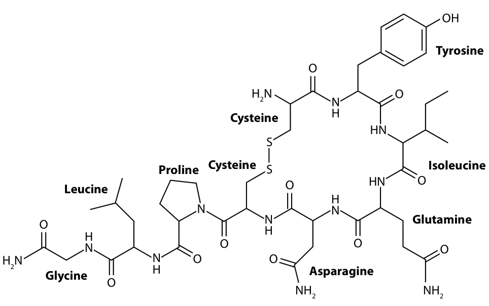
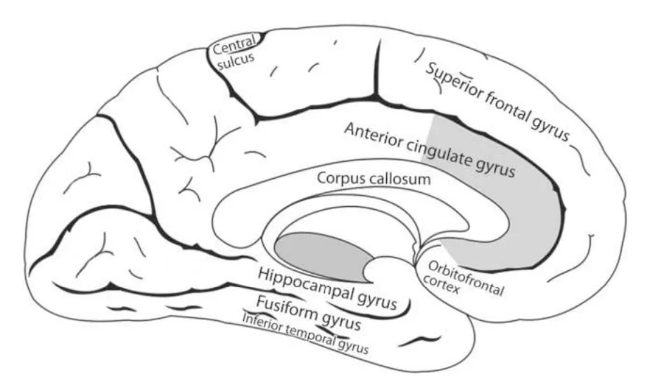
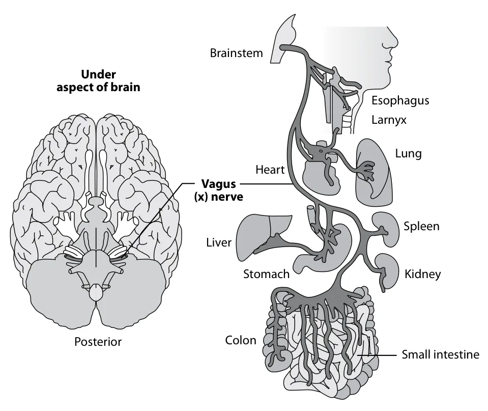
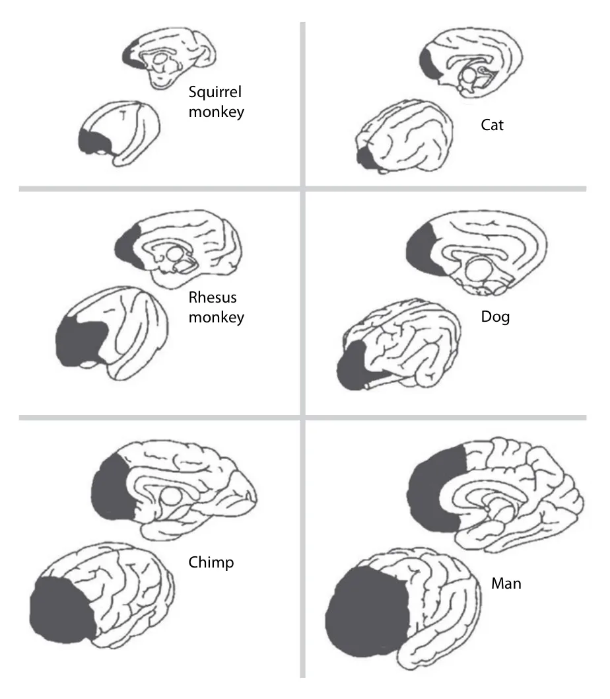
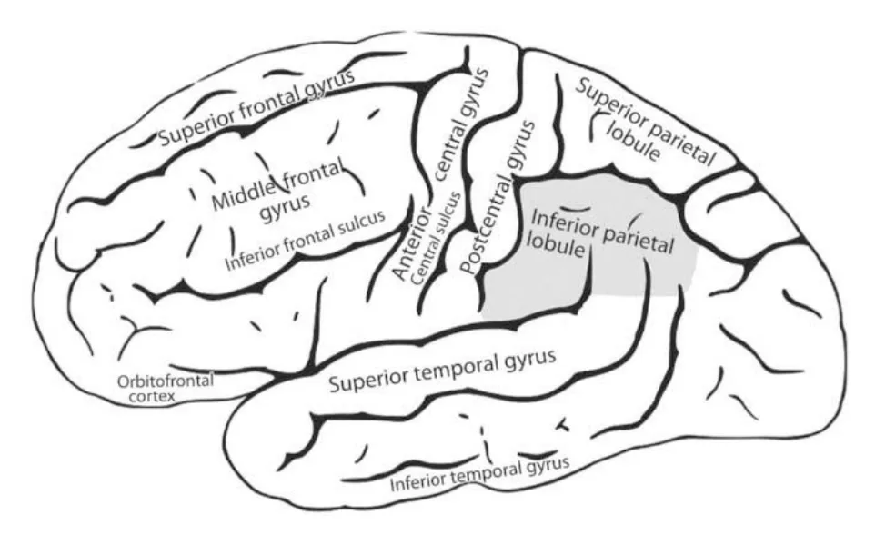

Lời mở đầu & Thông tin xuất bản
braintrust braintrust
Khoa học thần kinh cho chúng ta biết gì về đạo đức
Patricia S. Churchland
Nhà xuất bản Đại học Princeton • Princeton và Oxford
Bản quyền © 2011 thuộc về Nhà xuất bản Đại học Princeton
Xuất bản bởi Nhà xuất bản Đại học Princeton, 41 William Street,
Princeton, New Jersey 08540 Tại Vương quốc Anh: Princeton University Press, 6 Oxford Street,
Woodstock, Oxfordshire OX20 1TW press.princeton.edu
Bảo lưu mọi quyền
Minh họa bìa áo: Bộ não © Sebastian Kaulitzki/Shutterstock
Dữ liệu Biên mục trong Xuất bản của Thư viện Quốc hội Hoa Kỳ
Churchland, Patricia Smith. Braintrust : what neuroscience tells us about morality / Patricia S.
Churchland.
tr. ; cm. What neuroscience tells us about morality Bao gồm tài liệu tham khảo và chỉ mục. ISBN 978-0-691-13703-2 (bìa cứng : giấy không axit)
1. Đạo đức học. 2. Sinh học thần kinh. I. Nhan đề. II. Nhan đề: Khoa học thần kinh cho chúng ta biết gì về đạo đức. [DNLM: 1. Tâm lý học thần kinh. 2. Đạo đức. 3. Khoa học thần kinh—phương pháp.
4. Triết học. 5. Hành vi xã hội. WL 103.5] QP430.C58 2011 612.8—dc22 2010043584
Dữ liệu Biên mục trong Xuất bản của Thư viện Anh hiện có sẵn
Cuốn sách này được chế bản bằng phông chữ Electra
In trên giấy không axit. ¥
In tại Hợp chúng quốc Hoa Kỳ
Tin tưởng tất cả mọi người là một thói xấu, và không tin tưởng ai cả cũng là một thói xấu tương tự.
—Seneca
Đây là xung đột của loài thú chúng ta: nên cho người khác những gì và giữ lại cho bản thân những gì. Bước đi trên ranh giới đó, kiềm chế người khác và bị họ kiềm chế, chính là điều chúng ta gọi là đạo đức.
—Ian McEwan, Eternal Love
Mục lục
Danh mục hình minh họa ix
1. Giới thiệu 1
2. Những giá trị dựa trên não bộ 12
3. Quan tâm và Chăm sóc 27
4. Hợp tác và Tin tưởng 63
5. Kết nối mạng lưới: Gen, Não bộ và Hành vi 95
6. Kỹ năng cho đời sống xã hội 118
7. Không như một quy tắc 163
8. Tôn giáo và Đạo đức 191
Chú thích 205
Thư mục tài liệu tham khảo 235
Lời cảm ơn 259
Chỉ mục 261
Hình minh họa
2.1. Cấu trúc phân tử của oxytocin 15
3.1. Các đường dẫn truyền dưới vỏ não 29
3.2. Các phạm vi quan tâm 31
3.3. Vỏ đại não 36
3.4. Hệ thống đau ở người 38
3.5. Giải phẫu thùy đảo 39
3.6. Vỏ não vành đai, vỏ não trán ổ mắt, hạch hạnh nhân và hồi hải mã 41
3.7. Các đường dẫn truyền dây thần kinh phế vị 43
3.8. Hệ thống phần thưởng 51
6.1. Vỏ não trước trán ở sáu loài 120
6.2. Tế bào thần kinh gương ở vỏ não tiền vận động 136
6.3. Các mốc giải phẫu chính trên bề mặt não người 148 braintrust
Chương 1 — Giới thiệu
1. Giới thiệu
Khi còn đi học, hình thức xét xử bằng thử thách thần linh (trial by ordeal) đối với tôi có vẻ bất công một cách nực cười. Làm sao nó có thể tồn tại như một định chế ở châu Âu suốt hàng trăm năm? Ý tưởng cốt lõi rất đơn giản: với sự can thiệp của Chúa, sự vô tội sẽ tự bộc lộ rõ ràng, chẳng hạn kẻ bị buộc tội ăn trộm sẽ chìm xuống đáy ao, hay kẻ bị buộc tội ngoại tình sẽ không bị bỏng khi cầm thanh sắt nung đỏ trong tay. Chỉ có kẻ có tội mới chết đuối hoặc bị bỏng. (Đối với phù thủy, thử thách ít “khoan dung” hơn: nếu người bị buộc tội là phù thủy bị chết đuối thì được coi là vô tội; nếu bà ta nổi lên mặt nước thì là có tội, và ngay lập tức bị lôi lên giàn hỏa thiêu đang chờ sẵn.) Vì rảnh rỗi, tôi và một người bạn đã bày ra một kế hoạch. Bạn tôi sẽ vu khống rằng tôi đã ăn cắp ví của cô ấy, rồi tôi sẽ đặt tay lên bếp lò xem có bị bỏng không. Chúng tôi hoàn toàn tin chắc tay tôi sẽ bị bỏng, và quả thật là như vậy. Thế thì nếu phép thử hiển nhiên như vậy, làm sao người ta có thể tin vào hình thức xét xử bằng thử thách thần linh như một hệ thống công lý được? Từ phía các giáo sĩ thời Trung cổ, câu trả lời hẳn sẽ là phép thử của chúng tôi chỉ là trò đùa cợt, và Chúa sẽ không hạ mình can thiệp bằng một phép màu chỉ vì mấy đứa trẻ nghịch ngợm. Câu trả lời đó đối với chúng tôi nghe có vẻ gượng gạo. Có bằng chứng nào cho thấy Chúa từng can thiệp để bênh vực những người bị oan sai không? Một rắc rối nữa liên quan đến những người không có đức tin, chẳng hạn như những người chưa được các nhà truyền giáo tiếp cận, hay... có lẽ là chính tôi? Dẫu vậy, câu trả lời này đã khiến chúng tôi chú ý đến vai trò của những niềm tin siêu hình (hay như hồi đó chúng tôi gọi là “thuộc về thế giới bên kia”) trong các thực hành đạo đức, cùng với nhận thức rằng điều tưởng chừng hiển nhiên với chúng tôi về sự công bằng trong việc xác định tội trạng hóa ra lại không hẳn hiển nhiên như thế. Thầy giáo lịch sử của tôi đã cố gắng đặt thực hành thời Trung cổ vào bối cảnh, nhằm làm dịu bớt phần nào cảm giác tự mãn của chúng tôi trước tổ tiên thời Trung cổ: trong hình thức xét xử bằng thử thách thần linh, kẻ có tội có nhiều khả năng thú tội hơn, vì họ tin rằng Chúa sẽ không can thiệp giúp họ, trong khi người vô tội, tin chắc Chúa sẽ giúp đỡ, lại sẵn sàng bước ra xét xử. Do đó, hệ thống này có thể hoạt động khá hiệu quả trong việc moi lời thú tội từ kẻ có tội, ngay cả khi nó làm rất tệ trong việc bảo vệ người vô tội. Câu trả lời này đã khiến chúng tôi nhận ra sự hiện diện của tính thực dụng trong các thực hành đạo đức, điều mà chúng tôi thấy có phần kém cao thượng hơn so với những gì mình từng được kỳ vọng. Thật bất công khủng khiếp biết bao nếu bạn vô tội mà vẫn phải ra xét xử. Tôi có thể hình dung cảnh mình bị trói chặt bằng dây thừng, chết đuối dưới sông sau khi bị cô giáo dạy đàn piano buộc tội là phù thủy.1
Vậy thế nào là công bằng? Làm sao chúng ta biết điều gì được tính là công bằng? Tại sao chúng ta lại coi hình thức xét xử bằng thử thách thần linh là sai trái? Từ đó mở ra cánh cửa bước vào khu rừng rậm rạp, chằng chịt những câu hỏi về đúng và sai, thiện và ác, đức hạnh và thói xấu. Trong phần lớn quãng đời trưởng thành với tư cách là một triết gia, tôi đã né tránh việc dấn thân hoàn toàn vào những câu hỏi kiểu này về đạo đức. Phần lớn là vì tôi không nhìn thấy một con đường có hệ thống nào xuyên qua khu rừng rậm rạp đó, và vì rất nhiều triết học đạo đức đương đại, dù được tôn kính trong các giảng đường đại học, lại hoàn toàn tách rời khỏi những gì “cứng và chắc”; nghĩa là, nó không có mối liên hệ chặt chẽ nào với tiến hóa hay với não bộ, và do đó có nguy cơ trôi nổi trên một đại dương của những ý kiến thuần túy, dẫu là đầy tự tin. Và chắc chắn các giáo sĩ thời Trung cổ cũng tự tin không kém. Có vẻ như Aristotle, Hume và Darwin đã đúng: bản chất của chúng ta là có tính xã hội. Nhưng điều đó thực sự có nghĩa là gì xét về mặt não bộ và gen của chúng ta? Để tiến xa hơn những linh cảm chung chung về bản chất con người, chúng ta cần một thứ gì đó vững chắc để neo giữ nhận định đó vào. Nếu không có dữ liệu thực tế, liên quan từ sinh học tiến hóa, khoa học thần kinh và di truyền học, tôi không thể thấy làm cách nào để neo giữ những ý niệm về “bản chất của chúng ta” vào những nền tảng cứng chắc. Dù từng lúng túng, tôi bắt đầu nhận ra rằng những bước tiến gần đây trong các ngành khoa học sinh học cho phép chúng ta nhìn xuyên qua đám rối rắm ấy, để bắt đầu nhận ra những lối đi được hé lộ bởi dữ liệu mới. Hiện tượng các giá trị đạo đức, vốn từ trước đến nay quá đỗi bí ẩn, nay đã bớt bí ẩn hơn. Không phải đã sáng tỏ hoàn toàn, chỉ là bớt bí ẩn hơn thôi. Bằng cách dựa vào các dữ liệu mới hội tụ từ khoa học thần kinh, sinh học tiến hóa, tâm lý học thực nghiệm và di truyền học, cùng với một khung triết học nhất quán với các dữ liệu đó, giờ đây chúng ta có thể tiếp cận một cách có ý nghĩa câu hỏi: các giá trị bắt nguồn từ đâu? Khối lượng dữ liệu đồ sộ có thể dễ dàng làm chúng ta choáng ngợp, nhưng mạch truyện chính có thể được trình bày theo một cách khá trực diện. Mục tiêu của tôi ở đây là giải thích điều gì có khả năng đúng về bản chất xã hội của chúng ta, và điều đó bao gồm những gì xét về mặt nền tảng thần kinh cho hành vi đạo đức. Như sẽ dần trở nên rõ ràng, nền tảng đó chỉ là nền tảng; nó không phải là toàn bộ câu chuyện về các giá trị đạo đức của con người. Các thực hành xã hội, và văn hóa nói chung, không phải là trọng tâm của tôi ở đây, mặc dù tất nhiên chúng vô cùng quan trọng trong các giá trị mà con người sống theo. Ngoài ra, những tình huống tiến thoái lưỡng nan cụ thể về đạo đức, chẳng hạn như khi nào một cuộc chiến tranh là chính nghĩa, hay thuế thừa kế có công bằng hay không, cũng không phải là trọng tâm ở đây. Mặc dù những nhận xét chung chung về bản chất của chúng ta thường được lắng nghe một cách cởi mở, nhưng chính đôi tai ấy có thể trở nên khá điếc đặc khi các chi tiết về mạch thần kinh bắt đầu được đưa ra thảo luận. Khi chúng ta nói về khả năng liên kết những câu hỏi lớn lao về tâm trí với các bước tiến trong khoa học thần kinh, luôn có những người thích chỉ trích và cảnh báo chúng ta về mối hiểm họa của chủ nghĩa duy khoa học (scientism). Theo như tôi hiểu, điều đó có nghĩa là tội đưa khoa học vào những nơi mà người ta cho rằng nó không có phận sự, là bị ám ảnh bởi ảo tưởng vĩ cuồng rằng khoa học có thể giải thích mọi thứ, làm mọi thứ. Chủ nghĩa duy khoa học, như tôi từng bị cảnh báo đích đáng, là sự vượt quá giới hạn.
Lời phàn nàn rằng một cách tiếp cận khoa học nhằm thấu hiểu đạo đức là phạm tội duy khoa học thực sự đã phóng đại những gì khoa học đang làm, bởi lẽ sự nghiệp khoa học không nhằm thay thế nghệ thuật hay nhân văn. Shakespeare, Mozart và Caravaggio không hề cạnh tranh với protein kinase và micro RNA. Mặt khác, đúng là những tuyên bố triết học về bản chất của sự vật, chẳng hạn như trực giác đạo đức, rất dễ bị tổn thương. Ở đây, triết học và khoa học đang cùng cày xới trên một mảnh đất, và bằng chứng cần phải chiến thắng sự suy ngẫm trên ghế bành. Trong trường hợp hiện tại, luận điểm không phải là khoa học sẽ xông vào và bảo cho chúng ta biết đối với mọi tình huống tiến thoái lưỡng nan thì điều gì là đúng hay sai. Thay vào đó, điểm cốt lõi là việc hiểu sâu sắc hơn điều gì khiến con người và các loài động vật khác có tính xã hội, và điều gì khiến chúng ta có khuynh hướng quan tâm đến người khác, có thể dẫn đến sự thấu hiểu lớn hơn về cách giải quyết các vấn đề xã hội. Điều đó không thể là một điều xấu được. Như triết gia người Scotland Adam Smith (1723–90) từng nhận xét, “khoa học là liều thuốc giải độc vĩ đại đối với thứ nọc độc của sự cuồng tín và mê tín.” Ở đây, “sự cuồng tín” (enthusiasm) mà ông nhắc tới mang nghĩa là sự nhiệt thành ý thức hệ, và chắc chắn nhận xét của ông đặc biệt đúng trong lĩnh vực đạo đức. Thực tế mà nói, trong mọi trường hợp người ta phải thừa nhận rằng khoa học không hề đứng bên bờ vực của việc giải thích mọi thứ về não bộ, tiến hóa hay di truyền học. Hiện nay chúng ta biết nhiều hơn so với mười năm trước; mười năm nữa chúng ta sẽ biết nhiều hơn nữa. Nhưng sẽ luôn có những câu hỏi tiếp theo lấp ló ở đường chân trời. Tuy nhiên, lời khiển trách có thể trở nên gay gắt hơn, cảnh báo về sự phi lý về mặt logic khi dựa vào các ngành khoa học sinh học để hiểu nền tảng của đạo đức. Ở đây, lời buộc tội là mục tiêu như vậy dựa trên sai lầm ngớ ngẩn khi đi từ cái “là” (is) sang cái “nên” (ought), từ sự kiện sang giá trị. Đạo đức, người ta sẽ răn dạy một cách nghiêm khắc, cho biết chúng ta nên làm gì; sinh học chỉ có thể cho biết điều gì đang xảy ra.2 Với một chút sốt ruột, chúng ta có thể bị quở trách vì đã không chú ý đến lời cảnh báo của một triết gia Scotland thế kỷ XVIII khác, David Hume (1711–76), rằng bạn không thể suy ra một mệnh đề “nên” từ các mệnh đề về cái “là”. Do đó, dự án của tôi, theo lời kẻ hay càm ràm, là lẫn lộn và sai đường lạc lối. “Hãy dừng đọc tại đây” hẳn sẽ là lời khuyên của kẻ càu nhàu đó.
Lời khiển trách đó là ngụy tạo. Trước hết, Hume đưa ra nhận xét của mình trong bối cảnh chế giễu niềm tin rằng lý trí—một khái niệm giản lược về lý trí như thứ tách rời khỏi cảm xúc, đam mê và sự quan tâm—là đầu nguồn của đạo đức. Hume, khi nhận ra rằng các giá trị cơ bản là một phần bản chất của chúng ta, đã khẳng định một cách kiên quyết: “lý trí là và chỉ nên là nô lệ của các đam mê.”3 Theo từ “đam mê” (passion), ông muốn nói đến một thứ gì đó tổng quát hơn cảm xúc; ông nghĩ đến bất kỳ định hướng thực tế nào hướng tới việc thực hiện một hành động trong thế giới xã hội hoặc vật lý.4 Hume tin rằng hành vi đạo đức, dù được soi sáng bởi sự hiểu biết và suy ngẫm, nhưng lại bắt nguồn từ một động lực xã hội sâu sắc, phổ biến và bền bỉ, thứ mà ông gọi là “tình cảm đạo đức” (the moral sentiment). Đây là một phần bản chất sinh học của chúng ta. Hume, cũng như Aristotle trước ông và Darwin sau ông, hoàn toàn là một nhà tự nhiên học (naturalist). Vậy lời cảnh báo về “nên” và “là” bắt nguồn từ đâu? Câu trả lời là chính vì ông là một nhà tự nhiên học, Hume phải làm rõ rằng một nhà tự nhiên học tinh tế không hề dính dáng đến những suy luận đơn giản, cẩu thả đi từ cái “là” sang cái “nên là”. Ông thách thức những kẻ coi sự hiểu biết đạo đức là đặc quyền của giới tinh hoa, đặc biệt là giới tăng lữ, những người có xu hướng đưa ra những suy luận ngớ ngẩn giữa mô tả và quy phạm.5 Ví dụ, người ta có thể nói (ví dụ của tôi, không phải của Hume), “Chồng khỏe hơn vợ, nên vợ phải vâng lời chồng”, hoặc “Chúng ta có truyền thống cho các bé trai làm thợ cạo ống khói, do đó chúng ta nên cho các bé trai làm thợ cạo ống khói”, hoặc “Ghét những người bị dị tật là điều tự nhiên, do đó ghét những người bị dị tật là đúng đắn”. Những kiểu suy luận này thật ngu xuẩn, và chính vì Hume là một nhà tự nhiên học, ông muốn tách mình ra khỏi chúng và sự ngu xuẩn của chúng. Hume hiểu rằng ông cần một lời giải thích tinh tế và hợp lý về mối quan hệ phức tạp giữa các quyết định đạo đức một mặt, và sự tương tác năng động của các quá trình tâm trí—động cơ, suy nghĩ, cảm xúc, ký ức và kế hoạch—mặt khác. Và ở mức độ xấp xỉ đầu tiên, ông đã làm được điều đó. Ông đã phác thảo tầm quan trọng của nỗi đau và khoái cảm trong việc học hỏi các thực hành xã hội và định hình các đam mê của chúng ta, của các định chế và tập quán trong việc tạo ra một khuôn khổ cho sự ổn định và thịnh vượng, của sự suy ngẫm và trí tuệ trong việc sửa đổi các định chế và tập quán hiện có.6 Ông hiểu rằng các đam mê và động cơ, cũng như các nguyên tắc đạo đức, có thể và thường xuyên xung đột với nhau, và có sự khác biệt giữa các cá nhân về khí chất xã hội. Do đó, nói theo ngôn ngữ đương đại, mối quan hệ giữa các thôi thúc xã hội và các thực hành xã hội phục vụ cho sự an lành không hề đơn giản và chắc chắn không phải là tam đoạn luận; việc tìm ra giải pháp tốt cho các vấn đề xã hội thường đòi hỏi rất nhiều sự khôn ngoan, thiện chí, đàm phán, kiến thức lịch sử và trí tuệ. Đúng như Hume đã nói. Chủ nghĩa tự nhiên, trong khi xa lánh những suy luận ngu xuẩn, vẫn tìm thấy gốc rễ của đạo đức ở chính bản thân chúng ta, những gì chúng ta quan tâm và những gì có ý nghĩa với chúng ta—trong bản chất của chúng ta. Cả chủ nghĩa siêu nhiên (các vị thần ở thế giới bên kia), lẫn một khái niệm lý trí cao siêu, phi thực tế nào đó, đều không giải thích được bo mạch chủ đạo đức (moral motherboard).7
Vậy làm thế nào mà ý tưởng “bạn không thể suy ra cái nên từ cái là” lại có được vị thế triết học như một đòn hạ gục “kinh điển” đối với cách tiếp cận tự nhiên học về đạo đức? Trước hết, một sự làm rõ về mặt ngữ nghĩa giúp giải thích lịch sử của nó. Việc suy diễn (derive) một mệnh đề trong logic diễn dịch nói một cách chặt chẽ đòi hỏi một lập luận hợp lệ về mặt hình thức; nghĩa là, kết luận phải tất yếu suy ra từ các tiền đề, không có kẽ hở, không chỉ là xác suất cao (ví dụ: “Mọi người đều phải chết, Socrates là người, vậy Socrates phải chết”). Giả sử các tiền đề là đúng, kết luận bắt buộc phải đúng. Nói một cách chặt chẽ, do đó, người ta không thể suy diễn (theo nghĩa xây dựng một lập luận hợp lệ về mặt hình thức) một mệnh đề về điều nên làm từ một tập hợp các sự kiện về điều đang xảy ra. Phần còn lại của câu chuyện là nhiều triết gia đạo đức, đặc biệt là những người theo Kant, nghĩ rằng Hume hoàn toàn sai trong chủ nghĩa tự nhiên của mình, và rằng sinh học nói chung chẳng có gì để dạy chúng ta về bản thân đạo đức cả. Vì thế họ đã treo cổ chủ nghĩa tự nhiên lên bằng nhận xét is/ought của Hume. Nhưng Hume đã đúng khi là một nhà tự nhiên học. Theo một nghĩa rộng hơn của từ “suy luận” (infer) so với suy diễn (derive), bạn hoàn toàn có thể suy luận (tìm ra) điều bạn nên làm, dựa trên kiến thức, tri giác, cảm xúc và sự hiểu biết, đồng thời cân nhắc các yếu tố đối nghịch nhau. Chúng ta làm điều đó liên tục, trong cả thế giới vật lý lẫn thế giới xã hội. Trong các vấn đề sức khỏe, chăn nuôi, làm vườn, nghề mộc, giáo dục trẻ nhỏ và hàng loạt lĩnh vực thực tiễn khác, chúng ta thường xuyên tìm ra điều mình nên làm dựa trên các sự kiện của tình huống và hiểu biết nền tảng của chúng ta. Tôi bị đau răng kinh khủng? Tôi nên đi khám nha sĩ. Có lửa trên bếp? Tôi nên rắc muối nở (baking soda) lên đó. Có con gấu trên đường đi của tôi? Tôi nên bước đi lặng lẽ, tự ngân nga một mình, theo hướng vuông góc. Thứ giúp chúng ta xoay xở trên thế giới chủ yếu không phải là suy diễn logic (derivation). Nhìn chung, các hoạt động giải quyết vấn đề của chúng ta—việc tìm ra và suy luận—trông giống một quá trình thỏa mãn ràng buộc (constraint satisfaction), chứ không giống phép suy diễn hay việc thực thi một thuật toán. Ví dụ, một bầy sói quan sát đàn tuần lộc, và cần chọn một nạn nhân tiềm năng—một con vật yếu ớt, bị cô lập hoặc còn non. Bầy sói rất đói và cần phải thành công, vì vậy một con vật già bị què có thể là lựa chọn tốt hơn một con mới sinh bé xíu, nhưng lại rủi ro hơn; những kẻ săn mồi muốn tiết kiệm năng lượng, nhưng lại thu được nguồn năng lượng dồi dào; chúng cần tính đến vị trí con sông, cách chúng có thể lùa nạn nhân về phía cặp sói đang mai phục, v.v. Con người cũng gặp những vấn đề tương tự một cách thường xuyên—khi mua xe, thiết kế nhà ở, chuyển sang công việc mới, lựa chọn giữa việc điều trị tích cực cho căn bệnh ung thư đã di căn hay chăm sóc giảm nhẹ. Dù thế nào đi nữa, việc hầu hết các hoạt động giải quyết vấn đề không phải là suy diễn là điều hiển nhiên. Hầu hết các vấn đề thực tiễn và xã hội đều là các bài toán thỏa mãn ràng buộc, và bộ não của chúng ta thường đưa ra những quyết định tốt trong việc tìm ra một giải pháp nào đó.8 Thỏa mãn ràng buộc chính xác là gì xét về mặt sinh học thần kinh thì chúng ta vẫn chưa hiểu rõ, nhưng đại khái nó liên quan đến nhiều yếu tố với các trọng số và xác suất khác nhau tương tác với nhau để tạo ra một giải pháp phù hợp cho một câu hỏi. Không nhất thiết là giải pháp tốt nhất, nhưng là một giải pháp phù hợp. Điểm quan trọng đối với dự án của tôi, do đó, rất rõ ràng: việc bạn không thể suy diễn cái “nên” từ cái “là” hầu như không có mấy liên quan đến việc giải quyết vấn đề trong thế giới thực. Bộ não điều hướng thế giới nhân quả bằng cách nhận diện và phân loại các sự kiện mà nó cần quan tâm, tùy thuộc vào cách thức sinh tồn của loài vật—loại quả mọng nào ngon, nơi nào tìm thấy mối béo ngậy, cách bắt cá như thế nào.9 Giả thuyết được đưa ra ở đây là việc điều hướng thế giới xã hội phần lớn phụ thuộc vào chính những cơ chế thần kinh đó—động lực và thôi thúc, phần thưởng và dự đoán, tri giác và trí nhớ, kiểm soát xung động và ra quyết định. Chính những cơ chế này có thể được dùng để đưa ra các quyết định vật lý hoặc xã hội; để xây dựng kiến thức về thế giới hoặc kiến thức xã hội, chẳng hạn như ai là người dễ nổi nóng, hay khi nào tôi được kỳ vọng phải chia sẻ thức ăn, bảo vệ nhóm chống lại kẻ xâm nhập, hoặc nhượng bộ trong một cuộc ẩu đả.10
Điều hướng xã hội là một trường hợp của điều hướng nhân quả nói chung, và tự định hình theo các điều kiện sinh thái hiện có. Trong lĩnh vực xã hội, các điều kiện sinh thái sẽ bao gồm hành vi xã hội của từng thành viên trong nhóm cũng như các thực hành văn hóa của họ, một số trong đó được gọi là “đạo đức” hay “pháp luật”. Nhìn chung, con người, giống như một số loài thú có tính xã hội cao khác, có động lực mạnh mẽ để ở bên các thành viên trong nhóm và chia sẻ các thực hành của họ. Hành vi đạo đức của chúng ta, dù phức tạp hơn hành vi xã hội của các loài động vật khác, vẫn tương đồng ở chỗ nó đại diện cho nỗ lực của chúng ta nhằm xoay xở tốt trong hệ sinh thái xã hội hiện có. Tóm lại, từ góc độ khoa học thần kinh và tiến hóa não bộ, việc bác bỏ theo thói quen các cách tiếp cận khoa học đối với hành vi đạo đức dựa trên lời cảnh báo của Hume về việc suy diễn “nên” từ “là” có vẻ thật đáng tiếc, đặc biệt khi lời cảnh báo đó chỉ giới hạn ở các suy luận diễn dịch. Châm ngôn đó có thể được gác sang một bên để nhường chỗ cho một góc nhìn sinh học thần kinh sâu sắc hơn, dù mới mang tính cương lĩnh, về việc suy luận và giải quyết vấn đề là gì, điều hướng xã hội vận hành ra sao, việc đánh giá được hệ thần kinh thực hiện như thế nào, và bộ não loài thú ra quyết định ra sao. Sự thật dường như là các giá trị bắt nguồn từ mạch thần kinh dành cho sự quan tâm—cho sự an lành của bản thân, con cái, bạn đời, họ hàng và những người khác—định hình nên tư duy xã hội về nhiều vấn đề: giải quyết xung đột, giữ gìn hòa bình, phòng vệ, giao thương, phân phối nguồn lực, và nhiều khía cạnh khác của đời sống xã hội trong tất cả sự phong phú mênh mông của nó. Những giá trị này và cơ sở vật chất của chúng không chỉ ràng buộc việc giải quyết vấn đề xã hội, mà đồng thời chúng còn là những sự kiện mang lại nội dung thực chất cho quá trình tìm ra điều cần làm—những sự kiện như việc con cái có ý nghĩa với chúng ta và chúng ta quan tâm đến sự an lành của chúng; rằng chúng ta quan tâm đến bộ tộc của mình. Đối chiếu với những giá trị này, một số giải pháp cho các vấn đề xã hội thực tế tốt hơn những giải pháp khác; đối chiếu với những giá trị này, các quyết định chính sách thực tiễn có thể được đàm phán. Giả thuyết được đưa ra là cái mà loài người chúng ta gọi là luân lý hay đạo đức là một sơ đồ bốn chiều cho hành vi xã hội được định hình bởi các quá trình não bộ đan xen vào nhau: (1) sự quan tâm (bắt nguồn từ sự gắn bó với người thân và bạn bè cùng sự chăm lo cho an lành của họ),11 (2) nhận diện trạng thái tâm lý của người khác (bắt nguồn từ lợi ích của việc dự đoán hành vi của người khác), (3) giải quyết vấn đề trong bối cảnh xã hội (ví dụ: chúng ta nên phân phối hàng hóa khan hiếm như thế nào, giải quyết tranh chấp đất đai ra sao; chúng ta nên trừng phạt kẻ phạm lỗi thế nào), và (4) học hỏi các thực hành xã hội (bằng củng cố tích cực và tiêu cực, bằng bắt chước, bằng thử và sai, bằng nhiều loại điều kiện hóa khác nhau, và bằng loại suy). Sự đơn giản của khuôn khổ này không có nghĩa là các hình thức, biến thể và cơ chế thần kinh của nó đơn giản. Trái lại, đời sống xã hội phức tạp đến kinh ngạc, và bộ não nâng đỡ đời sống xã hội của chúng ta cũng vậy. Năng lực học hỏi và giải quyết vấn đề xã hội của con người, bị ràng buộc bởi các thôi thúc xã hội cơ bản, chính là nền tảng cho điều chúng ta thường nghĩ là các giá trị xã hội. Chắc chắn rằng, trong những bối cảnh và nền văn hóa khác nhau, những biểu đạt cụ thể của các giá trị đó có thể có hình dáng và sắc thái khác nhau, ngay cả khi các thôi thúc xã hội nền tảng là giống nhau. Theo giả thuyết này, giá trị mang tính căn bản hơn quy tắc. Các chuẩn mực khác nhau điều chỉnh đời sống xã hội, được củng cố bởi hệ thống phần thưởng/trừng phạt, rốt cuộc có thể được phát biểu thành lời và thậm chí được sửa đổi sau khi cân nhắc kỹ lưỡng, hoặc chúng có thể tồn tại dưới dạng tri thức nền ngầm ẩn về điều gì “cảm thấy đúng”.12
Suy ngẫm về những nhu cầu tất yếu đã định hình các nền văn hóa trong những điều kiện hết sức khác biệt, và về đời sống xã hội của con người sống trong các nhóm nhỏ cách đây 250.000 năm có thể đã như thế nào, dẫn chúng ta đến câu hỏi điều gì phân biệt các giá trị đạo đức với các giá trị khác.13 Tôi thường né tránh việc cố gắng chắp vá một định nghĩa chính xác cho từ “đạo đức” (moral),
mà thích thừa nhận rằng có một phổ các hành vi xã hội, một số liên quan đến những vấn đề hết sức nghiêm trọng và thường được gọi là đạo đức, chẳng hạn như bắt tù binh làm nô lệ hoặc bỏ bê trẻ em, trong khi những hành vi khác liên quan đến những vấn đề ít hệ trọng hơn, chẳng hạn như các nghi thức ứng xử tại một đám cưới. Ranh giới của khái niệm “đạo đức”, cũng giống như ranh giới của “ngôi nhà” hay “rau củ”, khá mờ nhạt ngay cả khi chúng ta có thể đồng thuận về những trường hợp điển mẫu, và điều này cản trở sự chính xác trong việc định nghĩa.14 Các giá trị đạo đức không nhất thiết phải bao gồm các quy tắc, dù đôi khi có; chúng không nhất thiết phải được phát biểu rõ ràng, mà có thể được trẻ em tiếp thu một cách ngầm ẩn khi học cách hòa nhập vào thế giới xã hội của mình, hệt như cách chúng ngầm học được cách giữ lửa cháy hay cách chăn dê. Trong khi thừa nhận vai trò trung tâm của các niềm tin và thực hành văn hóa trong đạo đức, mục tiêu của tôi trong cuốn sách này là khảo sát nền tảng của tính xã hội ở loài thú nói chung, và tính xã hội ở con người nói riêng. Tôi bắt đầu dự án này vì tôi muốn hiểu điều gì ở bộ não của các loài thú có tính xã hội cao đã tạo nên tính xã hội của chúng, và qua đó hiểu được điều gì làm nền tảng cho đạo đức. Tôi cũng muốn hiểu sự biến thiên trong khí chất xã hội—trong những thôi thúc muốn thuộc về, muốn đồng cảm sâu sắc, và muốn hình thành những gắn bó bền chặt. Mặc dù cách tiếp cận thông qua các ngành khoa học sinh học khác nhau có thể cho chúng ta biết rất nhiều về nền tảng xã hội, nhưng nó hoàn toàn không phải là toàn bộ nội dung và bản chất của đạo đức con người. Tuy nhiên, khi kết hợp với các giả thuyết về tiến hóa văn hóa và cách văn hóa có thể làm thay đổi hệ sinh thái của một loài,15 góc nhìn sinh học thần kinh có thể góp phần hoàn thiện bức chân dung về các giá trị đạo đức của con người đang được ghép nối dần trong các ngành khoa học hành vi và khoa học não bộ. Đóng góp của tôi cho khoa học về hành vi đạo đức rất khiêm tốn, bởi nhiều câu hỏi trong khoa học thần kinh và di truyền học hành vi vẫn chưa có lời giải đáp. Nó cũng rất chưa hoàn chỉnh, bởi nó tập trung vào bộ não, chứ không phải nền văn hóa mới phát triển gần đây nơi những bộ não hiện đại đang sinh sống. Nó bị giới hạn vì chúng ta không thể nghiên cứu bộ não hay hành vi của người tiền sử, cũng như của tổ tiên loài người (hominin) của chúng ta.16 Ngày càng nhiều hơn, chúng ta sẽ tìm hiểu về bộ gen của các loài hominin đã tuyệt chủng bằng cách thu hồi các mẩu DNA từ xương, và nhờ đó sẽ thu thập được một số thông tin. Trong khi thừa nhận tất cả những giới hạn này, tôi hy vọng rằng nếu giả thuyết của mình đại khái đi đúng hướng, nó có thể bổ sung cho nghiên cứu về não bộ và hành vi. Cốt lõi của cách tiếp cận sinh học đối với đạo đức con người được ưu ái trong cuốn sách này không hề mới, mặc dù cách tổng hợp dữ liệu và bao quát truyền thống triết học liên quan của riêng tôi có thể là mới. Cách tiếp cận này quay ngược về Aristotle (384–322 TCN) và đại triết gia Trung Hoa Mạnh Tử (thế kỷ IV TCN), về những người Scotland thực tế ở thế kỷ XVIII là David Hume và Adam Smith; nó phụ thuộc rất lớn vào Charles Darwin. Những bước tiến trong các ngành khoa học sinh học và xã hội đã giúp chúng ta có thể khám phá một cách nghiêm túc mối liên hệ giữa đạo đức và sự tiến hóa của bộ não loài thú vốn đã tạo ra “lối sống gia đình”,17 và cùng với đó là cội nguồn của sự quan tâm và lòng trắc ẩn định hình nên địa hình đạo đức. Tóm tắt lại, chiến lược phát triển lập luận trung tâm trong cuốn sách này như sau: Chương tiếp theo sẽ cung cấp một chút kiến thức nền về các ràng buộc tiến hóa đối với hành vi xã hội và đạo đức. Chương thứ ba đi sâu vào chi tiết sự tiến hóa của bộ não loài thú và cách nó nâng đỡ sự quan tâm, đồng thời xem xét vai trò của các hormone như oxytocin. Chương thứ tư xem xét kỹ hơn sự hợp tác, đặc biệt là sự hợp tác ở con người, và các dữ liệu liên quan đến vai trò của oxytocin trong sự hợp tác và lòng tin. Chương thứ năm về gen mang tính thận trọng, tập trung vào những gì đã biết và chưa biết về các “gen quy định” các mô-đun đạo đức trong não. Chương thứ sáu đề cập đến tầm quan trọng xã hội của năng lực gán trạng thái tinh thần cho người khác, và cơ sở não bộ khả dĩ cho năng lực đó. Ở chương thứ bảy, vấn đề quy tắc và vai trò của quy tắc trong hành vi đạo đức sẽ đưa cuộc thảo luận vào một hình thức triết học truyền thống hơn. Tôn giáo và mối quan hệ của nó với đạo đức là chủ đề của chương kết.
Chương 2 — Các giá trị bắt nguồn từ não bộ
2. Những giá trị dựa trên não bộ
Các giá trị đạo đức làm nền tảng cho một cuộc sống mang tính xã hội. Ở gốc rễ của các thực hành đạo đức ở con người là những khát vọng xã hội; căn bản nhất, chúng bao gồm sự gắn bó với các thành viên gia đình, sự quan tâm đến bạn bè, và nhu cầu được thuộc về. Được thúc đẩy bởi những giá trị này, ở cấp độ cá nhân cũng như tập thể, chúng ta cố gắng giải quyết những vấn đề có thể gây ra đau khổ, bất ổn và đe dọa đến sự sinh tồn. Vì bộ não của chúng ta được tổ chức để coi trọng sự an lành của bản thân cũng như sự an lành của bạn bè và người thân, xung đột thường xuyên nảy sinh giữa nhu cầu của bản thân và nhu cầu của người khác. Việc giải quyết vấn đề xã hội, dựa trên nền tảng các thôi thúc xã hội, dẫn đến những cách thức xử lý các xung đột này. Một số giải pháp hiệu quả hơn những giải pháp khác, và một số có thể mất ổn định về mặt xã hội về lâu dài hoặc khi điều kiện thay đổi. Từ đó nảy sinh các thực hành văn hóa, quy ước và định chế. Khi một đứa trẻ lớn lên trong hệ sinh thái xã hội của những thực hành như vậy, những trực giác vững chắc về đúng và sai sẽ bén rễ và đơm hoa. Các giá trị bắt nguồn từ đâu? Làm thế nào bộ não lại biết quan tâm đến người khác? Nếu các gen của tôi tổ chức bộ não của tôi để chăm lo cho sự sống còn của tôi, để sinh sản và truyền lại những gen đó, thì làm thế nào chúng có thể tổ chức bộ não của tôi để coi trọng người khác? Một phần, dù mới chỉ là một phần, của sinh học thần kinh về điều này đang bắt đầu được thấu hiểu. Tuy nhiên, trước hết là câu hỏi căn bản hơn: làm thế nào mà bộ não có thể quan tâm đến bất cứ điều gì?1 Nói một cách khiêu khích hơn, làm thế nào các tế bào thần kinh có thể quan tâm? Việc một hệ thống các tế bào thần kinh quan tâm hay coi trọng một điều gì đó có nghĩa là gì? Về những câu hỏi này, chúng ta thực sự biết khá nhiều, và các câu trả lời sẽ dẫn chúng ta bước vào lĩnh vực phức tạp hơn của sự quan tâm xã hội. Ở mọi loài động vật, mạch thần kinh làm nền tảng cho sự tự quan tâm và sự an lành của bản thân. Đây là những giá trị theo nghĩa sơ đẳng nhất. Nếu thiếu động lực tự bảo tồn, một con vật sẽ chẳng thể sống lâu, cũng khó có thể sinh sản. Điều này hiển nhiên đến mức sự tồn tại của các giá trị xã hội, và của hành vi hướng tới việc chăm sóc người khác, có thể trông vô cùng khó hiểu. Tại sao chúng ta, và các loài thú có tính xã hội khác, lại quan tâm đến người khác? Chúng ta biết chắc điều này: tính trung bình, hành vi như vậy, trực tiếp hoặc gián tiếp, phải phục vụ cho độ thích nghi (fitness) của các cá thể tham gia. Nếu không, hành vi đó sẽ bị chọn lọc tự nhiên đào thải, bởi vì nó đòi hỏi chi phí, đặc biệt là chi phí năng lượng và đôi khi là rủi ro đến tính mạng và cơ thể. Nghĩa là, nếu không có những lợi ích bù đắp cho các cá thể phải gánh chịu chi phí của hành vi “quan tâm đến kẻ khác”, theo thời gian số lượng cá thể “quan tâm đến kẻ khác” sẽ giảm dần, và số lượng cá thể “tự quan tâm” sẽ tăng lên. Cơ cấu quần thể sẽ thay đổi. Thứ rốt cuộc quyết định bảng cân đối chi phí và lợi ích chính là thành công sinh sản; tức là sự lan truyền của gen qua quần thể qua nhiều thế hệ. Các cơ chế thần kinh tạo ra hành vi hợp tác có lẽ đã tiến hóa nhiều lần. Hệ thần kinh của côn trùng và động vật có vú khác nhau về kích thước và tổ chức, và các cơ chế tạo ra hành vi quan tâm đến kẻ khác sẽ rất khác nhau giữa, chẳng hạn, loài kiến và con người. Kiến có thể thể hiện mức độ vị tha lớn hơn nhiều so với con người, theo nghĩa chấp nhận thiệt thòi cho bản thân để mang lại lợi ích cho cá thể khác. Tính xã hội và sự kết hợp tự nguyện giữa các cá thể thấy ở con người, cũng như kiểu hợp tác và quan tâm đến người khác, chủ yếu là nhờ những thay đổi tiến hóa đặc thù ở bộ não loài thú và các áp lực tiến hóa tồn tại vào buổi bình minh của loài thú, khoảng
350 triệu năm trước.2 Trong họ động vật có vú—khoảng 5.700 loài đã biết—tất cả các loài đều có tính xã hội ở mức tối thiểu, ở chỗ các cá thể tìm đến nhau để sinh sản và người mẹ chăm sóc con non. Một số loài, như khỉ đầu chó và chồn đất (meerkat), có tính xã hội cao hơn những loài khác, như gấu đen và đười ươi, mặc dù những loài thường sống đơn độc vẫn có thể trở nên xã hội hơn khi nguồn tài nguyên dồi dào làm giảm sự cạnh tranh. Chẳng hạn, có những đoạn video cho thấy một con gấu Bắc Cực, trong tự nhiên, chơi đùa thân thiện với một con chó husky. Mặc dù các kiểu đời sống xã hội khác biệt đáng kinh ngạc đã xuất hiện, những điểm tương đồng trong cơ chế thần kinh nhờ các đặc điểm tổ chức chung trong bộ não loài thú giúp giải thích sự tồn tại của tính xã hội ở loài thú nói chung. Một dòng bằng chứng thuyết phục từ ngành nội tiết thần kinh học (neuroendocrinology), chuyên nghiên cứu các tương tác giữa hormone và não bộ, gợi ý rằng ở động vật có vú (và rất có thể ở các loài chim sống thành bầy), tổ chức thần kinh vốn giúp cá thể tự lo cho sự an lành của chính mình đã được điều chỉnh để thúc đẩy những giá trị mới—sự an lành của một số cá thể khác.3 Trong những giai đoạn đầu của quá trình tiến hóa loài thú, những cá thể khác đó chỉ bao gồm đàn con non yếu ớt. Tùy thuộc vào điều kiện sinh thái và các yếu tố thích nghi, sự quan tâm mạnh mẽ đối với sự an lành của con cái ở một số loài thú đã mở rộng hơn nữa để bao gồm họ hàng, bạn đời, bạn bè hoặc thậm chí người lạ, khi vòng tròn này nới rộng ra. Sự nới rộng vòng tròn quan tâm đến người khác trong hành vi xã hội này đánh dấu sự xuất hiện của thứ cuối cùng đơm hoa kết trái thành đạo đức. Hình thức cụ thể mà đời sống xã hội của một loài mang lấy sẽ phụ thuộc rất lớn vào cách loài đó kiếm sống. Đối với một số loài, sống theo bầy đàn nhìn chung có lợi thế lớn, đặc biệt trong những việc như săn mồi và phòng vệ trước kẻ thù săn mồi; đối với những loài khác, như gấu, kiếm ăn đơn độc và tự vệ là đủ. Oxytocin, một peptide (chuỗi axit amin) rất cổ xưa, nằm ở trung tâm của mạng lưới phức tạp gồm các thích nghi của loài thú để quan tâm đến cá thể khác, neo giữ nhiều phiên bản khác nhau của tính xã hội được thấy tùy theo quá trình tiến hóa của dòng dõi (xem hình 2.1). Oxytocin được tìm thấy ở tất cả các loài động vật có xương sống, nhưng quá trình tiến hóa của bộ não loài thú đã điều chỉnh oxytocin cho những nhiệm vụ mới trong việc chăm sóc con non và cuối cùng là cho những hình thức xã hội rộng mở hơn.

Bên cạnh những vai trò mới của oxytocin và các hormone khác, hai thay đổi tiến hóa phụ thuộc lẫn nhau khác trong não bộ đóng vai trò tối quan trọng đối với tính xã hội ở loài thú vốn báo trước cho đạo đức. Thay đổi thứ nhất liên quan đến những điều chỉnh tạo ra cảm giác sợ hãi và lo âu tiêu cực khi đối mặt với sự chia cắt hoặc mối đe dọa đối với con non, đi kèm với động lực thực hiện hành động khắc phục. Ngoài ra, khoái cảm và sự nhẹ nhõm xuất hiện khi cha mẹ được đoàn tụ với con non hoặc mối đe dọa đã qua đi.4 Thay đổi chính thứ hai là năng lực học hỏi gia tăng, gắn liền với nỗi đau và khoái cảm, giúp một cá thể tiếp thu kiến thức chi tiết về “lề lối” của những cá thể khác trong nhóm. Năng lực trí nhớ được mở rộng đã nâng cao đáng kể khả năng lường trước rắc rối và lập kế hoạch hiệu quả hơn của con vật. Những điều chỉnh này nâng đỡ thôi thúc muốn ở bên nhau, cũng như sự phát triển của một “lương tâm” được điều chỉnh theo các thực hành xã hội tại địa phương; nghĩa là, một tập hợp các phản ứng xã hội, được định hình bởi quá trình học hỏi, chịu sự điều tiết mạnh mẽ của sự tán thành và không tán thành, và của các cảm xúc nói chung. Nói đơn giản hơn, động vật có vú có động lực học hỏi các thực hành xã hội bởi vì hệ thống phần thưởng tiêu cực, vốn điều tiết nỗi đau, sự sợ hãi và lo âu, phản ứng với sự ruồng bỏ và không tán thành, còn hệ thống phần thưởng tích cực phản ứng với sự tán thành và tình cảm. Tóm lại, ý tưởng ở đây là sự gắn bó (attachment), được bảo chứng bởi nỗi đau đớn khi chia lìa và niềm vui khi bầu bạn, và được quản lý bởi mạch thần kinh cùng các chất dẫn truyền thần kinh phức tạp, chính là nền tảng thần kinh cho đạo đức. Khi sử dụng từ gắn bó (attachment), tôi đang dùng thuật ngữ của nội tiết thần kinh học, trong đó gắn bó chỉ khuynh hướng mở rộng sự quan tâm tới người khác, muốn ở bên họ, và cảm thấy đau khổ khi bị chia cắt.5
Bằng chứng khảo cổ học cho thấy loài Homo sapiens hiện đại về mặt giải phẫu đã tồn tại ở châu Phi khoảng 300.000 năm trước.6 Bằng chứng về văn hóa, dưới dạng các công cụ bằng xương như dùi, mũi nhọn có ngạnh và mũi nhọn được đánh bóng, cũng như việc chạm khắc bằng đất son (ochre), có niên đại khoảng 75.000 năm trước (được tìm thấy chẳng hạn tại hang Blombos, Nam Phi7). Đáng chú ý là cũng có một số bằng chứng về giao thương liên nhóm vào thời điểm sớm như thế này.8 Curtis Marean thuộc Đại học Bang Arizona thậm chí còn tìm thấy bằng chứng sớm hơn nữa (khoảng 110.000 năm trước) tại vùng Pinnacle Point ở Nam Phi về việc sử dụng nhiệt độ cao để “nung” loại đá silcrete phổ biến nhằm tạo ra các công cụ đặc biệt sắc bén. Đây là một thành tựu nhận thức ấn tượng bao gồm một chuỗi các bước được thực hiện cẩn trọng: đào một hố cát để đưa đá lên mức 350 độ C, giữ nhiệt độ ổn định trong một khoảng thời gian, rồi hạ nhiệt độ xuống từ từ.9 Các công cụ làm bằng gỗ có lẽ đã phổ biến, nhưng nếu có, nhìn chung chúng sẽ không được bảo tồn để chúng ta tìm thấy. Việc xác định xem một hóa thạch có phù hợp với giải phẫu người hiện đại hay không tuy khó nhưng vẫn khả thi, nhưng việc xác định xem chủ nhân của nó có thực hiện các hành vi được coi là hiện đại hay không thì gần như bất khả thi. Về câu hỏi này, những bằng chứng ít ỏi hiện có đến từ các phát hiện khảo cổ về công cụ, đồ vật, trang sức cơ thể, dấu tích nơi ở được gia công, việc chôn cất người chết theo nghi thức, v.v. Tại các di chỉ châu Âu nơi một nhóm nhỏ Homo sapiens di cư tới, các hiện vật công nghệ, bao gồm nghệ thuật hang động và công cụ, có niên đại khoảng 40.000–50.000 năm trước. Trước những phát hiện tại hang Blombos và Pinnacle Point, những hiện vật khảo cổ ở châu Âu này từng được cho là đánh dấu sự xuất hiện đầu tiên của văn hóa loài người, khiến một số nhà nhân học phỏng đoán rằng những biến đổi di truyền ở người tiền sử tạo ra một bộ não khác biệt hẳn đã xảy ra ở nhóm Homo sapiens di cư sang châu Âu khoảng 50.000 năm trước. Cả những sự kiện được giả định lẫn lý thuyết dùng để giải thích chúng giờ đây đều có vẻ khó xảy ra, đặc biệt là trước các phát hiện tại hang Blombos và Pinnacle Point có niên đại khoảng 75.000–110.000 năm trước. Những phát hiện cổ xưa hơn này cũng khiến linh cảm cho rằng các gen “quy định” ngôn ngữ, công nghệ tiên tiến hơn hay đạo đức chỉ mới xuất hiện khoảng 50.000 năm trước trở nên mong manh hơn. Đối chiếu với các phát hiện cho đến nay, điểm cơ bản dường như là văn hóa có lẽ không phải là một yếu tố lớn hơn nhiều trong các thực hành xã hội của con người so với trong các thực hành xã hội của tinh tinh lùn bonobo hay khỉ đầu chó, chẳng hạn, cho đến khi loài người đã tồn tại được khoảng 150.000 năm. Có vẻ như phần lớn đời sống xã hội của người tiền sử, giống như sự phụ thuộc về mặt công nghệ của con người vào các công cụ xương và đá đơn giản, có lẽ còn thô sơ, bao gồm các nhóm nhỏ lang thang khắp châu Phi, châu Á và châu Âu. Nói là đơn giản, ý tôi là đơn giản so với đời sống xã hội hiện nay, hoặc thậm chí ở các thành phố cổ đại như Athens, nhưng chắc chắn không đơn giản so với đời sống xã hội của hải ly hay chuột chũi trần. Theo hồ sơ khảo cổ, dung tích hộp sọ của con người sống cách đây 250.000 năm đại khái tương đương với chúng ta (khoảng 1.300–1.500 centimet khối), tất nhiên có sự biến thiên cá nhân hồi đó cũng như bây giờ. (Để so sánh, não tinh tinh khoảng 400 cc, và não Homo erectus chỉ khoảng 800–1.100 cc, dựa trên kích thước hộp sọ.) Liệu các chi tiết giải phẫu thần kinh có giống nhau không thì tất nhiên không rõ, vì não bộ phân hủy rất nhanh sau khi chết. Nếu chúng ta đưa ra giả định hợp lý rằng con người thời kỳ Đồ đá giữa (300.000–50.000 năm trước) có bộ não, khi mới sinh, khá giống với chúng ta, ít nhất là về mặt khuynh hướng xã hội và năng lực giải quyết vấn đề, thì bất kỳ câu chuyện nào về nền tảng thần kinh của đạo đức con người cũng sẽ áp dụng cho họ. Sự khác biệt về văn hóa trong các thực hành đạo đức—xưa và nay—chắc chắn sẽ rất nhiều, cũng giống như có sự khác biệt về công nghệ và nhà ở—xưa và nay. Không giống như tổ tiên thời kỳ Đồ đá giữa của chúng ta, con người đương đại thường xuyên học đọc, đi xe đạp và chơi đàn guitar. Vì việc học liên quan đến những thay đổi cấu trúc trong não bộ, nên tất nhiên bộ não của những người đã tiếp thu các kỹ năng này sẽ khác với bộ não của những người chưa tiếp thu. Theo nghĩa đó, bộ não của tôi sẽ khác với bộ não của những người họ hàng cổ xưa cách đây khoảng 100.000 năm. Tuy nhiên, xét theo những gì chúng ta hiện biết, rất có khả năng họ và tôi đã bắt đầu cuộc đời với cùng một trang bị thần kinh đại khái như nhau cho tính xã hội và nhận thức. Giả định về sự tương đồng đại khái trong năng lực nhận thức và xã hội giữa chúng ta và những người họ hàng thời Đồ đá, nếu không có bằng chứng thuyết phục ngược lại, giúp ngăn ngừa việc áp đặt những ý niệm từ thời kỳ hiện đại vào bản chất con người. Nó hàm ý rằng chúng ta không thể giả định rằng tổ tiên thời kỳ Đồ đá giữa của chúng ta ở châu Phi và châu Âu có bất cứ thứ gì giống với các niềm tin đạo đức của người đương thời, bất chấp việc chia sẻ cùng một nền tảng căn bản.10 Do đó, khi triết gia Susan Neiman chỉ ra điều bà xem là nhu cầu sâu sắc của con người về mục đích đạo đức, về khát vọng của nhân loại đối với sự tiến bộ đạo đức, những nhận xét sâu sắc của bà có lẽ chỉ áp dụng cho con người sống trong quá khứ khá gần đây, và có lẽ chỉ cho những người có sự thịnh vượng, tuổi thọ, thời gian nhàn rỗi và nền tảng văn hóa để suy ngẫm về mục đích đạo đức.11 Những khát vọng như vậy về sự tiến bộ đạo đức có thể được nuôi dưỡng về mặt văn hóa, giống như những ý tưởng về tiến bộ công nghệ hay khoa học. Tôi sẽ không ngạc nhiên nếu trong phần lớn lịch sử loài người, tổ tiên chúng ta quá bận rộn với chuyện sinh tử, thức ăn và chỗ ở, đến nỗi không thể dành nhiều tâm trí cho sự tiến bộ đạo đức, dù tất nhiên chúng ta không biết họ đã làm gì trong thời gian rảnh rỗi. Cũng giống như bộ não không tiến hóa để đọc, mà để nhận diện các khuôn mẫu phức tạp nhằm giúp định hướng hành động, hoàn toàn có khả năng nó không tiến hóa để ủng hộ nhân quyền phổ quát hay xét xử bằng bồi thẩm đoàn. Điểm này không có nghĩa là ý tưởng về sự tiến bộ đạo đức không thúc đẩy chúng ta hiện nay, nhưng nó gợi ý rằng chúng ta cần thận trọng khi gán những giá trị như khát vọng tiến bộ đạo đức cho Homo sapiens thời kỳ đầu, và do đó cho bản chất cơ bản của chúng ta ở đây và ngay lúc này. So với các loài thú khác, con người có bộ não rất lớn so với kích thước cơ thể. Theo một nghĩa chưa thật chính xác nào đó, chúng ta thông minh hơn các loài thú khác: chúng ta có sự linh hoạt nhận thức lớn hơn, năng lực trừu tượng hóa và lập kế hoạch dài hạn lớn hơn, và chúng ta thể hiện khả năng cũng như khuynh hướng bắt chước đặc biệt mạnh mẽ.12 Tuy nhiên, chính xác thì kích thước não lớn hơn mang lại điều gì và nó đóng góp như thế nào vào trí thông minh thì hoàn toàn chưa rõ ràng.13 Đáng thất vọng là mối liên hệ giữa vỏ não mở rộng và trí thông minh chưa được hiểu rõ, mặc dù người ta biết rằng vỏ não trước trán rất quan trọng trong việc ra quyết định, kiểm soát xung động và gán mục tiêu cũng như tri giác cho người khác.14 Những suy đoán gắn kết trí thông minh với kích thước não thì rất nhiều, nhưng cho đến khi biết thêm về chức năng và tổ chức của não bộ, chúng chỉ được coi là những câu chuyện hay. Con người đã phát triển các ngôn ngữ vô cùng tinh vi và các nền văn hóa phong phú, và do đó tính xã hội cũng như các hệ thống giá trị đạo đức của chúng ta đã trở nên phức tạp tương ứng. Có vẻ như công nghệ và nghệ thuật—và người ta có thể đoán là cả ngôn ngữ—của chúng ta đã tương đối thô sơ trong ít nhất 200.000 năm. Chẳng hạn, rìu tay bằng đá dường như là công cụ duy nhất từng được người Neanderthal chế tạo và sử dụng, và là công cụ duy nhất của Homo sapiens trong khoảng 200.000 năm gì đó. Công nghệ làm giáo mác có vẻ quá hiển nhiên đối với chúng ta, vậy mà trong suốt 200.000 năm, điều đó có lẽ đã không nảy ra trong đầu bất kỳ ai. Thêm một ví dụ nữa, việc ghi lời nói thành chữ viết có vẻ hoàn toàn hiển nhiên với chúng ta, nhưng chữ viết và việc đọc đã không được Homo sapiens phát minh ra cho đến khoảng 5.400 năm trước. Do đó, chúng ta không thể giả định rằng việc có một bộ não lớn khiến cho việc phát minh và đổi mới, dù trong lĩnh vực công nghệ hay xã hội, trở thành một chuyện hiển nhiên hay tất yếu. Nhà báo khoa học Matt Ridley lập luận rằng một khi việc trao đổi hàng hóa và đổi chác bắt đầu, một khi các tạo tác khác nhau, như lao móc hay đồ trang sức cơ thể, được giao thương giữa các nhóm, sự đổi mới về tạo tác và xã hội đã tăng tốc.15 Bằng chứng về việc trao đổi hàng hóa giữa các nhóm có niên đại khoảng 100.000 năm trước, điều này hàm ý rằng con người đã không tham gia trao đổi trong suốt khoảng 200.000 năm. Theo quan điểm của Ridley, giá trị độc đáo trong việc đổi thứ tôi có lấy những thứ khác biệt mà bạn có là một bước ngoặt trong các nền kinh tế loài người, đánh dấu sự khởi đầu của quá trình phát triển lâu dài, chậm chạp của các công nghệ và sự chuyên môn hóa lao động. Nếu tôi làm rất nhiều ngọn giáo nhưng không có lưới, rồi đổi một ít giáo của tôi lấy một ít lưới của bạn, đột nhiên hộp công cụ của tôi tăng lên gấp đôi. Kết quả là cơ hội kiếm thức ăn của tôi tăng lên đáng kể. Như giả thuyết của Ridley giải thích, việc đổi chác và trao đổi đã tưởng thưởng cho sự đổi mới và chuyên môn hóa, điều này đến lượt nó lại thúc đẩy thêm nhiều hoạt động đổi chác và trao đổi hơn nữa, truyền cảm hứng cho nhiều đổi mới và chuyên môn hóa hơn nữa. Có khả năng những bước đi đầu tiên trong việc đổi chác hầu như khó nhận ra đúng bản chất của nó, nhưng bằng cách nào đó lợi thế của việc đổi chác hay trao đổi đã được một số người nhận ra, bởi lẽ thực hành này đã lan rộng và ngày càng trở nên tinh vi hơn. Vòng phản hồi tích cực này đã giúp thúc đẩy việc tạo ra các thực hành xã hội trong thương mại nhằm gia tăng cơ hội thịnh vượng cho những người đổi mới và trao đổi. Cũng giống như chữ viết được phát minh ra mà không cần có một “gen viết lách”, việc đổi chác và giao thương có lẽ đã được tình cờ tìm ra và cải tiến mà không cần sự hỗ trợ của một “gen đổi chác”. Năng lực giải quyết vấn đề, dù nó thực sự bao gồm những gì xét về mặt mạch thần kinh, cho phép sự xuất hiện của các hành vi mới mẻ mà không cần đến sự trợ giúp của các gen mới. Lịch sử văn hóa và tiến hóa là trọng tâm của những công trình lý thuyết và thực nghiệm xuất sắc trong các ngành khoa học xã hội.16 Một chủ đề quan trọng nổi lên từ công trình này liên quan đến động lực học của tiến hóa văn hóa; chẳng hạn như việc tiến hóa văn hóa có thể diễn ra nhanh hơn nhiều so với tiến hóa sinh học, và việc các định chế văn hóa có thể tạo nên một sự thay đổi trong các điều kiện sinh thái, đến lượt nó có thể làm biến đổi các áp lực chọn lọc.17 Lợi thế của việc đổi chác và trao đổi các hàng hóa không giống nhau (giáo của tôi lấy lưới của bạn) là một ví dụ về sự thay đổi trong hệ sinh thái xã hội làm biến đổi các áp lực chọn lọc bằng cách mở rộng phạm vi các nguồn lực sẵn có. Chẳng hạn, bẫy chuột túi gopher bằng dây thừng nhanh hơn và đáng tin cậy hơn nhiều so với việc cố gắng rón rén lại gần và đập chúng bằng gậy.
Quá trình chuyển đổi chậm chạp từ phương thức sinh tồn săn bắn hái lượm sang nông nghiệp bắt đầu khoảng 10.000 năm trước là một cuộc chuyển biến văn hóa đã mang lại nhiều thay đổi trong các điều kiện của đời sống xã hội. Nguồn cung cấp sữa và thịt đáng tin cậy từ dê, cũng như việc thu hoạch ngũ cốc và rau quả, phần nào làm giảm bớt những bấp bênh của việc chỉ phụ thuộc vào tìm kiếm thức ăn ngoài tự nhiên. Một trong những thay đổi xã hội quan trọng hơn là sự tụ họp thành các nhóm lớn hơn bao gồm nhiều người không có quan hệ huyết thống. Cuộc sống trong một nhóm lớn hơn đã làm nảy sinh những cơ hội mới để cải thiện sự an lành, cũng như những hình thức cạnh tranh mới trong nội bộ nhóm và giữa các nhóm, cùng với những loại vấn đề xã hội mới cần phải giải quyết. Bằng chứng về một số biến đổi di truyền trong vòng 10.000 năm qua thực sự có tồn tại, nhưng cho đến nay những biến đổi này không liên quan đến mạch thần kinh, nhận thức hay khí chất xã hội, mà liên quan đến những đặc tính có thể dễ dàng chịu sự biến đổi tiến hóa hơn mà không gây ra một chuỗi các biến đổi có hại. Một ví dụ quan trọng là biến đổi di truyền cho phép người trưởng thành tiêu hóa được sữa động vật. Trẻ sơ sinh loài thú sẽ không thể sống bằng sữa nếu không có lactase, một loại enzyme cần thiết để tiêu hóa sữa. Ở con người thời Đồ đá, lactase giảm dần khi cai sữa (như ở hầu hết các loài thú) và cùng với nó là khả năng tiêu hóa sữa. Nhưng khoảng 10.000 năm trước—vào khoảng thời gian dê và bò được thuần hóa—những người tình cờ mang một gen tiếp tục sản xuất lactase đến tuổi trưởng thành (sự duy trì lactase) có một lợi thế chọn lọc vì họ có thể tiêu hóa sữa. Do đó, trong các quần thể chăn nuôi gia súc, số lượng người trưởng thành có khả năng duy trì lactase tăng lên dần dần.18 Ít nhất bốn biến đổi di truyền khác nhau được biết là có liên quan đến sự duy trì lactase, và chúng xuất hiện vào những thời điểm khác nhau ở châu Âu và châu Phi, có lẽ tương quan với việc áp dụng nghề chăn nuôi và vắt sữa tại địa phương.19
Những tuyên bố về các biến đổi di truyền liên quan đến hành vi xã hội và nhận thức khó chứng minh hơn nhiều, và dù hấp dẫn, vẫn chỉ dừng ở mức phỏng đoán. Những câu chuyện đó có thể đúng, nhưng khoa học cần bằng chứng để tin. Hãy nhớ rằng gen tạo ra protein, và có những con đường nhân quả rất dài giữa protein và mạch thần kinh, và những con đường nhân quả dài hơn nữa giữa mạch thần kinh và môi trường, mà môi trường đến lượt nó lại tác động đến sự biểu hiện gen và protein. Gen là một phần của các mạng lưới di truyền, và các mạng lưới này tương tác với môi trường theo những cách phức tạp. Không nghi ngờ gì nữa, gen của chúng ta đóng vai trò cực kỳ quan trọng đối với bản chất của chúng ta và đối với sự biến thiên giữa chúng ta, nhưng từ nhận xét đó, không thể kết luận điều gì quá cụ thể, chẳng hạn như có một “gen quy định” sự công bằng, tôn giáo hay máu phiêu lưu. Chắc chắn sẽ là sai lầm nếu cho rằng những biến đổi trong bộ gen người ảnh hưởng đến cấu trúc não bộ đã dừng hẳn khoảng 200.000 năm trước. Tuy nhiên, việc chứng minh mối quan hệ nhân quả giữa gen và hành vi, rồi chứng minh rằng gen đó và hành vi đó đã được chọn lọc, không thể đạt được chỉ bằng cách kể một câu chuyện lôi cuốn. Điều đáng kinh ngạc về con người là chúng ta học hỏi một phạm vi rộng lớn các thứ một cách dễ dàng đến thế, những thứ mà, xét theo nền văn hóa, chúng ta hẳn đã không có cơ hội học cách đây 200.000 năm. Trong một nền văn hóa giàu có về công nghệ và định chế, những thứ chúng ta học thường làm cho chúng ta trở nên thông minh, tương đối so với những người trong một nền văn hóa đơn giản hơn. Nếu việc làm giáo bằng cách buộc rìu tay vào những cành cây chắc chắn có vẻ hiển nhiên đối với tôi, hay nếu việc ghi lại những gì bạn nợ tôi từ cuộc trao đổi của chúng ta có vẻ hiển nhiên đối với tôi, thì đó là vì nền văn hóa của tôi làm cho tôi thông minh theo những cách đó. Giả sử tôi sống ở châu Phi cách đây 200.000 năm, liệu tôi có nghĩ ra được ý tưởng về một ngọn giáo để ném thay vì một chiếc rìu tay để xé không? Tôi có xu hướng nghi ngờ điều đó. Để minh họa ngắn gọn, tôi sẽ kể rằng khoảng hai mươi năm trước, tôi đã dẫn mười sinh viên đại học ưa mạo hiểm từ Đại học California–San Diego đi bè vượt sông ở Bắc Cực, từ thượng nguồn sông Firth đến biển Beaufort và tiếp tục tới đảo Herschel ở Bắc Băng Dương. Đây đều là những sinh viên đứng đầu lớp, đang chuẩn bị vào trường y, trường cao học và trường kinh doanh, nhưng tất cả bọn họ đều hoàn toàn ngây ngô về việc đi bộ đường dài nơi hoang dã. Vào ngày thứ hai, người dẫn đường Inuit của chúng tôi lặng lẽ kéo tôi ra một góc sau bữa tối và hỏi tôi xem đây có phải là những sinh viên đặc biệt ngu ngốc hay không. Vấn đề là họ đã làm những điều ngớ ngẩn nhất khi cố gắng dựng lều, chuẩn bị thức ăn, chất đồ lên bè, lên xuống bè, v.v. Những thứ vốn là bản năng thứ hai đối với người dẫn đường và các con nhỏ của anh ta, chẳng hạn như luôn kiểm tra bầu trời để xem sự thay đổi thời tiết, lại là những kỹ năng mà các sinh viên hoàn toàn mù tịt. Tuy nhiên, họ đã học rất nhanh, điều mà anh ấy đánh giá cao, và sau bảy ngày, anh ấy đã hào phóng dạy cho họ cách rình một đàn bò xạ hương.
Nhưng Chắc chắn Chỉ Con người Mới Có Đạo đức Chứ?
Khi chúng ta xem xét những điểm khác biệt và tương đồng giữa bộ não của con người và các loài thú khác, một câu hỏi nền tảng nổi lên: liệu chỉ con người mới có các giá trị đạo đức, hay các loài động vật khác cũng có thể được coi là có các giá trị đạo đức, dẫu là những giá trị phù hợp với tổ chức xã hội và hệ sinh thái của riêng chúng? Bởi vì có những mô-típ và cơ chế nền tảng chung trong hành vi của các loài thú có tính xã hội nói chung, câu hỏi liệu các loài không phải người có giá trị đạo đức hay không hoàn toàn không đơn giản. Hơn nữa, đạo đức “kiểu con người” không phải là một tập hợp duy nhất các giá trị đạo đức, xét đến sự biến thiên trong những gì các nền văn hóa nhân loại viện dẫn làm giá trị đạo đức của họ. Một số nền văn hóa chấp nhận việc giết trẻ sơ sinh bị khuyết tật hoặc không mong muốn, những nền văn hóa khác coi đó là điều ghê tởm về mặt đạo đức; một số coi việc ăn một miếng thịt của kẻ thù bị giết là yêu cầu đối với một chiến binh dũng cảm, những nơi khác coi đó là man rợ. Mặc dù sự gắn bó có thể là nền tảng cho đạo đức, không có một tập hợp các bước đơn giản nào—không có phép suy diễn nào, không có quy tắc áp dụng chính xác nào—để đưa chúng ta từ “Tôi quan tâm, tôi coi trọng” đến giải pháp tốt nhất cho các vấn đề đạo đức cụ thể, đặc biệt là những vấn đề nảy sinh trong các nền văn hóa phức tạp. Khá hiển nhiên, giải quyết vấn đề xã hội là một công việc thực tiễn lộn xộn bên trong bộ não cá nhân, nơi nhiều yếu tố tương tác đẩy, kéo, cạnh tranh và ràng buộc quyết định mà bộ não chốt lại. Một số ràng buộc được ưu tiên hơn những ràng buộc khác; một số yếu tố sẽ có ý thức, số khác thì không; một số có thể diễn đạt thành lời, số khác thì không. Nhìn chung, việc ra quyết định là một công việc thỏa mãn ràng buộc, và khi nó diễn ra tốt đẹp, chúng ta nói rằng tính hợp lý (rationality) đã thắng thế.20 Thậm chí còn phức tạp hơn việc ra quyết định cá nhân là công việc giải quyết các vấn đề xã hội trong một nhóm xã hội, nơi các lợi ích, niềm tin, khí chất và truyền thống cạnh tranh lẫn nhau ràng buộc quyết định mà nhóm chốt lại, trong khi mỗi bộ não cá nhân trong hỗn hợp đó lại có tập hợp các ràng buộc nội tại của riêng mình.21 Sự tiến bộ đạo đức, nơi nó được hiện thân trong các định chế và luật pháp, dường như phụ thuộc rất lớn vào sự đàm phán, lịch sử định chế và hoạt động chính trị quy mô nhỏ (small-p politics). Suy ngẫm về sự khác biệt giữa hành vi xã hội của con người một mặt, và mặt khác là hành vi của tinh tinh, khỉ đầu chó, cá voi sát thủ, voi, chồn đất và khỉ đuôi sóc (marmoset), có lẽ hữu ích nhất là gác lại giả định rằng có chính xác hai loại đạo đức: đạo đức của con người và đạo đức của động vật. Vấn đề với giả định đó là mỗi loài xã hội dường như độc đáo ở nhiều khía cạnh khác nhau, ngay cả khi có những đặc điểm chung. Tinh tinh lùn bonobo, dường như là loài duy nhất, sử dụng tình dục như một phương tiện giảm căng thẳng xã hội; tinh tinh thường và khỉ đầu chó không làm thế; vượn sẽ giao lưu với nhóm hàng xóm, khỉ đột và vượn cáo thì không. Con người sử dụng tiếng cười như một phương tiện giảm căng thẳng, và ở tinh tinh, tiếng thở hổn hển khi đùa nghịch (play-panting) cùng “khuôn mặt đùa nghịch” đi kèm dường như cũng đóng vai trò như vậy,22 nhưng khỉ đầu chó và vượn cáo dường như không có hành vi tương đồng này. Ở tinh tinh, con cái đến tuổi sinh sản sẽ rời đàn để tìm nhà mới, nhưng ở khỉ đầu chó, con đực mới là kẻ rời đi khi trưởng thành. Khuôn mẫu của tinh tinh dường như cũng là khuôn mẫu ở một số xã hội săn bắn hái lượm như người Inuit ở Bắc Cực. Những khuôn mẫu hành vi như vậy ảnh hưởng đến nhiều khía cạnh của thứ bậc và phân cấp. Ở chồn đất, con cái đầu đàn sẽ giết con non của con cái có thứ bậc thấp hơn và đuổi con cái đó ra khỏi nhóm; ngược lại, ở khỉ đầu chó, tất cả các con cái có khả năng sinh sản trong đàn đều sinh con. Hơn nữa, trong nội bộ một loài có thể có các phong cách địa phương (có lẽ là các chuẩn mực, dù không được diễn đạt bằng ngôn ngữ).23
Ở các nhóm nhỏ người săn bắn hái lượm, chẳng hạn như người Inuit trước thế kỷ XX, việc bắt cóc phụ nữ từ trại của các bộ lạc khác không phải là chuyện hiếm gặp, chắc chắn là một thực hành đã phục vụ, dẫu không có chủ ý, cho việc đa dạng hóa vốn gen. Những người trong các xã hội phương Tây hiện đại ủng hộ cách tiếp cận đạo đức dựa trên quy tắc có lẽ sẽ lên án thực hành này như một sự vi phạm các quy tắc đạo đức. Tuy nhiên, tôi sẽ không thấy đây là một phán xét dễ dàng, bởi lẽ lựa chọn thay thế—giao phối cận huyết—mang lại những mối nguy hại mà tôi không muốn giáng xuống người Inuit, và cũng không muốn cho chính mình, nếu tôi là một người Inuit sống ở Bắc Cực vào thời kỳ tiền châu Âu. Ngay trong nền văn hóa của chính chúng ta, thường xuyên có sự bất đồng về việc đánh giá một hành vi. Năm 1972, phi công lái máy bay hạng nhẹ Martin Hartwell, khi dũng cảm nhận lời thực hiện một chuyến bay cứu trợ bất chấp thời tiết xấu, đã gặp tai nạn thảm khốc. Hành khách của ông bao gồm một đứa trẻ người Inuit đang rất cần phẫu thuật ruột thừa và một nữ y tá đi cùng để chăm sóc cậu bé. Nữ y tá tử vong ngay khi va chạm, và cuối cùng đứa trẻ cũng qua đời. Với hai chân bị gãy, đói khát và cận kề cái chết sau nhiều tuần chờ đợi giải cứu trong vô vọng, Hartwell đã ăn phần chân của người bạn mình, nữ y tá đã chết. Cuối cùng, sau 31 ngày trong cái lạnh cắt da, Hartwell đã được giải cứu. Về hành vi ăn thịt người trong hoàn cảnh khắc nghiệt như vậy, ý kiến rất khác nhau, và tôi nghi ngờ việc có một câu trả lời đúng duy nhất, ngay cả khi tất cả các chi tiết của câu chuyện đã được biết rõ. Nhiều người ăn no mặc ấm cảm thấy kinh hoàng trước viễn cảnh ăn thịt con chó của mình, nhưng người Inuit truyền thống cũng kinh hoàng tương tự trước sự ngu xuẩn của việc chết đói khi mà ăn thịt một con chó sẽ giúp duy trì sự sống cho đến khi tìm được thú săn. Như tất cả chúng ta đều biết rõ, những người lý trí có thể bất đồng về cách tốt nhất để xử lý thuế khóa, giáo dục trẻ nhỏ, hay khi nào nên phát động chiến tranh phủ đầu. Thường thì có những lựa chọn tốt hơn hoặc tệ hơn, nhưng không có lựa chọn đúng duy nhất; trong những trường hợp như vậy, sự thỏa mãn ràng buộc làm công việc của nó—cân bằng, hài hòa hóa và chốt lại một quyết định phù hợp. Những điều trên cũng gợi ý rằng có lẽ khôn ngoan hơn nếu tránh một giả định liên quan, theo đó chỉ con người mới có đạo đức “thực sự”; các loài động vật khác, theo quan điểm này, có thể phức tạp và có tính xã hội, nhưng nói một cách chặt chẽ thì chúng phi đạo đức (amoral). Một phần, những gì bạn nói ở đây phụ thuộc vào quy tắc nói chặt chẽ của ai chi phối cách chúng ta sử dụng từ ngữ. Nhưng không có “sa hoàng ý nghĩa” nào mà ý kiến của người đó cai quản việc sử dụng từ ngữ cả. Nếu bạn định nghĩa từ ngữ sao cho đạo đức thực sự đòi hỏi ngôn ngữ và các quy tắc được diễn đạt bằng ngôn ngữ, thì vâng, bạn có thể suy ra rằng chỉ con người mới có đạo đức thực sự. Nhưng tiến bộ nào đạt được từ sự quy ước ngữ nghĩa như vậy? Và dù sao đi nữa, tại sao lại định nghĩa “đạo đức thực sự” là phải đòi hỏi ngôn ngữ? Một số người, chẳng hạn như triết gia đạo đức đương đại Christine Korsgaard, tuân theo một lập luận khá khác: chỉ con người mới thực sự có lý trí, đạo đức phụ thuộc vào lý trí, và do đó động vật không phải người không có đạo đức.24 Bởi vì nhiều loài chim và thú thể hiện những ví dụ rõ ràng về giải quyết vấn đề và lập kế hoạch, nhận định này về lý trí trông có vẻ hạn hẹp và thiếu thông tin.25
Việc các loài thú không phải người có các giá trị xã hội là điều hiển nhiên; chúng chăm sóc con non, và đôi khi cả bạn đời, họ hàng và thành viên liên kết; chúng hợp tác, chúng có thể trừng phạt, và chúng hòa giải sau xung đột.26 Chúng ta có thể lao vào một cuộc tranh cãi ngữ nghĩa xem liệu những giá trị này có thực sự là giá trị đạo đức hay không, nhưng một cuộc tranh cãi về từ ngữ dễ trở nên vô bổ. Tất nhiên chỉ con người mới có đạo đức của con người. Nhưng đó không phải là tin tức gì mới, chỉ là một câu trùng ngôn nhàm chán. Người ta cũng có thể lưu ý rằng chỉ khỉ đuôi sóc mới có đạo đức của khỉ đuôi sóc, và cứ thế tiếp tục. Chúng ta có thể đồng ý rằng kiến không có đạo đức theo cách của con người, và hành vi xã hội của khỉ đầu chó và tinh tinh lùn bonobo gần với chúng ta hơn nhiều. Vì không có những thước phim gia đình để cho chúng ta manh mối, chúng ta không biết liệu hành vi xã hội của các loài hominin khác—chẳng hạn như Homo erectus, Homo neanderthalensis hay Homo heidelbergensis—có rất gần với hành vi xã hội của con người hiện đại hay không. Có lẽ chúng ta có thể tạm dừng ở đó, trong khi chờ đợi sự thấu hiểu khoa học sâu sắc hơn.
Chương 3 — Yêu thương và chăm sóc
3. Quan tâm và Chăm sóc
Điều gì đang diễn ra trong não bộ khiến một loài vật biết quan tâm đến những cá thể khác, hay biểu lộ các giá trị xã hội? Theo giả thuyết được đưa ra, chính hóa học thần kinh của sự gắn bó và kết đôi ở động vật có vú là yếu tố giải thích cốt lõi.1 Do đó, để hiểu nền tảng dựa trên não bộ cho các giá trị xã hội, trước tiên chúng ta phải xem xét một câu hỏi căn bản hơn, câu hỏi sẽ dẫn chúng ta quay trở lại với các giá trị xã hội: làm thế nào mà bộ não có thể quan tâm đến bất cứ điều gì? Nói cách khác, làm thế nào các tế bào thần kinh có thể coi trọng một điều gì đó? Phần đầu tiên và căn bản nhất của câu chuyện liên quan đến sự tự bảo tồn.2 Mọi hệ thần kinh đều được tổ chức để chăm lo cho sự sống còn cơ bản của cơ thể mà chúng là một phần. Từ góc độ tiến hóa, luận điểm chung rất rõ ràng: sự tự chăm sóc được chọn lọc hơn là sự tự bỏ bê. Những loài vật thất bại trong hành vi tự bảo tồn sẽ không có cơ hội truyền lại gen của mình, trong khi những loài vật thành công trong việc giữ cho cơ thể khỏe mạnh sẽ có cơ hội truyền lại gen của mình. Để một loài vật sống sót, nó phải đi khắp thế giới để tìm kiếm năng lượng, nước và bất cứ thứ gì khác cần thiết để duy trì cơ thể. Đau đớn và sợ hãi là những tín hiệu sinh tồn, báo hiệu nhu cầu cần có hành vi điều chỉnh. Các loại đau đớn khác nhau báo hiệu những hướng điều chỉnh hành vi khác nhau. Những quan sát chung này đặt ra các câu hỏi về cơ chế thần kinh: chẳng hạn, làm thế nào một con chuột biết rằng nó nên đi tìm thức ăn, hoặc chạy nhanh vào hang, hoặc làm tổ? Làm thế nào các tế bào thần kinh đạt được những quyết định hành vi phục vụ cho sự an sinh? Câu trả lời đại khái là các tế bào thần kinh trong thân não và vùng dưới đồi của chuột theo dõi môi trường nội môi của chuột—trạng thái bên trong cơ thể nó so với các thông số quan trọng cho sự sống còn. Khi một nhu cầu cụ thể được phát hiện, một cảm xúc mang tính động lực sẽ được tạo ra. Ở chuột—và ở chúng ta—các tế bào thần kinh thân não và vùng dưới đồi điều hòa thân nhiệt, nồng độ glucose, huyết áp, nhịp tim và nồng độ carbon dioxide. Cân bằng nội môi là quá trình mà môi trường bên trong của sinh vật được điều hòa để duy trì gần với phạm vi cần thiết cho sự sống còn. Và đau đớn, như nhà thần kinh học Bud Craig đã nhận xét, là một cảm xúc cân bằng nội môi.3 Tất cả chúng ta đều quen thuộc với những thay đổi trong môi trường nội môi báo hiệu nhu cầu khắc phục sự mất cân bằng: sự hoảng loạn khi bị cắt đứt oxy, cảm giác khó chịu khi bị lạnh, cảm giác khát, buồn nôn và nỗi đau của cơn đói cồn cào. Những điều này đi kèm với những thôi thúc rõ rệt—tìm kiếm hơi ấm, nước, thức ăn; nôn mửa, bỏ chạy, rúc vào nhau, v.v. Sử dụng các tín hiệu tri giác như mùi và âm thanh, não dưới vỏ của chuột cũng đánh giá rủi ro và cơ hội ở thế giới bên ngoài. Ở chuột, mùi hạt giống kích thích hành vi tiếp cận; ở chuột đực, mùi liên quan đến chuột cái đang động dục kích thích hành vi ve vãn. Một con chuột đực bước vào lãnh thổ mới nơi nó ngửi thấy mùi nước tiểu của một con chuột đực khác sẽ có xu hướng đi nơi khác. Ở chúng ta, nỗi sợ hãi do một con chó gầm gừ gây ra hoặc sự hoảng loạn do khói bất ngờ gây ra là những cảm giác không thể nhầm lẫn và khó chịu. Những cảm giác liên quan đến sự sống còn này được tích hợp, và các chuyển động thích hợp được điều phối, bởi các cấu trúc dưới vỏ ở thân não và vùng dưới đồi, cũng như ở vỏ não thùy đảo và vỏ não đai (hình 3.1). Các cơ chế trong hệ thần kinh giao cảm điều chỉnh cơ thể
![Hình 3.1. Hình này minh họa sơ đồ một số cấu trúc dưới vỏ và kết nối của chúng với vỏ não. Đặc biệt chú ý các con đường phong phú giữa vùng trán và các vùng dưới vỏ, bao gồm những vùng liên quan đến phần thưởng (nhân nằm - accumbens) và sợ hãi (hạch hạnh nhân - amygdala). Vùng dưới đồi kết nối rộng rãi với nhiều cấu trúc, thường theo cách hai chiều. Từ thân não xuất phát bốn hệ thống phóng chiếu thần kinh với các chất hóa học thần kinh riêng biệt, mỗi hệ thống vươn rất rộng vào nhiều vùng. Bốn chất hóa học thần kinh đó, đôi khi được gọi là chất điều biến thần kinh, là serotonin (5HT), noradrenaline (NA), dopamine (DA) và histamine (Hist). Dựa theo Josef Parvizi, “Corticocentric Myopia: Old Bias in New Cognitive Sciences,” Trends in Cognitive Sciences 13, no. 8 (2009):354–59. (Để xem vị trí của hạch hạnh nhân trong không gian 3 chiều, hãy truy cập http://commons.wikimedia.org/wiki/File:Amygdala_small.gif.)](img/fig_3_1.webp)
để “chiến đấu hay bỏ chạy”, và khi mối đe dọa đã qua, các cơ chế khác trong hệ phó giao cảm khôi phục huyết áp và nhịp tim về trạng thái tiêu tốn ít năng lượng hơn là “nghỉ ngơi và tiêu hóa”. Hơn nữa, mạch thần kinh này nhạy cảm với các thứ tự ưu tiên, sao cho nỗi sợ hãi về một kẻ săn mồi đang rình rập lấn át cơn đói đối với hạt ngon hay sự ham muốn đối với con cái đã sẵn sàng.
Tích hợp các tín hiệu từ cả môi trường nội môi và bề mặt cơ thể, mạch thân não–hệ viền là tổ chức nền tảng phục vụ cho sự tự bảo tồn, và cùng với đó là một ý thức tối thiểu về bản thân.4 Việc duy trì sức khỏe và sự an sinh của cơ thể tạo thành giàn giáo sinh học thần kinh cho các cấp độ biểu diễn bản thân cao hơn, chẳng hạn như ý thức về bản thân như một cá nhân thuộc về một nhóm xã hội và có những mối gắn kết đặc biệt với những cá nhân đặc biệt.5
Do đó, theo nghĩa cơ bản nhất, sự quan tâm là một chức năng tầng nền của hệ thần kinh. Bộ não được tổ chức để tìm kiếm sự an sinh, và tìm kiếm sự giải thoát khỏi tình trạng bất ổn. Vì vậy, theo một cách hoàn toàn trực tiếp, mạch thần kinh cho việc tự duy trì và né tránh đau đớn là nguồn gốc của những giá trị cơ bản nhất—những giá trị của việc được sống và của sự an sinh. Đối với ếch, cá hồi và sa giông, kiểu quan tâm này gần như là tất cả những gì chúng có. Dù vậy, mức độ tích hợp này, vốn được bảo tồn cao độ ở tất cả các loài động vật có xương sống, lại phức tạp một cách tinh vi. Áp lực chọn lọc cho sự tự chăm sóc rất rõ ràng, ngay cả khi mạch thần kinh nền tảng bị che khuất bởi sự phức tạp. Làm thế nào có thể giải thích được sự quan tâm đến những cá thể khác? Như đã đề xuất trong chương 2, ý tưởng cốt lõi là ở động vật có vú, những điều chỉnh tiến hóa trong các hệ thống cảm xúc, nội tiết, căng thẳng và phần thưởng/trừng phạt đã mở rộng một cách hiệu quả phạm vi các cá thể mà loài vật quan tâm đến sự an sinh của chúng, ít nhất là đối với một tập hợp các hành vi liên quan đến sự sống còn. Vì vậy, chuột mẹ hành xử như thể những con non mới sinh được bao gồm trong phạm vi cân bằng nội môi cơ bản của nó—chúng phải được cho ăn, làm sạch và giữ ấm, cũng như được bảo vệ khỏi đủ loại nguy hiểm của thế giới, hệt như việc nó phải tự giữ cho mình được ăn no, ấm áp, sạch sẽ và an toàn khỏi những nguy hiểm của thế giới. Khi đàn con bị đe dọa, sự an sinh của chúng trở nên quan trọng đối với chuột mẹ theo cách phần nào giống như sự an sinh của chính nó quan trọng đối với nó, và hành vi điều chỉnh được thực hiện. Đau đớn và sợ hãi, những cảm xúc cân bằng nội môi của chuột mẹ vốn vừa là cảm giác vừa là động lực, được kích hoạt khi sự an sinh của đàn con bị đe dọa. Như thể vòng tròn vàng của “cái tôi” mở rộng ra để bao gồm cả những đứa con nhỏ yếu ớt của tôi (xem hình 3.2).6
Đúng là một con sói hoặc một con chuột thông thường sẽ bỏ rơi đàn con của mình khi mối đe dọa được nhận thức là quá lớn và nó cần tự cứu lấy mình

ngay cả khi đàn con không thể được cứu. Vì vậy, việc mở rộng phạm vi cân bằng nội môi của nó để bao gồm cả đàn con vẫn cho phép nhận ra sự khác biệt giữa bản thân và những cá thể khác được yêu thương sâu sắc. Cha mẹ loài người khi đối mặt với một kẻ thù áp đảo tương tự cũng có thể chọn cách tự cứu lấy mình, mặc dù đôi khi động lực cứu con non có thể dẫn đến sự hy sinh bản thân của cha mẹ. Hành vi của con người trong những hoàn cảnh ngặt nghèo như vậy cũng sẽ phụ thuộc vào nhiều yếu tố khác, bao gồm bản chất của thảm họa, khí chất cá nhân, nền tảng văn hóa xã hội và sự tồn tại của những đứa con khác. Đây là những hệ thống rất mạnh mẽ đan xen nhưng vượt xa hệ thống cực kỳ mạnh mẽ cho sự tự bảo tồn. Sự “vượt xa” này không hề ngẫu nhiên, mà liên quan một cách có hệ thống đến sự an sinh của những cá thể khác, đặc biệt là những người có quan hệ huyết thống.7
Những bước ngoặt quan trọng dẫn từ việc chỉ tự chăm sóc bản thân đến sự đa dạng của các kiểu tính xã hội (quan tâm đến cá thể khác) đặc trưng của động vật có vú, phụ thuộc vào các cơ chế thần kinh và cơ thể giúp “mẫu tính hóa” bộ não của động vật có vú cái, mà đến lượt chúng lại phụ thuộc vào các neuropeptide oxytocin (OXT) và arginine vasopressin (AVP), cùng với các hormone khác. Gần như chắc chắn những cơ chế này ban đầu không được chọn lọc để phục vụ bất kỳ mục đích xã hội rộng lớn hơn nào, mà chỉ đơn thuần để đảm bảo rằng con cái có đủ nguồn lực và động lực để cho bú, bảo vệ, và nói chung là cống hiến bản thân cho sự an sinh của những đứa con non yếu ớt cho đến khi chúng tự lập. Những loài động vật có vú có mạch thần kinh trang bị cho việc chăm sóc con cái sẽ có nhiều con non sống sót hơn so với những loài có xu hướng bỏ bê con cái. Tuy nhiên, một khi đã hình thành, sự biến đổi mang lại sự quan tâm cho những cá thể khác là con cái có thể được biến đổi thêm nữa, có lẽ theo những cách khá nhỏ, để mang lại sự quan tâm cho những cá thể khác không phải là con cái, nhưng sự an sinh của chúng có hệ quả đối với sự an sinh của bản thân và con cái của mình. Tùy thuộc vào loài và áp lực chọn lọc của nó, các sắp xếp xã hội khác nhau sẽ được chọn lọc, và nhiều cơ chế não bộ khác sẽ được đưa vào hoạt động. Chẳng hạn, trong một bầy sói hoặc một đàn hải ly, chỉ có một cặp sinh sản; trong các đàn khỉ đầu chó và đàn cá voi sát thủ, tất cả các con cái có khả năng sinh sản đều sinh sản. Vượn cáo đuôi vòng theo chế độ mẫu hệ; con cái thống trị so với con đực và giao phối với nhiều con đực. Ở rái cá sông và gấu xám Bắc Mỹ, nhóm bao gồm một con cái và đàn con của nó, và con cái giao phối với bất kỳ con đực phù hợp nào ve vãn nó đúng cách. Ở khỉ rhesus, con non chỉ gắn bó với mẹ, trong khi ở khỉ titi, chúng gắn bó với cha mạnh mẽ hơn với mẹ. Đây chỉ là một mẫu nhỏ trong phạm vi các mô hình xã hội được tìm thấy ở động vật có vú, nhưng ẩn sau tất cả chúng có lẽ là những sắp xếp khác nhau của các thụ thể đối với oxytocin và các hormone cũng như chất hóa học thần kinh khác. Các nhà thần kinh học Porges và Carter đặt câu hỏi tại sao OXT và AVP lại phù hợp với vai trò đặc biệt của chúng trong não bộ động vật có vú.8 Để trả lời, họ chỉ ra rằng các peptide này cực kỳ cổ xưa (ít nhất 700 triệu năm, có trước cả động vật có vú), và tham gia vào việc điều hòa nước và khoáng chất trong cơ thể của các loài động vật trên cạn nói chung. Một phiên bản tiến hóa sớm hơn của oxytocin và vasopressin—vasotocin—đóng vai trò trong hành vi giao phối của loài lưỡng cư và rất quan trọng trong việc đẻ trứng. Rất lâu trước khi động vật có vú xuất hiện, vasotocin đã có mặt trong cuộc chơi sinh sản. Ở động vật có vú, việc điều hòa nước và khoáng chất ngày càng trở nên tinh vi hơn, bởi vì trong thời kỳ mang thai, con cái cần phát triển nhau thai, và một túi ối chứa đầy chất lỏng nơi con non phát triển, và sau khi sinh nó cần sản xuất sữa cho con non.9 Điều này cho chúng ta một gợi ý rộng lớn về lý do tại sao OXT và AVP lại dễ dàng được tiến hóa tinh chỉnh trong quá trình sinh sản của động vật có vú, và tại sao các chất tương đồng của các peptide này lại quan trọng trong tính xã hội của loài chim. Như nhà sinh vật học James Hunt đã nhận xét: “Tính xã hội, giống như tính đa bào, đã xuất hiện vô số lần, ở các đơn vị phân loại đa dạng, và đạt đến nhiều mức độ tích hợp khác nhau.”10 Không phải mọi hình thức đều có thể được giả định là có liên quan đến OXT và AVP, và đối với những hình thức có liên quan, cách thức chúng tham gia có thể khác nhau. Ở cấp độ thần kinh, sự gắn bó đạt được như thế nào ở động vật có vú? Để tiến xa hơn với câu hỏi đó, trước tiên chúng ta cần khám phá câu chuyện gắn bó một cách chi tiết hơn.
Giá trị Gia đình: Thuộc về và Muốn Thuộc về
Ở tất cả các loài động vật có vú mang thai, bao gồm cả con người, nhau thai của thai nhi giải phóng nhiều loại hormone vào máu của người mẹ có tác dụng “mẫu tính hóa” bộ não của người mẹ.11 Các hormone này, bao gồm progestin, estrogen và prolactin, tác động chủ yếu lên các tế bào thần kinh ở các cấu trúc dưới vỏ.12 Ví dụ, ở loài gặm nhấm và mèo, điều này khiến con cái mang thai ăn nhiều hơn, chuẩn bị tổ cho lứa đẻ sắp tới và tìm một nơi được cho là an toàn để sinh con. Phụ nữ loài người cũng đáp ứng với một thôi thúc “làm tổ” khi thời điểm sinh nở đến gần, và (như chính tôi có thể chứng thực) bắt đầu dọn dẹp nhà cửa đầy năng lượng và hoàn tất các khâu chuẩn bị cho em bé mới sinh. Quá trình sản xuất OXT được điều hòa tăng cường (tạo ra dồi dào hơn) trong thời kỳ mang thai; khi sinh, việc giải phóng OXT đóng vai trò gây co bóp tử cung. OXT cũng rất cần thiết trong việc tiết sữa khi cho con bú. Trong não, việc giải phóng OXT kích hoạt đầy đủ hành vi làm mẹ, bao gồm sự bận tâm đến trẻ sơ sinh, cho bú, và giữ cho trẻ ấm áp, sạch sẽ và an toàn. Ở người, hành vi làm mẹ cũng có thể được kích hoạt bởi một đứa trẻ mà người phụ nữ nhận nuôi như con đẻ của mình, và sự gắn bó có thể mạnh mẽ chẳng kém gì sự gắn bó với một đứa trẻ do chính mình mang nặng đẻ đau.13 Điều này có khả năng cũng liên quan đến việc giải phóng oxytocin. Những “cô dì” của chồn đất con cũng phản ứng theo cách này. Các loài động vật có vú khác, khi có con riêng của mình, cũng từng được biết đến là nuôi dưỡng con của loài khác, như khi một con chó mãn nguyện cho một con lợn con hoặc một con mèo con bú. Các opiate nội sinh, những phân tử giống thuốc phiện do chính bộ não chúng ta tạo ra, có lẽ cũng đóng một vai trò quan trọng trong sự gắn kết mẫu tử, và con cái đang cho bú nhận được phần thưởng khoái cảm từ các opiate được giải phóng trong quá trình tiết sữa. Theo kinh nghiệm của tôi, tôi sẽ nói rằng việc cho con bú mang lại cảm giác dễ chịu và êm dịu, nhưng nó không khiến bạn “phê” theo bất kỳ nghĩa thông thường nào. Những con khỉ rhesus mẹ bị tiêm naloxone, một hóa chất chẹn các thụ thể đối với opioid và do đó chặn tác dụng của chúng, tỏ ra thờ ơ với con của chúng và có xu hướng bỏ bê chúng. Cừu cái bị tiêm naloxone sẽ chủ động từ chối cừu con của mình. Mặc dù có những yếu tố xã hội phức tạp, những người phụ nữ nghiện heroin có xu hướng bỏ bê hoặc ruồng bỏ con sơ sinh của họ với tỷ lệ cao bất thường. Ở những người nghiện, có lẽ tác dụng khiêm tốn của các opiate nội sinh bị lấn át bởi tác dụng áp đảo của một lượng heroin tương đối lớn,14 mặc dù những bất thường về nồng độ OXT cũng có thể đóng một vai trò. Chẳng hạn, những bà mẹ lạm dụng cocaine có nồng độ OXT thấp hơn so với nhóm đối chứng không nghiện, và biểu hiện ít hành vi làm mẹ hơn.15 Tuy nhiên, thông thường, việc chăm sóc trẻ sơ sinh mang lại phần thưởng; nó tạo cảm giác tốt đẹp. Ngược lại, mức độ lo âu tăng lên khi trẻ khóc, bị mang đi hoặc đau khổ, và điều này tạo cảm giác rất tồi tệ. Điều đó đưa chúng ta đến với nỗi đau, hay rộng hơn là cảm xúc tiêu cực, vốn là một nhân tố trung tâm trong sự xuất hiện của hành vi xã hội ở động vật có vú.16 Nỗi đau, dù có vẻ đủ đơn giản khi trải nghiệm, nhưng lại được hỗ trợ bởi một cấu trúc giải phẫu phức tạp đáng kinh ngạc, với nhiều chuyên biệt hóa, thành phần, chất hóa học thần kinh, con đường và kết nối khác nhau.17 Ngoài những thay đổi liên quan đến oxytocin, hệ thống cảm xúc tiêu cực của động vật có vú—đau đớn, sợ hãi, hoảng loạn, lo âu—cũng đã được biến đổi. Ở tất cả các loài động vật có xương sống, sợ hãi, lo âu và đau đớn thể xác được ghi nhận là các tín hiệu cảnh báo “tự bảo vệ bản thân” trong thân não và vùng dưới đồi. Những thay đổi này dẫn đến một kho tàng hành vi điều chỉnh bởi mạch tự bảo tồn. Những biến đổi tiến hóa đối với các hệ thống cơ bản này đảm bảo rằng động vật có vú phản ứng với mối đe dọa và tổn thương đối với con cái cũng như đối với chính bản thân chúng. Những cảm xúc và phản ứng được huy động cho chiến thuật bảo vệ bản thân cũng được huy động cho chiến thuật bảo vệ con của mình. Một đặc điểm nổi bật của bộ não động vật có vú là vỏ não: một tấm sáu lớp được tổ chức đều đặn tạo thành lớp vỏ ngoài của các bán cầu đại não (xem hình 3.3).18 Phát minh tiến hóa đáng kinh ngạc này nén rất nhiều cấu trúc xử lý vào một không gian chật hẹp, sử dụng khéo léo tổ chức thế giới nhỏ để tối đa hóa sức mạnh xử lý mà không làm mất khả năng tiếp cận; nghĩa là, có những kết nối dày đặc ở cục bộ, những kết nối thưa thớt đến các vùng xa, nhưng nhờ các vùng lân cận được kết nối tốt, bất kỳ vùng nào cũng có thể vươn tới các vùng khác chỉ trong vài bước. Trong câu chuyện của chúng ta, sự biến đổi đặc biệt đáng quan tâm liên quan đến sự trau chuốt ở vỏ não đối với việc biểu diễn nỗi đau, và đặc biệt là nỗi đau xảy ra khi chia lìa hoặc khi những người thân yêu bị đe dọa. Nỗi đau, như nhà thần kinh học A. D. (Bud) Craig ngậm ngùi thừa nhận, là một bí ẩn. Tuy nhiên, những khám phá lớn trong mười lăm năm qua, nhiều khám phá của Craig và các đồng nghiệp của ông, đã sửa chữa một số quan niệm sai lầm cũ kỹ nhưng được tôn sùng, và làm cho nỗi đau với tất cả những điều kỳ lạ của nó bớt bí ẩn đi một chút.19 Bằng cách xếp nỗi đau vào loại cảm xúc cân bằng nội môi, thay vì một cảm giác như áp lực, Craig muốn nhấn mạnh vai trò trung tâm của nó trong tập hợp các cơ chế rộng lớn hơn cho sự tự bảo tồn. Điều này tạo ra sự tương phản với vai trò của thị giác hoặc thính giác, vốn chủ yếu dành cho việc biểu diễn thế giới bên ngoài nhưng không tự động mang lại “cảm giác” thúc đẩy động lực theo cách mà một vết bỏng, chẳng hạn, mang lại. Tất nhiên, sự tương phản này chỉ là vấn đề mức độ, vì xét cho cùng thị giác và thính giác cũng phục vụ cho sự tự bảo tồn—đôi khi chỉ là ít trực tiếp hơn một chút. Cũng giống như cơn khát hoặc cái lạnh, các tín hiệu đau đớn phát ra từ nội tạng, cơ bắp, khớp hoặc bề mặt cơ thể kích hoạt nhu cầu được cảm nhận là cần phải điều chỉnh. Là một phần của các quá trình động lực học nhằm duy trì cân bằng nội môi, khía cạnh cảm giác của nỗi đau có thể thay đổi ngay cả khi kích thích không đổi; chẳng
![Hình 3.3. Hình ảnh bộ não ở mặt cắt vành (một nhát cắt từ tai này sang tai kia). Đường viền màu xám ở bề mặt ngoài là vỏ não (lớp phủ vỏ não). Sự khác biệt về màu sắc giữa chất trắng và chất xám phụ thuộc vào sự hiện diện của myelin, vốn bao gồm các tế bào giàu chất béo quấn quanh sợi trục của tế bào thần kinh, cung cấp một loại lớp cách điện giúp truyền tín hiệu nhanh hơn. Chất xám thiếu myelin. Phần cắt mở mô tả tổ chức phân lớp và kiến trúc cực kỳ đều đặn của vỏ não. Điều chưa thể hiện được là mật độ tế bào thần kinh: có khoảng 100.000 tế bào thần kinh trong một milimét khối mô vỏ não, với khoảng một tỷ kết nối synap giữa các tế bào thần kinh. Phỏng theo A. D. Craig, “Pain Mechanisms: Labeled Lines versus Convergence in Central Processing,” Annual Review of Neuroscience 26 (2003):1–30, và E. G. Jones, “Laminar Distribution of Cortical Efferent Cells,” trong Cellular Components of the Cerebral Cortex, do A. Peters và E. G. Jones biên tập (New York: Plenum, 1984), tập 1, tr. 521–53.](img/fig_3_3.webp)
hạn, những người lính bị bắn giữa lúc giao tranh ác liệt có thể không cảm thấy đau cho đến khi về đến bệnh viện dã chiến an toàn, cũng giống như họ có thể không cảm thấy khát hay đói. Như thể hiện trong hình 3.4, hệ thống đau trung ương ở người phát sinh từ một vùng của tủy sống gọi là lớp I (lamina I), nơi các tín hiệu về tổn thương (cảm nhận đau - nociception) được tiếp nhận từ các mô và cơ quan trong cơ thể. Con đường này dẫn truyền các tín hiệu đó lên tủy sống, vào thân não, nơi có sự giao tiếp chéo với các vùng điều hòa phản ứng cân bằng nội môi, và sau đó tiến tới các vùng cụ thể của đồi thị. Hệ thống này, được gọi là bó gai–đồi thị, cho phép định vị rất chính xác các tín hiệu đau, và tạo ra các loại cảm giác đau khác nhau—một cơn đau nhói so với cảm giác bỏng rát hay nỗi buồn mất mát. Ở vỏ não, hai vị trí đóng vai trò quan trọng trong việc xử lý nỗi đau: vỏ não thùy đảo (nằm khuất dưới thùy trán và rất dễ bị bỏ sót) dường như thiết yếu cho sự khó chịu của các trải nghiệm đau đớn—những khía cạnh tiêu cực về mặt chất lượng—trong khi vỏ não đai trước (ACC), nơi kết nối với nó, chi phối khía cạnh thúc đẩy động lực (hãy làm gì đó) của nỗi đau. Vỏ não thùy đảo, được thể hiện trong hình 3.5, tích hợp tuần tự các tín hiệu cơ thể để đưa ra một báo cáo đầy đủ về trạng thái cơ thể của tôi. Tín hiệu đầu tiên đến phần sau của thùy đảo, và sau đó dường như được xử lý lại qua một loạt các giai đoạn từ sau ra trước của thùy đảo, có lẽ tăng dần về độ phức tạp và sự tích hợp của những gì được biểu diễn. Thùy đảo dường như biểu diễn trạng thái của tôi và trạng thái của những người thân thuộc với tôi, khi nó tích hợp các tín hiệu từ khắp cơ thể và não bộ. Khi một điều gì đó được ghi nhận là bất ổn, chẳng hạn như cái lạnh đang ập đến hoặc một cuộc tấn công sắp xảy ra, nó phản ứng bằng các tín hiệu đau khổ, thúc đẩy việc khắc phục. Phù hợp với giải phẫu thần kinh, những bệnh nhân mắc chứng sa sút trí tuệ trán–thái dương, liên quan đến sự phá hủy các tế bào thần kinh ở thùy đảo, biểu hiện sự mất mát rõ rệt các phản ứng đồng cảm cũng như sự suy giảm cảm giác đau được trải nghiệm. Vùng ở đỉnh cao của hệ thống phân cấp xử lý—thùy đảo trước—dường như là duy nhất đối với loài linh trưởng, và phát triển cao hơn ở người so với các loài linh trưởng khác.
20 Ý nghĩa của những khác biệt này xét về mặt khác biệt năng lực vẫn chưa được xác lập, nhưng chúng có thể liên quan đến độ phức tạp trong việc biểu diễn trạng thái của tôi và trạng thái của những người thân thuộc với tôi,
![Hình 3.4. Bản vẽ mô tả con đường dẫn truyền đau chủ đạo trong não và tủy sống người khi nhìn ở mặt cắt vành. Vỏ não và các cấu trúc chất xám khác (chủ yếu là thân tế bào thần kinh) được hiển thị bằng màu xám đậm hơn; chất trắng (chủ yếu là sợi trục có bao myelin của tế bào thần kinh) được mô tả bằng màu xám nhạt hơn. Lưu ý rằng bó gai–đồi thị bên tạo kết nối ở thân não với vùng điều hòa cân bằng nội môi, và sau đó tiếp tục tạo kết nối synap ở hai nhân riêng biệt (các vùng chất xám) trong đồi thị. Một nhân đồi thị phóng chiếu đến thùy đảo trước (vỏ não cảm nhận nội tại), chứa biểu diễn trạng thái sinh lý của cơ thể, và đến vỏ não cảm giác thân thể (vùng 3a); nhân kia gửi tế bào thần kinh đến ACC (vỏ não đai trước). Nguồn: A. D. Craig, “Pain Mechanisms: Labeled Lines versus Convergence in Central Processing,” Annual Review of Neuroscience 26 (2003):1–30. Tái bản với sự cho phép.](img/fig_3_4.webp)
![Hình 3.5. Một bức ảnh giải phẫu cho thấy thùy đảo ở bán cầu não trái. Thùy đảo đã được bộc lộ bằng cách phẫu tích bỏ đi các phần của thùy trán, thùy thái dương và thùy đỉnh. Thùy đảo cũng có thể được bộc lộ mà không cần phẫu tích bằng cách nhấc thùy trán ra khỏi thùy thái dương. (Hồi não [gyrus] là một gò cao; rãnh não [sulcus] là một khe trũng; địa hình này là kết quả của sự gấp nếp khi bộ não đang phát triển bị giới hạn trong ranh giới của hộp sọ. Các mốc giải phẫu này tương đồng một cách đại khái, nhưng chỉ đại khái thôi, giữa các cá thể) a,m,p: hồi trước, hồi giữa và hồi sau của thùy đảo trước; A, P: hồi trước và hồi sau của thùy đảo sau; APS: rãnh quanh thùy đảo trước; SPS: rãnh quanh thùy đảo trên; IPS: rãnh quanh thùy đảo dưới; H: hồi Heschl. Tái bản với sự cho phép từ Thomas P. Naidich và cộng sự, “The Insula: Anatomic Study and MR Imaging Display at 1.5 T,” American Journal of Neuroradiology 25 (2004):226.](img/fig_3_5.webp)
có lẽ cho phép nỗi buồn kéo dài trước một mất mát, hoặc cho phép những biểu diễn trừu tượng hơn về các trạng thái tương lai có thể xảy ra của tôi và những người thân thuộc với tôi.21
Vì con người có bộ não xã hội, hệ thống đau được tổng quát hóa hơn của chúng ta khiến chúng ta cảm thấy tồi tệ không chỉ khi sự an sinh của chính mình bị đe dọa, mà còn khi sự an sinh của những người thân yêu bị đe dọa. Động vật có vú sơ sinh sẽ hoảng sợ khi bị tách khỏi những cá thể mà chúng gắn bó, và phát ra tiếng kêu cầu cứu. Đây là một điều tốt, vì chúng không thể tự kiếm ăn và tự vệ, và cần có mẹ hoặc cha.22 Cũng vậy, các bà mẹ động vật có vú, và ở một số loài là cả các ông bố, cảm thấy lo âu và tồi tệ khi nghe con cái của chúng phát ra tiếng kêu cầu cứu—cũng là một điều tốt, và vì lý do tương ứng: con của chúng cần chúng. Cả thùy đảo và ACC đều phản ứng với nỗi đau thể xác, nhưng chúng cũng phản ứng với nỗi đau xã hội được kích hoạt bởi sự chia lìa, bị gạt ra ngoài lề hoặc bị phản đối, và với nỗi đau do sai lầm và dự đoán sai gây ra.23
Khi một bà mẹ động vật có vú thành công trong việc làm cho con non an toàn và mãn nguyện, các opiate nội sinh cũng như OXT được giải phóng, cả trong não của đứa con đang mãn nguyện lẫn trong não của người mẹ đang nhẹ nhõm. Ở bên nhau mang lại cảm giác tốt đẹp. Con người biết cảm giác này như thế nào ngay cả khi chúng ta không biết gì về oxytocin hay các opiate nội sinh. Cảm giác hối hận, tội lỗi và xấu hổ là điều điển hình ở hầu hết, nhưng không phải tất cả, con người sau khi làm tổn thương người khác. Những kẻ thái nhân cách (psychopath), mặc dù biết tầm quan trọng xã hội của việc bày tỏ sự hối hận trong phòng xử án, nhưng thực sự không cảm thấy chút nào, ngay cả sau khi gây ra kinh hoàng, tàn sát và cái chết. Những kẻ thái nhân cách là những người có thể xảo quyệt và quyến rũ trong thế giới xã hội nhưng lại không có lương tâm, và có xu hướng không hình thành những sự gắn bó bền chặt.24 Các nghiên cứu về những kẻ thái nhân cách (các thuật ngữ thái nhân cách [psychopath] và nhân cách chống đối xã hội [sociopath] thường được dùng thay thế cho nhau) đã cho phép tổng hợp các tiêu chí khá chính xác để chẩn đoán.25 Những cá nhân được chẩn đoán là thái nhân cách thường có sáu trọng tội trở lên trong hồ sơ tiền án, ít có khả năng hình thành các mối quan hệ lâu dài, hay thao túng và lừa dối, và có xu hướng không có cảm xúc sâu sắc, dù tích cực hay tiêu cực, về hầu hết mọi thứ. Ted Bundy, kẻ đã thú nhận ba mươi vụ giết người từ năm 1974 đến 1978, và thực hiện tra tấn cũng như ái tử thi, là một kẻ thái nhân cách điển hình; hoàn toàn không có sự hối hận hay tội lỗi trước hành động của mình, nhưng theo mọi lời kể lại rất hấp dẫn và quyến rũ. Ngược lại, Charles Manson, một thủ lĩnh giáo phái bị kết án âm mưu thực hiện các vụ giết người Tate và LaBianca ở Los Angeles năm 1969, rõ ràng là bị hoang tưởng, tưởng tượng rằng mình đang lãnh đạo một cuộc cách mạng vì lợi ích của nhân dân. Bộ não của những kẻ thái nhân cách có khác biệt không? Có vẻ là vậy. Dữ liệu hiện có cho thấy những khác biệt quan trọng giữa bộ não của những kẻ thái nhân cách và bộ não của những người đối chứng khỏe mạnh ở những vùng điều hòa cảm xúc, xung động và phản ứng xã hội. Cụ thể, các vùng cận viền (paralimbic) của não bộ ở những kẻ thái nhân cách khác biệt cả về mặt giải phẫu (kích thước nhỏ hơn) lẫn chức năng (mức độ hoạt động thấp hơn trong các nhiệm vụ học tập cảm xúc và ra quyết định).26 Các vùng cận viền bao gồm những vùng mà người ta kỳ vọng sẽ có liên quan: các cấu trúc dưới vỏ điều hòa

các phản ứng cảm xúc, chẳng hạn như hạch hạnh nhân và vách ngăn (septum), các cấu trúc liên quan đến trí nhớ (các vùng hải mã); và các vùng vỏ não được biết là tham gia vào các tương tác xã hội, bao gồm cảm nhận nỗi đau và khoái cảm xã hội (thùy đảo, ACC, vỏ não trán ổ mắt và thùy thái dương bên; xem hình 3.6).27
Các nghiên cứu về cặp song sinh và gia đình cho thấy khả năng di truyền của chứng thái nhân cách nằm trong khoảng 70%; các điều kiện thời thơ ấu như bị lạm dụng và bỏ bê có thể góp phần vào những người có khuynh hướng di truyền sẵn.28 Bởi vì một tỷ lệ đáng kể dân số trong tù—có lẽ khoảng 30–40%—đạt điểm cao theo các tiêu chí thái nhân cách, và bởi vì những kẻ thái nhân cách có thể vừa lừa dối vừa hủy hoại, đây là một rối loạn xã hội gây quan ngại lớn. Chứng thái nhân cách cũng nhắc nhở chúng ta về tầm quan trọng của cảm xúc tiêu cực trong giao tiếp xã hội—vai trò thiết yếu của nó trong việc học hành vi xã hội phù hợp, trong việc kìm hãm các hành động chống đối xã hội và trong việc phát triển lương tâm. Nếu bạn không cảm thấy nỗi đau xã hội nào, thì một hành vi tàn phá hủy hoại cuộc đời người khác cũng có ý nghĩa tương đương như một trò đùa vô tư.29
Bởi vì bộ não con người có vùng trán trước và hệ viền lớn, chúng ta không cần phải phản ứng một cách cứng nhắc trước những điều tồi tệ.30 Chúng ta có thể cân nhắc các lựa chọn cho phép tránh nỗi đau trong tương lai, hoặc chúng ta có thể chịu đựng nỗi đau trước mắt để đổi lấy lợi ích lâu dài hơn. Chúng ta có thể đánh giá các kế hoạch dài hạn và những hệ quả có thể xảy ra của chúng. Làm thế nào đạt được điều này là một chủ đề đang được nghiên cứu, nhưng vẫn chưa được hiểu rõ.31 Điều chúng ta biết là việc trì hoãn sự thỏa mãn thường liên quan đến ý thức và sự tham gia của trí tưởng tượng khi các hệ quả tương lai được xem xét, nhưng cũng có thể được trung gian bởi những thói quen đã hình thành từ lâu, được khắc sâu bởi hệ thống phần thưởng.32 Tuy nhiên, sự đánh giá như vậy không nên được hiểu là “thuần túy nhận thức”, theo nghĩa không bị ảnh hưởng bởi cảm xúc, như việc tính tổng của 29 và 57 chẳng hạn. Trên thực tế, việc đánh giá các sự kiện tương lai được hình dung, một quá trình thỏa mãn các ràng buộc, được định hình bởi các tín hiệu từ mạch định giá vốn là cốt lõi của sự tồn tại, sự an sinh và tính xã hội. Lý trí “lạnh lùng” không hề thiếu vắng cảm xúc. Đúng hơn, nó được cân bằng bởi các cảm xúc–thái độ như sự thận trọng, cảnh giác và dè chừng. Có một sự biến đổi tiến hóa khác nữa đối với bộ não động vật có vú, liên quan đến dây thần kinh phế vị (vagus nerve) và thân não (hình 3.7). Dây thần kinh phế vị giống như một đường ống dẫn các tín hiệu chi tiết đi và đến từ mọi khía cạnh của cơ thể—nội tạng, cơ bắp, xương và da. Ở động vật có vú, một nhánh mới của dây thần kinh phế vị đã phát triển giúp biến đổi một cách sâu sắc một phản ứng hành vi chuyên biệt trước nguy hiểm—cụ thể là phản ứng đông cứng (freezing). Đông cứng có thể làm rối trí kẻ săn mồi, vốn có khả năng dựa vào chuyển động để biết chính xác con mồi đang ở đâu. Chẳng hạn, một con thằn lằn có thể đông cứng khi giật mình. Nhà thần kinh học Stephen Porges33 cho rằng sự biến đổi ở động vật có vú đối với mạch đông cứng cho phép một hành vi mới vẫn giữ được sự bất động nhưng loại bỏ nỗi sợ hãi, do đó cho phép bất động mà không sợ hãi. Tại sao điều đó lại quan trọng? Bởi vì các bà mẹ động vật có vú cần phải bất động mà không sợ hãi, trong khi vẫn duy trì sự cảnh giác. Từ góc độ của loài bò sát, đây là một sự kết hợp trạng thái kỳ lạ, nhưng để cho con bú hàng giờ liền mỗi ngày, một bà mẹ động vật có vú cần phải nằm khá

yên để đàn con có thể bú nguồn thức ăn duy nhất của chúng. Cơ thể của con mẹ không được rơi vào chế độ tắt nguồn, mà phải sẵn sàng phản ứng với các mối đe dọa và kẻ xâm nhập. Khi các bà mẹ động vật có vú nằm yên, cơ thể và bộ não không được phản ứng như thể đang đông cứng vì sợ hãi, bởi vì đông cứng vì sợ hãi sẽ huy động hệ giao cảm, làm giảm tác dụng của oxytocin, và do đó làm gián đoạn dòng sữa. Thay vào đó, người mẹ đang cho con bú phải nằm yên, trong khi vẫn bình tĩnh và thư giãn, và sẵn sàng nếu nguy hiểm phát sinh. Con cái động vật có vú cũng cần phải hơi bất động khi giao phối (hãy nghĩ đến những con bò cái tơ về cơ bản đứng bất động trong khi bò đực hăng hái phóng tinh), và khi sinh nở (nơi việc chạy nhảy lung tung sẽ gây nguy hiểm cho cả mẹ và con). Vì vậy, dây thần kinh phế vị, vốn thường được dạy chỉ như một dây thần kinh sọ cũ kỹ nhàm chán cần học thuộc lòng cho bài kiểm tra giải phẫu, thực chất ở động vật có vú lại là một phần rất đặc biệt trong bản chất xã hội của chúng ta. Đối với chuột cống, chuột nhắt và nhiều loài động vật có vú khác có vỏ não trước trán (PFC) nhỏ so với kích thước cơ thể, thân não và các cấu trúc dưới vỏ khác là những nhân tố chính trong việc tích hợp tín hiệu và đưa ra quyết định, chẳng hạn như nên chạy trốn ngay bây giờ và kiếm ăn sau, nên chiến đấu tiếp hay thử lại vào ngày khác, nên chịu đau để bảo vệ con non trước kẻ săn mồi hay không. Ở các loài linh trưởng, như khỉ, tinh tinh và con người, vỏ não trước trán lớn hơn đồng nghĩa với việc các cấu trúc dưới vỏ có tham gia nhưng thường không chi phối việc ra quyết định, mặc dù trong cơn hoảng loạn, chúng có thể làm vậy.34 Do đó, ở linh trưởng có một mối liên hệ linh hoạt hơn và phức tạp hơn giữa các kích thích và hành vi. Barry Keverne đã mô tả sự lỏng lẻo này như một kiểu giải phóng khỏi các mẫu hành động cố định thường thấy ở các loài động vật có vú não nhỏ.35
Chuyến thám hiểm vào bụi gai rậm rạp của nỗi đau, nỗi sợ, khoái cảm và hệ thống phần thưởng còn mang lại một thành quả nữa. Dự đoán, như nhà thần kinh học Rodolfo Llinás chỉ ra, là chức năng tối hậu và phổ biến nhất của não bộ.36 Đó là bởi vì trong việc định hướng hành vi, các hoạt động dự đoán phục vụ cho sự sống còn và an sinh. Dự đoán càng tốt, cá thể càng có nhiều khả năng sống sót trước kẻ săn mồi, tìm được thức ăn ngon và tránh được hiểm họa. Giống như phép màu của lãi suất kép, năng lực dự đoán trở nên mạnh mẽ và trừu tượng hơn theo cấp số nhân với sự mở rộng của các mạng lưới thần kinh giữa đầu vào cảm giác và đầu ra vận động. Những loài động vật có vú sơ khai có thể sử dụng vỏ não mới của chúng để lường trước hiệu quả hơn khi nào một hoàn cảnh có thể kết thúc trong rắc rối. Những loài động vật có vú não lớn thậm chí còn khéo léo hơn trong các dự đoán và hành vi của chúng.37 Đối với động vật có vú sống theo bầy đàn, việc lường trước những gì cá thể khác sẽ làm là vô cùng giá trị: liệu cá thể kia sẽ chia sẻ, cắn, đánh, giao phối, hay làm gì? Những dự đoán về rắc rối xã hội thường mang theo giá trị cảm xúc, và thúc đẩy hành động phòng ngừa dưới một hình thức nào đó phù hợp với hoàn cảnh. Hơn nữa, con non học cách lường trước hành vi của mẹ và của các anh chị em cùng lứa, dần dự đoán được điều gì có khả năng xảy ra sau một số cử động chuẩn bị nhất định—chơi đùa, làm đau, v.v. Điều này, theo gợi ý của Don Tucker và các đồng nghiệp, đánh dấu sự khởi đầu khiêm tốn của biểu diễn nội tại về mục tiêu của các cá thể khác,38 một biểu diễn trừu tượng hơn so với dự đoán về chuyển động, nhưng phụ thuộc vào các liên kết học được do các tế bào thần kinh vỏ não mới làm trung gian.39 Chỉ gần đây các thí nghiệm hành vi động vật mới hướng tới việc khám phá xem liệu động vật không phải người có mô hình tâm trí về mục tiêu và quan điểm của cá thể khác hay không, và một số kết quả thật đáng ngạc nhiên. Một con giẻ cùi bụi rậm (scrub jay), như nhà tập tính học Nicola Clayton đã chứng minh, thực sự hiểu những con giẻ cùi khác có thể nhìn thấy gì, và điều chỉnh hành vi cất giấu thức ăn của nó cho phù hợp.40 Nếu một con giẻ cùi có thứ bậc cao có thể nhìn thấy kho hạt giấu của một con giẻ cùi khác, con giẻ cùi giấu hạt sẽ di chuyển nó đi; nhưng nếu con giẻ cùi đang nhìn có thứ bậc thấp thì không. Tinh tinh đã được chứng minh là hoàn toàn có khả năng điều chỉnh hành vi của chúng theo cách tương tự. Hãy xem xét con tinh tinh mẹ lường trước rằng đứa con non của nó sẽ chọc giận con đực đầu đàn nếu nó chộp lấy thức ăn của con đực trưởng thành. Tinh tinh mẹ cảm thấy nỗi đau dự báo khi nhìn thấy ý định của con non, và vội vã lôi nó đi trước khi rắc rối bắt đầu. Ở con người, những công cụ dự đoán khiêm tốn nhưng hữu ích này dẫn đến một lược đồ hoàn chỉnh hơn về trạng thái tâm trí của người khác, cụ thể là “lý thuyết tâm trí” (theory of mind), chứa đầy các biểu diễn trừu tượng như “mục tiêu” và “niềm tin”. (Sinh học thần kinh của “lý thuyết tâm trí” sẽ được thảo luận đầy đủ hơn trong chương 4 và 6.) Sự hiểu biết ngày càng tăng về sinh học thần kinh của sự gắn bó ở động vật có vú phù hợp với quan sát rằng hệ thần kinh được bảo tồn cao độ giữa các loài: các tế bào thần kinh rất giống nhau và hoạt động theo cách rất giống nhau ở người, chuột và sên; bảng màu các chất hóa học thần kinh tác động lên tế bào thần kinh và cơ bắp về cơ bản là giống nhau ở động vật có xương sống và động vật không xương sống; mô hình cơ bản của sự phát triển cơ thể và não bộ cũng tương tự nhau ở động vật có xương sống và động vật không xương sống. Điều đáng kinh ngạc là những biến đổi khiêm tốn trong các cấu trúc thần kinh hiện có—chẳng hạn như sự mở rộng của một vùng thính giác, hoặc sự phóng đại của một vùng biểu diễn xúc giác trên các ngón tay—có thể dẫn đến những kết quả mới, chẳng hạn như khả năng phân biệt các mẫu âm thanh hoặc mẫu xúc giác tốt hơn nhiều.41 Theo hướng này, nhà sinh học thần kinh Jaak Panksepp gợi ý rằng nỗi đau khổ khi bị chia lìa xã hội thấy ở động vật có vú có thể là một sự biến đổi của sở thích nơi chốn cổ xưa hơn—đi kèm với nỗi lo âu ở những nơi xa lạ—thường thấy ở các loài không phải động vật có vú.42 Sự quen thuộc mang lại cảm giác dễ chịu vì nó cho phép khả năng dự đoán cao hơn, và điều đó đồng nghĩa với việc giảm lo âu. Niềm vui khi được ở giữa những cá thể khác trong nhóm khai thác chính mạch thần kinh dành cho cảm giác thoải mái trong các điều kiện an toàn và quen thuộc của trạng thái “nghỉ ngơi và tiêu hóa”. Những thay đổi tiến hóa ở động vật có vú khiến nỗi đau khổ được cảm nhận khi chia lìa khỏi những cá thể mà chúng ta gắn bó có lẽ là những biến đổi khiêm tốn xét từ góc độ mạch não, nhưng chúng lại tạo ra một điều hoàn toàn mới ở cấp độ vĩ mô: mở rộng sự quan tâm sang những cá thể khác. Tiến hóa sinh học không đạt được sự thích nghi bằng cách thiết kế một cơ chế hoàn toàn mới từ con số không, mà biến đổi những gì đã có sẵn, từng chút một. Cảm xúc, giá trị và hành vi xã hội không phải là kết quả của một bản thiết kế kỹ thuật hoàn toàn mới, mà đúng hơn là một sự thích nghi của các sắp xếp và cơ chế hiện có vốn gắn kết mật thiết với mạch tự bảo tồn cho việc chiến đấu, đông cứng và bỏ chạy một mặt, và cho việc nghỉ ngơi và tiêu hóa mặt khác. Chẳng hạn, nỗi đau của sự gạt bỏ, chia lìa và phản đối không đòi hỏi một hệ thống hoàn toàn mới, mà khai thác, mở rộng và biến đổi những gì đã có sẵn cho nỗi đau thể xác và cảm xúc cân bằng nội môi ở các loài tiền động vật có vú. Trong phần tiếp theo, chúng ta sẽ xem xét kỹ hơn cách một số hệ thần kinh của động vật có vú mở rộng sự gắn bó vượt ra ngoài vòng tròn khép kín của con cái.
Gắn bó Bạn đời
Mặc dù đôi khi được cho là một mô hình độc nhất của con người, sự gắn bó bạn đời lâu dài được tìm thấy ở khoảng 3% các loài động vật có vú, bao gồm hải ly, khỉ đuôi sóc (marmoset), khỉ titi, vượn, chuột hươu California, chuột đồng cỏ (prairie vole) và chuột thông (pine vole).43 Tuy nhiên, hầu hết các loài động vật có vú, ngay cả khi chúng sống theo bầy đàn, đều giao phối bừa bãi hoặc theo mùa. Một tỷ lệ cao hơn nhiều các loài chim—khoảng 90%—có sở thích bạn đời mạnh mẽ và gắn kết lâu dài.44 Những họ hàng gần nhất còn sống của chúng ta—tinh tinh và tinh tinh lùn (bonobo)—không phải là những loài kết đôi lâu dài, và điều tương tự cũng đúng với hầu hết các loài gặm nhấm và khỉ. Sự gắn bó bạn đời lâu dài là một hình thức tính xã hội cực kỳ quan trọng: chúng ta yêu người kia, chúng ta muốn giao phối với anh ấy, ở bên cô ấy, thấy cô ấy phát đạt, chăm sóc cho anh ấy. Chúng ta cảm thấy đau khổ khi chia lìa hoặc khi bạn đời của mình bị tổn thương hay bị đe dọa. Khi một người bạn đời qua đời, người ở lại thường bị trầm cảm và đôi khi sa sút sức khỏe.45 Tuy nhiên, sự gắn bó bạn đời không hàm ý sự chung thủy tuyệt đối về tình dục, như các nghiên cứu di truyền ở loài gặm nhấm và con người đã tiết lộ.46 Điều này có thể liên quan phần nào đến sự đa dạng di truyền, và các nghiên cứu về loài chuột chũi thông thường, với cái tên khoa học đầy gợi cảm là Cryptomys hottentotus hottentotus, thực sự gợi ý điều này.47 Nhưng câu hỏi hiện nay là: khi chúng ta thấy sở thích bạn đời mạnh mẽ ở chuột đồng cỏ, chẳng hạn, điều gì trong não bộ giải thích tại sao một con chuột đồng cỏ có xu hướng gắn kết với bạn đời suốt đời, còn một con chuột đồng núi (montane vole) thì không? Chuột đồng (vole) là loài gặm nhấm trông khá giống những con chuột mũm mĩm có đuôi ngắn. Chuột đồng cỏ và chuột đồng núi, dù giống nhau về mặt thể chất, nhưng lại rất khác nhau về tính xã hội: chuột đồng cỏ kết đôi suốt đời; chuột đồng núi không biểu lộ sở thích bạn đời. Chuột đồng cỏ đực bảo vệ con cái và tổ khỏi kẻ xâm nhập, và con đực chia sẻ việc nuôi dạy đàn con, liếm láp, tha về tổ và bảo vệ chúng. Ở chuột đồng núi, chỉ có con cái nuôi con, và trong thời gian ngắn hơn so với chuột đồng cỏ. Mức độ hòa đồng chung cũng khác biệt. Khi được thả ngẫu nhiên vào một căn phòng lớn, chuột đồng cỏ có xu hướng tụ tập lại gần gũi nhau khá thân thiện; chuột đồng núi lại bằng lòng sống cô độc. Các cặp đực–cái của chuột đồng cỏ tạo thành nền tảng cho các nhóm gia đình mở rộng, với các anh chị em giúp đỡ chăm sóc những lứa con nhỏ hơn. Điều đó không xảy ra ở chuột đồng núi. Bởi vì chuột đồng núi và chuột đồng cỏ rất giống nhau về cấu trúc đại thể của não bộ, chúng có thể được so sánh ở cấp độ vi cấu trúc để khám phá những khác biệt sinh học thần kinh nào có thể giải thích cho những khác biệt nổi bật về tính xã hội này.
Vào những năm 1970, Sue Carter, một nhà nội tiết học thần kinh tại Đại học Illinois, đang nghiên cứu tác động của hormone lên não bộ và hành vi thì bà quan sát thấy chuột đồng cỏ hình thành sở thích bạn đời mạnh mẽ, và hơn thế nữa, mối gắn kết này hình thành ngay từ lần giao phối đầu tiên. Thắc mắc về hiện tượng nổi bật này, bà nghi ngờ rằng các hormone giới tính—có lẽ là estrogen—nắm giữ chìa khóa để giải thích các mô hình gắn bó khác thường của loài chuột đồng. Dù đó là một phỏng đoán hay, các thí nghiệm của bà không ủng hộ giả thuyết estrogen. Tìm kiếm câu trả lời ở nơi khác, bà suy ngẫm về công trình nội tiết học thần kinh xuất sắc của nhà sinh vật học Barry Keverne trên loài cừu.48 Phòng thí nghiệm của Keverne đã chứng minh rằng việc tiêm neuropeptide oxytocin vào não của một con cừu cái chưa từng sinh sản có thể kích hoạt đầy đủ hành vi làm mẹ, bao gồm cả sự gắn kết cừu mẹ–cừu con. Như bất kỳ người nuôi cừu nào cũng biết rõ, việc khiến một con cừu cái gắn kết với một con cừu con mồ côi là rất khó đạt được, ngay cả đối với những con cừu cái vừa mới sinh một con cừu con chết lưu và lẽ ra đã sẵn sàng chăm sóc một con cừu non. Vì vậy, hiệu ứng này thực sự rất ấn tượng. Nếu sự gắn bó mẹ–con được trung gian bởi oxytocin, liệu sự gắn kết bạn đời có thể là một sự mở rộng của điều đó không? Linh cảm của Carter hóa ra lại cực kỳ hiệu quả, và nó đã khởi phát một loạt các nghiên cứu khổng lồ. Khi tìm hiểu về nghiên cứu này, tôi bắt đầu nghi ngờ rằng đây chính là mắt xích dẫn đến kiểu quan tâm mà chúng ta thường gắn với hành vi đạo đức của con người.49 Điều này, có lẽ, Hume có thể chấp nhận như là mầm mống của “tình cảm đạo đức”.
Các Cơ chế của Sự gắn bó Bạn đời
Như đã đề cập, oxytocin là một peptide rất đơn giản, rất cổ xưa; nó là một chuỗi gồm chín mắt xích axit amin (để đối chiếu, hemoglobin là một chuỗi cực kỳ phức tạp, với hơn năm trăm mắt xích axit amin). OXT có một phân tử anh em, arginine vasopressin (AVP), và chúng dường như đã tiến hóa từ một tổ tiên chung, chỉ khác nhau ở hai axit amin. Giống như OXT, AVP được tìm thấy trong não cũng như trong cơ thể, nơi nó đóng một vai trò quan trọng trong việc duy trì huyết áp và cân bằng nước.
OXT và AVP được giải phóng tự nhiên ở vùng dưới đồi, và khuếch tán khá rộng đến các vùng dưới vỏ khác, chẳng hạn như những vùng liên quan đến phần thưởng (bao gồm nhân nằm), điều hòa hành vi tình dục (vách ngăn - septum), và điều hòa việc làm cha mẹ. OXT dồi dào hơn ở giống cái so với giống đực. AVP được giải phóng từ các vùng dưới vỏ khác, bao gồm hạch hạnh nhân giữa, vách ngăn bên và nhân quanh não thất, và dồi dào hơn ở giống đực so với giống cái. Nồng độ AVP tăng lên khi con đực bước vào tuổi dậy thì, và nó được giải phóng trong quá trình kích thích tình dục, giảm xuống ngay trước khi xuất tinh. Ở chuột cống đực, OXT thúc đẩy chức năng cương dương, đạt đỉnh khi cực khoái, và giảm về mức cơ bản khoảng ba mươi phút sau khi cực khoái.50 Yếu tố giải phóng corticotrophin (CRF) cũng là một nhân tố cực kỳ quan trọng trong đời sống xã hội của động vật có vú. Nó gắn liền với căng thẳng, và do đó gắn với lo âu và những khó chịu của nó. Khi động vật cảm thấy an toàn và thoải mái, nồng độ OXT của chúng tăng lên và nồng độ CRF giảm xuống từ mức “chiến đấu hay bỏ chạy”. Tương ứng, sự lo âu giảm xuống. Tuy nhiên, đáng chú ý là mức độ CRF vừa phải lại làm tăng sự gắn kết ở chuột đồng cỏ đực.51
Để phát huy tác dụng, OXT và AVP gắn vào các protein thụ thể cụ thể trên bề mặt tế bào thần kinh, và do đó vai trò của OXT trong hành vi phụ thuộc vào độ dồi dào tương đối của nó, nhưng cũng phụ thuộc vào mật độ thụ thể trên các tế bào thần kinh ở một vùng não cụ thể. Ví dụ, những con chuột cái có mức độ liếm láp và chải chuốt con non cao hơn có mật độ thụ thể OXT lớn hơn các con cái khác. OXT chỉ có một loại thụ thể, nhưng AVP có hai thụ thể khác nhau trong hệ thần kinh. Việc gắn vào một thụ thể đóng vai trò trong sự gắn kết bạn đời và hành vi làm cha mẹ, trong khi việc gắn vào thụ thể kia lại liên quan đến sự lo âu và hung hăng, thường là trong việc bảo vệ bạn đời.52
Trong các nghiên cứu cho đến nay, sự tương phản sinh học thần kinh chính giữa chuột đồng núi đực và chuột đồng cỏ đực là loài sau có mật độ thụ thể đối với AVP và OXT cao hơn nhiều ở hai vùng dưới vỏ rất cụ thể của não: nhân nhạt bụng (ventral pallidum) và nhân nằm (nucleus accumbens) (cả hai đều là một phần của hệ thống phần thưởng và trừng phạt; xem hình 3.8).53 Mặc dù tất cả các loài động vật có vú đều có cả OXT và AVP trong hệ thần kinh trung ương và tất cả đều có thụ thể cho cả hai, các thí nghiệm đã chỉ ra rằng chính mật độ thụ thể ở hai vùng cụ thể và kết nối chặt chẽ với nhau này đánh dấu một sự khác biệt then chốt trong hành vi xã hội. Nếu các thụ thể bị chẹn bằng thực nghiệm để OXT hoặc AVP không thể gắn vào, thì những con chuột đồng được xử lý sẽ không gắn kết sau lần giao phối đầu tiên, và không biểu hiện hành vi xã hội đặc trưng của chuột đồng cỏ. Với bản chất của sinh học thần kinh, chúng ta không nên ngạc nhiên nếu các yếu tố khác, chẳng hạn như các biến thể trong mạch thần kinh và nồng độ của các hormone khác, đóng một vai trò quan trọng trong việc liệu các cá thể trong một loài có thường hình thành các mối gắn kết lâu dài hay không. Do đó, những sự thật về mật độ thụ thể cao tương quan với sự gắn kết lâu dài tốt nhất nên được coi là điểm khởi đầu của câu chuyện, chứ không phải điểm kết thúc. Chính xác thì tác động lên tế bào thần kinh là gì khi hai peptide này, OXT và AVP, gắn vào các thụ thể tương ứng của chúng? Việc điều tra những chi tiết này đang được tiến hành; câu trả lời hoàn chỉnh vẫn chưa được biết. Hơn nữa, câu trả lời chắc chắn sẽ rất phức tạp, ngay cả ở chuột đồng, vì các tế bào thần kinh bị ảnh hưởng là một phần của một hệ thống rộng lớn hơn, nghĩa là những gì đang diễn ra ở nơi khác—trong tri giác, trí nhớ, v.v.—sẽ có tác động. Chấp nhận rủi ro đơn giản hóa, chúng ta có thể lưu ý một số đặc tính thực sự nổi bật. OXT được giải phóng trong các tương tác xã hội tích cực, và đã được chứng minh là ức chế các hành vi phòng vệ, chẳng hạn như chiến đấu, bỏ chạy và đông cứng. Nó dường như làm được điều này bằng cách tương tác với trục dưới đồi–tuyến yên–thượng thận để ức chế hoạt động ở hạch hạnh nhân, một cấu trúc cổ xưa về mặt tiến hóa có các chức năng đa dạng bao gồm việc điều hòa các phản ứng sợ hãi. Việc giải phóng OXT cũng có xu hướng điều hòa giảm (làm dịu) các phản ứng tự chủ chiến đấu hay bỏ chạy ở thân não, và nói chung làm giảm khả năng phản ứng của hệ thần kinh đối với các tác nhân gây căng thẳng. Đáng chú ý là tác dụng của nó nhạy cảm với ngữ cảnh. OXT được tiêm cho chuột cống đực làm tăng sự hung hăng đối với kẻ xâm nhập nhưng lại làm giảm sự hung hăng đối với con non. Liệu hồ sơ mật độ thụ thể thấy ở chuột đồng cỏ có mở rộng sang các loài một vợ một chồng khác không? Có vẻ như câu trả lời là có đối với
![Hình 3.8. Bản vẽ não chuột cống, cho thấy mạch chính của hệ thống phần thưởng. Ba cấu trúc dưới vỏ quan trọng là nhân nằm, nhân nhạt bụng và nhân cận cánh tay (parabrachial nucleus). Các cấu trúc vỏ não chính kết nối với các điểm nóng khoái cảm là vỏ não đai trước, vỏ não trán ổ mắt, thùy đảo và vỏ não trán giữa bụng. VTA (vùng trần bụng) chứa các tế bào thần kinh giải phóng dopamine, và các tế bào thần kinh này phóng chiếu vào nhân nhạt bụng, nhân nằm và vỏ não trán ổ mắt, đồng thời rất quan trọng trong việc học tập phần thưởng. Tất cả các cấu trúc và con đường này cũng tồn tại trong bộ não con người. Nguồn: Kent C. Berridge và Morten Kringelbach, “Affective Neuroscience of Pleasure: Reward in Humans and Animals,” Psychopharmacology 199 (2008):457–80. Với sự cho phép.](img/fig_3_8.webp)
khỉ đuôi sóc,54 khỉ titi55 và chuột hươu California (Peromyscus californicus). Ngược lại, các loài giao phối bừa bãi như khỉ rhesus và chuột chân trắng, Peromyscus leucopus, có hồ sơ thụ thể OXT và AVP tương tự như chuột đồng núi (giao phối bừa bãi). Những sự thật tương đương về mật độ thụ thể trong giải phẫu người vẫn chưa được xác định, vì các phương pháp tiêm để đánh dấu thụ thể không thể thực hiện trên người sống, và không hiệu quả khi thực hiện trên não người chết. Tuy nhiên, bởi vì các cơ chế và cấu trúc được bảo tồn cao độ giữa các loài, một phỏng đoán hợp lý là những người hình thành các mối quan hệ ổn định, lâu dài sẽ có mật độ thụ thể giống với chuột đồng cỏ, khỉ đuôi sóc và vượn hơn là giống với chuột đồng núi và tinh tinh. Khi điều tra mối liên hệ gen–não–hành vi ở người, Heike Tost gần đây đã báo cáo rằng một biến thể cụ thể của gen quy định thụ thể OXT (OXTR) tương quan với một số kiểu biến thiên về tính xã hội thấy ở người, bao gồm một số kiểu khiếm khuyết xã hội.56 Alen này (gen OXTR được biết đến là rs53576, alen là rs53576A) tương quan với những khác biệt giải phẫu cụ thể (so với nhóm đối chứng bình thường): giảm kích thước chất xám ở vùng dưới đồi; tăng kết nối giữa vùng dưới đồi và hạch hạnh nhân và giữa vùng dưới đồi và vỏ não đai trước; và chỉ ở nam giới, tăng thể tích chất xám của hạch hạnh nhân.57 Khi kiểm tra xem điều này có tạo ra sự khác biệt nào đối với hoạt động não bộ trong một nhiệm vụ nổi bật về mặt cảm xúc hay không, họ nhận thấy sự sụt giảm mức độ hoạt động của hạch hạnh nhân. Về mặt hành vi, alen này có liên quan đến sự suy giảm tính xã hội (thôi thúc được thuộc về, sự đồng cảm với người khác, việc làm cha mẹ nhạy cảm, năng lực gắn bó lâu dài, v.v.) khi sử dụng các thang đo tự đánh giá đã được thiết lập vững chắc.58 Hiện chưa có kỹ thuật nào để xác định trực tiếp mật độ và sự phân bố thụ thể ở các đối tượng còn sống, do đó sự tập trung hướng vào các cấu trúc thần kinh được biết là nơi lưu giữ OXT (ví dụ: vùng dưới đồi) hoặc được kết nối phong phú với các vùng có thụ thể OXT (chẳng hạn như hạch hạnh nhân). Để giải thích sự biến thiên về khí chất xã hội, Tost và cộng sự
gợi ý rằng ở những người mang alen rs53576A, cấu trúc và kết nối không chuẩn giữa vùng dưới đồi, hạch hạnh nhân và vỏ não đai trước có thể thường xuyên tạo ra những cảm xúc ít tích cực hơn hoặc thậm chí tiêu cực về các tương tác xã hội. Những gì một đối tượng đối chứng có thể thấy là một tương tác hơi dễ chịu, chẳng hạn như trò chuyện với một người lạ trong hàng chờ ở cửa hàng tạp hóa hoặc giúp một người hàng xóm nhặt đồ tạp hóa bị rơi, thì những đối tượng này lại thấy khó chịu. Điều này là hợp lý, xét đến những gì đã biết về vai trò quan trọng của hạch hạnh nhân trong các cảm giác sợ hãi và phản ứng sợ hãi, cũng như trong các phản ứng xã hội tích cực.59 Nhiều yếu tố đóng vai trò trong tính xã hội ở người, và như chúng ta sẽ thảo luận trong chương 5, các gen đơn lẻ hiếm khi có tác động lớn, mà là một phần của mạng lưới gen đa nút, và là một phần của mạng lưới gen–não–môi trường với các vòng lặp hồi quy. Theo đó, phát hiện liên quan đến một biến thể đáng kể của gen OXTR, dù quan trọng, có khả năng chỉ là một phần của câu chuyện về tính xã hội của con người và sự biến thiên của nó. Để cảm nhận được những yếu tố khác này, hãy xem xét rằng có một tác động qua các thế hệ của hành vi làm mẹ lên nồng độ OXT của con non, và lên hành vi xã hội sau này của nó. Michael Meany và các đồng nghiệp đã chỉ ra rằng những con chuột mẹ có mức độ hành vi làm mẹ cao cũng có nồng độ OXT cao; những cá thể tiếp nhận hành vi làm mẹ của chúng cũng có nồng độ OXT cao, điều này được chứng minh là có liên quan nhân quả đến việc liếm láp và chải chuốt của chuột mẹ. Khi những con non cái đó trưởng thành và có lứa con riêng, chúng cũng rất giàu bản năng làm mẹ, có nồng độ OXT cao, và con của chúng đến lượt mình lại có nồng độ OXT cao.60 Các thử nghiệm nuôi chéo cho thấy hành vi của cha mẹ trong trải nghiệm đầu đời của con non có ảnh hưởng lớn hơn đến kết quả này so với gen.61 Một kết quả tương tự hiện đã được chứng minh ở khỉ rhesus.62 Ở người, nồng độ OXT cao hơn tương quan với mức độ tương tác làm mẹ cao, điều này đến lượt nó tương quan với nồng độ OXT cao ở trẻ sơ sinh. Như Ruth Feldman và các đồng nghiệp gợi ý, có một vòng phản hồi sinh học giữa OXT, việc làm cha mẹ và năng lực xã hội của trẻ sơ sinh ở các loài không phải người, và điều này có thể cũng đúng ở người.63
Còn Gì Khác Ngoài Oxytocin?
Người ta biết nhiều hơn về vai trò của vasopressin ở giống đực so với giống cái. Ở giống đực, nó thiết yếu cho việc gắn kết với bạn đời, và có lẽ cũng đóng vai trò trong sự hung hăng, đặc biệt là để bảo vệ con non và bạn đời. Tuy nhiên, trong một số điều kiện, AVP có tác dụng trái ngược với OXT. Vì vậy, việc tiêm AVP cho một con chuột đồng đực làm tăng mức độ hoạt động và sự kích thích của nó, và gắn liền nhiều hơn với các tư thế phòng vệ hơn là các tư thế “thân thiện”. Trong khi việc dùng OXT cho giống cái làm giảm khả năng vận động và gây ra sự yên tĩnh, thì AVP dùng cho giống đực dường như có tác dụng ngược lại. Hệ thống OXT và AVP tất nhiên tương tác với các hormone khác như estrogen và progesterone, cả trước khi sinh lẫn sau khi sinh. Chúng cũng tương tác với các chất dẫn truyền thần kinh như dopamine và serotonin,64 và các chi tiết đang được nghiên cứu. (Các chất dẫn truyền thần kinh, vốn có rất nhiều loại, là những chất được tiết ra bởi một tế bào thần kinh, sau đó gắn vào một tế bào thần kinh khác sau khi khuếch tán qua khoảng trống giữa hai tế bào thần kinh, qua đó tạo thành một hình thức giao tiếp giữa các tế bào thần kinh tách biệt về mặt không gian. Chất được giải phóng sẽ làm tăng hoặc giảm xác suất tế bào thần kinh tiếp nhận được kích hoạt.) Ngoài hệ thống OXT và AVP, hệ thống dopamine dường như rất quan trọng đối với việc biểu hiện hành vi xã hội. Dopamine là một chất dẫn truyền thần kinh đóng nhiều vai trò trong nhiều chức năng. Nó có hai loại thụ thể, D1 và D2,65 đặc biệt liên quan đến hành vi xã hội, và mỗi loại có chức năng riêng biệt. Dopamine được biết là có vai trò tối quan trọng trong học tập, và làm trung gian cho những thay đổi tế bào thần kinh trong hệ thống phần thưởng/trừng phạt khi động vật học về thế giới và dần dự đoán được một sự kiện từ sự xuất hiện của một sự kiện khác. Chẳng hạn, để chuột đồng cỏ gắn bó với bạn đời của chúng, chúng cần có khả năng nhận biết mình đã giao phối với con chuột đồng nào, và sự nhận biết đòi hỏi phải học tập, còn học tập đòi hỏi dopamine. Dopamine gần đây đã được xác định là có vai trò trong cả việc kết đôi và hành vi làm cha mẹ. Việc tiếp cận các thụ thể dopamine D2 là cần thiết cho sự hình thành một mối gắn kết cặp đôi, trong khi việc kích hoạt các thụ thể dopamine D1 lại ngăn chặn sự gắn kết cặp đôi. Sau khi mối gắn kết được hình thành, các thụ thể D1 được điều hòa tăng cường, ngăn cản sự hình thành một mối gắn kết thứ hai. Để dopamine hoạt động trong việc kết đôi, các thụ thể D2 của nó phải nằm cạnh các thụ thể OXT trên cùng các tế bào thần kinh trong hệ thống phần thưởng; đối với giống cái, sự sắp xếp đồng định vị đó phải tồn tại ở nhân nằm, trong khi đối với giống đực, nó phải tồn tại ở nhân nhạt bụng (cả hai cấu trúc đều là một phần của hệ thống phần thưởng và trừng phạt). Việc giải phóng các opiate nội sinh diễn ra sau cuộc hội ngộ của các loài vật bị chia cắt hoặc sau phản ứng thỏa đáng trước tiếng kêu cầu cứu của con non.66 Về mặt hành vi, điều này có thể quan sát thấy qua niềm vui được biểu lộ bởi một con chó khi đoàn tụ với bạn của nó hoặc chủ của nó, một hành vi hoàn toàn khác biệt với vẻ mặt ủ rũ buồn bã khi những chiếc vali xuất hiện ở hành lang. Chẳng hạn, những con chó đoàn tụ sẽ liếm mặt nhau, nhảy lên nhau, vẫy đuôi đầy năng lượng. Bản chất chính xác về vai trò của các opiate nội sinh, và sự tương tác của chúng với các hormone khác như prolactin, cũng như với OXT và AVP, vẫn còn phải tiếp tục làm rõ. Dù câu chuyện chưa hoàn chỉnh và ngày càng phức tạp hơn khi chúng ta biết nhiều hơn, cốt lõi của câu chuyện—rằng mật độ thụ thể đối với OXT và AVP có liên quan đến sự gắn bó—đã làm sáng tỏ phần nào bí ẩn. Tôi đã nhấn mạnh rằng có một mối quan hệ phức tạp giữa OXT và CRF, một hormone căng thẳng, nhưng một trong những phát hiện đáng chú ý nhất đã mở rộng sự phức tạp này sang lĩnh vực bất ngờ của sức khỏe tổng quát và việc chữa lành vết thương. Các điều kiện căng thẳng, chẳng hạn như bị giam giữ, có thể làm chậm quá trình lành vết thương, một kết quả được chứng minh ở cả người và loài gặm nhấm. Quan trọng là, việc tiêm OXT đã được chứng minh là giúp đẩy nhanh quá trình lành vết thương ở chuột bị căng thẳng. Phát hiện này đặt ra một câu hỏi rất thú vị liên quan đến mối quan hệ giữa OXT và các chất khác được biết là đóng vai trò trong việc chữa lành vết thương, chẳng hạn như các cytokine tuần hoàn (một phần của phản ứng hệ miễn dịch), và các chất khác giúp giảm viêm. Trong một bài báo gần đây, nhà thần kinh học Jean-Philippe Gouin và các đồng nghiệp67 đã thử nghiệm quá trình lành vết thương ở các đối tượng con người. Ba mươi bảy cặp đôi, biểu hiện các mức độ tình cảm hoặc căng thẳng khác nhau, đã nhập viện thăm khám trong 24 giờ, trong thời gian đó họ tham gia vào một “nhiệm vụ tương tác hỗ trợ xã hội có cấu trúc”. Nồng độ OXT và AVP trong nước bọt được đo khi mới vào viện. Một phát hiện là nồng độ OXT và AVP cao hơn có liên quan đến các mối quan hệ tình cảm, hỗ trợ lẫn nhau ở người, còn nồng độ thấp hơn gắn với “giao tiếp tiêu cực” ở các cặp đôi. Đối với “vết thương”, mọi người đều nhận một vết phồng rộp nhỏ do hút chân không trên cẳng tay. Tiến trình lành của vết phồng rộp được đánh giá mỗi ngày trong tám ngày, và sau đó một lần nữa vào ngày thứ mười hai. Phát hiện cơ bản, bỏ qua các số liệu thống kê, là những cá nhân có nồng độ OXT cao cho thấy quá trình lành vết thương nhanh hơn đáng kể, và phụ nữ có nồng độ AVP cao cũng vậy. Cũng đáng chú ý ở đây là các đề xuất sử dụng oxytocin cho mục đích điều trị trong việc chữa trị các trường hợp rối loạn căng thẳng sau sang chấn (PTSD) vốn kháng lại liệu pháp nhận thức. Bởi vì mối quan hệ giữa nồng độ oxytocin với cảm giác an toàn, tin tưởng và khoái cảm khi ở bên người khác, và bởi vì việc làm suy yếu các phản ứng sợ hãi có điều kiện liên quan đến việc làm suy yếu các phản ứng của hạch hạnh nhân đối với một kích thích, chiến lược điều trị này đang được xem xét nghiêm túc.68
Việc Làm Cha ở Giống Đực
Những phần trình bày trên phác thảo một số điều đã biết về sự gắn kết cặp đôi, nhưng cần phải nói thêm một chút về các cơ chế giúp chuột đồng đực biểu lộ hành vi làm cha một cách tự phát. Dữ liệu mới gợi ý rằng điều này cũng được trung gian chủ yếu, nhưng không hoàn toàn, bởi OXT và AVP. Nhà thần kinh học Karen Bales đã chứng minh rằng những con chuột đồng đực chưa từng sinh sản tự phát tham gia vào việc chăm sóc con không cùng huyết thống (alloparenting) đối với những con non mà chúng tiếp xúc, thể hiện cả việc làm cha thụ động (nằm ấp lên đàn con) và làm cha chủ động (tha về tổ và liếm láp).69 Tuy nhiên, nếu những con đực được xử lý bằng các chất chẹn thụ thể OXT và thụ thể AVP, hành vi chăm sóc con không cùng huyết thống giảm xuống và các cuộc tấn công vào đàn con tăng lên. Ở liều lượng chất chẹn thấp hơn, phản ứng với đàn con chậm hơn và các cuộc tấn công ít hơn, cho thấy sự phụ thuộc vào liều lượng. Nếu chỉ một loại thụ thể (hoặc OXTR hoặc AVPR) bị chẹn, sẽ không có tác dụng nào xảy ra. Vì vậy, một trong hai thụ thể dường như là đủ để làm trung gian cho việc chăm sóc con không cùng huyết thống. Cuối cùng, hóa ra ở một con chuột đồng cỏ đực chưa từng sinh sản, chỉ riêng việc tiếp xúc với đàn con cũng làm tăng nồng độ OXT của nó, hạ thấp nồng độ corticosterone (một hormone căng thẳng), và nâng cao xác suất gắn kết với một con cái sau này. Các nhà sinh vật học tiến hóa có thể hỏi tại sao chuột đồng cỏ đực lại bận tâm đến việc làm cha, chứ chưa nói đến việc chăm sóc con không cùng huyết thống—chúng và gen của chúng được lợi gì từ việc đó? Xét cho cùng, đàn con chuột đồng núi vẫn sống tốt mà không cần sự giúp đỡ của cha chúng. Theo tôi được biết, chưa có câu trả lời hoàn toàn dứt khoát. Tuy nhiên, môi trường sống của chuột đồng núi và chuột đồng cỏ khá khác nhau, và chuột đồng cỏ có lẽ dễ bị diều hâu và chim cắt săn bắt hơn so với chuột đồng núi, vốn thường có chỗ ẩn náu dồi dào giữa các tảng đá và bụi rậm trong rừng. Trên đồng cỏ trống trải, việc làm cha của con đực có thể giúp bảo vệ tổ, và bằng cách mang thêm thức ăn về, con đực có thể nuôi dưỡng những con non khỏe mạnh hơn và có khả năng chống chọi với kẻ săn mồi tốt hơn. Dù sao đi nữa, thực tế là hành vi làm cha do OXT và AVP làm trung gian được thấy ở giống đực cũng gợi ý một ý tưởng tổng quát hơn, cụ thể là ở động vật có vú, việc mở rộng tính xã hội có thể đạt được bằng những biến đổi di truyền khá nhỏ, dẫn đến những biến đổi đối với mạch thần kinh, chất hóa học thần kinh và thụ thể để hỗ trợ các mức độ tính xã hội mới. Thời kỳ đầu trong nghiên cứu về sự gắn kết cặp đôi một vợ một chồng ở chuột đồng cỏ, người ta từng gợi ý rằng sự khác biệt di truyền giữa những loài gắn kết một vợ một chồng và các loài khác có thể liên quan đến các biến thể trong một đoạn DNA cụ thể điều hòa sự biểu hiện của thụ thể vasopressin. Đoạn DNA cụ thể đó được phát hiện là dài hơn ở chuột đồng cỏ so với chuột đồng núi, do đó làm dấy lên câu hỏi liệu điều này có đúng với các loài khác mà bạn đời hình thành mối gắn kết lâu dài hay không. Tiếc thay, các nghiên cứu sâu hơn trên các loài khác đã thách thức gợi ý đó. Rõ ràng có nhiều cơ chế tham gia, và phân tích di truyền cho thấy các mô hình giao phối một vợ một chồng đã tiến hóa nhiều lần ở động vật có vú, và ít nhất hai lần ngay trong chi Peromyscus.70 Nói về một “gen cho chế độ một vợ một chồng” là điều mơ hồ, lẫn lộn.71
Còn sự gắn bó bạn đời ở con người thì sao? Về bản chất, chúng ta có giống chuột đồng cỏ không? Câu trả lời dường như là con người rất linh hoạt trong các sắp xếp giao phối của mình. Những sự gắn bó mạnh mẽ chắc chắn là phổ biến, nhưng theo các nhà nhân chủng học George Murdock và Suzanne Wilson, 83% các xã hội cho phép các mô hình hôn nhân đa thê. Tuy nhiên, tùy thuộc vào điều kiện, ngay cả khi chế độ đa thê được cho phép, hầu hết đàn ông đều có tài sản khiêm tốn và do đó có khả năng chỉ có một vợ.72 Hệ quả là chế độ một vợ một chồng trên thực tế có thể chiếm ưu thế, mặc dù những người đàn ông giàu có hơn có thể có nhiều hơn một vợ. Trong thời kỳ lịch sử, đã có nhiều tài liệu ghi chép rõ ràng rằng một người đàn ông giàu có có thể có một sự gắn bó đặc biệt, lâu dài với một người phụ nữ cụ thể, ngay cả khi vẫn hưởng thụ, và có lẽ làm cho nhiều phụ nữ khác mang thai. Vì vậy, ngay cả khi chế độ đa thê là tập tục địa phương, khuynh hướng cá nhân vẫn có thể dẫn đến những sự gắn bó lâu dài. Ở 17% các xã hội còn lại, cả hiện đại lẫn cổ đại (ví dụ: Hy Lạp và La Mã), chế độ một vợ một chồng là tập tục phổ biến. Lời giải thích cho sự biến thiên văn hóa của các tập tục hôn nhân có lẽ chủ yếu nằm ở sự biến thiên của các điều kiện sinh thái và văn hóa, và đặc biệt là ở việc liệu có các quy ước về quyền thừa kế tài sản và các hình thức của cải khác hay không, cùng với việc có của cải để thừa kế hay không. Dựa trên dữ liệu lịch sử và dân tộc học, các nhà sinh vật học tiến hóa Laura Fortunato và Marco Archetti lập luận rằng khi có nhiều bà vợ, mỗi bà đều có con và do đó có nhiều người thừa kế, việc chuyển giao tài nguyên cho tất cả những người thừa kế dẫn đến sự suy giảm giá trị thích nghi của chúng; chẳng hạn, các mảnh đất để lại ngày càng nhỏ đi, và ít có khả năng nuôi sống các gia đình phụ thuộc vào mảnh đất đó hơn.73 Một người đàn ông có thể chọn một người vợ cụ thể mà con của bà ấy được thừa kế toàn bộ tài sản, nhưng điều này tạo ra sự cạnh tranh giữa các con, và nhìn chung là một giải pháp không ổn định. Trong những điều kiện này, một chiến lược ổn định hơn để nâng cao sự an sinh cho con cái của chính mình sẽ là chỉ có một vợ, chắc chắn về quan hệ cha con của những đứa trẻ, và đầu tư mạnh mẽ vào sự an sinh chỉ của con bà ấy. Fortunato và Archetti lưu ý rằng chế độ một vợ một chồng xuất hiện ở lục địa Á–Âu khi nông nghiệp trở nên phổ biến, với đất đai và đàn gia súc là một nguồn của cải quan trọng có thể truyền lại cho người thừa kế. Một khi những tập tục nhất định trở thành chuẩn mực, một khi chúng được nhìn nhận là mang lại lợi ích và tránh được rắc rối, một khi chúng được củng cố bởi sự tán thành và phản đối của xã hội, thì tất nhiên chúng dường như phản ánh cách duy nhất đúng đắn mà mọi thứ phải diễn ra.
Mối liên hệ giữa
Sự gắn bó và Đạo đức là gì?
Khả năng cao là OXT và AVP cùng một phổ phân bố thụ thể là những yếu tố quan trọng trong việc giải thích các phong cách tính xã hội của con người, và sự hiểu biết sinh học thần kinh này có những hàm ý rộng lớn hơn đối với nguồn gốc và nền tảng của đạo đức con người. Con người, giống như khỉ đầu chó, khỉ đuôi sóc, sói và một số loài động vật có vú khác, mang tính xã hội cao độ. Bộ não của chúng ta được cấu trúc để lo cho lợi ích của chính mình, nhưng cũng lo cho lợi ích của họ hàng và bạn bè thân thích. Dù đời sống xã hội mang lại nhiều lợi ích, nó thực sự làm tăng sự cạnh tranh trong nội bộ nhóm, và sự kình địch về tài nguyên giữa anh chị em, bạn đời và hàng xóm. Việc giải quyết vấn đề xã hội, vốn dựa trên nền tảng của sự gắn bó, nhưng cũng được định hình bởi sự quan tâm đến danh tiếng và nỗi sợ bị trừng phạt cũng như bị gạt ra ngoài lề, dẫn đến những cách thức giảm thiểu xung đột, chẳng hạn như những xung đột liên quan đến các mối đe dọa bên ngoài và sự kình địch bên trong. Vì vậy ở người, chế độ một vợ một chồng như một tập tục xã hội có thể là một giải pháp tốt để giảm cạnh tranh giành phụ nữ, và để truyền lại tài sản. Một số giải pháp xã hội hiệu quả hơn những giải pháp khác, cho phép sự ổn định và an toàn trong nhóm, nhưng những giải pháp khác có thể bất ổn về mặt xã hội trong dài hạn hoặc có thể trở nên không phù hợp với sự an sinh của các thành viên khi điều kiện thay đổi. Hành vi xã hội và hành vi đạo đức dường như là một phần của cùng một phổ hành động, trong đó những hành động mà chúng ta coi là “đạo đức” liên quan đến những kết quả nghiêm trọng hơn so với những hành động thuần túy xã hội như mang quà đến cho một bà mẹ mới sinh. Việc hành vi xã hội và hành vi đạo đức là một phần của một thể liên tục duy nhất được củng cố một cách khiêm tốn bởi dữ liệu khoa học thần kinh cho thấy rằng dù một đối tượng nhìn thấy một sự kiện thuần túy xã hội hay một sự kiện “đạo đức” theo quy ước, cùng một vùng của vỏ não trước trán đều cho thấy hoạt động tăng lên.74
Ở người, các tập tục văn hóa, quy ước và thể chế thay đổi đều đặn khi các giải pháp cho các vấn đề xã hội trở nên cố hữu. Các tập tục có thể được tiếp thu một cách tường minh, như khi học không liếm dao trên bàn ăn, hoặc một cách ngầm ẩn, như khi học các hình thức ôm và hôn được chấp nhận với bạn bè và họ hàng. Con người là những người học hỏi phi thường, và những kẻ bắt chước còn phi thường hơn nữa. Đôi khi không cần nhiều nhận thức, chúng ta tiếp thu phong thái, phong cách, công nghệ, tập tục và biểu tượng nội nhóm. Giải quyết vấn đề xã hội có lẽ là một trường hợp của việc giải quyết vấn đề nói chung, và nó dựa vào năng lực, vốn phi thường ở nhiều người, trong việc hình dung và đánh giá hệ quả của một hành động đã lên kế hoạch. Nó cũng dựa vào năng lực, có lẽ gắn liền với tính ham chơi, trong việc sửa đổi các tập tục và công nghệ hiện tại khi điều kiện thay đổi. Sự biến thiên văn hóa trong các tập tục xã hội của con người được các nhà khoa học xã hội ghi chép rất đầy đủ, và bao trùm một phạm vi rộng lớn, từ quyền sở hữu đất đai đến các quy định ngân hàng, đến các phản ứng phù hợp trước sự xúc phạm, đến các hình thức hài hước thích hợp.75 Nhưng cũng giống như có những chủ đề chung xuyên suốt các nền văn hóa trong việc trang trí cơ thể hay chăn nuôi gia súc, thì cũng có những chủ đề chung liên quan đến trừng phạt, giải quyết xung đột, tương tác giữa bạn đời và con cái, sở hữu tài sản và phòng vệ nhóm. Chẳng hạn, việc xa lánh như một hình thức trừng phạt đối với hành vi sai trái xã hội phổ biến ở nhiều nền văn hóa và loài vật, và sự hòa giải sau xung đột thường liên quan đến việc chạm và vuốt ve, và thường là một tư thế phục tùng được nghi thức hóa. Việc xa lánh và sự chạm vào để hòa giải mỗi thứ đều gắn liền với những thay đổi riêng biệt trong mạch thần kinh mà theo quan hệ nhân quả liên đới đến sự đau khổ hoặc sự thoải mái tương ứng. Điểm chung trong các tập tục xã hội một phần là nhờ sự tương đồng trong các ham muốn xã hội cơ bản của chúng ta và các cơ chế sinh học thần kinh của chúng, được bảo tồn ở tất cả các loài động vật có vú nhưng với những biến đổi riêng biệt ở các loài riêng biệt.
Chính xác thì điều gì ở bộ não con người cho phép sự tích lũy văn hóa, và những điều kiện sinh thái nào hỗ trợ nó, vẫn còn chưa ngã ngũ.76
Trong chương 4, chúng ta sẽ xem xét kỹ hơn những gì có thể học được từ khoa học thần kinh và nhân chủng học về việc mở rộng lòng tin và sự hợp tác vượt ra ngoài các nhóm nhỏ gồm những cá nhân có quan hệ huyết thống, đến những người quen, và sau đó đến những người lạ.
• • •
Ở động vật có vú, nhiều quá trình não bộ tham gia vào tính xã hội, nhưng ba yếu tố chính nổi bật lên: (1) những thôi thúc quan tâm đến sự an sinh của bản thân, con cái, bạn đời và những người thân thuộc; (2) năng lực đánh giá và dự đoán những gì bản thân và người khác sẽ cảm thấy, và làm, trong những hoàn cảnh cụ thể; và (3) một hệ thống phần thưởng và trừng phạt thần kinh gắn liền với việc nội tâm hóa các tập tục xã hội và áp dụng chúng một cách phù hợp—nói chung hơn, gắn liền với việc học hỏi những kỳ vọng và lề lối của cha mẹ, anh chị em và các thành viên khác trong nhóm.77
Hình thái mà tính xã hội mang lại ở các cá thể của một loài phụ thuộc vào ổ sinh thái của chúng và cách chúng kiếm sống. Tính xã hội không phải là chuyện có tất cả hoặc không có gì, mà có nhiều mức độ. Báo sư tử có xu hướng ít tính xã hội nhất, con người có xu hướng mang tính xã hội cao độ, và quạ ở đâu đó ở giữa. Tính xã hội cũng có thể phụ thuộc rất nhiều vào nguồn thức ăn. Như Benjamin Kilham đã chỉ ra trong các nghiên cứu tuyệt vời của mình, gấu đen, vốn thường được phân loại là loài sống đơn độc ngoại trừ các nhóm mẹ–con, sẽ tỏ ra hòa đồng một cách đáng ngạc nhiên miễn là có thật nhiều thức ăn để nuôi tất cả mọi người.78 Cuối cùng, trong nội bộ một loài có sự biến thiên đáng kể giữa các cá thể, và như đã lưu ý ở trên, một phần của điều này có thể phụ thuộc ở một mức độ nào đó vào các gen quy định thụ thể của OXT, nhưng cũng phụ thuộc vào các tương tác giữa con non và cha mẹ. Một số người rất hướng về nhóm và nhạy cảm với danh tiếng, trong khi những người khác sống mãn nguyện bên lề xã hội, hạnh phúc trong sự lập dị của mình; ở thái cực kia, có những người mắc các khiếm khuyết xã hội bất lợi rõ rệt, chẳng hạn như chứng tự kỷ.
Nếu các giá trị đạo đức được neo giữ bởi sinh học thần kinh của tính xã hội, và nếu sự hợp tác là một hành vi liên quan đến đạo đức quan trọng, thì bước tiếp theo trong cuộc điều tra của chúng ta là xem xét kỹ hơn sự hợp tác, và cuối cùng là tìm hiểu xem làm thế nào mà các tương tác tin cậy, hợp tác có thể diễn ra thường xuyên giữa những người bạn không cùng huyết thống và những người lạ. Đồng thời, chúng ta cần nhận thức rằng có một mặt tối của tính xã hội, và ở con người, nó thực sự có thể rất đen tối.
Chương 4 — Hợp tác và tin cậy
4. Hợp tác và Tin tưởng
Việc mở rộng sự quan tâm chăm sóc tới con non phụ thuộc, rồi tới bạn đời, họ hàng và những cá thể thân thiết, đánh dấu bước chuyển mình then chốt khiến chúng ta trở thành sinh vật xã hội.1 Ở trung tâm của mạng lưới kết nối thần kinh phức tạp ấy là oxytocin (OXT), một peptide mạnh mẽ ở động vật có vú được huy động để tổ chức bộ não nhằm mở rộng sự tự chăm sóc bản thân sang con non, và từ đó sang một vòng tròn rộng lớn hơn của các mối quan hệ yêu thương chăm sóc. Oxytocin gắn liền với lòng tin, phần lớn nhờ vai trò của nó trong việc nâng ngưỡng dung thứ đối với người khác, và làm giảm điều hòa các phản ứng sợ hãi cũng như né tránh. Trong điều kiện an toàn, khi con vật ở giữa bạn bè và gia đình với nồng độ OXT cao hơn, sẽ xuất hiện hành vi chải chuốt lẫn nhau, đụng chạm và sự thư giãn nói chung. Ngoài ra, việc chải chuốt và đụng chạm dường như lại làm tăng nồng độ OXT, giúp thư giãn sâu hơn, tạo nên một vòng lặp sinh học-hành vi.2 Mặc dù mối liên hệ giữa OXT và các opiate nội sinh vẫn chưa được hiểu rõ hoàn toàn, nhưng từ những gì ít ỏi đã biết, có vẻ như trong nhiều điều kiện mà OXT được giải phóng, các opiate nội sinh cũng được giải phóng theo. Làm điều tốt mang lại cảm giác dễ chịu—ít nhất là đôi khi.
Mục tiêu của chương này là xem xét kỹ hơn sự hợp tác như một hiện tượng xã hội, và cách nó có thể liên quan đến các hành vi xã hội phụ thuộc vào OXT, AVP cùng danh mục thụ thể của chúng. Một điểm sơ bộ, sẽ được bảo vệ và minh họa bên dưới, là khó có khả năng chỉ tồn tại một cơ chế đơn lẻ duy nhất cho sự hợp tác ở động vật có vú. Điểm sơ bộ thứ hai là một số hành vi xã hội ở một số loài, chẳng hạn như hành vi nuôi con hộ (alloparenting – chăm sóc con non của cá thể khác) ở chuột đồng thảo nguyên đực, có thể không được chọn lọc tự nhiên giữ lại một cách trực tiếp như vậy, mà có thể là một sản phẩm phụ phụ thuộc vào hoàn cảnh của mạch thần kinh cần thiết để hỗ trợ một hành vi được chọn lọc, chẳng hạn như khuynh hướng chung thích chăm sóc con non, vốn thường được triển khai khi những con non ở gần thực chất là con của chính mình. Thứ ba, như Robert Boyd và Peter Richerson lập luận,3 ở người, việc mở rộng sự hợp tác vượt ra ngoài họ hàng và các thành viên bộ lạc quen biết có lẽ chỉ trở nên phổ biến sau khi nông nghiệp ra đời, khoảng 10.000 năm trước. Khi nguồn thức ăn chính là săn bắt và hái lượm, ví dụ như ở các bộ lạc Inuit khác nhau khi nhà nhân học Franz Boas nghiên cứu họ vào năm 1883–84, sự cạnh tranh tài nguyên có xu hướng giữ cho các nhóm tách biệt nhau, ngoại trừ những cuộc tụ họp thường niên để trao đổi công cụ và hàng hóa khác, cũng như để kết nối lại với gia đình.4
Dữ liệu mới từ các nhà nhân học thực địa nghiên cứu các khuôn mẫu hành vi ở những người thuộc các cộng đồng rất khác nhau khi họ chơi các trò chơi trao đổi tiền bạc như Tối hậu thư (Ultimatum) và Độc tài (Dictator) (được thảo luận ở phần sau của chương này), gợi ý mạnh mẽ rằng mức độ tin tưởng và hợp tác với người lạ cao hơn ở những nhóm có mức độ “hội nhập thị trường” lớn hơn (một thuật ngữ được các nhà nhân học dùng để chỉ tỷ lệ calo trong chế độ ăn của họ được mua hoặc trao đổi, thay vì do chính nhóm tự trồng trọt hoặc săn bắt).5 Khi các khu định cư của con người phát triển lên tới hàng nghìn cá thể, lợi ích của việc tương tác với những người quen không cùng huyết thống và với người lạ rất có thể đã trở nên đủ rõ ràng để ổn định các tập quán công bằng trong giao thương. Dần dần, các thể chế nảy sinh nhằm cấu trúc hóa sự hợp tác và trừng phạt sự bất hợp tác—các thể chế điều chỉnh những hoạt động như quyền sở hữu đất đai, thừa kế, trao đổi hàng hóa và buôn bán, cũng như chia sẻ chi phí cho các dịch vụ công cộng.6 Cả các mô hình mô phỏng lẫn dữ liệu nhân học đều cho thấy các nhóm lớn hơn có xu hướng sở hữu nhiều công cụ hơn, và các công cụ phức tạp hơn, so với các nhóm nhỏ hơn.7 Tương tự, các nhóm lớn hơn có xu hướng có các tập quán xã hội phức tạp hơn, bao gồm những tập quán dành cho giao thương và trao đổi vốn đòi hỏi lòng tin. Lòng tin có thể được mở rộng ra ngoài vòng tròn họ hàng và người quen nếu các sắp xếp thể chế có thể được trông cậy để đảm bảo một mức độ đáng tin cậy hợp lý của những người tham gia, dù quen hay lạ. Trong khi tính chất của các thể chế sơ khai được định hình bởi các gắn bó xã hội nền tảng với họ hàng, nó có lẽ cũng chịu ảnh hưởng bởi nhiều yếu tố khác: bản chất của những vấn đề cần giải quyết, sự sẵn lòng trừng phạt kẻ vi phạm, nét đặc thù của từng cá nhân tham gia, và lịch sử của những cách làm trước đó. Các hệ thống hợp tác mở rộng vượt ra ngoài nhóm nhỏ gồm họ hàng và người quen do đó có khả năng phụ thuộc rất nhiều vào văn hóa—vào các niềm tin, thái độ và thói quen học được vốn được áp dụng rộng rãi trong một cộng đồng, cũng như vào các sắp xếp thể chế nhằm giảm thiểu rủi ro khi hợp tác với người lạ. Một thiết chế tôn giáo chung, như Joseph Henrich và các đồng nghiệp lưu ý, có thể là một cách để mở rộng ranh giới của lòng tin tới những tương tác thoáng qua với người lạ.8 Hiệu ứng này có lẽ bắt nguồn từ sự gia tăng khả năng dự đoán hành vi khi các quy ước được biết là cùng chia sẻ. Những cá nhân hội nhập thị trường có nhiều khả năng thể hiện lòng tin trong các giao dịch với người lạ hơn là những người săn bắt-hái lượm vốn chưa trải nghiệm lợi ích của các quy ước hợp tác, và chưa hình thành những thói quen phù hợp cho các tương tác như vậy. Khi các thể chế đã thiết lập trở nên thiếu tin cậy hoặc tham nhũng, lòng tin bị rút lại, và sự nghi kỵ đối với người lạ, người quen, thậm chí cả thành viên gia đình trở thành tiêu chuẩn. Trong thời gian gần đây, một ví dụ choáng váng và bi thảm về sự sụp đổ lòng tin thể chế này đã xảy ra ở Liên Xô cũ dưới thời Stalin và sau đó.9
Chính xác thì Hợp tác ở Động vật có vú là gì?
Hợp tác không phải là một khuôn mẫu hành vi đơn lẻ, như chẳng hạn hành vi bú mẹ. Điều gì được tính là hợp tác trong hành vi động vật? Để rõ ràng, các nhà sinh học tiến hóa đưa ra ý nghĩa chính xác cho hợp tác và các thuật ngữ liên quan khác:10
1. Một hành vi là mang tính xã hội nếu nó có hệ quả thích nghi (fitness consequences) đối với cả chủ thể thực hiện lẫn đối tượng tiếp nhận. 2. Một hành vi có lợi cho chủ thể thực hiện và gây tổn thất cho đối tượng tiếp nhận (+/–) là ích kỷ. 3. Một hành vi có lợi cho cả hai là cùng có lợi (+/+). 4. Một hành vi có lợi cho đối tượng tiếp nhận nhưng gây tổn thất cho chủ thể thực hiện là vị tha (–/+). 5. Một hành vi gây tổn thất cho cả chủ thể thực hiện lẫn đối tượng tiếp nhận là ác ý (–/–). 6. Việc một hành vi là gây tổn thất hay có lợi được định nghĩa dựa trên (i) các hệ quả thích nghi trọn đời (không chỉ các hệ quả ngắn hạn) (ii) các hệ quả thích nghi tương đối so với toàn bộ quần thể, không chỉ tương đối so với các cá thể hoặc nhóm xã hội mà cá thể đó tương tác. 7. Hợp tác là một hành vi mang lại lợi ích cho một cá thể khác (đối tượng tiếp nhận) và sự tiến hóa của nó phụ thuộc vào tác động có lợi đối với đối tượng tiếp nhận.
Những làm rõ này rất hữu ích, đặc biệt trong việc giải thích “hệ quả thích nghi” bao gồm những gì, vì các đánh giá về độ thích nghi của một hành vi dễ trở thành nguồn bất đồng giữa các nhà khoa học, một số trong đó hóa ra chỉ là vấn đề ngữ nghĩa. Bất chấp sự hữu ích của các định nghĩa này, tôi có chút e ngại khi áp dụng định nghĩa cuối cùng về sự hợp tác cho mục đích của cuốn sách này, vì nó dường như loại trừ khá nhiều hành vi ở con người vốn thường được gọi là hợp tác. Lý do là thế này. Để được tính là hợp tác, theo định nghĩa trên, hành vi đó phải được chọn lọc tự nhiên giữ lại vì những tác động có lợi của nó đối với đối tượng tiếp nhận. Vì vậy, việc cùng chia sẻ nuôi con có lẽ được chọn lọc ở khỉ đuôi sóc (marmoset) và khỉ titi, cũng như hành vi canh gác ở chồn đất meerkat. Cơ sở lý luận cho điều khoản này là: nếu không có điều khoản “được chọn lọc vì”, người ta có thể nói rằng voi hợp tác với bọ hung để cung cấp phân dồi dào. Nhưng chẳng ai thực sự nghĩ rằng việc đi tiêu của voi nên được tính là hợp tác với bọ hung. Thay vào đó, bọ hung tiến hóa để tận dụng một nguồn thức ăn phong phú, vốn tình cờ có sẵn dồi dào ở nơi có voi. Vì vậy, để ngăn chặn sự phi lý kiểu đó, người ta đưa vào định nghĩa yêu cầu rằng hành vi được coi là hợp tác phải được chọn lọc vì những tác động có lợi của nó lên đối tượng tiếp nhận. Việc bài tiết dồi dào của voi không được chọn lọc như một phần của sự tương tác với bọ hung, do đó chúng không phải là một ví dụ về hợp tác. Tuy nhiên, trong khi phần bổ sung này giúp loại bỏ trường hợp voi-và-bọ-hung khỏi khái niệm hợp tác, nó lại có nguy cơ loại bỏ những trường hợp hợp tác hoàn toàn bình thường của con người. Khi hàng xóm của tôi và tôi cùng tham gia vào một nỗ lực sửa chữa máy kéo chung vì nó có lợi cho cả hai chúng tôi và cực kỳ khó để tự làm một mình, điều này thường được gọi là hợp tác. Tuy thế, vì hành vi cùng sửa máy kéo có lẽ không phải là kết quả của chọn lọc tự nhiên (bộ não chúng ta không tiến hóa để sửa máy kéo), nên theo định nghĩa của nhà sinh học, việc làm chung của chúng tôi không đủ tiêu chuẩn là hợp tác. Tuy nhiên, nó vẫn được tính là hỗ tương/cộng sinh (+/+), và theo định nghĩa của các nhà sinh học, thuật ngữ này không ngụ ý rằng hành vi đó đã được chọn lọc tự nhiên giữ lại (xem định nghĩa ở trên). Nếu tuân thủ định nghĩa hợp tác như được đưa ra, chúng ta phải sống chung với hệ quả là hầu hết các nỗ lực chung của con người đều không phải là hợp tác. Khi các nhà sinh học tiến hóa chỉ nói chuyện với các nhà sinh học tiến hóa khác, điều này có thể ổn. Rắc rối trong bối cảnh này là định nghĩa đó đòi hỏi cách dùng thông thường phải thay đổi, thường là công thức dẫn đến sự nhầm lẫn tràn lan trừ phi lợi ích giao tiếp là áp đảo. Chúng ta có thể dùng từ hỗ tương (mutualism), nhưng từ đó không có đủ các dạng từ như hợp tác (cooperate): tôi có thể nói “Chúng ta có nên hợp tác không?” nhưng nghe thật ngớ ngẩn nếu nói “Chúng ta có nên hỗ tương hóa không?” “Billy không hợp tác ở trường” sẽ biến thành “Billy kém về hỗ tương” hay đại loại thế. Định nghĩa này cũng có thể quá hạn hẹp đối với một số hình thức hợp tác ở linh trưởng (theo nghĩa lỏng lẻo). Các nhà nhân học thực địa tại Khu Bảo tồn Sinh học Lomas
Barbudal ở Costa Rica đã quan sát thấy khỉ mũ mặt trắng hợp tác để giải cứu một con khỉ non khỏi vòng siết của một con trăn boa. Một số thành viên trong bầy tấn công trực tiếp con trăn, trong khi những con khác tìm cách kéo con khỉ non ra khỏi vòng siết của trăn. Khi con đực đầu đàn xuất hiện, nó bắt đầu đánh, và có thể là cắn, con trăn từ phía đối diện với phía con mẹ đang tấn công. Điều này đã giúp giải cứu thành công con khỉ non. Khỉ mũ cũng hợp tác trong các cuộc tấn công hung hãn vào các bầy khỉ mũ khác.11 Vì các bầy khỉ mũ có xu hướng gắn kết rất chặt chẽ, có thể việc giải thoát một thành viên trong bầy khỏi trăn không được chọn lọc một cách trực tiếp như vậy, nhưng sự quan tâm gắn bó mạnh mẽ thì có. Do đó, chúng hợp tác trong nhiều hoàn cảnh đa dạng, và tùy thuộc vào tình huống ngặt nghèo của thành viên trong bầy, chúng sẽ hành động phù hợp, sử dụng kiến thức quá khứ và năng lực giải quyết vấn đề của mình. Dưới mục từ “cooperation” (hợp tác), đây là những gì Từ điển Tiếng Anh Oxford (OED) liệt kê như nghĩa chính: “hành động cùng hợp tác, tức là cùng làm việc hướng tới cùng một mục đích, chủ đích hoặc kết quả; hoạt động chung.” Ý tưởng về “một nỗ lực chung” dường như nắm bắt được nhiều nỗ lực tập thể của con người, và có lẽ cả của các loài linh trưởng khác nữa. Và nó dường như cũng loại trừ trường hợp voi và bọ hung. Lợi thế của mô tả này cho mục đích của chúng ta ở đây là nó để ngỏ các câu hỏi về chọn lọc tự nhiên, chỉ đòi hỏi một mức độ hướng đích nhất định. Điều này có thể không phù hợp lắm cho hành vi của kiến và cá, nhưng có lẽ cho mục đích của chúng ta, tạm thời tuân theo OED là khôn ngoan nhất, đồng thời thừa nhận rằng không có một định nghĩa đơn lẻ nào về hợp tác có thể phù hợp với mọi loài.
Hợp tác ở Động vật có vú:
Một vài Ví dụ
Hợp tác ở động vật có vú có thể mang nhiều hình thức, từ chải chuốt cho nhau để loại bỏ ký sinh trùng, như khỉ đầu chó và tinh tinh làm, cho đến tạo thành một vòng tròn ngày càng thu hẹp để dồn cá, như cá heo và cá voi sát thủ làm.
Một số loài thực hiện “hợp xướng lãnh thổ”, trong đó các cá thể cùng nhau phát ra tiếng kêu báo động để đáp lại những kẻ có thể xâm nhập lãnh thổ. Trong một loài, hành vi hợp tác nhạy cảm với điều kiện địa phương và với sự khác biệt cá thể về tính xã hội. Việc chải chuốt dường như mang lại khoái cảm cho cả hai bên, có lẽ vì mạch thần kinh hỗ trợ việc liếm con non và được liếm—vốn thiết yếu cho sự sạch sẽ cũng như sự phát triển bình thường của não bộ—có một khía cạnh khoái cảm (hedonic) kéo dài đến tuổi trưởng thành.12 Mặc dù đã có nhiều nỗ lực đáng kể để giải thích việc chải chuốt cho cá thể khác dựa trên lợi thế chọn lọc của sắp xếp xã hội này, một lời giải thích đơn giản hơn cho ít nhất một phần hành vi chải chuốt có thể chỉ là nó mang lại cảm giác dễ chịu cho cả con chải lẫn con được chải, và dù sao nếu không có nhiều việc khác để làm, đây là một cách thú vị để giết thời gian. Chi phí là tối thiểu, còn phần thưởng thì đáng kể. Thiên hướng tụ tập tán gẫu của con người có nhiều nét tương đồng mạnh mẽ với hành vi chải chuốt ở khỉ đầu chó.13
Túm tụm lại với nhau để giữ ấm cũng là một hình thức hợp tác, dẫu là một hình thức đơn giản, nơi tất cả những cá thể trong đám tụm đều hưởng lợi từ việc dung thứ sự gần gũi sát cạnh vào một đêm đông giá rét. Túm tụm là một dạng hành vi điển hình giữa bố mẹ và con cái, và việc các cá thể trưởng thành túm tụm chống chọi cái lạnh là một giải pháp hiển nhiên cho vấn đề thời tiết. Do đó, đây không phải là trường hợp cần đến lời giải thích viện dẫn mạch thần kinh chuyên biệt hay các đóng góp di truyền đặc thù. Lưu ý rằng theo định nghĩa sinh học về hợp tác trong danh sách ở phần trước, nếu nó chỉ là giải pháp cho một vấn đề mà bộ não tìm ra, việc túm tụm trong giá lạnh có thể không đủ tiêu chuẩn là hợp tác, mà chỉ là hỗ tương. Săn mồi hợp tác, thấy ở sói, chó hoang châu Phi, cá heo, cá voi sát thủ và các loài chim như quạ, là một hình thức hợp tác rất khác với việc túm tụm, nhất là vì nó đòi hỏi các phản ứng tinh vi, có tổ chức và nhanh nhạy trước những tình huống bất ngờ thay đổi liên tục.14 Sinh học thần kinh của săn mồi hợp tác rất khó nghiên cứu và chưa được hiểu rõ. Nhưng những loài động vật có vú thực hiện điều đó có xu hướng thông minh, theo một nghĩa thông thường nào đó của từ này, và chúng cũng có thể rất giỏi dự đoán hành vi của cá thể khác dựa trên việc quy gán mục tiêu và ý định. Tuy nhiên, việc nhắc đến trí thông minh làm nảy sinh những khó khăn liên quan đến cách định nghĩa, đo lường và kiểm tra trí thông minh ở động vật không có ngôn ngữ, chưa kể đến các vấn đề về ý nghĩa của quan sát thực địa so với thử nghiệm trong điều kiện nuôi nhốt, và lời quở trách luôn sẵn sàng về “thuyết nhân hóa” (anthropomorphism).15
Nuôi con hộ (alloparenting) được cho là hiếm gặp ở động vật có vú, nhưng nó vẫn xảy ra. Mặc dù các nghiên cứu về tinh tinh nuôi nhốt gợi ý rằng chúng thờ ơ với hoàn cảnh của những con không cùng huyết thống, một báo cáo gần đây của Christophe Boesch và các đồng nghiệp về các nghiên cứu thực địa đã tiết lộ mười tám trường hợp nhận nuôi con mồ côi, một nửa trong số đó do con đực thực hiện.16 Ở chuột đồng thảo nguyên, con đực tham gia nuôi con, nhưng các anh chị em cùng bầy cũng thường giúp chăm sóc đàn con non. Nuôi con hộ cũng được thấy ở chồn đất meerkat, nơi một hoặc hai con dì giúp con mẹ chăm sóc đàn con, và trong quá trình chăm sóc, thậm chí có thể bắt đầu tiết sữa. Vượn cáo xù lông đỏ hoang dã thực hiện nuôi con hộ rất rộng rãi, bao gồm giấu con non trên tán cây, canh gác tổ, vận chuyển và cho con của cá thể khác bú (allonursing).17 Khỉ đuôi sóc thông thường (common marmoset), sống thành bầy lớn, cũng thể hiện hành vi nuôi con hộ, bao gồm bế ẵm và tiếp tế thức ăn, đặc biệt là bởi các anh chị em. Việc chủ động xua đuổi con non của cá thể khác có thể được chọn lọc ở những loài động vật có vú mà con non có thể đi lại ngay sau khi sinh, và có thể dễ dàng tranh giành nguồn lực của một bà mẹ khác nếu không bị ngăn cản. Chẳng hạn, cừu ngăn cản những con non mồ côi đang cần giúp đỡ (nhận biết qua mùi) bằng cách đá hoặc húc đầu đuổi chúng đi. Việc nuôi con hộ hiếm gặp ở cừu không có gì đáng ngạc nhiên, do chi phí chăm sóc con non cao và mức lợi ích kỳ vọng thu lại thấp. Tuy nhiên, hệ quả thích nghi của việc nuôi con hộ (trên toàn bộ quần thể và về lâu dài) dường như mang tính tích cực đối với một số loài, tùy thuộc vào cách chúng kiếm sống. Cũng có thể có sự hợp tác liên loài (một lần nữa là hỗ tương), như khi quạ dẫn chó sói đồng cỏ (coyote) đến xác một con nai sừng tấm, với kỳ vọng sẽ làm công việc dọn dẹp một khi khâu xẻ thịt cơ bản đã được hàm răng sắc nhọn của chó sói đồng cỏ hoàn tất.18 Con người và loài chó, tất nhiên, đã hợp tác theo nhiều cách, có lẽ từ cách đây tới 30.000 năm.19 Khỉ đầu chó từng được con người sử dụng để giúp chăn dê. Hoesch cung cấp chi tiết về cách một con khỉ đầu chó cái, tên là Ahla, dẫn đàn dê của người nông dân ra ngoài vào buổi sáng, phát tiếng kêu báo động nếu phát hiện kẻ săn mồi, đưa đàn dê trở lại chuồng vào buổi tối, chải chuốt cho lũ dê, và thường xuyên hộ tống những con dê non bị tách đàn trở về với mẹ chúng.20
Lòng tin và Oxytocin: Chúng ta biết gì về Tác động của nó lên Con người?
Giả thuyết chính của cuốn sách này, rằng đạo đức bắt nguồn từ sinh học thần kinh của sự gắn bó và kết nối, phụ thuộc vào ý tưởng rằng mạng lưới oxytocin-vasopressin ở động vật có vú có thể được điều chỉnh để cho phép sự quan tâm chăm sóc được mở rộng tới những cá thể khác vượt ra ngoài lứa con non của chính mình, và rằng, với mạng lưới đó làm nền tảng, việc học tập và giải quyết vấn đề được huy động để quản lý đời sống xã hội của một cá thể. Do đó, người ta có thể dự đoán rằng sự hợp tác và lòng tin nhạy cảm với nồng độ OXT. Điều này đặt ra một câu hỏi quan trọng: liệu những thay đổi về nồng độ OXT có thể ảnh hưởng đến hành vi hợp tác ở người hay không? Một hướng nghiên cứu nhằm khám phá tác động của OXT lên hành vi con người bằng cách đưa vào cơ thể một lượng OXT đo lường được và xem liệu hành vi tin tưởng hay hợp tác có thay đổi hay không. OXT thường được dùng qua đường xịt mũi, để OXT đi tới vùng não dưới vỏ thông qua các đường dẫn truyền từ thụ thể mùi ở mũi tới hành khứu trong não. Bước tiếp theo—tìm một hành vi phù hợp để thu được các hiệu ứng có thể đo lường và có ý nghĩa—đòi hỏi sự khéo léo không hề tầm thường. Michael Kosfeld, một nhà kinh tế học thần kinh (người nghiên cứu cách bộ não đưa ra quyết định), đã đặt câu hỏi này: nếu các đối tượng nghiên cứu được cho dùng OXT trước khi chơi một trò chơi kinh tế mà lòng tin đóng vai trò quyết định đến thành công (tức là kiếm được nhiều tiền hơn), liệu họ có thành công hơn nhóm đối chứng không được dùng OXT hay không?21 Để trả lời điều này, ông và các đồng nghiệp đã chọn trò chơi ra quyết định (“kinh tế”) mang tên “Lòng tin” (Trust). Đây là cách trò chơi Lòng tin vận hành. Một người chơi là nhà đầu tư, một người là người được ủy thác, nhưng họ không thể nói chuyện hay nhìn thấy nhau và danh tính của họ được giấu kín. Điều này tất nhiên là nhân tạo, nhưng nó tránh được các yếu tố gây nhiễu như tình bạn và ngoại hình có thể ảnh hưởng đến hành vi. Mỗi người chơi được cấp 12 đô la (tiền thật) để bắt đầu. Nhà đầu tư sau đó có thể đầu tư 0, 4, 8 hoặc 12 đô la cho người được ủy thác. Số tiền đầu tư được người làm thí nghiệm nhân ba lên và trả cho người được ủy thác; ví dụ, nếu nhà đầu tư bỏ ra 8 đô la, người được ủy thác tích lũy được (8 × 3) + 12 = 36 đô la. Người được ủy thác có thể gửi trả lại bao nhiêu tùy thích, nhiều hay ít, cho nhà đầu tư. Người được ủy thác gửi trả lại càng nhiều, nhà đầu tư sẽ càng có khả năng đầu tư nhiều hơn trong các vòng chơi tiếp theo, và do đó cả hai sẽ càng thu được nhiều hơn về lâu dài. Phép toán đơn giản cho thấy thu nhập của cả hai được tối đa hóa nếu người được ủy thác, sau khi nhận được khoản đầu tư đầu tiên, phát đi tín hiệu đáng tin cậy tới nhà đầu tư bằng cách trả lại một tỷ lệ khá hậu hĩnh. Trong những điều kiện này, nếu nhà đầu tư sau đó tin tưởng và đầu tư hào phóng, cặp đôi có thể kiếm được khá nhiều tiền qua nhiều vòng chơi. Câu hỏi đặt ra là liệu mức độ tin tưởng của nhà đầu tư có thể được điều chỉnh bằng cách sử dụng OXT hay không. Câu trả lời là có. Các đối tượng trong thí nghiệm của Kosfeld chơi bốn vòng. Những người được xịt OXT qua mũi sẵn sàng tin tưởng người được ủy thác hơn đáng kể, gửi tiền 45% số lần (so với 21% ở nhóm đối chứng dùng thuốc xịt giả dược) và gửi trung bình nhiều hơn 17% số tiền mỗi lần chuyển so với nhóm đối chứng. Điều quan trọng là hiệu ứng này biến mất nếu nhà đầu tư tin rằng mình đang chơi với một người được ủy thác là chương trình máy tính thay vì một con người. Hơn nữa, mặc dù nó có tác động lên hành vi của nhà đầu tư, thuốc xịt mũi OXT lại không có tác động gì lên hành vi của người được ủy thác. Điều này hợp lý vì thành công ở vai trò người được ủy thác không đòi hỏi lòng tin, dù như chúng ta thấy bên dưới, người được ủy thác cần nhận ra khi nào một nhà đầu tư đang gửi đi một tín hiệu tin tưởng (tức là đầu tư một khoản lớn từ quỹ của mình). Liệu các tình trạng tâm thần cụ thể có thể ảnh hưởng đến năng lực của người được ủy thác và nhà đầu tư trong việc đàm phán thành công hành vi hợp tác hay không? Bằng chứng gợi ý đến từ các nghiên cứu về những người mắc chứng rối loạn nhân cách ranh giới (BPD). BPD là một bệnh tâm thần nghiêm trọng đặc trưng bởi sự bất ổn trong tâm trạng, các mối quan hệ liên cá nhân, hình ảnh bản thân và hành vi, và cũng bởi mức độ tin tưởng thấp hoặc lòng tin dao động thất thường.
Bệnh này được cho là ảnh hưởng đến khoảng 2% dân số, và gây ra nhiều khốn khổ cho các thành viên gia đình cũng như cho chính người mắc BPD. Nhà tâm lý học thần kinh Brooks King-Casas đã nghiên cứu năm mươi lăm đối tượng trước đó được xác định mắc BPD, nhằm xác định các vùng não liên quan đến bệnh lý này.22 Trong phần hành vi của nghiên cứu, các đối tượng BPD đóng vai trò người được ủy thác trong trò chơi Lòng tin suốt mười vòng, trong khi một người đối chứng khỏe mạnh đóng vai trò nhà đầu tư. Nhóm so sánh bao gồm các cặp nhà đầu tư-người được ủy thác gồm toàn những cá nhân đối chứng khỏe mạnh. Như đã lưu ý trước đó, chiến lược tốt nhất để tối đa hóa thu nhập là nhà đầu tư bắt đầu với một khoản đầu tư khá cao, và người được ủy thác gửi trả lại nhiều hơn số tiền nhà đầu tư đã gửi tới như một tín hiệu của lòng tin (nhớ lại rằng người làm thí nghiệm nhân ba số tiền nhà đầu tư gửi cho người được ủy thác). Một khi lòng tin được thiết lập, nhà đầu tư thận trọng sẽ gửi nhiều hơn cho người được ủy thác. Nếu lòng tin bị rạn nứt do gửi trả thiếu hụt, sự hào phóng của người được ủy thác sẽ phát đi tín hiệu sẵn sàng hàn gắn rạn nứt đó. Những người được ủy thác mắc BPD tỏ ra kém cỏi trong việc thiết lập hoặc duy trì một mối quan hệ tin tưởng, và kém trong việc phát tín hiệu đáng tin cậy để hàn gắn sự rạn nứt lòng tin, ngay cả khi được người làm thí nghiệm thúc giục làm vậy. Kết quả là lợi nhuận của các đối tượng BPD trong trò chơi thấp hơn so với các tình nguyện viên khỏe mạnh. Họ cũng tự báo cáo mức độ tin tưởng thấp hơn so với nhóm đối chứng khỏe mạnh. Sử dụng chụp ảnh fMRI, mức độ hoạt động vỏ não của nhóm đối chứng khỏe mạnh và các đối tượng BPD đã được so sánh. Một sự khác biệt liên quan đến thùy đảo trước (anterior insula), vốn được biết là đóng vai trò trong cảm giác khó chịu tổng quát khi bị từ chối và vi phạm chuẩn mực (xem chương 2). Cụ thể hơn, King-Casas phát hiện ra rằng ở các đối tượng BPD, việc nhận một khoản tiền nhỏ “không công bằng” từ nhà đầu tư không gây ra sự gia tăng hoạt động nào ở thùy đảo trước, trong khi việc gửi đi một khoản tiền không công bằng lại có. Điều này gợi ý rằng những đối tượng này kỳ vọng mình sẽ bị đối xử bất công, đồng thời vẫn có khả năng đánh giá thế nào là một khoản tiền không công bằng. Ngược lại, ở nhóm đối chứng khỏe mạnh, các giao dịch “không công bằng”, dù do họ nhận hay do họ gửi đi, đều đi kèm với sự gia tăng hoạt động ở thùy đảo trước. King-Casas cho rằng hiệu ứng ở thùy đảo trước nhất quán với hồ sơ điển hình của BPD về kỳ vọng thấp đối với người khác và đánh giá tiêu cực về người khác.
Một ý tưởng thí nghiệm hiển nhiên là cho các đối tượng BPD dùng OXT, và xem liệu hành vi tin tưởng cùng năng lực nhận biết các tín hiệu “hãy tin tôi” có được cải thiện hay không. Dù là một ý tưởng đơn giản về mặt trừu tượng, trên thực tế đây lại là một thí nghiệm khó khăn một cách phi thường, xét đến số lượng bệnh nhân cần thiết để thu được kết quả có ý nghĩa thống kê, cùng với sự miễn cưỡng tham gia của họ do chính chứng BPD gây ra. Tuy nhiên, các kết quả hiện có từ nghiên cứu của King-Casas thực sự mang lại một cái nhìn thoáng qua đầy hấp dẫn về sự phức tạp của lòng tin, và nhắc nhở chúng ta rằng năng lực suy giảm trong việc hình thành và duy trì các mối gắn kết tin tưởng với người khác sẽ ngăn cản nhiều lợi ích của sự hợp tác. Những cá nhân gặp khó khăn trong việc thiết lập các mối quan hệ tin tưởng đang ở thế bất lợi rất lớn. Trong một nghiên cứu gần đây, sử dụng các đối tượng nam giới khỏe mạnh, nhà tâm lý học thần kinh Carsten De Dreu đã khám phá một câu hỏi đặc biệt đáng quan tâm đối với giả thuyết của tôi: OXT xịt mũi có tác động gì lên sự hợp tác nội nhóm (in-group), sự hợp tác với các thành viên ngoại nhóm (out-group), và sự thù địch đối với các thành viên ngoại nhóm?23 Như với các nghiên cứu trước đó, bài kiểm tra liên quan đến việc chơi một trò chơi bằng tiền thật, trong đó một đối tượng có thể hưởng lợi tương đối so với các bạn cùng nội nhóm của mình (hai người khác), toàn nhóm có thể hưởng lợi, hoặc một khoản thiệt hại tiền bạc có thể bị giáng xuống ngoại nhóm với chi phí tối thiểu. Theo cấu trúc đó, sự hợp tác tối đa hóa lợi ích nhóm, sự ích kỷ tối đa hóa lợi ích cá nhân, và sự ác ý cho phép trừng phạt ngoại nhóm mà không gây tổn thất cho các thành viên nội nhóm, nhưng lại gây tổn thất cho các thành viên ngoại nhóm. Đây là cách thiết lập: Mỗi đối tượng được cấp 10 euro. Mỗi euro giữ lại có giá trị 1 euro cho cá nhân; với mỗi euro đóng góp vào quỹ chung nội nhóm, người làm thí nghiệm cộng thêm 0,50 euro cho mỗi thành viên nội nhóm, bao gồm cả người đóng góp; với mỗi euro đóng góp vào quỹ liên nhóm, người làm thí nghiệm cộng thêm 0,50 euro cho mỗi thành viên nội nhóm, bao gồm cả người đóng góp, và đồng thời trừ đi 0,50 euro từ mỗi thành viên ngoại nhóm. Sắp xếp này cho phép bộc lộ sự thù địch đối với các thành viên ngoại nhóm, về cơ bản là không tốn chi phí nào cho các thành viên nội nhóm. Nam giới được phân vào các nhóm một cách ngẫu nhiên, và trò chơi được chơi trên máy tính, với đóng góp của các người chơi được giữ bí mật với nhau.
Phát hiện cơ bản là những người đàn ông được điều trị bằng OXT xịt mũi tỏ ra hợp tác hơn đáng kể (trung bình đóng góp cho nội nhóm nhiều hơn nhóm đối chứng), nhưng sự thù địch đối với ngoại nhóm vẫn giữ nguyên phần lớn. Phân loại các đối tượng thành những người vị kỷ (thường giữ lại phần phân bổ của mình), những người hợp tác nội nhóm (thường đóng góp vào quỹ nội nhóm), hoặc những người ghét ngoại nhóm (thường chọn mức đóng góp ác ý), người ta tìm thấy các con số sau: ở nhóm đối chứng, 52% là người vị kỷ, 20% là người hợp tác nội nhóm, và 28% là người ghét ngoại nhóm. Ngược lại, đối với những người được xịt OXT qua mũi, 17% là người vị kỷ, 58% là người hợp tác nội nhóm, và 25% (không khác biệt đáng kể so với nhóm đối chứng) là người ghét ngoại nhóm. Kết quả này thực sự gợi ý một tác động lớn của OXT lên sự hợp tác trong nội nhóm. Tính nhân tạo của thiết lập tất nhiên là điều cho phép thu được các kết quả định lượng được, nhưng nó cũng đồng nghĩa với việc cần thiết phải thận trọng khi khái quát hóa sang các điều kiện của đời sống thường nhật bình thường, nơi các cá nhân thường quen biết nhau rõ, có những tương tác quá khứ ảnh hưởng đến cảm xúc của họ, và thuộc về một loạt các nhóm đôi khi chồng chéo và đôi khi không (gia đình, đồng nghiệp, bạn chơi golf, bạn tập yoga, thành viên nhà thờ, v.v.). Nhân tiện, thật khó hiểu khi khoảng một phần tư số đối tượng, cả những người dùng OXT xịt mũi lẫn nhóm đối chứng, đều sẵn sàng gây tổn thất cho các thành viên ngoại nhóm, những cá nhân mà ngoài thí nghiệm ra, chẳng có mối liên hệ nào với các đối tượng. Trong một nghiên cứu khác, sử dụng OXT xịt mũi cho những người đối chứng khỏe mạnh, nhà kinh tế học thần kinh Paul Zak đã tìm cách xác định xem liệu có sự khác biệt nào giữa mức độ hào phóng trong một tình huống mà người nhận có thể phản hồi và do đó có thể ảnh hưởng đến kết quả cuối cùng, so với một tình huống mà người nhận chỉ lấy những gì được cho nhưng không thể phản ứng.24 Mỗi cặp đối tượng chơi trò chơi “Tối hậu thư” (Ultimatum) hoặc trò chơi “Độc tài” (Dictator), chỉ một lần duy nhất. Trong Tối hậu thư, người ra quyết định 1 (DM1) được cấp một khoản tiền, chẳng hạn 10 đô la, và anh ta có thể đề nghị chia một phần (bất kỳ mức nào từ 0 đến 10 đô la) cho người ra quyết định 2 (DM2). Nếu DM2 chấp nhận lời đề nghị, cả hai bỏ túi phần của mình, và trò chơi kết thúc. Tuy nhiên, nếu DM2 từ chối lời đề nghị, không ai nhận được gì cả. Các thử nghiệm sử dụng Tối hậu thư cho thấy trung bình các đối tượng người Mỹ có xu hướng coi những lời đề nghị dưới một mức tối thiểu nào đó, chẳng hạn 30%, là sự xúc phạm, và khi nhận được lời đề nghị như vậy, họ sẽ từ chối, qua đó trừng phạt cả hai người chơi. Trong Độc tài, người nhận không đưa ra quyết định nào, không cung cấp phản hồi nào, và do đó không thể ảnh hưởng đến kết quả cuối cùng. Số tiền đơn giản được chia theo đúng chỉ định của kẻ độc tài. Như vậy có hai người chơi: người cho-độc tài và người nhận thụ động. Hành vi của những người cho dùng OXT so với nhóm đối chứng như thế nào? Trong Tối hậu thư, những người cho dùng OXT đề nghị chia nhiều hơn 21% so với nhóm đối chứng. Tuy nhiên, trong Độc tài, không có tác động nào của OXT. Điều này ngụ ý rằng phản ứng dự kiến của người chơi nhận (DM2) trong Tối hậu thư, với khả năng từ chối lời đề nghị và gây mất trắng, là một yếu tố trong quyết định nên đề nghị chia bao nhiêu. Zak diễn giải kết quả này như là bằng chứng cho thấy các đối tượng dùng OXT khi chơi Tối hậu thư có cảm giác đồng cảm lớn hơn đối với những người nhận có thể bị xúc phạm bởi một lời đề nghị quá thấp và do đó từ chối nó. Tôi đề xuất một lời giải thích hơi khác một chút: rằng tồn tại một ý thức nhận biết rõ rệt hơn về cảm xúc của người khác ở các đối tượng dùng OXT, khi họ dự liệu trước sự tương tác. Một lời đề nghị keo kiệt có thể bị từ chối, và không ai trong chúng ta thích cảm giác lời đề nghị bị từ chối, vì nó phát tín hiệu về sự bất bình. Theo cách diễn giải này, các đối tượng dùng OXT nhạy cảm hơn một chút với sự từ chối so với nhóm đối chứng, và do đó cảnh giác hơn một chút trước cảm xúc và phản ứng có khả năng xảy ra của người chơi kia. Cách diễn giải này đặt ra câu hỏi rộng lớn hơn về sự quy gán tâm trí (mental attribution), và tổng quát hơn, về việc dự đoán hành vi trong một bối cảnh xã hội bằng cách sử dụng “thuyết tâm trí” (theory of mind). Thành công trong thế giới xã hội phụ thuộc vào việc học hỏi cung cách và đặc điểm của người khác; bộ máy dự đoán—mô hình hóa các trạng thái tinh thần của người khác—càng tinh vi và chính xác bao nhiêu thì lợi thế càng lớn bấy nhiêu. Có vẻ như ở động vật có vú, sự phát triển mở rộng dựa trên năng lực thô sơ trong việc phát hiện và phản ứng với các kiểu đau khổ khác nhau ở con non đã làm nảy sinh những năng lực tinh xảo hơn để quy gán mục tiêu, ý định và cảm xúc cho cá thể khác, khi bộ não lớn hơn giúp có thể dự liệu các sự kiện tương lai, bao gồm các hành vi xã hội của cá thể khác, vốn có thể mang tính trừng phạt hoặc tưởng thưởng.
25 Chương 6, về các kỹ năng xã hội, sẽ xem xét kỹ hơn các giả thuyết liên quan đến cơ sở thần kinh cho sự quy gán tâm trí. Ở đây chúng ta chỉ xem xét liệu những thay đổi về nồng độ OXT có thể ảnh hưởng đến độ chính xác trong các nhiệm vụ “thuyết tâm trí” hay không. Câu trả lời là có. Khi nghiên cứu vai trò của OXT trong việc nhận diện các trạng thái tâm lý của người khác, các nhà tâm lý học chỉ ra rằng nam giới được dùng OXT xịt mũi đã cải thiện hiệu suất của họ trong nhiệm vụ này. Họ sử dụng bài kiểm tra “Đọc tâm qua đôi mắt” (Reading the Mind with the Eyes), lần đầu tiên được phát triển bởi Simon Baron-Cohen.26 Trong bài kiểm tra, đối tượng nhìn thấy một người đang biểu lộ cảm xúc, nhưng chỉ thấy được đôi mắt. Nhiệm vụ của đối tượng là chọn, từ bốn phương án, xem người đó đang nghĩ gì hoặc cảm thấy gì. Vài ví dụ đầu tiên rất dễ, nhưng các ví dụ trở nên khó dần khi bài kiểm tra tiến triển. Sự cải thiện nhờ OXT thể hiện rõ rệt nhất ở những ví dụ khó nhất. Ngay khi chúng ta nghĩ rằng mình đã nắm bắt được một hiện tượng ít nhiều chắc chắn, dữ liệu mới lại cho thấy mọi thứ tinh tế hơn gấp bội. Hóa ra việc sử dụng OXT qua đường xịt mũi có những tác động thần kinh khác nhau ở nam giới so với nữ giới khi thực hiện một nhiệm vụ đòi hỏi nhận diện các khuôn mặt biểu lộ cảm xúc. Chẳng hạn, một nghiên cứu đã dùng fMRI để quét não các đối tượng nam khi họ quan sát hoặc các khuôn mặt và khung cảnh sợ hãi, hoặc các đồ vật trung tính. Nhất quán với các dữ liệu trước đó cho thấy OXT làm giảm mức độ sợ hãi và lo âu, họ phát hiện sự suy giảm hoạt động ở hạch hạnh nhân (amygdala) và ở các vùng thân não kết nối với nó ở những đối tượng đã nhận xịt OXT.27 Tuy nhiên, một nghiên cứu sau đó của một nhóm các nhà nghiên cứu khác lại tìm thấy những kết quả khác biệt trong thí nghiệm này khi các đối tượng là phụ nữ.28 Chính xác hơn, các đối tượng nữ dùng OXT của họ (so với nhóm đối chứng) cho thấy sự gia tăng hoạt động ở hạch hạnh nhân trái, hồi hình thoi (fusiform gyrus) và hồi thái dương trên (superior temporal gyrus) khi phản ứng với việc quan sát các khuôn mặt sợ hãi. Ở tất cả các vùng này, cộng thêm hồi trán dưới (inferior frontal gyrus), hoạt động đều tăng lên khi quan sát các khuôn mặt giận dữ và vui vẻ (xem hình 3.6 và 6.3). Trong một nghiên cứu liên quan đến việc sử dụng AVP cho các đối tượng nam và nữ, các nhà tâm lý học phát hiện ra những khác biệt đáng kinh ngạc giữa hai giới trong phản ứng khuôn mặt và nhận thức của họ khi được cho xem những khuôn mặt xa lạ.29 Phụ nữ được cho dùng AVP phản ứng với hình ảnh những phụ nữ xa lạ bằng các biểu cảm khuôn mặt thân thiện (kiểu hãy-làm-bạn-nhé), và nhìn nhận những khuôn mặt đó thân thiện hơn so với các đối tượng nữ đối chứng. Nam giới được cho dùng AVP phản ứng với hình ảnh những người đàn ông xa lạ bằng hoạt động ở các cơ cau mày (corrugator) trên trán, và nhận thức những khuôn mặt đó kém thân thiện hơn so với các đối tượng nam đối chứng bình thường. Các nhà nghiên cứu lưu ý rằng ở tất cả các đối tượng, những khuôn mặt đe dọa và sợ hãi đều làm tăng phản ứng thần kinh tự chủ, và do đó làm tăng mức độ lo âu. Dữ liệu, theo họ gợi ý, ủng hộ giả thuyết rằng khi lo âu, phụ nữ có khuynh hướng sử dụng chiến lược “chăm sóc-và-kết-bạn” (tend-and-befriend), chứ không phải chiến lược “chiến-hay-chạy” (fight-or-flight), vốn có thể điển hình hơn ở nam giới.30
Sự khác biệt giới tính có lẽ sẽ ngày càng trở nên quan trọng trong hướng nghiên cứu đang mở rộng này,31 xét đến sự khác biệt giới tính về mật độ thụ thể đối với AVP (nhiều hơn ở nam giới so với nữ giới) và OXT (nhiều hơn ở nữ giới so với nam giới), và những khác biệt trong mạch thần kinh dưới vỏ ở các cấu trúc như vùng dưới đồi.32 Tất nhiên, trong cùng một giới tính cũng có sự biến thiên cá thể. Liệu các đối tượng được dùng OXT xịt mũi có nhận thức được bất kỳ sự chuyển dịch nào trong thái độ có ý thức của họ, chẳng hạn như cảm thấy tin tưởng hơn không? Cho đến nay câu trả lời dường như là không. Các tác động dường như rất tinh tế, nằm dưới ngưỡng nhận thức có ý thức, dù các nghiên cứu sâu hơn có thể tìm thấy một tác động rõ rệt hơn lên nhận thức trong một số tình huống nhất định. Nhiều người hỏi liệu tác động của OXT có đủ tích cực để chúng ta nên xịt nó xung quanh khi muốn giảm bớt căng thẳng, chẳng hạn trong một cuộc tranh luận tại Đại hội đồng Liên Hợp Quốc hay không. Nhiều công ty quảng cáo thuốc xịt mũi OXT trên Internet như một cách để cải thiện lòng tin trong các công việc kinh doanh.33 Chúng ta cần hết sức thận trọng khi sử dụng OXT. Đôi khi chúng ta có xu hướng cho rằng càng nhiều một thứ tốt đẹp thì lại càng tốt hơn nữa (như Mae West từng nói một câu nổi tiếng: quá nhiều thứ tốt đẹp thì thật tuyệt vời), nhưng thường thì không phải vậy. Sinh học, như ai cũng biết, thường tuân theo đường cong hình chữ U ngược—phạm vi hiệu quả tối đa cho một thứ gì đó thường không phải là mức tối đa cũng chẳng phải mức tối thiểu. Quá nhiều một thứ tốt đẹp có thể gây ra thảm họa. Tò mò về tác động của lượng OXT dư thừa, các nhà khoa học thần kinh đã ngạc nhiên khi quan sát thấy rằng việc đưa thêm OXT vào một con chuột đồng thảo nguyên cái vốn bình thường lại dẫn đến sự suy yếu gắn bó với bạn đời của nó. Hơn nữa, OXT dư thừa cũng có thể khiến chuột đồng thảo nguyên cái bước vào kỳ động dục.34 Mặc dù OXT rất có thể có những tác động khá khác biệt ở phụ nữ, dữ liệu này là một lời nhắc nhở thận trọng rằng OXT là một hormone mạnh mẽ đóng nhiều vai trò trong não bộ và cơ thể. Người ta sẽ không tùy tiện đùa giỡn với OXT cũng như không tùy tiện đùa giỡn với các hormone sinh dục estrogen hay testosterone. Thực tế là, chưa ai có chút ý niệm nào về tác động lâu dài của thuốc OXT, và trẻ em có thể đặc biệt dễ bị tổn thương.35
Một cảnh báo khác được cung cấp từ kết quả thu được bởi Thomas Baumgartner và các đồng nghiệp. Các đối tượng đối chứng chơi trò Lòng tin thường điều chỉnh mức độ giao dịch tiền bạc khi xảy ra sự bội tín—khi một khoản tiền keo kiệt được chuyển trả lại từ người được ủy thác. Tuy nhiên, các đối tượng được cho dùng OXT lại có xu hướng tiếp tục mức độ tin tưởng cao của mình, bất chấp sự bội tín.36 Trong một tình huống thực tế, sự kiên trì đó khó có thể phục vụ tốt cho một cá nhân. Trong đời thực, lòng tin dai dẳng trước những bằng chứng trái ngược có thể giống như kẻ ngốc luôn hào phóng bị tên lừa đảo dắt mũi hết lần này đến lần khác. Chúng ta dạy trẻ em phải cảnh giác với một số kiểu hành vi và một số loại người nhất định; sự tin tưởng mù quáng bừa bãi là công thức dẫn đến thảm họa. Liệu OXT có thể được sử dụng như một liệu pháp điều trị không? Một số nhóm nghiên cứu đã đặt câu hỏi liệu trong chứng rối loạn phổ tự kỷ (ASD), mạch thần kinh cho cảm giác an toàn và tin tưởng, cùng năng lực đọc hiểu cảm xúc liên quan, có bị trục trặc ở đâu đó không, và liệu tình trạng này có thể được cải thiện bằng cách sử dụng OXT hay không. Xét đến sự khó khăn trong việc tìm ra bất kỳ phương pháp điều trị hiệu quả nào cho ASD, đây có vẻ là một hướng điều tra hấp dẫn. Với suy nghĩ đó, nhà khoa học thần kinh Eric Hollander đã tiêm tĩnh mạch OXT cho một nhóm người trưởng thành mắc chứng tự kỷ và hội chứng Asperger, sau đó yêu cầu họ nhận diện sắc thái cảm xúc (vui, thờ ơ, giận dữ hoặc buồn bã) trong lời nói mà họ lắng nghe. Để tránh các biến số gây nhiễu khiến việc diễn giải trở nên bất khả thi, nội dung của mỗi câu đều mang tính trung tính: chỉ có ngữ điệu—nhịp điệu và âm sắc—mới chứa đựng cảm xúc. So với các đối tượng đối chứng, nhóm thử nghiệm cho thấy sự cải thiện đáng kể khi được dùng
OXT, và sự cải thiện này được duy trì trong khoảng thời gian nhiều tuần.37 Trong một thí nghiệm liên quan, các nhà nghiên cứu ghi nhận ở các đối tượng dùng OXT sự suy giảm hành vi lặp đi lặp lại vốn đặc trưng của ASD. Trong một loạt thí nghiệm gần đây hơn, nhà khoa học thần kinh Angela Sirigu đã báo cáo những tác động tích cực đáng kể sau khi hít OXT ở ba mươi đối tượng mắc ASD chức năng cao.38 Những tác động này bao gồm giao tiếp bằng mắt lâu hơn, và tương tác mạnh mẽ hơn với các đối tác máy tính có tính hợp tác xã hội trong trò chơi máy tính Cyberball. Dù những kết quả này đầy tính gợi mở, dữ liệu cần được bổ sung bởi các nghiên cứu sâu hơn, và điều quan trọng là không nên diễn giải quá mức các kết quả. Nếu có một thành phần OXT trong ASD, thì cụ thể điều gì trong mạng lưới OXT có thể bị biến đổi—ví dụ, các thụ thể OXT hay các đường dẫn truyền bên trong các cấu trúc dưới vỏ, hay sự tổng hợp OXT ở vùng dưới đồi? Hay một điều gì khác nữa? Một vài nghiên cứu đã báo cáo các biến thể ở gen (tức là các đa hình gen) quy định thụ thể OXT dựa trên các phân tích di truyền ở những gia đình có thành viên mắc ASD. Đáng tiếc là các phân tích gần đây hơn đã dấy lên nghi ngờ đối với giả thuyết rằng thụ thể OXT, hoặc các bất thường của nó, đóng vai trò chính trong ASD.39 Chính xác vì sao việc sử dụng OXT trong thí nghiệm lại mang lại các hiệu ứng như đã báo cáo vẫn chưa rõ ràng. Một kết quả khác, được mô tả là rất sơ bộ, đã cho thấy nồng độ OXT trong dịch não tủy của những phụ nữ từng chịu đựng sự lạm dụng hoặc bỏ bê thời thơ ấu thấp hơn đáng kể so với những người không trải qua.40 Các hạng mục lạm dụng bao gồm lạm dụng thể chất, lạm dụng cảm xúc, lạm dụng tình dục, và bỏ bê thể chất hoặc cảm xúc. Các đối tượng báo cáo chấn thương tâm lý ở hơn ba hạng mục có nồng độ OXT thấp hơn nhiều so với những người chỉ có chấn thương ở một hạng mục. Không có báo cáo nào về hành vi xã hội của họ, và các tác giả cảnh báo rằng cần nghiên cứu một mẫu lớn hơn, và không thể kết luận gì về quan hệ nhân quả. Dẫu vậy, nếu nghiên cứu sâu hơn cung cấp bằng chứng cho thấy có mối liên hệ nhân quả, thì kết quả này sẽ mang những hàm ý xã hội quan trọng. Như đã đề cập ở chương 3, một can thiệp trị liệu khả dĩ khác liên quan đến rối loạn căng thẳng sau sang chấn (PTSD) vốn kháng lại liệu pháp nhận thức. Dù can thiệp y khoa là một hướng quan trọng để khám phá, ở đây cũng vậy, sự thận trọng là phương châm hàng đầu.41
Mặc dù các dữ liệu được thảo luận cho thấy có những mối liên hệ quan trọng giữa hành vi xã hội với OXT, AVP và các thụ thể của chúng, việc hiểu bản chất chính xác của những mối liên hệ đó sẽ đòi hỏi phải hiểu biết nhiều hơn nữa về cách các quyết định được đưa ra, cũng như cách nhận thức ảnh hưởng và chịu ảnh hưởng bởi cảm xúc.42 Tuy nhiên, hãy ghi nhớ rằng OXT không nên bị gán mác là phân tử của tính xã hội/chức năng nhận thức. Nó là một phần của một mạng lưới phức tạp, linh hoạt và tương tác lẫn nhau giữa các gen, các tương tác gen-nơ-ron-chất hóa học thần kinh-môi trường, và các tương tác nơ-ron-cơ thể.
Trừng phạt và Tính hợp tác43
Lợi ích tích lũy cho những động vật xã hội biết hợp tác, nhưng thậm chí còn nhiều lợi ích hơn có thể tích lũy cho những kẻ gian lận vốn tránh phải trả chi phí. Nếu không có sự trừng phạt có chọn lọc, những kẻ gian lận có lẽ sẽ thành công hơn trong việc phát tán gen của mình, và theo thời gian sẽ vươn lên thống trị quần thể.44 Vì chúng đã không làm được thế, giả định hợp lý là sự gian lận đã bị răn đe. Tẩy chay (shunning) là một hình thức trừng phạt mạnh mẽ ở các loài động vật có vú có tính xã hội cao, đặc biệt vì một cá thể sống đơn độc có khả năng tiếp cận ít nguồn lực hơn và dễ bị tổn thương trước nhiều kẻ săn mồi hơn. Chẳng hạn, trong khoảng thời gian bảy năm, Bekoff phát hiện ra rằng 60% chó sói đồng cỏ một tuổi cố gắng tự lập một mình đã chết, trong khi chỉ 20% số con một tuổi sống trong bầy bị chết.45 Sự trừng phạt vì không chơi đẹp đã được quan sát thấy ở chó sói đồng cỏ, và sự trừng phạt ở khỉ rhesus vì không cất tiếng gọi bầy sau khi tìm thấy một địa điểm kiếm ăn ngon cũng đã được ghi nhận.46
Như nhà sinh học Tim Clutton-Brock nhận xét, vấn đề ăn theo (free-riding – hưởng lợi nhưng không trả chi phí) có thể được giảm nhẹ khi, như thường lệ, nhóm có quy mô nhỏ, các cá thể trong nhóm biết rõ nhau, và sự hợp tác thường không có độ trễ thời gian giữa chi phí hợp tác và việc nhận lợi ích.47 Dưới những điều kiện này, có thể có rất ít cơ hội để hành vi ăn theo tiến hóa. Đời sống người vượn cổ (hominin) sơ khai có lẽ đã thỏa mãn những điều kiện khá đơn giản này. Ngoài ra, tất nhiên, nhiều cá thể trong một nhóm có khả năng có quan hệ họ hàng, và do đó “sự quan tâm chăm sóc” do OXT điều phối sẽ được mở rộng tới họ hàng. Vấn đề trừng phạt kẻ keo kiệt và kẻ trốn việc đã được nghiên cứu ở người bằng các trò chơi kinh tế. Trong một thí nghiệm, hai nhà kinh tế học thần kinh Ernst Fehr và Simon Gächter đã so sánh hành vi của người tham gia trong một trò chơi hàng hóa công (public goods game),48 vốn vận hành theo cách này: mỗi người chơi được cấp một quỹ tiền, và có thể bỏ bất kỳ số tiền nào vào hòm công quỹ, hoặc giữ lại một phần cho riêng mình. Người làm thí nghiệm nhân lên theo một hệ số nào đó, chẳng hạn 3 (lớn hơn 1, nhưng nhỏ hơn số lượng người chơi), số tiền có trong hòm công quỹ, và ở lần chi trả cuối cùng, số tiền trong hòm công quỹ được chia đều cho tất cả người chơi và mỗi người giữ lại bất kỳ số tiền nào mà mình đã giữ riêng trong quỹ cá nhân. Toàn bộ nhóm sẽ đạt kết quả tốt nhất khi mọi người bỏ toàn bộ tiền của mình vào hòm công quỹ, và điều đó khá hiển nhiên với người chơi một khi luật chơi được giải thích. Tuy nhiên, một cá nhân riêng lẻ có thể đạt kết quả tốt nhất nếu mọi người khác bỏ tiền vào hòm công quỹ còn anh ta giữ lại toàn bộ tiền của mình. Lý do là phần thu hồi của anh ta trên mỗi đơn vị tiền mà chính anh ta bỏ vào hòm công quỹ là nhỏ hơn một. Fehr và Gächter cho các đối tượng chơi trong hai điều kiện: một điều kiện có trừng phạt và một điều kiện không có trừng phạt. Điều quan trọng là sự trừng phạt trong các thí nghiệm này gây tốn kém cho chính cá nhân thực hiện việc trừng phạt; một người chơi phải trả một khoản phí lấy từ quỹ riêng của mình để trừng phạt một người chơi khác bằng cách làm giảm quỹ riêng của người chơi đó. Trò chơi được chơi theo nhóm bốn cá nhân, và để ngăn chặn sự hình thành danh tiếng cá nhân qua mười vòng chơi, các đối tượng được ẩn danh và thành phần của các nhóm được thay đổi ngẫu nhiên từ vòng này sang vòng khác. Fehr và Gächter nhận thấy, phù hợp với các nghiên cứu trước đây không tích hợp trừng phạt, rằng trong điều kiện không trừng phạt, mức đóng góp vào hòm công quỹ ban đầu ở mức vừa phải và giảm dần trong các vòng tiếp theo cho đến khi ăn theo (đóng góp bằng không) trở thành chiến lược thống trị. Trong các phiên chơi có sẵn tùy chọn trừng phạt, họ nhận thấy các đối tượng sẵn sàng trừng phạt những cá nhân khác đóng góp ít hoặc không đóng góp gì vào quỹ công. Các đối tượng làm điều này ngay cả khi họ phải chịu tổn thất khi làm vậy và bất chấp thực tế rằng, do thiết kế người chơi ẩn danh và ngẫu nhiên của trò chơi, họ có thể sẽ không bao giờ tương tác lại với cá nhân bị trừng phạt nữa (và cũng sẽ không biết ngay cả khi có tương tác lại). Sự hiện diện của hình phạt có tác động kịch tính lên sự hợp tác: mức đóng góp trung bình cao hơn từ hai đến bốn lần trong điều kiện có trừng phạt so với điều kiện không trừng phạt, với mức đóng góp ở các vòng cuối cao hơn từ 6 đến 7,5 lần khi có trừng phạt. Hơn nữa, ngay cả khả năng có thể bị trừng phạt thôi cũng đã hiệu quả như một phương tiện làm tăng sự hợp tác. Trong một phiên thí nghiệm, các đối tượng chơi một trò chơi hai mươi vòng trong đó hình phạt không khả dụng trong mười vòng đầu; ở đây, khuôn mẫu chuẩn mực là mức đóng góp giảm dần từ mức khiêm tốn ban đầu đã được quan sát thấy. Nhưng khi hình phạt trở nên khả dụng ở vòng 11, mức đóng góp lập tức nhảy vọt lên gần gấp bốn lần mức ở vòng 10 và tiếp tục tăng cho đến vòng thứ hai mươi và cũng là vòng cuối cùng. Một nghiên cứu sau đó của Fehr và Gächter gợi ý rằng cơ chế tâm lý liên quan của cái gọi là “sự trừng phạt vị tha” (altruistic punishment) là cảm xúc tiêu cực hướng tới những người không đóng góp (kẻ đào ngũ/bội ước).49 (Hình phạt này mang tính “vị tha” bởi vì, như đã lưu ý ở trên, nó gây tốn kém và không mang lại bất kỳ lợi ích vật chất nào cho người trừng phạt. Hóa ra con người sẵn sàng trả giá để trừng phạt kẻ bội ước ngay cả khi họ là “bên thứ ba”, tức những cá nhân chỉ đơn thuần quan sát một trò chơi kinh tế chứ không trực tiếp tham gia chơi.50) Thiết kế và kết quả hành vi của nghiên cứu này rất giống với nghiên cứu trước đó. Người tham gia chơi một trò chơi hàng hóa công ngẫu nhiên trong các điều kiện có trừng phạt và không trừng phạt, nơi người chơi được ẩn danh. Mức đóng góp một lần nữa cao hơn đáng kể trong điều kiện có trừng phạt, và chỉ riêng việc chuyển đổi từ có trừng phạt sang không trừng phạt hoặc ngược lại đã dẫn đến sự thay đổi tức thì về mức đóng góp trung bình. Khi tùy chọn trừng phạt trở nên khả dụng, mức đóng góp lập tức nhảy vọt và tiếp tục tăng; khi nó bị gỡ bỏ, mức đóng góp lập tức sụt giảm và tiếp tục giảm. Một lần nữa, tần suất trừng phạt rất cao bất chấp tính tốn kém của nó: trong một trò chơi sáu vòng điển hình, 84,3% đối tượng đã trừng phạt ai đó ít nhất một lần, và 34,4% trừng phạt hơn năm lần. Kẻ bội ước là mục tiêu thường xuyên nhất của các hành vi trừng phạt, hứng chịu 74,2% tổng số lần phạt, và những người hợp tác (những người đóng góp mức trên trung bình) có xu hướng là người thực hiện việc trừng phạt. Trong thí nghiệm cuối cùng này, Fehr và Gächter đưa ra giả thuyết rằng những cảm xúc tiêu cực đối với kẻ bội ước có thể là cơ chế trực tiếp (proximate mechanism) đằng sau sự trừng phạt vị tha. Để kiểm chứng điều này, họ đưa cho các đối tượng vừa chơi xong trò chơi hàng hóa công những mô tả bằng văn bản về các kịch bản giả định. Một kịch bản mẫu có thể như sau: “Giả sử bạn quyết định đầu tư 16 franc vào dự án. Một thành viên thứ hai đầu tư 14, người thứ ba đầu tư 18, và người thứ tư đầu tư 2 franc. Bây giờ bạn tình cờ gặp thành viên thứ tư này. Hãy cho biết cảm xúc của bạn đối với người này.”51
Các đối tượng cho biết mức độ tức giận của họ, nếu có, bằng cách sử dụng thang điểm bảy, với bảy đại diện cho mức độ tức giận cao nhất. Trong phiên bản kịch bản được trích dẫn lại ở trên, trong đó cá nhân đã đóng góp một khoản lớn so với kẻ bội ước, 47% chọn mức độ tức giận là sáu hoặc bảy, và thêm 37% nữa chọn mức độ tức giận là năm. Hơn nữa, khi các đối tượng thay vào đó được đưa cho một kịch bản giả định trong đó chính họ là kẻ bội ước (và các cá nhân khác là những người đóng góp cao) và được yêu cầu đánh giá xem họ dự đoán những người khác sẽ tức giận đến mức nào, họ một lần nữa đưa ra mức đánh giá tức giận rất cao, với 74,5% chọn sáu hoặc bảy, và thêm 22,5% chọn năm. Những nghiên cứu này gợi ý rằng sự tức giận là một động lực mạnh mẽ của một hành vi đạo đức kinh điển, cụ thể là việc trừng phạt kẻ làm điều sai trái. Hơn nữa, hầu hết mọi người đều nhận thức được điều này, như được chỉ ra qua mức đánh giá của họ về sự tức giận mà họ dự đoán người khác sẽ cảm thấy đối với mình nếu họ bội ước. Thực tế sau cùng này có thể giúp giải thích bước nhảy vọt tức thì về mức đóng góp được quan sát thấy khi chuyển từ điều kiện không trừng phạt sang điều kiện có trừng phạt.
Theo đó, cảm xúc có lẽ đóng một vai trò quan trọng không chỉ trong quá trình thực sự đưa ra các phán xét đạo đức mà còn trong việc thúc đẩy các phản ứng hành vi đối với những phán xét này và, thông qua việc dự liệu trước những phản ứng do cảm xúc thúc đẩy như vậy, trong việc ngăn chặn con người hành xử vô đạo đức ngay từ đầu.52
Không có gì ngạc nhiên khi danh tiếng hóa ra lại quan trọng trong các khuôn mẫu hợp tác và trừng phạt đang nổi lên trong các trò chơi hàng hóa công, giống hệt như trong đời thực.53 Hai nhà kinh tế học thần kinh Bettina Rockenbach và Manfred Milinksi quan tâm đến việc liệu xây dựng danh tiếng là kẻ keo kiệt (mô tả của tôi) có thể được những người chơi không keo kiệt sử dụng để trừng phạt kẻ keo kiệt bằng cách từ chối giúp đỡ hay không. Ngoài ra, họ muốn so sánh hiệu quả của việc từ chối giúp đỡ dựa trên danh tiếng với sự trừng phạt tốn kém, nơi người trừng phạt phải trả tiền để trừng phạt kẻ keo kiệt. Một lần nữa, trò chơi hàng hóa công, được mô tả ở trên, là công cụ thí nghiệm. Ý tưởng là danh tiếng có thể được thưởng hoặc phạt trong giai đoạn hậu trò chơi (thực chất là giai đoạn thứ hai của trò chơi hàng hóa công).54 Các tùy chọn là không trừng phạt, trừng phạt tốn kém (người trừng phạt tốn chi phí để trừng phạt kẻ ăn theo), và cái mà họ gọi là sự có đi có lại gián tiếp (indirect reciprocity), một giao dịch hậu trò chơi đòi hỏi đôi chút giải thích: Sau khi trò chơi hàng hóa công đã được chơi một số vòng, ba đơn vị tiền tệ được cấp cho những người chơi đã xây dựng được “danh tiếng tốt” trong giai đoạn hàng hóa công. Họ có cơ hội giúp đỡ một người chơi khác, người mà đến lượt mình sẽ nhận được khoản quyên góp đó được người làm thí nghiệm nhân ba lên. Sự có đi có lại gián tiếp mang đến cơ hội trừng phạt ít tốn kém hơn, cụ thể là từ chối giúp đỡ một kẻ ăn theo. Một số thí nghiệm được chạy trong đó cả hai loại hình phạt, sự có đi có lại gián tiếp và sự trừng phạt trực tiếp tốn kém, đều là một lựa chọn. Kẻ ăn theo có thể bị đánh hai lần bởi một người trừng phạt—một lần như một tổn thất trực tiếp, và một lần như sự từ chối giúp đỡ. Các trò chơi có hồ sơ hai hình phạt hóa ra đặc biệt thú vị. Dù có nguy cơ đơn giản hóa quá mức thí nghiệm rất phức tạp này, phát hiện cơ bản đáng quan tâm ở đây là mặc dù các đối tượng ban đầu có xu hướng chọn nhóm không trừng phạt, hầu hết, khi được trao quyền lựa chọn, lại chuyển sở thích sang nhóm có tùy chọn trừng phạt tốn kém, và ưa thích hệ thống trừng phạt kép hơn hệ thống đơn (chỉ trực tiếp). Hơn nữa, khi hình phạt ít tốn kém hơn khả dụng, hai điều xảy ra: các trường hợp trừng phạt tốn kém (trực tiếp)—được đo bằng số điểm phạt trung bình phát ra trên mỗi thành viên của nhóm—giảm đi khoảng một nửa, nhưng khi hình phạt trực tiếp được sử dụng, nó lại khắc nghiệt hơn so với khi nó là tùy chọn duy nhất khả dụng.55 (Tôi lưu ý, để làm rõ thêm, rằng đây cũng sẽ là khuynh hướng của tôi với tư cách một người chơi, trên cơ sở rằng nếu ai đó ăn theo ngay cả khi nhận thức được hai hình phạt đang chực chờ, thì anh ta có thể sẽ chơi hào phóng hơn từ đó về sau nếu nhận được một cú hích mạnh mẽ.) Cuối cùng, có một sự gia tăng ròng trong các đóng góp vào quỹ hàng hóa công, qua đó làm tăng phần thu về của mọi người. Những thí nghiệm này cũng đóng vai trò như một lời nhắc nhở rằng sự trừng phạt có thể mang nhiều hình thức, rằng có thể có các hiệu ứng tương tác, và rằng con người sẵn sàng áp đặt một cái giá cho hành vi ăn theo, ngay cả khi điều đó đòi hỏi một cái giá đối với chính bản thân họ. Danh tiếng về sự đáng tin cậy là một giá trị.56
Tác động của Căng thẳng Xã hội lên Tính hợp tác
Trên nền tảng nhận thức về những thay đổi tiến hóa ở bộ não động vật có vú giúp mở rộng sự quan tâm vượt ra ngoài bản thân, chúng ta có thể xem xét gợi ý rằng ở những loài động vật có tính xã hội cao, mức độ và cấp độ của hành vi hợp tác có thể được tăng cường hoặc kích hoạt bởi những khác biệt về tính khí (temperament) điển hình ở một loài, nơi bản thân những khác biệt tính khí đó lại liên quan đến các cấu trúc xã hội điển hình của các bầy đàn trong loài. Sinh học thần kinh của những khác biệt tính khí liên quan hiện vẫn đang ở giai đoạn sơ khai; ở đây chúng ta sẽ chỉ tập trung vào chính các hành vi đó. Tùy thuộc vào loài và các điều kiện, đời sống xã hội có thể chứa đựng rất nhiều căng thẳng ngầm. Sống theo bầy đàn mang lại lợi ích, nhưng chắc chắn sẽ tạo ra những kình địch, cạnh tranh và xích mích nội bộ. Các cá thể có thể sống cùng nhau và kiếm ăn cùng nhau, nhưng những cá thể thứ bậc thấp hơn phải dè chừng những cá thể thống trị hơn trong việc kiếm ăn, giành chỗ ngủ tốt và giao phối; những cá thể thống trị hơn lại phải dè chừng những thách thức từ những kẻ mới nổi. Khi tổ chức phân cấp chặt chẽ chiếm ưu thế, và sự hung hăng được sử dụng để duy trì sự tôn trọng hoặc để thăng tiến thứ bậc, thì nỗi sợ hãi đối với những kẻ ở dưới, hoặc ở trên, ít nhiều mang tính thường trực. Đối với con đực, lợi ích chính của thứ bậc cao là khả năng tiếp cận con cái, và quyền ưu tiên tiếp cận thức ăn; chi phí hiển nhiên gắn liền với việc duy trì mức độ cảnh giác cao và thỉnh thoảng phải dằn mặt những kẻ thách thức bằng các va chạm thể chất. Một chi phí ít hiển nhiên hơn liên quan đến những hạn chế đối với sự hợp tác vì lợi ích chung, do khó khăn trong việc thiết lập các sắp xếp hợp tác xuyên qua các bậc thang thứ bậc. Để minh họa, một con đực thứ bậc cao có xu hướng không dung thứ việc chia sẻ thức ăn với một con đực thứ bậc thấp hơn, đến lượt mình con đực thứ bậc thấp hơn chẳng thấy lợi lộc gì khi hợp tác với một con đực thứ bậc cao vốn có thể được dự đoán là sẽ độc chiếm thành quả của sự hợp tác. Điều này gợi ý rằng sự hợp tác có thể bị hạn chế khá nhiều trong những tổ chức xã hội mà hệ thống thứ bậc thống trị mạnh mẽ và được duy trì bằng sự hung hăng. Sự hợp tác giữa các con cái cũng có thể nhạy cảm với thứ bậc, như ở khỉ đầu chó. Nghiên cứu về vấn đề căng thẳng xã hội và tác động của nó lên sự hợp tác đã được thực hiện bởi nhà tâm lý học Brian Hare,57 và tôi sẽ phác thảo các kết quả chính bên dưới.58
Tinh tinh lùn bonobo có xu hướng dễ tính (easygoing) hơn tinh tinh thông thường, có thể lập luận là vì lãnh thổ kiếm ăn của chúng ở phía nam sông Congo giàu cây ăn quả lớn hơn nhiều so với lãnh thổ của tinh tinh ở phía bắc sông Congo.59 Như Hare giải thích, “Nhìn chung, những mảng quả lớn và mật độ cao các loại thảo mộc chất lượng cao để dự phòng khi không có quả đã làm giảm chi phí của việc cùng kiếm ăn và sống theo bầy đối với bonobo so với tinh tinh.”60 Với sự cạnh tranh kiếm ăn giảm bớt, khả năng cao là sự hung hăng cũng giảm theo, và do đó dẫn đến một lối sống thư thái hơn. Thư thái hơn đồng nghĩa với việc bonobo sẽ dung thứ cho sự hiện diện sát cạnh của những cá thể khác trong lúc ăn. Ngược lại, tinh tinh có một tổ chức xã hội khá căng thẳng cao với hệ thống thứ bậc thống trị chặt chẽ của con đực. Các con bonobo cái trong một bầy gắn kết chặt chẽ với nhau, đặc biệt theo dòng huyết thống, và mặc dù các con đực có hệ thống thứ bậc thống trị, một liên minh các con cái có thể hợp sức lại tấn công một con đực. Một con bonobo cái sẽ lấy thức ăn từ một con đực, và cắn con nào kháng cự, một hành vi hiếm thấy ở tinh tinh dù cũng phổ biến ở vượn cáo đuôi vòng. Tinh tinh cũng ít có khả năng hơn bonobo trong việc dung thứ sự hiện diện gần gũi của những kẻ đứng ngoài ở bậc dưới hoặc bậc trên trong lúc ăn.61
Hare tự hỏi liệu những con bonobo dễ tính có thể thành công hơn những con tinh tinh căng thẳng về mặt xã hội trong việc giải quyết một vấn đề đòi hỏi sự hợp tác của hai cá thể hay không.62 Để kiểm tra điều này, họ huấn luyện tinh tinh bằng cách đặt hai đĩa thức ăn cách nhau 2,7 mét trên một bệ trong chuồng. Để lấy được thức ăn, hai con vật phải đồng thời kéo hai đầu dây gắn vào bệ. Lũ tinh tinh dễ dàng học được nhiệm vụ này, sau đó thí nghiệm thay đổi, và chỉ một đĩa thức ăn duy nhất được đặt trên bệ, thứ mà hai con tinh tinh có thể chia sẻ nếu chúng kéo thành công cái bệ lại gần. Điều Hare quan sát được là nếu một con tinh tinh có thể làm việc với một “người bạn” (đại khái là một con tinh tinh cùng thứ bậc), sự hợp tác diễn ra suôn sẻ, nhưng nếu nó được ghép cặp với một con không phải bạn, chẳng hạn một con tinh tinh thống trị hơn, sự hợp tác thất bại, ngay cả khi cả hai đều biết chúng cần làm gì để lấy được thức ăn. Trong các thí nghiệm khác, một con tinh tinh được phép đi tìm một con tinh tinh khác để giúp trong nhiệm vụ kéo bệ một đĩa thức ăn. Dưới điều kiện này, tinh tinh thường chọn một cá thể vừa thân thiện với chúng, vừa được biết là khéo léo trong nhiệm vụ đó. Còn lũ bonobo thì làm thế nào? Mặc dù lũ tinh tinh được cho nhiều kinh nghiệm thực hành nhiệm vụ hơn, những con bonobo chưa từng trải nghiệm lại vượt trội hơn chúng. Điều này thể hiện rõ ràng khi chỉ một trong hai đĩa có mồi, và sau khi kéo bệ vào, hai con bonobo chia sẻ với nhau. Tinh tinh e ngại tình huống một đĩa, hoặc để tránh tương tác với một con tinh tinh thống trị hơn, hoặc vì con tinh tinh thống trị hơn không thể kìm nén cảm giác mình có quyền hưởng toàn bộ thức ăn. Thật thú vị, những kết quả tương tự trước đó đã được tìm thấy ở hai loài khỉ macaque—loài khỉ rhesus có thứ bậc nghiêm ngặt, vốn nổi tiếng là khó chịu về mặt xã hội, kém hợp tác hơn loài khỉ tonkean có thứ bậc lỏng lẻo, vốn nổi tiếng là dễ tính hơn về mặt xã hội.63
Khi phân tích kết quả của mình, Hare gợi ý rằng mức độ hợp tác tương đối cao ở một loài có thể được kích hoạt bởi hệ thống xã hội và danh mục tính khí hỗ trợ nó. Cả tinh tinh và bonobo đều đủ thông minh để biết cách hợp tác, và hiểu được giá trị của một tương tác hợp tác. Nhưng sự hợp tác bị kìm hãm nhiều hơn bởi hệ thống xã hội của tinh tinh. Như đã lưu ý, trong tự nhiên, bonobo sống trong một môi trường tài nguyên phong phú hơn tinh tinh, điều có thể đã cho phép tính khí dễ tính hơn phát triển mạnh. Có thể lập luận rằng mức độ hung hăng và bất dung thứ xã hội cao hơn của tinh tinh trong lúc ăn nói chung đã phục vụ chúng khá tốt trong một môi trường thức ăn cạnh tranh gay gắt.
Tiến hóa và Sự hợp tác ở Con người
Tính hợp tác đáng tin cậy có thể, như Hare gợi ý,64 nảy sinh dễ dàng nhất ở loài linh trưởng khi các cá thể có tính khí dễ tính. Điều này đặt ra một câu hỏi thú vị: về mặt tính khí, Homo sapiens giống tinh tinh hay giống bonobo hơn? Phải chăng cuộc sống như một loài vượn người ở xavan dễ dàng và thịnh vượng hơn cuộc sống trong rừng rậm, và nếu vậy, điều đó có cho phép một tổ chức xã hội thư thái thuận lợi cho mức độ căng thẳng thấp hơn và sự hợp tác nhiều hơn không? Tính khí ở con người dường như biến thiên rất rộng, trải dài từ căng thẳng và cáu kỉnh đến điềm đạm và thờ ơ, và chắc chắn chịu ảnh hưởng bởi nhiều yếu tố môi trường. Tuy nhiên, năng lực của con người đương đại trong việc dung thứ và tận hưởng sự bầu bạn của nhiều người khác nhau gợi ý rằng ở một số khía cạnh, chúng ta có thể, tính trung bình, về mặt tính khí hơi giống bonobo hơn là giống tinh tinh. Ngược lại với giả định này là thực tế đáng suy ngẫm rằng sự hung hăng đối với các cá thể thuộc ngoại nhóm dường như rất dễ bị kích hoạt khi điều kiện thuận lợi cho nó, và sự hung hăng như vậy đã là một nét đặc trưng chuẩn mực trong đời sống con người suốt thời kỳ lịch sử.65 Dù sao đi nữa, một tính khí dễ tính hơn của tinh tinh, và kéo theo ít nỗi sợ hãi và hung hăng hơn trong nội nhóm, có thể đã cho phép sự hợp tác diễn ra đủ thường xuyên đến mức sự hợp tác trở thành một tập quán chuẩn mực, được trân trọng vì kết quả của nó. Các nhà nhân học gợi ý có một mối liên hệ giữa sự tiến hóa của khuynh hướng tham gia hành vi hợp tác ở con người một mặt, và giai đoạn phụ thuộc kéo dài của trẻ em loài người, cùng nhu cầu có họ hàng—bạn đời, và thường là anh chị em và bạn bè—giúp nuôi dạy con non, mặt khác. Nuôi dạy con hợp tác (cooperative parenting), theo giả thuyết này, là một chiến lược sinh sản thành công.66 Sự hợp tác của cha mẹ thậm chí có thể còn mang tính nền tảng hơn. Vì trẻ sơ sinh loài người đòi hỏi khoảng thời gian dài đặc biệt để trưởng thành, việc các ông bố đóng vai trò lớn trong việc dìu dắt con cái đến sự tự lập thành công là điều có lợi. Giao phối với nhiều phụ nữ và làm cha của vô số đứa trẻ cạnh tranh kém cỏi, xét đến sự phụ thuộc của trẻ nhỏ loài người, là một chiến lược kém thành công hơn trong việc phát tán gen của một người so với việc giúp nuôi dạy một số ít con được chọn lọc đạt tới sức mạnh cạnh tranh. Giả sử việc nuôi dạy con hợp tác làm tăng độ thích nghi, thì sự gắn kết cặp đôi lâu dài, xét các yếu tố khác ngang bằng nhau, có thể là một chiến lược sinh sản tốt hơn so với sự bừa bãi. Sarah Hrdy thảo luận về một số bộ lạc săn bắt-làm vườn ở Amazon (bao gồm người Ache, Canela, Mundurucu và Mehinaku) trong đó phụ nữ thường xuyên giao du với nhiều hơn một người đàn ông, những người sau đó cùng hợp tác nuôi dạy những đứa trẻ “của họ”. Như bà lưu ý, “người Ache tin rằng bào thai là một hợp thể từ nhiều người đàn ông khác nhau mà người mẹ đã có quan hệ tình dục. . . . Người Mehinaku nói đùa về quyền làm cha chung này, gọi nó là một ‘dự án lao động tập thể toàn nam giới.’ ” Những đứa trẻ này có tỷ lệ sống sót cao hơn những đứa trẻ không có nhiều người cha.67
Hrdy gợi ý rằng việc nuôi dạy con hợp tác có thể bắt nguồn ít nhất từ thời Homo erectus, loài có dung tích não (800–1100 cm3) lớn gấp đôi so với người vượn australopithecine, dù nhỏ hơn Homo sapiens. Lập luận của bà gồm hai phần. Thứ nhất, kích thước não dự báo rằng con non hẳn đã có một thời kỳ phụ thuộc dài, do đó ưu ái việc nuôi dạy con hợp tác (đầu phải đủ nhỏ để em bé có thể lọt qua ống sinh, và sự phát triển mở rộng của đầu và não có thể diễn ra sau khi sinh). Trẻ sơ sinh loài người cực kỳ non nớt lúc mới sinh, trái ngược hoàn toàn chẳng hạn với khỉ rhesus. Điểm thứ hai của Hrdy liên quan đến sự dị hình giới tính (sexual dimorphism). Hóa thạch chỉ ra rằng ở Homo erectus, con đực chỉ lớn hơn con cái khoảng 18%, gần tương đồng với sự dị hình giới tính ở người hiện đại (nam giới trung bình lớn hơn nữ giới khoảng 15%), nhưng rất khác với tinh tinh hiện tại và người vượn australopithecine. Sinh học liên quan ở đây là các loài đa thê—bao gồm chim và động vật có vú—có xu hướng dị hình giới tính về kích thước rõ rệt hơn các loài đơn phối, có lẽ để con đực có thể canh giữ hậu cung và đánh đuổi các tình địch khác. Do đó, khỉ đột đực khổng lồ so với khỉ đột cái, hải cẩu voi đực khổng lồ so với con cái. Nhưng ở khỉ đuôi sóc và khỉ titi, những loài đơn phối, con đực và con cái không thể phân biệt được về kích thước. Sự gắn bó bạn đời được cho là có ảnh hưởng đến sự dị hình giới tính theo cách sau: khi ít cần phải chiến đấu để giữ cho một hậu cung an toàn và quy củ, kích thước đồ sộ của con đực trở thành một gánh nặng chi phí hơn là một lợi ích. Ngoài việc tự nuôi sống bản thân, đàn ông loài người cần giúp cung cấp cho người phụ nữ thức ăn giàu dinh dưỡng để nuôi bào thai hoặc duy trì dòng sữa chảy, và những đứa trẻ chậm phát triển cần một chế độ ăn chất lượng cao để trưởng thành.68 Trừ phi một kích thước đồ sộ phục vụ một mục đích khác như chiến đấu với những con đực khác, nó rốt cuộc chỉ trở thành một cái miệng lớn cần phải nuôi. Qua nhiều thế hệ, khi bạn đời gắn kết lâu dài, sự chênh lệch kích thước lớn giữa con đực và con cái có xu hướng biến mất tính trung bình. Một yếu tố khác, được gợi ý bởi bác sĩ tâm thần Randolph Nesse,69 là tới một mức độ nào đó, sự hào phóng và tính hợp tác của nam giới có thể hoạt động khá giống cái đuôi con công. Nghĩa là, nếu một người đàn ông có thể phô diễn sự hào phóng và tính hợp tác, điều này phản ánh tốt về sức mạnh và sức khỏe tổng thể của anh ta, và do đó làm tăng sức hấp dẫn của anh ta đối với phụ nữ như một người bạn đời. Theo giả thuyết của Nesse, một số đức tính xã hội được ưu ái bởi chọn lọc giới tính. Việc nuôi dạy con hợp tác, song hành cùng sự gắn kết cặp đôi ổn định được neo giữ bởi mạng lưới oxytocin và vasopressin, có thể đồng nghĩa với việc đối với các loài người vượn cổ, ví dụ như Homo erectus, Homo heidelbergensis và Homo sapiens, lòng tin là một mức nền tảng điển hình trong gia đình, và có thể dễ dàng được mở rộng tới họ hàng và các thành viên thân thiết trong một nhóm nhỏ, khi lợi ích và danh tiếng cho phép. Lòng tin cho phép sự hợp tác, và sự hợp tác gắn liền với nguồn thức ăn dồi dào hơn, đặc biệt trong việc đánh đuổi các loài ăn xác thối cạnh tranh và trong việc săn bắt các loài động vật lớn. Sự hung hăng trong nội nhóm được điều tiết, trong khi sự hung hăng đối với ngoại nhóm có thể vẫn ở mức cao. Giống như tinh tinh, con người thực sự giết hại các cá thể ở ngoại nhóm, và không giống như bonobo, sự thống trị của nữ giới đối với nam giới dường như khá hiếm.70
Dữ liệu từ hành vi của khỉ đuôi sóc (marmoset) cung cấp sự ủng hộ khiêm tốn cho giả thuyết rằng việc nuôi dạy con hợp tác đi kèm với, và mở đường cho, sự hợp tác toàn diện hơn. Khỉ đuôi sóc hình thành các mối gắn kết cặp đôi lâu dài và cùng chia sẻ nuôi con, và hóa ra hơi giống con người ở chỗ sẵn sàng hành động để giúp đỡ một cá thể khác, mà không có bất kỳ kỳ vọng nào về sự có đi có lại hay phần thưởng. Phòng thí nghiệm của nhà kinh tế học thần kinh Ernst Fehr đã thiết lập thí nghiệm sao cho một con khỉ đuôi sóc trong lồng có thể kéo một cái khay để giúp một con khỉ đuôi sóc có thể nhìn thấy ở lồng bên cạnh lấy được một mẩu thức ăn, mặc dù bản thân con kéo vẫn không thể với tới thức ăn đó. Những con khỉ đuôi sóc tốt bụng này đã bỏ công sức một cách đáng tin cậy để giúp đỡ một kẻ xa lạ (tất cả các biện pháp đối chứng phù hợp đều được áp dụng) ngay cả khi chúng có thể thấy rằng bản thân mình chẳng được lợi lộc gì, và con khỉ đuôi sóc may mắn kia, dù nhìn thấy được, lại không phải bạn bè hay thành viên gia đình.71 Ngược lại, tinh tinh và khỉ macaque có xu hướng không sẵn lòng tự gắng sức một cách vị tha như vậy. Thông thường, ngay cả con non cũng phải đòi hỏi thức ăn hoặc sự vỗ về. Điều thú vị là khỉ đuôi sóc đực có nhiều khả năng thể hiện sự hào phóng này hơn hẳn con cái. Sự hung hăng đưa chúng ta đến một giả thuyết nữa liên quan đến khuynh hướng hợp tác của con người, được đề xuất bởi nhà lý thuyết tiến hóa Samuel Bowles.72 Nếu các nhóm tổ tiên (khoảng 25–100 người) tham gia vào cuộc cạnh tranh liên nhóm gây chết người, nơi nhóm chiến thắng trong trận chiến chiếm lấy tài nguyên của kẻ bại trận, thì việc san sẻ tài nguyên (resource leveling – chia sẻ chiến lợi phẩm, chia sẻ thức ăn vượt ra ngoài gia đình, và sự tôn trọng giữa những người đàn ông đối với mối gắn kết của nhau với phụ nữ) sẽ cần thiết để tưởng thưởng cho những người sẵn sàng mạo hiểm tính mạng. Việc san sẻ tài nguyên, và tôn trọng vợ của những người đàn ông khác, giúp đảm bảo lòng trung thành trong tương lai và làm giảm sự cạnh tranh nội nhóm. Vì vậy, Bowles lập luận, nếu chiến tranh bộ tộc đi kèm với các tập quán san sẻ tài nguyên, các gen cho lòng vị tha sẽ lan rộng khắp quần thể. Tính khả tín của giả thuyết Bowles phụ thuộc vào, trong số nhiều thứ khác, việc liệu các nhóm người vượn cổ tổ tiên có thực sự tham gia vào cuộc cạnh tranh liên nhóm gây chết người hay không, và chắc chắn bằng chứng cứng rất khó tìm. Về câu hỏi này, phân tích gần đây của ông đối với dữ liệu khảo cổ học gợi ý rằng khoảng 50.000 năm trước, bạo lực thực sự chiếm một số lượng đáng kể các ca tử vong.73 Trong khi ở một số địa điểm không có bằng chứng về cái chết do bạo lực, thì ở những địa điểm khác, khoảng 46% chết một cách bạo lực. Tính trung bình trên các địa điểm, khoảng 14% dường như đã chết do bạo lực, một con số rất cao. Liệu đây có phải là bằng chứng của chiến tranh liên nhóm hay không vẫn chưa ngã ngũ. Một câu hỏi nữa đặt ra cho Bowles là liệu có cần một lời giải thích khác cho lòng vị tha ở phụ nữ hay không, xét thấy áp lực chọn lọc dường như chỉ giới hạn ở nam giới. Bowles lập luận rằng dữ liệu dân tộc học và lịch sử về các xã hội săn bắt-hái lượm sống trong những điều kiện tương tự như những điều kiện có lẽ đã tồn tại trong thời kỳ đầu xuất hiện của con người cũng ủng hộ khả năng xảy ra chiến tranh đáng kể. Các điều kiện sinh thái có thể đóng vai trò quyết định xem chiến tranh là phổ biến hay chỉ thỉnh thoảng. Chiến tranh giữa các nhóm người Inuit được cho là hầu như không tồn tại trước khi tiếp xúc với người châu Âu, mặc dù dữ liệu chỉ ra rằng chiến tranh dọc theo bờ biển Vịnh Hudson và Vịnh James giữa người Inuit và người Cree, những người rất khác biệt về văn hóa và ngôn ngữ, không phải là hiếm. Mặc dù việc tách bạch sự thật khỏi hư cấu trong các ghi chép ban đầu về đời sống người Inuit vẫn còn khó khăn, chúng ta biết rằng cuộc sống vô cùng khắc nghiệt và bấp bênh, và các nhóm rất nhỏ, dao động từ khoảng 8 đến 25 cá nhân. Người Inuit sẽ giết một người lạ, thậm chí một người Inuit khác, bị bắt gặp trong lãnh thổ của họ, và sẽ giết để trả thù, nhưng họ dường như khá hiếm khi tham gia vào các cuộc chiến tranh toàn diện giữa các nhóm Inuit với nhau.74 Có sự kết hôn giữa các nhóm, vì vậy sự hiện diện của họ hàng ở các nhóm khác cũng có thể đã ngăn chặn xung đột bộ lạc. Những đòi hỏi của hệ sinh thái và cuộc chiến liên miên chống lại nạn đói có thể đồng nghĩa với việc chiến tranh quá đắt đỏ, và ngoại trừ các cuộc đột kích vào người Cree để bắt vợ, nó có thể phản tác dụng. Bốn giả thuyết này về sự tiến hóa của sự hợp tác ở con người—thứ bậc lỏng lẻo và tính khí tương đối dễ tính, nuôi dạy con hợp tác mở rộng sang hợp tác với nhóm, chọn lọc giới tính, và cạnh tranh liên nhóm gây chết người—không loại trừ lẫn nhau, và xét đến sự khan hiếm bằng chứng về đời sống xã hội của con người cách đây 300.000 năm, sẽ rất thú vị khi theo dõi số phận của từng giả thuyết khi có dữ liệu mới xuất hiện.
• • •
Ở con người, bản chất của đời sống xã hội đã thay đổi to lớn khi loài người bắt đầu khai thác lợi ích của nông nghiệp thay cho cuộc sống săn bắt-hái lượm thuần túy. Nông nghiệp và chăn nuôi nuôi sống được nhiều cá thể hơn hẳn, và các nhóm có thể trở nên lớn hơn mà không làm cạn kiệt tài nguyên của các khu vực lân cận. Giao thương có thể được tiến hành trên quy mô rộng lớn hơn. Những phân công lao động mới—người chăn dê, thợ đóng thuyền, thợ mộc—xuất hiện. Và những vấn đề xã hội mới nảy sinh; các tập quán văn hóa, cùng với công nghệ, trở nên phức tạp hơn. Những cách làm mới xuất hiện, bao gồm cả sự hợp tác vượt qua ranh giới thị tộc. Những điều kiện cần thiết cho tính xã hội phụ thuộc vào các cảm xúc cân bằng nội môi (homeostatic emotions) của bộ não và sự mở rộng phạm vi cân bằng nội môi của một cá nhân tới con cái, họ hàng và những người thân thiết. Tính xã hội cũng phụ thuộc vào năng lực học hỏi của bộ não—bằng cách bắt chước, bằng thử và sai, bằng điều kiện hóa và bằng sự chỉ dẫn. Cho đến nay, vẫn chưa nói nhiều về sự đóng góp của gen vào tổ chức não bộ hỗ trợ tính xã hội. Chương 5 sẽ tập trung vào các câu hỏi di truyền, và về những gì đã biết, và chưa biết, về cách gen ảnh hưởng đến hành vi xã hội của chúng ta.
Chương 5 — Mạng lưới: Gen, não bộ và hành vi
5. Kết nối mạng lưới: Gen, Bộ não và Hành vi
Là một loài động vật có vú, con người dường như có khả năng hợp tác đầy ấn tượng, đặc biệt là giữa những người cùng huyết thống, nhưng cũng cả giữa những người xa lạ, và nhất là khi điều kiện cho phép và những lợi ích được nhận thấy rõ ràng. Việc coi năng lực này là “thuộc về bản chất của chúng ta” đã thúc đẩy một danh sách dài các nhà sinh học tiến hóa và nhà tâm lý học suy đoán về cơ sở di truyền cho sự hợp tác. Có một lưu ý cần đặt ra ngay từ đầu: rất nhiều hành vi hợp tác của con người có thể được giải thích bằng những năng lực khác ngoài sự hợp tác được định nghĩa theo nghĩa sinh học (tức là được chọn lọc tự nhiên ưu tiên). Chẳng hạn, khuynh hướng hòa đồng mạnh mẽ, cùng với động lực muốn thuộc về một tập thể và học hỏi các tập quán xã hội, có thể đã đủ để giải thích nhiều trường hợp nỗ lực chung. Những yếu tố nào khác có thể góp phần vào việc hòa thuận và giúp đỡ lẫn nhau? Năng lực trì hoãn sự thỏa mãn và kìm nén những xung động gây tốn kém (được gọi là các chức năng điều hành) đóng vai trò quan trọng trong việc tiếp thu các kỹ năng xã hội và làm cho hành vi hợp tác trở nên có lợi. Nhiều người rất thành thạo trong việc đánh giá đâu là lợi ích dài hạn và ngắn hạn của mình, và họ thường phân biệt được giữa sự hợp tác chân chính có thể mang lại lợi ích chung, với sự hợp tác giả tạo thực chất là sự bóc lột của một kẻ trục lợi đầy tham vọng. Ngoài ra, con người rất giỏi rút kinh nghiệm từ quá khứ để tìm ra những điểm tương đồng với vấn đề hiện tại, rồi áp dụng một giải pháp tương tự. Những năng lực này có lẽ nằm trong số những điều Aristotle nghĩ đến khi, trong tác phẩm Đạo đức học Nicomachean (Nicomachean Ethics), ông thảo luận rất chi tiết về việc tiếp thu đức hạnh xã hội và sự khôn ngoan thông qua trải nghiệm.1 Một số năng lực này, cả khi kết hợp lẫn khi đứng riêng lẻ, có thể giải thích được phần lớn nhiều ví dụ về sự hợp tác của con người; chẳng hạn như xây một cây cầu để đến được đồng cỏ tốt, đòi hỏi sự hợp tác trong việc di chuyển các khúc gỗ và nhấc chúng vào đúng vị trí. Những cân nhắc này đặt ra khả năng rằng bản thân tính hợp tác có thể không liên kết nhân quả với những tác động lớn từ các gen cụ thể, mặc dù các chức năng thần kinh sinh học nền tảng như chăm sóc con cái và bạn đời, cũng như mong muốn tránh bị trừng phạt và chê trách, lại có tính di truyền cao. Điều này cũng giống như phát hiện rằng dù tính hung hăng ở ruồi giấm có thể được chọn lọc trong phòng thí nghiệm, và do đó có tính di truyền, nhưng bản thân sự hung hăng không liên kết với những tác động lớn từ các gen cụ thể chuyên biệt cho hành vi hung hăng. (Sẽ nói thêm về điều này bên dưới.) Tôi đang gợi ý rằng sự quan tâm chăm sóc—chẳng hạn đối với bản thân, người thân và những người gắn bó—thường có thể làm nảy sinh hành vi ở động vật có vú và chim thường được gọi là hợp tác, và nền tảng di truyền góp phần vào các mạch thần kinh chăm sóc có thể gánh vác phần giải thích lớn hơn cho các trường hợp hợp tác phổ biến so với trước đây vẫn nghĩ. Theo phân tích này, sự hợp tác, giống như sự hung hăng để bảo vệ con non, là một biểu hiện của sự gắn bó và chăm sóc. Điều này không loại trừ một cơ sở di truyền cụ thể cho sự hợp tác. Tuy nhiên, nó kêu gọi sự thận trọng đối với khái niệm “gen quy định tính hợp tác”, điều càng được nhấn mạnh hơn qua những nỗ lực gần đây nhằm liên kết gen và hành vi ở ruồi giấm, mà tôi sẽ đề cập ngay sau đây. Trong cuốn sách toàn diện và dễ đọc How Genes Influence Behavior (2010), các nhà di truyền học Jonathan Flint, Ralph Greenspan và Kenneth Kendler đã liệt kê các tiêu chí cần phải thỏa mãn cho một tuyên bố rằng “X là gen quy định Y”:
Chúng ta có thể tóm tắt như sau: nếu gen X có mối liên hệ mạnh mẽ, đặc hiệu với một đặc điểm hành vi hoặc bệnh tâm thần trong mọi môi trường đã biết và con đường sinh lý từ X đến Y là ngắn hoặc được hiểu rõ, thì có thể phù hợp để nói X là gen quy định Y. . . . Liệu các gen có tác động đặc hiệu lên hành vi không? Gần như chắc chắn là không.2
Mạng lưới di truyền
Mối quan hệ giữa gen và hành vi, như nhà di truyền học Ralph Greenspan nhận xét,3 không phải là một-một, thậm chí không phải là một-nhiều; chúng là nhiều-nhiều. Ý nghĩa của điểm này, hiện được các nhà di truyền học thừa nhận rộng rãi, đã dần làm xói mòn ý tưởng về một gen có tác động lớn quy định hành vi cụ thể này hay hành vi cụ thể khác như sự hung hăng hay sự hợp tác. Hãy bắt đầu với bằng chứng cho ánh xạ một-nhiều. Tính đa hiệu (pleiotropy)—khi một gen đóng vai trò trong nhiều khía cạnh khác nhau và tách biệt về chức năng của kiểu hình (những đặc điểm mà sinh vật sở hữu)—hóa ra không phải là ngoại lệ, mà là quy luật.4 Hơn nữa, khi một gen vừa đóng vai trò trong các hoạt động sống còn của cơ thể sinh vật vừa tham gia vào hành vi thông qua mạch thần kinh, thì nó phải chịu những ràng buộc chọn lọc nghiêm ngặt. Nghĩa là, các cá thể đột biến về hành vi vẫn phải có khả năng sống sót và tương đối bình thường.5 Nếu một đột biến tình cờ tạo ra lợi thế về hành vi, nó không được làm rối loạn các chức năng cơ thể khác đến mức đe dọa khả năng sống sót. Vì vậy, nếu tôi sinh ra là một thiên tài nhưng đột biến tạo nên thiên tài của tôi lại dẫn đến một lá gan mất chức năng, thì thiên tài của tôi sẽ chẳng đi đến đâu. Chỉ rất hiếm khi một đột biến gen mang lại kết quả đủ tích cực để cả cơ thể lẫn bộ não của sinh vật đều có lợi thế trong cuộc đấu tranh sinh tồn và sinh sản. Bằng chứng cho thấy hầu hết các sản phẩm của gen (thường là protein nhưng một số có thể là RNA—axit ribonucleic) đều đóng nhiều vai trò, cả trong cơ thể và trong não. Nghĩa là, loại protein mà một gen mã hóa có thể đóng vai trò trong những chức năng đa dạng như tạo dựng gan, duy trì lớp màng trong của thực quản, dọn sạch chất dẫn truyền thần kinh dư thừa tại vị trí synap, và biến đổi màng của một nơ-ron trong quá trình học tập. Chẳng hạn, serotonin tham gia vào điều hòa tim mạch, hô hấp, nhịp sinh học, chu kỳ thức-ngủ, cảm giác thèm ăn, sự hung hăng, hành vi tình dục, phản ứng cảm giác-vận động, độ nhạy cảm với cơn đau và học tập dựa trên phần thưởng.6 Chứng trầm cảm từng được liên kết với một alen ngắn (biến thể của gen) quy định protein vận chuyển serotonin, và dữ liệu đôi khi được diễn giải là mang gen đó sẽ gây ra trầm cảm. Thực tế, các tác động này rất nhỏ, dù có ý nghĩa thống kê, và sự hiện diện của alen ngắn chỉ giải thích được 3–4% biến thiên của các chỉ số trầm cảm trong dân số chung, và 7–9% phương sai di truyền của đặc điểm này. Điều này có nghĩa là nhiều yếu tố khác đóng vai trò quan trọng trong sự xuất hiện của chứng trầm cảm.7 Điều này không có gì đáng ngạc nhiên. Hãy xem xét việc đặc điểm thể chất là chiều cao ở người có liên quan đến 54 alen đã biết, nhưng gộp chung lại, chúng chỉ giải thích được 5% tính di truyền của chiều cao. Phần còn lại vẫn là một bí ẩn. Đây là một ví dụ điển hình về tính đa hiệu. Vào những ngày đầu của ngành di truyền học ruồi giấm, người ta tin rộng rãi rằng một đột biến đơn lẻ ở một gen có tên là “dunce” chỉ ảnh hưởng đến một năng lực duy nhất, đó là điều kiện hóa liên kết (tức là học cách nhận biết một sự kiện báo trước sự xuất hiện của một sự kiện khác; chú chó Duff của tôi đã học được rằng tiếng leng keng của chìa khóa xe vào buổi sáng báo trước một chuyến đi dạo ra bãi biển). Gen dunce, dường như vậy, là gen quy định điều kiện hóa liên kết, và có lẽ đã được chọn lọc nhờ những lợi thế mang lại cho những con ruồi có thể học cách liên kết sự kiện này với sự kiện khác. Ít nhất thì ban đầu, mọi thứ thực sự trông như thế. Tuy nhiên, các nghiên cứu tiếp theo cho thấy sản phẩm của gen này (cyclic AMP phosphodiesterase) cũng đóng vai trò trong việc tạo khuôn phôi thai, và trong khả năng sinh sản của ruồi cái. Điều này thật đáng ngạc nhiên—khả năng sinh sản của con cái và năng lực học một phản ứng có điều kiện dường như chẳng liên quan gì đến nhau. Chúng thậm chí dường như không tạo thành một cụm chức năng, ít nhất là ở cấp độ vĩ mô. Nhưng các gen không phải là những diễn viên chỉ biết một trò. Với phương thức hoạt động của tiến hóa—chắp vá cơ hội thay vì thiết kế lại từ đầu—chúng ta không nên kỳ vọng các khái niệm của mình về những phạm trù chức năng ở cấp độ vĩ mô sẽ khớp một cách gọn gàng với các gen và sản phẩm của gen.8 Do đó, “năng lực điều kiện hóa” không ánh xạ một-một với gen dunce. Ở những giai đoạn sơ khai nhất của sự sống trên hành tinh, tất cả các chức năng của một sản phẩm gen như cyclic AMP phosphodiesterase có thể đã liên hệ mật thiết với nhau hơn, nhưng khi thời gian và quá trình tiến hóa tiếp diễn, các điểm phân nhánh cấu trúc ngày càng trở nên phức tạp và tách xa nhau. Vì vậy, serotonin, vốn có lẽ chỉ đảm nhiệm một công việc duy nhất ở các sinh vật rất đơn giản, lại được huy động cho những nhiệm vụ mới, và cuối cùng làm nhiều việc mà mối liên hệ giữa chúng đã bị thất lạc trong quá khứ tiến hóa của chúng ta. Hệ quả là các chức năng của sản phẩm gen có thể rơi vào những phạm trù rất khác nhau. Các chức năng đa dạng gắn với sản phẩm của gen dunce có thể có điểm chung nào đó trong lịch sử sâu xa của quá trình tiến hóa, nhưng điểm chung đó không thể nào suy ra từ cách phân loại thông thường của chúng ta về các chức năng như khả năng sinh sản ở con cái hay điều kiện hóa liên kết. Nhìn chung, chiến lược cố gắng liên kết một gen đơn lẻ với một kiểu hình cụ thể đã được thay thế bởi sự hiểu biết rằng các gen thường tạo thành mạng lưới, và một gen nhất định có khả năng tham gia vào nhiều công việc. Bây giờ hãy xét đến bài toán ánh xạ nhiều-một, và câu chuyện ngụ ngôn về sự hung hăng ở ruồi giấm. Ở ruồi giấm và chuột, người ta đã quan sát thấy mối liên hệ giữa serotonin và sự hung hăng. Việc dùng thuốc hoặc kỹ thuật di truyền để làm tăng nồng độ serotonin trong thực nghiệm làm tăng sự hung hăng ở ruồi giấm; làm bất hoạt các mạch serotonin về mặt di truyền làm giảm sự hung hăng. Ngược lại, làm tăng nồng độ neuropeptide-F làm giảm sự hung hăng, và làm bất hoạt neuropeptide-F về mặt di truyền làm tăng sự hung hăng.9 Hơn nữa, những kết quả này nhất quán với các thí nghiệm trên chuột, gợi ý sự bảo tồn các cơ chế cho sự hung hăng xuyên suốt quá trình biến đổi tiến hóa. Người ta thậm chí có thể bị cám dỗ nghĩ rằng gen biểu hiện serotonin chính là “gen hung hăng”. Không phải vậy. Trong khoảng hai mươi mốt thế hệ, Herman Dierick và Ralph Greenspan10 đã chọn lọc nhân giống những con ruồi giấm hung hăng (những võ sĩ tí hon này cứ đánh nhau mãi không chịu dừng, và hung hăng gấp ba mươi lần so với dạng hoang dã). Vì những con ruồi này được nhân giống để lấy hành vi hung hăng, người ta có thể đặt câu hỏi: Sự khác biệt về mặt di truyền giữa ruồi hung hăng và ruồi hiền lành là gì? Để làm điều này, họ so sánh hồ sơ biểu hiện gen của ruồi hung hăng với những họ hàng hiền lành hơn của chúng bằng các kỹ thuật phân tử (phân tích vi mảng - microarray). (Một gen được biểu hiện khi nó tạo ra protein mà nó mã hóa, hoặc trong trường hợp các gen không mã hóa, nó tạo ra RNA. Vì vậy, đối với một gen mã hóa, sự gia tăng biểu hiện của nó có nghĩa là nhiều protein mà nó mã hóa được sản xuất ra hơn. Sự biểu hiện gen có thể được điều hòa bởi các gen khác và sản phẩm của chúng, vốn có thể bật hoặc tắt một gen. Việc thay đổi biểu hiện gen có thể làm thay đổi các đặc điểm quan sát được của một sinh vật.) Nếu gen quy định serotonin thực sự là chìa khóa cho mức độ hung hăng ở một sinh vật, người ta sẽ dự đoán rằng những con ruồi hung hăng phải có sự gia tăng serotonin. Kết quả đáng ngạc nhiên là trong phân tích biểu hiện gen, người ta không quan sát thấy điều này. Thực tế, không có một gen đơn lẻ nào có thể bị chỉ đích danh là gắn liền đặc hiệu với sự hung hăng. Sự khác biệt về biểu hiện gen giữa ruồi giấm hung hăng và ruồi dạng hoang dã được tìm thấy ở khoảng 80 gen khác nhau; mức độ khác biệt về biểu hiện ở những gen được xác định đó đều khá nhỏ. Hơn nữa, nhiều gen trong số 80 gen có biểu hiện thay đổi (tăng hoặc giảm) lại là những gen được biết đến là đóng vai trò trong một mớ hỗn độn các sự kiện kiểu hình—sự hình thành lớp biểu bì (cuticle), sự co cơ, chuyển hóa năng lượng, gắn kết RNA, gắn kết DNA, sự phát triển của hàng loạt cấu trúc bao gồm bộ khung tế bào. Không một gen đơn lẻ nào tự nó tạo ra nhiều khác biệt, nhưng gộp chung lại, những thay đổi ở 80 gen đó bằng cách nào đó đã tạo ra những con ruồi giấm cực kỳ hung hăng. Không phải tất cả 80 gen khác nhau đó nhất thiết đều liên quan đến các kiểu hình hung hăng, vì một số gen chắc chắn chỉ đang “đi nhờ xe” (hitchhiking) cùng với những gen được chọn lọc. Cốt lõi của “Câu chuyện ngụ ngôn về sự hung hăng ở ruồi giấm” có thể được tóm tắt như sau: không có gen đơn lẻ nào có tác động lớn quy định sự hung hăng ở ruồi giấm. Trong số rất nhiều gen biểu hiện khác biệt giữa dòng hoang dã và dòng hung hăng, không có gen nào là gen liên quan đến sự biểu hiện serotonin hay neuropeptide-F. Thậm chí cũng không có bất kỳ protein nào khác trong chuỗi chuyển hóa serotonin.
11 Làm sao có thể như vậy được, khi các thí nghiệm trước đó cho thấy việc tăng nồng độ serotonin làm tăng sự hung hăng? Điều đó có vẻ khó hiểu, ít nhất là cho đến khi người ta nhớ lại sự phức tạp của mối quan hệ kiểu gen-kiểu hình mà Ralph Greenspan đã nhấn mạnh; các gen là một phần của mạng lưới, ảnh hưởng và tương tác lẫn nhau cũng như với các đặc điểm của môi trường.12 Một yếu tố góp phần vào sự phức tạp này là serotonin là một phân tử rất cổ xưa, đóng vai trò quan trọng, như đã lưu ý ở trên, trong một tập hợp đa dạng các chức năng của não và cơ thể, bao gồm giấc ngủ, tâm trạng, nhu động ruột (như các cơn co thắt dạ dày và ruột), chức năng bàng quang, chức năng tim mạch, phản ứng căng thẳng, kích thích sự tăng sinh cơ trơn trong mạch máu phổi trong quá trình phát triển phôi thai, và điều hòa các phản ứng cấp tính cũng như mãn tính đối với tình trạng thiếu oxy (hypoxia).13 Sự bất hợp lý của nhãn dán “gen hung hăng” rõ ràng đến mức chói mắt. Sự đa dạng trong các công việc của serotonin giúp giải thích làm thế nào mà việc thay đổi nồng độ của nó lại có thể gây ra những tác động lan rộng khắp não bộ và cơ thể. Bởi lẽ những thay đổi này có thể tạo ra hiệu ứng dây chuyền dẫn đến các tác động khác, và đến lượt mình, chúng có thể gây ảnh hưởng lên hành vi hung hăng. Ý tưởng ở đây không chỉ đơn thuần là mọi thứ rất phức tạp—mà chắc chắn là chúng phức tạp thật—mà là một sản phẩm gen có thể có nhiều vai trò, và các gen tương tác theo những cách điển hình của một hệ thống động lực học phi tuyến tính—giống hành vi của một đàn quạ hơn là hoạt động của một chiếc đồng hồ. Như Greenspan đã nhận xét: “Mạng lưới tiếp xúc của một sản phẩm gen càng rộng, thì càng có nhiều cơ hội để một sự thay đổi ở gen khác tác động lên nó.”14
Sự phức tạp ngày càng chồng chất. Bởi vì các gen và sản phẩm của chúng tham gia vào việc xây dựng cơ thể và não bộ, và bởi vì hệ thần kinh tương tác với môi trường theo cách có thể gây ra những thay đổi trong biểu hiện gen, nên cực kỳ khó có khả năng một hành vi nhạy cảm với tình huống như sự hung hăng hay sự hợp tác lại có thể được liên kết nhân quả với sự hiện diện của một gen đơn lẻ hay thậm chí vài gen.15
Khi sinh vật đang phát triển tương tác với môi trường, sự biểu hiện gen có thể được điều hòa tăng hoặc điều hòa giảm (nhiều protein được tạo ra hơn hoặc ít protein được tạo ra hơn). Nhà thần kinh học Eric Kandel từng quan tâm đến việc liệu có sự thay đổi nào trong biểu hiện gen khi chuột học được điều gì đó hay không—trong trường hợp này là liên kết một địa điểm với một cú sốc điện nhẹ ở chân—và ông nhận thấy là có. Khi so sánh não của những con chuột đã được điều kiện hóa với những con chuột chưa từng trải qua thí nghiệm, ông tìm thấy hai gen được biểu hiện mạnh mẽ trong hệ thống trung gian xử lý nỗi sợ—ở nhân bên của hạch hạnh nhân (cần thiết để xử lý các phản ứng sợ hãi) và trong các con đường dẫn truyền tín hiệu thính giác gây sợ hãi đến nhân bên của hạch hạnh nhân.16 Một ví dụ khác, ở các loài chim biết hót còn non, sự biểu hiện của gen zenk được kích hoạt khi con chim nghe thấy tiếng hót của đồng loại, và sản phẩm của gen này đóng vai trò trong việc con chim học tiếng hót của chính loài mình. Tuyệt vọng không phải là bài học rút ra từ sự phức tạp đến choáng ngợp này. Bài học cũng không phải là gen không ảnh hưởng đến hành vi. Tất nhiên là chúng có ảnh hưởng, và các nghiên cứu về tính di truyền trong quần thể xác nhận rằng một số đặc điểm có tính di truyền cao. Chiều cao, chẳng hạn, có tính di truyền mạnh, cũng như các hồ sơ khí chất (ví dụ: hướng nội, hướng ngoại, và có lẽ cả mức độ hòa đồng), và khả năng dễ mắc bệnh tâm thần phân liệt hoặc chứng nghiện rượu. Vấn đề là nếu một hình thức hợp tác nào đó, chẳng hạn như phát ra tiếng kêu báo động khi kẻ săn mồi xuất hiện, có cơ sở di truyền, thì nó có khả năng liên quan đến sự biểu hiện của nhiều gen, và sự biểu hiện của chúng có thể gắn liền với các sự kiện trong môi trường. Gần như chắc chắn hành vi xã hội ở động vật có vú phụ thuộc vào các gen quy định oxytocin (OXT), thụ thể oxytocin (OXTR),17 vasopressin (AVP), các opiate nội sinh, dopamine và thụ thể dopamine, serotonin và thụ thể serotonin, cũng như các gen tham gia vào sự phát triển của các mạch thần kinh như mạch hỗ trợ các đường dẫn rộng lớn của dây thần kinh phế vị khắp cơ thể. Đó mới chỉ là bước khởi đầu. Như Frances Champagne và Michael Meaney đã chỉ ra, việc chuột mẹ liếm láp và chải chuốt cho con có tác động đến hành vi xã hội sau này của chuột con; những con non được liếm láp và chải chuốt nhiều sẽ khéo léo về mặt xã hội hơn những con không được như vậy.18 Gen là một phần của một mạng lưới linh hoạt, có tính tương tác bao gồm các gen khác, cơ thể, não bộ và môi trường. Nhưng để trích dẫn Greenspan một lần nữa: “Tính hiệp đồng và tính linh hoạt của mạng lưới giúp ta dễ hình dung hơn cách các đặc tính mới trong hành vi có thể xuất hiện: chỉnh tăng một alen ở đây, chỉnh giảm một alen khác ở kia, kết hợp chúng với một số biến thể có sẵn khác, và bùm! Bạn có một hành vi mới.”19
Các nguyên lý đạo đức bẩm sinh và Các nền tảng đạo đức bẩm sinh
Ở con người, các điều kiện sinh thái, những biến cố ngẫu nhiên của lịch sử và các tập quán văn hóa dẫn đến sự đa dạng đáng kinh ngạc trong các tổ chức xã hội, bao gồm cả khía cạnh mà chúng ta gọi là đạo đức. Dù vậy, ở một cấp độ mô tả tổng quát, có những chủ đề chung rõ ràng giữa các tổ chức xã hội liên quan đến các giá trị. Thoạt nhìn, những chủ đề này dường như phản ánh các chiến lược chung tương tự nhau nhằm giải quyết những vấn đề khá giống nhau của việc chung sống. Lòng dũng cảm khi phòng vệ, sự mưu trí trong săn bắn, sự trung thực trong giao dịch, lòng khoan dung đối với những nét lập dị, và sự sẵn lòng hòa giải—đây là những giá trị được ca ngợi trong các câu chuyện không chỉ của các bộ lạc thổ dân, mà còn của cả những dân tộc nông nghiệp và hậu công nghiệp. Nhiều nhóm người chia sẻ những câu chuyện tương tự về các thói hư tật xấu: sự hung hăng đi quá giới hạn, dục vọng lấn át phán đoán sáng suốt, sự buông thả bản thân dẫn đến suy tàn, tham vọng gây ra tàn phá, và tính keo kiệt dẫn đến cô độc. Tính phổ quát của những chủ đề này không đồng nghĩa với việc con người có một “mô-đun được cài đặt cứng” (hard-wired module) quy định các loại hành vi xã hội cụ thể, nơi việc đấu nối mạch được kiểm soát bởi các gen chuyên biệt để tạo ra hành vi đó. Mặc dù một giả thuyết như vậy không thể bị loại trừ tuyệt đối, nhưng sự phức tạp trong mối quan hệ gen-hành vi được minh họa qua “Câu chuyện ngụ ngôn về sự hung hăng ở ruồi giấm” gợi ý rằng sự hung hăng ở người, chưa nói đến sự hợp tác ở người, khó có khả năng gắn liền với một vài gen có tác động lớn. Ngay cả khi tính đến những khác biệt cá nhân ở người, những bộ não có tổ chức tương tự nhau khi đối mặt với những vấn đề tương tự nhau rất có khả năng đi đến những giải pháp tương tự nhau. Gỗ rất tốt để đóng thuyền, niềm vui giúp xoa dịu căng thẳng xã hội, các trò chơi cạnh tranh ít tốn kém hơn đánh nhau. Ngôn ngữ có thể đã nảy sinh từ những lực đẩy và lực kéo tương tự như vậy, mà không cần đến sự trợ giúp của một “gen ngôn ngữ” mới, chuyên biệt.20
Bất chấp sự phức tạp trong các tương tác giữa gen-não-hành vi, ý tưởng cho rằng đạo đức về cơ bản là bẩm sinh vẫn có sức hấp dẫn khó cưỡng. Giống như nhiều ý tưởng cứ nổi lên hết lần này đến lần khác bất chấp những lời chỉ trích gay gắt, nó có đủ phần đúng để thu hút những người ủng hộ. Không nghi ngờ gì rằng gen có ảnh hưởng to lớn đến bản chất của chúng ta, nhưng vấn đề là phải nói được điều gì đó có ý nghĩa về mối quan hệ đó. Càng ở xa việc nghiên cứu trực tiếp về gen, người ta càng dễ bị cám dỗ vung tay một cách mơ hồ về phía gen, tính bẩm sinh và sự chọn lọc, như là nguồn gốc giải thích cho các khía cạnh hành vi của con người. Plato, một trong những người đầu tiên “giải quyết” vấn đề giá trị bắt nguồn từ đâu bằng cách viện dẫn tính bẩm sinh, đã lập luận rằng chúng ta sinh ra đã biết những nguyên lý cơ bản của đạo đức, dù ông phải thừa nhận rằng quá trình sinh nở hẳn phải kéo theo một sự lãng quên nào đó và đưa vào một chút yếu đuối trước cám dỗ. May mắn thay, ông nghĩ, tri thức bẩm sinh đó dần được hồi nhớ lại qua thời gian và trải nghiệm, và khi về già, nếu may mắn, chúng ta có thể một lần nữa am hiểu về Cái Thiện. Plato không có một lý thuyết ra hồn nào để giải thích làm thế nào bản thân chúng ta trước đây lại có được tri thức đó ngay từ đầu, chỉ đẩy vấn đề lùi xa hơn mà thôi. Đây vẫn là một bài toán kiểu Plato hoàn toàn chưa có lời giải. Gần đây, Marc Hauser, một nhà tâm lý học và nhà khoa học về hành vi động vật, đã bảo vệ cách tiếp cận tính bẩm sinh đối với đạo đức. Hauser cho rằng có những phổ niệm trong hiểu biết đạo đức của con người—những quan điểm về điều gì là đúng và điều gì là sai—tồn tại ở mọi xã hội. Ông khẳng định những phổ niệm này thể hiện rõ trong các trực giác không qua suy xét mà mọi người huy động khi đối diện với một vấn đề đạo đức cụ thể. Chẳng hạn, Hauser nhận thấy có sự đồng thuận rộng rãi rằng loạn luân là sai trái, và việc uống nước táo từ một chiếc bô bệnh viện mới tinh là điều kinh tởm.21
Những phổ niệm trong trực giác đạo đức, theo lập luận tiếp theo của Hauser, là bằng chứng mạnh mẽ cho một tổ chức sinh lý học bẩm sinh mà, với sự phát triển bình thường của não bộ, thường sẽ tạo ra những trực giác đó. Hãy gọi chúng là trực giác đạo đức, lương tâm, hoặc có lẽ theo cách của Hauser, là sản phẩm của cơ quan đạo đức. Quan điểm và chương trình nghiên cứu của riêng Hauser được mô phỏng theo quan điểm của nhà ngôn ngữ học Noam Chomsky về nguồn gốc của ngôn ngữ loài người và sự thụ đắc ngôn ngữ. Chomsky tin rằng bộ não con người được trang bị sẵn về mặt di truyền một “cơ quan ngôn ngữ” độc đáo, quy định các nguyên lý trừu tượng của cú pháp, vốn trở nên cụ thể hơn khi tiếp xúc với ngôn ngữ. Từ cơ quan này tuôn chảy những trực giác ngữ pháp của chúng ta, và khả năng học các ngôn ngữ cụ thể của chúng ta. Hauser lập luận rằng con người tương tự cũng có một “cơ quan đạo đức” quy định các nguyên lý phổ quát của đạo đức, và từ đó bắt nguồn những trực giác đạo đức của chúng ta về đúng và sai: “chúng ta sinh ra với những quy tắc hoặc nguyên lý trừu tượng, với sự nuôi dưỡng bước vào cuộc chơi để thiết lập các tham số và hướng dẫn chúng ta tiếp thu các hệ thống đạo đức cụ thể.”22 Khi nhấn mạnh khía cạnh cài đặt cứng, Hauser nói: “Một khi chúng ta đã tiếp thu các chuẩn mực đạo đức cụ thể của nền văn hóa mình—một quá trình giống như mọc một chi hơn là ngồi trong lớp học giáo lý ngày Chủ nhật để học về các đức hạnh và thói xấu—chúng ta phán xét xem các hành động là được phép, bắt buộc hay bị cấm, mà không cần suy luận có ý thức và không cần tiếp cận một cách tường minh các nguyên lý nền tảng.”23
Chúng ta đã dành kha khá thời gian xem xét các mạng lưới di truyền và các tương tác giữa gen-môi trường; chúng ta cần dừng lại thêm một chút ở vấn đề chính xác thì “bẩm sinh” có nghĩa là gì trong bối cảnh hành vi. Là một cách diễn đạt có lịch sử đầy trắc trở, “bẩm sinh” được dùng để chỉ một phạm vi hiện tượng rộng hoặc hẹp, hoặc nhiều mức độ ở khoảng giữa. Là một khái niệm kiểu đàn accordion—co giãn theo diễn biến của cuộc trò chuyện và sự phê bình—tính bẩm sinh đôi khi cản trở sự rõ ràng. Để bảo vệ một giả thuyết về tính bẩm sinh cho một đặc điểm hành vi cụ thể, cần phải huy động loại bằng chứng thực tế nào? Như đã được Flint, Greenspan và Kendler nêu súc tích ở đầu chương này,24 người ta cần xác định các gen liên quan, chỉ ra cách chúng giúp tổ chức mạch thần kinh, và sau đó chỉ ra mối liên hệ của mạch thần kinh đó với hành vi. Khi thiếu điều đó—và điều đó luôn luôn thiếu trong các nghiên cứu ở người—các nhà khoa học xã hội đành xoay sang xác định cái gì là bẩm sinh thông qua hành vi. Điều đó hoạt động như thế nào? Đôi khi sự xác định này dựa trên ý tưởng rằng đối với bất cứ thứ gì chúng ta có thể dễ dàng tiếp thu thông qua học tập, các gen cung cấp cho não một năng lực bẩm sinh—một sự “sẵn sàng” về mặt cấu trúc. Bất cứ thứ gì ư? Kể cả đọc sách, đi xe đạp và vắt sữa bò—tất cả đều thường dễ học, nhưng không thể nào đã được chọn lọc trong quá trình tiến hóa của bộ não con người?25 Vì sự khái quát quá mức như vậy dường như làm cạn kiệt ý nghĩa của thuật ngữ, nên “bất cứ thứ gì” phải được thay thế bằng một bộ lọc thích đáng hơn. Theo cách dùng hẹp hơn của từ “bẩm sinh”, nó chỉ những hành vi vừa được “lập trình di truyền” vừa được biểu hiện phổ quát bởi tất cả các cá thể mang các gen liên quan (và dễ học). Tất nhiên, nhìn chung người ta không biết những gen nào có liên quan, và “dễ học”, như đã lưu ý, cũng có những vấn đề riêng của nó, nên gánh nặng chứng minh dồn cả vào tính phổ quát. Bởi vì không chỉ có các tương tác gen-môi trường, mà còn có các tương tác giữa bộ não đang phát triển và môi trường bên trong tử cung, một số nhà nghiên cứu thấy định nghĩa sửa đổi được đề xuất này cho tính bẩm sinh vẫn quá thiếu chính xác và mang quá nhiều gánh nặng sai lầm lịch sử nên không hữu ích.26
Theo Hauser, “năng lực đạo đức của chúng ta được trang bị một ngữ pháp đạo đức phổ quát, một bộ công cụ để xây dựng các hệ thống đạo đức cụ thể.” Lặp lại tuyên bố của Chomsky rằng có những ngôn ngữ không thể học được, Hauser khẳng định thêm: “Bản năng đạo đức của chúng ta miễn nhiễm trước các điều răn được diễn đạt tường minh do các tôn giáo và chính phủ ban hành.”27 Sự lạc quan của Hauser đối với các trực giác đạo đức bẩm sinh có lẽ đầy cảm hứng, nhưng thực sự khó khớp với lịch sử và nhân học. Hãy xem xét nhiều ví dụ về tục hiến tế người như một phần của nghi lễ tôn giáo, sự dễ bị tổn thương trước tuyên truyền, sự sẵn sàng lao vào chiến tranh trên làn sóng chủ nghĩa sô-vanh hiếu chiến, sự biến thiên không hề nhỏ trong các tập tục đạo đức liên quan đến địa vị của phụ nữ, việc tra tấn trong các Tòa án Dị giáo và các cuộc chiến tranh khác nhau, và đáng chú ý nhất là các vụ thảm sát hàng loạt người Do Thái, người Tutsi, người Ukraine, người Ba Lan, người Litva và người Mỹ bản địa, mới chỉ là một vài trong số các cuộc thảm sát. Đáng buồn thay, nhiều thực hành trong số này thực sự đã tuân theo lời kêu gọi và sự khuyến khích của các chính phủ và tôn giáo. Người ta không thể không kết luận rằng hành vi đạo đức của chúng ta dường như dễ bị ảnh hưởng “bởi các điều răn được diễn đạt tường minh do các tôn giáo và chính phủ ban hành” hơn nhiều so với những gì, theo Hauser, có thể kỳ vọng từ một cơ quan đạo đức vận hành đúng chức năng. Câu hỏi về bằng chứng cho giả thuyết của Hauser rất cấp thiết. Bên cạnh mối bận tâm về sự bất ổn ngữ nghĩa của từ “bẩm sinh”, tôi cũng có những dè dặt về việc tính phổ quát, khi thực sự được quan sát thấy, hàm ý điều gì. Tôi nghi ngờ rằng sự tồn tại của những chủ đề và phong cách chung trong hành vi con người không phải là một dấu hiệu đáng tin cậy về cơ sở di truyền cho một hành vi cụ thể.28 Hãy để tôi giải thích. Một hành vi được biểu hiện phổ quát (hoặc có khả năng hơn là rộng rãi) có thể là bẩm sinh, nhưng nó cũng có thể chỉ là một giải pháp chung cho một vấn đề rất phổ biến.29 Để lấy ví dụ đối chiếu, hãy lưu ý rằng chớp mắt phản ứng lại một luồng khí thổi vào mắt là một phản xạ. Nó dường như là kết quả trực tiếp của một mạch thần kinh thân não đã biết, ít bị môi trường tác động, và ít bị rèn luyện tác động. Nếu ai đó cảm thấy buộc phải dùng khái niệm “cài đặt cứng” trong hành vi con người, thì trường hợp này có lẽ là ví dụ chuẩn xác nhất có thể có. Ngược lại, việc đóng thuyền bằng gỗ phổ biến ở các nền văn hóa có sẵn gỗ và có mong muốn di chuyển trên mặt nước.30 Rõ ràng, việc đóng thuyền bằng gỗ mang tính phổ quát, và có lẽ đã được các loài hominin cổ xưa sử dụng để tự mình đi đến Indonesia. Nhưng nó có phải là bẩm sinh không? Chúng ta có cơ sở di truyền cho việc đóng thuyền không? Chúng ta có một “cơ quan đóng thuyền” bẩm sinh không?31
Có lẽ là không. Gỗ đơn giản chỉ là một giải pháp tốt cho bài toán làm thuyền, bởi vì nó nổi, có sẵn ở rất nhiều nơi và tương đối dễ gia công. Các khúc gỗ có thể được buộc lại với nhau, một thân cây lớn có thể được đục rỗng bằng rìu đá, v.v. Đóng thuyền bằng gỗ là một giải pháp hợp lý cho một vấn đề; tất cả chỉ có vậy. Hoặc, như cố học giả Elizabeth Bates từng chỉ ra một cách nổi tiếng, ở mọi nền văn hóa, con người đều tự đút thức ăn cho mình bằng tay—không phải vì họ có một mô-đun ăn bằng tay bẩm sinh được lập trình bởi gen ăn bằng tay, mà bởi vì xét đến trang bị thể chất của chúng ta, ăn bằng tay là một giải pháp tốt cho một vấn đề. Chúng ta có thể, nếu quyết tâm, ăn bằng chân, hoặc chỉ cần cúi xuống và úp mặt vào thức ăn (và đôi khi chúng ta cũng làm thế). Nhưng dùng tay là một cách hiển nhiên, khá hiệu quả để hoàn thành công việc, và sự tiện lợi đó, xét trên cấu tạo cơ thể chúng ta, là tất cả những gì cần thiết để giải thích tính phổ quát của việc ăn bằng tay. Giờ hãy xét một ví dụ từ lĩnh vực đạo đức. Nói thật được coi là một đức hạnh ở khắp nơi. Điều này liên quan một cách hợp lý đến thực tế rằng vì những lý do gắn với sự sinh tồn, con người coi trọng những dự đoán chính xác, và do đó coi trọng việc có thể tin cậy lẫn nhau để có thông tin về nguồn thức ăn, kẻ săn mồi, cách đóng thuyền, v.v. Bởi vì tính mạng và sự an lành của chúng ta phụ thuộc vào điều đó, sự đáng tin cậy được ưu tiên hơn sự bất tín. Một tập quán xã hội tán thành việc nói thật và phản đối sự lừa dối không hàm ý sự tồn tại của một gen đặc biệt hay một mô-đun đặc biệt; nó có thể được giải thích theo nghĩa giải quyết vấn đề thông thường của con người, dựa trên trí thông minh của con người và nền tảng cho tính hòa đồng. Cách nhìn nhận tập quán này như vậy cũng nhất quán với thực tế là con người hoàn toàn sẵn sàng lừa dối khi điều kiện rõ ràng đòi hỏi điều đó, chẳng hạn như khi sự thận trọng đòi hỏi phải đánh lừa kẻ thù của cộng đồng. Xét cho cùng, gián điệp phải đánh lừa, cũng như cảnh sát chìm trong một chiến dịch giăng bẫy. Và những “lời nói dối vô hại” phục vụ cho sự lịch thiệp xã hội là hoàn toàn bắt buộc, theo chuyên gia phép lịch sự Miss Manners. Đó là lý do tại sao nói thật là một tập quán xã hội, chứ không phải một quy tắc cứng nhắc. Sự không phù hợp của việc nói thật trong một số dịp nhất định được học cùng với tập quán nói thật nói chung. (Xem chương 6, nơi vai trò của các quy tắc được khám phá kỹ lưỡng hơn.) Điều mà những ví dụ này hàm ý là ít nhất đối với các trường hợp này, không cần đến các mô-đun não bẩm sinh—không cần phải giả định sự tồn tại của các gen đóng thuyền, gen ăn bằng tay hay gen nói thật. Điểm logic rất đơn giản: tính phổ quát nhất quán với sự tồn tại của một mô-đun bẩm sinh, nhưng nó không suy ra sự tồn tại của một mô-đun bẩm sinh. Cần có bằng chứng thuyết phục bổ sung ngoài tính phổ quát. Đối với một số đặc điểm, có thể đúng là nếu nó bẩm sinh, thì nó phổ quát. Nhưng sẽ là ngụy biện nếu nói rằng, à, đặc điểm đó phổ quát, vậy nên nó hẳn phải bẩm sinh.32
Điều quan trọng là, các đặc điểm có thể mang tính bẩm sinh mà không cần phải phổ quát, chẳng hạn như khả năng duy trì men lactase (dung nạp đường sữa ở tuổi trưởng thành) ở một phân nhóm người. Về mặt phương pháp luận, sự đa dạng các đặc điểm giữa các quần thể như vậy có thể là một lợi thế lớn. Như hai nhà triết học khoa học Jonathan Kaplan và David Buller đều chỉ ra, nếu những so sánh giữa các quần thể về sự xuất hiện khác biệt của một đặc điểm có thể được liên kết với những khác biệt liên quan về mặt sinh thái, thì chúng có thể được liên kết với một sự thích nghi cho đặc điểm đó trong các điều kiện sinh thái đặc biệt.33 Việc so sánh các quần thể có và không có làn da sáng màu đã giúp khẳng định giả thuyết rằng da sáng cho phép tia cực tím xuyên qua nhiều hơn, tăng cường tổng hợp vitamin D. Sự xuyên thấu này hữu ích ở các vĩ độ xa xích đạo nơi mùa đông kéo dài (và nơi da sáng phổ biến), và là một bất lợi ở các vĩ độ gần xích đạo hơn nơi cháy nắng sẽ là một vấn đề. Ít nhất 100 gen đã được xác định có liên quan đến sắc tố da, nên chính xác làm thế nào làn da sáng xuất hiện ở các quần thể di cư vào châu Âu vẫn chưa được hiểu hoàn toàn. Tuy vậy, điều này đóng vai trò như một lời nhắc nhở rằng một đặc điểm có thể có cơ sở di truyền nhưng không phổ quát. Đây là lời cảnh báo tổng quát hơn: khi nói đến hành vi như các biểu hiện hợp tác, đối lập với phản xạ chớp mắt, việc viện dẫn tính bẩm sinh thường mang lại rất ít thông tin. Đó là bởi vì thứ làm trung gian cho hành vi là mạch thần kinh, và mạch thần kinh, như chúng ta đã thấy, là kết quả của các tương tác gen-gen, gen-nơ-ron-môi trường, nơ-ron-nơ-ron và não-môi trường. Không nghi ngờ gì nữa, gen đóng vai trò khổng lồ trong việc tạo nên con người chúng ta, nhưng chính xác vai trò đó là gì vẫn còn cần được làm rõ. Tất nhiên, việc học tập làm tăng thêm đáng kể sự phức tạp của bức tranh. Nhà thần kinh học Charles Gross nhận xét rằng ở một số người chú ý nhiều đến xe hơi, có những vùng ở thùy thái dương phản ứng khác nhau với các mẫu xe hơi khác nhau—với Cadillac Seville so với Audi 5000 so với Ford Taurus.34 Điều này có thể được chứng minh bằng các kỹ thuật chẩn đoán hình ảnh não. Liệu một vùng như vậy có phải là một mô-đun “xe hơi” bẩm sinh không? Rõ ràng, việc nhận diện mẫu xe hơi không hề được chọn lọc trong lịch sử tiến hóa của chúng ta, mặc dù một năng lực như vậy ngày nay có thể rất có lợi. Thùy thái dương, như Gross nói, dường như là một bộ phân tích đa năng đối với các hình dạng thị giác có liên quan đến cách thức sinh vật kiếm sống. Do đó, bài học cơ bản là việc suy ngược từ sự tồn tại của một hành vi nhất định đến một vùng não hỗ trợ hành vi đó rồi đến tính bẩm sinh của một chức năng là một dự án đầy rẫy rủi ro về mặt bằng chứng, đặc biệt là ở những loài động vật học hỏi phi thường. Trong tình hình hiện tại, rõ ràng việc giả định “các gen quy định” việc nói thật, chẳng hạn, chẳng có mấy cơ sở đáng thuyết phục.35 Nếu như đã mô tả ở trên, mối quan hệ giữa tính hung hăng và gen ở ruồi giấm đã phức tạp, thì không có gì ngạc nhiên khi mối quan hệ giữa gen và các giá trị đạo đức mà con người tán thành—với vỏ não trước trán đồ sộ, sự non nớt lúc mới sinh và khối lượng học hỏi khổng lồ của họ—trông thực sự vô cùng phức tạp. 36
Hauser chắc chắn đáng được tán dương vì ủng hộ các cách tiếp cận khoa học trong nỗ lực khám phá trực giác đạo đức của công chúng nói chung về một số tình huống tiến thoái lưỡng nan về đạo đức, và chắc chắn ông đã lấy mẫu ý kiến rất rộng rãi. Tuy nhiên, những tính phổ quát bề ngoài mà ông tìm thấy trong các câu trả lời bảng hỏi có thể một phần là do tính đơn giản và sự thiếu hụt bối cảnh của nhiều câu chuyện tình huống mà đối tượng nghiên cứu được yêu cầu trả lời. Và như Philip Zimbardo đã chỉ ra trong nhiều thập kỷ làm việc cẩn trọng của mình, câu trả lời viết của một người trên bảng hỏi có thể chỉ có một sự tương đồng rất nhỏ với những gì người đó sẽ làm nếu thực sự được đặt vào một tình huống thực tế.37
Hãy xem xét một ví dụ từ Hauser. Hầu như tất cả mọi người điền vào bảng hỏi của ông đều phản ứng với sự kinh tởm trước ý tưởng uống nước táo tươi từ một chiếc bô bệnh viện mới tinh. Nhưng bối cảnh cho điều này là gì? Nếu tôi cân nhắc ý tưởng đó ngay lúc này khi đang ngồi tại bàn làm việc, ăn no uống đủ, tôi sẽ không thấy nó hấp dẫn chút nào, rõ ràng là vì sự liên tưởng với nước tiểu. Tuy nhiên, giả sử tôi đang mất nước tuyệt vọng, bị mắc kẹt trong sa mạc, và (thật kỳ diệu) một con lạc đà xuất hiện với chiếc bô đầy nước táo tươi buộc trên bướu của nó. Liệu tôi có thấy việc uống nó là kinh tởm không? Không một chút nào. Các đối tượng đương đại sẽ phản ứng thế nào trước ý tưởng sử dụng muối thu được bằng cách làm bay hơi nước tiểu? Tôi đoán là họ sẽ phản ứng với sự kinh tởm. Ấy vậy mà người Aztec, khi gặp khó khăn trong việc tìm muối, đã sử dụng phương pháp đó.38 Nếu tôi là một người Aztec trong hoàn cảnh đó, tôi cá là tôi sẽ thưởng thức món muối đó một cách ngon lành, chứ không phải kinh tởm, cũng giống như người Aztec có lẽ đã làm.39 Như cả Aristotle và Khổng Tử đều nhận ra, bối cảnh đóng vai trò vô cùng quan trọng, đó là lý do tại sao cả hai đều coi tri thức đạo đức bắt nguồn từ các kỹ năng và khuynh hướng, chứ không phải một bộ quy tắc hay, theo thuật ngữ của Hauser, một “ngữ pháp đạo đức”. Vì vậy, lời cảnh báo tiếp theo là thế này: sự tồn tại của một trực giác mạnh mẽ nơi bản thân về điều gì là kinh tởm hay sai trái không phải là bằng chứng cho thấy trực giác đó có cơ sở bẩm sinh. Nó nhất quán với khả năng đó, nhưng nó cũng nhất quán với khả năng rằng trực giác đó phản ánh một tập quán xã hội được tiếp thu trong thời thơ ấu, và được khắc sâu thông qua hệ thống phần thưởng.40
Hơn nữa, như nhà triết học Simon Blackburn ở Cambridge chỉ ra trái ngược với Hauser, nhiều tình huống tiến thoái lưỡng nan về đạo đức được giải quyết không phải một cách tự động và tức thì, mà một cách có suy ngẫm, với sự cân nhắc lâu dài, thấu đáo.41 Đôi khi chúng vẫn chưa ngã ngũ trong những khoảng thời gian dài. Các luật gia, và những người trong chính phủ, cũng như người dân bình thường, có thể phải vật lộn lâu dài và gian nan để tìm ra cách đúng đắn nhằm xử lý các vấn đề đạo đức liên quan đến luật thừa kế, tính lãi suất cho vay, thuế khóa, hiến tạng, quyền trưng thu đất đai, “hòa nhập” trẻ khuyết tật trí tuệ vào trường học, cái chết êm ái cho bệnh nhân giai đoạn cuối, chính sách nhập cư, chiến tranh, tước quyền nuôi con khỏi cha mẹ, và án tử hình. Về những chủ đề này, các trực giác tức thì có thể đưa ra những câu trả lời phản tác dụng, và sự bất đồng công tâm có thể kéo dài hàng thập kỷ. Tuyên bố của Hauser rằng phán đoán đạo đức không liên quan đến suy luận có ý thức có thể đúng trong một số tình huống như nhìn thấy một đứa trẻ bị nghẹn trong bữa tối, nhưng nó rõ ràng không đúng trong vô số tình huống khác, chẳng hạn như có nên gây chiến với một quốc gia láng giềng hay không. Nhạy bén trước những thực tế bủa vây quá trình cân nhắc và thương lượng đạo đức thực tế, Blackburn thách thức phép loại suy của Hauser giữa trực giác đạo đức và trực giác ngôn ngữ: “Vì vậy, tóm lại, chúng [các trực giác đạo đức] rõ ràng không dồi dào, không tức thì, không thiếu mạch lạc, không cứng nhắc và không chắc chắn. Do đó, bất kỳ sự tương đồng nào với việc xử lý ngôn ngữ thoạt nhìn là khá mong manh, và vì thế, tôi e rằng triển vọng lặn sâu xuống để tìm ra những nguyên lý ẩn giấu ràng buộc chúng cũng mong manh như vậy.”42 Bản tóm tắt của Blackburn nắm bắt rất hay những điểm bất tương đồng sâu sắc giữa trực giác ngôn ngữ và phán đoán đạo đức. Có lẽ cũng nên nói thêm rằng mầm mống khởi nguồn của phép loại suy đó (cái gọi là “cơ quan ngôn ngữ” và các phổ niệm ngữ pháp) bản thân nó cũng là đối tượng của không ít cuộc tranh luận đầy hoài nghi.43
Jonathan Haidt và Các nền tảng đạo đức
Jonathan Haidt, một nhà tâm lý học,44 lập luận rằng đạo đức của con người dựa trên năm trực giác nền tảng, trong đó mỗi trực giác tương ứng với một sự thích nghi trước một điều kiện sinh thái, và mỗi trực giác có cảm xúc đặc trưng riêng. Lý thuyết của ông bao gồm một giả thuyết cho rằng quá trình tiến hóa đã ưu ái những con người thể hiện năm đức hạnh này. Danh sách ông đưa ra bao gồm các cặp tên gọi cho các lĩnh vực trực giác, đi kèm với hành vi thích nghi tương ứng.
1. gây hại/chăm sóc—bảo vệ và chăm sóc con non, người thân dễ bị tổn thương hoặc bị thương 2. công bằng/có đi có lại—thu được lợi ích từ sự hợp tác song phương với người không cùng huyết thống 3. nội nhóm/trung thành—thu được lợi ích từ sự hợp tác nhóm 4. thẩm quyền/tôn trọng—đàm phán thứ bậc, nhường nhịn có chọn lọc 5. thuần khiết/thiêng liêng—tránh vi khuẩn và ký sinh trùng45
Việc liệt kê các đức hạnh nền tảng có một lịch sử đáng kính trong triết học. Socrates, chẳng hạn, bắt đầu với năm đức hạnh (khôn ngoan, dũng cảm, tiết độ, mộ đạo và công chính), nhưng sau khi suy ngẫm, đã gạt bỏ sự mộ đạo khỏi danh sách, với lý do rằng nó không thực sự là một đức hạnh của con người, mà là thứ có thể yên tâm giao phó cho Đền thờ Tiên tri Delphi. Danh sách trong A-tỳ-đạt-ma (Abhidharma) của Phật giáo mời gọi chúng ta tránh “tam độc” (sân, tham, si) và các biến thể đa dạng của chúng, đồng thời tuân theo “Tứ vô lượng tâm” (từ, bi, hỷ, xả).46 Mạnh Tử, một nhà triết học Trung Hoa cổ đại (thế kỷ IV TCN), đã liệt kê bốn đức hạnh bao trùm: nhân, nghĩa, lễ, trí. Danh sách của Aristotle phân biệt giữa các đức hạnh trí tuệ và những gì ông gọi là đức hạnh tính cách hay đức hạnh đạo đức. Aristotle nhấn mạnh rằng việc thiết lập những thói quen phù hợp từ sớm trong đời là thiết yếu cho sự khôn ngoan thực tiễn. Như một mảnh khôn ngoan thực tiễn hữu ích, ông gợi ý rằng việc chọn điểm giữa giữa các thái cực của hành vi là một kim chỉ nam đáng tin cậy, dù không phải lúc nào cũng đúng tuyệt đối, để sống một cuộc đời đức hạnh—một quy tắc kinh nghiệm được gọi là Trung dung (Golden Mean, đừng nhầm lẫn với Quy tắc vàng - Golden Rule: “Hãy đối xử với người khác như cách bạn muốn được đối xử”). Trung dung khuyên chúng ta rằng điểm ở giữa nhìn chung là tốt: người ta không nên liều lĩnh cũng không nên nhút nhát, mà phải dũng cảm một cách phù hợp; không nên keo kiệt cũng không nên vung tay quá trán, mà phải hào phóng một cách phù hợp; không nên hoàn toàn buông thả cũng không nên hoàn toàn khắc kỷ, mà phải điều độ; v.v. Làm thế nào để phù hợp không phải là điều có thể giải quyết bằng cách áp dụng một quy tắc, theo Aristotle; nó đòi hỏi sự khôn ngoan thực tiễn, được tích lũy qua trải nghiệm và sự suy ngẫm. Các nhà Khắc kỷ nhấn mạnh tầm quan trọng của sự thận trọng, khôn ngoan, dũng cảm và tiết độ, cùng các đức hạnh khác. Vào thời Trung cổ, những người khác, bao gồm Aquinas và Ockham, cũng liệt kê các đức hạnh, nhưng trái ngược với Socrates, “vâng lời Chúa” đứng ở vị trí cao trong danh sách. Mỗi câu chuyện ngụ ngôn của Aesop đều kết thúc bằng một câu tóm tắt về một chút khôn ngoan đạo đức, có thể ghép cặp với một đức hạnh tương ứng, thường là sự thận trọng, khiêm tốn hoặc tử tế—“Bài học của câu chuyện là. . . .”47 Vào các thời kỳ sau, tính tiết kiệm và sự chăm chỉ được nhấn mạnh bên cạnh các đức hạnh khác, như trong danh sách mười ba đức hạnh của Benjamin Franklin và, gần đây hơn nhiều, trong danh sách mười đức hạnh của William Bennett.48
Vì vậy, Haidt đang đứng trong một hàng ngũ đáng kính, dù khá đông đúc. Tuy nhiên, Haidt muốn làm nhiều hơn là chỉ lập một danh sách đáng kính cùng với những người khác. Ông cũng muốn khẳng định một cơ sở tiến hóa cho lý do tại sao một số trực giác đạo đức trong danh sách của ông (ví dụ: sự công bằng) thực sự mang tính nền tảng và bẩm sinh, trong khi những trực giác khác (ví dụ: nói thật, hoặc giữ bình tĩnh và tiếp tục tiến bước) lại mang tính thứ cấp. Chiến lược của Haidt gồm ba phần: (1) xác định các lĩnh vực trực giác cơ bản từ những gì được biết về điều kiện tiến hóa của con người sơ khai. (2) Chứng minh rằng những khuynh hướng giá trị này phổ biến xuyên suốt các nền văn hóa đa dạng. (3) Chứng minh rằng mỗi khuynh hướng giá trị đều có “cảm xúc đặc trưng” riêng, qua đó ủng hộ ý tưởng rằng nó đã được chọn lọc, và rằng nó mang tính nền tảng chứ không phải thứ cấp.49
Dù tham vọng trong dự án của Haidt rất đáng khen ngợi, nhưng cách thực hiện lại tỏ ra đáng thất vọng khi không nhạy bén với mức độ khắt khe của tiêu chuẩn bằng chứng. Không có bằng chứng thực tế nào từ sinh học phân tử, khoa học thần kinh hay sinh học tiến hóa được huy động cho những tuyên bố thực chất của ông về các lĩnh vực trực giác cơ bản. Một mối nguy hiểm trong dự án này là việc suy luận xem những đặc điểm hành vi nào đã được chọn lọc trong quá trình tiến hóa của loài người không thể được giải quyết bằng một trí tưởng tượng phong phú về điều kiện tổ tiên cộng với những bằng chứng được chọn lọc có chủ đích về sự tương đồng xuyên văn hóa—những bằng chứng vốn có thể được giải thích theo nhiều cách khác nhau.50
Vấn đề có thể được minh họa bằng việc Haidt đưa lĩnh vực thuần khiết và thiêng liêng vào làm yếu tố nền tảng. Ý tưởng của ông là trong quá trình tiến hóa của bộ não con người, các tôn giáo hẳn đã phục vụ cho sự an lành của các cá nhân trong nhóm tuân theo tôn giáo đó, và do đó khuynh hướng này hẳn đã được chọn lọc trong quá trình tiến hóa sinh học của bộ não con người. Theo quan điểm này, những trực giác có lợi về sự sạch sẽ và thuần khiết, vốn ban đầu gắn với thực phẩm, một cách rất tự nhiên đã gắn mình vào các thực hành và đồ vật tôn giáo địa phương. Phần trình bày trên phác thảo cách lý giải của Haidt về điều mà ông tin là một khuynh hướng bẩm sinh hướng tới việc tuân thủ tôn giáo, và nhằm mục đích giúp giải thích sự xuất hiện rộng rãi của các tôn giáo. Vấn đề là, các lý thuyết giải thích tôn giáo theo hướng chọn lọc tự nhiên mọc lên nhan nhản, và việc thiếu bằng chứng xác thực khiến chúng đều kém hấp dẫn như nhau. Để minh họa, một giả thuyết nhằm giải thích hành vi tôn giáo, vốn phổ biến trong giới nhân học và tâm lý học, đề cập đến tín hiệu tốn kém (costly signaling), tức một hành vi được biểu hiện như một cách phát tín hiệu về ý định hợp tác và độ tin cậy. Ví dụ về tín hiệu tốn kém có thể là việc hiến tế dê và gà, hoặc từ bỏ những tiện nghi như tắm nước ấm, hoặc từ bỏ những thú vui như khiêu vũ hay tình dục. Nói một cách đơn giản, ý tưởng là những cá nhân gia nhập một nhóm và tự nguyện chấp nhận những sự từ bỏ của nhóm (tín hiệu tốn kém) có thể được nhận diện là những người hợp tác đáng tin cậy. Lợi ích chảy ra từ tư cách thành viên nhóm; tín hiệu tốn kém là cái giá chúng ta phải trả để trở thành thành viên, và nó giúp ngăn chặn những kẻ gian lận và ăn bám, những kẻ, theo giả thuyết, sẽ không muốn trả giá. Theo giả thuyết tín hiệu tốn kém, sự sẵn lòng phát ra các tín hiệu tốn kém hẳn đã được chọn lọc trong quá trình tiến hóa của loài, vì các cá nhân có thể dùng chúng để tìm thấy nhau, và để mở rộng các nhóm với những thành viên hợp tác mạnh mẽ. Do đó, tôn giáo—thường liên quan đến các tín hiệu tốn kém như hiến tế và từ bỏ—nổi lên như một mô-đun bẩm sinh.51 Nghe có vẻ là một cách lý giải hợp lý, ngoại trừ việc bằng chứng cho giả thuyết “tín hiệu tốn kém” lại thiếu hụt một cách đáng xấu hổ. Như các nhà triết học đã chỉ ra, không có phiên bản nào của quan điểm này vừa nhất quán về mặt logic vừa được chứng minh đầy đủ để tỏ ra vững chắc.52
Những chiến lược khác nhằm giải thích tính phổ biến khắp nơi của các tôn giáo tiến hành bằng cách lập luận rằng sự gắn kết nội nhóm diễn ra trong các nghi lễ tôn giáo, làm tăng cường sự gắn bó và lòng trung thành, và do đó tôn giáo là một sản phẩm phụ của sự gắn kết xã hội. Hệ quả là các khuynh hướng tôn giáo đã được chọn lọc nhờ vào những lợi ích của mối liên kết nội nhóm bền chặt. Điều này có lợi trong nhiều khía cạnh khác nhau của đời sống xã hội nơi cần đến sự hợp tác. Một lý thuyết hơi khác là có những mối liên hệ mật thiết giữa tôn giáo và chiến tranh. Quan sát làm động lực cho lý thuyết này là các vị thần và linh hồn chiến tranh rất phổ biến, cùng với các nghi lễ gắn liền với chiến tranh và chiến đấu, cũng như phần thưởng cho những chiến binh dũng cảm. Thành công trong chiến tranh, cả ở khía cạnh tấn công lẫn phòng thủ, là một lợi thế chọn lọc, và tôn giáo hỗ trợ cho nỗ lực chiến tranh.53 Những người khác lại khẳng định rằng vì những người có khuynh hướng tôn giáo nhìn chung khỏe mạnh hơn, nên khuynh hướng hướng tới tôn giáo đã được chọn lọc.54 Mặc dù các lập luận của họ đã bị thách thức và dù có một số dữ liệu cho thấy những bệnh nhân đang trải qua một cuộc “đấu tranh” tôn giáo thực chất có thể kém khỏe mạnh hơn,55 mối liên hệ với sức khỏe này vẫn hấp dẫn đối với nhiều người như một sự biện minh cho đức tin tôn giáo.56
Một cụm giả thuyết phổ biến khác khẳng định rằng khuynh hướng hướng tới niềm tin tôn giáo không được chọn lọc tự thân nó, mà như một sản phẩm phụ của nhiều chức năng khác nhau, chẳng hạn như sự gắn bó với cha mẹ, mong muốn được giúp đỡ trong cơn khốn khó, và khuynh hướng giải thích những điều bí ẩn và thảm họa bằng cách mở rộng việc gán ghép các trạng thái tâm trí từ phạm vi con người có thể quan sát được sang phạm vi của những Thực thể Khác không thể quan sát được. Vì các tôn giáo đa dạng đến kinh ngạc, và các vị thần mang đủ mọi hình hài, quyền năng và số lượng (bao gồm cả con số không), nên không một lời giải thích đơn lẻ nào theo hướng này hứa hẹn có thể giải quyết trọn vẹn vấn đề. Thay vào đó, một chuỗi các lời giải thích đan xen cho những khía cạnh khác nhau của hành vi vốn được gọi là “tôn giáo” có thể hữu ích hơn, theo cách giống như nhiều thứ khác nhau có thể được gọi là âm nhạc.57 Trong mọi trường hợp, vô số các lý thuyết chọn lọc nhằm giải thích sự phổ biến của niềm tin tôn giáo, mà cho đến nay chẳng có lý thuyết nào được hỗ trợ đầy đủ bởi bằng chứng, cho thấy lý do tại sao các nhà sinh học tiến hóa và nhà di truyền học thận trọng đã xếp xó hàng tá lý thuyết về các mô-đun bẩm sinh như những câu chuyện “chỉ là như thế” (just-so stories).58 Tất nhiên, những suy đoán rất hữu ích trong việc truyền cảm hứng cho các thí nghiệm, và không nên bị gạt bỏ. Vấn đề là, tôi thà không tin vào một lý thuyết nào đó, hoặc bị yêu cầu phải tin vào nó, cho đến khi có một số kết quả kiểm chứng thực sự liên quan đến tính đúng đắn của nó. Vấn đề kinh điển gây khó dễ cho mọi lý thuyết về tính bẩm sinh của hành vi là khi thiếu bằng chứng hỗ trợ liên quan đến gen và mối quan hệ của chúng với mạch thần kinh liên quan, các lý thuyết đó sẽ đổ nhào khi bị chất vấn. Haidt, chẳng hạn, dựa khá nhiều vào việc một kỹ năng có dễ học hay không để phân định ranh giới giữa những kỹ năng mà bộ não được “chuẩn bị sẵn” một cách bẩm sinh và những kỹ năng không được chuẩn bị sẵn như vậy.59 Nhưng làm thế nào bạn có thể bảo vệ, mà không cần viện đến những sửa chữa chắp vá tùy tiện, tính bẩm sinh của một số thứ “dễ học” trong khi loại trừ những thứ “dễ học” khác, như đi xe đạp, thắt nút dẹt, xỏ giày, hay câu cá hồi bằng con giun trên lưỡi câu? Ngược lại, việc học các kỹ năng tự kiểm soát, vốn có thể lập luận rằng bộ não có lẽ được “chuẩn bị sẵn” cho nó, lại thường không hề dễ dàng. Sự dễ học của một kỹ năng nhất quán với tính bẩm sinh, nhưng nó không suy ra tính bẩm sinh. Những vấn đề đặt ra cho các tuyên bố về tính bẩm sinh của các hành vi đạo đức nền tảng là vô cùng nan giải, và nếu không có sự hỗ trợ vững chắc từ bằng chứng, các tuyên bố về tính bẩm sinh đó đành lơ lửng không điểm tựa.
• • •
Aristotle, trong các cuộc thảo luận về đạo đức, nhấn mạnh rằng các kỹ năng xã hội mang lại sự linh hoạt, sự phù hợp và tính thực tiễn cần thiết để phát triển hưng thịnh trong lĩnh vực xã hội. Theo quan điểm của ông, việc thực hành các kỹ năng xã hội phụ thuộc vào việc hình thành các thói quen phù hợp, và có thể chịu ảnh hưởng lớn từ những hình mẫu, tập quán xã hội và thể chế mà một người gặp phải trong đời sống hàng ngày. Một thành phần thiết yếu của tính xã hội bình thường liên quan đến khả năng của chúng ta trong việc gán các trạng thái tâm trí cho người khác. Không có năng lực đó, chúng ta không thể đồng cảm với cảnh ngộ của họ, cũng không thể hiểu được ý định, cảm xúc, niềm tin của họ, và họ đang định làm gì. Nhìn chung, con người rất thành thạo trong việc đồng cảm, và rộng hơn là trong việc “đọc tâm trí”—biết người khác cảm thấy gì, có ý định gì, muốn gì, v.v. Khi năng lực này bắt đầu suy giảm, như trong chứng sa sút trí tuệ trán-thái dương (frontotemporal dementia), vốn liên quan đến sự thoái hóa mô thần kinh ở vỏ não trán và vỏ não thái dương, hậu quả thực sự thảm khốc, nhắc nhở chúng ta rằng những kỹ năng mà chúng ta thường thực hiện một cách nhẹ nhàng, trôi chảy và thường xuyên lại quan trọng sâu sắc đến nhường nào. Trong chương tiếp theo, tôi sẽ xem xét kỹ hơn những gì đã biết về sinh học thần kinh của việc thấu hiểu tâm trí—của người khác và của chính bản thân mình.
Chương 6 — Kỹ năng cho đời sống xã hội
6. Những kỹ năng cho đời sống xã hội
Thế giới xã hội cùng sự phức tạp đáng kinh ngạc của nó từ lâu đã là tâm điểm của các màn trình diễn—một cách không chính thức trong những tiểu phẩm ứng tác quanh đống lửa trại, và trang trọng hơn trong những vở diễn công phu của các nghệ sĩ chuyên nghiệp trên những sân khấu đồ sộ. Trong dàn nhân vật của một vở kịch, chắc chắn luôn có sự chênh lệch lớn về trí tuệ xã hội, đôi khi dẫn đến một kết cục bi thảm, như trong vở King Lear. Hài kịch cũng thường xoay quanh sự tương phản giữa người khéo léo trong giao tiếp và kẻ vụng về chốn đông người. Một nhân vật hài hước đến đau lòng, như Basil Fawlty (do John Cleese thủ vai trong Fawlty Towers), nhắc chúng ta nhớ về nỗi khổ sở gây ra bởi một lời nói dối ngớ ngẩn phải được che đậy bằng những mánh khóe ngày càng rắc rối nhằm tránh những rắc rối nghiêm trọng hơn, hoặc bởi một khoảnh khắc mất tự chủ ngắn ngủi khi đối phó với một vị khách phiền phức. Người vợ điềm tĩnh và khéo léo hơn của Basil là Sybil đóng vai trò làm nền, và sự chuyên nghiệp của một chủ khách sạn ở bà càng làm nổi bật những tình huống trớ trêu hoàn toàn không đáng có mà Basil thường xuyên tự đẩy mình vào. Điều khiến câu chuyện thêm hài hước là Basil tội nghiệp lại khá đáng mến, trong khi Sybil—người mà sự chân thành thường bị đặt dấu hỏi—thì không. Có những khác biệt nào trong não bộ giữa người khéo léo về mặt xã hội và người vụng về về mặt xã hội? Kỹ năng xã hội là gì? Trò chơi xã hội của con người đã trở nên phức tạp, tinh tế và đầy rẫy những tầng lớp ý nghĩa chồng chéo như thế nào? Ở phần trước của não bộ là vỏ não trước trán (prefrontal cortex - PFC), một vùng vỏ não rộng lớn có phần trước nhất nằm ngay sau trán.1 Chính PFC, cùng các đường dẫn truyền của nó tới những cấu trúc não bộ liên quan đến cảm xúc, tạo nên trí tuệ trong hành vi xã hội của con người. Khi vỗ vào trán sau một sai lầm ngớ ngẩn, là chúng ta đang làm rung nhẹ vùng PFC đấy. Trong quá trình tiến hóa của não bộ tông người (hominin), PFC đã mở rộng vượt bậc, và lớn hơn nhiều so với kích thước cơ thể ở người so với các loài họ hàng thuộc lớp thú như khỉ (xem hình 6.1). PFC của con người không chỉ khác biệt về kích thước, mà còn ở mật độ của các đường dẫn truyền chính kết nối nó với các vùng cảm giác ở phần sau của vỏ não.2
Các nhà khoa học thần kinh cho rằng lợi thế chọn lọc của một vùng PFC lớn hơn bao gồm khả năng dự đoán tốt hơn, cả trong lĩnh vực xã hội lẫn vật lý, đi kèm với khả năng tận dụng những dự đoán đó bằng cách trì hoãn sự thỏa mãn và thực hành khả năng tự kiểm soát.3 Điều này mang lại sự linh hoạt cao hơn trong việc phản ứng với những gì đang diễn ra trên thế giới, giải phóng chúng ta khỏi những phản ứng rập khuôn trước mối đe dọa và nỗi đau thường thấy ở các loài thú đơn giản hơn về mặt tiến hóa như loài gặm nhấm. Khả năng dự đoán lớn hơn cũng đi kèm với nhiều cơ hội thao túng hơn, trong cả lĩnh vực xã hội lẫn vật lý. Các cấu trúc vỏ não thiết yếu cho vận động và hành vi cũng nằm ở vỏ não trán, ngay phía sau PFC, và các kỹ năng nhận thức – vận động phức tạp dựa vào sự phối hợp giữa thùy trán và các cấu trúc dưới vỏ như hạch nền (basal ganglia). Nhìn chung, Mẹ Thiên Nhiên dường như đã tìm thấy một quân bài chiến thắng ở PFC, và nhờ vai trò của nó trong rất nhiều chức năng bậc cao, PFC của con người được mệnh danh là “cơ quan của nền văn minh.”4 Đáng tiếc là các cơ chế mà qua đó những mạch nơ-ron ở vỏ não trán thực hiện hàng loạt chức năng này vẫn chưa được hiểu rõ, dù các nhà khoa học thần kinh đã khám phá ra một số yếu tố cốt lõi trong câu chuyện. Các nhà giải phẫu học đã chứng minh rằng các cấu trúc trước trán được kết nối dày đặc với các cấu trúc dưới vỏ cổ xưa hơn về mặt tiến hóa như hạch hạnh nhân (amygdala), vùng dưới đồi (hypothalamus), hạch nền, và

nhân nằm (nucleus accumbens), và gắn kết chặt chẽ với cảm xúc, cảm giác, động lực thôi thúc và trạng thái chung của cơ thể.5 Một kỹ thuật giải phẫu mới, chụp ảnh khuếch tán tensor (tensor diffusion imaging - TDI), đặc biệt hữu ích trong nghiên cứu này, vì khác với các kỹ thuật giải phẫu truyền thống, nó có thể được sử dụng trên các đối tượng đang sống, bao gồm cả con người.6 Nghiên cứu TDI hé lộ một mô hình kết nối phổ biến khắp vỏ não, bao gồm cả PFC: các kết nối cục bộ dày đặc, các kết nối ở xa thưa thớt, tạo nên một cấu hình “thế giới nhỏ” (small world) tổng thể; không phải mọi thứ đều kết nối với mọi thứ khác, nhưng thông qua những “hàng xóm có kết nối rộng”, một chuỗi các bước nhảy ngắn cho phép bạn vươn tới mọi nơi khác.7
Những quan sát lâm sàng cẩn trọng trên các bệnh nhân đột quỵ và bệnh nhân bị tổn thương khu trú ở PFC đã cho thấy mối tương quan giữa tổn thương ở những vùng cụ thể và các khiếm khuyết chức năng cụ thể mà những bệnh nhân đó mắc phải. Những nghiên cứu này đã giúp lập bản đồ tổ chức chức năng của vùng vỏ não rộng lớn này. Chẳng hạn, tổn thương ở các vùng trán ổ mắt (orbitofrontal areas—nói nôm na là phần vỏ não nằm phía trên hốc mắt) có thể dẫn đến tăng động, suy giảm khả năng đánh giá các tín hiệu từ môi trường, thiếu sự đồng cảm, giảm hung hăng khi đối mặt với mối đe dọa, và sự thu mình về mặt cảm xúc lẫn xã hội. Phẫu thuật cắt thùy trước trán (prefrontal lobotomy), từng được thực hiện gần như thường quy trên những bệnh nhân khó trị cho đến giữa thập niên 1950, thường khiến đối tượng trở nên khá thờ ơ, với phản ứng cảm xúc bị cùn mòn.8 Nghiên cứu dược lý thần kinh về vai trò của dopamine và norepinephrine cùng các thụ thể của chúng cho thấy các chức năng của PFC rất nhạy cảm với những thay đổi về nồng độ của các chất dẫn truyền thần kinh này—những thay đổi ảnh hưởng đến sự chú ý, tâm trạng, hành vi xã hội và các phản ứng căng thẳng bình thường.9 Serotonin cũng là một nhân tố chủ chốt trong câu chuyện chất dẫn truyền thần kinh, đặc biệt là trong các khía cạnh tự điều chỉnh và lựa chọn bốc đồng.10 Các nhà khoa học thần kinh cũng chỉ ra rằng sự sụt giảm serotonin tương quan với việc gia tăng tỷ lệ từ chối các đề nghị thiếu công bằng trong một giao dịch trò chơi, một phát hiện bắt đầu thăm dò sự tinh tế của PFC.11 Trong quá trình trưởng thành, PFC phát triển chậm hơn tất cả các vùng vỏ não khác, và ở người, một số giai đoạn phát triển thần kinh của PFC chưa hoàn thiện cho đến tuổi trưởng thành, một phát hiện dường như nhất quán với nhận thức thông thường rằng trong hành vi xã hội và khả năng tự chủ, thanh thiếu niên vẫn chưa hoàn toàn trưởng thành. Sẽ thật tuyệt vời nếu chương này có thể giải thích cơ sở thần kinh cho hành vi xã hội phức tạp, làm sáng tỏ các cơ chế liên quan đến hành vi ở cả cấp độ mạch vĩ mô lẫn vi mô. Đáng tiếc là tri thức sinh học thần kinh vẫn chưa theo kịp mong muốn của chúng ta.
Trong mọi lĩnh vực của khoa học thần kinh, những khoảng trống khổng lồ trong tri thức vẫn đang hiện hữu trước mắt chúng ta, và PFC là một địa hạt đặc biệt khó nghiên cứu. PFC nằm ở tầng cao trong hệ thống phân cấp xử lý của não bộ, và tiếp nhận thông tin đầu vào đã được xử lý kỹ lưỡng từ khắp nơi trong não.12 Hoạt động ở một nơ-ron PFC đơn lẻ có thể rất khó diễn giải—liệu hoạt động đó liên quan đến một cảm xúc, đến sự chú ý, đến một kích thích cảm giác, đến một thứ đang được lưu giữ trong trí nhớ làm việc, đến một điều được kỳ vọng trong tương lai, hay đến sự chuẩn bị cho một cử động? Hoặc, rất có thể, là một tổ hợp nào đó của những yếu tố ấy? Nếu người làm thí nghiệm có thể kiểm soát đầu vào đã biết tới một nơ-ron, như có thể làm đối với các nơ-ron ở vỏ não thị giác, thì khả năng chắt lọc ra những kết quả có ý nghĩa về vai trò của nơ-ron đó sẽ cao hơn. Bằng cách kiểm soát và theo dõi đầu vào tới một nơ-ron ở vỏ não thị giác, các nhà khoa học thần kinh đã tìm thấy những nơ-ron, chẳng hạn, phản ứng một cách đáng tin cậy khi và chỉ khi kích thích là một vạch sáng di chuyển lên trên, những nơ-ron khác phản ứng mạnh khi và chỉ khi vạch sáng di chuyển xuống dưới, và cứ thế cho mọi hướng trên la bàn. Dựa trên chiến lược này, các nhà khoa học thần kinh đã có thể khảo sát các nơ-ron nằm ở bậc cao hơn trong hệ thống phân cấp xử lý, chẳng hạn như những nơ-ron đưa ra kết luận về hướng chuyển động khi bằng chứng về một kích thích thị giác tích tụ dần.13
Việc nghiên cứu vỏ não vận động lại gặp vấn đề ngược lại: mặc dù rất khó để biết chính xác các đầu vào tới một nơ-ron có ý nghĩa gì, nhưng nếu đầu ra của nó có thể tương quan một cách đáng tin cậy với các phản ứng hành vi cụ thể, chẳng hạn như cử động của ngón tay cái, thì nhà thí nghiệm có thể dùng thông tin đó để phân định nhiệm vụ của nơ-ron. Ở PFC, phát hiện chính cho đến nay, sử dụng các kỹ thuật ghi lại hoạt động của từng nơ-ron riêng lẻ, liên quan đến vùng PFC lưng-bên (dorsolateral PFC—hãy đặt tay bạn giữa tai và thái dương; bên trong chính là PFC lưng-bên).14 Nghiên cứu này được thực hiện trên khỉ rhesus. Một số nơ-ron ở vùng này đã được chứng minh là lưu giữ thông tin trong một nhiệm vụ trí nhớ làm việc. Nếu nhiệm vụ là ghi nhớ vị trí của một đốm sáng trên lưới sau khi đèn tắt, các nơ-ron ở PFC lưng-bên trở nên hoạt động và có tính chọn lọc không gian. Một số sẽ hoạt động nếu đốm sáng từng ở góc trên bên phải, số khác nếu ở góc dưới bên trái, và cứ thế. Hoạt động của chúng giảm xuống một khi con khỉ được phép chỉ lên màn hình nơi đốm sáng từng xuất hiện. Nhưng còn vai trò của PFC trong các khía cạnh của hành vi xã hội thì sao? Cơ sở thần kinh cho lòng trắc ẩn, cho khả năng tự chủ hay giải quyết vấn đề xã hội là gì? Nhiều kỹ thuật đã được sử dụng hiệu quả để khảo sát cách thức hoạt động của PFC, nhưng khi nghiên cứu chức năng PFC ở người, kỹ thuật phổ biến nhất là chụp cộng hưởng từ chức năng (functional magnetic resonance imaging - fMRI), được đánh giá rất cao vì tính không xâm lấn: không cấy điện cực, không gây tổn thương, không làm lạnh hay dùng chất phóng xạ. Tóm tắt ngắn gọn, cách thức hoạt động của nó như sau. Chụp cộng hưởng từ cho ra một bức ảnh tĩnh về bên trong cơ thể một người, dựa trên những thay đổi ở cấp độ hạ nguyên tử xảy ra khi người đó bước vào từ trường rất mạnh. Kỹ thuật MRI chức năng phát triển dựa trên nền tảng này bằng cách khai thác một đặc tính từ tính may mắn của máu: có sự khác biệt về đặc tính từ tính giữa máu mang oxy và máu đã bị tế bào lấy mất oxy (máu khử oxy). Sự khác biệt này, gọi là tương phản phụ thuộc nồng độ oxy trong máu (blood-oxygen-level-dependent - BOLD), có thể được các đầu dò thu nhận. Các tín hiệu được tính trung bình theo thời gian (vài giây). Những thay đổi này sẽ chẳng mấy thú vị nếu không có thực tế là tín hiệu BOLD tương quan với mức độ hoạt động trung bình của các tế bào trong một thể tích mô thần kinh, có kích thước có thể nhỏ hơn một milimét khối, tùy thuộc vào cường độ của nam châm được sử dụng. Các nơ-ron hoạt động càng mạnh, chúng càng tiêu thụ nhiều oxy, và tín hiệu BOLD phản ánh điều này, từ đó cung cấp một thước đo gián tiếp về các đặc tính sinh lý. Mặc dù hoạt động thần kinh không được đo trực tiếp bằng độ tương phản BOLD, nhưng trên giả định rằng thước đo gián tiếp này phản ánh tốt hoạt động thần kinh trung bình trong một thể tích nhỏ (một voxel: giống như một pixel, chỉ khác là một thể tích hình khối lập phương nhỏ), nhà nghiên cứu có thể dùng dữ kiện này để thiết kế các thí nghiệm nhằm khảo sát hoạt động não bộ trong một nhiệm vụ cụ thể, chẳng hạn như nhìn một khuôn mặt vui vẻ đang cười so với nhìn một khuôn mặt cau có. Để chỉ ra vị trí các vùng được khảo sát trong thí nghiệm, những mảng màu tương ứng với cường độ của tín hiệu BOLD được chồng lên hình ảnh giải phẫu não của đối tượng. Cần rất nhiều sự cẩn trọng trong cả khâu thiết kế thí nghiệm lẫn phân tích dữ liệu thu thập được để có kết quả có ý nghĩa, nhưng đặc biệt trong vài năm trở lại đây, các thí nghiệm sử dụng fMRI đã được cải thiện rõ rệt. Mặc dù fMRI là một kỹ thuật vô cùng mạnh mẽ để nghiên cứu não bộ của người khỏe mạnh, nhưng để hiểu các kết quả thu được từ kỹ thuật này, điều quan trọng là phải nhận thức được những hạn chế của nó—những hạn chế đôi khi bị che mờ trong các bản tin của truyền thông đại chúng về một thí nghiệm fMRI. Thông thường, những thay đổi thực tế trong tín hiệu BOLD được phát hiện ở các thí nghiệm fMRI là rất nhỏ, và việc sử dụng màu sắc—được thêm vào để tăng tính trực quan của dữ liệu—có thể che lấp thực tế đó. Nếu bức ảnh não bộ hiển thị một vùng được tô màu đỏ và vùng khác màu xanh lục, một độc giả thông thường có thể cho rằng các thay đổi là khá lớn, dù trên thực tế chúng có thể rất nhỏ bé. Trong một quy ước tô màu mà các nhà nghiên cứu hay dùng, chỉ vùng nào ghi nhận sự thay đổi mới được tô màu, còn phần còn lại của não bộ để màu đen. Điều này tiện lợi cho những người trong ngành, nhưng nó khiến sinh viên lầm tưởng rằng trong điều kiện thí nghiệm, chỉ có vùng được tô màu là hoạt động, trong khi phần còn lại của não bộ đang ngủ khò. Suy luận đó hoàn toàn sai, và vùng được tô màu chỉ đơn thuần biểu thị sự thay đổi so với mức nền (baseline) của hoạt động tại riêng vùng đó. Chắc chắn có rất nhiều hoạt động đang diễn ra ở những nơi khác, phần lớn trong số đó có khả năng hỗ trợ công việc thần kinh tại vùng được tô màu, nhưng trừ khi mức độ hoạt động thay đổi, nó sẽ không được thể hiện trên hình ảnh. Một máy quét fMRI với độ phân giải không gian một milimét khối là một kỳ tích khoa học so với các kỹ thuật của hai mươi năm trước. Dẫu vậy, thật đáng tỉnh táo khi nhận ra rằng trong một milimét khối mô vỏ não, có khoảng 100.000 nơ-ron và xấp xỉ một tỷ khớp thần kinh (synapse).15 Tín hiệu BOLD tất nhiên không thể theo dõi những thay đổi trong hoạt động của từng nơ-ron riêng lẻ—cái tăng, cái giảm, cái không đổi—bên trong một milimét khối nhất định. Cùng lắm, nó phản ánh hoạt động tổng hợp trong vài giây. Nó cũng không thể lý giải những phép toán (các bước tính toán) nào đang được thực hiện bởi các mạng lưới nơ-ron trong một voxel nhất định. Hơn nữa, một số nơ-ron trong một milimét khối sẽ chỉ có các kết nối cục bộ ngắn, trong khi những nơ-ron khác lại có các kết nối dài nhiều centimet và do đó vượt ra ngoài phạm vi của quần thể được đại diện trong voxel đó. Một số sẽ nhận đầu vào từ nơi khác, một số sẽ gửi đi nơi khác, nhưng tín hiệu BOLD không nhạy cảm với dòng chảy thông tin. Quan sát một tín hiệu fMRI cho thấy hoạt động tăng lên ở một vùng nhỏ cũng giống như nghe thấy tiếng ồn ào ngày càng lớn từ phòng vui chơi của trẻ em, nhưng không biết mỗi đứa trong số hai mươi đứa trẻ đang làm trò gì. Hơn nữa, dù không nghe thấy tiếng ồn ào đáng kể nào dưới bếp, sự vắng mặt của tiếng ồn không có nghĩa là không có trò nghịch ngợm nào đang diễn ra. Tóm lại, fMRI không tiết lộ những gì đang diễn ra ở cấp độ vi mô của các nơ-ron và mạng lưới của chúng. Nếu thiếu điều đó, việc đi tới tận cùng các phép toán và công việc của PFC là rất nan giải. Tuy nhiên, xin nhắc lại, fMRI là một kỹ thuật vô cùng quan trọng để nghiên cứu tổ chức não bộ ở người, cho phép chúng ta thấy, chẳng hạn, nơi nào có sự khác biệt giữa não bộ của những kẻ thái nhân cách (psychopath) và não bộ của các đối tượng đối chứng.16
Một hệ quả của việc chuyển đổi phân tích dữ liệu fMRI sang dạng dễ hình dung trực quan là những bức ảnh não bộ với các mảng màu tương ứng với việc đối tượng thực hiện các nhiệm vụ cụ thể như nhận diện một mẫu xe hơi (Cadillac Seville hay Ford Crown Victoria) dễ nuôi dưỡng ý niệm rằng vỏ não có các mô-đun (module) hoặc trung tâm tương đối tự trị, chẳng hạn như một mô-đun chuyên biệt để nhận diện các mẫu xe hơi khác nhau. Mặc dù não bộ quả thực có sự chuyên môn hóa theo vùng, ý niệm về một mô-đun tự trị mạnh hơn nhiều so với một vùng chuyên môn hóa, vì nó hàm ý rằng các nơ-ron trong một mô-đun chỉ dành riêng cho đúng nhiệm vụ đó và nhiệm vụ đó chỉ được hoàn thành bởi riêng các nơ-ron ấy. Giả thuyết cho rằng vỏ não được cấu thành từ các mô-đun tự trị đã truyền cảm hứng cho một số nhà tâm lý học tuyên bố rằng não bộ được tổ chức như một con dao quân đội Thụy Sĩ, nơi mỗi công cụ hoạt động độc lập với các công cụ khác.17 Một lý do giải phẫu lớn chống lại quan điểm này là bản chất lặp vòng (looping) của các đường dẫn truyền—tiến lên, lùi lại và sang ngang, dài lẫn ngắn. Khắp vỏ não, chúng ta đều thấy sự hội tụ và phân kỳ của thông tin.18 Câu chuyện mô-đun tự trị có thể nhất quán với dữ liệu fMRI hiện có, nhưng nó không nhận được sự ủng hộ mạnh mẽ từ dữ liệu đó. Vùng được chỉ ra rốt cuộc chỉ là một vùng có sự khác biệt ổn định giữa trạng thái nghỉ và trạng thái thực hiện nhiệm vụ (ví dụ: nhận diện mẫu xe hơi). Nếu vùng đó không nhận được đầu vào từ nhiều vùng não khác, chức năng đang được nghiên cứu (nhận diện mẫu xe hơi) sẽ không thể thực hiện được. Trong não bộ, tính kết nối là tối quan trọng, và các đường dẫn truyền lặp vòng là quy luật. Tất cả những điều đó làm lu mờ triển vọng của thuyết mô-đun theo nghĩa “con dao quân đội Thụy Sĩ” cứng nhắc.19
Việc phát triển các kỹ thuật soi chiếu hiệu quả không phải là vấn đề duy nhất mà các nhà nghiên cứu PFC phải đối mặt. Theo một nghĩa sâu xa, chúng ta không chắc chắn công việc thực sự của PFC là gì: liệu chúng ta đã có đúng hệ thống từ vựng chưa? Việc diễn giải dữ liệu tổn thương và fMRI thường kéo theo việc triển khai các phạm trù quen thuộc của lý thuyết tâm trí (theory-of-mind), chẳng hạn như trì hoãn sự thỏa mãn và tự kiểm soát, nhưng chúng ta phải đặt câu hỏi liệu những phạm trù đó có phù hợp để nắm bắt những gì đang diễn ra dưới góc nhìn của não bộ hay không. Ngược lại, đối với các giai đoạn đầu của vỏ não thị giác, tính chuẩn xác của phạm trù ít gây vấn đề hơn. Chẳng hạn, người ta có thể nói một cách hợp lý rằng một nơ-ron được điều chỉnh để phản ứng với hướng chuyển động thẳng đứng của một kích thích. Tuy nhiên, ít rõ ràng hơn nhiều là liệu những cách diễn đạt như “trì hoãn sự thỏa mãn” hay “vội vàng kết luận” hay “nỗi sợ phi lý” có thực sự được mạch não công nhận hay không. Liệu các thuật ngữ như sự yếu đuối của ý chí hay sức mạnh ý chí, chẳng hạn, có thực sự tương ứng với một chức năng nào đó trong PFC không? Đối với các nhà thực vật học, thuật ngữ cỏ dại (weed) không thực sự nắm bắt một phạm trù được thừa nhận trong thế giới thực vật; việc áp dụng nó phụ thuộc rất nhiều vào lợi ích của con người vốn có thể thay đổi thất thường và theo những tiêu chí hoàn toàn ngoại lai. Một số người gọi cây thì là là cỏ dại, những người khác lại trồng nó làm rau thơm. Tương tự, trong bối cảnh tâm trí và não bộ, một số thuật ngữ, như ra quyết định hay ức chế phản ứng, có khả năng ánh xạ được lên mạch não, nhưng những thuật ngữ khác rút ra từ vốn từ vựng cấp độ hành vi của chúng ta, dù hữu ích trong sinh hoạt đời thường của đời sống xã hội, có thể ánh xạ rất kém, nếu không muốn nói là không thể, lên mạch thần kinh của PFC. Nỗi lo lý thuyết này trở thành nỗi lo cụ thể đối với các nhà khoa học thần kinh nghiên cứu PFC, những người đang cố gắng phân loại đâu là những thuật ngữ thực sự có sức giải thích và đâu là những thuật ngữ không thể bám rễ chính xác về mặt thần kinh, như suy sụp thần kinh (nervous breakdown)—thứ có khả năng liên quan đến một loạt nguyên nhân bán chồng chéo khá khác nhau—hay sức mạnh ý chí, thứ cũng có thể không tương ứng với một đặc tính não bộ đơn lẻ nào.20
Trên tinh thần thực dụng và thận trọng, chúng ta sẽ xem xét kỹ lưỡng một số ý tưởng thời thượng về mối liên hệ giữa sự thấu hiểu xã hội và các cơ chế nơ-ron, đặc biệt là những ý tưởng liên quan đến cơ sở thần kinh cho việc quy gán các trạng thái tinh thần cho bản thân và người khác (lý thuyết tâm trí) và liên quan đến nơ-ron gương (mirror neuron—sẽ được giải thích ngay sau đây). Niềm tin phổ biến về cách các nơ-ron gương giải thích kỹ năng quy gán trạng thái tinh thần đã cất cánh theo kiểu bỏ lại bằng chứng phía sau lớp bụi mù, và do đó có lẽ sẽ rất hữu ích nếu đem ý tưởng này ra kiểm tra khắt khe để xác định xem điều gì thực sự vững chắc. Tuy nhiên, trước đó, chúng ta sẽ thiết lập bối cảnh bằng cách xem xét các khía cạnh trung tâm của nhận thức xã hội, bao gồm cả việc hình thành lương tâm. Gần cuối chương, chúng ta cũng sẽ cân nhắc xem liệu mối liên hệ giữa chứng tự kỷ và các nơ-ron gương bị lỗi đã được xác lập hay chưa. Chúng ta sẽ xem xét một hành vi xã hội hấp dẫn được gọi là bắt chước vô thức (unconscious mimicry), và khám phá một lời giải thích khả dĩ cho câu hỏi tại sao con người, cùng một số loài chim và thú xã hội khác, lại thường xuyên và liên tục dành rất nhiều năng lượng cho hành vi này.
Tri thức xã hội, Học tập xã hội,
Ra quyết định xã hội
Đời sống xã hội của các loài linh trưởng phức tạp hơn nhiều so với loài gặm nhấm. Chẳng hạn, trong các bầy khỉ đầu chó (baboon), địa vị xã hội phụ thuộc vào thứ hạng của dòng họ mẫu hệ—dòng dõi truyền từ mẹ sang con gái—mà một cá thể được sinh ra trong đó. Bầy khỉ đầu chó theo chế độ mẫu hệ; khỉ đực non rời bỏ bầy gốc, trong khi khỉ cái ở lại. Mỗi con vật đều hiểu mỗi cá thể thuộc dòng họ mẫu hệ nào, các dòng họ mẫu hệ được xếp hạng ra sao so với nhau, và ai đứng ở vị trí nào trong từng dòng họ (con lớn có thứ hạng cao hơn con nhỏ).21 Các mối quan hệ chải chuốt, những lời đe dọa và các âm thanh phát ra đặc thù phụ thuộc rất nhiều vào vị trí của một cá thể trong không gian xã hội. Việc theo dõi xem ai là ai trong bầy, danh tiếng của từng cá thể, và những kiểu kỳ vọng nào mà người khác đặt vào bản thân mình cũng như nhiều cá thể khác, đòi hỏi rất nhiều tri thức xã hội. Khả năng đưa ra những dự đoán và quyết định xã hội tốt càng lớn—khi các yếu tố khác ngang nhau—thì cơ hội sống khỏe mạnh càng cao; đến lượt nó, cơ hội sinh sản thành công càng lớn. Đời sống xã hội của con người, dù ở các ngôi làng săn bắt hái lượm, thị trấn nông nghiệp hay các thành phố, dường như còn phức tạp hơn cả khỉ đầu chó hay tinh tinh. Thông thường con người nắm giữ kiến thức chi tiết về tính cách, khí chất, quan hệ họ hàng và danh tiếng của rất nhiều cá nhân.22 Ngoài ra, con người đặc biệt khéo léo trong việc điều chỉnh hành vi tùy thuộc vào ngữ cảnh—tại đám cưới, đám tang, hội chợ thương mại, trong tình huống thảm họa, trong cuộc đi săn, tại nơi làm việc, trong chiến tranh, v.v. Kiến thức về cách cư xử trong các ngữ cảnh đa dạng thường được tiếp thu mà không cần chỉ dẫn tường minh về các quy ước liên quan. Mặc dù động lực tiếp thu kiến thức về các tập quán xã hội có thể nảy sinh từ khuynh hướng của não bộ là muốn thuộc về một tập thể và ghét sự chia cắt, nhưng các dữ kiện và kỹ năng cụ thể là do học được. Cũng như ở động vật không phải người, một số người có thể học tốt hơn, nhanh hơn hoặc hiệu quả hơn những người khác. Con người là những kẻ bắt chước bậc thầy, có lẽ ở mức độ lớn hơn bất kỳ loài thú nào khác.23 Khả năng bắt chước một kỹ năng mà người lớn tuổi đã học được đặt con người non trẻ vào một lợi thế độc nhất vô nhị: nó không phải học mọi thứ bằng phương pháp thử và sai.24 Một đứa trẻ có thể học từ người lớn cách nhóm lửa và giữ lửa, cách rình săn một con nai sừng tấm, cách chuẩn bị cho mùa đông, cách nẹp một cái xương gãy. Kết hợp lại, động lực học hỏi bằng cách bắt chước và khuynh hướng nâng cấp kiến thức đó bằng những ý tưởng mới chính là thứ tạo ra sự tích lũy dần dần những cách làm khéo léo có thể truyền từ thế hệ này sang thế hệ khác. Tức là, nó tạo ra văn hóa. Con người, dù là những người học hỏi xã hội ấn tượng, không phải là loài duy nhất học từ đồng loại. Vẹt, vẹt mào, chim sáo, chim sẻ thông và chim sẻ cũng là những kẻ bắt chước thành thạo, và học được những bài hót phức tạp. Chim nhại (mockingbird) ở khu phố chúng tôi đôi khi cất tiếng gọi của chim cút, rồi chuyển sang giọng chim sẻ, rồi giả tiếng chuông điện thoại reo. Một số loài chim, như chim manakin xanh ở Argentina, học những điệu nhảy phức tạp và cạnh tranh bạn tình cái thông qua các màn trình diễn vũ đạo.25 Cá heo mũi chai bắt chước hành vi của huấn luyện viên,26 và những kẻ săn mồi non như báo sư tử và linh miêu đuôi cộc thực sự học từ cha mẹ cách rình rập và giết con mồi, cũng như nơi tìm thấy chúng. Báo sư tử mẹ sẽ mang một con thỏ bị thương về hang để con non tập săn. Những con chồn đất (meerkat) kỳ cựu mang những con bọ cạp đã bị ngắt ngòi nọc về hang để con non có thể thực hành một cách an toàn. Andrew Whiten, Victoria Horner và Frans de Waal, trong các nghiên cứu thực nghiệm được kiểm soát chặt chẽ về “sự truyền tải văn hóa” ở tinh tinh, cũng phát hiện rằng tinh tinh học được một chiến lược kiếm ăn mới bằng cách quan sát một con tinh tinh thành thạo, trong khi những con không được quan sát kỹ năng đó đã không tự nghĩ ra được phương pháp.27 (Như họ nhận xét, điều thiết yếu khi nghiên cứu sự bắt chước ở động vật là hành vi được chọn cho chúng bắt chước phải là thứ có ý nghĩa sinh thái—một thứ mà loài vật đó quan tâm.) Các quan sát thực địa của các nhà nhân học cho thấy một nhóm khỉ đầu chó cụ thể có thể có những phong tục địa phương riêng, chẳng hạn như khi các con đực nắm tinh hoàn của nhau (có lẽ là một nghi thức tin cậy) khi chuẩn bị cho một cuộc tập kích hung hãn nhắm vào các con đực có thứ bậc cao hơn. Khỉ mũ mặt trắng tại Dự án Khỉ Lomas Barbudal ở Costa Rica cũng có những truyền thống địa phương độc đáo, như thọc ngón tay vào nhãn cầu của nhau và mút ngón tay nhau, hoặc những trò chơi trong đó một con khỉ cắn đứt một túm lông của con khác, rồi cả hai lao vào cuộc giằng co giành giật đầy vui nhộn.28 Sự bắt chước ở trẻ sơ sinh cũng đã được quan sát thấy ở khỉ đuôi lợn rhesus,29 và sự bắt chước biểu cảm khuôn mặt ở đười ươi non khi chơi đùa.30
Để làm bằng chứng giai thoại liên quan đến loài chó, tôi xin kể câu chuyện này: Tôi thường dắt cặp chó tha mồi lông vàng (golden retriever) của chúng tôi đi dạo trên sân gôn vào sáng sớm trước khi những người chơi gôn đầu tiên xuất hiện. Với nỗ lực đáng kể, tôi đã huấn luyện cặp chó đầu tiên tránh xa các hố cát và khu vực cỏ gạt (putting green—có sự phân biệt khá tinh tế giữa khu vực cỏ gạt và đường bóng fairway, trừ khi bạn là người chơi gôn, nhưng chủ yếu liên quan đến độ cao cắt cỏ). Khi một con chết ở tuổi 13, chúng tôi nhận nuôi thêm một cặp chó con thứ hai. Chúng nhanh chóng quấn quýt với lão Max, và lão cũng mến chúng. Khi chúng tôi bắt đầu đi dạo trên sân gôn, tôi đã chuẩn bị tinh thần phải huấn luyện Duff và Farley như từng làm với cặp đầu tiên. Thế nhưng, chúng chẳng cần tôi huấn luyện, mà đơn giản là không bước lên khu vực cỏ gạt hay chui vào các hố cát. Hành vi này tiếp tục không đổi ngay cả sau khi lão Max qua đời vài tháng sau đó. Tôi chưa từng thấy bất cứ điều gì có thể khẳng định chắc chắn là hành vi bắt chước, nên nếu thực sự chúng đã sao chép Max, thì hẳn điều đó đã diễn ra khá tinh tế.
Học các kỹ năng xã hội
Sinh ra với bộ não còn rất non nớt, trẻ em loài người phụ thuộc vào cha mẹ và những người sẵn lòng giúp đỡ trong một khoảng thời gian kéo dài. Lợi ích của sự non nớt lúc mới sinh là bộ não đang phát triển có thể tận dụng những tương tác với môi trường để tự điều chỉnh cho phù hợp với vô vàn quy luật của bất kỳ thế giới vật lý và xã hội nào mà chúng đang sống. Chơi đùa trong những thế giới đó, nghịch ngợm và lêu lổng, có thể dẫn đến những khám phá hữu ích. Trò chơi ở những loài săn mồi non gắn liền rõ rệt với hành vi mà sau này chúng sẽ mài giũa để giết con mồi, giao phối và tự vệ.31 Từ góc độ tiến hóa, việc học hỏi có những lợi thế rõ rệt về hiệu quả và tính linh hoạt so với việc có sẵn mọi thứ được “lập trình cứng” từ trong bụng mẹ.32
Ở tất cả các loài thú có tính xã hội cao, con non phải học cách hòa nhập trong nhóm, đầu tiên là với mẹ và cha, sau đó là với anh chị em, anh chị em họ, v.v. Đứa trẻ đang mọc răng học cách không cắn vào bầu vú mẹ, đứa trẻ chập chững học cách tránh ông chú khó tính, trẻ em phải học cách chờ đến lượt, chịu đựng sự hụt hẫng, chơi công bằng, làm việc vặt, v.v.
Hình thành lương tâm
Khi lớn lên, chúng ta nhận được sự tán thành khi tuân thủ, và sự bất bình khi vi phạm các tập quán xã hội, và chúng ta cảm thấy khoái cảm hay đau đớn tương ứng.33 Việc học hỏi đạo đức thuở ban đầu được tổ chức xoay quanh các nguyên mẫu hành vi, và dựa vào hệ thống phần thưởng để khiến chúng ta cảm thấy nỗi đau cảm xúc trước một số sự kiện (ví dụ: ăn cắp), và niềm vui cảm xúc trước những sự kiện khác (ví dụ: cứu người).34 Thông qua các tấm gương, đứa trẻ dần nhận diện được nguyên mẫu của sự công bằng, sự thô lỗ, bắt nạt, chia sẻ và giúp đỡ. Hiểu biết của trẻ cũng được định hình bởi những câu chuyện truyền miệng, truyện ngụ ngôn và bài hát của thị tộc. Như triết gia Simon Blackburn nhận xét,
Môi trường cảm xúc và đạo đức nơi trẻ em lớn lên có mặt ở khắp nơi và đa diện, được những người chăm sóc chúng kiến tạo cẩn trọng, ngập tràn những vở kịch dài tập, những câu chuyện, truyền thuyết và lời đồn đại đầy rẫy kẻ ác và người hùng, được truyền tải qua những nụ cười và cái cau mày cùng vô số dấu hiệu của sự quý trọng và ghét bỏ, và dần dần được trẻ bước vào thông qua thực hành, bắt chước, uốn nắn và trau chuốt.35
Một khi đứa trẻ đã nội tâm hóa các tập quán địa phương và biết điều gì được kỳ vọng, chỉ riêng việc cân nhắc gian lận hay ăn cắp cũng có khả năng đi kèm với những hình ảnh về hậu quả, và khi những hậu quả đó bao gồm sự bất bình của xã hội, hệ thống đau đớn sẽ hoạt động, dù chỉ ở mức độ nhẹ. Người ta có thể nói rằng đứa trẻ nhờ thế nhận ra kế hoạch đó là sai trái, hoặc lương tâm mách bảo nó rằng làm hành động đó sẽ là sai (hình 3.8, trang 51, minh họa hệ thống phần thưởng). Vì nỗi đau tổng quát của sự xa lánh và chê trách rất khó chịu, còn khoái cảm của sự tán thành và cảm giác thuộc về lại rất đáng giá, nên những gì được học liên quan đến các tập quán xã hội mang một sắc thái cảm xúc mạnh mẽ tương ứng. Những cảm xúc về đúng và sai này mạnh mẽ đến mức chúng có thể được coi là có nguồn gốc thiêng liêng, và các tập quán ấy được xem là khách quan và phổ quát. Tập quán của thị tộc mình có thể hiện ra như tuyệt đối và hợp lý; những tập quán khác biệt có thể bị coi là man rợ và phi lý. Nhìn chung, việc nội tâm hóa các chuẩn mực xã hội thông qua hệ thống phần thưởng/trừng phạt có lẽ phục vụ khá tốt cho các nhóm xã hội loài người. Các cá nhân sẽ dám mạo hiểm rất nhiều, đôi khi cả mạng sống của mình, để bảo vệ nhóm, hoặc vì một nguyên tắc như bãi bỏ chế độ nô lệ hay thậm chí vì ý niệm về thiên đường. Sự nội tâm hóa này cũng đồng nghĩa với việc các tập quán hiện hành có thể mang sức ì đáng kể, và chỉ có thể thay đổi rất chậm chạp, từng chút một. Khi các tập quán đó hàm chứa trí tuệ tích lũy lâu đời, điều này có thể có lợi. Khi hoàn cảnh đòi hỏi một sự thay đổi, sức ì này có thể trở thành một trở ngại. Bất chấp nhận thức rằng sự thay đổi sẽ mang lại lợi ích—chẳng hạn như việc giáo dục phụ nữ giúp nâng cao sự thịnh vượng kinh tế của nhóm—thái độ vẫn thay đổi chậm chạp; nhưng chúng có thể thay đổi, thường dễ hơn ở người trẻ so với người già, và dễ xảy ra hơn khi có sự tiếp xúc rộng rãi với các giá trị ngoài dòng họ.36
Một số thái độ thâm căn cố đế, chẳng hạn như sự thù địch đối với một nhóm ngoại lai (out-group) cụ thể dưới hình thức phân biệt chủng tộc, có thể đặc biệt kháng cự lại sự thay đổi. Trong những trường hợp này, việc nội tâm hóa sâu sắc các tập quán xã hội có thể không phục vụ tốt cho nhóm, mà trái lại góp phần gây ra những bất ổn giằng xé và nhiều loại tổn thất, về mặt xã hội cũng như các mặt khác. Trong thời gian gần đây, xung đột sắc tộc ở Rwanda và vùng Balkan đã nhắc nhở chúng ta rằng sự thù địch với nhóm ngoại lai có thể bám rễ sâu sắc đến mức thảm khốc.
Quy gán trạng thái tinh thần cho bản thân và người khác
Nếu có thể học cách dự đoán hành vi của người khác, chúng ta thường có thể lường trước và tránh được rắc rối hoặc tận dụng các cơ hội đã dự liệu. Khi dự đoán hành vi phức tạp, việc diễn giải hành vi của người khác như là biểu hiện của các trạng thái tinh thần bên trong của họ mang lại lợi thế rất lớn. Vì thế, chúng ta có thể giải thích sai sót của ai đó là do nhìn nhầm hoặc do thiếu tập trung; chúng ta có thể dự đoán việc ai đó tham gia bảo vệ ngôi làng sắp tới dựa trên việc anh ta có động lực rất cao để bảo vệ gia đình mình. Việc diễn giải hành vi của người khác theo các trạng thái tinh thần như ý định hay tri giác có thể làm tăng hiệu quả dự đoán so với chiến lược chỉ đơn thuần liên kết một cử động cơ thể cụ thể với một kết quả cụ thể (ví dụ: một bàn tay giơ lên gắn liền với việc đèn tắt). Đây là một lý do: cùng một cử động có thể là kết quả của những ý định rất khác nhau. Chẳng hạn, cử chỉ giơ ngón tay cái hướng lên có thể truyền tải vô số điều, tùy theo quy ước địa phương: một số cầu thủ bóng đá dùng nó như lời xin lỗi vì một pha xử lý lỗi; trong môn chèo thuyền kayak, chúng tôi dùng nó để có nghĩa là “đi thôi”, giống như các phi công trên tàu sân bay; người La Mã dùng nó để ra hiệu “hãy tha mạng cho võ sĩ giác đấu”; ở các nước Trung Đông nó có thể mang nghĩa tương đương với câu chửi thô tục. Do đó, việc dự đoán bạn sẽ làm gì tiếp theo sẽ hiệu quả hơn nếu tôi có khả năng diễn giải hành vi của bạn dựa trên ý định hoặc cảm xúc bên trong của bạn, thay vì chỉ liên kết các cử động cụ thể với các kết quả cụ thể. Để vươn lên hình thức biểu diễn trừu tượng hơn này, thông tin nền tảng về ham muốn và niềm tin, về danh tiếng và ngữ cảnh, cùng nhiều thứ khác nữa phải được đưa vào quá trình kiến tạo biểu diễn trừu tượng về điều người kia dự định làm. Ở chiều ngược lại, cùng một ý định có thể được thực hiện bằng những phương tiện rất khác nhau—tôi có thể uống nước bằng cách cúi xuống vòi phun, vục nước từ suối bằng hai bàn tay, nâng một chiếc ly, hoặc ngửa cổ hứng nước mưa vào miệng.37 Tôi có thể gian lận theo cả nghìn cách khác nhau, hoặc hợp tác theo cả nghìn cách khác nhau. Một lần nữa, việc diễn giải những gì bạn đang làm và sắp làm dưới góc độ mục tiêu và ý định mang tính trừu tượng cao hơn và hiệu quả hơn nhiều so với việc chỉ đơn thuần liên kết các cử động cụ thể với các kết quả cụ thể. Không chỉ độ chính xác của các dự đoán được nâng cao, mà việc sở hữu một khung hệ thống để quy gán các trạng thái tinh thần còn mở ra một địa hạt thấu hiểu hoàn toàn mới, từ đó tạo điều kiện cho những tương tác tinh vi hơn nữa. Đây là một trường hợp đơn giản hóa một cách nhân tạo để truyền tải tinh thần điều tôi muốn nói: nếu tôi biết bạn có thể nhìn thấy đứa trẻ mới biết đi đang bước về phía hồ, và tôi biết bạn muốn đảm bảo bé an toàn nếu bé xuống bơi, đồng thời bạn tin rằng tôi sẽ không làm người cứu hộ trong dịp này, thì tôi có thể dự đoán bạn sẽ đi cùng đứa trẻ ra hồ. Nếu tôi biết bạn không nhìn thấy đứa trẻ đang đi về phía hồ, tôi dự đoán bạn sẽ tiếp tục đi về phía khu vườn, và tôi sẽ cần báo cho bạn biết để bạn làm khác đi. Vấn đề ở đây là, bằng cách khai thác các mối liên kết có hệ thống giữa các trạng thái tinh thần khác nhau, tôi có trong tay một công cụ mạnh mẽ để điều hướng thế giới xã hội của mình và vươn xa hơn vào tương lai xã hội. Xét những lợi ích này, người ta có thể coi việc sở hữu một lý thuyết tâm trí (theory of mind)—tức có các kỹ năng quy gán trạng thái tinh thần cho bản thân và người khác—dưới góc độ các thực hành biểu diễn hỗ trợ việc dự đoán và giải thích hiệu quả. Một số người khéo léo hơn hẳn những người khác trong các tình huống xã hội rất phức tạp, chẳng hạn như các cuộc họp khoa hay đại hội chính trị. Ví dụ, Jon Stewart (người dẫn chương trình The Daily Show) cực kỳ tài tình trong việc nắm bắt sự tương tác qua lại giữa cảm xúc, nỗi sợ, kỳ vọng và nhận thức của các khách mời, cộng thêm việc có thông tin nền tốt, và nhờ vậy ông có thể dẫn dắt cuộc trò chuyện một cách mượt mà theo những lối đi sâu sắc và thường khiến đối phương phải hạ vũ khí. Chính tính hệ thống của khung quy gán trạng thái tinh thần này đã thúc đẩy việc áp dụng tên gọi “lý thuyết tâm trí”, bởi các bộ phận được đan kết với nhau thành một chỉnh thể năng động giống như các bộ phận trong một lý thuyết khoa học. Con người rất thành thạo trong việc quy gán mục tiêu, ham muốn, ý định, cảm xúc và niềm tin cho nhau. Chúng ta có thể hình dung thế giới từ góc nhìn của người khác, và chúng ta có thể tưởng tượng các kịch bản cho tương lai. Chúng ta cũng đồng cảm với hoàn cảnh khốn khó và nỗi đau của người khác. Đánh giá từ hành vi của khỉ, tinh tinh và chim giẻ cùi bụi (scrub jay), rõ ràng con người không phải là loài duy nhất đạt được sức mạnh biểu diễn trong việc dự đoán người khác đang toan tính gì thông qua khả năng quy gán trạng thái tinh thần cho người khác.38
Khả năng quy gán trạng thái tinh thần cho người khác có thể phong phú hơn hoặc kém hơn, tinh vi hơn hoặc kém hơn. Khỉ rhesus có thể khá chính xác trong việc quy gán các mục tiêu và cảm giác đơn giản, nhưng chúng yếu hơn con người hoặc tinh tinh trong việc quy gán các mục tiêu phức tạp. Loài chó, vốn được lai tạo để nhạy cảm với mục đích của con người, có thể tỏ ra khéo léo một cách kỳ lạ trong việc dự đoán chủ nhân muốn gì hoặc sẽ làm gì. Hơn nữa, dù ngôn ngữ có thể làm tăng thêm sự tinh vi của lược đồ biểu diễn, ngôn ngữ không phải là điều kiện cần, ít nhất là đối với một phiên bản sơ khai của sự quy gán tinh thần—chim giẻ cùi và tinh tinh đều không có ngôn ngữ. Ngoài ra, vì trẻ em có thể học ngôn ngữ của sự quy gán tinh thần, nhiều khả năng chúng đã có sẵn một số kỹ năng biểu diễn làm nền tảng để xây dựng tiếp. Trong giới tâm lý học, “đọc tâm trí” (mind reading) đôi khi là tên gọi được ưa chuộng cho năng lực này, nhưng vì cụm từ đó có vẻ hàm ý nhiều thành tựu nhận thức hơn mức dữ liệu cho phép, tôi thấy tốt hơn nên dùng một cách diễn đạt khiêm tốn hơn: “năng lực quy gán tinh thần”.39
Những câu hỏi tôi muốn tập trung vào lúc này là: Chúng ta biết gì về các cơ chế thần kinh làm nền tảng cho nhiều kỹ năng khác nhau liên quan đến việc quy gán trạng thái tinh thần cho người khác và cho chính mình? Giả sử năng lực này quy gán nhiều thành phần đan xen (ý định, niềm tin, cảm giác, ham muốn, v.v.) tạo thành một thứ giống như lược đồ biểu diễn mạch lạc, vậy động lực học bên trong của lược đồ này là gì? Sự mạch lạc của nó nằm ở đâu?
Nơ-ron gương và Sự quy gán tinh thần
(Lý thuyết tâm trí)
Khi suy ngẫm về các cơ chế thần kinh giúp thấu hiểu trạng thái tinh thần của người khác, nhiều nhà khoa học nhận thức đã vô cùng phấn khích trước phát hiện về nơ-ron gương (mirror neuron) ở khỉ rhesus.40 Phát hiện này được thực hiện tại Đại học Parma, trong phòng thí nghiệm của Giacomo Rizzolatti, và được công bố lần đầu tiên vào năm 1992.41 Nơ-ron gương là một tập hợp con các nơ-ron ở vỏ não trán của khỉ (cụ thể là một vùng gọi là F5, ở vỏ não tiền vận động và ở vỏ não đỉnh dưới (IP) (hình 6.2 cho thấy vị trí các vùng này) phản ứng cả khi con khỉ nhìn thấy một cá thể khác cầm nắm một vật thể (ví dụ: tôi đưa thức ăn vào miệng mình), lẫn khi chính nó tự thực hiện hành động đó (ví dụ: nó đưa thức ăn vào miệng nó). Một nhóm thiểu số các nơ-ron vùng F5 được kiểm tra, khoảng 17%, cho thấy đặc tính này. Các hành động vô nghĩa, các hành động không có vật thể, sự hiện diện đơn thuần của một vật thể, hoặc hành động của một bàn tay khi phần còn lại của cơ thể không thể nhìn thấy, đều không kích hoạt những nơ-ron đặc biệt này ở khỉ. Tiếp nối phát hiện ban đầu, phòng thí nghiệm Rizzolatti đã chứng minh rằng các nơ-ron gương có thể nhạy cảm với những khác biệt rất nhỏ giữa hai
![Hình 6.2. A (Trên): Hình vẽ não khỉ, cho thấy vùng F5 ở vỏ não tiền vận động nơi các nơ-ron gương được tìm thấy lần đầu tiên. F1 là vùng vận động sơ cấp. F2, F4 và F5 là các vùng tiền vận động nằm phía trước dải vận động; AS: rãnh cung (arcuate sulcus). B (Dưới): Hình vẽ vùng trán của não người cho thấy vùng 44 (một phần của hồi trán dưới), vùng được cho là tương đồng với F5 và, cùng với vùng 45, còn được biết đến trong não người là vùng Broca. Phần tô bóng biểu thị các vùng có sự tương đồng về giải phẫu và chức năng. IF: rãnh trán dưới; SF: rãnh trán trên; IPa: rãnh trước trung tâm dưới; SP: rãnh trước trung tâm trên. Các con số khác chỉ cách đánh số vùng theo Brodmann. Tái bản từ G. Rizzolatti và M. Arbib, “Language within Our Grasp,” Trends in Neurosciences 21 (1998):188–94. Được sự cho phép của Elsevier.](img/fig_6_2.webp)
hành động quan sát được tương tự nhau.42 Một số nơ-ron phản ứng khác nhau khi quan sát hành động nắm-để-lấy so với nắm-để-ăn, ngay cả khi hai cử động này rất giống nhau về mặt động học. Chẳng hạn, một tập hợp con các nơ-ron phản ứng khi con khỉ nhìn thấy hoặc thực hiện một cử động với tới trong đó vật được nắm lấy được đặt vào một hộp đựng trên vai, nhưng một quần thể nơ-ron khác lại phản ứng khi nó nhìn thấy hoặc thực hiện một cử động rất tương tự là nắm lấy một vật rồi đưa lên miệng.43 Trong các báo cáo của mình, phòng thí nghiệm Rizzolatti diễn giải dữ liệu này là bằng chứng cho thấy các nơ-ron này mã hóa cho sự thấu hiểu hành động, theo nghĩa là các nơ-ron biểu diễn một mục tiêu hoặc ý định. Không có gì đáng ngạc nhiên khi tuyên bố này gây ra một cơn chấn động vì nó ngụ ý một mối liên hệ giữa nơ-ron gương và sự quy gán các trạng thái tinh thần—hoặc ít nhất là một trạng thái tinh thần, đó là ý định. Theo đó, nó làm dấy lên khả năng rằng phát hiện về nơ-ron gương có thể mở ra cánh cửa để hiểu sinh học thần kinh của sự quy gán tinh thần nói chung.44 Quả là một viễn cảnh thú vị tuyệt vời. Được truyền cảm hứng từ ý tưởng rằng nơ-ron gương có thể mã hóa cho ý định, một giả thuyết tham vọng hơn đã bén rễ: biết đâu một hệ thống nơ-ron gương có thể giải thích việc sở hữu một “lý thuyết tâm trí”, nhờ đó tôi không chỉ có thể quy gán cho bạn một mục tiêu, mà còn cả nỗi sợ, ham muốn, cảm xúc và niềm tin. Ý tưởng cho rằng lời giải thích cho khả năng “đọc tâm trí” gần như tự động tuôn ra từ phát hiện về nơ-ron gương đã trở nên phổ biến một cách đáng ngạc nhiên trong giới khoa học nhận thức gần như ngay lập tức. Người ta đón nhận nơ-ron gương như thể mối liên hệ với việc quy gán tinh thần về cơ bản là điều tự hiển nhiên, hoặc gần như vậy. Năm 1998, nhà khoa học thần kinh Vittorio Gallese và triết gia Alvin Goldman đề xuất rằng nơ-ron gương hỗ trợ việc phát hiện các trạng thái tinh thần của người khác thông qua một quá trình mô phỏng (simulation). Qua đó họ đưa ra một giả thuyết tổng quát nhằm giải thích các thao tác quy gán tinh thần theo chức năng của nơ-ron gương.45 Tốt thôi, nhưng não bộ thực hiện một cuộc mô phỏng mang lại những kết quả đó bằng cách nào? Cách thức quy gán thông qua mô phỏng được cho là hoạt động như sau: khi tôi thấy bạn thực hiện một cử động nhất định, chẳng hạn như nắm lấy để ăn, các nơ-ron ở vỏ não tiền vận động của tôi mô phỏng cử động đó, đại loại là khớp với cử động ấy nhưng không thực sự thực hiện cử động. Nếu hoạt động nơ-ron sinh ra khớp với hoạt động thường xảy ra khi tôi có ý định nắm lấy thức ăn, thì tôi biết bạn đang định làm gì. Vì tôi biết cử động đó có nghĩa là gì trong cuộc mô phỏng của mình (tôi định ăn), tôi chỉ việc suy ra rằng nó cũng có nghĩa tương tự đối với bạn—bạn định ăn. Như người ta từng giải thích: “Bởi vì con khỉ biết kết quả của hành động vận động mà nó thực hiện, nó nhận ra mục tiêu của hành động vận động do một cá thể khác thực hiện khi hành động này kích hoạt cùng một nhóm nơ-ron vốn hoạt động trong quá trình thực hiện hành động đó.”46 Cơ chế được đề xuất này chỉ nhằm giải thích việc quy gán ý định hoặc mục tiêu, chứ không giải quyết câu hỏi xa hơn về cách thức quy gán niềm tin hay cảm xúc được cho là vận hành ra sao. Tổng thể, đó là một gói ý tưởng có vẻ đầy hứa hẹn. Dù đề xuất mô phỏng rất hấp dẫn, vào thời điểm đó nó phần lớn chỉ mang tính suy đoán, và vượt quá xa dữ liệu từ loài khỉ vốn chỉ cho thấy một tập hợp con các nơ-ron hoạt động trong cả lúc thực hiện lẫn lúc quan sát hành động nắm bắt vật thể. Như các nhà khoa học thần kinh đã nhanh chóng phàn nàn, dữ liệu sẵn có không loại trừ một giả thuyết bình dị hơn, nhưng hoàn toàn không kém phần thú vị, rằng sự mã hóa các cử động của nơ-ron gương có thể rất tinh vi, và do đó chúng phân biệt được giữa nắm-để-lấy và nắm-để-ăn. Điều này gợi ý rằng có lẽ dữ liệu có thể được hiểu mà không cần đến giả thuyết mô phỏng mờ mịt hơn—một giả thuyết tự thân nó cũng đầy rẫy vấn đề, như chúng ta sắp thấy. Những con khỉ trong phòng thí nghiệm Parma đã tiếp xúc với rất nhiều trường hợp nắm thức ăn hoặc nắm công cụ, cũng như tự quan sát bản thân nắm thức ăn và công cụ, và đối với những người thận trọng, có vẻ như các mối quan hệ này đã được liên kết thông qua sự tiếp xúc lặp đi lặp lại. Xét theo dữ liệu hiện có, những nơ-ron đa phương thức như vậy (phản ứng với cả việc nhìn và làm) có lẽ chỉ là... ừm, chỉ là những nơ-ron đa phương thức mà thôi. Nếu vậy, các đặc tính phản ứng của chúng là kết quả của sự hội tụ cảm giác và vận động, mã hóa các mối liên kết giữa việc con khỉ quan sát bàn tay mình và việc thực hiện một cử động, rồi khái quát hóa theo cách nhạy cảm với ngữ cảnh.47 Sự quy gán tinh thần theo nghĩa đầy đủ (dù chính xác nó là gì đi nữa) có thể chẳng phải là một phần của những gì đang diễn ra chút nào.48 (Nhận xét này hoàn toàn không hạ thấp việc học liên kết là “sự liên kết đơn thuần”, vì nó có thể mang lại những hiệu ứng rất phong phú.) Giả thuyết cho rằng mô phỏng tham gia vào việc quy gán ý định cần được đắp thêm da thịt bằng một bản giải trình về cơ chế để giải thích cách nó vận hành. Năm 2005, một bài báo quan trọng từ phòng thí nghiệm Rizzolatti khẳng định: “Cơ chế thấu hiểu ý định này có vẻ khá đơn giản. Tùy thuộc vào chuỗi vận động nào được kích hoạt, người quan sát sẽ có một biểu diễn nội tại về điều mà rất có thể chủ thể hành động sắp làm. Điều phức tạp hơn là chỉ rõ việc lựa chọn một chuỗi cụ thể diễn ra như thế nào. Rốt cuộc, thứ mà người quan sát nhìn thấy chỉ là một bàn tay đang nắm lấy một mẩu thức ăn hoặc một vật thể.”49 Tóm lược lại, lý thuyết mô phỏng nói rằng quá trình não bộ để quy gán một ý định cho người khác bao gồm ba bước: (1) cử động quan sát được được khớp với sự kích hoạt trong hệ thống vận động của chính tôi; (2) ý định đi kèm với cử động cụ thể đó, trong trường hợp của chính tôi, sau đó sẽ tự động được biểu diễn và qua đó được tôi biết đến; (3) tôi quy gán chính ý định đó cho người đang được quan sát.50
Ba vấn đề đan xen nhau đặt ra trước ba bước này: Việc lựa chọn một chuỗi vận động tương ứng được não bộ thực hiện như thế nào? Làm thế nào mà bằng cách quan sát rồi mô phỏng cử động của bạn, não tôi lại biểu diễn được ý định của chính tôi sẽ là gì khi thực hiện cử động bạn vừa làm? Và làm thế nào não bộ quyết định đâu là ý định liên quan của cá thể được quan sát chỉ từ việc mô phỏng một cử động? Như Fogassi đã thừa nhận trong bài báo năm 2005, chỉ từ cử động thôi, người ta có thể chẳng nói lên được nhiều điều về ý định của cá thể được quan sát, dù ông không đi sâu vào việc vấn đề này thực sự khó đến mức nào. Nhưng nó không phải là một chi tiết lỏng lẻo nhỏ nhặt; nó là ngọn lửa ngay trong đường hầm. Giả sử tôi thấy một người thực hiện một cử động cánh tay. Anh ta đang vẫy chào tôi hay ra hiệu cho đồng bọn? Anh ta chỉ đang vươn vai hay muốn đặt một câu hỏi? Anh ta đang cố làm tôi bối rối hay thậm chí còn chẳng nhìn thấy tôi? Như chúng ta đã thấy khi thảo luận về sự quy gán tinh thần, các mối liên kết giữa cử động và kết quả không đủ để tiến xa trong việc trả lời những câu hỏi thông thường về ý định. Người ta cần phải biết nhiều hơn thế:
chẳng hạn như người được quan sát có lẽ đang nghĩ gì, biết gì và muốn gì. Vì vậy, nếu não tôi chỉ đơn thuần mô phỏng động tác giơ tay, tôi vẫn chẳng có chút manh mối nào về ý định của bạn. Để giải quyết—câu đố đầu tiên—cách não bộ tìm ra “chuỗi vận động” nào là chuỗi cần khớp trong lúc quan sát và từ đó thực hiện mô phỏng—Erhan Oztop, Mitsuo Kawato và Michael Arbib đã phát triển một mô hình mạng nơ-ron nhân tạo.51 Sử dụng thuật toán huấn luyện tiêu chuẩn, mô hình của họ học cách tạo lập các mối liên kết giữa việc thực hiện và tự quan sát một cử động cụ thể trước; sau đó mạng lưới mở rộng khả năng nhận diện sang việc quan sát cử động của người khác. Dù thành công trong việc mô hình hóa các cử động cơ bản, mô hình này bị giới hạn ở việc chỉ “hiểu” các hành động cơ bản của người khác, chẳng hạn như việc tôi giơ cánh tay lên, chứ không phải các hành động phức tạp hơn, như chào hỏi hay cảnh báo bằng cách giơ cánh tay. Không làm giảm giá trị thành tựu mô hình hóa của họ, chúng ta có thể thấy rằng đằng sau đại đa số các hành động đơn giản là một ý định ở cấp độ cao hơn, nơi hành động đơn giản chỉ là phương tiện để đạt tới một mục đích phức tạp. Vì vậy, để nhấn mạnh luận điểm này, tôi có thể giơ cánh tay lên vì vô số ý định hoàn toàn khác nhau: để hỏi giáo viên một câu, hoặc ra hiệu cho binh lính xung phong, hoặc tiết lộ vị trí của mình cho nhóm đi săn, hoặc để giãn cơ vai, hoặc để bỏ phiếu ủng hộ xây dựng một ngôi trường, và cứ thế mãi.52 Tôi không thể nhớ lần cuối cùng mình giơ cánh tay lên mà không có ý định nào khác ngoài việc... giơ cánh tay lên là khi nào; có lẽ là từ hồi còn nằm nôi. Chỉ đơn thuần phản chiếu một cử động sẽ không thể chạm tới phạm vi các ý định bậc cao hơn, hoặc chọn ra đúng ý định—điều đòi hỏi rất nhiều hiểu biết nền tảng, có lẽ bao gồm cả một lý thuyết tâm trí. Một hạn chế khác của mô hình mạng nơ-ron ở dạng hiện tại là việc quy gán một ý định cho hành động đòi hỏi người quan sát tự mình đã từng thực hiện hành động đó. Liệu chúng ta có thể hiểu những hành động trước đây chưa từng thực hiện không (liệu ý định phù hợp có thể được quy gán không)? Thường là có. Nếu tôi từng quan sát một con bò được vắt sữa ít nhất một lần, tôi có thể nhận ra khá rõ trong một dịp mới ý định đằng sau việc cột con bò lại, lấy ghế đẩu vắt sữa và đặt xô sữa dưới bầu vú bò—ngay cả khi bản thân tôi chưa bao giờ vắt sữa bò. (Điều này dường như cũng đúng với con chó của tôi, vốn hoàn toàn không thể vắt sữa bò.) Hơn nữa, ngay cả khi tôi chưa từng thấy một con lạc đà được vắt sữa, tôi sẽ nhanh chóng nhận ra chuyện gì đang diễn ra nhờ sự tương đồng với kiến thức nền của tôi về việc vắt sữa bò. Tương tự cho cả triệu hành động khác mà chúng ta có thể hiểu—nhổ răng, khâm liệm thi hài, cắt cụt một chân, nẹp xương, phóng lao săn hải cẩu... v.v. Tôi thậm chí có thể hiểu một hành động mà mình chưa từng thực hiện trước đây lẫn chưa từng quan sát trước đây, như lột da thỏ, kéo gỗ, hay trượt dây cáp (zipline) hoặc chơi tàu lượn không động cơ. Nếu chúng ta chỉ xem xét việc quy gán ý định trong một phạm vi bị thu hẹp một cách nhân tạo, chẳng hạn như quy gán các ý định vận động cơ bản liên quan đến những hành động rất quen thuộc mà người quan sát đã tự mình thực hiện thường xuyên trước đó, thì mô hình của Oztop, Kawato và Arbib trông có vẻ là một bước tiến. Nhưng ngay khi chúng ta chiêm ngưỡng sự phong phú của các ý định trong đời sống thường nhật, bước tiến đó, dù rất có thể đi đúng hướng, lại có vẻ hạn chế.53 Câu hỏi đặt ra là liệu mô hình này có đưa chúng ta đến bước đi đầu tiên đúng đắn hay không, hay nó là một bước hụt. Vấn đề là, nếu không có phép màu nào đó, việc não tôi mô phỏng cử động của bạn khó lòng dẫn đến việc ý định của tôi hay của bạn được biểu diễn trong não tôi. Trớ trêu thay, điều có vẻ đúng hơn là nếu chúng ta có thể mô phỏng người khác trong trí tưởng tượng của mình, thì một phần là bởi vì chúng ta đã có sẵn các kỹ năng đi kèm với một lý thuyết tâm trí. Đi theo chiều ngược lại—giải thích những kỹ năng đó chỉ bằng việc mô phỏng các cử động—có vẻ không mấy hứa hẹn. Người ta có thể phản bác rằng phê phán thì dễ lắm, nhưng tôi có lý thuyết nào tốt hơn về những kỹ năng xã hội đó, về cách chúng được tiếp thu và phát triển không? Than ôi, là không, nhưng tôi không muốn bị chệch hướng khỏi việc tìm kiếm một lý thuyết tốt bằng cách đầu tư vào một cách tiếp cận dường như có tương lai bất định. Việc quy gán ý định cho cử động giơ tay của người khác (ví dụ: anh ấy định đặt câu hỏi) được cho là phụ thuộc vào việc não của người quan sát biểu diễn xem ý định của chính người quan sát sẽ là gì nếu cô ấy thực hiện cử động đó. Việc tự quy gán ý định (bước 2) vốn được coi là phần dễ dàng trong câu chuyện mô phỏng. Đằng sau vẻ đơn giản bề ngoài được nhắc đến trong bài báo năm 2005 của Rizzolatti (khi một chuỗi lệnh vận động được kích hoạt ở người quan sát, người quan sát biết mình sẽ có ý định gì) là một sự phức tạp thần kinh khổng lồ, và phần lớn chưa được biết đến, đang nâng đỡ cho “sự tự nhận thức” (self-knowledge).54 Không có gì hiển nhiên về việc làm thế nào, xét về mặt thần kinh, tôi có thể nhận thức được mình đang định làm gì, tin gì, muốn gì hay cảm thấy gì. Hãy nghĩ theo cách này: làm thế nào hoạt động ở các nơ-ron tiền vận động được các nơ-ron khác biểu diễn như là tương quan với một ý định cụ thể, chẳng hạn như ý định xin lỗi đối lập với ý định xúc phạm? Một nơ-ron, dù phức tạp về mặt tính toán, cũng chỉ là một nơ-ron. Nó không phải là một tiểu nhân (homunculus) thông minh. Nếu một mạng nơ-ron biểu diễn một thứ phức tạp, chẳng hạn như ý định xúc phạm, nó phải có đúng đầu vào và nằm đúng vị trí trong mạch thần kinh để làm được điều đó.55
Dựa vào phép nội quan, Descartes kết luận rằng các chi tiết của trạng thái tinh thần của chính một người là “trong suốt” hoặc “có sẵn”; chúng tự hiển nhiên, rõ ràng và đơn giản. Do đó, trạng thái tinh thần nào đang diễn ra và nó hướng về điều gì (ví dụ: một niềm tin về những chú chó corgi của Nữ hoàng Elizabeth đối lập với suy nghĩ về cách tách vỏ một con hàu) không cần bất kỳ lời giải thích nào. Theo trường phái Descartes, việc tự bộc lộ đơn giản là bản chất của các quá trình trong linh hồn phi vật chất. Tuy nhiên, từ góc nhìn khoa học thần kinh, chúng ta biết quá rõ rằng việc tự quy gán các trạng thái tinh thần phải được hỗ trợ bởi các cơ chế tính toán (xử lý thông tin) và biểu diễn phức tạp. Về những cơ chế này, chúng ta hầu như chưa biết gì. Việc các cơ chế tính toán phải làm nền tảng cho sự tự quy gán bình thường được chứng minh một cách đầy kịch tính qua các ca bệnh lý, chẳng hạn như những bệnh nhân tách não (split-brain) mà hai bán cầu não của họ đã được tách rời bằng phẫu thuật như một phần của quá trình điều trị chứng động kinh kháng trị. Phẫu thuật này được thực hiện bằng cách cắt thể chai (corpus callosum), là một dải dây thần kinh nối bán cầu phải và trái qua đường giữa. Ca phẫu thuật được gọi là thủ thuật cắt mép liên bán cầu (commissurotomy), và hệ quả của nó là làm gián đoạn giao tiếp giữa bán cầu phải và trái. Ở những bệnh nhân này, hành vi có chủ đích có thể được thể hiện bởi bàn tay trái, chẳng hạn như phản hồi lại một mệnh lệnh do nhà thí nghiệm gửi riêng cho bán cầu phải (“đóng cửa lại”). Do thể chai đã bị cắt, vỏ não của bán cầu trái (vốn giữ vai trò chủ đạo về ngôn ngữ) không có quyền tiếp cận biểu diễn về ý định được hình thành ở bán cầu phải; nó không biết gì về mệnh lệnh được gửi bởi nhà thí nghiệm. Như nhà khoa học thần kinh Michael Gazzaniga đã quan sát, bán cầu trái, khi được hỏi về hành động đó, lập tức bịa chuyện một cách trôi chảy (“Tôi đóng cửa vì có luồng gió lạnh thổi vào”).56 Vấn đề không chỉ là bán cầu trái thiếu quyền tiếp cận hoạt động tiền vận động của bán cầu phải, nó còn thiếu quyền tiếp cận hoàn cảnh tạo động lực—tới mệnh lệnh chỉ bán cầu phải nhận được, tới mong muốn đáp ứng mệnh lệnh đó, và biết bao thứ khác nữa—dù nó có quyền tiếp cận đầy đủ với việc quan sát trực quan toàn bộ cử động cơ thể. Điểm mấu chốt ở đây là việc biết ý định của chính mình không hề tự hiển nhiên theo một nghĩa kỳ diệu nào đó, mà đòi hỏi sự tổ chức thông tin công phu. Hội chứng bàn tay người ngoài hành tinh (alien hand syndrome) là một ví dụ khác chứng minh sự phức tạp đằng sau sự tự nhận thức về các ý định và động lực. Trong tình trạng thần kinh này, tổn thương ở mép trước (anterior commissure—một dải thông tin khác, nhỏ hơn, nối giữa bán cầu trái và phải) hoặc thể chai có thể dẫn đến việc một bàn tay thực hiện những hành động mà người đó—hoặc ít nhất là bán cầu trái—không hề hay biết. Đôi khi tay trái và tay phải có thể tham gia vào các hành động cạnh tranh nhau (ví dụ: một tay nhấc điện thoại lên, tay kia đặt xuống), hoặc một tay có thể bắt đầu một công việc như nướng bánh mì, trong khi tay kia bắt đầu nấu cháo. Nghiêm trọng hơn, một bàn tay của bệnh nhân thậm chí có thể cố bóp cổ cô ấy, trong khi tay kia cố gắng gỡ bàn tay đang siết ra khỏi cổ họng. Trong những trường hợp này, mỗi ý định tạo động lực dường như bị giới hạn trong một bán cầu đơn lẻ, và do đó những hành động đối nghịch nhau của hai bàn tay, được dẫn dắt bởi những ý định tách biệt, có thể xảy ra. Tính tự hiển nhiên trong hiểu biết của tôi về các ý định của bản thân chỉ là một đặc điểm bề mặt của phép nội quan, một phần trong mô hình tự thân (self-model) của não bộ nhằm che giấu hàng tá chi tiết thần kinh lộn xộn khỏi sự thanh tra từ bên trong. Để mọi chuyện thêm phần phức tạp, một số chân lý được cho là tự hiển nhiên về các trạng thái tinh thần thực chất lại sai. Bạn có thể cho rằng hiển nhiên là tại bất kỳ thời điểm nào, độ sắc nét (vùng có độ phân giải tinh xảo) của tri giác thị giác của bạn rộng cỡ màn hình máy tính xách tay trước mặt. Tuy nhiên, như mọi sinh viên ngành tâm lý học đều bàng hoàng khi học được, thực tế là trong bất kỳ khoảng thời gian 300 mili-giây nào, vùng tri giác có độ phân giải cao chỉ lớn cỡ đầu ngón tay cái của bạn khi duỗi thẳng cánh tay. Mắt bạn thực hiện một cú đảo mắt nhanh (saccadic shift—một sự thay đổi nhỏ về hướng hội tụ) khoảng ba lần mỗi giây, và não bạn tích hợp theo thời gian các tín hiệu mà võng mạc nhận được để tạo ra ảo giác cực kỳ hữu ích và thuyết phục về độ sắc nét rộng cỡ màn hình laptop tại mọi khoảnh khắc. Ghi nhớ lời cảnh tỉnh này, chúng ta có thể tự hỏi có bao nhiêu phần trong những gì tưởng chừng là tri thức tự hiển nhiên về ý định của chính mình thực ra cũng bấp bênh hơn là chắc chắn. Ngoài ra, những nghi ngờ về độ chính xác và chuẩn mực của sự tự nhận thức về ý định còn được củng cố bởi các thí nghiệm cẩn trọng của các nhà tâm lý học xã hội.57 Có lẽ thật đáng ngạc nhiên khi dữ liệu chỉ ra rằng trong quá trình ra quyết định thường nhật, ý định của chúng ta không hề cụ thể và rõ ràng như cách chúng ta tường thuật lại sau khi sự việc đã qua.58 Thay vào đó, trong một số trường hợp, tính cụ thể chi tiết dường như chỉ xuất hiện khi chúng ta được yêu cầu giải thích điều mình đã làm: tại sao chúng ta chọn A chứ không phải B. Ví dụ, trong một thí nghiệm tiến hành tại một trung tâm mua sắm, những người qua đường được mời nếm thử hai loại mứt không dán nhãn, rồi chọn loại họ thích hơn để được tặng miễn phí. Sau khi họ đưa ra lựa chọn, giả sử là mứt mơ, người làm thí nghiệm, trong lúc loay hoay giả vờ lấy lọ mứt đã chọn cho họ, đã tráo hai cái lọ và đưa cho họ loại mứt không được chọn—giả sử là mứt việt quất. Sau đó họ được yêu cầu nếm lại và xác nhận lựa chọn của mình, điều mà hầu hết mọi người đều làm theo mà không bình luận gì về sự tráo đổi. Khi được hỏi lý do cho lựa chọn của mình, họ nói những điều như mứt việt quất (loại không chọn nhưng lại nhận được) luôn là món khoái khẩu của họ, rằng họ thích hương vị đậm đà của nó, v.v. Họ dường như không hề nhận ra sự tráo đổi, và vô cùng kinh ngạc nếu sự tráo đổi được chỉ ra. Tất nhiên việc chọn những lọ mứt miễn phí không mang lại hệ quả lớn lao gì, nên rất có thể đối với nhiều lựa chọn ít quan trọng, ý định không hề cụ thể như trong những trường hợp hệ trọng hơn.59
Trong các hành vi thuần thục, như chơi khúc côn cầu hay nấu ăn, nhiều khía cạnh của việc ra quyết định bắt nguồn từ thói quen, và do đó mang tính tự động. Một cầu thủ khúc côn cầu có thể giải thích, khi được phỏng vấn sau trận đấu, tại sao anh ta chuyền bóng cho đồng đội thay vì tự mình dứt điểm, nhưng có lẽ không có ý định có ý thức rành mạch nào như vậy đóng vai trò thực sự trong hoạt động thần kinh tạo ra hành vi đó. Đã có sự nhận diện mẫu hình tiếp nối bằng một cử động điêu luyện, nhưng không có sự cân nhắc đắn đo nào. Cuối cùng, khi xem xét cách chúng ta phát triển năng lực tự quy gán, rất có khả năng việc quy gán ý định và mục tiêu không phải ban đầu bắt nguồn từ nhận thức về trường hợp của chính mình rồi mới mở rộng sang người khác; thay vào đó, việc tự quy gán và quy gán cho người khác có lẽ được học song hành cùng nhau.60 Như một ghi chú bên lề, các nhà tâm lý học Roy Baumeister và E. J. Masicampo lập luận rằng tư duy có ý thức là một sự thích nghi nảy sinh từ áp lực của những tương tác xã hội và văn hóa tinh vi, bao gồm việc mô phỏng các kết quả khả dĩ của kế hoạch—người khác có thể cảm thấy, đáp lại và phản ứng ra sao—và ở con người, là việc mô phỏng lời nói.61 Đây là một ý tưởng khá hấp dẫn, liên hệ với những thảo luận trước đó về hiệu quả biểu diễn đạt được nhờ việc quy gán các trạng thái tinh thần.
Con người, Ý định và Nơ-ron gương
Cho đến nay, thảo luận của chúng ta về bằng chứng cho nơ-ron gương mới chỉ giới hạn ở loài khỉ. Giả định rằng nơ-ron gương cũng đứng sau năng lực quy gán mục tiêu và ý định cho người khác của con người dựa trên ý tưởng hợp lý rằng não người được tổ chức tương tự như não khỉ. Liệu có những vùng nào trong não người cho thấy sự “phản chiếu” (mirroring), theo nghĩa là các nơ-ron ở những vùng đó phản ứng cả với việc quan sát một cơ thể khác thực hiện một hành động cụ thể lẫn việc chính mình thực hiện cùng hành động đó hay không?
Vì lý do đạo đức, việc ghi lại hoạt động từ các nơ-ron đơn lẻ không được thực hiện cho mục đích thí nghiệm ở người, nên hầu như không có bằng chứng trực tiếp.62 Tuy nhiên, các kỹ thuật chẩn đoán hình ảnh như chụp cắt lớp phát xạ positron (PET) hoặc chụp cộng hưởng từ chức năng (fMRI) có thể cung cấp bằng chứng gián tiếp. Bằng chứng cho sự phản chiếu kinh điển ở người sẽ là một minh chứng về sự gia tăng hoạt động ở một vùng não tương đồng với vùng F5 hoặc hồi trán dưới của khỉ, trong cả hai điều kiện quan sát một hành động và thực hiện nó. Ngay cả khi điều này được chứng minh thành công, nó cũng không thể cho thấy rằng một nơ-ron đơn lẻ phản ứng trong cả hai điều kiện, như dữ liệu đơn bào làm được ở khỉ, nhưng ít nhất nó sẽ cung cấp sự ủng hộ đáng kể cho cơ chế phản chiếu. Mặc dù từ lâu đã có một niềm tin vững chắc trong giới khoa học thần kinh nhận thức rằng sự phản chiếu kiểu được mô tả đã được xác lập vững vàng ở người, thực tế là lập luận về sự phản chiếu ở người vẫn còn phần nào gây tranh cãi. Sự tranh cãi một phần bắt nguồn từ hàng loạt khó khăn gắn liền với việc phân tích dữ liệu fMRI, chẳng hạn như việc tính trung bình kết quả trên một nhóm cá nhân, điều có thể che khuất câu hỏi liệu từng đối tượng có cho thấy sự chồng lấn cần thiết ở một vùng cụ thể hay không.63 Ngoài ra còn có những khác biệt về quy trình thí nghiệm được sử dụng bởi các phòng thí nghiệm khác nhau khiến việc so sánh trở nên rối rắm. Cuối cùng, vào năm 2009, hai nhà khoa học thần kinh Valeria Gazzola và Christian Keysers đã thực hiện một nghiên cứu trong đó họ phân tích dữ liệu fMRI cho từng đối tượng riêng lẻ, thay vì tính trung bình trên các cá nhân, và kiểm tra chính xác xem liệu có sự gia tăng hoạt động trong cả hai điều kiện quan sát và thực hiện hay không. Ở cả mười sáu đối tượng, họ thực sự tìm thấy sự gia tăng hoạt động tại những voxel cụ thể ở vùng 44 (được cho là tương đồng với vùng F5 của khỉ) và vỏ não đỉnh dưới, trong cả lúc quan sát lẫn lúc thực hiện. Theo đánh giá thận trọng của tôi, đây là dữ liệu thực sự thuyết phục đầu tiên ủng hộ sự đồng kích hoạt ở người của vùng 44 (một phần của hồi trán dưới hay IFG) và các vùng đỉnh dưới theo cách tiệm cận với những gì được tìm thấy ở khỉ tại cấp độ đơn bào.64 Tất nhiên dữ liệu không trả lời được các câu hỏi diễn giải và nhân quả xa hơn.65 Điều thú vị là dữ liệu của họ còn tiết lộ thêm nhiều vùng khác có hoạt động tăng lên: vùng tiền vận động lưng, vùng vận động bổ sung, vùng vành giữa, vỏ não cảm giác thân thể, vùng đỉnh trên, vỏ não thái dương giữa và tiểu não. Đây là một vùng cảnh quan não bộ rất rộng lớn, và vượt xa khỏi các vùng nơ-ron gương “kinh điển” được mô tả trong các thí nghiệm trên khỉ.66 Làm phức tạp thêm câu chuyện cho những người ủng hộ hệ thống gương, Rebecca Saxe đã tìm thấy mối tương quan giữa việc quy gán trạng thái tinh thần với những vùng khác nữa: vùng giao tiếp thái dương-đỉnh (temporal parietal junction), đặc biệt là ở bên phải, và cả vùng vỏ não trước trán giữa (mPFC).67
Những hoài nghi bổ sung đến từ các phòng thí nghiệm khác sử dụng fMRI đã báo cáo những kết quả gắn kết mạnh mẽ mPFC—chứ không phải vùng 44 (hệ thống nơ-ron gương kinh điển)—với việc biểu diễn ý định của chính một người.68 Trong một quy trình thí nghiệm, các đối tượng trong máy quét được yêu cầu chọn một trong hai hành động để thực hiện—cộng hoặc trừ hai con số—và giữ ý định cụ thể đó trong tâm trí suốt một khoảng thời gian trễ không thể đoán trước (từ khoảng 3 đến 11 giây) cho đến khi hai con số xuất hiện. Mô hình không gian của hoạt động ở cực trán giữa (medial frontal pole) khác nhau tùy thuộc vào việc đối tượng đang có ý định cộng hay trừ khi các con số cuối cùng hiện ra. Nếu việc biết ý định của chính mình liên quan đến việc não bộ biểu diễn ý định đó, có vẻ như các vùng nằm ở phía sau hơn như vùng 44 có thể ít quan trọng hơn so với các vùng phía trước của PFC (xem hình 6.3). Lý thuyết mô phỏng hàm ý rằng nếu những vùng này tham gia vào sự tự nhận thức về ý định, chúng cũng phải tham gia vào việc mô phỏng ý định của người khác. Nhiều linh cảm khác nhau có thể được đưa ra ở đây, nhưng những câu hỏi cốt lõi vẫn còn bỏ ngỏ: các cơ chế liên quan đến việc quy gán tinh thần cho bản thân và người khác là gì, và sự mô phỏng quan trọng đến mức nào—nếu có—trong việc thực hiện các chức năng đó?
Phản chiếu và Sự đồng cảm
Dẫu thừa nhận rằng vẫn chỉ có bằng chứng yếu ớt cho thấy một hệ thống nơ-ron gương là nền tảng cho khả năng quy gán ý định cho người khác,

nhiều nhà nghiên cứu tin rằng các phản ứng đồng cảm của chúng ta mang lại một trường hợp thuyết phục hơn cho cơ chế mô phỏng như là phương tiện giúp chúng ta nhận diện trạng thái tinh thần của người khác.69 Việc tôi có sự đồng cảm với hoàn cảnh khốn khó của bạn, theo quan điểm này, phụ thuộc vào việc mô phỏng, trong não tôi, biểu cảm khuôn mặt buồn bã của bạn. Hành động này khiến tôi cảm thấy hơi buồn một chút, và nhờ đó tôi có thể nhận ra bạn đang trải qua điều gì. Tương tự đối với nỗi sợ hãi, sự ghê tởm, cơn giận dữ, v.v. Tiếp thu ý tưởng khá cũ này và đóng gói nó dưới góc độ nơ-ron gương, nhà khoa học thần kinh Marco Iacoboni đã đề xuất một lời giải thích tổng quát cho sự đồng cảm, theo đó “mạch bắt chước cốt lõi sẽ mô phỏng (hay bắt chước bên trong) các biểu cảm cảm xúc trên khuôn mặt của người khác. Hoạt động này sau đó sẽ điều biến hoạt động trong hệ viền (thông qua vỏ não đảo - insula), nơi cảm xúc gắn liền với một biểu cảm khuôn mặt nhất định được người quan sát cảm nhận.”70 Như Iacoboni tóm tắt giả thuyết, sự bắt chước diễn ra trước khi nhận ra bạn đang cảm thấy gì, và mang lại cho chúng ta cơ sở để gán một cảm xúc cho bạn.71
Ai cũng biết rằng nhìn thấy nỗi khổ sở của người khác thường khiến chính chúng ta cảm thấy khổ sở, và tinh thần của chúng ta thường phấn chấn lên khi quan sát niềm vui của ai đó. Chừng ấy chẳng có gì mới. Iacoboni đang lập luận cho một điểm xa hơn rằng việc nhận ra nỗi khổ sở của người khác đòi hỏi sự bắt chước thông qua “mạch bắt chước cốt lõi”. Bằng chứng cho tuyên bố cụ thể này là gì? Trước hết hãy xem xét dữ liệu tương quan; sau đó chúng ta có thể xem xét quan hệ nhân quả. Trong một nghiên cứu mang tính bước ngoặt, Bruno Wicker và các đồng nghiệp72 đã quét fMRI cho các đối tượng trong khi họ xem một khuôn mặt có vẻ ghê tởm, và cũng khi các đối tượng hít phải một luồng mùi hôi tởm. Những thay đổi trong hoạt động não bộ diễn ra ở cùng một vị trí chung—nắp trán dưới (inferior frontal operculum, “vỏ não vị giác” vùng nắp) và vùng đảo trước (anterior insula) liền kề, cả hai đều được biết là nhạy cảm với các vị ghê tởm (xem hình 3.5). Đối với nỗi đau, tình cờ có một số dữ liệu ở người về các nơ-ron đơn lẻ được ghi lại trong ca phẫu thuật đai (cingulate surgery) cho các chứng bệnh tâm thần kháng trị. W. D. Hutchison và các đồng nghiệp đã ghi lại từ các tế bào đơn lẻ ở vỏ não vành trước (anterior cingulate cortex - ACC) trong quá trình phẫu thuật cắt đai, và tìm thấy một vài tế bào ở ba đối tượng phản ứng cả với một kích thích gây đau lẫn với việc quan sát một kích thích gây đau áp dụng lên người khác. Họ báo cáo rằng phản ứng của các tế bào đối với nỗi đau quan sát được yếu hơn phản ứng đối với nỗi đau của chính đối tượng, và gợi ý rằng phản ứng trong điều kiện quan sát có thể là sự dự đoán trước một kích thích gây đau sắp áp dụng lên chính đối tượng.73 Báo cáo không đề cập đến vấn đề vai trò nhân quả của những tế bào như vậy trong việc quy gán trạng thái đau cho người khác. Một số phòng thí nghiệm sử dụng fMRI đã phát hiện sự đồng kích hoạt của ACC và vùng đảo trước, cả khi đối tượng bị gây đau lẫn khi họ được cho xem người khác nhăn nhó đau đớn trong lúc châm kim châm cứu. Một số phòng thí nghiệm cũng thấy hoạt động ở vỏ não cảm giác thân thể (xử lý xúc giác, áp lực, rung động, v.v.; xem hình 3.4, trang 38) trong cả điều kiện tự cảm nhận lẫn điều kiện quan sát.74 Hơn nữa, có một mối tương quan giữa cường độ của nỗi đau—dù là tự cảm nhận hay quan sát—với mức độ hoạt động ở các vùng cảm giác thân thể.75 Ngoài ra, sự khác biệt về mức độ hoạt động ở ACC còn được ghi nhận tùy thuộc vào việc người nhận nỗi đau được quan sát là người thân yêu (cao) hay người lạ (thấp hơn).76
Các nhà tâm lý học đã sử dụng các kỹ thuật hành vi để khảo sát xem liệu hệ thống vận động có đóng vai trò gì trong việc mô phỏng cảm xúc hay không. Chẳng hạn, khi người làm thí nghiệm yêu cầu các đối tượng thực hiện một nhiệm vụ bắt chước khuôn mặt đơn giản trong khi quan sát một khuôn mặt đang biểu lộ cảm xúc, việc quan sát gây nhiễu lên nhiệm vụ vận động.77 Trong các nghiên cứu khác, người ta thấy rằng việc ngậm chặt một cây bút chì làm cản trở khả năng nhận diện khuôn mặt vui vẻ của đối tượng nhiều hơn so với khuôn mặt biểu lộ nỗi sợ, sự ghê tởm hay nỗi buồn. Phát hiện này phù hợp với quan sát rằng biểu cảm hạnh phúc tạo ra nhiều cử động cơ mặt nhất, và gợi ý rằng việc nhận diện các biểu cảm cảm xúc có thể nhạy cảm ở các mức độ khác nhau đối với sự mô phỏng.78 Tuy nhiên, những người bị liệt cơ mặt vẫn có thể nhận diện các biểu cảm cảm xúc trên khuôn mặt, nên vai trò của hệ thống vận động trong việc nhận diện cảm xúc vẫn chưa được hiểu rõ. Một trong những thí nghiệm fMRI cẩn trọng hơn nhằm kiểm tra sự tương quan của hoạt động trong lúc nhìn thấy và tự cảm nhận nỗi đau được thực hiện bởi hai nhà khoa học thần kinh India Morrison và Paul Downing.79 Khi phân tích ở cấp độ nhóm, dữ liệu cho thấy sự đồng kích hoạt ở một vùng nhỏ của vỏ não vành trước và vùng đảo trước. Sự chồng lấn này dường như ủng hộ cơ chế phản chiếu. Nhận thấy việc tính trung bình nhóm có thể che lấp những khác biệt quan trọng giữa từng cá nhân, họ đã phân tích lại dữ liệu bằng cách xem xét từng đối tượng riêng lẻ. Lúc này một bức tranh khá khác biệt hiện ra. Ở sáu trong số mười một đối tượng, có một vùng nhỏ hoạt động trong cả hai điều kiện quan sát và cảm nhận; tuy nhiên, ở năm người còn lại, các vùng được kích hoạt bởi nỗi đau nhìn thấy và nỗi đau cảm nhận không hề chồng lấn lên nhau. Ở tất cả các đối tượng, mức độ kích hoạt khác nhau tùy thuộc vào việc nỗi đau được nhìn thấy hay tự cảm nhận, nhất quán với dữ liệu từ Hutchison và các đồng nghiệp. Kết quả của Morrison và Downing làm tăng mức độ bất định liên quan đến việc phân tích dữ liệu fMRI nói chung, và cụ thể là liệu sự đồng kích hoạt của các nơ-ron trong lúc quan sát và cảm nhận cảm giác hay cảm xúc có cần thiết cho sự đồng cảm hay không. Vậy còn quan hệ nhân quả và cơ chế thì sao? Lập luận ủng hộ cơ chế mô phỏng, như được Iacoboni mô tả,80 theo quan điểm của tôi vẫn chưa được xác lập.81 Đây là kiểu câu đố làm phức tạp thêm một mối liên hệ nhân quả đơn giản: các nghiên cứu trên động vật và người cho thấy quá trình xử lý nỗi sợ gắn liền mạnh mẽ với hạch hạnh nhân, và sách giáo khoa thường xuyên khẳng định rằng cảm giác sợ hãi nảy sinh từ hoạt động trong mạch hạch hạnh nhân. Tuy nhiên, ba bệnh nhân, do một căn bệnh hiếm gặp, bị mất hạch hạnh nhân ở cả hai bên não, vẫn có khả năng nhận diện bình thường các khuôn mặt sợ hãi và có thể biểu lộ nỗi sợ trong các tình huống xã hội.82 Các tổn thương đều xảy ra ở tuổi trưởng thành, nên chưa rõ liệu một kiểu hình khác có tồn tại đối với người bị tổn thương hạch hạnh nhân khởi phát sớm trong việc nhận diện nỗi sợ ở người khác hay không. Điều rõ ràng là những bệnh nhân mắc chứng sa sút trí tuệ trán-thái dương (frontotemporal dementia) và có vỏ não đảo bị tổn thương thường không cảm thấy sự đồng cảm, hoặc không tự cảm nhận được các cảm xúc mãnh liệt.83 Vùng đảo đóng vai trò quan trọng trong việc cảm nhận nỗi đau và sự khốn khổ xã hội, nhưng cho đến nay vẫn chưa được liên kết trực tiếp với các nơ-ron gương. Dù những quan sát này không bác bỏ giả thuyết mô phỏng, chúng nhấn mạnh sự cần thiết của việc giả thuyết đó phải lý giải được chúng một cách có hệ thống. Có lẽ ở giai đoạn này sẽ rất bổ ích nếu thả đàn chó săn hoài nghi ra truy đuổi toàn bộ tuyên bố rằng sự đồng cảm phụ thuộc vào sự mô phỏng, để xem điều đó dẫn chúng ta tới đâu. Vì vậy, ý thức được những thiếu sót, tôi sẽ bắt đầu từ chính mình. Chính xác thì tôi cảm thấy gì nếu nhìn thấy ai đó khóc lóc sau khi bị ong bắp cày đốt vào chân (và tôi biết cảm giác đó như thế nào)? Có rất nhiều biến thiên tùy theo ngữ cảnh, chẳng hạn tùy thuộc vào việc ai bị đốt (cháu bé của tôi hay một kẻ xâm nhập). Đây là hiện tượng học của riêng tôi, xin kể ra để tham khảo: khi tôi thấy cháu gái và chồng mình bị ong bắp cày đốt vào chân, tôi không hề thực sự cảm thấy một vết đốt, và tôi cũng không cảm thấy bất cứ điều gì dù chỉ hơi đau ở chân mình. Cần lưu ý rằng những người có “cảm giác kèm xúc giác” (touch synesthete)—khoảng 1% dân số—thực sự khẳng định họ cảm thấy đúng cái chạm đó ở đúng vị trí đó như người được quan sát, và thực sự có sự kích hoạt ở cả các vùng cảm giác thân thể bậc thấp lẫn bậc cao khi quan sát người khác bị chạm vào.84 Điều tôi thực sự cảm thấy là một cảm giác kinh khủng mang tính nội tạng, lan tỏa (cảm xúc cân bằng nội môi mà Bud Craig nghiên cứu), và sự thôi thúc phải bôi thuốc kháng histamine, hoặc nếu không có thì đắp bùn. Chính xác hơn (hoặc có lẽ kém chính xác hơn), tôi sẽ nói rằng tôi thấy vô cùng thương họ. Hơn nữa, dù bạn sẽ có cảm giác khác nhau tùy thuộc vào việc bạn bị bỏng, bị ong đốt hay bị đứt tay, phản ứng kinh khủng của tôi dường như ít nhiều giống nhau cho mỗi tai nạn của bạn. Việc những người có cảm giác kèm chỉ chiếm một phần nhỏ xíu trong dân số gợi ý rằng phần còn lại trong chúng ta thường chỉ phản ứng bằng những cảm giác kinh khủng mang tính tổng quát khi thấy ai đó kêu la vì vừa bị ong đốt. Thêm vào đó, giải phẫu cảm giác của những người có cảm giác kèm có phần hơi khác biệt. Những câu hỏi hoài nghi khác lại chen chân đòi được chú ý. Việc quan sát thấy ai đó đang tức giận có thể không tạo ra sự tức giận ở người quan sát, mà là nỗi sợ hãi hoặc sự ngượng ngùng, hoặc tùy tình huống, có khi là tiếng cười. Tôi có thể nhận ra ai đó đang đau buồn hoặc cảm thấy bực bội mà bản thân không hề đau buồn hay bực bội. Tôi có thể nhận ra ai đó đang thất vọng mà bản thân không cảm thấy thất vọng. Nếu kẻ thù của tôi đang đau đớn, tôi có thể không cảm thấy đau, mà là nhẹ nhõm (liên quan đến *schadenfreude*—niềm vui trước nỗi bất hạnh của người khác, thứ có thể không phải là một phản ứng cao đẹp về mặt đạo đức, nhưng lại rất phổ biến). Nếu tôi thấy một đồng nghiệp lộ vẻ ghê tởm khi tôi đưa ra một đề xuất trong cuộc họp khoa, tôi có xu hướng cảm thấy bực mình hoặc buồn cười, chứ không phải ghê tởm. Những khó khăn kiểu này đối với lý thuyết mô phỏng về sự quy gán tinh thần đã được nhận thức từ lâu, và sự phấn khích hiện tại xung quanh nơ-ron gương chẳng làm được gì để dẹp yên chúng. Goldman đối mặt với những khó khăn này bằng cách nhượng bộ rằng các cơ chế khác ngoài mô phỏng có thể được dùng để quy gán các trạng thái tinh thần. Tuy nhiên, ông vẫn giữ quan điểm rằng mô phỏng là quá trình nền tảng.85 Dù điều này có thể đúng, sự nhượng bộ đó có thể chỉ là một phương tiện tiện lợi để gạt bỏ các kết quả trái chiều bằng cách viện dẫn “các cơ chế khác” chưa biết, ngay cả khi lập luận cho sự mô phỏng như một yêu cầu nhân quả nền tảng trong sự quy gán tinh thần vẫn chưa được củng cố vững chắc. Một giả thuyết khác, và có thể lập luận là mạnh mẽ hơn, về các cơ chế làm nền tảng cho lòng trắc ẩn là các phản ứng đồng cảm là sự mở rộng của cảm giác kinh khủng nảy sinh ở động vật có vú khi con non của chúng gặp nạn hoặc bị tách rời khỏi chúng, và khi chúng phát ra tiếng kêu cứu.86 Nếu, như giả thuyết đặt ra, ở con người vòng tròn quan tâm đã được mở rộng để bao gồm cả sự chăm sóc dành cho bạn đời, họ hàng và bạn bè thân thiết, thì lòng trắc ẩn dành cho bạn đời, họ hàng và bạn bè thân thiết có thể không đòi hỏi các cơ chế mô phỏng đặc biệt, mặc dù khả năng tưởng tượng và đánh giá các hệ quả tương lai của một kế hoạch có thể được mở rộng sang việc tưởng tượng nhiều thứ khác nữa. Cách tiếp cận này cũng nhất quán với thực tế rằng nhìn chung, mọi người thể hiện phản ứng mãnh liệt hơn trước nỗi khổ của người khác tùy thuộc vào mức độ thân thiết trong mối quan hệ với người bị hại. Chẳng hạn, cha mẹ nhạy cảm sâu sắc hơn trước nỗi khổ của con cái mình so với nỗi khổ của người lạ.87
Các nhà tâm lý học phát triển đã đề xuất rằng trẻ sơ sinh dường như có một khuynh hướng bẩm sinh là bị thu hút, hoặc chú ý tới, các cử động sinh học “giống như mình”, theo một nghĩa rất sơ khai.88 Đây là một dạng nền tảng, thứ có thể phát triển thành một khung hệ thống ngày càng tinh vi hơn, khi đứa trẻ tích lũy kinh nghiệm về cơ thể và cảm xúc của chính mình, và tương tác với người khác. Theo một cách thức nào đó vẫn chưa được hiểu rõ ở cấp độ thần kinh, khung hệ thống “giống như mình” trở nên ngày càng phong phú hơn—với việc tự quy gán và quy gán cho người khác có lẽ đồng tiến hóa cùng nhau. Nhà khoa học thần kinh György Buzsáki diễn đạt ý này như sau: “Não bộ dần dần đạt được sự tự nhận thức bằng cách học cách dự đoán hiệu suất nơ-ron của các bộ não khác. . . . Việc đạt được ý thức về bản thân đòi hỏi phản hồi từ các bộ não khác.”89 Việc thấu hiểu các cơ chế sinh học thần kinh làm nền tảng cho những loại kỹ năng xã hội này, như dõi theo ánh nhìn, quy gán tinh thần và sự đồng cảm, vẫn là một thách thức tiếp diễn. Đối với những người thận trọng, rõ ràng vẫn còn rất nhiều điều chưa được khám phá.
Sự bắt chước và “Nơ-ron gương”
Có vẻ hiển nhiên rằng sự bắt chước gắn liền mật thiết với việc phản chiếu các mục tiêu và cử động, và do đó gắn với một “hệ thống nơ-ron gương”. Iacoboni, được trích dẫn ở trên, nhắc đến một “mạch bắt chước cốt lõi” mà ông tin là được triển khai trong sự đồng cảm.90 Ở đây một lần nữa, một cái nhìn kỹ lưỡng, mang tính phê phán vào dữ liệu gợi ý cần phải thận trọng về những gì thực sự đã được xác lập đối với mạch thần kinh hỗ trợ sự bắt chước. Thứ nhất, sự phản chiếu như được mô tả trong các thí nghiệm kinh điển với khỉ không phải là sự bắt chước: con khỉ không bắt chước những gì nó nhìn thấy, cơ bắp của nó cũng không cho thấy cử động chớm nở nào. Thứ hai, dù vùng 44 (ở IFG) thường được cho là tương ứng với vùng F5 ở khỉ macaque, một phân tích tổng hợp (meta-analysis) gần đây cho thấy không có bằng chứng vững chắc nào cho thấy vùng 44 tham gia trong lúc bắt chước.91 Tuy nhiên, các vùng khác lại cho thấy sự gia tăng hoạt động, bao gồm vùng tiền vận động 6, vùng 7 (vỏ não đỉnh), và vùng 40 (thái dương trên). Ngay cả dải vận động, vùng 4, cũng hoạt động tích cực hơn một chút so với vùng 44. Nói cho rõ ràng, phân tích tổng hợp không chứng minh rằng không có “hệ thống nơ-ron gương” nào tham gia vào sự bắt chước ở người. Điều nó chỉ ra chỉ là tuyên bố giả định rằng vùng 44 là một phần của hệ thống nơ-ron gương ở người, và do đó là một phần của mạch cốt lõi cho sự bắt chước, không nhất quán với dữ liệu fMRI cho thấy những vùng nào có hoạt động gia tăng trong lúc bắt chước. Nói ngắn gọn là chúng ta thực sự chưa biết hành vi bắt chước được tạo ra như thế nào.92 Rồi cuối cùng các đường dẫn truyền và cơ chế sẽ được xác định, nhưng chúng ta vẫn chưa đạt tới đó.
Lý thuyết tâm trí, Chứng tự kỷ và Nơ-ron gương
Những cá nhân được chẩn đoán mắc chứng tự kỷ thường có biểu hiện thu mình khỏi tương tác xã hội, rối loạn giấc ngủ, khả năng hiểu hành vi của người khác kém, kỹ năng giao tiếp yếu, thiếu sự đồng cảm và hành vi lặp lại cứng nhắc (perseverative behavior—không điều chỉnh hành vi theo sự thay đổi của hoàn cảnh).93 Nhiều người có biểu hiện chậm phát triển trí tuệ, khoảng 25% bị co giật, một số học được ngôn ngữ, nhưng số khác thì không. Sự đa dạng về mức độ nghiêm trọng của các triệu chứng đã thúc đẩy việc sửa đổi chẩn đoán “tự kỷ” thành “rối loạn phổ tự kỷ” (autism spectrum disorder), hay ASD.
Trái ngược với những người mắc hội chứng Down, các đối tượng mắc ASD thường không giao tiếp bằng ánh mắt, không thích ôm ấp, không vui vẻ hay dễ dàng tự phát tham gia vào các tương tác xã hội. Điều đặc biệt đáng quan tâm đối với chương này là họ thường có những khiếm khuyết trong việc bắt chước.94 Bản chất khó hiểu về căn nguyên của bệnh, cùng với cái giá khủng khiếp về nỗi đau khổ của con người, đã thúc đẩy các nhà nghiên cứu tìm kiếm lời giải thích dưới góc độ các bất thường của não bộ. Như John Hughes đã ngậm ngùi bình luận trong bài tổng quan gần đây của mình, hầu như mọi căn nguyên có thể tưởng tượng được đều đã được nhắc tới để giải thích chứng rối loạn nghiêm trọng này.95
Cho đến nay vẫn chưa thấy bất kỳ bất thường cấu trúc nhất quán nào trong não bộ, vì vậy linh cảm đặt ra là những khác biệt nổi bật có lẽ tồn tại ở cấp độ vi cấu trúc, và biết đâu sẽ được hé lộ về mặt sinh lý học bằng các phương pháp như fMRI và EEG. Vì các đối tượng mắc ASD gặp khiếm khuyết trong việc quy gán các trạng thái tinh thần,96 các nhà nghiên cứu tự hỏi liệu có tồn tại một bất thường ở hệ thống nơ-ron gương có thể giải thích cho những khiếm khuyết này hay không. Một số nghiên cứu đã chỉ ra sự khác biệt về hành vi giữa các đối tượng ASD và nhóm đối chứng khỏe mạnh trong quá trình bắt chước tự phát. Chẳng hạn, một nghiên cứu đã cho những người tham gia mắc ASD và nhóm đối chứng bình thường xem các bức ảnh chụp những khuôn mặt rõ ràng là vui vẻ và rõ ràng là tức giận.97 Phản ứng của người tham gia trước những bức ảnh này được đo bằng các cảm biến đặt trên các cơ mặt chịu trách nhiệm cho việc cười và cau mày. Những người tham gia bình thường nhanh chóng phản ứng trước sự xuất hiện của các khuôn mặt vui vẻ bằng cách mỉm cười và khuôn mặt tức giận bằng cách cau mày. Tuy nhiên, khuôn mặt của những người tham gia mắc ASD vẫn giữ nguyên vẻ phẳng lặng, không cho thấy sự phản chiếu tự phát nào đối với các biểu cảm. Điều quan trọng là điều này không phải vì người tham gia mắc ASD không nhận ra niềm vui hay cơn giận, hoặc không biết cách cười hay cau mày. Khi các nhà nghiên cứu yêu cầu rõ ràng những người tham gia mắc ASD “làm khuôn mặt giống như những khuôn mặt trên màn hình”, các phản ứng khuôn mặt của họ hoàn toàn phù hợp và không thể phân biệt được với nhóm bình thường. Các nghiên cứu khác sử dụng các kích thích và thiết kế khác cũng báo cáo những phát hiện tương tự, gợi ý rằng việc kích hoạt tự phát quá trình bắt chước ở người tự kỷ khó khăn hơn (dù không phải lúc nào cũng bất khả thi).98 Ủng hộ cho lời giải thích “nơ-ron gương” đối với những khác biệt hành vi như vậy, một nghiên cứu fMRI đã quan sát thấy mức độ kích hoạt thấp hơn ở vùng 44 (trong số các vùng khác) khi trẻ em mắc ASD xem các biểu cảm cảm xúc trên khuôn mặt.99
Một thước đo chủ chốt được cho là gắn liền với hoạt động trong hệ thống nơ-ron gương là sự thay đổi của dạng sóng µ (sự triệt tiêu sóng µ / µ-suppression), được phát hiện bằng EEG trong lúc thực hiện và quan sát. Một số nhà nghiên cứu đã báo cáo việc nhìn thấy sự khác biệt giữa các đối tượng ASD và nhóm đối chứng khỏe mạnh.100 Các nghiên cứu sâu hơn chỉ ra rằng sự triệt tiêu sóng µ hóa ra lại giống nhau ở cả những đối tượng ASD chức năng cao lẫn nhóm đối chứng khỏe mạnh, qua đó bác bỏ giả thuyết cho rằng sự triệt tiêu sóng µ là một chỉ dấu của hoạt động nơ-ron gương; hoặc ngược lại, nếu nó thực sự là một chỉ dấu như vậy, thì bác bỏ giả thuyết cho rằng hoạt động nơ-ron gương bị bất thường ở các đối tượng ASD. Khả năng nào đúng vẫn chưa ngã ngũ. Các đối tượng mắc ASD khác biệt rất lớn về trí tuệ, và một nghiên cứu sử dụng các đối tượng mắc ASD chức năng cao ở độ tuổi tiền thiếu niên có thể cho ra kết quả khác với một nghiên cứu bao gồm nhiều mức IQ và độ tuổi khác nhau.101 Dù có thể gây thất vọng, điều chắc chắn nhất chúng ta có thể nói về mối liên hệ giữa chứng tự kỷ và nơ-ron gương là cần phải nghiên cứu thêm. Trong lúc chờ đợi, một lần nữa, sự thận trọng dường như là mệnh lệnh của ngày hôm nay.
Sự bắt chước, Bắt chước vô thức và Các năng lực xã hội
Vì sự trỗi dậy của các truyền thống văn hóa phát triển cao ở loài người gắn liền với năng lực và khuynh hướng bắt chước của con người,102 có một lĩnh vực nữa tôi muốn khám phá ngắn gọn: sự bắt chước vô thức (unconscious mimicry). Các nghiên cứu tâm lý học về bắt chước vô thức ở người cho thấy tư thế, điệu bộ, ngữ điệu giọng nói và từ ngữ của một đối tượng bị người kia bắt chước một cách không hay biết. Hầu hết mọi người đều làm điều bắt chước như vậy, một cách thường xuyên, như một phần của các tương tác xã hội bình thường. Trong các thí nghiệm tâm lý học khám phá hiện tượng này, một sinh viên tham gia thí nghiệm và một trợ lý thí nghiệm (không được tiết lộ cho sinh viên biết thân phận, và sinh viên không hề quen biết) được đưa vào một căn phòng, với câu chuyện vỏ bọc là họ sẽ cùng làm một dự án, và các quan sát viên ghi nhận xem có hành vi bắt chước nào diễn ra khi tương tác xảy ra hay không. Các đối tượng thường bắt chước các cử động của người trợ lý, như chống cằm lên tay, gõ bút chì, bắt chéo chân, ngả lưng ra ghế, v.v. Các đối tượng không nhận thức được việc mình đang bắt chước, và do đó có tên gọi là bắt chước vô thức. Trong một bài kiểm tra tiếp theo, các trợ lý được hướng dẫn hoặc là bắt chước đối tượng họ đang làm việc cùng, hoặc là kìm chế mọi sự bắt chước. Những đối tượng được trợ lý (chủ động) bắt chước sau đó có xu hướng đánh giá người trợ lý thiện cảm hơn so với trường hợp họ không bị bắt chước.103 Những đối tượng được bắt chước cũng có xu hướng sẵn lòng giúp đỡ hơn những người không được bắt chước. Chẳng hạn, khi họ bước ra ngoài, một chiếc hộp rơi xuống sàn làm vương vãi bút chì, những đối tượng từng được bắt chước có khả năng nhặt lại bút chì đặt lên bàn cao hơn so với những đối tượng không được bắt chước. Điều này gợi ý rằng sự bắt chước vô thức đóng một vai trò quan trọng trong việc kết nối thân tình (affiliation), và trong việc thiết lập một mối quan hệ ấm áp. Nhân tiện, nếu bạn đang ở một buổi tụ họp xã hội, có lẽ với nhiều người mới quen, và bạn thử kìm chế sự bắt chước của chính mình, bạn sẽ thấy việc đó khá khó khăn. Khuynh hướng bình thường là cười mỉm khi họ cười mỉm, cười lớn khi họ cười lớn, đứng nếu họ đang đứng, v.v. Một thao tác thí nghiệm khác bao gồm việc tạo ra căng thẳng xã hội ở một đối tượng trước khi cô ấy bước vào phòng làm việc với người trợ lý. Điều này được thực hiện bằng cách cho đối tượng chơi trò Cyberball trên máy tính, một trò chơi trong đó một quả bóng ảo được chuyền qua lại giữa các người chơi, một trong số đó là đối tượng. Các nhà thí nghiệm điều chỉnh trò chơi sao cho sau vài phút, quả bóng hiếm khi được chuyền cho đối tượng nữa. Đáng kinh ngạc là sự cô lập ảo này tạo ra đủ căng thẳng xã hội để gây ra hiệu ứng trong hành vi bắt chước sau đó. Những đối tượng bị căng thẳng xã hội theo cách này có xu hướng thể hiện sự bắt chước nhiều hơn trong điều kiện thí nghiệm so với những đối tượng không bị căng thẳng xã hội. Trông gần như thể những đối tượng bị căng thẳng đang cố gắng hết sức (một cách vô thức) để lấy lòng người kia. Giả thuyết thống trị giải thích dữ liệu từ sự bắt chước vô thức là bắt chước đóng vai trò như chất keo xã hội.104 Điều này nghe có vẻ hợp lý, nhưng tôi thấy mình băn khoăn về câu hỏi này: tại sao sự bắt chước lại đóng vai trò như chất keo xã hội? Tại sao chúng ta lại cảm thấy tích cực hơn về những người bắt chước các cử chỉ cấp thấp của mình, ngay cả khi chúng ta hoàn toàn không hay biết về sự bắt chước đó? Tại sao não bộ lại dồn rất nhiều nỗ lực, và do đó rất nhiều năng lượng, vào việc bắt chước, và ý nghĩa của thông tin mà nó thu được là gì? Có lẽ chúng ta thích sự bắt chước ở cấp độ thấp này vì nó cho thấy bạn giống tôi. Tại sao điều đó lại quan trọng? Bởi vì nó cho phép tôi dự đoán hành vi của bạn tốt hơn một chút so với trường hợp bạn rất khác tôi. Nó cho phép dự đoán như vậy bằng cách nào? Phần chính của câu trả lời có lẽ là tôi đã quen thuộc với cách mình phản ứng, nên tôi có thể dùng điều đó để dự đoán cách mà bạn—nếu giống tôi—nhiều khả năng sẽ phản ứng. Thành phần thần kinh liên quan mà tôi nghi ngờ là nâng đỡ cho câu chuyện này là: sự bắt chước ở trẻ rất nhỏ là một dấu hiệu sớm của một vỏ não trán đang phát triển bình thường, một thứ cần thiết ở mọi loài thú, nhưng đặc biệt cần thiết ở tất cả các loài thú có tính xã hội cao. Bà mẹ tinh tinh, khỉ rhesus hay con người không cần phải nhận thức rằng đó là một dấu hiệu như vậy. Bà mẹ chỉ cần phản ứng với sự bắt chước như một điều đáng yêu ở đứa con non. Sự gia tăng mức độ gắn bó đi kèm với sự bắt chước là sự công nhận ngầm của người mẹ rằng, xét về mặt thùy trán, đứa trẻ đang đi trên một lộ trình phát triển bình thường. Khả năng bắt chước dự báo rằng em bé có đủ tiềm lực thần kinh để học những gì nó cần học để sinh tồn, đặc biệt là trong thế giới xã hội, nhưng cũng cả trong thế giới rộng lớn hơn. Nói súc tích hơn, một em bé biết bắt chước có lẽ sở hữu một bộ não xã hội bình thường. Khi các yếu tố khác ngang nhau, năng lực học tập xã hội bình thường là một yếu tố dự báo tốt rằng đứa trẻ sẽ phát triển mạnh khỏe, và do đó đáng để đầu tư thêm, nói theo ngôn ngữ sinh học. Sự bắt chước báo hiệu sự hiện diện của một năng lực xã hội, cụ thể là năng lực học cách dự đoán người khác sẽ làm gì và cảm thấy gì, năng lực học các tập quán của nhóm, và năng lực cảm xúc để cư xử phù hợp. Nó cũng dự báo rằng đứa trẻ có thể tiếp thu kiến thức về cách xoay xở trong cuộc sống—cách kiếm ăn, tự vệ, làm nơi trú ẩn, v.v.105 U ám hơn, nếu trẻ sơ sinh nói chung không biết bắt chước, sự thất bại đó là một dấu hiệu dự báo rằng mọi chuyện không mấy tốt đẹp đối với đứa trẻ.106 Dù sẽ rất khó kiểm chứng, đặc biệt là ngoài thực địa, giả thuyết dự đoán rằng những em bé có tổ chức vùng trán không hỗ trợ được sự bắt chước sớm có thể kết cục là được chăm sóc kém hơn, có lẽ với ít nguồn lực hơn, và do đó có thể biểu hiện tình trạng chậm phát triển (failure to thrive).107 Cha mẹ thể hiện niềm vui lớn lao khi trẻ bắt chước, điều này có lẽ làm tăng sự bắt chước của họ đối với trẻ, và của trẻ đối với họ, và qua đó đưa đứa trẻ bước lên con đường vương giả dẫn tới sự thấu hiểu xã hội.108
Vì thế, có lẽ, đó là nguồn gốc niềm hân hoan của cha mẹ trước sự bắt chước của trẻ thơ. Nhưng niềm yêu thích của chúng ta đối với sự bắt chước ở những giai đoạn sau của cuộc đời bắt nguồn từ đâu? Giả thuyết kết nối sự bắt chước với các phản ứng gắn kết có thể được mở rộng khá rộng rãi, và tôi sẽ đơn giản hóa để các luận điểm chính không bị che khuất: Chúng ta thích sự bắt chước trong các tình huống xã hội (tôi cười khi bạn cười, tôi ăn thịt lợn quay khi bạn ăn thịt lợn quay, v.v.) vì hành vi bắt chước (không quá nhiều, vừa đủ liều lượng) là một tín hiệu mạnh mẽ của năng lực xã hội cho phép tôi dự đoán rằng bạn khá giống tôi. Nói một cách đơn giản, chúng ta thích sự bắt chước vì nó cho chúng ta biết rằng não trán của bạn rất giống não trán của tôi. Nếu tôi chưa biết rõ về bạn, tôi sẽ thấy yên tâm nếu bạn cư xử giống tôi vì khi đó ở một mức độ đáng kể tôi có thể dự đoán hành vi của bạn; bạn giống tôi. Điều này có nghĩa là tôi có thể dự đoán, dù chỉ đại khái, điều gì sẽ khiến bạn hung hăng, bạn sẽ cư xử thế nào quanh trẻ nhỏ, liệu bạn có làm lành sau một trận cãi vã vặt không, liệu bạn có đáp lại ân tình không, v.v. Khi tôi yên tâm, nồng độ cortisol (hormone căng thẳng) của tôi giảm xuống, nghĩa là tôi cảm thấy ít lo âu hơn, và điều đó mang lại cảm giác dễ chịu. Ngoài ra, cảm giác rằng ai đó đáng tin cậy là một cảm xúc gắn kết tích cực liên quan đến oxytocin. Việc chúng ta bắt chước lẫn nhau cũng có thể ngầm hàm ý một cách nhẹ nhàng rằng chúng ta sẽ quan tâm đủ để giữ gìn danh tiếng của nhau theo cách bình thường; tức là theo cách có lợi cho sự hòa hợp của nhóm và tư cách công dân tốt. Đại khái là: “Bạn giống tôi, và giống họ hàng của tôi. Họ đều ổn, nên có lẽ bạn cũng ổn thôi.”
Tuy nhiên, hành vi kỳ quặc lại khiến tôi lo âu, bởi tôi không thể dự đoán bạn sẽ làm gì—liệu bạn có nguy hiểm hay xấu tính không—và một kẻ nguy hiểm hay xấu tính ở giữa chúng tôi có thể gây ra rất nhiều đau đớn. Khả năng bạn nguy hiểm làm tăng nồng độ cortisol của tôi, vì tôi phải cảnh giác và dè chừng, một trạng thái của não bộ chẳng hề dễ chịu đối với tôi. Khi quá trình đánh giá xã hội diễn ra trong vài phút, giả sử tôi nhận được những tín hiệu sơ bộ mình cần, tôi có thể có động lực để trấn an bạn. Vì thế tôi đóng phần vai của mình trong việc bắt chước để bạn không bắt đầu lo âu dò xét tôi, qua đó khiến tôi khó chịu, hoặc loại trừ tôi, khiến tôi còn khó chịu hơn nữa.109 Do đó, điểm chung là một điều gì đó đại loại như thế này có thể là lời giải thích nền tảng cho sự bắt chước vô thức. Đây là một suy đoán về những lợi thế của sự bắt chước vô thức trong đời sống xã hội của tổ tiên tông người của chúng ta. Việc sáp nhập những người khác vào nhóm có thể giúp tăng cường nhân lực cần thiết trong phòng thủ và tấn công, hoặc có thể tăng thêm số lượng phụ nữ có khả năng sinh sản cũng như đa dạng hóa vốn gen. Tuy nhiên, việc sáp nhập có thể là một chuyện đầy rủi ro, và những người mới đến có thể làm suy yếu phúc lợi và sự hòa hợp của thị tộc. Có rất nhiều yếu tố cần dè chừng, bao gồm cả việc du nhập những dịch bệnh mới, nhưng các yếu tố liên quan đến tính xã hội là tối quan trọng. Tức là, trước khi chấp nhận một thành viên mới, thị tộc sẽ muốn có sự đảm bảo rằng người mới đến không gặp vấn đề về nhận thức hay cảm xúc. Như một bộ lọc qua vòng một cho sự đáng tin cậy và từ đó cho một bộ não xã hội bình thường, sự bắt chước—dẫu là bắt chước vô thức—đáp ứng khá tốt. Giả sử một người lạ đến vùng đất của bộ lạc. Hành vi tuân thủ của anh ta gợi ý rằng anh ta có một năng lực xã hội bình thường, rằng anh ta có thể tiếp thu các tập quán địa phương và sẵn lòng làm như vậy. Theo hàng nghìn cách khác nhau, tính xã hội của anh ta sẽ có ý nghĩa quan trọng đối với những người trong nhóm. Hơn nữa, nếu các thành viên của nhóm thân tộc chia sẻ những điệu bộ và biểu tượng xã hội nhất định, một người mới đến có thể giành được quyền gia nhập bằng cách cho thấy anh/cô ta sẵn sàng tiêu tốn năng lượng để tiếp nhận những điệu bộ và biểu tượng đó. Hành vi bắt chước thành công giúp một người bước qua cánh cổng vì nó là dấu hiệu của năng lực xã hội. Chắc chắn, nó không phải là một yếu tố dự báo bất khả chiến bại, nhưng nó có thể sàng lọc ra những kẻ có vấn đề về mặt xã hội. Dĩ nhiên, sự chấp nhận hoàn toàn vào nhóm thường là một quá trình khá từ từ. Hume từng nhận xét rằng chúng ta dễ dàng ban phát lòng tốt hơn cho những người giống chúng ta, những người tương đồng với chúng ta. Cái nhìn sâu sắc của ông dường như hoàn toàn chuẩn xác, và linh cảm của tôi là lời giải thích nằm ở bài kiểm tra để chấp nhận những người mới đến như những thành viên đáng tin cậy của nhóm. Để bắt đầu kiểm chứng giả thuyết này, các nhà tâm lý học đã yêu cầu các đối tượng xem một đoạn video quay cảnh hai người đàn ông tương tác trong một cuộc phỏng vấn, và đánh giá năng lực của cả người phỏng vấn lẫn ứng viên (cả hai thực chất đều là diễn viên).110 Trong một phiên bản của video, người phỏng vấn hơi thô lỗ và cục cằn, trong khi ở phiên bản thứ hai anh ta rất lịch thiệp. Thí nghiệm cũng thay đổi hành vi của ứng viên: ở một phiên bản, anh ta không đáp lại các cử chỉ của người phỏng vấn, nhưng ở phiên bản khác, anh ta bắt chước một cách tinh tế các cử chỉ và chuyển động cơ thể của người phỏng vấn. Người xem về cơ bản hoàn toàn không nhận thức được sự bắt chước ở cấp độ ý thức. Phát hiện đáng ngạc nhiên là các đối tượng xem video đánh giá ứng viên kém năng lực hơn khi anh ta bắt chước một người phỏng vấn thô lỗ so với khi anh ta bắt chước một người lịch thiệp. Bắt chước một kẻ thô lỗ, xem ra, còn đáng bị đánh giá thấp hơn cả việc không bắt chước chút nào. Điều này gợi ý rằng việc bắt chước một người có địa vị thấp hoặc không xứng đáng bị người khác coi là dấu hiệu của sự phán đoán kém cỏi từ phía người bắt chước. Việc những người quan sát sự bắt chước đánh giá người khác theo cách này cho thấy các cá nhân rất nhạy cảm không chỉ với hành vi bắt chước nói chung, mà còn với việc họ nên và không nên bắt chước ai. Điều này cũng có thể kết nối với các phát hiện trong lĩnh vực học tập xã hội cho thấy hầu hết các đối tượng có xu hướng lấy những người thành công làm hình mẫu hơn là những người thất bại, bất kể lĩnh vực hoạt động cụ thể nơi thành công được thể hiện là gì.111 Việc những phán xét này được đưa ra bởi những người quan sát các tương tác xã hội chỉ ra rằng có rất nhiều tầng thông tin xã hội trong công việc học tập xã hội.
• • •
Sinh học thần kinh về các kỹ năng xã hội, và đặc biệt là bản chất của năng lực quy gán các trạng thái tinh thần cho người khác, là một lĩnh vực còn non trẻ nhưng đầy sức sống. Sự đồng tiến hóa của tâm lý học và khoa học thần kinh chắc chắn sẽ mang lại những tri thức mới cùng nhiều bất ngờ cho lĩnh vực nghiên cứu này trong thập kỷ tới. Trong chương tiếp theo, tôi sẽ xem xét các quy tắc và chuẩn mực: vị trí của chúng trong hành vi đạo đức là gì?
Chương 7 — Không phải như một quy tắc
7. Không như một Quy tắc
Cho đến nay trong cuộc thảo luận này, các quy tắc, chuẩn mực, luật pháp và những thứ tương tự vẫn đang đứng chờ ở hậu trường, trong khi các giá trị, việc học hỏi và khả năng giải quyết vấn đề có động cơ lại chiếm vị trí trung tâm. Đây là hệ quả của logic định hình dự án này, logic thừa nhận rằng mặc dù việc giải quyết vấn đề xã hội theo thời gian có thể kết tinh thành các quy tắc tường minh, nhưng đi trước và mang tính nền tảng hơn là những tiêu chuẩn ngầm ẩn nảy sinh từ các giá trị chung—những thực hành mà hầu hết các cá nhân tiếp thu được không cần nhiều sự chỉ dẫn mà bằng cách bắt chước và quan sát.1 Chẳng hạn, việc không đề nghị giúp đỡ một tay trong hoàn cảnh mà lời đề nghị đó có thể bị hiểu là xúc phạm không được phát biểu thành một quy tắc tường minh, và các tiêu chuẩn địa phương cũng khác nhau.2 Giao tiếp bằng mắt bao nhiêu với người lạ, khi nào thì cười lớn bị coi là thô lỗ, hay khi nào việc lấy lòng giáo viên không còn được chấp nhận nữa, tất cả cũng đều được học một cách ngầm ẩn, và cũng khác nhau giữa các nền văn hóa. Ngược lại, những đạo luật cấm lao động trẻ em trong các nhà máy và hầm mỏ, hạn chế quyền tăng thuế của quân vương đương nhiệm, hoặc dùng tiền thuế để chi trả cho hệ thống cống rãnh, đều mang tính tường minh, và nảy sinh từ nhận thức về nỗi khổ bắt nguồn từ hiện trạng, cũng như từ sự thừa nhận chung rằng mọi thứ có thể tốt đẹp hơn nếu có một cách làm việc khác. Đối với những người khao khát thay đổi hiện trạng, việc biến một lý tưởng mơ hồ thành một đạo luật khả thi thường đòi hỏi sự đầu tư lớn về thời gian và năng lượng, và đôi khi đi kèm với cái giá cá nhân đáng kể. Không có gì ngạc nhiên khi những hệ quả không lường trước của đạo luật mới có thể làm nguội lạnh khát vọng chân thành của những người từng mong mỏi cải thiện xã hội, như với đạo luật (1920–33) tại Hoa Kỳ cấm sản xuất, nhập khẩu, vận chuyển và buôn bán đồ uống có cồn.3 Nhìn chung, các quy tắc tường minh bắt đầu từ sự suy ngẫm về các thực hành hiện tại, và phụ thuộc vào việc hình dung xem mọi thứ có thể khác đi như thế nào.4 Thành công trong việc đưa một đạo luật vào thực thi sẽ phụ thuộc vào hàng loạt biến số, và dựa vào cấu trúc của tổ chức xã hội hiện có. Theo thời gian, luật pháp có thể trải qua những điều chỉnh vì nhiều lý do, một số phục vụ lợi ích của một tiểu nhóm quyền lực, một số phục vụ phúc lợi của cả nhóm nói chung, và một số phản ánh những hoang tưởng tâm thần của một kẻ bạo chúa thao túng. Theo quan điểm của Aristotle, sự khôn ngoan xã hội phụ thuộc vào việc phát triển sớm các thói quen tốt, và năng lực suy luận hợp lý về các vấn đề xã hội cụ thể. Nó dựa trên những kỹ năng phức tạp, bao gồm kỹ năng đối phó hiệu quả với sự rối loạn và bất ổn xã hội, lường trước hệ quả của một kế hoạch, và dự đoán các vấn đề mới, cũng như khả năng thương lượng hiệu quả về các quy tắc và thiết chế tường minh. Những thiết chế tốt, chẳng hạn như xét xử bằng bồi thẩm đoàn thay vì xét xử bằng thử thách thần thánh, hay các thiết chế điều tiết tiền tệ, có tác động to lớn đến phúc lợi của các cá nhân trong các nhóm xã hội, và đến cách thức phản ứng của một cá nhân đối với việc giải quyết vấn đề xã hội được định hình. Theo quan điểm của Aristotle, cốt lõi của việc sống một cuộc đời xứng đáng là mục tiêu phát triển các thiết chế tốt để mang lại một cấu trúc hài hòa cho đời sống xã hội của các cá nhân sống trong một thành bang hay quốc gia.5
Đưa những ý tưởng tiên tri của Aristotle vào hình thức đương đại hơn, chúng ta có thể nói rằng phần lớn hoạt động ra quyết định liên tục của não bộ phụ thuộc vào một quá trình liên tục ổn định vào các giải pháp cho những bài toán thỏa mãn ràng buộc. Một loạt các ràng buộc cung cấp các trọng số được gắn nhãn giá trị, và khi thời điểm ra quyết định đến gần, các mạng lưới thần kinh ổn định vào một điểm cực tiểu thỏa mãn đại khái các ràng buộc đó.6 Khi hệ thống phần thưởng phản ứng với những nỗi đau và sự thỏa mãn của trải nghiệm, các kỹ năng xã hội được tiếp thu và các thói quen được hình thành.7 Thói quen cấu thành một ràng buộc mạnh mẽ, đại diện cho những giải pháp trong quá khứ đã hoạt động đủ tốt để trở nên ăn sâu bởi hệ thống phần thưởng, nhờ đó tiết kiệm cho quá trình thỏa mãn ràng buộc. Thói quen phản ánh sự học hỏi xã hội về những gì nhóm coi là đúng hay sai. Thói quen cũng phản ánh sự học hỏi về thế giới vật lý. Khi chọn một đường trượt xuống dốc tuyết hay chọn từ ngữ để trả lời câu hỏi của một sinh viên, các kỹ năng đã học, những trải nghiệm gần đây và các đánh giá phi ý thức về hoàn cảnh là những ràng buộc mạnh mẽ và thiết yếu đối với việc lựa chọn hành vi.8 Chi tiết về bản chất của các quá trình thần kinh tham gia vào việc ra quyết định vẫn cần được làm sáng tỏ thêm, nhưng chúng cấu thành một phần trong những nghiên cứu liên quan nhất cho cuốn sách này. Các triết gia đạo đức lỗi lạc thường có xu hướng phàn nàn rằng Aristotle quá mơ hồ và lan man—rằng ông không đưa ra được các nguyên tắc cụ thể cho chúng ta biết điều gì là đúng và sai. Thay vào đó, họ có thể ưa chuộng lý thuyết cho rằng quy tắc là bản chất của đạo đức. Do đó, “Đạo đức là một tập hợp các quy tắc nền tảng định hướng hành động của chúng ta,” cố triết gia Robert Solomon đã viết trong cuốn giáo trình rất được ưa chuộng của ông, Introducing Philosophy.9 John Rawls, người có lẽ là triết gia đạo đức có ảnh hưởng nhất thế kỷ XX, đã nỗ lực một cách anh dũng để xây dựng các quy tắc phổ quát về sự công bằng nhằm chi phối chính sách, luật pháp và sự phát triển của các thiết chế.10 Vô số triết gia đạo đức đã dành cả sự nghiệp trí tuệ của mình để cố gắng làm cho cách tiếp cận của Rawls vận hành được. Trong một trong những cuộc thảo luận sâu sắc nhất về lý do tại sao cách tiếp cận này mắc sai lầm không thể cứu vãn, triết gia Owen Flanagan tóm tắt: “Không hề tồn tại cái gọi là trực giác đạo đức phổ quát ở cấp độ mà Rawls ban đầu tìm cách xác định chúng.”11 Triết gia Mark Johnson thậm chí còn nhấn mạnh quan điểm này một cách mạnh mẽ hơn:
Tôi cho rằng thật vô trách nhiệm về mặt đạo đức khi nghĩ và hành động như thể chúng ta sở hữu một lý trí phổ quát, phi thể xác, thứ tạo ra các quy tắc tuyệt đối, các quy trình ra quyết định, và các quy luật phổ quát hay nhất quyết mà qua đó chúng ta có thể phân biệt đúng sai trong bất kỳ tình huống nào chúng ta gặp phải.12
Mục đích của tôi không phải là chế giễu những nỗ lực có thiện chí nhằm xây dựng các quy tắc tốt cho những xã hội phức tạp của chúng ta. Đúng hơn, mục đích của tôi là giải thích, dù chỉ ở mức phác thảo, cách con người có thể đánh giá một đạo luật là đạo luật tồi, đạo luật tốt hay đạo luật công bằng, mà không cần viện đến một đạo luật sâu xa hơn nữa—một việc mà họ thực sự làm, và làm thường xuyên. Sự đánh giá, như đã thảo luận, bắt nguồn từ những cảm xúc và đam mê vốn có trong bản chất con người, và từ những thói quen xã hội được tiếp thu suốt thời thơ ấu. Các quá trình đánh giá khai thác trí nhớ và dựa vào năng lực giải quyết vấn đề. Lý trí không tạo ra giá trị, mà tự định hình xung quanh các giá trị và đưa chúng đi theo những hướng mới.13
Chương này sẽ xem xét một cách kỹ lưỡng và đầy hoài nghi quan điểm phổ thông cho rằng các quy tắc, cùng việc áp dụng chúng một cách có ý thức và duy lý, là yếu tố định nghĩa đạo đức. Một điểm sơ bộ đầu tiên là nếu quy tắc định nghĩa đạo đức, và quy tắc đòi hỏi ngôn ngữ, thì theo định nghĩa, con người biết nói là sinh vật duy nhất có đạo đức. Đây dường như là một kết luận hạn hẹp một cách không cần thiết, xét đến hành vi chăm sóc của một số loài động vật không phải người có tính xã hội cao.14
Một điểm sơ bộ thứ hai là những quy tắc ưa thích thường được đọc vanh vách như cốt lõi của đạo đức lại thường xuyên xung đột với các quy tắc ưa thích khác: “Bác ái bắt đầu từ gia đình” thường xuyên xung đột với “Hãy yêu người láng giềng như chính mình”; “Nói dối là sai” có thể xung đột với “Sự tàn nhẫn là sai.” “Hiếu kính cha mẹ” có thể xung đột với “Không bao giờ tiếp tay cho kẻ giết người.” Mỗi quy tắc này đều có những giới hạn, mà sự nhận thức về chúng thường mang tính ngầm ẩn. Để minh họa, một quy tắc nguyên mẫu mà mọi người hay trích dẫn là “Giết người là sai.” Tuy nhiên, hầu hết mọi người đều tin chắc rằng giết người là chấp nhận được trong chiến tranh, mặc dù ngay cả trong chiến tranh, đôi khi giết người vẫn là sai—ví dụ, người ta không giết tù binh chiến tranh, và không giết thường dân không tham chiến, dù ngay cả về chủ đề này, cũng có những quan điểm khác nhau về việc liệu giết thường dân có sai hay không nếu họ tự nguyện làm lá chắn sống cho kẻ thù . . . những điều kiện đi kèm và các tình huống giả định cứ thế chồng chất mãi không dứt.
Điều thú vị là cựu Thẩm phán Tòa án Tối cao Hoa Kỳ David Souter cũng đưa ra nhận định tương tự về tính linh hoạt đối với các điều khoản của Hiến pháp Hoa Kỳ. Như ông lưu ý, Tu chính án thứ nhất, theo đó “Quốc hội sẽ không ban hành bất kỳ đạo luật nào . . . hạn chế quyền tự do ngôn luận, hoặc tự do báo chí,” không phải là tuyệt đối; nó có thể, và đã từng, xung đột với trách nhiệm của chính phủ về trật tự và an ninh quốc gia. Xung đột cụ thể mà ông thảo luận liên quan đến vụ Hồ sơ Lầu Năm Góc, mà tờ New York Times và Washington Post muốn công bố, trong khi chính phủ muốn ngăn chặn việc xuất bản vì lý do lợi ích quốc gia. Như Souter giải thích:
Một sự lựa chọn có thể phải được đưa ra, không phải vì ngôn ngữ mơ hồ mà vì Hiến pháp thể hiện mong muốn của người dân Mỹ, giống như hầu hết mọi người, là muốn có cả hai thứ. Chúng ta muốn trật tự và an ninh, và chúng ta muốn tự do. Và chúng ta không chỉ muốn tự do mà còn muốn bình đẳng nữa. Những mong muốn song hành này của chúng ta có thể đụng độ nhau, và khi chúng đụng độ, tòa án buộc phải lựa chọn giữa chúng, giữa một giá trị hiến pháp tốt đẹp này với một giá trị hiến pháp tốt đẹp khác. Tòa án phải quyết định xem mong muốn nào được chúng ta chấp thuận có lý lẽ thuyết phục hơn, ngay tại đây, ngay lúc này, và tòa án phải làm nhiều hơn là chỉ đọc văn bản một cách công bằng khi đưa ra loại lựa chọn này.15
Khả năng nhận biết khi nào một hoàn cảnh là một ngoại lệ chính đáng, hay nên tuân theo quy tắc nào khi các quy tắc xung đột nhau, thể hiện một số khía cạnh tinh tế nhất của sự hiểu biết xã hội. Đi qua cuộc đời, tất cả chúng ta đều tích lũy được rất nhiều tri thức tinh tế, và thường khó diễn đạt thành lời, thông qua trải nghiệm của bản thân—qua những câu chuyện, ví dụ và sự quan sát. Chuyện phiếm thường kể về những kế hoạch đổ bể, những thảm họa có thể tránh được, sự tự buông thả gây ra đau khổ, hay thói đạo đức giả làm sụp đổ vị thế đạo đức cao đẹp của ai đó. Các ngoại lệ đối với quy tắc mang một nỗi xót xa đặc biệt, như khi em trai của tên đánh bom Unabomber đau lòng đi tố giác anh mình, hay khi bác sĩ sản khoa Henry Morgentaler đứng lên chống lại các quy ước chống phá thai ở Canada, và sau khi ngồi tù, đã chứng kiến những đạo luật mới được viết ra, hoặc khi Galileo ngậm ngùi rút lại khẳng định rằng mặt trời là trung tâm của vũ trụ đã biết để tránh bị Giáo hội Công giáo tra tấn. Do đó, những người trưởng thành cố chấp không nhạy bén với các ngoại lệ hợp lý bị cho là thiếu lẽ thường, và bị chế giễu không thương tiếc trong những câu chuyện như kẻ ngốc từ chối nói dối một bệnh nhân tâm thần phân liệt đang hoang tưởng vung súng trường tấn công. Nhìn chung, ngoại trừ các bộ luật rườm rà như luật thuế thu nhập, điều gì được coi là ngoại lệ hợp lý cho một quy tắc tự thân nó không được xác định bởi một quy tắc khác sâu hơn quy định các ngoại lệ cho phép của quy tắc đó, và cứ thế lùi sâu xuống mãi. Thay vào đó, các ngoại lệ thường được xác định bởi phán đoán công tâm, hợp lý, bất kể chính xác thứ đó là gì. Nhưng dù nó là gì đi nữa, việc phát triển các thói quen tốt dường như rất quan trọng đối với nó. Về điều này, tôi sẽ nói thêm bên dưới. Các lý thuyết đạo đức chừa chỗ cho các ngoại lệ đối với quy tắc thường có vẻ không hoàn chỉnh. Hệ quả là, sự lúng túng khi xử lý các ngoại lệ đối với những quy tắc đại khái (ví dụ: “Luôn nói sự thật”) đã thúc đẩy nhiều triết gia đạo đức tìm kiếm những quy tắc có thể áp dụng phổ quát và không có ngoại lệ. Những quy tắc như vậy được cho là áp dụng cho mọi người, trong mọi hoàn cảnh, bất chấp các tình huống ngẫu nhiên. Quy tắc Vàng (“Hãy đối xử với người khác theo cách bạn muốn họ đối xử với mình”) rất thường được tôn vinh như một quy tắc sáng suốt, một quy tắc không có ngoại lệ, và là một quy tắc được tán thành phổ quát, hoặc gần như vậy. (Có lẽ thật trớ trêu, Khổng Tử, dù nổi tiếng là ưa chuộng việc rèn luyện đức hạnh hơn là chỉ dẫn bằng quy tắc, có thể nằm trong số những người đầu tiên lên tiếng về một phiên bản của châm ngôn này, mặc dù xét theo cách tiếp cận rộng lớn của ông đối với đạo đức, nhiều khả năng ông đưa ra nó như một lời khuyên chung hơn là một quy tắc không có ngoại lệ.16) Vì vậy, cần phải đặt câu hỏi: vì chúng ta đã quen thuộc với Quy tắc Vàng, và nó có vẻ là một quy tắc tuyệt vời, tại sao các triết gia đạo đức vẫn cứ lùng sục tìm kiếm quy tắc nền tảng để định hướng mọi hành vi? Chúng ta cần gì hơn việc tuân thủ Quy tắc Vàng để sống một cuộc đời đức hạnh? Sức hấp dẫn chung của Quy tắc Vàng không hề bị các triết gia đạo đức xem nhẹ, nhưng họ cũng nhận ra nó có những khiếm khuyết với tư cách một kim chỉ nam đáng tin cậy trong xung đột đạo đức. Khi soi xét kỹ lưỡng, Quy tắc Vàng
không hoàn toàn giống như những gì người ta quảng cáo. Thứ nhất, mặc dù “Hãy đối xử với người khác . . .” đủ hữu dụng trong các giai đoạn đầu của quá trình xã hội hóa một đứa trẻ, và thậm chí là một quy tắc ngón tay cái tương đối tốt cho các tương tác xã hội thông thường hàng ngày, nhưng phạm vi áp dụng của nó hoàn toàn không phổ quát như người ta vẫn lầm tưởng. Hãy xem xét một lĩnh vực hành động khổng lồ của con người, đó là chiến tranh vệ quốc. Các binh sĩ thực sự giết kẻ thù của mình trong khi tha thiết mong muốn kẻ thù không giết họ. Và đây được coi là điều đúng đắn mà một người lính phải làm, mặc dù nó vi phạm Quy tắc Vàng. Không may thay, nếu một người lính đối xử với kẻ thù như cách anh ta muốn được đối xử, anh ta có nguy cơ bị hạ sát ngay lập tức. Tổng quát hơn, trong việc trị an và gìn giữ hòa bình, “Hãy đối xử với người khác” chỉ áp dụng được một cách đầy vấn đề, và thường không thể hiểu theo nghĩa đen. Với tư cách một cảnh sát, tôi có thể kẹp cổ khống chế một tên bắt cóc trẻ em mà hoàn toàn không mong muốn hắn kẹp cổ lại mình. Tương tự, các bồi thẩm viên có thể cảm thấy có bổn phận phải tống bị cáo vào tù mà không hề muốn bản thân bị tống vào tù, ngay cả khi họ phạm tội tương tự, và cứ thế tiếp diễn. À, người ta có thể đáp lại, Quy tắc Vàng rõ ràng không nhằm áp dụng cho những tình huống đó. Tốt thôi, nhưng tuyên bố về tính áp dụng phổ quát của nó vì thế bị tổn hại, và dù sao đi nữa, vấn đề ngoại lệ của quy tắc lại nảy sinh một lần nữa: nếu có những quy tắc “xuyên suốt từ trên xuống dưới”, thì chúng ta viện đến quy tắc nền tảng nào hơn nữa khi nói rằng Quy tắc Vàng không áp dụng ở đây? Chúng ta đang viện đến điều gì khi khẳng định một ngoại lệ khá hiển nhiên và được chấp nhận về mặt đạo đức? Có lẽ là một Quy tắc Gốc Vàng hơn, sâu sắc hơn—Quy tắc Bạch Kim chăng? Đó sẽ là cái gì? Như đã nhận xét trước đó, việc biết điều gì là “hiển nhiên” ở đây phụ thuộc, chính xác như Aristotle đã nghĩ, vào lẽ thường nền tảng hoặc phán đoán đạo đức. Tuy nhiên, đó không phải là một năng lực tra cứu một bộ quy tắc để cho chúng ta biết khi nào một ngoại lệ là ngoại lệ được phép đối với Quy tắc Vàng. Hầu hết mọi người nhận ra một ngoại lệ hiển nhiên khi được đưa ra một trường hợp cụ thể, nhưng không có bằng chứng nào cho thấy họ đạt được sự nhận biết này bằng cách áp dụng một quy tắc sâu xa hơn. Có một lĩnh vực rộng lớn khác mà việc áp dụng Quy tắc Vàng gây bối rối và mơ hồ là kinh doanh và thương mại. Dù tầm quan trọng của sự công bằng trong thương mại từ lâu đã được thừa nhận, điều này phần lớn là vì danh tiếng tốt giúp việc kinh doanh thuận lợi. Tuy nhiên, như cụm từ không hề tầm thường “Kinh doanh là kinh doanh” ngụ ý, một phần của kinh doanh còn là lợi nhuận, nguyên tắc người mua tự chịu trách nhiệm (caveat emptor), và không mềm lòng đến mức không thể sa thải nhân viên, đòi nợ hay từ chối cấp tín dụng. Điều hành một doanh nghiệp thành công đòi hỏi lẽ thường, và lẽ thường đòi hỏi người ta không áp dụng một cách máy móc và vô điều kiện nguyên tắc “Hãy đối xử với người khác” trong mọi hoàn cảnh. Phán đoán và lẽ thường là thiết yếu. Ngoài những lĩnh vực hoạt động quy mô lớn này, không khó để xem xét nhiều lĩnh vực khác mà việc viện đến Quy tắc Vàng chẳng giúp ích được gì. Chẳng hạn, đôi khi nhu cầu của chính gia đình mình lại xung đột với việc giúp đỡ người khác. Ngay cả khi việc đề nghị nhận nuôi trẻ mồ côi có thể phù hợp với Quy tắc Vàng, giả sử việc đó sẽ làm tổn hại nghiêm trọng đến phúc lợi của chính con cái tôi. Tôi có còn bổn phận phải nhận nuôi những đứa trẻ mồ côi đó không, ngay cả khi tôi hẳn sẽ muốn được nhận nuôi nếu mình là trẻ mồ côi? Quy tắc Vàng có cho tôi biết cách phân xử giữa các lựa chọn này không? Không, không thể nếu thiếu rất nhiều sự bổ khuyết về mặt đạo đức vốn ăn sâu vào nền tảng kiểu Aristotle đằng sau những cách áp dụng hợp lý của Quy tắc Vàng. Đây là một trường hợp thử nghiệm khác: nếu tôi cần một quả thận, chắc chắn tôi sẽ muốn ai đó hiến thận cho mình. Điều đó có nghĩa là tôi phải hiến một quả thận cho một người lạ không? Áp dụng Quy tắc Vàng theo nghĩa đen sẽ trả lời là có, nhưng nhiều người đức hạnh không tin rằng họ có nghĩa vụ phải làm điều này. Đủ thứ yếu tố tham gia vào quyết định hiến thận, và dù Quy tắc Vàng có thể thúc đẩy chúng ta cân nhắc hành động đó, nó không giải quyết dứt điểm vấn đề. Liệu các nhân viên y tế tại Bệnh viện Memorial ở New Orleans trong thử thách kinh hoàng của cơn bão Katrina có đang áp dụng Quy tắc Vàng trong những quyết định phân loại bệnh nhân đầy đau đớn của họ không?17 Có vẻ như họ đã cố gắng làm điều tốt nhất cho số đông nhất, nhưng với nguồn lực thiếu thốn và việc sơ tán ít ỏi, những quyết định đạo đức khó khăn đã phải được đưa ra. Một số bệnh nhân phải nằm ở cuối danh sách sơ tán—tất nhiên không phải điều tôi muốn xảy ra với mình, nhưng có lẽ dù sao cũng là điều ít kinh khủng nhất. Những loại trường hợp thế này, vốn rất dễ nhân rộng thêm, không phải là những ngoại lệ ngớ ngẩn, mà là những ngoại lệ quan trọng, và chúng gợi ý rằng sự hiểu biết đạo đức nằm bên dưới các quy tắc cụ thể giống một kỹ năng hơn là một mệnh đề cụ thể như “Hãy đối xử với người khác theo cách bạn muốn họ đối xử với mình.” Mặc dù người ta tuyên bố rộng rãi rằng về cơ bản mọi xã hội đều tán thành Quy tắc Vàng, điều này hóa ra cũng gây hiểu lầm. Như triết gia Stephen Anderson lưu ý,18 có các phiên bản phủ định và các phiên bản khẳng định. Trong phiên bản phủ định, chúng ta được yêu cầu không làm hại; ví dụ trong sách Luận Ngữ, điều Khổng Tử thực sự nói là “Điều gì mình không muốn thì đừng làm cho người khác.” Phiên bản này đòi hỏi ít sự can thiệp và xen vào chuyện của người khác hơn nhiều so với phiên bản khẳng định, chẳng hạn như của Kỳ Na giáo: “Một người nên đi khắp nơi đối xử với mọi sinh vật như cách chính anh ta muốn được đối xử.” Phiên bản khẳng định là một quy tắc “làm việc thiện” chủ động hơn, và do đó có thể khá đáng báo động. Nó ra lệnh cho chúng ta không chỉ tránh gây hại mà thực sự phải cất công đi hiến thận và nhận nuôi trẻ mồ côi, trong khi điều khoản “mọi sinh vật” có lẽ kéo theo việc chúng ta không thể giết chuột trong bếp. Điều này làm nảy sinh vấn đề chính xác thì “người khác” là ai, và liệu họ có bao gồm tất cả mọi người trong cộng đồng của tôi, hay tất cả nhân loại, hay tất cả động vật có vú, hay gì khác. Ý kiến về câu hỏi này rất đa dạng, và bản thân Quy tắc Vàng không thể giải quyết những bất đồng quan điểm này. Vấn đề sâu xa hơn, đặc biệt là với phiên bản khẳng định phổ biến hơn, liên quan đến sự biến thiên trong những nhiệt huyết đạo đức mà con người có thể có. Vậy thì, đây là khiếm khuyết kinh điển trong Quy tắc Vàng: có những điều tôi không muốn bị làm đối với mình, ngay cả bởi một tín đồ có thiện chí và tận tụy của phiên bản khẳng định của Quy tắc Vàng. Nghĩa là, bạn có thể muốn làm cho tôi một điều gì đó mà bạn thực sự muốn người khác làm cho bạn, nhưng đó lại có thể là điều tôi kiên quyết không muốn bị làm đối với mình—ví dụ như bị cải đạo sang giáo phái Scientology. Hoặc tham gia vào các nghi thức bạo dâm-khổ dâm, hoặc bị ép buộc phải kiêng rượu tuyệt đối, hoặc bị ngăn cản sử dụng biện pháp tránh thai hay lựa chọn tự tử để chấm dứt một căn bệnh nan y đau đớn tột cùng, hoặc, vào đầu thế kỷ XIX, bị ngăn cản tiêm vắc-xin đậu mùa hay dùng thuốc gây mê khi sinh mổ kẻo tôi phải xuống địa ngục.19 Vào đầu thế kỷ XX, những viên chức Canada đầy thiện chí đã đưa trẻ em người da đỏ ra khỏi nhà và gia đình của chúng để đưa vào các trường nội trú ở những thành phố như Winnipeg và Edmonton, với kỳ vọng hòa nhập chúng vào xã hội da trắng rộng lớn hơn. Họ nghĩ rằng đó là điều chính họ hẳn sẽ muốn, nếu họ phải sống trong các trại ở vùng rừng rậm. Kết quả là một thảm họa không thể chối cãi. Một kẻ thích làm việc thiện tận tụy với một hệ tư tưởng gàn dở nào đó có thể cảm thấy rằng “nếu cô ấy là tôi, cô ấy thực sự nên” bị đầu độc bằng khí ngạt đến chết hoặc bị đày đi sống trong trại cải tạo gulag, hay được cho uống trà pha mã tiền, và tiến hành sắp đặt số phận đó cho tôi. Chúng ta đã chứng kiến khá nhiều điều đó trong thế kỷ vừa qua. Quan điểm của nhà tư tưởng cuồng tín về điều gì là tốt cho tôi, và điều anh ta muốn cho chính mình nếu ở trong hoàn cảnh của tôi, không nhất thiết trùng khớp với những quan điểm đã cân nhắc kỹ lưỡng của riêng tôi. Những ví dụ cuối cùng này chứng minh rằng khi chúng ta ca ngợi Quy tắc Vàng, chúng ta ngầm giả định rằng cả hai phía đều tử tế, không bị méo mó; rằng cả hai phía có bộ giá trị đạo đức phần lớn giống nhau; rằng người khác cảm nhận về mọi thứ giống như chúng ta. Lưu ý rằng giả định này không hề trung lập về mặt đạo đức, mà chứa đựng nội dung đạo đức—nội dung độc lập với bản thân Quy tắc Vàng. Hơn nữa, một thực tế đáng buồn của cuộc sống là giả định về sự tử tế phổ quát này không phải lúc nào cũng đúng, hoặc ít nhất không phải lúc nào cũng trông giống nhau, ngay cả giữa những người tự quảng bá mình là ngay thẳng về mặt đạo đức. Thật không may, không hề thiếu những kẻ cực đoan ý thức hệ, những tín đồ giáo phái cuồng tín, những kẻ bạo dâm và những kẻ rối loạn nhân cách chống đối xã hội, và họ có thể áp dụng Quy tắc Vàng một cách nghiêm ngặt chẳng kém bất kỳ ai khác. Không có mối lo ngại nào trong số này kéo theo việc coi “Hãy đối xử với người khác” là vô dụng với tư cách một quy tắc ngón tay cái. Để khuyến khích một đứa trẻ đặt mình vào góc nhìn của người khác, chúng ta nói: “Con sẽ cảm thấy thế nào nếu Sally làm điều đó với con?” Một lời giải thích cho việc một phiên bản nào đó của Quy tắc Vàng xuất hiện ở nhiều xã hội là trong đời sống xã hội, việc tính đến cảm nhận và phản ứng của người khác trước điều chúng ta làm là vô cùng quan trọng, như chúng ta đã thấy ở chương 6. Dự đoán cách người khác phản ứng là điều khôn ngoan về mặt thực tế bởi vì danh tiếng là người tử tế, công bằng và chăm chỉ so với kẻ nhỏ mọn, gian lận và trốn việc, chẳng hạn, có tác động lớn đến việc một người có thịnh vượng hay không.20 Tạo thói quen nhạy cảm với nhu cầu và cảm xúc của người khác, một thói quen chúng ta cố gắng gieo vào trẻ em, cũng là điều khôn ngoan về mặt đạo đức. Vì vậy, câu trả lời cơ bản về lý do tại sao các triết gia đạo đức không đơn giản chấp nhận Quy tắc Vàng như một quy tắc vô điều kiện, áp dụng phổ quát để định hướng những gì chúng ta nên làm là khá đơn giản: nó không áp dụng một cách vô điều kiện và phổ quát. Trong nhiều trường hợp, chẳng hạn như bi kịch tại Bệnh viện Memorial, Quy tắc Vàng không đưa chúng ta đi xa được. Tệ hơn nữa, trong những trường hợp kẻ thích làm việc thiện là một nhà tư tưởng mê muội, việc anh ta áp dụng Quy tắc Vàng có thể mang lại cho anh ta chính xác sự biện minh mà anh ta muốn để làm những điều mà người khác coi là hoàn toàn ghê tởm, chẳng hạn như tiến hành diệt chủng với thiện chí tốt đẹp nhất trên đời.
Kant và Mệnh lệnh Tuyệt đối của Ông
Mệnh lệnh tuyệt đối (categorical imperative) nổi tiếng của Immanuel Kant (1724–1804) nhằm mục đích xác định một quy tắc hoàn toàn không có ngoại lệ, vô điều kiện (do đó mang tính tuyệt đối) cho hành vi đạo đức. Giống như những người đi trước, đáng chú ý nhất là David Hume,21 Kant nhận ra rằng sự công bằng là quan trọng trong đạo đức. Quan điểm của Hume là chúng ta không thể lập luận rằng điều gì đó đúng cho tôi và sai cho bạn chỉ vì “Tôi là tôi còn bạn là bạn.” Ít nhất, phải có một sự khác biệt có liên quan về mặt đạo đức giữa chúng ta. Ví dụ, không được coi là công bằng khi nói “Người khác phải đóng thuế, còn tôi thì không vì tôi là tôi.” Kant nhận ra tầm quan trọng của sự công tâm trong bổn phận đạo đức, nhưng điều đặc biệt trong cách tiếp cận của ông là ông nghĩ mình đã tìm thấy một cách để tận dụng sự công tâm đó thành một lý thuyết đạo đức vĩ đại. Niềm tin vững chắc của Kant là năng lực lý trí thuần túy, hoàn toàn tách rời khỏi bất kỳ cảm xúc hay tình cảm đạo đức nào, có thể sử dụng ý niệm trừu tượng về tính áp dụng phổ quát của các quy tắc đạo đức để thiết lập một tiêu chuẩn nhằm chọn lọc xem những quy tắc thực chất nào định nghĩa bổn phận đạo đức thực sự của chúng ta. Do đó, mệnh lệnh tuyệt đối của ông (có nghĩa là “điều mọi người đều phải làm, không có ngoại lệ”) thực chất là một dạng bộ lọc được cho là sẽ tách các quy tắc đạo đức khỏi các quy tắc phi đạo đức.22 Lý trí thuần túy đạt được kết quả này bằng cách nào? Những quy tắc ứng cử viên đi qua được “bộ lọc” do Kant đề xuất là tất cả và chỉ những quy tắc mà người ta có thể “muốn” một cách nhất quán rằng chúng sẽ được mọi người trong cộng đồng đạo đức tuân thủ trung thành. Sự nhấn mạnh của Kant vào tính nhất quán ở đây ám chỉ đến tính duy lý của việc tự lo cho phúc lợi của chính mình. Ý tưởng của ông là bạn không thể khẳng định một cách nhất quán một quy tắc nếu việc tuân thủ nó sẽ làm suy yếu phúc lợi của chính bạn. Quyết tâm sống theo một quy tắc như vậy sẽ là phi lý. Một cách kỳ diệu, trong hệ thống của Kant, chính xác tập hợp các quy tắc nhất quán, có tính ràng buộc phổ quát lại là các quy tắc đạo đức. Đây quả thực sẽ là một kết quả kỳ diệu, nhưng giống như hầu hết các phép màu được quảng cáo rầm rộ, lời hứa hóa ra lớn hơn nhiều so với sản phẩm thực tế được giao. Một phép thử rõ ràng cho ý tưởng rằng các quy tắc có thể phổ quát hóa một cách nhất quán chính là các quy tắc đạo đức là thế này: liệu chúng ta có thể mô tả một quy tắc có tính ràng buộc phổ quát vốn là một quy tắc rõ ràng là vô đạo đức (tức là, trong phạm vi hiện tại, bạn và tôi đều đồng ý nó vô đạo đức) nhưng lại là một quy tắc mà ai đó có thể chấp nhận mà không gặp mâu thuẫn hay phi lý nào không? Như người ta đã biết từ lâu, câu trả lời là có. Hãy tiếp cận điều này từng bước một. Hãy xem xét quy tắc khả dĩ sau: “Tất cả trẻ sơ sinh không não mắc bệnh ung thư giai đoạn cuối đau đớn đều nên được an tử.” Một người theo Kant có thể giả định rằng năng lực lý trí của tôi không thể tán thành một quy tắc như vậy, bởi vì nếu tôi là một đứa trẻ sơ sinh không não mắc ung thư giai đoạn cuối đau đớn, tôi sẽ đang phán quyết ủng hộ cái chết của chính mình (được cho là một sự bất nhất và do đó là phi lý). Nhưng trên thực tế, tôi có thể tin một cách hợp lý rằng nếu tôi là một đứa trẻ sơ sinh không não mắc ung thư giai đoạn cuối đau đớn, tôi thực sự nên được an tử. Thậm chí không thể phát hiện ra dù chỉ một chút mùi vị của sự bất nhất logic hay phi lý nào. Vì quy tắc về trẻ không não lọt qua được bộ lọc của Kant, giờ đây chúng ta đã có một công thức để xây dựng hàng loạt quy tắc khác—than ôi, một số cực kỳ tàn nhẫn—cũng sẽ lọt qua được. Đây là công thức: hãy đồng ý rằng quy tắc đó áp dụng cho chính bản thân mình, ngay cả khi điều đó đồng nghĩa với cái chết. Đây thực chất chỉ là sự thừa nhận đơn giản rằng nhiều người tin có những thứ còn tệ hơn cả cái chết—sự ô nhục, xuống địa ngục, chịu đựng nỗi đau đớn khủng khiếp, vân vân. Vì vậy, chỉ cần thay thế cụm từ “trẻ sơ sinh không não” bằng một mô tả như “người Tutsi” hay “kẻ ngoại đạo” và bạn sẽ thấy bộ lọc của Kant không thể không cho lọt qua rất nhiều kẻ phát xít nhất quán cũng như vô số những kẻ cuồng tín đạo đức nhất quán về mặt lý trí.23
Những vấn đề này gợi ý rằng việc trông cậy vào tính duy lý thuần túy và sự nhất quán để làm nền tảng cho đạo đức là sai lầm.24 Dù sao đi nữa, niềm tin của Kant rằng sự tách rời khỏi cảm xúc là thiết yếu trong việc mô tả nghĩa vụ đạo đức lại mâu thuẫn rõ rệt với những gì chúng ta biết về bản chất sinh học của mình. Như chúng ta đã lưu ý trước đó, từ góc độ sinh học, các cảm xúc cơ bản là cách của Mẹ Thiên Nhiên nhằm định hướng chúng ta làm những gì chúng ta nên làm về mặt thực tế. Các cảm xúc xã hội là một cách để khiến chúng ta làm những gì chúng ta nên làm về mặt xã hội, và hệ thống phần thưởng/trừng phạt là một cách học hỏi để sử dụng những trải nghiệm trong quá khứ nhằm cải thiện hiệu suất của chúng ta trong cả hai lĩnh vực.
Thuyết Hệ quả và Việc Tối đa hóa Tính Hữu dụng
Jeremy Bentham (1748–1832) đã đề xuất một quy tắc vô điều kiện mà ở phiên bản đơn giản nhất nói rằng, người ta nên hành động sao cho tạo ra hạnh phúc lớn nhất cho số đông lớn nhất. Phát biểu này là điều mà nhiều người hiểu về chủ nghĩa vị lợi (utilitarianism), trong đó tính hữu dụng (utility) trong ngữ cảnh này đại khái chỉ hạnh phúc hoặc phúc lợi. Thuyết hệ quả (consequentialism) là tên gọi chung dành cho quan điểm cho rằng chính những hệ quả của một hành động mới có ý nghĩa đạo đức, trái ngược với việc tuân thủ một văn bản thiêng liêng chẳng hạn. Trong công thức của Bentham, và trong công thức của một số nhà thuyết hệ quả đương đại, việc tối đa hóa tính hữu dụng là điều chúng ta có nghĩa vụ phải hướng tới trong các lựa chọn nói chung của mình. Mặc dù John Stuart Mill (1806–73) thường được gắn liền tên tuổi nhất với chủ nghĩa vị lợi, các nghiên cứu về Mill cho thấy cái nhìn sâu sắc của Mill về đời sống xã hội là rất thâm thúy, và ông đã tách rời khá triệt để khỏi quy tắc tối đa hóa của Bentham.25 Điều mà Mill thực sự khẳng định là nguyên lý hữu dụng là thứ duy nhất đáng mong muốn với tư cách một mục đích tự thân chính là hạnh phúc. Nhân tiện, đây là một quan điểm vang vọng khẳng định sớm hơn nhiều của Aristotle rằng summum bonum (điều thiện tối cao) là eudaimonia (có thể dịch đại khái là hạnh phúc, theo nghĩa cổ đại là sống tốt đẹp hoặc viên mãn).26
Hai ý tưởng liên kết với nhau giải thích cho việc Mill bác bỏ tường minh các yêu cầu tối đa hóa đối với các quyết định nói chung.27 Thứ nhất, đối với Mill, phạm vi đạo đức về cơ bản là về những hành vi gây thương tích, thiệt hại hoặc tổn hại cho người khác hoặc lợi ích của họ. Hành vi gây hại, chẳng hạn như hành hung và giết người, là sai trái và bị trừng phạt. Hành vi nằm ngoài phạm vi này không nên bị hạn chế cũng không nên bị coi là sai trái. Vì vậy, theo quan điểm của Mill, tôi không được phép đầu độc nguồn nước của hàng xóm, vì điều đó rõ ràng sẽ gây hại cho ông ta. Mặt khác, tôi không có nghĩa vụ phải từ bỏ việc chơi đàn guitar, vì hành động này (dù sao thì thông thường là vậy) không gây hại cho người khác, ngay cả khi một hành động thay thế nào đó có thể tạo ra nhiều hạnh phúc tổng thể hơn. Một nhà thuyết hệ quả theo chủ nghĩa tối đa hóa có thể nói việc tôi chơi guitar là có hại theo cái nghĩa mở rộng một cách lố bịch rằng tôi có thể đạt được hạnh phúc tổng thể lớn hơn bằng cách bỏ tập đàn để đi làm ở bếp ăn từ thiện hoặc phòng khám lao. Tuy nhiên, đối với Mill, đây là một sự mở rộng phi lý đối với những gì chúng ta muốn nói bằng “hành vi gây hại”, và tôi chẳng làm gì sai nếu tôi chọn tiếp tục việc tập nhạc của mình. Trừ khi tất nhiên người hàng xóm của tôi bị kẹt dưới máy kéo và cần sự giúp đỡ của tôi một cách tuyệt vọng để sống sót, khi đó tôi sẽ đi tìm người giúp. Tuy nhiên, thông thường những nhu cầu như vậy rất hiếm, và việc ứng cứu các trường hợp khẩn cấp hoàn toàn khác với việc tối đa hóa không ngừng nghỉ mà việc tuân thủ các quy tắc của Bentham ngụ ý. Phán đoán, như Aristotle đã khuyên, là điều thiết yếu, vì điều gì được coi là trường hợp khẩn cấp hay ngoại lệ không được quy định bởi một quy tắc, mà được học qua các ví dụ. Thứ hai, đối với Mill, các vấn đề về tự vệ—và do đó là đạo đức—gắn chặt với các vấn đề liên quan đến những hạn chế có thể chấp nhận được đối với tự do cá nhân.28 Theo ý kiến đã cân nhắc kỹ lưỡng của Mill, mục đích duy nhất mà quyền tự do có thể bị hạn chế là để tự vệ, tức là phòng vệ trước hành vi gây hại, gây thiệt hại hoặc gây thương tích. Do đó, tôi có thể bị ngăn cản đầu độc giếng nước của hàng xóm, nhưng không thể bị ngăn cản sa thải một nhân viên lười biếng kinh niên và hết thuốc chữa. Việc sa thải anh ta có thể gây hại cho người nhân viên đó, nhưng ngăn cản tôi làm việc đó với lý do nó sẽ gây hại cho người nhân viên lười biếng và lợi ích của anh ta sẽ là sự xâm phạm quyền tự do của tôi với tư cách chủ doanh nghiệp. Cách giải thích của Mill về hành vi sai trái không cấm một hành động như vậy, cũng không cấm những hành vi chỉ đơn thuần làm phiền lòng người khác, chẳng hạn như cạnh tranh trên thị trường hay vận động hành lang để bắt giữ Giáo hoàng vì tội đồng lõa trong các tội ác.29
Điểm nhấn ở đây là cách tiếp cận của Mill không dán nhãn một hành động là sai trái dựa trên cơ sở rằng một hành động khả dĩ khác có thể tạo ra hạnh phúc tổng thể lớn hơn. Sự kết hợp giữa những ý tưởng của Mill về tự do với những ý tưởng của ông về hành vi sai trái về mặt đạo đức khiến chúng ta nhận ra quy tắc tối đa hóa hạnh phúc tổng thể đầy vấn đề đến mức nào.30 Do đó, xét về việc ủng hộ một quy tắc tuyệt đối, Mill hóa ra ít giống Bentham hơn mà giống Aristotle hơn, xác định hành vi sai trái thông qua thảo luận các ví dụ nguyên mẫu thay vì bằng các quy tắc. Mặc dù thường xuyên nhận Mill là cha đẻ trí tuệ, các nhà thuyết hệ quả tối đa hóa lại va chạm với sự hiểu biết sâu sắc hơn của ông về những phức tạp chồng chéo của đời sống xã hội, và đặc biệt là niềm tin vững chắc của ông về tầm quan trọng xã hội của tự do. Tất nhiên họ có thể không thích quan điểm của ông về tự do, nhưng đó là một vấn đề khác cần được tranh luận trên những cơ sở khác. Một sức hấp dẫn lâu bền của chủ nghĩa vị lợi của Mill là nó thừa nhận tầm quan trọng đặc biệt của hạnh phúc con người, đối lập với bổn phận vì một mục đích siêu hình nào đó, chẳng hạn như làm hài lòng Chúa hay gột rửa tội lỗi bẩm sinh của bản thân hoặc đầu thai ở kiếp sau làm một con đại bàng. Triết gia Donald Brown làm rõ thêm quan điểm này: “một mũi nhọn chính của lý thuyết này là loại bỏ khỏi sự xem xét đạo đức phần lớn những gì cần phải loại bỏ: sự báng bổ, danh dự gia tộc, chính trị thực dụng (realpolitik), sự tục tĩu, và các thực thể hư cấu.”31 Theo một nghĩa rất rộng, phần lớn thuyết hệ quả, nếu vắng bóng sự ngớ ngẩn về việc tối đa hóa hạnh phúc tổng thể, có vẻ hoàn toàn bình thường và hợp lý. Xét cho cùng, chúng ta thường coi việc một người đánh giá hệ quả của một kế hoạch là thước đo tính duy lý của người đó; nhìn chung, phúc lợi hay hạnh phúc của con người có trọng lượng rất lớn trong hầu hết các quyết định có ý nghĩa xã hội của chúng ta, và giống như Mill, chúng ta cảm thấy có nghĩa vụ phải hết sức thận trọng nếu một hành động có thể gây ra những hệ quả tai hại cho người khác. Tuy nhiên, thuyết hệ quả tối đa hóa theo kiểu Bentham lại đưa chúng ta đi quá xa khỏi những gì bình thường và hợp lý. Để thấy điều này, có lẽ sẽ hữu ích nếu xem xét kỹ hơn một chút cách nó diễn giải nghĩa vụ của chúng ta theo hướng tối đa hóa hạnh phúc tổng thể. Thứ nhất là nhược điểm thực tiễn. Việc thực hiện phép tính toán được yêu cầu theo cách đủ nghiêm túc để thực sự đủ tiêu chuẩn là tối đa hóa hạnh phúc là một cơn ác mộng. Ví dụ, không ai có mảy may ý niệm nào về cách so sánh những cơn đau đầu nhẹ của năm triệu người với việc gãy chân của ba người, hay nhu cầu của hai đứa con mình với nhu cầu của một trăm đứa trẻ tổn thương não không quen biết ở Serbia. Và người ta có thể đặt câu hỏi: những phép tính “xa xôi” kiểu này có thực sự cần thiết, luôn luôn cần thiết, trong việc thực hành sự tử tế đạo đức khi chúng ta điều hướng cuộc sống trong thế giới xã hội không? Liệu Socrates hay Khổng Tử, cả hai đều là những tấm gương về con người tốt đẹp về mặt đạo đức, có tính toán như các nhà thuyết hệ quả tối đa hóa ra lệnh không? Và liệu tôi có nghĩa vụ phải hiến một quả thận cho một người vô danh mà nếu không có nó người đó sẽ chết? Hoặc thậm chí cho một người quen mà nếu không có nó sẽ chết? Tôi có phải biến phần lớn ngôi nhà của mình thành nơi trú ẩn cho những người lính bị bỏ rơi không? Liệu có ổn không nếu tôi quyên góp từ thiện cho trường học địa phương của mình, hay bắt buộc phải gửi đến một phòng khám thiếu thốn hơn ở Uganda? Điều này làm nảy sinh những vấn đề liên quan đến việc đối xử với tất cả những người bị ảnh hưởng bởi lựa chọn của tôi như thể họ có quyền đòi hỏi ngang nhau. Nhiều nhà thuyết hệ quả tối đa hóa, chẳng hạn như triết gia Peter Singer,32 lập luận rằng việc tối đa hóa hạnh phúc của tất cả mọi người đòi hỏi chúng ta phải làm nhiều hơn nữa so với việc chỉ xem xét hệ quả của một kế hoạch đối với hạnh phúc của những người thân yêu gần gũi. Theo ông, khi tính toán hệ quả, mọi người—tất cả mọi người—có lợi ích liên quan đến hệ quả đó đều phải được đối xử bình đẳng. Một cách tréo ngoe, điều này ngụ ý rằng tôi không được đặt phúc lợi của con cái mình lên trên phúc lợi của những người lạ không quen biết sống ở bên kia địa cầu. Singer thực sự nhận ra rằng cha mẹ và con cái có một mối quan hệ đặc biệt, nhưng ông coi điều đó nhất quán với quan điểm của mình, vì ông lập luận rằng những hệ quả tốt đẹp hơn sẽ diễn ra nếu cha mẹ chăm sóc con cái mình trước khi chăm sóc người khác. Dẫu vậy, theo các nguyên tắc của Singer, dường như tôi có nghĩa vụ không được cho con mình học đại học tư nếu tôi có thể cho cháu và hai đứa trẻ Thái Lan học đại học công lập, và tôi có nghĩa vụ không được niềng răng cho con mình nếu tôi có thể mang lại dịch vụ chăm sóc nha khoa cơ bản cho năm đứa trẻ Haiti. Ngay cả khi tôi làm từ thiện, Singer hẳn sẽ thúc giục rằng chắc chắn tôi luôn có thể cho đi nhiều hơn nữa bằng cách sống thiếu đi những thứ xa xỉ của cuộc sống như một chiếc máy tính mới hay một kỳ nghỉ. Và vân vân. Thuyết hệ quả tối đa hóa của Singer đòi hỏi khắt khe hơn nhiều, và can thiệp sâu hơn nhiều, so với những gì những người có đạo đức ôn hòa, như tôi chẳng hạn, thấy hợp lý. Những lời thúc giục của các nhà vị lợi nhiệt thành đôi khi khiến tôi báo động giống như cách những kẻ làm việc thiện thích xen vào chuyện người khác có thể gây báo động, không chỉ vì những sự xâm phạm quyền tự do mà còn vì sự xung đột với lẽ phải điển hình. Tuy nhiên, phải thừa nhận rằng không phải lúc nào tôi cũng rõ chính xác thì Singer, hay thuyết hệ quả tối đa hóa nói chung, thực sự đòi hỏi điều gì.33 Điều rõ ràng là ý tưởng về sự cân nhắc bình đẳng cho tất cả mọi người ăn rất sâu vào nhiều phiên bản của thuyết hệ quả. Như Thomas Scanlon nói, luận điểm đó là “tất cả những gì có giá trị về mặt đạo đức là phúc lợi của các cá nhân, không một ai được chọn ra để tính là có giá trị hơn những người khác.”34
Cuối cùng, tùy thuộc vào các điều kiện nền tảng, quy tắc tối đa hóa hệ quả có thể xung đột với những chủ đề được trân trọng khác, chẳng hạn như “Chỉ trừng phạt kẻ có tội,” hay “Tôn trọng quyền riêng tư,” hay “Chỉ lấy nội tạng từ người đã khuất nếu họ hoặc gia đình họ đã đồng ý” hay “Không bao giờ thay đổi di chúc của người đã khuất ngay cả khi các điều khoản của nó lãng phí và tài sản có thể được sử dụng tốt hơn,” khi nó yêu cầu tôi tối đa hóa phúc lợi của mọi người trước một tình thế tiến thoái lưỡng nan cụ thể. Một số nhà tối đa hóa đương đại nói “Ổn thôi, quy tắc Hạnh phúc Lớn nhất nên át hết mọi quy tắc và chủ đề đạo đức khác”; những người khác lại kém thoải mái hơn với một số cách áp dụng khả dĩ. Do đó luôn có những cuộc tranh luận gay gắt không ngừng về những vấn đề này. Nhiều triết gia đạo đức đã cố gắng điều chỉnh các khía cạnh của lý thuyết để làm cho nó chính xác, khả thi, dễ hiểu và có thể áp dụng phổ quát. Dù một số nỗ lực tối đa hóa này rất xuất sắc, chưa có nỗ lực nào thành công hoàn toàn, một phần vì chúng dường như không thể tránh khỏi việc đòi hỏi chúng ta làm những điều mà một người tử tế về mặt đạo đức sẽ không làm. Mặt khác, cái hại nảy sinh từ việc áp dụng cách tiếp cận ôn hòa hơn của Mill có thể ít hơn rất nhiều so với cái hại của việc tuân thủ một quy tắc như “Vâng lời Chúa.” Theo quan điểm của tôi, thuyết hệ quả hữu ích nhất nếu nó được tán thành không phải như một quy tắc không có ngoại lệ, mà như một cụm các nguyên mẫu đạo đức tiêu biểu, những trường hợp mà chúng ta có thể đồng ý rằng việc tính toán các hệ quả tốt đẹp mang tính nguyên mẫu (những hệ quả liên quan đến phúc lợi) phục vụ tốt cho chúng ta. Sau đó, giống như với các phạm trù phi đạo đức, từ các nguyên mẫu, chúng ta có thể mở rộng sang các trường hợp mới bằng phép loại suy, nhạy bén với nhiều ràng buộc. Tất nhiên chắc chắn sẽ có những bất đồng khi chúng ta tiếp cận ranh giới mờ của một phạm trù. Do đó, ai đó có thể cố gắng đòi bồi thường thiệt hại do hàng xóm của mình làm việc vào ngày Sabát, nhưng những trường hợp ranh giới kiểu này không được giải quyết tốt nhất bằng cách cố gắng tối đa hóa tính hữu dụng tổng thể.35 Dẫu vậy, như Mill đã thấy một cách đúng đắn, việc chỉ ra những hệ quả đối với phúc lợi của con người, dù khó định lượng chính xác đến đâu, luôn luôn thích đáng. Điều làm Mill lo ngại, và làm tôi lo ngại, là những tuyên bố đạo đức, thường được tán thành một cách kiên quyết và giáo điều, đi ngược lại hoàn toàn với phúc lợi của con người. Khi còn nhỏ, tôi thấy nguyên mẫu của sự ngang trái chính là quy tắc rằng bạn phải làm những gì Chúa truyền lệnh. Đặc biệt đáng lo ngại là việc áp dụng nó trong câu chuyện Kinh Thánh về Abraham và Isaac, một câu chuyện được kể ở trường học Chúa nhật cho đôi tai sáu tuổi của tôi nghe. Abraham nghĩ mình nghe thấy Chúa truyền lệnh đưa đứa con trai yêu dấu Isaac lên đồi, dùng dao giết chết và thiêu làm vật hiến tế. Tuân theo tiếng gọi, ông đưa Isaac lên đồi. May thay, đúng vào phút chót, một thiên thần thông báo rằng rốt cuộc Chúa muốn ông tha mạng cho Isaac. Trong tâm trí của một đứa trẻ, có vẻ hiển nhiên rằng vị Chúa đang nói tới thật đáng sợ và không đáng tin cậy, còn Abraham thì là một kẻ ngốc loạn trí. Tôi đã thở phào nhẹ nhõm vì cha tôi không có dấu hiệu nào là giao tiếp với Chúa hay thiên thần và nhìn chung không có hứng thú với những sự nhiệt thành thần học. Sau này, tôi tìm thấy những bài học nghiệt ngã khác trong sự cuồng tín ý thức hệ phớt lờ phúc lợi con người trong khi vẫn tuyên bố ngược lại. Chẳng hạn, đó là những nỗi kinh hoàng giáng xuống các nhà khoa học và trí thức Trung Quốc, chưa kể rất nhiều người khác, trong cuộc Cách mạng Văn hóa ở Trung Quốc do Mao Trạch Đông phát động năm 1966.
Lịch sử, và ngay cả các xã hội hiện đại, cung cấp không thiếu những ví dụ về các quy tắc đòi hỏi những điều dường như trái ngược với phúc lợi của công dân. Điều đáng ngạc nhiên là thường thì phúc lợi không quá khó để đánh giá.36 Chẳng hạn, giết hại các nạn nhân nữ bị hiếp dâm không phục vụ cho phúc lợi của bất kỳ ai, cũng như việc cấm tiêm vắc-xin sởi và bại liệt hay cấm sử dụng bao cao su cũng vậy. Cho phép người dân bình thường mua vũ khí tấn công quân sự không phục vụ cho phúc lợi của bất kỳ ai. Lắp đặt các thiết bị cảnh báo sớm sóng thần thực sự phục vụ cho phúc lợi của nhiều người. Cho phép cấp bằng sáng chế cho gen có lẽ không phục vụ cho phúc lợi của con người về lâu dài, nhưng điều đó ít rõ ràng hơn. Trong nhiều trường hợp khác, phúc lợi có thể khó giải quyết, đặc biệt khi một thực hành đã ăn sâu vào một thiết chế có lịch sử lâu đời và đáng kính, khiến việc đạt được sự đồng thuận về điều gì phục vụ phúc lợi con người về lâu dài trở nên khó khăn. Một lần nữa, triết gia Owen Flanagan tỏ ra rất khôn ngoan về vấn đề này. Khi có xung đột về việc lựa chọn nào phục vụ tốt nhất cho phúc lợi con người, ông hỏi, người ta đi đâu để tìm sự sáng tỏ? Đến chỗ vị đạo sư trên đỉnh núi, nhân vật ưa thích của các họa sĩ biếm họa ư? Đến chỗ một người được cho là thánh nhân ư? Câu trả lời của Flanagan là: “hãy hướng về thế giới. Không có nơi nào khác để đi cả.”37 Ông muốn nói gì qua câu đó? Ý của ông là quá trình suy ngẫm về các phương án thay thế, thấu hiểu lịch sử và nhu cầu của con người, nhìn nhận sự việc từ góc độ của người khác, và trao đổi thấu đáo với người khác có thể dẫn chúng ta đến những đánh giá tốt hơn về một thực hành xã hội về lâu dài. Nghĩa là tốt hơn so với việc dựa dẫm vào những người tự phong là thẩm quyền đạo đức cùng danh sách quy tắc của họ. Quá trình này đôi khi có thể thay đổi suy nghĩ của chúng ta, và thậm chí cả những thiết chế vốn tôn sùng thực hành đó.38 Điều không tồn tại là một Thiên đàng Plato nơi các Chân lý Đạo đức ngự trị—cũng chẳng khác gì việc không có Thiên đàng Plato nơi các Chân lý Vật lý ngự trị vậy.
Những Sự thật về Việc Sử dụng Quy tắc
Liệu những người bình thường, hợp lý và có năng lực có quyết định những gì họ nên làm mà không cần viện đến quy tắc không? Thực sự là có. Không chỉ thỉnh thoảng, không chỉ trong những điều kiện kỳ quái, mà một cách thường xuyên và hiệu quả, trong cả lĩnh vực thực tế (prudential) lẫn lĩnh vực đạo đức.39 Lấy một ví dụ về mặt thực tế, khi tôi thấy những nốt sần đỏ trên chân con mình, tôi lập tức nhận ra mình nên bôi thuốc mỡ kháng histamine vì tôi nhận ra vết phát ban đó là phản ứng khi tiếp xúc với cây thường xuân độc. Quyết định này một phần dựa vào ký ức về những trường hợp trước đây tương tự có liên quan đến trường hợp này, và kiến thức về hệ thực vật địa phương. Ký ức dựa trên trường hợp (case-based memory), dù có ý thức hay không, đều được gắn nhãn với giá trị tiêu cực của một ca nhiễm thường xuân độc bị bỏ mặc không kiểm soát. Quyết định này nhạy cảm với ngữ cảnh. Nghĩa là, nếu những sự kiện khẩn cấp hơn bất ngờ xảy ra, chẳng hạn như sự xuất hiện của một con chó dại ở cửa hoặc một đám cháy trên bếp, thì việc bôi thuốc kháng histamine sẽ được ưu tiên thấp hơn so với việc bắn con chó dại ở cửa hoặc dập tắt đám cháy trong nhà. Lập luận dựa trên trường hợp (case-based reasoning) liên quan đến việc rút ra một nguyên mẫu được ghi nhớ giống với trường hợp hiện tại, và lấp đầy sự tương đồng đó bằng một phản ứng tương tự.40 Hơn nữa, não bộ thường dựa vào lập luận dựa trên trường hợp khi chúng ta không thể diễn đạt chính xác các sự kiện là gì. Ví dụ, bố của một người bạn đưa ra một nhận xét kỳ quặc với tôi, và điều gì đó trong thái độ và lời nhận xét của ông ta kích hoạt một ký ức mờ nhạt cùng một hồi chuông cảnh báo nhỏ. Tôi nghĩ mình nên giữ khoảng cách với người đàn ông này, và không nên quá thân thiết. Tôi không thể nói chính xác tại sao. Tôi chỉ đang thận trọng thôi. Tôi đang viện đến quy tắc nào vậy? Chẳng có quy tắc nào tôi biết cả. Trong khi các quy tắc không có ngoại lệ thường xuyên được coi là cần thiết trong lĩnh vực đạo đức, dường như chẳng ai cho rằng chúng cần thiết cho những chữ “nên” thực tế, hàng ngày, phi đạo đức. Chúng ta quản lý các tương tác của mình với thế giới vật lý khá tốt mà không cần các quy tắc nền tảng, không có ngoại lệ. Đại khái mà nói, gà mái ấp nên được tách khỏi đàn, men nở nên được giữ trong tủ lạnh, áp suất lốp nên được kiểm tra hàng tháng, răng nên được dùng chỉ nha khoa sau bữa ăn, chồn hôi nên được tránh xa, mũi tiêm phòng uốn ván nên được nhắc lại bảy năm một lần, và cứ thế dài dằng dặc. Vậy nếu chúng ta có thể xác định những gì mình nên làm về mặt thực tế mà không cần sự trợ giúp của một quy tắc thực tế không có ngoại lệ, tại sao lại không thể trong lĩnh vực đạo đức?41
Đây là một chữ “nên” đạo đức bình dị, được xác định từ một tập hợp các sự kiện, sử dụng lập luận dựa trên trường hợp thông thường. Hàng xóm của tôi đi vắng, và tôi thấy lũ hươu đã phá hàng rào và đang gặm những cây táo non của ông ấy. Tôi biết ông ấy không muốn vườn cây ăn quả của mình bị hươu phá hủy, nên tôi tạm dừng công việc, gọi đàn chó của mình, vớ lấy cây chổi, xua đuổi lũ hươu và sửa tạm hàng rào. Tôi quyết định những gì mình nên làm mà không cần tra cứu một quy tắc nền tảng nào, chẳng hạn như “Luôn đuổi hươu ra khỏi vườn cây ăn quả” hay “Luôn giúp đỡ hàng xóm.” Một chiến lược để thăm dò cách mọi người đưa ra quyết định đạo đức bao gồm việc dàn dựng các tình thế tiến thoái lưỡng nan về đạo đức được thiết kế để đặt việc giết-một-người-để-cứu-nhiều-người đối đầu với việc không-giết-ai-và-để-nhiều-người-chết. Các đối tượng tham gia đọc các kịch bản và sau đó đánh giá tính đúng đắn về mặt đạo đức của các phương án thay thế. Không có gì ngạc nhiên khi các phản ứng rất khác nhau. Cách diễn giải chiếm ưu thế cho sự khác biệt chính này là một số người (những người từ chối giết một người để cứu nhiều người) có sự tuân thủ mang tính tự động và cảm xúc đối với các quy tắc trong khi những người khác (những người sẵn sàng giết một người để cứu nhiều người) sử dụng lý trí để quyết định, và ít bị chi phối bởi quy tắc hay cảm xúc hơn. Các kịch bản bị tước bỏ mọi chi tiết về các cá nhân, lịch sử của họ, bối cảnh, luật pháp sở tại, hệ lụy đối với danh tiếng, v.v. Việc tước bỏ chi tiết nhằm mục đích loại bỏ các yếu tố gây nhiễu, nhưng nó lại đưa vào một khiếm khuyết mới: kịch bản trở nên quá giả tạo đến mức sự phụ thuộc bình thường của não bộ vào các sự kiện có liên quan về mặt đạo đức để định hướng giải quyết vấn đề bị suy yếu. Một cách diễn giải hợp lý hơn là thế này: mọi người đều sử dụng lập luận dựa trên trường hợp, nhưng tùy thuộc vào lịch sử cá nhân và khí chất của mình, chúng ta có thể rút ra những trường hợp khác nhau để định hướng phán đoán liên quan đến trường hợp hiện tại. Một sinh viên có thể phản ứng tiêu cực với việc “hy sinh một người cho nhiều người,” vì đã học về những sự hy sinh vô nghĩa của người Nga trong thời kỳ Cộng sản. Một sinh viên khác có thể phản ứng tích cực dựa trên sự liên tưởng đến một bộ phim về một chiếc tàu ngầm bị trúng ngư lôi, trong đó tất cả mọi người sẽ chết đuối trừ khi cửa phòng máy được đóng kín, khiến người kỹ sư phải nhận lấy cái chết. Những nguyên mẫu khác có thể len lỏi vào tâm trí của từng đối tượng, làm họ nghiêng một chút về bên này hay bên kia. Các quy tắc có thể được viện dẫn sau khi sự việc đã rồi nhưng chỉ để thỏa mãn kỳ vọng xã hội về một lời giải thích dựa trên quy tắc. Nếu, như tôi nghi ngờ, những tình thế tiến thoái lưỡng nan về đạo đức mà chúng ta gặp phải trong thế giới thực thường được giải quyết bằng sự thỏa mãn ràng buộc, thì các phép loại suy dựa trên trường hợp, cảm xúc, trí nhớ và trí tưởng tượng hầu như luôn tham gia vào.42
Một minh họa cho quan điểm của tôi về vai trò của các quy tắc đã xuất hiện, không hề báo trước và mang lại nhiều sự thích thú, trong một cuộc phỏng vấn nghị sĩ bang Georgia Lynn Westmoreland trên chương trình truyền hình châm biếm The Colbert Report. Chủ đề của cuộc thảo luận kéo dài giữa Stephen Colbert và Westmoreland là lệnh cấm gần đây của tòa án cấp cao hơn đối với việc trưng bày công khai Mười Điều Răn tại tiền sảnh một tòa án ở Louisiana, và tính công bằng hay bất công của việc gỡ bỏ chúng theo lệnh tòa sau đó. Vị nghị sĩ bảo vệ việc trưng bày công khai bức phù điêu đúc bằng đồng trên đá granite này trên nhiều cơ sở, nhưng sắc bén nhất là trên cơ sở rằng, xét một cách tổng thể, mười quy tắc đó cấu thành chính nền tảng đạo đức của chúng ta, xét theo mức độ chúng ta có bất kỳ đạo đức nào. Do đó, việc trưng bày công khai chúng chỉ có thể phục vụ cho việc nâng cao trình độ đạo đức cá nhân. Đánh hơi thấy cơ hội, Stephen Colbert gật đầu tỏ vẻ đồng tình với tuyên bố này, và hỏi vị khách của mình: “Ông có thể vui lòng đọc lại chúng cho chúng tôi nghe được không, thưa Nghị sĩ?” Westmoreland, rõ ràng bị bất ngờ trước yêu cầu này, đã can đảm bắt đầu “. . . Đừng nói dối, . . . đừng ăn cắp, . . . đừng giết người, . . . ,” trong khi Colbert, với đôi lông mày nhướng lên đầy mong đợi, giơ lần lượt một ngón tay đáp lại, rồi hai, rồi ba. Sau một khoảng lặng ngượng ngùng tại thời điểm đó, vị nghị sĩ, người rõ ràng đã cạn sạch trí nhớ sau ba điều đó, đã dũng cảm và với sự trung thực hiển nhiên nói rằng: “Không, tôi xin lỗi. Tôi không thể kể tên tất cả được.” Đến lúc đó, Colbert trịnh trọng cảm ơn vị khách vì sự thông thái của ông và đưa cuộc phỏng vấn đến một kết thúc đầy ắp tiếng cười và được đón nhận nồng nhiệt. Sự mỉa mai đã quá rõ ràng và không cần tôi phải giải thích thêm gì nữa. Nhưng có một bài học sâu sắc hơn có thể rút ra từ cuộc trao đổi này. Thực tế là, vị nghị sĩ có lẽ là một tấm gương tốt về phẩm chất đạo đức đáng kính như bất kỳ ai mà người ta có thể bắt gặp ở bưu điện hay cửa hàng tạp hóa địa phương. Xét cho cùng, ông ấy đã tạo đủ niềm tin nơi công chúng để đắc cử, và ông ấy nghĩ đạo đức đủ quan trọng để bảo vệ nó, với một chút nhiệt huyết và sự tháo vát, trên truyền hình. (Tuy nhiên, cần lưu ý rằng chính Westmoreland, trong một cuộc phỏng vấn trong chiến dịch tranh cử tổng thống vừa qua, đã mô tả Barack Obama là “láo xược [uppity],” một nhận xét thường bị hiểu là sự miệt thị chủng tộc.) Nhưng nếu ông ấy là một ví dụ giả định về một người có lương tâm, thì những đức hạnh đáng hoan nghênh của ông rõ ràng không phải nhờ vào việc ông mang theo bên mình, trong trí nhớ, một danh sách cụ thể các quy tắc diễn ngôn, những quy tắc sẵn sàng tuân lệnh ông ngay lập tức, những quy tắc mà ông thực sự tra cứu để định hướng hành vi xã hội đang diễn ra của mình. Xét cho cùng, ông chỉ có thể nhớ được ba trong số mười “điều răn” đang được nhắc tới, và theo cuốn Kinh Thánh của tôi, dù sao thì ông cũng nhớ sai mất hai trong số đó rồi. Nếu chúng ta đang tìm kiếm một lời giải thích về cơ sở thực sự cho hành vi đạo đức của mọi người, thì đề xuất rằng tất cả chúng ta đều đang tuân theo một tập hợp các quy tắc diễn ngôn cụ thể để tạo ra hành vi đó nghe thật gượng gạo và rách nát, nói một cách nhẹ nhàng là vậy.
Tính Quy phạm và Chữ “Nên” Đạo đức
Đồng tình với Robert Solomon rằng chính định nghĩa về đạo đức có liên quan đến quy tắc, Bernard Gert, trong mục từ của ông trên Bách khoa toàn thư Triết học Stanford dưới tiêu đề “Định nghĩa Đạo đức,” bắt đầu cuộc thảo luận của mình:
Thuật ngữ “đạo đức” có thể được sử dụng hoặc 1. theo nghĩa mô tả để chỉ một bộ quy tắc ứng xử do một xã hội đưa ra hoặc, a. một nhóm khác, chẳng hạn như một tôn giáo, hoặc b. được một cá nhân chấp nhận cho hành vi của chính mình hoặc 2. theo nghĩa quy phạm để chỉ một bộ quy tắc ứng xử mà, với những điều kiện được chỉ định, sẽ được tất cả những người có lý trí đưa ra.43
Sự phân biệt giữa mô tả và quy phạm—giữa cái đang là và cái nên là—được chấp nhận như một điều hiển nhiên và không thể bắc cầu trong triết học đạo đức đương đại, như đã lưu ý trước đó ở chương 1.44 Các triết gia đạo đức chính thống có xu hướng coi việc mô tả các quy tắc xã hội của một nền văn hóa chủ yếu chỉ mang lại sự quan tâm về mặt nhân học, chứ không phải cốt lõi của đạo đức theo nghĩa quy phạm sâu sắc của nó—những quy tắc nào nên được tuân theo. Tương tự, các mô tả về sinh học thần kinh của tính xã hội bị coi chỉ đơn thuần là mô tả về cái đang là, và do đó chẳng thể cho chúng ta biết gì về những gì chúng ta nên làm. Chính dự án quy phạm—xác định (các) quy tắc sẽ được tất cả những người có lý trí chấp nhận—mới được đón nhận như sứ mệnh trí tuệ của triết học đạo đức, như được minh họa bởi Peter Singer và John Rawls. Sự tập trung đặc quyền vào dự án quy phạm này phần lớn được giải thích bởi sự chấp nhận gần như phổ quát đối với ý tưởng rằng sự phân biệt giữa “là” và “nên”—giữa sự kiện và giá trị, giữa cái mô tả và cái quy phạm—kéo theo việc dự án quy phạm rốt cuộc là tự trị đối với các mô tả về sự kiện. Sự kiện nằm trong thế giới để được quan sát, nhưng quy tắc thì không. Không có quy tắc, thì không có quyết định nào (thực sự) mang tính đạo đức. Nhạy bén trước lập luận rằng đạo đức không thể bắt nguồn từ mệnh lệnh thần thánh, các triết gia đạo đức thay vào đó đã hướng về tính duy lý như nguồn gốc của các quy tắc đạo đức thỏa đáng. Trước những niềm tin vững chắc của họ về tính tự trị của lĩnh vực quy phạm, nhiều triết gia đạo đức coi sự phân biệt sự kiện/giá trị như một đòn đánh dứt điểm toàn bộ công trình trong cuốn sách này. Dù tôi tin họ đã sai, tôi vẫn xem xét những e ngại này một cách rất nghiêm túc, và sẽ phân tích các lập luận trong phần tiếp theo.
Ngụy biện Tự nhiên chủ nghĩa
Các triết gia từ lâu đã lập luận rằng chủ nghĩa tự nhiên trong đạo đức học—việc viện đến bản chất của chúng ta để giải quyết các giá trị nền tảng—dựa trên một sai lầm, một sai lầm gần như ngớ ngẩn. Theo phiên bản nổi tiếng nhất, chủ nghĩa tự nhiên dính líu đến một lỗi ngụy biện đơn giản, được biết đến rộng rãi và giảng dạy thường xuyên với tên gọi Ngụy biện Tự nhiên chủ nghĩa (Naturalistic Fallacy), một thuật ngữ do triết gia người Anh G. E. Moore đặt ra.45 Ngụy biện Tự nhiên chủ nghĩa bao gồm việc cho rằng các thuộc tính như điều thiện, điều đúng hay điều đáng giá có thể được đồng nhất với một thuộc tính tự nhiên hoặc một tập hợp các thuộc tính tự nhiên nào đó, chẳng hạn như hạnh phúc, sự viên mãn hay tình yêu; ví dụ, Aristotle nghĩ điều thiện cơ bản nhất là hạnh phúc (sự viên mãn). Bất kỳ nỗ lực nào thuộc loại này, theo lập luận của Moore, rõ ràng là ngụy biện, như ông cho rằng có thể dễ dàng thấy bằng cách suy ngẫm điểm sau đây: đối với bất kỳ phát biểu nào đồng nhất một thuộc tính tự nhiên là thuộc tính tốt đẹp, hoặc đáng giá, ví dụ “Hạnh phúc là tốt,” hoặc “Tình yêu là đáng giá,” luôn luôn có một câu hỏi mở hoàn toàn hợp lý: “Nhưng hạnh phúc có tốt không?” hoặc “Tình yêu có đáng giá không?” Nếu hai thuộc tính (ví dụ: sự tốt đẹp và hạnh phúc) thực sự đồng nhất với nhau, bất kỳ người sử dụng ngôn ngữ thành thạo nào cũng sẽ biết điều đó, và một câu hỏi như “Hạnh phúc có tốt không?” sẽ trở nên ngớ ngẩn. Nhưng câu hỏi “Hạnh phúc có tốt không?” không hề ngớ ngẩn. Do đó, ông nói, hai thuộc tính đó không thể đồng nhất với nhau được.46 Điểm thực sự sâu sắc, theo Moore, là không có câu trả lời nào cho câu hỏi những thuộc tính tự nhiên nào đồng nhất với điều thiện, điều đúng hay điều đáng giá. Đó là bởi vì với bất kỳ đề xuất nào, câu hỏi mở luôn có thể được đặt ra. Theo cáo buộc, phương kế duy nhất của chúng ta để biết điều gì là đúng hay tốt bao gồm việc quy chiếu về sự kiện thô sơ của trực giác. Theo Moore, nền tảng đá gốc của trực giác được phơi bày bởi lập luận câu hỏi mở có nghĩa là “tốt” là một thuộc tính phi tự nhiên—tức là một thuộc tính không thể được nghiên cứu bởi khoa học, theo cách mà chẳng hạn như sự thịnh vượng có thể được nghiên cứu bởi khoa học. Gọi các trực giác đạo đức là một sự kiện thô sơ là cách ông khẳng định rằng những trực giác như vậy không thể giải thích được. Các thuộc tính phi tự nhiên có thể được nghiên cứu bởi các triết gia (như chính ông) nhưng không phải bởi các nhà khoa học. Sau khi tạo ra một con hào thần bí bao quanh hành vi đạo đức, Moore hồ hởi mở rộng về điều gì là ngụy biện trong chủ nghĩa tự nhiên: nếu thuộc tính gây khoái cảm đồng nhất với thuộc tính tốt đẹp, thì nghĩa của từ “hạnh phúc” và “tốt” sẽ giống hệt nhau. Nó sẽ giống như nói rằng là một người đàn ông độc thân cũng giống như là một người đàn ông chưa kết hôn. Nhưng nếu điều đó đúng, ông nói, thì phát biểu “Hạnh phúc là tốt” sẽ tương đương với “Hạnh phúc là hạnh phúc,” và nó sẽ hoàn toàn không cung cấp thông tin gì. Nhưng nói hạnh phúc là tốt lại có tính thông tin, và không tầm thường, Moore nói. Sự ngụy biện, ông kết luận, không thể hiển nhiên hơn được nữa. Điều này, Moore suy tính, có nghĩa là bất kỳ nỗ lực nào nhằm đồng nhất các thuộc tính tự nhiên với những gì đáng giá hoặc tốt đẹp đều bị đắm tàu trên bãi đá ngầm của Ngụy biện Tự nhiên chủ nghĩa. Lý thuyết của Moore về các thuộc tính phi tự nhiên đã củng cố một giả định nền tảng hấp dẫn theo thông lệ rằng giá trị hoàn toàn tách biệt khỏi sự kiện, và ý tưởng đi kèm rằng những sự kiện về bản chất của chúng ta không thể cho chúng ta biết bất cứ điều gì về điều gì là thực sự đáng giá. Mặc dù các lập luận của Moore có khiếm khuyết, như tôi sẽ thảo luận bên dưới, sự tách biệt giữa khoa học và triết học đạo đức của ông đã tự thiết lập mình thành chính thống; người ta chỉ vượt qua ranh giới đó khi rơi vào Ngụy biện Tự nhiên chủ nghĩa. Trong thế kỷ XX, triết học đạo đức tự quảng bá mình là một bộ môn quy phạm, quan tâm đến những gì nên làm, và đặc biệt là với các quy tắc nền tảng của đạo đức. Đại khái, nhiều triết gia đạo đức tin rằng cũng giống như khoa học chẳng thể cho chúng ta biết điều gì nền tảng về điều gì là tốt hay đáng giá, nó cũng chẳng thể cho chúng ta biết chúng ta nên sống như thế nào. Nó có thể cho chúng ta biết điều gì đó về những gì một bộ tộc nào đó tin là tốt, nhưng việc điều đó có thực sự tốt hay không luôn là một câu hỏi mở. Nó có thể cho chúng ta biết cách để đạt được những gì đáng giá, nhưng bản thân giá trị thì nằm ngoài tầm với của khoa học. Đây là di sản đáng tiếc của Moore. Các lập luận của Moore, khi xem xét kỹ, thật kỳ lạ. Chẳng hạn, khẳng định của ông rằng nói A là B đòi hỏi sự đồng nghĩa của các thuật ngữ A và B là hoàn toàn gượng ép. Điều này rõ ràng không đúng khi A và B là các thuật ngữ khoa học. Để thấy điều này, hãy xem xét những sự đồng nhất đã được chứng minh một cách khoa học sau đây: ánh sáng (A) là bức xạ điện từ (B), hoặc nhiệt độ (A) là động năng phân tử trung bình (B). Ở đây, các thuật ngữ A và B không đồng nghĩa, nhưng thuộc tính được đo theo một cách đã được phát hiện là giống với thuộc tính được đo theo một cách khác. Các khẳng định này là những khẳng định sự kiện, trong đó một khám phá về sự kiện được thực hiện. Hãy xem xét một trường hợp đời thường hơn: Giả sử tôi phát hiện ra rằng người hàng xóm Bill Smith của tôi (A) thực chất là giám đốc CIA (B): liệu các cụm từ “người hàng xóm Bill Smith của tôi” và “giám đốc CIA” có đồng nghĩa không? Tất nhiên là không.
Một ví dụ mà nếu tôi nói “A giống như B,” thì các biểu thức A và B phải đồng nghĩa là gì? Ví dụ tốt nhất là trường hợp chúng ta đưa ra một khẳng định ngữ nghĩa, chứ không phải một khẳng định sự kiện, ví dụ, nếu A là “nghĩa của từ STOP” và B là “nghĩa của từ ARRETE,” và tôi nói “Nghĩa của từ STOP giống với nghĩa của từ ARRETE.” Tội nghiệp Moore hẳn phải nhận ra rằng loại ví dụ này chẳng hỗ trợ gì cho quan điểm của ông. Kết cục của tất cả những điều này là nếu các sự đồng nhất nói chung không đòi hỏi sự đồng nghĩa của các thuật ngữ, thì tại sao chúng lại phải đòi hỏi điều đó trong lĩnh vực đạo đức chứ? Và nếu không, thì cỗ xe lập luận của Moore sụp đổ hoàn toàn. Không cần phải nói, không phải mọi sự đồng nhất được đề xuất trong khoa học đều đúng: vi-rút không phải là vi khuẩn, và nhiệt độ không phải là chất nhiệt (caloric fluid). Vì vậy có lẽ chính sự đơn giản của các trường hợp cụ thể về việc đồng nhất điều đáng giá với, chẳng hạn, khoái cảm, đã kéo Moore vào một lý thuyết hoàn toàn rối rắm về các sự đồng nhất và những ý tưởng kỳ quặc của ông về “các thuộc tính phi tự nhiên.” Bộ não của chúng ta, và bộ não của các loài động vật nói chung, được tổ chức để coi trọng sự sống còn và phúc lợi; sự sống còn và phúc lợi là đáng giá. Nhận thức của chúng ta thấm đẫm giá trị, và theo nghĩa đó chúng có tính hóa trị (valenced).47
Giá như Moore chỉ đơn thuần chỉ ra rằng mối quan hệ giữa bản chất của chúng ta và điều gì là tốt là phức tạp, chứ không đơn giản, thì ông đã đứng trên nền tảng vững chắc hơn rồi. Tương tự, mối quan hệ giữa bản chất của chúng ta và sức khỏe cũng phức tạp. Cũng như với đạo đức và giá trị, không có công thức đơn giản nào là đủ. Vì người ta không thể đơn giản đánh đồng sức khỏe với, chẳng hạn, huyết áp thấp hay ngủ đủ giấc, một người theo chủ nghĩa Moore-về-sức-khỏe có thể lập luận rằng sức khỏe là một thuộc tính phi tự nhiên—không thể phân tích và tự trị về mặt siêu hình học. Việc sử dụng khoa học để giúp tìm ra chúng ta nên làm gì để khỏe mạnh, theo quan điểm kiểu Moore này, sẽ chẳng mang lại kết quả gì, vì đó là một dự án “nên”—một dự án quy phạm, chứ không phải một dự án sự kiện. Tất nhiên, một quan điểm như vậy có vẻ kỳ quặc, và nó vẫn kỳ quặc ngay cả khi có nhiều khía cạnh của lối sống lành mạnh mà sự bất đồng vẫn tồn tại, chẳng hạn như mức độ đóng góp của việc vui chơi hay thiền định đối với sức khỏe tâm thần, liệu chứng nghiện rượu có nên được coi là một căn bệnh hay không, liệu thuốc statin có nên được kê cho tất cả mọi người trên năm mươi tuổi hay không, giả dược hoạt động như thế nào, gầy đến mức nào là quá gầy, vân vân. Bất chấp những bất đồng, chúng ta biết khá nhiều về những gì chúng ta nên làm để khỏe mạnh, dựa trên các sự kiện do khoa học cung cấp. Khi các ngành khoa học sinh học tiến bộ, chúng ta đã hiểu biết nhiều hơn về sức khỏe, và về những loại điều kiện nào góp phần ngăn chặn hoặc chữa khỏi một số bệnh nhất định. Khi tri thức về sự khác biệt cá nhân, và về mối quan hệ giữa các đặc điểm trong môi trường với các tình trạng bệnh lý cụ thể bắt đầu xuất hiện, chúng ta bắt đầu nhận thức được chủ đề sức khỏe con người thực sự phức tạp đến nhường nào. Đó là một lĩnh vực mà khoa học có thể dạy cho chúng ta, và đã dạy cho chúng ta, rất nhiều điều về những gì chúng ta nên làm. Tương tự, lĩnh vực hành vi xã hội rất phức tạp, và chúng ta có thể học hỏi rất nhiều từ sự quan sát thông thường và từ khoa học về những điều kiện thuận lợi cho sự hài hòa và ổn định xã hội, cũng như về chất lượng cuộc sống cá nhân. Không có gì trong lập luận của Moore chứng minh điều ngược lại. Thật vậy, từ góc độ sinh học tiến hóa, sự rút lui của Moore vào trực giác không thể phân tích làm cơ sở cho đạo đức trông thật thiếu hứa hẹn, nói một cách lịch sự là vậy. Trực giác, xét cho cùng, là sản phẩm của bộ não—chúng không phải là những kênh dẫn kỳ diệu tới Chân lý. Chúng được tạo ra theo một cách nào đó bởi hệ thần kinh; chúng chắc chắn phụ thuộc vào trải nghiệm và các thực hành văn hóa, dù các nguyên nhân có bị che khuất khỏi ý thức đến đâu đi nữa. Việc chúng ta không thể tự vấn để tìm ra nguồn gốc của chúng chỉ là một sự thật về chức năng của não bộ—về những gì có ý thức và không có ý thức. Nó không ngụ ý gì về Chân lý Siêu hình của những điều mà các trực giác đó mách bảo chúng ta. Không có gì trong cuộc thảo luận này ngụ ý rằng khoa học có thể giải quyết mọi tình thế tiến thoái lưỡng nan về đạo đức, hay thậm chí rằng các nhà khoa học hay triết gia khôn ngoan về mặt đạo đức hơn nông dân hay thợ mộc. Nhưng nó gợi ý rằng chúng ta nên cởi mở với khả năng rằng sự hiểu biết sâu sắc hơn về bản chất tính xã hội của chúng ta có thể làm sáng tỏ một số thực hành và thiết chế nhất định của mình, và khiến chúng ta suy nghĩ khôn ngoan hơn về chúng.
Chương 8 — Tôn giáo và đạo đức
8. Tôn giáo và Đạo đức
Với tôi, đạo đức dường như là một hiện tượng tự nhiên—bị ràng buộc bởi các lực lượng của chọn lọc tự nhiên, bắt nguồn từ sinh học thần kinh, được định hình bởi hệ sinh thái địa phương và được biến đổi bởi các bước phát triển văn hóa. Tuy nhiên, sự công bằng đòi hỏi tôi phải thừa nhận rằng cách tiếp cận tự nhiên học đối với đạo đức như vậy thường có vẻ thiếu nhạy cảm với những quan niệm siêu hình về đạo đức, chẳng hạn như quan niệm rằng đạo đức về bản chất phụ thuộc vào một nguồn thông tin đạo đức và giá trị đạo đức mang tính siêu nhiên. Vì đây là một quan điểm không hề hiếm gặp, sẽ rất hữu ích nếu xem xét xem một cách tiếp cận siêu nhiên có thể dạy cho chúng ta điều gì.
Lương tâm và Đạo đức
Khi được hỏi, hầu hết con người đều có thể dễ dàng kể một câu chuyện về một hành động tử tế về mặt đạo đức hoặc can đảm về mặt đạo đức. Những câu chuyện có thể đến từ chính cuộc đời chúng ta, nơi một người hàng xóm đã can thiệp để giải cứu một cậu bé khỏi những trận đòn tàn bạo của người cha say xỉn, hay cả làng góp nhặt nguồn lực ít ỏi của mình để xây trường học và thuê giáo viên. Hoặc chúng ta có thể kể lại một câu chuyện thường được nhắc đến, về Schindler che chở cho người Do Thái khỏi mật vụ Gestapo, về Atticus Finch bào chữa cho Tom Robinson trước cáo buộc cưỡng hiếp một phụ nữ da trắng trong cuốn tiểu thuyết *Giết con chim nhại* (To Kill A Mockingbird) của Harper Lee, về Horatio đứng đầy can đảm dù biết trước cái chết trên cây cầu, hay những nỗ lực của bác sĩ Ignaz Semmelweis (những năm 1840) nhằm thuyết phục các đồng nghiệp thù địch rằng việc rửa tay trước khi khám cho sản phụ giúp giảm tỷ lệ tử vong do sốt hậu sản. Thông thường, chúng ta không gặp khó khăn gì trong việc nhận ra sự khác biệt giữa tính tiết kiệm đáng ngưỡng mộ và sự bủn xỉn hèn hạ, hay giữa sự lãnh đạo công tâm và những màn phô trương quyền lực tự đề cao bản thân. Tuy nhiên, ranh giới có thể trở nên mờ nhạt đối với hầu hết mọi phạm trù, dù là đạo đức hay không. Chúng ta tự hỏi: kế hoạch này là sự nhân nhượng hay ngoại giao? Đây là lời nói dối vô hại hay phép lịch sự thông thường? Lương tâm, đôi khi người ta tin rằng, là kim chỉ nam của chúng ta trong các quyết định đạo đức. Đến đây thì mọi thứ vẫn ổn. Tuy nhiên, một tuyên bố xa hơn và bổ sung thêm có thể cho rằng đạo đức bắt nguồn từ lương tâm con người, và như một món quà từ Thượng đế, lương tâm là một thực thể gói gọn quy luật tự nhiên mà Thượng đế muốn chúng ta tuân theo.1 Lương tâm, một thực thể do Thượng đế ban tặng, sẽ dồn sức ủng hộ hoặc phản đối một kế hoạch; nó ngăn chúng ta khuất phục trước cám dỗ. Đôi khi chúng ta được khuyên rằng lương tâm sẽ luôn dẫn dắt chúng ta đi đúng hướng, chỉ cần chúng ta thực sự lắng nghe những gì nó đang nói. Theo câu chuyện đó, lý do là bởi tất cả chúng ta đều được ban cho cùng một lương tâm đạo đức như một quyền bẩm sinh. Do đó, luận điểm về lương tâm này thường có hai phần: (1) chúng ta thường có những cảm xúc mạnh mẽ về điều gì là đúng và sai, và (2) có một loại thực thể siêu hình gọi là lương tâm, thứ có thể được tin cậy để đưa ra các giải pháp đúng đắn về mặt đạo đức cho những tình thế tiến thoái lưỡng nan về đạo đức. Phần thứ nhất của lời giải thích về “lương tâm” hoàn toàn phù hợp với những gì chúng ta biết về học tập xã hội ở người bình thường. Như đã lập luận ở các chương trước, với các mạng lưới thần kinh bình thường, nỗi đau khi bị xa lánh và niềm vui khi được thuộc về, cùng với việc bắt chước những người mà chúng ta ngưỡng mộ, sẽ làm nảy sinh những trực giác mạnh mẽ về tính đúng đắn hay sai trái tuyệt đối của các nhóm hành vi. Hệ thống phản ứng này—phần lớn hình thành trong quá trình tương tác giữa não bộ, gen và môi trường khi đứa trẻ bắt đầu đời sống xã hội của mình—chính là thực tại sinh học thần kinh đằng sau cách chúng ta nói về lương tâm. Tuy nhiên, khi bị tách rời khỏi sinh học thần kinh của tính xã hội và học tập xã hội, lương tâm với tư cách là một thực thể siêu hình sở hữu tri thức đạo đức sẽ mất đi chỗ đứng. Một khó khăn tồn tại lâu đời với ý tưởng này, như Socrates (469–399 TCN) đã ngậm ngùi thừa nhận, là tiếng nói nội tâm của chúng ta không phải lúc nào cũng khuyên bảo giống nhau—không giống với những cá nhân khác, hoặc thậm chí không giống với chính chúng ta theo thời gian—ngay cả khi chúng ta thực sự lắng nghe chúng. Tiếng nói nội tâm rất nhạy cảm với các chuẩn mực cộng đồng, và những chuẩn mực đó thay đổi giữa các nền văn hóa cũng như trong nội bộ từng nền văn hóa. Tiếng nói nội tâm của người này bảo anh ta rằng khi những người không tham chiến tự nguyện làm lá chắn cho binh lính, quân đội có thể đối xử với họ như binh lính; tiếng nói nội tâm của người khác lại coi chính sách như vậy là làm suy yếu tính chính danh trong vai trò của người lính trong cuộc xung đột. Tiếng nói nội tâm của người này không phản đối việc ăn thịt gia cầm nuôi; tiếng nói nội tâm của người khác lại kinh hãi trước việc ăn thịt. Theo giai thoại, lương tâm của nhà viết kịch George Bernard Shaw đã nói với ông rằng: “động vật là bạn của tôi, và tôi không ăn thịt bạn mình.” Mặt khác, lớn lên trên một trang trại nghèo nơi thịt là một thứ xa xỉ, tôi đã nhanh chóng học cách vặn cổ những con gà mái mà tôi vẫn yêu thương cho ăn hằng ngày.2 Tiếng nói nội tâm của tôi và của Shaw đã đưa ra những chỉ dẫn khác nhau. Một số tiếng nói nội tâm dường như có nhiều lòng trắc ẩn hơn những tiếng nói khác. Một số thể hiện xu hướng sống và để người khác sống. Những tiếng nói khác lại đòi hỏi sự tuân thủ nghiêm ngặt và cứng nhắc đối với các quy tắc. Đôi khi lương tâm không hề chỉ dẫn, và sự xung đột giữa các lựa chọn vẫn còn đó, đau đớn và không có lời giải: liệu người cấp dưới có nên tố giác tham nhũng để rồi đánh cược sự nghiệp và có lẽ là cả mạng sống của mình? Tiếng nói nội tâm của lương tâm nhạy cảm với những tiến bộ trong tri thức và với những trải nghiệm trưởng thành. Nó nhạy cảm với thuốc men và tình trạng thiếu ngủ. Tiếng nói nội tâm dường như giống với trí tưởng tượng thính giác, được hỗ trợ bởi trí tưởng tượng thị giác về hậu quả của một lựa chọn, được tạo ra bởi bộ não khi nó thực hành năng lực giải quyết vấn đề, hơn là những phán quyết thuần túy từ một kho tàng tri thức đạo đức kiểu Platon tồn tại độc lập với bộ não và tách biệt về mặt siêu hình. Trong phần tiếp theo, tôi sẽ xem xét liệu cách tiếp cận siêu hình có thể thành công hơn nếu nó chuyển trọng tâm sang siêu hình học về một vị thần siêu nhiên hay không.
Đạo đức và Tôn giáo
Một quan điểm liên quan và có lẽ phổ biến hơn là tôn giáo chính là nguồn gốc của các nguyên tắc đạo đức cho cuộc sống của chúng ta; sự đúng đắn và sai trái là như vậy chỉ bởi vì có một Đấng Tối Cao. Theo niềm tin giáo lý của một số tôn giáo, đạo đức được Thượng đế áp đặt lên những con người tội lỗi và bất tuân vì lợi ích của chính họ, kèm theo lời đe dọa trừng phạt đối với kẻ không tuân thủ. Trong một số phiên bản của giáo lý này, các quy tắc do thần linh ban hành không mấy liên quan đến hạnh phúc của con người trong cõi trần thế. Như nhà truyền giáo Franklin (con trai của Billy) Graham đã nói, làm đẹp lòng Thượng đế tốt hơn nhiều so với làm đẹp lòng chính chúng ta, bất kể giá nào.3 Do đó, trong một số giáo lý, các nguyên tắc đạo đức quy định một lối sống cần thiết để bước vào thế giới bên kia, nhưng lại thờ ơ với nỗi đau khổ ngay tại đây và lúc này. Theo đó, những khác biệt văn hóa trong một số nguyên tắc nhất định đôi khi được giải thích—ở cả hai phía của một ranh giới văn hóa—như là những sai lầm, chẳng hạn như đã gắn kết với sai vị thần, hoặc không phải Thượng đế thực sự, hay đã hiểu sai ý định của Thượng đế. Điều này không phải lúc nào cũng tạo ra sự hòa nhã. Những tôn giáo mà siêu hình học về các đấng thần linh giữ một vị trí nhỏ bé thường có cái nhìn thế tục hơn về nguồn gốc của đạo đức và mục đích của đạo đức. Những nhân vật mẫu mực của nhân loại như Đức Phật hay Khổng Tử được ngưỡng mộ như những bậc hiền triết đặc biệt, chứ không phải thần thánh. Họ có thể được tin cậy để đưa ra những lời khuyên hữu ích và sáng suốt, dù không phải những quy tắc cứng nhắc, về cách sống một cuộc đời đức hạnh. Trong những tôn giáo nhẹ về siêu hình học này, trí tuệ đạo đức thuộc về con người, nhưng phải vất vả mới có được và đầy rẫy sự phức tạp. Tùy thuộc vào từng giáo phái, việc sống một cuộc đời tốt đẹp có thể quan trọng cho những sự kiện ở kiếp sau, nhưng rất có thể nó quan trọng chủ yếu để tạo nên một cuộc sống tốt đẹp nhất ngay tại đây và lúc này, và có lẽ đặc biệt quan trọng cho phúc lợi của các thế hệ tương lai. Trong các truyền thống nặng về siêu hình học, mối liên hệ giữa Thượng đế và đạo đức đôi khi được coi là hiển nhiên như một tiên đề. Socrates, người luôn đặt câu hỏi về những điều bị cho là hiển nhiên, đã nghi ngờ rằng điều đó hoàn toàn không hiển nhiên chút nào. Ông đã suy ngẫm về vai trò chính xác của các vị thần trong đạo đức, và cuộc thảo luận đầy trăn trở của ông đã được Platon ghi lại trong tác phẩm đối thoại tuyệt vời của mình, *Euthyphro*. Hãy hình dung bối cảnh: Socrates đang tản bộ đến tòa án, để đối mặt với cáo buộc làm hư hỏng giới trẻ Athens. Tuy nhiên, trên thực tế, ông chỉ đơn thuần làm bẽ mặt một số nhà chức trách tự cao tự đại bằng cách đặt câu hỏi về “lẽ thường quy ước”. Socrates, vốn luôn thực tế, đã dự đoán chính xác việc mình bị kết tội theo các cáo buộc đó, và cuối cùng là bị hành quyết bằng thuốc độc. Đối mặt với án tử hình hợp pháp là dịp thấm thía nhất để tra vấn những nền tảng của đạo đức học: Công lý là gì? Các quy luật đạo đức đến từ đâu? Đâu là cội rễ của động lực đạo đức? Mối quan hệ giữa quyền lực và đạo đức là gì? Trên đường đến tòa án, Socrates gặp Euthyphro, một thầy tế thông minh và tự mãn. Bối cảnh này đặc biệt thích hợp cho một cuộc thảo luận về đạo đức, và không chỉ bởi bản án sắp tới của Socrates. Hóa ra, Euthyphro đang đến tòa án để truy tố chính cha mình vì đã ném một nô lệ xuống mương. Vụ việc đầy rẫy sự mơ hồ về mặt đạo đức—một người cha yêu thương sắp bị đứa con trai kiêu ngạo khiển trách công khai, trong khi vấn đề ngược đãi một nô lệ lẽ ra có thể được giải quyết nhẹ nhàng hơn trong phạm vi gia đình. Socrates bối rối trước sự tự phụ đạo đức không lay chuyển của Euthyphro cũng như của chính những người truy tố ông. Và thế là cuộc đối thoại bắt đầu. Trước câu hỏi tưởng chừng đơn giản của Socrates: “Vậy, Euthyphro, hãy cho chúng tôi biết, điều thiện là gì?”4 Euthyphro tự tin đưa ra câu trả lời tôn giáo được ưa chuộng: điều thiện là những gì các vị thần nói là thiện. (Cập nhật cho những người theo thuyết độc thần, điều thiện là những gì Thượng đế nói là thiện.) Tuy nhiên, Socrates gặng hỏi thêm, vì đã nhận ra một sự mơ hồ chết người. Ông khéo léo chỉ ra vấn đề trong câu trả lời tôn giáo bằng cách đặt ra thế lưỡng nan đầy rắc rối của mình: một điều gì đó là thiện vì các vị thần nói rằng nó thiện (lời nói khiến nó trở thành như vậy), hay các vị thần nói một điều gì đó là thiện bởi vì bản thân nó vốn thiện (họ đóng vai trò là những sứ giả có thẩm quyền của một sự thật độc lập)? Không phải kẻ ngốc, Euthyphro lập tức nhận ra lựa chọn thứ nhất là không thể đứng vững, và lùi bước. Nếu việc một điều gì đó đúng đắn chỉ đơn thuần nằm ở việc các vị thần tuyên bố nó đúng, thì bất kỳ tuyên bố nào của các vị thần, dù kinh khủng đến đâu dưới góc độ con người, tự khắc đều đúng (ví dụ, giả sử thần Zeus nói: “Hãy luộc đứa con đầu lòng của ngươi và đem cho chó ăn”). Vậy còn lựa chọn thứ hai thì sao—các vị thần nói một điều gì đó đúng bởi vì trên thực tế nó đúng? Lựa chọn này có vẻ hứa hẹn hơn. Socrates tiếp tục thúc ép, chỉ ra những hệ lụy không mong muốn của nó: nếu vậy thì nguồn gốc hay cội nguồn của điều thiện (công lý) hoàn toàn không thể là các vị thần. Các vị thần chỉ đơn thuần truyền đạt lại, và theo những gì chúng ta có thể chắc chắn, họ truyền đạt một cách tồi tệ. Rắc rối là, lựa chọn này không làm sáng tỏ điều gì về bản chất của một số hành động hay thể chế khiến chúng trở nên thiện hay công bằng. Nó không giúp ích gì cho phán đoán đạo đức của chúng ta. Và, thậm chí còn đáng lo ngại hơn, nó không làm sáng tỏ mối liên hệ giữa đời sống con người và đạo đức. Vậy thì đưa các vị thần vào làm gì? Luôn khiêm tốn, Socrates thú nhận sự thiếu hiểu biết về câu trả lời cho chính những câu hỏi của mình liên quan đến nguồn gốc của đạo đức. Tuy nhiên, mô thức đặt câu hỏi của ông gợi ý mạnh mẽ rằng bất cứ điều gì làm cho một thứ trở nên thiện hay công bằng hay đúng đắn đều bắt nguồn từ bản chất của con người và xã hội mà chúng ta tạo ra, chứ không phải từ bản chất của các vị thần mà chúng ta phát minh ra. Có điều gì đó trong các sự thật liên quan đến nhu cầu của con người và bản chất con người đòi hỏi rằng một số thực hành xã hội tốt hơn những thực hành khác, rằng một số hành vi của con người không thể được dung thứ, và rằng một số hình thức trừng phạt là cần thiết.5 Điều này không có nghĩa là các thực hành đạo đức chỉ là những quy ước đơn thuần, ngang hàng với việc dùng nĩa hay đội mũ khi đi đám tang. Các thực hành đạo đức thường liên quan đến những tình huống nghiêm trọng hơn, chẳng hạn như việc tiến hành chiến tranh và phân phối các nguồn tài nguyên khan hiếm. Một vấn đề khác nữa với lựa chọn thứ hai (các vị thần với tư cách là người truyền đạt) là điều tôi gọi là vấn đề chuyển giao. Nếu chúng ta muốn nhận lời khuyên đạo đức từ các nguồn siêu nhiên, làm thế nào để chúng ta nhận được thông tin đó một cách đáng tin cậy? Vì mang tính siêu nhiên, các vị thần không hiện diện giữa chúng ta như một phần của thế giới tự nhiên. Hầu hết chúng ta đều không tin rằng bản thân mình có được sự giao tiếp trực tiếp và rõ ràng với đấng thiêng liêng. Vậy ai là người có đặc quyền đó? Không thiếu những người tuyên bố, dù chân thành hay không, rằng họ thực sự có một kênh liên lạc đặc biệt với các mệnh lệnh thiêng liêng về những gì tất cả chúng ta nên làm. Nhưng—và đây là một câu hỏi cực kỳ quan trọng—liệu có bất kỳ tuyên bố nào trong số này đáng tin hay không? Một số người tuyên bố rõ ràng là bị hoang tưởng, như phải nói về nhà truyền giáo Jim Jones, kẻ đã dẫn dắt đàn chiên ngoan đạo của mình đi xây dựng một công xã ở Guyana và cuối cùng thuyết phục khoảng chín trăm người trong số họ, bao gồm cả trẻ em, uống nước trái cây pha thuốc độc strychnine. Những kẻ khác, chẳng hạn như các nhà truyền giáo trên truyền hình Jimmy Swaggart và Peter Popoff, đã bị vạch trần là những kẻ lừa đảo, móc túi những người nhẹ dạ cả tin. Những nỗ lực của họ nhằm chứng minh độ tin cậy của mình bằng các màn trình diễn chữa bệnh bằng đức tin chỉ là một trò bịp bợm. Vậy làm thế nào chúng ta có thể xác định được ai là người có liên hệ đáng tin cậy với Thượng đế để có thể truyền đạt lại cho phần còn lại của chúng ta thông tin về cách Thượng đế muốn chúng ta cư xử? Những khó khăn càng chồng chất bởi vì ngay cả trong nội bộ một giáo phái tôn giáo, cũng dễ có những bất đồng về nhiều vấn đề liên quan đến những gì Thượng đế ra lệnh. Người Tin Lành không tin rằng Thượng đế cấm tránh thai; về mặt giáo lý, người Công giáo La Mã lại tin là có, mặc dù trên thực tế biện pháp tránh thai được sử dụng rộng rãi trong cộng đồng Công giáo. Người Công giáo La Mã cho rằng Giáo hoàng là không thể sai lầm khi ngài phát biểu *ex cathedra* (với tư cách chính thức trên tòa thánh), truyền đạt quan điểm của Thượng đế thông qua một mối liên hệ đặc biệt; người Tin Lành, người Do Thái và người Hồi giáo lại coi điều này là sai lầm. Nhân Chứng Giê-hô-va tin rằng Thượng đế cấm truyền máu, trong khi người theo Anh giáo (Episcopalians) chắc chắn một cách hợp lý rằng Ngài không cấm. Sách Lê-vi 25:44–46 trấn an chúng ta rằng chế độ nô lệ là ổn, nhưng ngày nay hiếm có tín đồ Cơ Đốc giáo nào coi trọng điều đó.6 Sách Ê-phê-sô 5:24 nói một cách không úp mở: “Như Hội Thánh phục tùng Đấng Christ thế nào, thì vợ cũng phải phục tùng chồng trong mọi sự thế ấy,” một điều không phải tất cả người Cơ Đốc giáo hay Do Thái giáo đều coi trọng. Hay còn Sách Lu-ca 14:26 thì sao: “Nếu ai đến với Ta mà không ghét cha, mẹ, vợ, con, anh em, chị em mình, và thậm chí cả mạng sống mình nữa, thì không thể làm môn đệ Ta được.” Có vẻ là một yêu cầu khá khắt khe, và không mấy nhân ái. Một số nhà truyền giáo Tin Lành tuyên bố có tri thức đặc biệt về việc Chúa Jesus muốn chúng ta làm gì đối với kiểm soát súng đạn, nghĩa vụ quân sự, tiền thưởng ở Phố Wall và bệnh AIDS. George W. Bush, khi còn là tổng thống Hoa Kỳ, đã tuyên bố rằng ông giao tiếp với Thượng đế về một số vấn đề quốc gia. Tất cả những người nói về ý muốn của Thượng đế đều tự nhận mình đáng tin cậy, điều này gợi ý rằng, xét đến sự mâu thuẫn lẫn nhau của họ, không ai trong số họ thực sự nhận được thông tin qua một kênh rõ ràng cả. Hơn nữa, ngay cả khi các tôn giáo đồng thuận về những gì Thượng đế ra lệnh, các tín đồ hiếm khi tuân theo các mệnh lệnh đó một cách máy móc từng chữ một. Chẳng hạn, Mười
Điều Răn bao gồm điều răn không được giết người, nhưng trên thực tế, người Cơ Đốc giáo và người Do Thái, một cách khá hợp lý, coi việc giết người trong chiến tranh, tự vệ, v.v. là có thể chấp nhận được. Bất kể vị thế của các điều răn là gì, chúng không thể không có ngoại lệ.7 Do đó, vấn đề chuyển giao là rất nghiêm trọng. Tệ hơn nữa, nó gây ra rắc rối lớn khi những thành viên cuồng nhiệt của một giáo phái cảm thấy bị thôi thúc phải giết những kẻ cố chấp của một giáo phái khác vì bất đồng về những gì các vị thần của họ nói là đúng. Có một điểm nữa. Như đã lưu ý ở trên, không phải tất cả các tôn giáo đều coi đạo đức phụ thuộc vào thần linh, và một số tôn giáo hoàn toàn không có vị thần siêu nhiên nào. Hàng trăm triệu người trên thế giới theo tôn giáo theo một nghĩa không liên quan đến Đấng Sáng Thế, Đấng Ban Luật hay Đấng Thần Linh có nhân cách. Phật giáo, Nho giáo, Đạo giáo và một số tôn giáo châu Á khác có thể tôn kính tổ tiên, tôn kính một số bậc hiền triết nhất định, hoặc có thể thờ mặt trời và mặt trăng. Một số người ở phương Tây theo thuyết phiếm thần, tin rằng Tự nhiên xứng đáng được tôn kính về mặt tâm linh, và từ việc sống gần gũi với Tự nhiên, chúng ta trải qua sự phát triển đạo đức. Những cách tiếp cận tôn giáo như vậy thiếu vắng thần học về một Đấng Thần Linh có nhân cách; trí tuệ đạo đức của họ thường hướng về thế giới này, chứ không phải thế giới bên kia; nó nói về cách xoay xở trong cuộc sống.8 Vì vậy, trí tuệ tích lũy của họ mở cửa cho sự thảo luận và tranh luận, cũng như cho sự sửa đổi liên tục để theo kịp những thay đổi trong điều kiện sinh thái và trong hiểu biết xã hội của chúng ta. Chắc chắn có một mối liên hệ giữa tôn giáo và đạo đức, nhưng có vẻ như mối liên hệ đó chủ yếu mang tính xã hội học9 hơn là siêu hình học. Trong một bối cảnh tôn giáo, các vấn đề đạo đức thường được nêu ra và thảo luận; các thực hành đạo đức được truyền đạt cho thế hệ trẻ và được củng cố ở những người trưởng thành. Các lễ hội tôn giáo có thể là dịp để gắn kết nhóm xoay quanh những vấn đề đạo đức nhất định, chẳng hạn như phòng thủ chống lại kẻ tấn công, chào mừng một nhà lãnh đạo mới, hay sinh tồn qua một mùa đông khắc nghiệt và phân phối các nguồn tài nguyên khan hiếm. Các nghi lễ tôn giáo đóng vai trò quan trọng trong việc tái khẳng định các hệ thống phân cấp xã hội và củng cố các liên minh xã hội, và một số thực hành tôn giáo được cấu trúc để gia tăng lòng trắc ẩn, sự tử tế, sự hài hòa và tình yêu thương.10 Ngoài ra, các nghi lễ gắn kết có thể thổi bùng sự nhiệt tình mang tính lây lan cho công việc chung của một nhóm và có thể hữu ích trong việc giải quyết một số loại vấn đề xã hội nhất định, chẳng hạn như tổ chức phòng thủ chống lại cuộc tấn công, hoặc, như trong các cuộc Thập tự chinh hay Tòa án Dị giáo, tổ chức chính cuộc tấn công đó. Tuy nhiên, hãy lưu ý rằng những tác động này, dù hấp dẫn đến đâu, lại nằm ngoài câu hỏi đang xét: Liệu đạo đức có cơ sở siêu nhiên hay không? Có lẽ cuộc sống sẽ đơn giản hơn nhiều nếu có một đấng thần linh mà người ta có thể tin cậy cầu khẩn để nhận được một câu trả lời thẳng thắn về các vấn đề đạo đức, một câu trả lời được làm rõ ràng cho tất cả mọi người. Có lẽ khi đó những sự mơ hồ, những góc nhìn khác nhau, những khác biệt về xuất thân và học vấn, những căng thẳng của sự bất đồng và nỗi dằn vặt khi ra quyết định đều có thể được dẹp yên, dù có lẽ ngay cả khi đó cũng chưa chắc. Trong mọi trường hợp, giống như suối nguồn tươi trẻ được ao ước hay động cơ vĩnh cửu, đây chỉ là những điều ước viển vông, không phải thực tế. Do đó, chúng ta không có lựa chọn nào khác ngoài việc vật lộn với những vấn đề xã hội khó khăn, lắng nghe phía bên kia và lưu tâm đến những khác biệt, thương lượng một cách khôn ngoan nhất có thể, thấu hiểu lịch sử và cố gắng dự liệu các hậu quả trong tương lai. Trí tuệ của các bậc cao niên có thể được vận dụng một cách hữu ích, và một số câu châm ngôn xưa vẫn giữ nguyên sức nặng: “Đừng để cái hoàn hảo trở thành kẻ thù của cái tốt”; “Đừng đốt cây cầu phía sau lưng mình.” Luật pháp và thể chế có thể thay đổi, nhưng ngay cả với những ý định tốt đẹp nhất, một đạo luật vẫn có thể dẫn đến những hậu quả xấu ngoài ý muốn. Đôi khi không có câu trả lời đúng duy nhất, không có kết quả tốt đẹp duy nhất, chỉ có một số cách thức tương đối ổn thỏa để tránh một thảm họa tồi tệ hơn.
Điều Này Có Nghĩa Là Đạo Đức Chỉ Là Một Ảo Tưởng?
Theo nhà di truyền học Francis Collins, hiện là giám đốc Viện Y tế Quốc gia Hoa Kỳ (NIH), “Thượng đế đã ban tặng cho nhân loại tri thức về thiện và ác (quy luật đạo đức),” và “nếu quy luật đạo đức chỉ là một sản phẩm phụ của tiến hóa, thì không có cái gọi là thiện và ác.”11 Điều này dễ khiến người ta nhớ đến nhận xét kỳ lạ rằng nếu Thượng đế đã chết, mọi thứ đều được phép.12 Đấng Thượng đế mà Collins nghĩ đến là Thượng đế của một phiên bản Cơ Đốc giáo nào đó, chứ không phải các vị thần của người Haida, các tu sĩ Druid, hay người Hy Lạp hoặc Ai Cập cổ đại. Theo giả thuyết của tôi về cơ sở thần kinh của hành vi đạo đức, đạo đức có thật hơn bao giờ hết—nó có thật như chính hành vi xã hội vậy. Hành vi đạo đức thực tế của con người, trong tất cả sự vinh quang và phức tạp của nó, không nên bị hạ thấp bởi thế lưỡng nan giả tạo: hoặc là Thượng đế bảo chứng cho quy luật đạo đức, hoặc đạo đức chỉ là một ảo tưởng. Đó là một thế lưỡng nan giả tạo bởi vì đạo đức có thể—và tôi lập luận rằng thực sự là—bắt nguồn từ sinh học của chúng ta, từ năng lực trắc ẩn cũng như khả năng học hỏi và tìm ra giải pháp của chúng ta. Xét về mặt thực tế khách quan, một số thực hành xã hội tốt hơn những thực hành khác, một số thể chế tệ hơn những thể chế khác, và những đánh giá xác thực có thể được thực hiện dựa trên tiêu chuẩn xem chúng phục vụ phúc lợi con người tốt hay kém đến mức nào.13 Việc cho phép phụ nữ đi bầu cử, bất chấp những lời tiên đoán thảm khốc về tai họa, hóa ra lại diễn ra khá tốt đẹp, trong khi luật cho phép công dân tư nhân sở hữu vũ khí tấn công ở Hoa Kỳ lại gây ra khá nhiều hậu quả tai hại. Việc bãi bỏ chế độ nô lệ, dù là một bước phát triển khá gần đây, chắc chắn xét theo các sự thật về phúc lợi là tốt hơn chế độ nô lệ. Việc một số người này hay người khác có thể bất đồng về nhiều vấn đề không đồng nghĩa với việc nếu không có Thượng đế, tất cả chỉ là ý kiến chủ quan đơn thuần. Trong lĩnh vực khoa học, việc một số người không đồng ý rằng Trái Đất là hình cầu, hoặc rằng nó đã hơn sáu nghìn năm tuổi, không đồng nghĩa với việc những điều này chỉ là vấn đề ý kiến cá nhân. Chính xác thì quy luật đạo đức mà Collins nhắc đến là gì? Mười Điều Răn, tôi đoán chừng, là điểm khởi đầu. Aristotle đã nhìn thấy rõ cái bẫy đang chờ đợi giả định rằng tôn giáo của riêng mình là tôn giáo chân chính duy nhất và những trực giác đạo đức của riêng mình được chính vị Thượng đế đặc biệt của mình gieo vào lương tâm. Thứ nhất, nó biến sự bất khoan dung thành một đức hạnh—những ai bất đồng về một vấn đề đạo đức hẳn phải sai lầm hoàn toàn. Thứ hai, nó sản sinh ra sự kiêu ngạo đạo đức vào đúng những thời điểm trong đời sống xã hội khi chúng ta cần sự khiêm tốn và suy ngẫm. Giả định rằng tôi có một mối liên hệ đặc biệt với Thượng đế, qua đó tôi biết rằng những gì người khác làm là sai, còn những gì tôi làm là đúng và có sự ban phước của Thượng đế, là một giả định rất nguy hiểm. Những người giữ quan điểm đó có thể đức hạnh và tử tế, nhưng quá thường xuyên họ lại là những kẻ bắt nạt đạo đức.
Vấn đề tiếp theo với ý tưởng cho rằng không có Thượng đế thì đạo đức chỉ là ảo tưởng là rất nhiều người hoàn toàn không phải tín đồ của một tôn giáo hữu thần và thậm chí có thể không có bất kỳ niềm tin thần học nào trên thực tế lại là những tấm gương mẫu mực về hành vi đạo đức. Điều này cũng đúng với cả những xã hội rộng lớn, chẳng hạn như các xã hội châu Á theo Nho giáo, Đạo giáo hoặc Phật giáo, nhưng không có một vị thần ban luật nào. Điều đó cũng đúng với Aristotle, Marcus Aurelius (121–180 CN) và David Hume—tất cả đều là những con người khôn ngoan về mặt đạo đức. Điều đó đúng với những người theo thuyết Nhất thể (Unitarians) và những người vô thần. Đạo đức của họ hoàn toàn có thật, và việc gạt bỏ nó như một ảo tưởng chỉ vì họ không chia sẻ một siêu hình học về các đấng thần linh là điều gần như hoang tưởng. Chính sự tự tin thái quá như vậy tự nó đã đáng bị đặt dấu hỏi về mặt đạo đức. Chương 3 đã xem xét giả thuyết liên quan đến sự trỗi dậy của tính xã hội ở động vật có vú và các mạch thần kinh trong thân não cùng các cấu trúc hệ viền giúp mở rộng sự tự chăm sóc sang chăm sóc con cái, và ở những loài có tính xã hội cao, sang chăm sóc những cá thể khác như bạn tình, họ hàng, đồng loại thân thiết, và có lẽ cả người lạ. Tất nhiên, Aristotle không hề biết điều gì trong cấu tạo thể chất của chúng ta khiến chúng ta có tính xã hội theo tự nhiên. Ông không biết gì về gen, tế bào thần kinh, oxytocin và vasopressin. Nhưng giống như Khổng Tử, Aristotle nhìn nhận đạo đức không phải là một việc của thần thánh hay một việc ma thuật, mà về bản chất là một việc thực tiễn. Ông coi việc xây dựng luật pháp tốt và thiết lập các thể chế tốt là những nhiệm vụ hợp tác đòi hỏi trí thông minh, sự hiểu biết và khả năng nắm bắt các sự thật liên quan. Ông không hề cho rằng đạo đức chỉ là một ảo tưởng. Thay vào đó, việc nhìn nhận các vấn đề đạo đức đúng như bản chất của chúng—những vấn đề thực tiễn khó khăn nảy sinh từ việc sống một đời sống xã hội—tước đi khỏi chúng ta cái sự xa xỉ dễ dãi khi cho rằng câu trả lời của Thượng đế chỉ đơn giản được viết sẵn trong những trực giác từ đáy lòng chúng ta.
Đạo đức, Niềm tin và Kiến tạo Hốc Văn hóa
Hume “mô tả một bản chất con người vừa ích kỷ một phần, vừa giàu lòng trắc ẩn một phần, có khả năng tính đến một góc nhìn chung với người khác, và có khả năng phát triển các thể chế giúp gia tăng sự an toàn, hạnh phúc, tiện lợi và khoái lạc của mình.”14 Cuộc thảo luận của Simon Blackburn về David Hume cho thấy Hume đã nắm bắt được rất nhiều điều về đạo đức và bản chất con người, liên kết bốn thành tố của tính xã hội thành công: tự chăm sóc, chăm sóc người khác, lý thuyết tâm trí và giải quyết vấn đề xã hội. Các chương trước của cuốn sách này có thể được xem là chỉ cung cấp thêm những chi tiết, nhiều chi tiết mới được phát hiện, để hoàn thiện cái nhìn sâu sắc đáng kể của Hume. Niềm tin giữa cha mẹ và con cái, giữa bạn đời với nhau, giữa các đối tác, đồng nghiệp hay cộng sự kinh doanh đóng vai trò quan trọng áp đảo trong tính xã hội của con người, và ngày nay chúng ta biết rằng niềm tin có liên quan mật thiết đến oxytocin và vasopressin, sự phân bố thụ thể của chúng, cũng như các mạch thần kinh phức tạp trong các cấu trúc hệ viền, thân não và các cấu trúc của vỏ não trước trán. Trong đời sống xã hội hiện đại của con người, niềm tin hoàn toàn không chỉ giới hạn ở những người thân thích đã chứng tỏ được sự đáng tin cậy. Rất nhiều tương tác hằng ngày, từ việc gửi tiền vào ngân hàng, đặt mua một cuốn sách trực tuyến cho đến việc để bác sĩ bó bột một cái xương gãy, đều dựa trên niềm tin. Làm thế nào niềm tin có thể mở rộng theo những cách như vậy? Câu trả lời sơ bộ là chúng ta đã lớn lên trong một nền văn hóa có các thể chế được thiết lập lâu đời và được quản lý chặt chẽ, và niềm tin của chúng ta vào các thể chế này dựa trên tri thức nền tảng liên quan đến những gì có thể trông cậy ở chúng.15 Nói một cách đơn giản hơn, chúng ta có những niềm tin và kỳ vọng tồn tại nhờ nền văn hóa của mình, và chúng bao gồm những niềm tin về độ tin cậy của các thể chế cụ thể cũng như những con người bên trong các thể chế đó. Bo mạch chủ của niềm tin vẫn là gia đình, với những phần mở rộng của sự tin tưởng vươn ra ít hoặc nhiều đến những người họ hàng khác và bạn bè. Tuy nhiên, một loại niềm tin thực sự, dù có sự dè chừng và cảnh giác ở các mức độ khác nhau, vẫn được mở rộng ra ngoài phạm vi những người quen thuộc. Hume hiểu khía cạnh hành vi xã hội này rõ như bất kỳ ai trong thời đại của ông. Ông biết rằng đặc biệt khi các nhóm người mở rộng vượt ra ngoài quy mô các thị tộc hay ngôi làng nhỏ, việc tạo ra các thể chế ổn định cho phép chúng ta trông cậy vào một số giao dịch nhất định mà không cần phải liên tục kiểm tra độ tin cậy đã giúp con người có thể tin tưởng những người mà họ hầu như không quen biết, và qua đó nâng cao phúc lợi của mình. Trong một thị tộc nhỏ khoảng hai mươi người, sự giám sát xã hội có thể kiềm chế hiệu quả những khuynh hướng gian lận hoặc trốn tránh trách nhiệm mới manh nha. Trong những hoàn cảnh như vậy, một danh tiếng bị hoen ố có thể là cái giá đắt đối với sự thịnh vượng của bản thân và gia đình, và điều này rất dễ nhận thấy.16 Tuy nhiên, trong các nhóm lớn hơn, hoặc các thành phố nơi người ta có thể chỉ quen biết sơ qua với một giao dịch viên ngân hàng hay một cảnh sát, niềm tin không hẳn là mối quan hệ giữa các cá nhân tham gia giao dịch mà được gửi gắm vào thể chế đã tự khẳng định được sự đáng tin cậy của mình. Khi thể chế ổn định, chừng nào nó được hậu thuẫn bởi các đạo luật tạo điều kiện cho việc gây dựng niềm tin và việc thực thi các đạo luật đó, thì mọi người tham gia đều có lợi. Có nhiều lý do để không giấu tiền dưới nệm, và các ngân hàng, nhìn chung, là nơi an toàn cho tiền của một người. Thỉnh thoảng, một nhân viên ngân hàng biển thủ công quỹ, nhưng các kiểm toán viên cuối cùng cũng phát hiện ra, và giữa một làn sóng đưa tin rầm rộ, kẻ biển thủ phải vào tù. Các bác sĩ gây mê được cấp chứng chỉ, nhìn chung, đều giỏi công việc của họ, và chúng ta trông cậy vào các trường y để loại bỏ những người bất tài, cũng như trông cậy vào các hội đồng giám sát bệnh viện để sa thải những bác sĩ có chứng chỉ nhưng lại làm việc tắc trách. Điều gây tổn thương sâu sắc đến thế trong nạn lạm dụng tình dục trẻ em do các linh mục gây ra—rõ ràng là phổ biến—chính là sự vi phạm niềm tin đầy xót xa và gây mất phương hướng. Quan điểm của Hume về các thể chế dễ bị bỏ qua bởi những người coi trọng tâm của đạo đức là quy tắc không có ngoại lệ, hoặc bổn phận vì chính bổn phận. Đối với Hume, cả hai thứ đó đều là những mối bận tâm viển vông trên mây. Hume, giống như người đồng hương Scotland của mình là Adam Smith, nhận ra rằng sự thịnh vượng rất quan trọng đối với phúc lợi, và sự thịnh vượng có thể được hỗ trợ hoặc cản trở bởi chất lượng của các thể chế xã hội hiện có—bao gồm cả những thể chế có vẻ kém hào nhoáng như hệ thống cống rãnh, đường sá, công tác cứu hỏa, ngân hàng (như chúng ta một lần nữa được nhắc nhở), và rất gần đây là Internet. Không phải kẻ mơ mộng, Hume nhận ra rằng niềm tin sẽ không tồn tại trừ phi có một hình thức thực thi các quy tắc của cuộc chơi, bởi vì ngay cả một người có lương tâm cũng sẽ nhận ra rằng nếu những người khác phá vỡ quy tắc, thì việc anh ta tuân thủ sẽ làm anh ta nghèo đi trong khi những người khác lại phát đạt. Dự cảm trước hiện tượng được biết đến từ bài báo nổi tiếng năm 1968 của nhà sinh thái học Garrett Hardin với tên gọi “bi kịch của tài nguyên chung” (the tragedy of the commons), Hume nhận ra rằng niềm tin ở cấp độ văn hóa mang lại những lợi ích to lớn, nhưng lại là một hiện tượng hợp tác văn hóa phức tạp. Thứ nhất, nó đòi hỏi các giải pháp văn hóa cho vấn đề bảo đảm sự tuân thủ quy tắc sao cho tất cả mọi người đều sống khá ổn nhưng không ai làm tốt đến mức gây nguy hiểm cho nguồn tài nguyên chung. Nhiều vấn đề đạo đức cấp bách trong thời đại chúng ta là những vấn đề về cách tốt nhất để điều tiết một số thực hành, tổ chức và thể chế nhất định, cách tốt nhất để giải quyết các vấn đề ở cấp độ toàn cầu thay vì cấp độ địa phương, và cách tốt nhất để đạt được sự bền vững. Nhiều nhà khoa học xã hội cũng như nhà báo, những người làm việc trong chính phủ và những công dân biết suy nghĩ bình thường đang thu thập dữ liệu và làm việc để hiểu xem một chính sách đã đi chệch hướng ở đâu và làm thế nào để sửa chữa nó. Các nền văn hóa của nhân loại đã trở nên phức tạp đến mức ngay cả việc hiểu một phần nhỏ, chẳng hạn như luật hình sự của một quốc gia duy nhất, cũng là một công việc khổng lồ. Hãy xem xét chỉ một ví dụ: loại quy định nào nên điều chỉnh nghiên cứu tế bào gốc? Để bắt đầu đạt được tiến bộ với câu hỏi đó, người ta phải biết khá nhiều về khoa học—tế bào gốc là gì, điều gì ở chúng khiến chúng phù hợp cho nghiên cứu và điều trị y khoa, những căn bệnh nào có thể được giải quyết bằng nghiên cứu tế bào gốc, và những phản đối nào có thể được đưa ra chống lại nó. Với một ví dụ hoàn toàn khác, những quy định nào nên điều chỉnh việc săn bắt sói? Những quy định nào nên điều chỉnh các loại ma túy như cần sa, cocaine và heroin? Mức độ khoan dung tôn giáo bao nhiêu là quá nhiều? Đối với bất kỳ vấn đề nào trong số này, tri thức luôn đáng quý hơn sự ngu dốt; luôn có một lượng tri thức khổng lồ cần phải biết; và đối với nền văn hóa của chúng ta, một trong những vấn đề lớn nhất liên quan đến việc nên tin tưởng ai trong lĩnh vực tri thức. Để trả lời câu hỏi này, bạn phải biết đôi chút điều gì đó để có một niềm tin hợp lý về việc ai có khả năng đáng tin cậy đối với các chi tiết kỹ thuật.
Ghi chú (Notes)
Ghi chú
1. Giới thiệu
1. Edwin McAmis đã bổ sung kiến thức lịch sử pháp lý cho tôi khi chỉ ra rằng nền tư pháp Anh chỉ có được những đặc trưng riêng biệt sau cuộc Chinh phạt của người Norman năm 1066. Ban đầu, người Norman không làm gì để thay đổi hình thức xét xử bằng thử thách khắc nghiệt (trial by ordeal) của người Anglo-Saxon. Thậm chí, họ còn đưa vào biến thể phụ thuộc vào Chúa của riêng mình—xét xử bằng quyết đấu (trial by battle). Mọi thứ đã thay đổi ngay sau khi Vua Henry II lên ngôi vào năm 1154. Henry biết rằng nhiều vùng đất từng thuộc hoàng gia rải rác khắp nước Anh giờ đây đang bị người khác chiếm giữ. Tình trạng bạo lực, thậm chí vô chính phủ, từng gây khốn đốn cho triều đại của Vua Stephen, người tiền nhiệm của Henry, có thể đã dẫn đến phần lớn sự hao hụt này. Những người hiện đang nắm giữ các vùng đất này là kẻ chiếm dụng bất hợp pháp, hay họ đã nhận được bổng lộc từ một vị quân vương trước đó? Câu hỏi này không dễ trả lời vì chính quyền Anh đã không bận tâm đến việc lập và lưu giữ hồ sơ về các hành vi của chính mình mãi cho đến tận sau năm 1200.
Vua Henry không có ý định ẩu đả để giành đất. Ông đã đưa vào một phương thức giải quyết tranh chấp, vốn đã được công nhận rộng rãi ở Normandy thời bấy giờ nhưng chưa từng được biết đến ở Anh. Nhà vua ra lệnh cho cảnh sát trưởng của mỗi quận nơi có đất tranh chấp tập hợp một nhóm mười hai người đàn ông để quyết định xem quyền của ai đối với từng mảnh đất là cao hơn. Những người được chọn phải là người dân địa phương biết rõ sự thật về việc chiếm hữu mảnh đất vào những thời điểm liên quan. Những người được triệu tập họp lại và quyết định ai có yêu sách hợp lý hơn để sở hữu một mảnh đất nhất định. Dù quyết định nghiêng về phía nào, Vua Henry đều chấp nhận kết quả miễn là quyết định đó được đồng thuận nhất trí.
Phương thức này hiệu quả đến mức các nam tước của Henry, những người cũng gặp vấn đề tương tự, đã xin phép ông được sử dụng đúng quy trình đó. Nhà vua ban hành trát lệnh cho bất kỳ cảnh sát trưởng nào thay mặt họ sau khi họ nộp một khoản phí cho ngân khố hoàng gia. Sau đó, những người khác bắt đầu xin trát lệnh để giải quyết nhiều loại tranh chấp. Bằng cách này, việc thực thi công lý của hoàng gia đã đến với nước Anh. Trước thời điểm đó, công lý được thực thi bởi quận (shire), đơn vị hành chính hundred, hoặc thái ấp (manor). Nhà vua từng được cho là không có vai trò gì trong đó. Theo thời gian, các tòa án hoàng gia được thành lập và các thẩm phán hoàng gia đã tuyên bố thông luật (common law, tức là luật chung cho mọi người dân ở Anh).
Đây là sự khởi đầu của bồi thẩm đoàn Anh. Ban đầu, những người hàng xóm phải tự biết các sự việc và không có lời khai nào được lấy tại tòa. Phải mất thêm vài trăm năm nữa trước khi việc yêu cầu các bồi thẩm viên xác định sự thật dựa trên những gì họ nghe và thấy tại tòa, thay vì dựa trên kiến thức riêng của họ, trở thành thông lệ chuẩn mực.
2. Xem quan điểm này được khẳng định bởi Philip Kitcher, “Biology and Ethics,” trong The Oxford Handbook of Ethics, do D. Copp biên tập (Oxford: Oxford University Press, 2006), 163–85; và bởi Catherine Wilson, “The Biological Basis and Ideational Superstructure of Ethics,” Canadian Journal of Philosophy 26 (phụ trương) (2002): 211–44. Điều mà Hume thực sự nói còn tinh tế hơn những gì người ta vẫn truyền tụng:
Trong mọi hệ thống đạo đức mà tôi từng gặp cho đến nay, tôi luôn nhận thấy rằng tác giả tiến hành lập luận trong một khoảng thời gian theo cách thông thường, thiết lập sự tồn tại của Chúa, hoặc đưa ra những nhận xét về các vấn đề nhân sinh; để rồi bất chợt tôi ngạc nhiên nhận ra rằng, thay vì những liên từ quen thuộc của các mệnh đề là “là” (is) và “không là” (is not), tôi chẳng gặp mệnh đề nào mà không gắn với “nên” (ought) hoặc “không nên” (ought not). Sự thay đổi này tuy khó nhận ra; nhưng lại mang hệ quả tối hậu. Bởi vì từ “nên” hay “không nên” này biểu đạt một mối quan hệ hoặc sự khẳng định mới nào đó, nên điều cần thiết là nó phải được quan sát và giải thích; đồng thời phải đưa ra một lý do, cho điều dường như hoàn toàn không thể hình dung nổi, rằng làm thế nào mối quan hệ mới này có thể là một sự suy diễn từ những mối quan hệ khác, vốn hoàn toàn khác biệt với nó.
David Hume, A Treatise of Human Nature, do David Fate Norton và Mary J. Norton biên tập (Oxford: Oxford University Press, 2000), 3.1.1.27.
3. David Hume, A Treatise of Human Nature, 2.3.3.4. 4. Simon Blackburn, “Response to Marc Hauser’s Princeton Tanner Lecture,” bản thảo chưa xuất bản, 2008, có tại http://www.phil.cam.ac.uk/~swb24/PAPERS/Hauser.pdf.
5. Simon Blackburn, How to Read Hume (London: Granta, 2008). 6. Như Annette Baier đã chỉ ra, “Cuốn Treatise trước hết sử dụng sự suy ngẫm để phá hủy một phiên bản của lý trí, sau đó thiết lập loại phong tục, thói quen, năng lực và đam mê có thể chịu đựng được sự thẩm định đạo đức của chính chúng.” Xem Annette Baier, A Progress of Sentiments: Reflections on Hume’s Treatise (Cambridge, MA: Harvard University Press, 1991), 288.
7. Xem chương 7 và chương 8. 8. Paul Thagard và Karsten Verbeurgt, “Coherence as Constraint Satisfaction,” Cognitive Science 22, số 1: 1–24.
9. Xem James Woodward, “Interventionist Theories of Causation in Psychological Perspective,” trong Causal Learning: Psychology, Philosophy and Computation, do A. Gopnik và L. Schulz biên tập (New York: Oxford University Press, 2007), 19–36.
10. David Danks, “The Psychology of Causal Perception and Reasoning,” trong The Oxford Handbook of Causation, do H. Beebee, C. Hitchcock, và P. Menzies biên tập (Oxford: Oxford University Press, 2009), 447–70.
11. Gần đây tôi mới nhận ra rằng từ “kith” không phải là một từ quá phổ biến trong ngôn ngữ thông dụng ở Hoa Kỳ. Nó có nghĩa là họ hàng, bạn bè và những người khác trong thị tộc hoặc cộng đồng. Nhưng nó rất hữu ích, và vì vậy tôi muốn sử dụng nó.
12. Xem thêm James Woodward và John Allman, “Moral Intuition: Its Neural Substrates and Normative Significance,” Journal of Physiology–Paris 101, số 4–6 (2007): 179–202; Alex Mesoudi, “How Cultural Evolutionary Theory Can Inform Social Psychology and Vice Versa,” Psychological Review, số 116: 929–52 (2009).
13. Xem cuốn sách After Virtue của Alasdair MacIntyre (Notre Dame, IN: University of Notre Dame Press, 2007) để có một cuộc thảo luận tuyệt vời về lịch sử của các cách thức khác nhau mà đạo đức, giá trị, đức hạnh và luân lý học đã được hiểu. Cách hiểu hiện tại trong các nền văn hóa phương Tây chắc chắn không phải là cách duy nhất.
14. Mark Johnson, Moral Imagination: Implications of Cognitive Science for Ethics (Chicago: University of Chicago Press, 1993).
15. Eytan Avital và Eva Jablonka, Animal Traditions: Behavioural Inheritance in Evolution (New York: Cambridge University Press, 2000); Robert Boyd và Peter J. Richerson, “Solving the Puzzle of Human Cooperation,” trong Evolution and Culture, do Stephen C. Levinson biên tập (Cambridge, MA: MIT Press, 2005); Peter J. Richerson và Robert Boyd, Not by Genes Alone: How Culture Transformed Human Evolution (Chicago: University of Chicago Press, 2005).
16. Tông người (Hominins) được định nghĩa theo tổ tiên chung gần nhất của loài người hiện đại (Homo sapiens sapiens) và tất cả các loài đã tuyệt chủng thuộc phân họ Homo, bao gồm Homo erectus, Homo habilis, Homo rudolfensis, Homo ergaster, Homo floresiensis, Homo heidelbergensis, và Homo neanderthalensis, cũng như khoảng chín hoặc mười loài tông người chuyển tiếp khác. Để có cái nhìn tổng quan súc tích, xem Bernard A. Wood, Human Evolution: A Very Short Introduction (Oxford: Oxford University Press, 2005); Chad E. Forbes và Jordan Grafman, “The Role of the Prefrontal Cortex in Social Cognition and Moral Judgment,” Annual Review of Neuroscience số 33 (2010): 299–324.
17. Mượn một cụm từ do nhà thần kinh học quá cố Paul MacLean đặt ra. Xem, chẳng hạn, Paul D. MacLean, The Triune Brain in Evolution: Role in Paleocerebral Functions (New York: Plenum Press, 1990).
2. Giá trị bắt nguồn từ não bộ
1. Xem thêm Owen J. Flanagan, The Really Hard Problem: Meaning in a Material World (Cambridge, MA: MIT Press, 2007). Đặc biệt xem chương 4.
2. C. Sue Carter, James Harris, và Stephen W. Porges, “Neural and Evolutionary Perspectives on Empathy,” trong The Social Neuroscience of Empathy, do J. Decety và W. Ickes biên tập (Cambridge, MA: MIT Press, 2009), 169–82.
3. Eric B. Keverne, “Understanding Well-Being in the Evolutionary Context of Brain Development,” Philosophical Transactions of the Royal Society of London B: Biological Sciences 359, số 1449 (2004): 1349–58.
Có thể việc chăm sóc con cái và bạn đời ở động vật có vú và chim nảy sinh do tiến hóa hội tụ, nhưng như Ralph Greenspan đã chỉ ra cho tôi, cũng có thể đã có một tổ tiên chung biết chăm sóc con non của mình. Xem Qingjin Meng và cộng sự, “Palaeontology: Parental Care in an Ornithischian Dinosaur,” Nature 431, số 7005 (2004): 145–46.
4. Jaak Panksepp, “Feeling the Pain of Social Loss,” Science 302, số 5643 (2003): 237–39. Tuy nhiên, lưu ý rằng cá sấu mõm ngắn (alligator) sẽ bảo vệ tổ nếu con non kêu rít lên. Động vật một cung bên (Synapsids), hay động vật có vú dạng bò sát, được cho là đã tách nhánh khỏi động vật mặt thằn lằn (sauropsids - bò sát) khoảng 315 triệu năm trước. Người ta biết rất ít về sự tiến hóa của động vật có vú vì động vật có vú là hậu duệ trực tiếp duy nhất còn sống sót của synapsids, tất cả các loài trung gian khác đều đã tuyệt chủng.
5. Tôi đề cập điều này vì một số nhà tâm lý học lâm sàng sử dụng thuật ngữ “gắn bó” (attachment) theo nghĩa khá khác.
6. L. Vigilant và cộng sự, “African Populations and the Evolution of Human Mitochondrial DNA,” Science 253, số 5027 (1991): 1503–7.
7. Christopher S. Henshilwood và cộng sự, “An Early Bone Tool Industry from the Middle Stone Age at Blombos Cave, South Africa: Implications for the Origins of Modern Human Behaviour, Symbolism and Language,” Journal of Human Evolution 41, số 6 (2001): 631–78; Christopher Henshilwood và cộng sự, “Middle Stone Age Shell Beads from South Africa,” Science 304: 404.
8. Sally McBrearty và Alison S. Brooks, “The Revolution That Wasn’t: A New Interpretation of the Origin of Modern Human Behavior,” Journal of Human Evolution 39, số 5 (2000): 453–563.
9. Curtis W. Marean, “When the Sea Saved Humanity,” Scientific American 303 (2010): 55–61.
10. Xem lại Marean, “When the Sea Saved Humanity.” 11. Susan Neiman, Moral Clarity: A Guide for Grown-up Idealists (Orlando, FL: Harcourt, 2008).
12. Angie A. Kehagia, Graham K. Murray, và Trevor W. Robbins, “Learning and Cognitive Flexibility: Frontostriatal Function and Monoaminergic Modulation,” Current Opinion in Neurobiology 20, số 2 (2010): 199–204; Derek E. Lyons, Andrew G. Young, và Frank C. Keil, “The Hidden Structure of Overimitation,” Proceedings of the National Academy of Sciences 104, số 50 (2007): 19751–56.
13. Ian J. Deary, Lars Penke, và Wendy Johnson, “The Neuroscience of Human Intelligence Differences,” Nature Reviews Neuroscience 11, số 3 (2010): 201–11.
14. T. W. Robbins và A.F.T. Arnsten, “The Neuropsychopharmacology of Fronto-Executive Function: Monoaminergic Modulation,” Annual Review of Neuroscience 32, số 1 (2009): 267–87. 15. Matt Ridley, The Rational Optimist (New York: Harper Collins, 2010). 16. Roy F. Baumeister, The Cultural Animal: Human Nature, Meaning, and Social Life (New York: Oxford University Press, 2005); Ernst Fehr và Simon Gächter, “Cooperation and Punishment in Public Goods Experiments,” American Economic Review 90 (2000): 980–94; Herbert Gintis, The Bounds of Reason: Game Theory and the Unification of the Behavioral Sciences (Princeton: Princeton University Press, 2009); Sarah Blaffer Hrdy, Mother Nature: A History of Mothers, Infants, and Natural Selection (New York: Pantheon Books, 1999); Richard E. Nisbett và Dov Cohen, Culture of Honor: The Psychology of Violence in the South (Boulder, CO: Westview Press, 1996); Peter J. Richerson, Robert Boyd, và Joseph Henrich, “Gene-Culture Coevolution in the Age of Genomics,” Proceedings of the National Academy of Sciences 107, Phụ trương 2 (2010): 8985–92.
17. Avital và Jablonka, Animal Traditions; Gregory Cochran và Henry Harpending, The 10,000 Year Explosion: How Civilization Accelerated Human Evolution (New York: Basic Books, 2009).
18. Avital và Jablonka, Animal Traditions.
19. Vẫn chưa ngã ngũ liệu những thay đổi di truyền có trước, giúp việc uống sữa lạc đà và sữa bò trở nên có lợi, hay việc chăn nuôi lấy sữa đi trước những thay đổi di truyền, có lẽ như một cách bổ sung cho sữa mẹ, rồi những thay đổi di truyền mới theo sau.
20. David Danks, “Constraint-Based Human Causal Learning,” trong Proceedings of the 6th International Conference on Cognitive Modeling (ICCM-2004), do M. Lovett, C. Schunn, C. Lebiere, và P. Munro biên tập (Mahwah, NJ: Lawrence Erlbaum Associates, 2004): 342–43. 21. Xem Patricia S. Churchland, “Inference to the Best Decision,” trong The Oxford Handbook of Philosophy and Neuroscience, do John Bickle biên tập (New York: Oxford University Press, 2009), 419–30. Xem thêm Deborah Talmi và cộng sự, “How Humans Integrate the Prospects of Pain and Reward During Choice,” Journal of Neuroscience 29, số 46 (2009): 14617–26.
22. Matthew Gervais và David Sloan Wilson, “The Evolution and Functions of Laughter and Humor: A Synthetic Approach,” Quarterly Review of Biology 80, số 4 (2005): 395–430.
23. Robert M. Sapolsky, A Primate’s Memoir (New York: Scribner, 2001). 24. Xem Christine M. Korsgaard, The Sources of Normativity (New York: Cambridge University Press, 1996).
25. Xem Amanda M. Seed, Nicola S. Clayton, và Nathan J. Emery, “Postconflict Third-Party Affiliation in Rooks, Corvus frugilegus,” Current Biology 17, số 2 (2007): 152–58. 26. G. Cordoni và E. Palagi, “Reconciliation in Wolves (Canis lupus): New Evidence for a Comparative Perspective,” Ethology 114, số 3 (2008): 298–308.
3. Quan tâm và Chăm sóc
1. Nhiều loài chim cũng có tính xã hội rất cao, và những gì được biết cho đến nay về chất tương đồng với oxytocin của chúng, tức mesotocin, cho thấy nó đóng một vai trò trong sự gắn bó với con non và bạn đời tương tự như vai trò của oxytocin ở động vật có vú. Một số khác biệt về cơ chế là điều có khả năng xảy ra, vì tổ tiên chung của động vật có vú và chim sống cách đây khoảng 300 triệu năm, và não của chim được tổ chức rất khác so với não của động vật có vú. Cuộc thảo luận của tôi trong cuốn sách này sẽ chỉ tập trung vào hệ thần kinh của động vật có vú, nơi có nhiều hiểu biết hơn hẳn, nhưng thỉnh thoảng tôi sẽ đưa ra những nhận xét về tính xã hội của loài chim. Về tính xã hội của loài chim, xem Nicola S. Clayton, Joanna M. Dally, và Nathan J. Emery, “Social Cognition by Food-Caching Corvids: The Western Scrub-Jay as a Natural Psychologist,” Philosophical Transactions of the Royal Society B: Biological Sciences 362, số 1480 (2007): 507–22; James L. Goodson, “The Vertebrate Social Behavior Network: Evolutionary Themes and Variations,” Hormones and Behavior 48, số 1 (2005): 11–22; và James L. Goodson và cộng sự, “Mesotocin and Nonapeptide Receptors Promote Estrildid Flocking Behavior,” Science 325 (2009): 862–66; cũng như Jaak Panksepp, Affective Neuroscience: The Foundations of Human and Animal Emotions (New York: Oxford University Press, 1998).
2. Panksepp, Affective Neuroscience. Antonio R. Damasio, The Feeling of What Happens: Body and Emotion in the Making of Consciousness (New York: Harcourt Brace, 1999).
3. A. D. Craig, “A New View of Pain as a Homeostatic Emotion,” Trends in Neurosciences 26, số 6 (2003): 303–7; Craig, “Pain Mechanisms: Labeled Lines versus Convergence in Central Processing,” Annual Review of Neuroscience 26, số 1 (2003): 1–30.
4. A. D. Craig, “How Do You Feel? Interoception: The Sense of the Physiological Condition of the Body,” Nature Reviews Neuroscience 3, số 8 (2002): 655–66; Rodolfo R. Llinás, I of the Vortex: From Neurons to Self (Cambridge, MA: MIT Press, 2001); Damasio, The Feeling of What Happens; Panksepp, Affective Neuroscience. 5. Antonio R. Damasio, Self Comes to Mind: Constructing the Conscious Brain (New York: Knopf/Pantheon, 2010).
6. Yawei Cheng và cộng sự, “Love Hurts: An fMRI Study,” Neuroimage 51, số 2 (2010): 923–29. 7. Đây có lẽ là điều mà Hume nghĩ đến khi ông dùng cụm từ tình cảm đạo đức (moral sentiment). Xem Blackburn, How to Read Hume.
8. Stephen W. Porges và C. Sue Carter, “Neurobiology and Evolution: Mechanisms, Mediators, and Adaptive Consequences of Caregiving,” trong Self Interest and Beyond: Toward a New Understanding of Human Caregiving, do S. L. Brown, R. M. Brown, và L. A. Penner biên tập (Oxford: Oxford University Press, đang in). Xem thêm Eric B. Keverne, “Genomic Imprinting and the Evolution of Sex Differences in Mammalian Reproductive Strategies,” Advances in Genetics 59 (2007): 217–43.
9. Porges và Carter, “Neurobiology and Evolution.” 10. Trích dẫn trong Elizabeth Pennisi, “On the Origin of Cooperation,” Science 325, số 5945 (2009): 1196–99. 11. Keverne, “Genomic Imprinting and the Evolution of Sex Differences.” 12. Để có một bản tường thuật tuyệt vời về điều này, xem Donald W. Pfaff, The Neuroscience of Fair Play: Why We (Usually) Follow the Golden Rule (New York: Dana Press, 2007).
13. K. D. Broad, J. P. Curley, và E. B. Keverne, “Mother-Infant Bonding and the Evolution of Mammalian Social Relationships,” Philosophical Transactions of the Royal Society B: Biological Sciences 361, số 1476 (2006): 2199–214.
14. Eric B. Keverne, “Understanding Well-Being in the Evolutionary Context of Brain Development,” Philosophical Transactions of the Royal Society of London B: Biological Sciences 359, số 1449 (2004): 1349–58.
15. Kathleen C. Light và cộng sự, “Deficits in Plasma Oxytocin Responses and Increased Negative Affect, Stress, and Blood Pressure in Mothers with Cocaine Exposure During Pregnancy,” Addictive Behaviors 29, số 8 (2004): 1541–64.
16. Xem Don M. Tucker, Phan Luu, và Douglas Derryberry, “Love Hurts: The Evolution of Empathic Concern through the Encephalization of Nociceptive Capacity,” Development and Psychopathology 17, số 3 (2005): 699–713; Cheng và cộng sự, “Love Hurts: An fMRI Study.”
17. A. D. Craig, K. Krout, và E. T. Zhang, “Cortical Projections of VMpo, a Specific Pain and Temperature Relay in Primate Thalamus,” Abstracts—Society for Neuroscience 21 (1995): 1165.
18. Georg F. Striedter, “Précis of Principles of Brain Evolution,” Behavioral and Brain Sciences 29, số 1 (2006): 1–12.
19. A. D. Craig, “Pain Mechanisms: Labeled Lines versus Convergence in Central Processing,” Annual Review of Neuroscience 26, số 1 (2003): 1–30.
20. A. D. Craig, “Interoception and Emotion: A Neuroanatomical Perspective,” trong Handbook of Emotions, ấn bản lần 3, do Michael Lewis, Jeannette M. Haviland-Jones, và Lisa F. Barrett biên tập (New York: Guilford, 2008), 272–88.
21. A. D. Craig, “How Do You Feel—Now? The Anterior Insula and Human Awareness,” Nature Reviews Neuroscience 10, số 1 (2009): 59–70.
22. Xem Damasio, The Feeling of What Happens. Về vai trò của nỗi sợ hãi, xem Pfaff, The Neuroscience of Fair Play.
23. Naomi I. Eisenberger và Matthew D. Lieberman, “Why Rejection Hurts: A Common Neural Alarm System for Physical and Social Pain,” Trends in Cognitive Sciences 8, số 7 (2004): 294–300.
24. Xem Robert D. Hare, Without Conscience: The Disturbing World of the Psychopaths among Us (New York: Pocket Books, 1993); Martha Stout, The Sociopath Next Door: The Ruthless versus the Rest of Us (New York: Broadway Books, 2005).
25. Robert D. Hare, Manual for the Hare Psychopathy Checklist—Revised, ấn bản lần 2 (Toronto: Multi-Health Systems, 2003); R. D. Hare và C. N. Neumann, “The PCL-R Assessment of Psychopathy: Development, Structural Properties, and New Directions,” trong Handbook of Psychopathy, do C. Patrick biên tập (New York: Guilford, 2006), 58–88; R.J.R. Blair, “Neuroimaging of Psychopathy and Antisocial Behavior: A Targeted Review,” Current Psychiatry Reports 12, số 1 (2010): 76–82. Xem thêm cuộc phỏng vấn của tôi (tháng 5 năm 2010 tại Oxford, Anh) với Walter Sinnott-Armstrong trên The Science Network, http://thesciencenetwork.org/programs/the-rightful-place/the-rightful-place-with-walter-sinnott-armstrong.
26. Kent A. Kiehl, “A Cognitive Neuroscience Perspective on Psychopathy: Evidence for Paralimbic System Dysfunction,” Psychiatry Research 142 (2006): 107–28.
27. A. Raine và cộng sự, “Hippocampal Structural Asymmetry in Unsuccessful Psychopaths,” Biological Psychiatry 552 (2004): 185–91.
28. T. D. Gunter, M. G. Vaughn, và R. A. Philibert, “Behavioral Genetics in Antisocial Spectrum Disorders and Psychopathy: A Review of the Recent Literature,” Behavioral Sciences & the Law 28, số 2 (2010): 148–73.
29. Xem “Hình thành Lương tâm” trong chương 6. 30. Todd M. Preuss, “Evolutionary Specializations of Primate Brain Systems,” trong Primate Origins and Adaptations, do M. J. Ravoso và M. Dagosto biên tập (New York: Kluwer Academic/Plenum Press: 2007), 625–75.
31. Sara Jahfari và cộng sự, “Responding with Restraint: What Are the Neurocognitive Mechanisms?” Journal of Cognitive Neuroscience 22, số 7 (2010): 1479–92; Caroline H. Williams-Gray và cộng sự, “Catechol O-Methyltransferase Val158met Genotype Influences Frontoparietal Activity During Planning in Patients with Parkinson’s Disease,” Journal of Neuroscience 27, số 18 (2007): 4832–38; S. E. Winder-Rhodes và cộng sự, “Effects of Modafinil and Prazosin on Cognitive and Physiological Functions in Healthy Volunteers,” Journal of Psychopharmacology (đang in).
32. Johnson, Moral Imagination. 33. Stephen W. Porges, “The Polyvagal Perspective,” Biological Psychology 74, số 2 (2007): 116–43.
34. Panksepp, Affective Neuroscience, chương 13, “Love and the Social Bond: The Brain Sources of Sorrow and Grief.”
35. Broad, Curley, và Keverne, “Mother-Infant Bonding.” 36. Llinás, I of the Vortex. 37. Xem Preuss, “Evolutionary Specializations of Primate Brain Systems,” và để có một cuộc thảo luận chuyên sâu hơn, xem Preuss, “Primate Brain Evolution in Phylogenetic Context,” trong Evolution of Nervous Systems: A Comprehensive Reference, tập 4, do Jon H. Kaas và Todd M. Preuss biên tập (Amsterdam: Academic Press, 2007), 1–34.
38. Tucker, Luu, và Derryberry, “Love Hurts.” 39. Christian Keysers và David I. Perrett, “Demystifying Social Cognition: A Hebbian Perspective,” Trends in Cognitive Sciences 8, số 11 (2004): 501–7.
49. Xem Clayton, Dally, và Emery, “Social Cognition by Food-Caching Corvids.” 41. Leah Krubitzer, “The Magnificent Compromise: Cortical Field Evolution in Mammals,” Neuron 56 (2007): 201–9.
42. Panksepp, Affective Neuroscience, chương 13. 43. Devra G. Kleiman, “Monogamy in Mammals,” Quarterly Review of Biology 52, số 1 (1977): 39–69.
44. Sđd. 45. Ví dụ, phép đo chứng trầm cảm ở chuột đồng bao gồm việc quan sát xem chúng bơi mạnh mẽ đến mức nào khi bị thả vào xô nước, hoặc phản ứng khoái cảm của chúng mạnh mẽ hay thờ ơ ra sao khi được cho liếm một món ngọt.
46. Xem Lisa Belkin, “The Evolution of Dad,” New York Times Magazine, ngày 16 tháng 6 năm 2010; cũng có tại http://parenting.blogs.nytimes.com/2010/06/16/the-evolution-of-dad/. 47. Jacqueline M. Bishop, Colleen O’Ryan, và Jennifer U. M. Jarvis, “Social Common Mole-Rats Enhance Outbreeding Via Extra-Pair Mating,” Biology Letters 3, số 2 (2007): 176–79; Aurélie Cohas và Dominique Allainé, “Social Structure Influences Extra-Pair Paternity in Socially Monogamous Mammals,” Biology Letters 5, số 3 (2009): 313–16. 48. Eric B. Keverne, “Reproductive Behaviour,” trong Reproduction in Mammals, tập 4: Reproductive Fitness, do C. R. Austin và R. V. Short biên tập (Cambridge: Cambridge University Press, 1984), 133–75; Keverne, “Central Mechanisms Underlying the Neural and Neuroendocrine Determinants of Maternal Behaviour,” Psychoneuroendocrinology 13, số 1–2 (1988): 127–41; Keverne và K. M. Kendrick, “Neurochemical Changes Accompanying Parturition and Their Significance for Maternal Behavior,” trong Mammalian Parenting: Biochemical, Neurobiological and Behavioral Determinants, do N. A. Krasnegor và R. S. Bridges biên tập (New York: Oxford University Press, 1990), 281–304.
49. Xem nhận định sâu sắc này được thảo luận kỹ trong Porges và Carter, “Neurobiology and Evolution.” 50. Michael R. Murphy và cộng sự, “Changes in Oxytocin and Vasopressin Secretion During Sexual Activity in Men,” The Journal of Clinical Endocrinology & Metabolism 65, số 4 (1987): 738–41.
51. A. Courtney DeVries và cộng sự, “Corticotropin-Releasing Factor Induces Social Preferences in Male Prairie Voles,” Psychoneuroendocrinology 27, số 6 (2002): 705–14.
52. K. L. Bales và cộng sự, “Neonatal Oxytocin Manipulations Have Long-Lasting, Sexually Dimorphic Effects on Vasopressin Receptors,” Neuroscience 144, số 1 (2007): 38–45; Janet K. Bester-Meredith và Catherine A. Marler, “Vasopressin and Aggression in Cross-Fostered California Mice (Peromyscus californicus) and White-Footed Mice (Peromyscus leucopus),” Hormones and Behavior 40, số 1 (2001): 51–64.
53. Miranda M. Lim, Anne Z. Murphy, và Larry J. Young, “Ventral Striatopallidal Oxytocin and Vasopressin V1a Receptors in the Monogamous Prairie Vole (Microtus ochrogaster),” Journal of Comparative Neurology 468, số 4 (2004): 555–70.
54. Zuoxin Wang và cộng sự, “Vasopressin in the Forebrain of Common Marmosets (Callithrix jacchus): Studies with In Situ Hybridization, Immunocytochemistry and Receptor Autoradiography,” Brain Research 768, số 1–2 (1997): 147–56.
55. Karen L. Bales và cộng sự, “Oxytocin Has Dose-Dependent Developmental Effects on Pair-Bonding and Alloparental Care in Female Prairie Voles,” Hormones and Behavior 52, số 2 (2007): 274–79.
56. Heike Tost và cộng sự, “A Common Allele in the Oxytocin Receptor Gene (OXTR) Impacts Prosocial Temperament and Human Hypothalamic-Limbic Structure and Function,” Proceedings of the National Academy of Sciences 107, số 31 (2010): 13936–41.
57. Bất kỳ gen nào cũng có thể có hai hoặc nhiều alen, tức là những khác biệt trong trình tự DNA. Vì một cá thể nhận một nhiễm sắc thể từ mỗi bố mẹ, nên gen tại một locus nhất định có thể giống nhau trên cả hai nhiễm sắc thể (tức là các alen giống nhau), hoặc có thể khác nhau (tức là các alen khác nhau). Tùy thuộc vào tầm quan trọng của những khác biệt đó, có thể có những khác biệt về tính trạng, màu mắt là một ví dụ.
58. Biến thể của gen OXTR được gọi là rs53576A. Biến thể này lần đầu tiên được xác định có liên quan đến tính xã hội bởi Sarina M. Rodrigues và cộng sự, “Oxytocin Receptor Genetic Variation Relates to Empathy and Stress Reactivity in Humans,” Proceedings of the National Academy of Sciences 106, số 50 (2009): 21437–41.
59. G. Domes và cộng sự, “Oxytocin Attenuates Amygdala Responses to Emotional Faces Regardless of Valence,” Biological Psychiatry 62, số 10 (2007): 1187–90.
69. Frances Champagne và Michael J. Meaney, “Like Mother, Like Daughter: Evidence for Non-Genomic Transmission of Parental Behavior and Stress Responsivity,” Progress in Brain Research 133 (2001): 287–302; Champagne và Meaney, “Transgenerational Effects of Social Environment on Variations in Maternal Care and Behavioral Response to Novelty,” Behavioral Neuroscience 121, số 6 (2007): 1353–63.
61. Michael J. Meaney, “Maternal Care, Gene Expression, and the Transmission of Individual Differences in Stress Reactivity across Generations,” Annual Review of Neuroscience 24, số 1 (2003): 1161–92.
62. Dario Maestripieri và cộng sự, “Mother-Infant Interactions in Free-Ranging Rhesus Macaques: Relationships between Physiological and Behavioral Variables,” Physiology & Behavior 96, số 4–5 (2009): 613–19.
63. Ruth Feldman, Ilanit Gordon, và Orna Zagoory-Sharon, “The Cross-Generation Transmission of Oxytocin in Humans,” Hormones and Behavior (đang in).
64. M. J. Crockett và cộng sự, “Serotonin Modulates Behavioral Reactions to Unfairness,” Science 320, số 5884 (2008): 1739.
65. Có nhiều loại hơn nữa, nhưng hai loại này có lẽ là những loại duy nhất liên quan ở đây. 66. Jaak Panksepp, “At the Interface of the Affective, Behavioral, and Cognitive Neurosciences: Decoding the Emotional Feelings of the Brain,” Brain and Cognition 52, số 1 (2003): 4–14. 67. Jean-Philippe Gouin và cộng sự, “Marital Behavior, Oxytocin, Vasopressin, and Wound Healing,” Psychoneuroendocrinology (đang in).
68. Elizabeth A. Phelps và cộng sự, “Extinction Learning in Humans: Role of the Amygdala and vmPFC,” 43, số 6 (2004): 897–905; Miranda Olff và cộng sự, “A Psychobiological Rationale for Oxytocin in Treatment of Posttraumatic Stress Disorder,” CNS Spectrums 15, số 8 (2010): 436–44.
69. Karen L. Bales và cộng sự, “Both Oxytocin and Vasopressin May Influence Alloparental Behavior in Male Prairie Voles,” Hormones and Behavior 45, số 5 (2004): 354–61.
70. Sabine Fink, Laurent Excoffier, và Gerald Heckel, “Mammalian Monogamy Is Not Controlled by a Single Gene,” Proceedings of the National Academy of Sciences 103, số 29 (2006): 10956–60; Leslie M. Turner và cộng sự, “Monogamy Evolves through Multiple Mechanisms: Evidence from V1ar in Deer Mice,” Molecular Biology and Evolution 27, số 6 (2010): 1269–78.
71. Thế còn gen của chúng ta thì sao? Kết quả ban đầu từ một nghiên cứu ở Thụy Điển đã tìm thấy sự khác biệt đáng kể về gắn kết cặp đôi giữa những nam giới trưởng thành mang biến thể “không một vợ một chồng” của vùng tiểu vệ tinh đối với thụ thể AVP (được xác định ở chuột đồng thảo nguyên nhưng không có ở các loài một vợ một chồng khác), và những người không mang biến thể này (xem Walum và cộng sự, “Genetic Variation in the Vasopressin Receptor 1a Gene (AVPR1A) Associates with Pair-Bonding Behavior in Humans,” Proceedings of the National Academy of Sciences 105, số 37 (2008): 14153–56). Dù những kết quả này có vẻ hấp dẫn, tôi phải nhấn mạnh cụm từ dè dặt “ban đầu”. Con người, so với chuột đồng, có một vùng vỏ não trước trán thực sự đồ sộ, và như đã lưu ý, điều này cho phép sự linh hoạt và biến thiên to lớn trong hành vi của con người, bao gồm cả sự biến thiên do các chuẩn mực và kỳ vọng văn hóa học được. Con người dễ chịu ảnh hưởng của văn hóa và môi trường, và khoảng 80% sự phát triển và thay đổi của vỏ não diễn ra sau khi sinh. Tương tác giữa gen và môi trường, cùng với tương tác giữa gen và gen, đồng nghĩa với việc những giả định về “gen quy định chế độ một vợ một chồng” là sự đơn giản hóa quá mức đến mức vô ích. (Xem chương 4 để biết thêm về mối quan hệ giữa gen và hành vi.)
72. George P. Murdock và Suzanne F. Wilson, “Settlement Patterns and Community Organization: Cross-Cultural Codes 3,” Ethnology 11 (1972): 254–95.
73. L. Fortunato và M. Archetti, “Evolution of Monogamous Marriage by Maximization of Inclusive Fitness,” Journal of Evolutionary Biology 23, số 1 (2010): 149–56.
74. Chad E. Forbes và Jordan Grafman, “The Role of the Human Prefrontal Cortex in Social Cognition and Moral Judgment,” Annual Review of Neuroscience 33, số 1 (2010): 299–324.
75. Richard E. Nisbett, The Geography of Thought: How Asians and Westerners Think Differently—and Why (New York: Free Press, 2003); Nisbett và Cohen, Culture of Honor.
76. Xem Richerson và Boyd, Not by Genes Alone, tác phẩm nhấn mạnh vai trò của sự bắt chước, và đối chiếu điều này với Christine A. Caldwell và Ailsa E. Millen, “Social Learning Mechanisms and Cumulative Cultural Evolution” (Psychological Science 20, số 12 [2009]: 1478–83), vốn cho thấy vấn đề này hoàn toàn chưa ngã ngũ. 77. Ann M. Graybiel, “Habits, Rituals, and the Evaluative Brain,” Annual Review of Neuroscience 31 (2008): 359–87.
78. Benjamin Kilham và Ed Gray, Among the Bears: Raising Orphan Cubs in the Wild (New York: Henry Holt, 2002).
4. Hợp tác và Tin tưởng
1. Xem thêm Avital và Jablonka, Animal Traditions. 2. Julianne Holt-Lunstad, Wendy A. Birmingham, và Kathleen C. Light, “Influence of a ‘Warm Touch’ Support Enhancement Intervention among Married Couples on Ambulatory Blood Pressure, Oxytocin, Alpha Amylase, and Cortisol,” Psychosomatic Medicine 70, số 9 (2008): 976–85.
3. Richerson và Boyd, Not by Genes Alone. 4. F. Boas, The Central Eskimo (Lincoln: University of Nebraska Press, 1888/1964). 5. Joseph Henrich và cộng sự, “Markets, Religion, Community Size, and the Evolution of Fairness and Punishment,” Science 327, số 5972 (2010): 1480–84.
6. Daniel Friedman, Morals and Markets: An Evolutionary Account of the Modern World (New York: Palgrave Macmillan, 2008).
7. Adam Powell, Stephen Shennan, và Mark G. Thomas, “Late Pleistocene Demography and the Appearance of Modern Human Behavior,” Science 324, số 5932 (2009): 1298–301; Michelle A. Kline và Robert Boyd, “Population Size Predicts Technological Complexity in Oceania,” Proceedings of the Royal Society B: Biological Sciences 277, số 1693 (2010): 2559–64.
8. Henrich và cộng sự, “Markets, Religion, Community Size, and the Evolution of Fairness and Punishment.”
9. David Remnick, Lenin’s Tomb: The Last Days of the Soviet Empire (New York: Random House, 1993).
10. Những định nghĩa này được rút ra từ một bài báo hữu ích của S. A. West, C. El Mouden, và A. Gardner, “16 Common Misconceptions about the Evolution of Cooperation in Humans,” Evolution and Human Behavior (đang in); http://www.zoo.ox.ac.uk/group/west/pdf/West_etal.pdf.
11. Susan Perry và cộng sự, “White-faced Capuchins Cooperate to Rescue a Groupmate from a Boa constrictor,” Folia Primatologica 74 (2003): 109–11.
12. Ming Zhang và Jing-Xia Cai, “Neonatal Tactile Stimulation Enhances Spatial Working Memory, Prefrontal Long-Term Potentiation, and D1 Receptor Activation in Adult Rats,” Neurobiology of Learning and Memory 89, số 4 (2008): 397–406. Xem thêm Champagne và Meaney, “Like Mother, Like Daughter.”
13. R.I.M. Dunbar, “Coevolution of Neocortical Size, Group Size and Language in Humans,” Behavioral and Brain Sciences 16, số 4 (1993): 681–94; R.I.M. Dunbar, Grooming, Gossip and the Evolution of Language (London: Faber and Faber, 1996).
14. Scott Creel và Nancy Marusha Creel, “Communal Hunting and Pack Size in African Wild Dogs, Lycaon pictus,” Animal Behaviour 50, số 5 (1995): 1325–39.
15. Nhưng hãy xem hai cuốn sách tuyệt vời: Mind of the Raven (New York: Cliff Street Books, 1999) và One Man’s Owl (Princeton, NJ: Princeton University Press, 1987), cả hai đều của Bernd Heinrich.
16. Christophe Boesch và cộng sự, “Altruism in Forest Chimpanzees: The Case of Adoption,” PLoS ONE 5, số 1 (2010): e8901.
17. Natalie Vasey, “The Breeding System of Wild Red Ruffed Lemurs (Varecia rubra): A Preliminary Report,” Primates 48, số 1 (2007): 41–54.
18. Marc Bekoff và Jessica Pierce, Wild Justice: The Moral Lives of Animals (Chicago: University of Chicago Press, 2009), 56.
19. Mietje Germonpré và cộng sự, “Fossil Dogs and Wolves from Palaeolithic Sites in Belgium, the Ukraine and Russia: Osteometry, Ancient DNA and Stable Isotopes,” Journal of Archaeological Science 36, số 2 (2009): 473–90.
20. W. Hoesch, “Uber Ziegen hutende Bärenpaviane (Papio ursinus ruacana),” Zeitschrift für Tierpsychologie 18 (1961): 297–301. Trích từ Dorothy L. Cheney và Robert M. Seyfarth, Baboon Metaphysics: The Evolution of a Social Mind (Chicago: University of Chicago Press, 2007).
21. M. Kosfeld và cộng sự, “Oxytocin Increases Trust in Humans,” Nature 435, số 7042 (2005): 673–76.
22. B. King-Casas và cộng sự, “The Rupture and Repair of Cooperation in Borderline Personality Disorder,” Science 321, số 5890 (2008): 806–10.
23. Carsten K. W. De Dreu và cộng sự, “The Neuropeptide Oxytocin Regulates Parochial Altruism in Intergroup Conflict among Humans,” Science 328, số 5984 (2010): 1408–11. 24. P. J. Zak, A. A. Stanton, và S. Ahmadi, “Oxytocin Increases Generosity in Humans,” PLoS ONE 2, số 11 (2007): e1128.
25. Panksepp, Affective Neuroscience; Tucker, Luu, và Derryberry, “Love Hurts.” 26. Gregor Domes và cộng sự, “Oxytocin Improves ‘Mind-Reading’ in Humans,” Biological Psychiatry 61, số 6 (2007): 731–33. Bài kiểm tra có sẵn trực tuyến tại http://www.questionwritertracker.com/index.php/quiz/display?id=61&token=Z4MK3TB.
27. P. Kirsch và cộng sự, “Oxytocin Modulates Neural Circuitry for Social Cognition and Fear in Humans,” Journal of Neuroscience 25, số 49 (2005): 11489–93.
28. Gregor Domes và cộng sự, “Effects of Intranasal Oxytocin on Emotional Face Processing in Women,” Psychoneuroendocrinology 35, số 1 (2010): 83–93.
29. R. R. Thompson và cộng sự, “Sex-Specific Influences of Vasopressin on Human Social Communication,” Proceedings of the National Academy of Sciences 103, số 20 (2006): 7889–94.
30. S. E. Taylor và cộng sự, “Biobehavioral Responses to Stress in Females: Tend-and-Befriend, Not Fight-or-Flight,” Psychological Review 107, số 3 (2000): 411–29.
31. Xem, chẳng hạn, Karen L. Bales và cộng sự, “Effects of Stress on Parental Care Are Sexually Dimorphic in Prairie Voles,” Physiology & Behavior 87, số 2 (2006): 424–29.
32. C. Sue Carter và cộng sự, “Oxytocin, Vasopressin and Sociality,” trong Progress in Brain Research 170: Advances in Vasopressin and Oxytocin: From Genes to Behaviour to Disease, do Inga D. Neumann và Rainer Landgraf biên tập (New York: Elsevier, 2008), 331–36. Xem thêm Louann Brizendine, The Female Brain (New York: Morgan Road Books, 2006), và The Male Brain (New York: Broadway Books, 2010).
33. Chỉ cần lên Google và nhập cụm từ tìm kiếm “buy oxytocin” (mua oxytocin). 34. Bales và cộng sự, “Oxytocin Has Dose-Dependent Developmental Effects.” 35. Xem bài xã luận “Extending Trust,” Nature Neuroscience 13, số 8 (2010): 905. 36. Thomas Baumgartner và cộng sự, “Oxytocin Shapes the Neural Circuitry of Trust and Trust Adaptation in Humans,” Neuron 58, số 4 (2008): 639–50.
37. Eric Hollander và cộng sự, “Oxytocin Increases Retention of Social Cognition in Autism,” Biological Psychiatry 61 (2007): 498–503.
38. Elissar Andari và cộng sự, “Promoting Social Behavior with Oxytocin in High-Functioning Autism Spectrum Disorders,” Proceedings of the National Academy of Sciences 107, số 9 (2010): 4389–94.
39. Katherine E. Tansey và cộng sự, “Oxytocin Receptor (OXTR) Does Not Play a Major Role in the Aetiology of Autism: Genetic and Molecular Studies,” Neuroscience Letters 474, số 3 (2010): 163–67. Để có một bài tổng quan, xem Thomas R. Insel, “The Challenge of Translation in Social Neuroscience: A Review of Oxytocin, Vasopressin, and Affiliative Behavior,” Neuron 65, số 6 (2010): 768–79.
40. C. Heim và cộng sự, “Lower CSF Oxytocin Concentrations in Women with a History of Childhood Abuse,” Molecular Psychiatry 14, số 10 (2008): 954–58.
41. Olff và cộng sự, “A Psychobiological Rationale for Oxytocin in Treatment of Posttraumatic Stress Disorder.”
42. Insel, “The Challenge of Translation in Social Neuroscience.” 43. Phần này dựa trên sự hợp tác giữa Christopher Suhler và tôi, và được rút ra từ bài báo sắp xuất bản của chúng tôi, “The Neurobiological Basis of Morality,” trong The Oxford Handbook of Neuroethics, do Judy Illes và Barbara J. Sahakian biên tập (Oxford: Oxford University Press, đang in).
44. Robert L. Trivers, “The Evolution of Reciprocal Altruism,” Quarterly Review of Biology 46, số 1 (1971): 35.
45. Bekoff và Pierce, Wild Justice, chương 2. 46. Marc D. Hauser, “Costs of Deception: Cheaters Are Punished in Rhesus Monkeys (Macaca mulatta),” Proceedings of the National Academy of Sciences of the United States of America 89, số 24 (1992): 12137–39.
47. Tim Clutton-Brock, “Cooperation between Non-Kin in Animal Societies,” Nature 462, số 7269 (2009): 51–57.
48. Ernst Fehr và Simon Gächter, “Cooperation and Punishment in Public Goods Experiments.”
49. Ernst Fehr và Simon Gächter, “Altruistic Punishment in Humans,” Nature 415, số 6868 (2002): 137–40. 50. Xem Ernst Fehr và Urs Fischbacher, “Third-Party Punishment and Social Norms,” Evolution and Human Behavior 25, số 2 (2004): 63–87.
51. Fehr và Gächter, “Altruistic Punishment in Humans,” 139. 52. Xem Peggy La Cerra và Roger Bingham, The Origin of Minds: Evolution, Uniqueness, and the New Science of the Self (New York: Harmony Books, 2002);
M. Milinski, D. Semmann, và H. J. Krambeck, “Reputation Helps Solve the ‘Tragedy of the Commons,’” Nature 415, số 6870 (2002): 424–26.
53. Để có một tuyển tập hữu ích về sự hợp tác, xem Herbert Gintis và cộng sự, Moral Sentiments and Material Interests: The Foundations of Cooperation in Economic Life (Cambridge, MA: MIT Press, 2004).
54. Bettina Rockenbach và Manfred Milinski, “The Efficient Interaction of Indirect Reciprocity and Costly Punishment,” Nature 444, số 7120 (2006): 718–23.
55. Sđd. 56. Jorge M. Pacheco, Francisco C. Santos, và Fabio A.C.C. Chalub, “Stern-Judging: A Simple, Successful Norm Which Promotes Cooperation under Indirect Reciprocity,” PLoS Computational Biology 2, số 12 (2006): e178.
57. Brian Hare và cộng sự, “Tolerance Allows Bonobos to Outperform Chimpanzees on a Cooperative Task,” Current Biology 17, số 7 (2007): 619–23.
58. Xem thêm Alicia P. Melis, Brian Hare, và Michael Tomasello, “Engineering Cooperation in Chimpanzees: Tolerance Constraints on Cooperation,” Animal Behaviour 72, số 2 (2006): 275–86.
59. Mặt khác, trong các nghiên cứu thực địa, Boesch và các đồng nghiệp (“Altruism in Forest Chimpanzees”) nhận thấy sự chia sẻ thức ăn và lòng khoan dung ở tinh tinh hoang dã nhiều hơn so với những gì đã được báo cáo ở tinh tinh nuôi nhốt.
60. Brian Hare, “What is the Effect of Affect on Bonobo and Chimpanzee Problem Solving?” trong Neurobiology of “Umwelt”: How Living Beings Perceive the World, do Alain Berthoz và Yves Christen biên tập (New York: Springer, 2009), 92.
61. Richard W. Wrangham, “Ecology and Social Relationships in Two Species of Chimpanzees,” trong Ecological Aspects of Social Evolution, do D. Rubenstein và R. Wrangham biên tập (Princeton: Princeton University Press, 1986), 352–78.
62. Hare và cộng sự, “Tolerance Allows Bonobos to Outperform Chimpanzees on a Cooperative Task.”
63. Odile Petit, Christine Desportes, và Bernard Thierry, “Differential Probability of ‘Coproduction’ in Two Species of Macaque (Macaca tonkeana, M. mulatta),” Ethology 90, số 2 (1992): 107–20.
64. Hare và cộng sự, “What is the Effect of Affect on Bonobo and Chimpanzee Problem Solving?” 98.
65. Richerson và Boyd, Not by Genes Alone. 66. Xem Sarah Blaffer Hrdy, Mothers and Others: The Evolutionary Origins of Mutual Understanding (Cambridge, MA: Belknap Press of Harvard University Press, 2009), đặc biệt là chương 9. Xem thêm Hrdy, Mother Nature. 67. Hrdy, Mother Nature, 247. 68. Các yếu tố khác cũng liên quan đến sự dị hình kích thước theo giới tính. Một số con đực ở động vật có vú đưa một nút giao phối vào cơ thể con cái sau khi thụ tinh để ngăn những con đực khác thụ tinh cho trứng, và do đó sự cạnh tranh bạn đời cũng như việc canh giữ bạn đời ít gay gắt hơn, làm giảm lợi thế về kích thước của con đực—xem Dunham và Rudolf, “Evolution of Sexual Size Monomorphism: The Influence of Passive Mate Guarding,” Journal of Evolutionary Biology 22, số 7 (2009): 1376–86. Điều này dường như không phải là một yếu tố trong hành vi tình dục của con người.
69. Randolph M. Nesse, “Runaway Social Selection for Displays of Partner Value and Altruism,” Biological Theory 2, số 2 (2007): 143–55.
70. Richard W. Wrangham và Dale Peterson, Demonic Males: Apes and the Origins of Human Violence (Boston: Houghton Mifflin, 1996).
71. Judith M. Burkart và cộng sự, “Other-Regarding Preferences in a Non-Human Primate: Common Marmosets Provision Food Altruistically,” Proceedings of the National Academy of Sciences 104, số 50 (2007): 19762–66.
72. Samuel Bowles, “Group Competition, Reproductive Leveling, and the Evolution of Human Altruism,” Science 314, số 5805 (2006): 1569–72; Jung-Kyoo Choi và Samuel Bowles, “The Coevolution of Parochial Altruism and War,” Science 318, số 5850 (2007): 636–40.
73. Samuel Bowles, “Did Warfare among Ancestral Hunter-Gatherers Affect the Evolution of Human Social Behaviors?” Science 324, số 5932 (2009): 1293–98.
74. Tuy nhiên, cuộc thảo luận của Ernest Burch về người Inupiaq (Inutpiaq) ở miền tây Alaska (Alliance and Conflict: The World System of the Inutpiaq Eskimos, Lincoln: University of Nebraska Press, 2005) cho thấy rằng chiến tranh giữa họ xảy ra nhiều hơn so với những gì các báo cáo ban đầu chỉ ra, chủ yếu bị thúc đẩy bởi các cân nhắc kinh tế như cạnh tranh vùng săn bắn trù phú hơn.
5. Kết nối mạng lưới
1. Xem Aristotle, Nicomachean Ethics, bản dịch của Roger Crisp (New York: Cambridge University Press, 2000).
2. Jonathan Flint, Ralph J. Greenspan, và Kenneth S. Kendler, How Genes Influence Behavior (New York: Oxford University Press, 2010), 211, nhấn mạnh được thêm vào.
3. R. J. Greenspan, “E Pluribus Unum, Ex Uno Plura: Quantitative and Single-Gene Perspectives on the Study of Behavior,” Annual Review of Neuroscience 27 (2004): 79–105.
4. Sđd. 5. Đây là một cách diễn giải lại từ Greenspan, “E Pluribus Unum,” 92. 6. Xem Irwin Lucki, “The Spectrum of Behaviors Influenced by Serotonin,” Biological Psychiatry 44, số 3 (1998): 151–62. Để biết các kết quả liên quan đến vai trò của serotonin trong việc học tập dựa trên phần thưởng và phản hồi tiêu cực, xem Andrea Bari và cộng sự, “Serotonin Modulates Sensitivity to Reward and Negative Feedback in a Probabilistic Reversal Learning Task in Rats,” Neuropsychopharmacology 35, số 6 (2010): 1290–301.
7. Klaus-Peter Lesch và cộng sự, “Association of Anxiety-Related Traits with a Polymorphism in the Serotonin Transporter Gene Regulatory Region,” Science 274, số 5292 (1996): 1527–31.
8. R. J. Greenspan, “The Flexible Genome,” Nature Reviews Genetics 2, số 5 (2001): 383–87.
9. Herman A. Dierick và Ralph J. Greenspan, “Serotonin and Neuropeptide F Have Opposite Modulatory Effects on Fly Aggression,” Nature Genetics 39, số 5 (2007): 678–82. Neuropeptide-F là chất tương đồng ở ruồi của neuropeptide-Y, vốn có liên quan đến hành vi hung hăng ở động vật có vú.
10. Herman A. Dierick và Ralph J. Greenspan, “Molecular Analysis of Flies Selected for Aggressive Behavior,” Nature Genetics 38, số 9 (2006): 1023–31.
11. Xem tài liệu bổ sung trực tuyến cho Dierick và Greenspan, “Molecular Analysis of Flies Selected for Aggressive Behavior,” bảng 1. Đó là một minh chứng ấn tượng cho các kết quả, cho thấy 80 gen có biểu hiện thay đổi giữa những con ruồi hung hăng và những con trung tính. Nhân tiện, vì testosterone thường được gắn với sự hung hăng, điều rất đáng lưu ý là ruồi giấm không có testosterone, nhưng vẫn có thể cực kỳ hung hăng.
12. Greenspan, “The Flexible Genome,” “E Pluribus Unum”; và xem “Mạng lưới di truyền” ở phần trước trong chương này.
13. Dennis L. Murphy và cộng sự, “How the Serotonin Story Is Being Rewritten by New Gene-Based Discoveries Principally Related to Slc6a4, the Serotonin Transporter Gene, Which Functions to Influence All Cellular Serotonin Systems,” Neuropharmacology 55, số 6 (2008): 932–60.
14. Greenspan, “E Pluribus Unum,” 93. 15. Flint, Greenspan, và Kendler, How Genes Influence Behavior. Về sự hung hăng, xem Larry J. Siever, “Neurobiology of Aggression and Violence,” American Journal of Psychiatry 165, số 4 (2008): 429–42.
16. Gleb P. Shumyatsky và cộng sự, “Identification of a Signaling Network in Lateral Nucleus of Amygdala Important for Inhibiting Memory Specifically Related to Learned Fear,” Cell 111, số 6 (2002): 905–18.
17. Như đã thảo luận ngắn gọn trong chương 2. Xem thêm Tost và cộng sự, “A Common Allele in the Oxytocin Receptor Gene (OXTR) Impacts Prosocial Temperament.”
18. Champagne và Meaney, “Like Mother, Like Daughter,” “Transgenerational Effects of Social Environment.”
19. Greenspan, “E Pluribus Unum,” 99. 20. Jeffrey L. Elman và cộng sự, Rethinking Innateness: A Connectionist Perspective on Development (Cambridge, MA: MIT Press, 1996); Nicholas Evans và Stephen C. Levinson, “The Myth of Language Universals: Language Diversity and Its Importance for Cognitive Science,” Behavioral and Brain Sciences 32, số 5 (2009): 429–48; Morten H. Christiansen và Nick Chater, “Language as Shaped by the Brain,” Behavioral and Brain Sciences 31, số 5 (2008): 489–509.
21. Marc D. Hauser, Moral Minds: How Nature Designed Our Universal Sense of Right and Wrong (New York: Ecco, 2006).
22. Sđd., 165. 23. Sđd., xviii. 24. Flint, Greenspan, và Kendler, How Genes Influence Behavior. 25. Về việc đọc và gen, xem Alison Gopnik, “Mind Reading,” bài điểm sách Reading in the Brain—The Science and Evolution of a Human Invention của Stanislas Dehaene, New York Times, ngày 3 tháng 1 năm 2010.
26. Xem Richerson và Boyd, Not by Genes Alone, để có một cuộc thảo luận súc tích và thuyết phục về lý do tại sao giả định “bản chất đối đầu nuôi dưỡng” (nature versus nurture) lại đi chệch hướng. Xem thêm Robert C. Richardson, Evolutionary Psychology as Maladapted Psychology (Cambridge, MA: MIT Press, 2007).
27. Hauser, Moral Minds, xviii. 28. Todd Preuss, trong một cuộc trò chuyện, đã gọi một cách dí dỏm cách tiếp cận “gen quy định cho” (genes-for) là “sinh học phân tử dân gian”, một ý tưởng mà tôi thấy rất thú vị.
29. Evans và Levinson (“The Myth of Language Universals”) đưa ra quan điểm này với những trường hợp được cho là phổ quát ngôn ngữ.
30. Người Inuit, vốn có nguồn gỗ hạn chế, đã dùng da thú cho thuyền kayak của họ, nhưng nếu có thể kiếm được gỗ trôi dạt, họ sẽ dùng nó cho những chiếc thuyền săn cá voi lớn hơn.
31. Để có những phê bình cẩn trọng đối với các tuyên bố của các nhà tâm lý học tiến hóa, xem Richardson, Evolutionary Psychology as Maladapted Psychology.
32. Đây là ngụy biện khẳng định hậu kiện (nếu P thì Q; Q, suy ra P). Người ta có thể đồng ý rằng nếu một con chó rơi từ độ cao 5000 feet, thì nó sẽ chết. Bây giờ giả sử chúng ta biết một con chó nào đó đã chết. Chỉ riêng việc biết con chó đã chết không suy ra được rằng nó chết vì rơi từ độ cao 5000 feet—có thể nó chết vì tuổi già, hoặc bị xe cán, hoặc ăn phải bả chuột, vân vân và vân vân.
33. Jonathan Michael Kaplan, “Historical Evidence and Human Adaptations,” Philosophy of Science 69, số s3 (2002): S294–S304; David J. Buller, “Four Fallacies of Pop Evolutionary Psychology,” Scientific American 300 (2009): 74–81.
34. Charles G. Gross, “Making Sense of Printed Symbols,” Science 327, số 5965 (2010): 524–25.
35. Flint, Greenspan, và Kendler, How Genes Influence Behavior. 36. Siever, “Neurobiology of Aggression and Violence.” 37. Philip G. Zimbardo, The Lucifer Effect: Understanding How Good People Turn Evil (New York: Random House, 2007). Hoặc như Stuart Anstis từng nói trong một cuộc trò chuyện: “Tôi đã học được một điều lớn lao ở Cambridge: đừng bao giờ dùng bảng câu hỏi.”
38. Bill Bryson, At Home: A Short History of Private Life (New York: Doubleday, 2010). 39. Graybiel, “Habits, Rituals, and the Evaluative Brain.” 40. Hauser không hề thiếu nhận thức về sự biến thiên văn hóa trong một số vấn đề nhất định, và ông cũng nhận thức được rằng các trực giác có thể rất mạnh mẽ ngay cả khi không phải bẩm sinh. Điều này khiến người ta hơi khó hiểu cách ông xác định những nguyên tắc nào nằm trong “ngữ pháp đạo đức” được ban cho bẩm sinh.
41. Simon Blackburn, “Response to Hauser’s Tanner Lecture,” chưa xuất bản, http://www.phil.cam.ac.uk/~swb24/PAPERS/Hauser.pdf.
42. Blackburn, “Response to Hauser’s Tanner Lecture.” 43. Christiansen và Chater, “Language as Shaped by the Brain”; Elman và cộng sự, Rethinking Innateness; Evans và Levinson, “The Myth of Language Universals.”
44. Hầu hết các bài báo được đồng tác giả với Craig Joseph hoặc với Jesse Graham; những bài khác do một mình Haidt viết. Để ngắn gọn, tôi sẽ gọi chung là Haidt.
45. Danh sách này được lấy từ Jonathan Haidt và Jesse Graham, “Planet of the Durkheimians, Where Community, Authority, and Sacredness are Foundations of Morality,” trong Social and Psychological Bases of Ideology and System Justification, do J. Jost, A. C. Kay, và H. Thorisdottir biên tập (New York: Oxford University Press, 2009), 371–401. Xem thêm Jonathan Haidt và Craig Joseph, “The Moral Mind: How Five Sets of Innate Intuitions Guide the Development of Many Culture-Specific Virtues, and Perhaps Even Modules,” trong The Innate Mind, tập 3: Foundations and the Future, do Peter Carruthers, Stephen Laurence, và Stephen Stich biên tập (New York: Oxford University Press, 2007), 367–92; Jonathan Haidt và Craig Joseph, “Intuitive Ethics: How Innately Prepared Intuitions Generate Culturally Variable Virtues,” Daedalus 133, số 4 (2004): 55–66.
46. Xem cuộc thảo luận của Flanagan, The Really Hard Problem, chương 4. Tôi đã có chút tự do trong cách dùng từ, vì Tứ Diệu Đế (Four Noble Truths) đôi khi cũng được nhắc đến cùng với Tứ Vô Lượng Tâm / Phạm Trú (Divine Abodes).
47. Để có một cuộc thảo luận chi tiết và rõ ràng về các danh sách đức hạnh khác nhau và những cách thức khác nhau để quan niệm về các đức hạnh nền tảng, xem MacIntyre, After Virtue.
48. William J. Bennett, The Book of Virtues: A Treasury of Great Moral Stories (New York: Simon & Schuster, 1993).
49. Để có một bài phê bình đầy đủ hơn về quan điểm của Haidt, bao gồm giả thuyết của ông liên quan đến sự khác biệt đạo đức giữa những người theo chủ nghĩa tự do và những người bảo thủ, xem Christopher Suhler và Patricia Churchland, “Can Innate, Modular ‘Foundations’ Explain Morality? Challenges for Haidt’s Moral Foundations Theory,” Journal of Cognitive Neuroscience (sắp xuất bản).
50. Để có một bài phê bình liên quan nhưng khác biệt, xem Owen Flanagan và Robert Anthony Williams, “What Does the Modularity of Morals Have to Do with Ethics? Four Moral Sprouts Plus or Minus a Few,” Topics in Cognitive Science (đang in).
51. Xem, chẳng hạn, R. Sosis và C. Alcorta, “Signaling, Solidarity, and the Sacred: The Evolution of Religious Behavior,” Evolutionary Anthropology: Issues, News, and Reviews 12, số 6 (2003): 264–74.
52. Michael J. Murray và Lyn Moore, “Costly Signaling and the Origin of Religion,” Journal of Cognition and Culture 9 (2009): 225–45. Bài báo này giải thích rõ những gì cần thiết về mặt bằng chứng để ủng hộ giả thuyết mô-đun bẩm sinh cho tôn giáo.
53. Dominic Johnson, “Darwinian Selection in Asymmetric Warfare: The Natural Advantage of Insurgents and Terrorists,” Journal of the Washington Academy of Sciences 95 (2009): 89–112.
54. David B. Larson, James P. Swyers, và Michael E. McCullough, Scientific Research on Spirituality and Health: A Report Based on the Scientific Progress in Spirituality Conferences (Rockville, MD: National Institute for Healthcare Research, 1998).
55. Kenneth I. Pargament và cộng sự, “Religious Struggle as a Predictor of Mortality among Medically Ill Elderly Patients: A 2-Year Longitudinal Study,” Archives of Internal Medicine 161, số 15 (2001): 1881–85.
56. O. Freedman và cộng sự, “Spirituality, Religion and Health: A Critical Appraisal of the Larson Reports,” Annals (Royal College of Physicians and Surgeons of Canada) 35 (2002): 89–93.
57. William Dalrymple, Nine Lives: In Search of the Sacred in Modern India (London: Bloomsbury, 2009).
58. Để biết một loạt các cách tiếp cận, xem J. Bulbulia và cộng sự, chủ biên, The Evolution of Religion: Studies, Theories, and Critiques (Santa Margarita, CA: Collins Foundation Press, 2008). 59. Haidt và Graham, “Planet of the Durkheimians.”
6. Kỹ năng cho một Đời sống Xã hội
1. Để xem một video trực tuyến chỉ ra vị trí của các cấu trúc não bộ, xem http://www.youtube.com/watch?v=gVjpfPNpoGA&feature=related.
2. Xem Joaquin M. Fuster, The Prefrontal Cortex (Boston: Academic Press, 2008); A. C. Roberts, Trevor W. Robbins, và Lawrence Weiskrantz, The Prefrontal Cortex: Executive and Cognitive Functions (New York: Oxford University Press, 1998); David H. Zald và Scott L. Rauch, The Orbitofrontal Cortex (New York: Oxford University Press, 2006).
3. Todd M. Preuss, “The Cognitive Neuroscience of Human Uniqueness,” trong The Cognitive Neurosciences, do M. S. Gazzaniga biên tập (Cambridge, MA: MIT Press, 2009).
4. Elkhonon Goldberg và Dmitri Bougakov, “Goals, Executive Control, and Action,” trong Cognition, Brain, and Consciousness: Introduction to Cognitive Neuroscience, do Bernard J. Baars và Nicole M. Gage biên tập (London: Academic Press, 2007), 343.
5. Fuster, The Prefrontal Cortex; Josef Parvizi, “Corticocentric Myopia: Old Bias in New Cognitive Sciences,” Trends in Cognitive Sciences 13, số 8 (2009): 354–59.
6. Để có một bản tường thuật tương đối ngắn gọn, xem mô tả của Siemens, có tại http://www.medical.siemens.com/siemens/de_DE/gg_mr_FBAs/files/brochures/DTI_HT_FINAL_HI.pdf.
7. Ed Bullmore và Olaf Sporns, “Complex Brain Networks: Graph Theoretical Analysis of Structural and Functional Systems,” Nature Reviews Neuroscience 10, số 3 (2009): 186–98; Danielle Smith Bassett và Ed Bullmore, “Small-World Brain Networks,” The Neuroscientist 12 (2006): 512–23.
8. Elliot S. Valenstein, Great and Desperate Cures: The Rise and Decline of Psychosurgery and Other Radical Treatments for Mental Illness (New York: Basic Books, 1986). 9. Amy F. T. Arnsten, “Catecholamine and Second Messenger Influences on Prefrontal Cortical Networks of ‘Representational Knowledge’: A Rational Bridge between Genetics and the Symptoms of Mental Illness,” Cerebral Cortex 17 (phụ trương 1) (2007): 6–15; Robbins và Arnsten, “Neuropsychopharmacology of Fronto-Executive Function.”
10. M. J. Crockett, “The Neurochemistry of Fairness,” Annals of the New York Academy of Sciences 1167, số 1 (2009): 76–86.
11. M. J. Crockett và cộng sự, “Serotonin Modulates Behavioral Reactions to Unfairness,” Science 320, số 5884 (2008): 1739.
12. Kaspar Meyer và Antonio Damasio, “Convergence and Divergence in a Neural Architecture for Recognition and Memory,” Trends in Neurosciences 32, số 7 (2009): 376–82.
13. Anne K. Churchland, Roozbeh Kiani, và Michael N. Shadlen, “Decision-Making with Multiple Alternatives,” Nature Neuroscience 11, số 6 (2008): 693–702.
14. Tôi hiểu rằng khi các tài liệu tham khảo về nhiều vùng khác nhau với những cái tên khó nhớ chất đống lên, mắt sẽ hoa cả lên. Để xem một màn giễu nhại kiểu này của John Cleese, xem http://funkwarehouse.com/jcpods/john_cleese_podcast_33.mp4.
15. Cảm ơn Terry Sejnowski và phòng thí nghiệm của ông về các con số ước lượng.
16. Để có một bản tường thuật rõ ràng về điểm mạnh và điểm yếu của fMRI, xem Adina Roskies, “Neuroimaging and Inferential Distance,” Neuroethics 1, số 1 (2008): 19–30.
17. Leda Cosmides, John Tooby, và Jerome H. Barkow, “Introduction: Evolutionary Psychology and Conceptual Integration,” trong The Adapted Mind: Evolutionary Psychology and the Generation of Culture, do Jerome H. Barkow, Leda Cosmides, và John Tooby biên tập (New York: Oxford University Press, 1992), 3–15; cũng xem John Tooby và Leda Cosmides, “The Psychological Foundations of Culture,” trong The Adapted Mind: Evolutionary Psychology and the Generation of Culture, do J. Barkow, L. Cosmides, và J. Tooby biên tập (New York: Oxford University Press, 1992).
18. Kaspar Meyer và Antonio Damasio, “Convergence and Divergence in a Neural Architecture for Recognition and Memory,” Trends in Neurosciences 32, số 7 (2009): 376–82.
19. Để có một bài phê bình chi tiết hơn về phiên bản mạnh của tính mô-đun dựa trên giải phẫu thần kinh và sinh lý thần kinh, xem Suhler và Churchland, “Can Innate, Modular ‘Foundations’ Explain Morality?” Đặc biệt xem mục 5 về các mô-đun tự trị. Về việc liệu fMRI có cho thấy một tổ chức dạng mô-đun trong não bộ hay không, xem thêm Stephen José Hanson và Yaroslav O. Halchenko, “Brain Reading Using Full Brain Support Vector Machines for Object Recognition: There Is No ‘Face’ Identification Area,” Neural Computation 20, số 2 (2008): 486–503.
20. Russell A. Poldrack, Yaroslav O. Halchenko, và Stephen José Hanson, “Decoding the Large-Scale Structure of Brain Function by Classifying Mental States across Individuals,” Psychological Science 20, số 11 (2009): 1364–72.
21. Cheney và Seyfarth, Baboon Metaphysics, chương 2. 22. Dunbar (Grooming, Gossip and the Evolution of Language) tin rằng chúng ta theo dõi sát sao khoảng 150 người (nay được gọi là “con số Dunbar”), nhưng có thể biết sơ qua nhiều người hơn thế nữa.
23. Michael Tomasello, The Cultural Origins of Human Cognition (Cambridge, MA: Harvard University Press, 1999); Michael Tomasello và cộng sự, “Understanding and Sharing Intentions: The Origins of Cultural Cognition,” Behavioral and Brain Sciences 28, số 5 (2005): 675–91.
24. Albert Bandura, Social Learning Theory (Englewood Cliffs, NJ: Prentice Hall, 1977). Xem thêm Elizabeth Pennisi, “Conquering by Copying,” Science 328, số 5975 (2010): 165–67.
25. Nicky Clayton thảo luận về điều này, và bạn có thể xem những chú chim nhảy múa tại http://www.youtube.com/watch?v=y_MnwNyX0Ds.
26. Avital và Jablonka, Animal Traditions, 90–100. 27. Andrew Whiten, Victoria Horner, và Frans B. M. de Waal, “Conformity to Cultural Norms of Tool Use in Chimpanzees,” Nature 437, số 7059 (2005): 737–40; Victoria Horner và Frans B. M. de Waal, “Controlled Studies of Chimpanzee Cultural Transmission,” Progress in Brain Research 178 (2009): 3–15. Để thảo luận sâu hơn, xem thêm Andrew Whiten và cộng sự, “Transmission of Multiple Traditions within and between Chimpanzee Groups,” Current Biology 17, số 12 (2007): 1038–43; F.B.M. de Waal và K. E. Bonnie, “In Tune with Others: The Social Side of Primate Culture,” trong The Question of Animal Culture, do K. Laland và G. Galef biên tập (Cambridge, MA: Harvard University
Press, 2009), 19–39. Để có một cuộc thảo luận ngắn gọn nhưng phong phú về việc sử dụng công cụ của tinh tinh, xem William C. McGrew, “Chimpanzee Technology,” Science 328, số 5978 (2010): 579–80.
28. Xem S. Perry và J. H. Manson, “Traditions in Monkeys,” Evolutionary Anthropology: Issues, News, and Reviews 12, số 2 (2003): 71–81.
29. Pier F. Ferrari và cộng sự, “Neonatal Imitation in Rhesus Macaques,” PLoS Biology 4, số 9 (2006): e302. 30. Marina Davila Ross, Susanne Menzler, và Elke Zimmermann, “Rapid Facial Mimicry in Orangutan Play,” Biology Letters 4, số 1 (2008): 27–30.
31. Panksepp, Affective Neuroscience, chương 15. 32. Steven Quartz và Terrence J. Sejnowski, Liars, Lovers, and Heroes: What the New Brain Science Reveals About How We Become Who We Are (New York: William Morrow, 2002), chương 2.
33. Jay A. Gottfried, John O’Doherty, và Raymond J. Dolan, “Encoding Predictive Reward Value in Human Amygdala and Orbitofrontal Cortex,” Science 301, số 5636 (2003): 1104–7; Ann M. Graybiel, “The Basal Ganglia: Learning New Tricks and Loving It,” Current Opinion in Neurobiology 15, số 6 (2005): 638–44.
34. R. M. Hare, Moral Thinking: Its Levels, Method, and Point (Oxford: Clarendon Press, 1981).
35. Blackburn, “Response to Hauser’s Tanner Lecture.” 36. Về các điều kiện thúc đẩy sự thay đổi, xem Boyd và Richerson, “Solving the Puzzle of Human Cooperation.”
37. Hickok, “Eight Problems.” Xem thêm Gregory Hickok, Kayoko Okada, và John T. Serences, “Area SPT in the Human Planum Temporale Supports Sensory-Motor Integration for Speech Processing,” Journal of Neurophysiology 101, số 5 (2009): 2725–32.
38. Nathan J. Emery và Nicola S. Clayton, “Comparative Social Cognition,” Annual Review of Psychology 60, số 1 (2008): 87–113; Clayton, Dally, và Emery, “Social Cognition by Food-Caching Corvids.”
39. Theo Chris D. Frith và Uta Frith, “The Neural Basis of Mentalizing,” Neuron 50, số 4 (2006): 531–34.
40. Vittorio Gallese, “Motor Abstraction: A Neuroscientific Account of How Action Goals and Intentions Are Mapped and Understood,” Psychological Research 73, số 4 (2009): 486–98; Giacomo Rizzolatti và Laila Craighero, “The Mirror-Neuron System,” Annual Review of Neuroscience 27, số 1 (2004): 169–92.
41. G. Pellegrino và cộng sự, “Understanding Motor Events: A Neurophysiological Study,” Experimental Brain Research 91, số 1 (1992): 176–80. Để có một bài tổng quan về lịch sử, xem Giacomo Rizzolatti và Maddalena Fabbri-Destro, “Mirror Neurons: From Discovery to Autism,” Experimental Brain Research 200, số 3 (2010): 223–37.
42. Vittorio Gallese và cộng sự, “Action Recognition in the Premotor Cortex,” Brain 119, số 2 (1996): 593–609. 43. Leonardo Fogassi và cộng sự, “Parietal Lobe: From Action Organization to Intention Understanding,” Science 308, số 5722 (2005): 662–67.
44. Gallese, “Motor Abstraction”; Lindsay M. Oberman và cộng sự, “EEG Evidence for Mirror Neuron Dysfunction in Autism Spectrum Disorders,” Cognitive Brain Research 24, số 2 (2005): 190–98.
45. Vittorio Gallese và Alvin Goldman, “Mirror Neurons and the Simulation Theory of Mind-Reading,” Trends in Cognitive Sciences 2, số 12 (1998): 493–501. Để có phê bình chi tiết về tuyên bố này, xem Rebecca Saxe, “The Neural Evidence for Simulation Is Weaker Than I Think You Think It Is,” Philosophical Studies 144, số 3 (2009): 447–56.
46. Fogassi và cộng sự, “Parietal Lobe,” 665. 47. Cecilia Heyes, “Where Do Mirror Neurons Come From?” Neuroscience & Biobehavioral Reviews 34, số 4 (2010): 575–83. Meyer và Damasio, “Convergence and Divergence in a Neural Architecture for Recognition and Memory.”
48. Xem cuộc thảo luận của Erhan Oztop, Mitsuo Kawato, và Michael Arbib, “Mirror Neurons and Imitation: A Computationally Guided Review,” Neural Networks 19, số 3 (2006): 254–71. Để có phê bình về câu chuyện mô phỏng-nơ-ron gương, xem Pierre Jacob, “What Do Mirror Neurons Contribute to Human Social Cognition?” Mind & Language 23, số 2 (2008): 190–223. Xem thêm Gregory Hickok, “Eight Problems for the Mirror Neuron Theory of Action Understanding in Monkeys and Humans,” Journal of Cognitive Neuroscience 21, số 7 (2009): 1229–43.
49. Fogassi và cộng sự, “Parietal Lobe,” 666. Xem thêm Marco Iacoboni và cộng sự, “Grasping the Intentions of Others with One’s Own Mirror Neuron System,” PLoS Biology 3, số 3 (2005): e79.
50. Hickok, “Eight Problems.” 51. Oztop, Kawato, và Arbib, “Mirror Neurons and Imitation.” 52. Pierre Jacob và Marc Jeannerod (“The Motor Theory of Social Cognition: A Critique,” Trends in Cognitive Sciences 9, số 1 [2005]: 21–25) đưa ra nhận định này liên quan đến các giả thuyết nơ-ron gương nói chung.
53. Công bằng mà nói, tôi nên lưu ý rằng Oztop, Kawato, và Arbib không tuyên bố giải thích sự quy gán tâm trí nói chung, và rất rõ ràng về những giới hạn trong mô hình của họ.
54. Marc A. Sommer và Robert H. Wurtz, “Brain Circuits for the Internal Monitoring of Movements,” Annual Review of Neuroscience 31, số 1 (2008): 317–38.
55. Xem thêm Robert P. Spunt, Ajay B. Satpute, và Matthew D. Lieberman, “Identifying the What, Why, and How of an Observed Action: An fMRI Study of Mentalizing and Mechanizing During Action Observation,” Journal of Cognitive Neuroscience (2010): 1–12; Scott T. Grafton và Antonia F. de C. Hamilton, “Evidence for a Distributed Hierarchy of Action Representation in the Brain,” Human Movement Science 26, số 4 (2007): 590–616; Susan S. Jones, “Imitation in Infancy,” Psychological Science 18, số 7 (2007): 593–99.
56. Để thảo luận về điều này và các hiện tượng liên quan, xem Matthew Roser và Michael S. Gazzaniga, “Automatic Brains—Interpretive Minds,” Current Directions in Psychological Science 13, số 2 (2004): 56–59.
57. Richard E. Nisbett và Timothy D. Wilson, “Telling More Than We Can Know: Verbal Reports on Mental Processes,” Psychological Review 8 (1977): 231–59.
58. Petter Johansson và cộng sự, “Failure to Detect Mismatches between Intention and Outcome in a Simple Decision Task,” Science 310, số 5745 (2005): 116–19.
59. Xem một cuộc thảo luận đầy bất ngờ về lập luận của Hugo Mercier và Dan Sperber, “Why Do Humans Reason? Arguments for an Argumentative Theory,” Behavioral and Brain Sciences (đang in).
60. Tucker, Luu, và Derryberry, “Love Hurts”; G. Buzsáki, Rhythms of the Brain (Oxford: Oxford University Press, 2006).
61. Roy F. Baumeister và E. J. Masicampo, “Conscious Thought Is for Facilitating Social and Cultural Interactions: How Mental Simulations Serve the Animal-Culture Interface,” Psychological Review 117, số 3 (2010): 945–71.
62. Tuy nhiên, trong phần tiếp theo, hãy xem cuộc thảo luận về dữ liệu liên quan đến cơn đau trong khi phẫu thuật từ W. D. Hutchison và cộng sự (“Pain-Related Neurons in the Human Cingulate Cortex,” Nature Neuroscience 2, số 5 [1999]: 403–5).
63. Để thảo luận về phân tích nhóm so với phân tích từng cá thể, xem India Morrison và Paul E. Downing, “Organization of Felt and Seen Pain Responses in Anterior Cingulate Cortex,” Neuroimage 37, số 2 (2007): 642–51.
64. Valeria Gazzola và Christian Keysers, “The Observation and Execution of Actions Share Motor and Somatosensory Voxels in All Tested Subjects: Single-Subject Analyses of Unsmoothed fMRI Data,” Cerebral Cortex 19, số 6 (2009): 1239–55.
65. Xem Hickok, “Eight Problems.” Các nghiên cứu về bệnh nhân tổn thương não ở người cho ra những câu trả lời khá trái chiều, và như Hickok lưu ý, những bệnh nhân bị tổn thương khu trú ở vùng Broca dường như không bị suy giảm khả năng hiểu ngôn ngữ hoặc khả năng quy gán ý định và mục tiêu.
66. Xem thêm Spunt, Satpute, và Lieberman, “Identifying the What, Why, and How of an Observed Action”; Grafton và Hamilton, “Evidence for a Distributed Hierarchy of Action Representation.”
67. Liane Young và Rebecca Saxe, “An fMRI Investigation of Spontaneous Mental State Inference for Moral Judgment,” Journal of Cognitive Neuroscience 21, số 7 (2008): 1396–405. Xem thêm Frith và Frith, “The Neural Basis of Mentalizing.”
68. John-Dylan Haynes và cộng sự, “Reading Hidden Intentions in the Human Brain,” Current Biology 17, số 4 (2007): 323–28. Xem thêm Todd S. Braver và Susan R. Bongiolatti, “The Role of Frontopolar Cortex in Subgoal Processing During Working Memory,” Neuroimage 15, số 3 (2002): 523–36.
69. Xem Alvin Goldman và Frederique de Vignemont, “Is Social Cognition Embodied?” Trends in Cognitive Sciences 13, số 4 (2009): 154–59.
70. Marco Iacoboni, “Neurobiology of Imitation,” Current Opinion in Neurobiology 19, số 6 (2009): 663.
71. Xem Marco Iacoboni, Mirroring People: The New Science of How We Connect with Others (New York: Farrar, Straus and Giroux, 2008), 111 trở đi.
72. Bruno Wicker và cộng sự, “Both of Us Disgusted in My Insula: The Common Neural Basis of Seeing and Feeling Disgust,” Neuron 40, số 3 (2003): 655–64.
73. Hutchison và cộng sự, “Pain-Related Neurons in the Human Cingulate Cortex.” 74. Grit Hein và Tania Singer, “I Feel How You Feel but Not Always: The Empathic Brain and Its Modulation,” Current Opinion in Neurobiology 18, số 2 (2008): 153–58. Xem thêm hai bài tổng quan sau: J.A.C.J. Bastiaansen, M. Thioux, và C. Keysers, “Evidence for Mirror Systems in Emotions,” Philosophical Transactions of the Royal Society B: Biological Sciences 364, số 1528 (2009): 2391–404; Christian Keysers, Jon H. Kaas, và Valeria Gazzola, “Somatosensation in Social Perception,” Nature Reviews Neuroscience 11, số 6 (2010): 417–28.
75. Yawei Cheng và cộng sự, “Expertise Modulates the Perception of Pain in Others,” Current Biology 17, số 19 (2007): 1708–13.
76. Cheng và cộng sự, “Love Hurts: An fMRI Study.” 77. Barbara Wild và cộng sự, “Why Are Smiles Contagious? An fMRI Study of the Interaction between Perception of Facial Affect and Facial Movements,” Psychiatry Research 123, số 1 (2003): 17–36.
78. Lindsay M. Oberman, Piotr Winkielman, và Vilayanur S. Ramachandran, “Face to Face: Blocking Facial Mimicry Can Selectively Impair Recognition of Emotional Expressions,” Social Neuroscience 2, số 3–4 (2007): 167–78.
79. Morrison và Downing, “Organization of Felt and Seen Pain Responses in Anterior Cingulate Cortex.”
80. Iacoboni, Mirroring People, “Neurobiology of Imitation.” 81. Xem Mbemba Jabbi và Christian Keysers, “Inferior Frontal Gyrus Activity Triggers Anterior Insula Response to Emotional Facial Expressions,” Emotion 8 (2008): 775–80, để có một báo cáo đề cập đến quan hệ nhân quả.
82. Ralph Adolphs và cộng sự, “A Mechanism for Impaired Fear Recognition after Amygdala Damage,” Nature 433, số 7021 (2005): 68–72; Adam K. Anderson và Elizabeth A. Phelps, “Is the Human Amygdala Critical for the Subjective Experience of Emotion? Evidence of Intact Dispositional Affect in Patients with Amygdala Lesions,” Journal of Cognitive Neuroscience 14, số 5 (2006): 709–20; Christian Keysers và Valeria Gazzola, “Towards a Unifying Neural Theory of Social Cognition,” Progress in Brain Research 156 (2006): 379–401. Có lẽ, như Bastiaansen và các đồng nghiệp (“Evidence for Mirror Systems in Emotions”) gợi ý, hạch hạnh nhân chỉ hỗ trợ gián tiếp cho quá trình xử lý nỗi sợ hãi, và chủ yếu có thể liên quan đến các quá trình chú ý.
83. Elizabeth A. Ascher và cộng sự, “Relationship Satisfaction and Emotional Language in Frontotemporal Dementia and Alzheimer Disease Patients and Spousal Caregivers,” Alzheimer Disease & Associated Disorders 24, số 1 (2010): 49–55.
84. S.-J. Blakemore và cộng sự, “Somatosensory Activations During the Observation of Touch and a Case of Vision-Touch Synaesthesia,” Brain 128, số 7 (2005): 1571–83.
85. Alvin I. Goldman, Simulating Minds: The Philosophy, Psychology, and Neuroscience of Mindreading (New York: Oxford University Press, 2006).
86. Stephanie D. Preston và Frans B. M. de Waal, “Empathy: Its Ultimate and Proximate Bases,” Behavioral and Brain Sciences 25, số 1 (2001): 1–20.
87. Cheng và cộng sự, “Love Hurts: An fMRI Study.” 88. A. N. Meltzoff, “Roots of Social Cognition: The Like-Me Framework,” trong Minnesota Symposia on Child Psychology: Meeting the Challenge of Translational Research in Child Psychology, do D. Cicchetti và M. R. Gunnar biên tập (Hoboken, NJ: Wiley, 2009), 29–58.
89. Buzsáki, Rhythms of the Brain, 371. 90. Iacoboni, “Neurobiology of Imitation.” 91. Pascal Molenberghs, Ross Cunnington, và Jason B. Mattingley, “Is the Mirror Neuron System Involved in Imitation? A Short Review and Meta-Analysis,” Neuroscience & Biobehavioral Reviews 33, số 7 (2009): 975–80.
92. Susan S. Jones, “The Role of Mirror Neurons in Imitation: A Commentary on Gallese,” trong Perspectives on Imitation: From Neuroscience to Social Science, tập 1: Mechanisms of Imitation and Imitation in Animals, do Susan Hurley và Nick Chater biên tập (Cambridge, MA: MIT Press, 2005), 205–10.
93. Simon Baron-Cohen, Mindblindness: An Essay on Autism and Theory of Mind (Cambridge, MA: MIT Press, 1995).
94. Justin Williams, Andrew Whiten, và Tulika Singh, “A Systematic Review of Action Imitation in Autistic Spectrum Disorder,” Journal of Autism and Developmental Disorders 34, số 3 (2004): 285–99.
95. John R. Hughes, “Update on Autism: A Review of 1300 Reports Published in 2008,” Epilepsy & Behavior 16, số 4 (2009): 569–89. 96. Xem Sally Ozonoff, Bruce F. Pennington, và Sally J. Rogers, “Executive Function Deficits in High-Functioning Autistic Individuals: Relationship to Theory of Mind,” Journal of Child Psychology and Psychiatry 32, số 7 (1991): 1081–105.
97. Daniel N. McIntosh và cộng sự, “When the Social Mirror Breaks: Deficits in Automatic, but Not Voluntary, Mimicry of Emotional Facial Expressions in Autism,” Developmental Science 9, số 3 (2006): 295–302.
98. Oberman, Winkielman, và Ramachandran, “Face to Face.” 99. M. Dapretto và cộng sự, “Understanding Emotions in Others: Mirror Neuron Dysfunction in Children with Autism Spectrum Disorders,” Nature Neuroscience 9, số 1 (2006): 28–30.
100. Lindsay M. Oberman, Jaime A. Pineda, và Vilayanur S. Ramachandran, “The Human Mirror Neuron System: A Link between Action Observation and Social Skills,” Social Cognitive and Affective Neuroscience 2, số 1 (2007): 62–66.
101. Ruth Raymaekers, Jan Roelf Wiersema, và Herbert Roeyers, “EEG Study of the Mirror Neuron System in Children with High Functioning Autism,” Brain Research 1304 (2009): 113–21.
102. Claudio Tennie, Josep Call, và Michael Tomasello, “Ratcheting up the Ratchet: On the Evolution of Cumulative Culture,” Philosophical Transactions of the Royal Society B: Biological Sciences 364, số 1528 (2009): 2405–15.
103. T. L. Chartrand và J. A. Bargh, “The Chameleon Effect: The Perception-Behavior Link and Social Interaction,” Journal of Personality and Social Psychology 76, số 6 (1999): 893–910; Clara Michelle Cheng và Tanya L. Chartrand, “Self-Monitoring without Awareness: Using Mimicry as a Nonconscious Affiliation Strategy,” Journal of Personality and Social Psychology 85, số 6 (2003): 1170–79; J. L. Lakin và T. L. Chartrand, “Using Nonconscious Behavioral Mimicry to Create Affiliation and Rapport,” Psychological Science 14, số 4 (2003): 334–39; Jessica L. Lakin và cộng sự, “The Chameleon Effect as Social Glue: Evidence for the Evolutionary Significance of Nonconscious Mimicry,” Journal of Nonverbal Behavior 27, số 3 (2003): 145–62.
104. Xem Lakin và cộng sự, “The Chameleon Effect as Social Glue.” 105. Chris D. Frith, “Social Cognition,” Philosophical Transactions of the Royal Society B: Biological Sciences 363, số 1499 (2008): 2033–39; Tomasello và cộng sự, “Understanding and Sharing Intentions.”
106. Hrdy, Mother Nature. 107. Masako Myowa-Yamakoshi và cộng sự, “Imitation in Neonatal Chimpanzees (Pan troglodytes),” Developmental Science 7, số 4 (2004): 437–42; Ferrari và cộng sự, “Neonatal Imitation in Rhesus Macaques”; Davila Ross, Menzler, và Zimmermann, “Rapid Facial Mimicry in Orangutan Play.”
108. Susan S. Jones, “Infants Learn to Imitate by Being Imitated,” trong Proceedings of the International Conference on Development and Learning (ICDL), do C. Yu, L. B. Smith, và O. Sporns biên tập (Bloomington: Indiana University, 2006).
109. Khi tôi còn là nghiên cứu sinh ở Oxford, tôi được kỳ vọng sẽ tham dự các bữa tiệc rượu sherry định kỳ mà người hướng dẫn của tôi tại Balliol College tổ chức cho các nam sinh viên đại học của ông. Tôi luôn cảm thấy không thoải mái, bởi vì với tư cách là một người đến từ thuộc địa, lại thêm là dân nhà quê chính hiệu, tôi chẳng có chút ý niệm nào về việc mình nên cư xử ra sao. Việc cố gắng hòa nhập với lối sống của những chàng trai trẻ người Anh được giáo dục tại các trường “công” (thực chất là trường tư) ở Anh, nói một cách đơn giản, vượt quá khả năng của tôi. Không cần phải nói, ngoại trừ một cậu bạn người Ireland rất lúng túng cũng gặp khuyết tật tương tự về mặt xã hội, chẳng ai từng nói chuyện với tôi quá một phút.
110. Liam Kavanagh và cộng sự, “People who mimic unfriendly individuals suffer reputational costs” (đã gửi đăng).
111. Richerson và Boyd, Not by Genes Alone.
7. Không phải như một Quy tắc
1. Peter J. Bayley, Jennifer C. Frascino, và Larry R. Squire, “Robust Habit Learning in the Absence of Awareness and Independent of the Medial Temporal Lobe,” Nature 436, số 7050 (2005): 550–53; Aaron R. Seitz và cộng sự, “Unattended Exposure to Components of Speech Sounds Yields Same Benefits as Explicit Auditory Training,” Cognition 115, số 3 (2010): 435–43.
2. Giữa các nền văn hóa, ngưỡng giúp đỡ mà không gây xúc phạm rất khác nhau. Người Inuit nhìn chung có ngưỡng cao hơn cho việc khi nào có thể đề nghị giúp đỡ một người trưởng thành mà không gây xúc phạm, và đối với người ngây thơ, điều này có thể bị hiểu lầm là sự thờ ơ trước nỗ lực của ai đó đang cố lật lại chiếc thuyền kayak chẳng hạn.
3. Để có một ví dụ ít hệ trọng hơn, xem bài báo của Edward C. Wallace, “Putting Vendors in Their Place” (New York Times, ngày 17 tháng 4 năm 2010), liên quan đến những người bán hàng rong không được quản lý bán “tài liệu viết” ở các không gian công cộng tại New York.
4. Johnson, Moral Imagination. 5. A. C. Grayling, What Is Good? The Search for the Best Way to Live (London: Weidenfeld & Nicolson, 2003), 9–55.
6. Michael S. Bendiksby và Michael L. Platt, “Neural Correlates of Reward and Attention in Macaque Area LIP,” Neuropsychologia 44, số 12 (2006): 2411–20; Anne K. Churchland, Roozbeh Kiani, và Michael N. Shadlen, “Decision-Making with Multiple Alternatives,” Nature Neuroscience 11, số 6 (2008): 693–702; Robert O. Deaner, Stephen V. Shepherd, và Michael L. Platt, “Familiarity Accentuates Gaze Cuing in Women but Not Men,” Biology Letters 3, số 1 (2007): 65–68.
7. Graybiel, “Habits, Rituals, and the Evaluative Brain.” 8. Suhler và Churchland, “Control: Conscious and Otherwise.”
9. Robert C. Solomon, Introducing Philosophy: A Text with Integrated Readings (New York: Oxford University Press, 2008), 487.
10. Xem, ví dụ, John Rawls, A Theory of Justice (Oxford: Clarendon Press, 1972). 11. Flanagan, The Really Hard Problem, 140. 12. Johnson, Moral Imagination, 5. 13. Simon Blackburn, Ethics: A Very Short Introduction (New York: Oxford University Press, 2003).
14. Marc Bekoff, Animal Passions and Beastly Virtues: Reflections on Redecorating Nature (Philadelphia: Temple University Press, 2006). Bekoff và Pierce, Wild Justice; Boesch và cộng sự, “Altruism in Forest Chimpanzees.”
15. Souter, David. “Commencement Address to Harvard University.” http://news.harvard.edu/gazette/story/2010/05/text-of-justice-david-souters-speech/, mùa xuân 2010.
16. Edward Slingerland, “Toward an Empirically Responsible Ethics: Cognitive Science, Virtue Ethics and Effortless Attention in Early Chinese Thought,” trong Effortless Attention: A New Perspective in the Cognitive Science of Attention and Action, do Brian Bruya biên tập (Cambridge, MA: MIT Press, 2010), 247–86.
17. Xem Sheri Fink, “The Deadly Choices at Memorial,” New York Times Magazine, ngày 30 tháng 8 năm 2009.
18. Stephen Anderson, “The Golden Rule: Not So Golden Anymore,” Philosophy Now, tháng 7/tháng 8 năm 2009.
19. Cả việc tiêm chủng và thuốc gây mê đều bị các tín đồ Cơ đốc giáo phản đối kịch liệt vì họ coi chúng là sự can thiệp vào công việc của Chúa. Xem Patricia S. Churchland, “Human Dignity from a Neurophilosophical Perspective,” trong Human Dignity and Bioethics: Essays Commissioned by the President’s Council on Bioethics (Washington, DC: President’s Council on Bioethics, 2008), 99–121.
20. La Cerra và Bingham, The Origin of Minds, chương 3 và 4. 21. Blackburn, How to Read Hume. 22. Đây là chính mệnh lệnh nhất quyết (categorical imperative), theo lời của Kant (bản dịch tiếng Anh của Mary Gregor): “chỉ hành động theo châm ngôn mà qua đó bạn đồng thời có thể muốn nó trở thành một quy luật phổ quát” (Kant, Groundwork of the Metaphysics of Morals, New York: Cambridge University Press, 1998). Trong một cuộc thảo luận dễ tiếp cận, Robert Johnson (“Kant’s Moral Philosophy,” trong The Stanford Encyclopedia of Philosophy [Ấn bản mùa đông 2009], do Edward N. Zalta biên tập, 2008, http://plato.stanford.edu/archives/win2009/entries/kant-moral) giải thích quy trình ra quyết định như sau:
Thứ nhất, hãy xây dựng một châm ngôn gói gọn lý do của bạn cho hành động như bạn dự định. Thứ hai, hãy đúc kết lại châm ngôn đó thành một quy luật tự nhiên phổ quát chi phối mọi tác nhân có lý trí, và do đó coi như tất cả mọi người, theo quy luật tự nhiên, đều phải hành động như chính bạn dự định hành động trong những hoàn cảnh này. Thứ ba, hãy xem xét liệu châm ngôn của bạn có thể hình dung được hay không trong một thế giới bị chi phối bởi quy luật tự nhiên này. Nếu có, thì thứ tư, hãy tự hỏi liệu bạn có sẵn lòng, hoặc có thể, một cách hợp lý, muốn hành động theo châm ngôn của mình trong một thế giới như vậy hay không. Nếu bạn có thể, thì hành động của bạn được phép về mặt đạo đức.
Khi còn là sinh viên đại học tiếp xúc với ý tưởng này, tôi đã phải nghi ngờ rằng những người tử tế và đức hạnh trên thực tế hiếm khi, nếu không muốn nói là chẳng bao giờ, trải qua quy trình này—hoặc thậm chí chúng ta cũng chẳng muốn họ làm vậy.
23. Xem thêm Blackburn, Ethics: A Very Short Introduction.
24. Ronald De Sousa, The Rationality of Emotion (Cambridge, MA: MIT Press, 1987); Ronald De Sousa, Why Think? Evolution and the Rational Mind (New York: Oxford University Press, 2007); Flanagan, The Really Hard Problem; Johnson, Moral Imagination.
25. Để có một cuộc thảo luận chi tiết về các văn bản, xem D. G. Brown, “Mill’s Moral Theory: Ongoing Revisionism,” Politics, Philosophy, & Economics 9, số 1 (2010): 5–45.
26. Xem Dale Jamieson, “When Utilitarians Should Be Virtue Theorists,” Utilitas 19, số 2 (2007): 160–83. 27. John Stuart Mill, Utilitarianism, trong On Liberty and Other Essays, do John Gray biên tập (New York: Oxford University Press, 1998), 129–201. Học thuật về Mill vừa đồ sộ vừa phức tạp, nên cuộc thảo luận ngắn gọn ở đây tất yếu chỉ là một phác thảo.
28. Xem lại bài diễn văn tốt nghiệp của Thẩm phán Souter tại Đại học Harvard. 29. Như, chẳng hạn, Richard Dawkins và Christopher Hitchens đề xuất nhân chuyến thăm nước Anh của Giáo hoàng. Điều này khiến nhiều người Công giáo La Mã không vui, có thể là rất không vui, nhưng chúng ta vẫn cho phép điều đó.
30. Brown, “Mill’s Moral Theory.” 31. Sđd., 16. 32. Xem, chẳng hạn, Peter Singer, Animal Liberation: A New Ethics for Our Treatment of Animals (New York: Random House, 1975), và Practical Ethics (New York: Cambridge University Press, 1979).
33. Xem cuộc thảo luận của Singer trong tập sách biên tập Peter Singer under Fire: The Moral Iconoclast Faces His Critics, do Jeffrey Schaler biên tập (Chicago: Open Court, 2009), đặc biệt trang 421–24. Xem thêm Thomas Nagel, “What Peter Singer Wants of You,” New York Review of Books, ngày 25 tháng 3 năm 2010.
34. Thomas Scanlon, The Difficulty of Tolerance: Essays in Political Philosophy (New York: Cambridge University Press, 2003), 131 (chữ nghiêng của tôi).
35. Hầu hết các phạm trù hàng ngày đều có cấu trúc tỏa tròn (radial structure), với các nguyên mẫu ở trung tâm, và các ví dụ khác có mức độ tương đồng thấp hơn tỏa ra từ trung tâm. Việc các phạm trù đạo đức cũng được tổ chức tương tự—các nguyên mẫu ở trung tâm nơi sự đồng thuận rất mạnh mẽ, các trường hợp trung gian ít rạch ròi hơn, và các ranh giới mờ nhòe nơi bất đồng nảy sinh—giải thích rất nhiều cho các cuộc thảo luận và thương lượng đạo đức của con người. Điều này cũng nhất quán với nhận xét rằng những bất đồng của các nhà triết học đạo đức, cũng như của hầu hết những người khác, không nằm ở các trường hợp nguyên mẫu, mà ở những trường hợp cách xa nguyên mẫu về mặt tương đồng. Một số cuộc tranh luận giữa những người theo thuyết hệ quả trong giới học thuật về mặt đạo đức tương đương với việc tranh cãi xem mùi tây có phải là rau hay không, chứ không phải xem cà rốt có phải là rau hay không. Tuy nhiên, những cuộc tranh luận khác lại rất quan trọng và chưa được giải quyết một cách đau đáu, chẳng hạn như những bất đồng về việc coi hiến tạng là trường hợp mặc định hay cho phép cha mẹ từ chối điều trị y tế cho con cái vì lý do tôn giáo.
36. William D. Casebeer, Natural Ethical Facts: Evolution, Connectionism, and Moral Cognition (Cambridge, MA: MIT Press, 2003); Sam Harris, The Moral Landscape: How Science Can Determine Human Values (New York: Free Press, 2010).
37. Flanagan, The Really Hard Problem, 141. 38. Paul M. Churchland, “Toward a Cognitive Neurobiology of the Moral Virtues,” Topoi 17 (1998): 1–14.
39. Steven Bogaerts và David Leake, “A Framework for Rapid and Modular Case-Based Reasoning System Development,” Báo cáo kỹ thuật TR 617, Khoa Khoa học Máy tính, Đại học Indiana, Bloomington, IN, 2005; Jonathan Haidt, “The Emotional Dog and Its Rational Tail: A Social Intuitionist Approach to Moral Judgment,” Psychological Review 108, số 4 (2001): 814–34; David B. Leake, Case-Based Reasoning: Experiences, Lessons and Future Directions (Cambridge, MA: MIT Press, 1996).
40. Xem các bài luận trong tuyển tập của Dedre Gentner, Keith James Holyoak, và Boicho N. Kokinov, The Analogical Mind: Perspectives from Cognitive Science (Cambridge, MA: MIT Press, 2001).
41. Xem Churchland, “Inference to the Best Decision.” 42. Paul M. Churchland, “Rules, Know-How, and the Future of Moral Cognition,” trong Moral Epistemology Naturalized, do Richmond Campbell và Bruce Hunter biên tập (Calgary: University of Calgary Press, 2000), 291–306; George Lakoff và Mark Johnson, Philosophy in the Flesh: The Embodied Mind and Its Challenge to Western Thought (New York: Basic Books, 1999); Johnson, Moral Imagination.
43. Bernard Gert, “The Definition of Morality,” trong The Stanford Encyclopedia of Philosophy (Ấn bản mùa thu 2008), do Edward N. Zalta biên tập, 2008, http://plato.stanford.edu/entries/morality-definition/, nhấn mạnh được thêm vào.
44. Những ngoại lệ đáng chú ý bao gồm Mark Johnson, A. C. Grayling, William Casebeer, Owen Flanagan, Simon Blackburn, Neil Levy, và Alasdair McIntyre.
45. G. E. Moore, Principia Ethica (Cambridge: Cambridge University Press, 1903). Để xem các nhận xét tán thành liên quan đến ngụy biện tự nhiên chủ nghĩa, xem, chẳng hạn, Joshua Greene, “From Neural ‘Is’ to Moral ‘Ought’: What Are the Moral Implications of Neuroscientific Moral Psychology?” Nature Reviews Neuroscience 4, số 10 (2003): 847–50. 46. Xem cuộc thảo luận rất rõ ràng về Moore của Thomas Hurka, “Moore’s Moral Philosophy” trong Stanford Encyclopedia of Philosophy, do Edward M. Zalta biên tập, tháng 1 năm 2005, có sửa đổi vào tháng 3 năm 2010, http://plato.stanford.edu/entries/moore-moral/. 47. Grayling, What Is Good?, chương 8.
8. Tôn giáo và Đạo đức
1. Francis S. Collins, The Language of God: A Scientist Presents Evidence for Belief (New York: Free Press, 2006).
2. Tôi không có ý nói rằng mình thích thú việc vặn cổ chúng, nhưng tôi đã vượt qua sự ngần ngại về việc đó, và nếu làm nhanh, con gà mái sẽ không phải chịu đau đớn.
3. Franklin Graham, The Name (Nashville, TN: Thomas Nelson Publishers, 2002). 4. Socrates thực chất dùng từ “lòng sùng kính” (piety), nhưng dùng từ đó theo nghĩa mà chúng ta hiểu là điều thiện (good).
5. Để có một góc nhìn cập nhật về điều này, xem Natural Ethical Facts của William Casebeer, và Varieties of Moral Personality: Ethics and Psychological Realism của Owen Flanagan (Cambridge, MA: Harvard University Press, 1991).
6. Toàn văn của Lê-vi Ký 25:44–46 (bản King James) như sau:
44 Cả tôi trai và tớ gái mà ngươi sẽ có, phải thuộc về các dân ngoại bang ở xung quanh các ngươi; từ họ các ngươi mới được mua tôi trai và tớ gái.
45 Hơn nữa, trong số con cái của những ngoại kiều đang kiều ngụ giữa các ngươi, từ họ các ngươi được mua, và từ gia đình họ đang ở cùng các ngươi, những kẻ họ sinh ra trên đất các ngươi: và chúng sẽ là tài sản của các ngươi.
46 Và các ngươi sẽ lấy chúng làm cơ nghiệp cho con cháu mình sau này, để thừa hưởng chúng làm tài sản; chúng sẽ là nô lệ của các ngươi đời đời: nhưng đối với anh em các ngươi là con cháu Israel, các ngươi không được cai trị lẫn nhau một cách hà khắc.
7. Để có một cuộc thảo luận đầy đủ hơn về vấn đề này, xem phần trước, chương 7, về các quy tắc. 8. Chẳng hạn, lời cảnh báo Nho giáo này: “Kẻ nào muốn trả thù thì hãy đào hai ngôi mộ.”
9. Và mang tính sinh học—xem Pascal Boyer, Religion Explained: The Evolutionary Origins of Religious Thought (New York: Basic Books, 2001), và Loyal D. Rue, Religion Is Not About God: How Spiritual Traditions Nurture Our Biological Nature and What to Expect When They Fail (New Brunswick, NJ: Rutgers University Press, 2005).
10. Xem cuộc thảo luận dí dỏm nhưng cũng rất nghiêm túc của Flanagan trong chương 6 của The Really Hard Problem.
11. Những nhận xét của Collins, xuất phát từ một bài giảng tại UC-Berkeley năm 2008, được kể lại và thảo luận trong Sam Harris, “Science Is in the Details,” New York Times, ngày 26 tháng 7 năm 2009.
12. Mặc dù nhận xét này thường được gán cho Fyodor Dostoevsky, điều chính xác nhất có thể nói là một ý tương tự như vậy được nhân vật Ivan Karamazov tán thành trong tiểu thuyết Anh em nhà Karamazov của Dostoevsky. Có ý kiến cho rằng nhận xét đó được Sartre đưa ra khi thảo luận về Anh em nhà Karamazov, mặc dù điều này rõ ràng không hàm ý rằng bản thân Sartre tin vào điều đó.
13. Xem thêm Harris, The Moral Landscape. 14. Blackburn, How to Read Hume. 15. Dữ liệu chứng minh điều này—xem Henrich và cộng sự, “Markets, Religion, Community Size, and the Evolution of Fairness and Punishment.”
16. Để có một cuộc thảo luận sâu sắc gần đây về những vấn đề này, xem Douglass C. North, John Joseph Wallis, và Barry R. Weingast, Violence and Social Orders: A Conceptual Framework for Interpreting Recorded Human History (Cambridge: Cambridge University Press, 2009).
Tài liệu tham khảo
Tài liệu tham khảo
Adolphs, Ralph, Frederic Gosselin, Tony W. Buchanan, Daniel Tranel, Philippe
Schyns, và Antonio R. Damasio. “A Mechanism for Impaired Fear Recognition after Amygdala Damage.” Nature 433, số 7021 (2005): 68–72. Andari, Elissar, Jean-René Duhamel, Tiziana Zalla, Evelyn Herbrecht, Marion
Leboyer, và Angela Sirigu. “Promoting Social Behavior with Oxytocin in High-Functioning Autism Spectrum Disorders.” Proceedings of the National Academy of Sciences 107, số 9 (2010): 4389–94. Anderson, Adam K., và Elizabeth A. Phelps. “Is the Human Amygdala Critical for the Subjective Experience of Emotion? Evidence of Intact Dispositional Affect in Patients with Amygdala Lesions.” Journal of Cognitive Neuroscience 14, số 5 (2006): 709–20. Anderson, Stephen. “The Golden Rule: Not So Golden Anymore.” Philosophy Now,
tháng 7/tháng 8 năm 2009. Aristotle. Nicomachean Ethics. Dịch bởi Roger Crisp. New York: Cambridge University Press, 2000. Arnsten, Amy F. T. “Catecholamine and Second Messenger Influences on Prefrontal
Cortical Networks of “Representational Knowledge”: A Rational Bridge between Genetics and the Symptoms of Mental Illness.” Cerebral Cortex 17 (2007): 6–15. Ascher, Elizabeth A., Virginia E. Sturm, Benjamin H. Seider, Sarah R. Holley, Bruce
L. Miller, và Robert W. Levenson. “Relationship Satisfaction and Emotional Language in Frontotemporal Dementia and Alzheimer Disease Patients and Spousal Caregivers.” Alzheimer Disease & Associated Disorders 24, số 1 (2010): 49–55. Avital, Eytan, và Eva Jablonka. Animal Traditions: Behavioural Inheritance in Evolution. New York: Cambridge University Press, 2000. Baier, Annette. A Progress of Sentiments: Reflections on Hume’s Treatise. Cambridge,
MA: Harvard University Press, 1991. Bales, Karen L., Albert J. Kim, Antoniah D. Lewis-Reese, và C. Sue Carter. “Both
Oxytocin and Vasopressin May Influence Alloparental Behavior in Male Prairie Voles.” Hormones and Behavior 45, số 5 (2004): 354–61. Bales, Karen L., Kristin M. Kramer, Antoniah D. Lewis-Reese, và C. Sue Carter.
“Effects of Stress on Parental Care Are Sexually Dimorphic in Prairie Voles.” Physiology & Behavior 87, số 2 (2006): 424–29.
Bales, Karen L., P. M. Plotsky, L. J. Young, M. M. Lim, N. Grotte, E. Ferrer, và
C. S. Carter. “Neonatal Oxytocin Manipulations Have Long-Lasting, Sexually Dimorphic Effects on Vasopressin Receptors.” Neuroscience 144, số 1 (2007): 38–45. Bales, Karen L., Julie A. van Westerhuyzen, Antoniah D. Lewis-Reese, Nathaniel
D. Grotte, Jalene A. Lanter, và C. Sue Carter. “Oxytocin Has Dose-Dependent Developmental Effects on Pair-Bonding and Alloparental Care in Female Prairie Voles.” Hormones and Behavior 52, số 2 (2007): 274–79. Bandura, Albert. Social Learning Theory. Englewood Cliffs, NJ: Prentice Hall, 1977. Bari, Andrea, David E. Theobald, Daniele Caprioli, Adam C. Mar, Alex Aidoo-
Micah, Jeffrey W. Dalley, và Trevor W. Robbins. “Serotonin Modulates Sensitivity to Reward and Negative Feedback in a Probabilistic Reversal Learning Task in Rats.” Neuropsychopharmacology 35, số 6 (2010): 1290–301. Baron-Cohen, Simon. Mindblindness: An Essay on Autism and Theory of Mind, Learning, Development, and Conceptual Change. Cambridge, MA: MIT Press, 1995. Bassett, Danielle Smith, và Ed Bullmore. “Small-World Brain Networks.” The Neuroscientist 12 (2006): 512–523. Bastiaansen, J. A. C. J., M. Thioux, và C. Keysers. “Evidence for Mirror Systems in
Emotions.” Philosophical Transactions of the Royal Society B: Biological Sciences 364, số 1528 (2009): 2391–404. Baumeister, Roy F. The Cultural Animal: Human Nature, Meaning, and Social Life.
New York: Oxford University Press, 2005. Baumeister, Roy F., và Eli J. Finkel, chủ biên. Advanced Social Psychology: The State of the Science. New York: Oxford University Press, 2010. Baumeister, Roy F., và E. J. Masicampo. “Conscious Thought Is for Facilitating Social and Cultural Interactions: How Mental Simulations Serve the Animal-Culture Interface.” Psychological Review 117, số 3 (2010): 945–71. Baumgartner, Thomas, Markus Heinrichs, Aline Vonlanthen, Urs Fischbacher, và
Ernst Fehr. “Oxytocin Shapes the Neural Circuitry of Trust and Trust Adaptation in Humans.” Neuron 58, số 4 (2008): 639–50. Bayley, Peter J., Jennifer C. Frascino, và Larry R. Squire. “Robust Habit Learning in the Absence of Awareness and Independent of the Medial Temporal Lobe.” Nature 436, số 7050 (2005): 550–53. Bekoff, Marc. Animal Passions and Beastly Virtues: Reflections on Redecorating Nature. Philadelphia: Temple University Press, 2006. Bekoff, Marc, và Jessica Pierce. Wild Justice: The Moral Lives of Animals. Chicago:
University of Chicago Press, 2009. Belkin, Lisa. “The Evolution of Dad,” New York Times Magazine, 16 tháng 6, 2010; http://parenting.blogs.nytimes.com/2010/06/16/the-evolution-of-dad/. Bendiksby, Michael S., và Michael L. Platt. “Neural Correlates of Reward and Attention in Macaque Area LIP.” Neuropsychologia 44, số 12 (2006): 2411–20. Bennett, William J. The Book of Virtues: A Treasury of Great Moral Stories. New York:
Simon & Schuster, 1993. Berridge, Kent, và Morten Kringelbach. “Affective Neuroscience of Pleasure: Reward in Humans and Animals.” Psychopharmacology 199, số 3 (2008): 457–80.
Bester-Meredith, Janet K., và Catherine A. Marler. “Vasopressin and Aggression in
Cross-Fostered California Mice (Peromyscus californicus) and White-Footed Mice (Peromyscus leucopus).” Hormones and Behavior 40, số 1 (2001): 51–64. Bishop, Jacqueline M, Colleen O’Ryan, và Jennifer U.M Jarvis. “Social Common
Mole-Rats Enhance Outbreeding Via Extra-Pair Mating.” Biology Letters 3, số 2 (2007): 176–79. Blackburn, Simon. Ethics: A Very Short Introduction. New York: Oxford University
Press, 2003. Blackburn, Simon. How to Read Hume. London: Granta, 2008. Blackburn, Simon. “Response to Marc Hauser’s Princeton Tanner Lecture.” http://www.phil.cam.ac.uk/~swb24/PAPERS/Hauser.pdf, 2008. Blair, R.J.R. “Neuroimaging of Psychopathy and Antisocial Behavior: A Targeted Review.” Current Psychiatry Reports 12, số 1 (2010): 76–82. Blakemore, S.-J., D. Bristow, G. Bird, C. Frith, và J. Ward. “Somatosensory Activations During the Observation of Touch and a Case of Vision-Touch Synaesthesia.” Brain 128, số 7 (2005): 1571–83. Boas, Franz. The Central Eskimo. Lincoln, NE: University of Nebraska Press, 1888/1964. Boesch, Christophe, Camille Bolé, Nadin Eckhardt, và Hedwige Boesch. “Altruism in Forest Chimpanzees: The Case of Adoption.” PLoS ONE 5, số 1 (2010): e8901. Bogaerts, Steven, và David Leake. “A Framework for Rapid and Modular Case-Based
Reasoning System Development.” Technical Report TR 617, Computer Science Department, Indiana University, Bloomington, Ind., 2005. Bowles, Samuel. “Did Warfare among Ancestral Hunter-Gatherers Affect the Evolution of Human Social Behaviors?” Science 324, số 5932 (2009): 1293–98. Bowles, Samuel. “Group Competition, Reproductive Leveling, and the Evolution of
Human Altruism.” Science 314, số 5805 (2006): 1569–72. Boyd, Robert, và Peter J. Richerson. “Solving the Puzzle of Human Cooperation.” Trong
Evolution and Culture, do Stephen C. Levinson biên tập, 105–32. Cambridge, MA: MIT Press, 2005. Boyer, Pascal. Religion Explained: The Evolutionary Origins of Religious Thought.
New York: Basic Books, 2001. Braver, Todd S., và Susan R. Bongiolatti. “The Role of Frontopolar Cortex in Subgoal Processing During Working Memory.” Neuroimage 15, số 3 (2002): 523–36. Brizendine, Louann. The Female Brain. New York: Morgan Road Books, 2006. Brizendine, Louann. The Male Brain. New York: Broadway Books, 2010. Broad, K. D., J. P. Curley, và E. B. Keverne. “Mother-Infant Bonding and the Evolution of Mammalian Social Relationships.” Philosophical Transactions of the Royal Society B: Biological Sciences 361, số 1476 (2006): 2199–214. Brown, D.G. “Mill’s Moral Theory: Ongoing Revisionism.” Politics, Philosophy &
Economics 9, số 1 (2010): 5–45. Bryson, Bill. At Home: A Short History of Private Life. New York: Doubleday, 2010. Bulbulia, J., R. Sosis, E. Harris, R. Genet, C. Genet, và K. Wyman, chủ biên. The Evolution of Religion: Studies, Theories, and Critiques. Santa Margarita, CA: Collins Foundation Press, 2008.
Buller, David J. “Four Fallacies of Pop Evolutionary Psychology.” Scientific American
300 (2009): 74–81. Bullmore, Ed, và Olaf Sporns. “Complex Brain Networks: Graph Theoretical Analysis of Structural and Functional Systems.” Nature Reviews Neuroscience 10, số 3 (2009): 186–98. Burch, Ernest S. Alliance and Conflict: The World System of the Inutpiaq Eskimos.
Lincoln: University of Nebraska Press, 2005. Burkart, Judith M., Ernst Fehr, Charles Efferson, và Carel P. van Schaik. “Other-
Regarding Preferences in a Non-Human Primate: Common Marmosets Provision Food Altruistically.” Proceedings of the National Academy of Sciences 104, số 50 (2007): 19762–66. Buzsáki, G. Rhythms of the Brain. Oxford: Oxford University Press, 2006. Caldwell, Christine A., và Ailsa E. Millen. “Social Learning Mechanisms and Cumulative Cultural Evolution.” Psychological Science 20, số 12 (2009): 1478–83. Carroll, Robert P., và Stephen Prickett, chủ biên. The Bible: Authorized King James Version. New York: Oxford University Press, 2008. Carter, C. Sue, Angela J. Grippo, Hossein Pournajafi-Nazarloo, Michael G. Ruscio, và Stephen W. Porges. “Oxytocin, Vasopressin and Sociality.” Trong Progress in Brain Research 170: Advances in Vasopressin and Oxytocin: From Genes to Behaviour to Disease, do Inga D. Neumann và Rainer Landgraf biên tập, 331–36. New York: Elsevier, 2008. Carter, C. Sue., J. Harris, và Stephen W. Porges. Neural and Evolutionary Perspectives on Empathy. Trong The Social Neuroscience of Empathy, do J. Decety và W. Ickes biên tập, 169–82, Cambridge, MA: MIT Press, 2009. Carter, C. Sue, H. Pournajafi-Nazarloo, K. M. Kramer, T. E. Ziegler, R. White-Traut,
D. Bello, và D. Schwertz. “Oxytocin: behavioral associations and potential as a salivary biomarker.” Annals of the New York Academy of Sciences 1098 (2007): 312–22. Casebeer, William D. Natural Ethical Facts: Evolution, Connectionism, and Moral
Cognition. Cambridge, MA: MIT Press, 2003. Champagne, Frances A., và Michael J. Meaney. “Like Mother, Like Daughter: Evidence for Non-Genomic Transmission of Parental Behavior and Stress Responsivity.” Progress in Brain Research 133 (2001): 287–302. Champagne, Frances A., và Michael J. Meaney. “Transgenerational Effects of Social
Environment on Variations in Maternal Care and Behavioral Response to Novelty.” Behavioral Neuroscience 121, số 6 (2007): 1353–63. Chartrand, T. L., và J. A. Bargh. “The Chameleon Effect: The Perception-Behavior
Link and Social Interaction.” Journal of Personality and Social Psychology 76, số 6 (1999): 893–910. Cheney, Dorothy L., và Robert M. Seyfarth. Baboon Metaphysics: The Evolution of a Social Mind. Chicago: University of Chicago Press, 2007. Cheng, Clara Michelle, và Tanya L. Chartrand. “Self-Monitoring without Awareness: Using Mimicry as a Nonconscious Affiliation Strategy.” Journal of Personality and Social Psychology 85, số 6 (2003): 1170–79.
Cheng, Yawei, Chenyi Chen, Ching-Po Lin, Kun-Hsien Chou, và Jean Decety.
“Love Hurts: An fMRI Study.” Neuroimage 51, số 2 (2010): 923–29. Cheng, Yawei, Ching-Po Lin, Ho-Ling Liu, Yuan-Yu Hsu, Kun-Eng Lim, Daisy Hung, và Jean Decety. “Expertise Modulates the Perception of Pain in Others.” Current Biology 17, số 19 (2007): 1708–13. Choi, Jung-Kyoo, và Samuel Bowles. “The Coevolution of Parochial Altruism and
War.” Science 318, số 5850 (2007): 636–40. Christiansen, Morten H., và Nick Chater. “Language as Shaped by the Brain.” Behavioral and Brain Sciences 31, số 5 (2008): 489–509. Churchland, Anne K., Roozbeh Kiani, và Michael N. Shadlen. “Decision-Making with Multiple Alternatives.” Nature Neuroscience 11, số 6 (2008): 693–702. Churchland, Patricia S. “Human Dignity from a Neurophilosophical Perspective.” Trong
Human Dignity and Bioethics: Essays Commissioned by the President’s Council on Bioethics, 99–121, Washington, DC: President’s Council on Bioethics, 2008. Churchland, Patricia S. “Inference to the Best Decision.” Trong The Oxford Handbook of Philosophy and Neuroscience, do John Bickle biên tập, 419–30. New York: Oxford University Press, 2009. Churchland, Paul M. “Rules, Know-How, and the Future of Moral Cognition.”
Trong Moral Epistemology Naturalized, do Richmond Campbell và Bruce Hunter biên tập, 291–306. Calgary: University of Calgary Press, 2000. Churchland, Paul M. “Toward a Cognitive Neurobiology of the Moral Virtues.” Topoi
17 (1998): 1–14. Clayton, Nicola S., Joanna M. Dally, và Nathan J. Emery. “Social Cognition by Food-
Caching Corvids: The Western Scrub-Jay as a Natural Psychologist.” Philosophical Transactions of the Royal Society B: Biological Sciences 362, số 1480 (2007): 507–22. Clutton-Brock, Tim. “Cooperation between Non-Kin in Animal Societies.” Nature
462, số 7269 (2009): 51–57. Cochran, Gregory, và Henry Harpending. The 10,000 Year Explosion: How Civilization Accelerated Human Evolution. New York: Basic Books, 2009. Cohas, Aurélie, và Dominique Allainé. “Social Structure Influences Extra-Pair Paternity in Socially Monogamous Mammals.” Biology Letters 5, số 3 (2009): 313–16. Collins, Francis S. The Language of God: A Scientist Presents Evidence for Belief. New
York: Free Press, 2006. Cordoni, G., và E. Palagi. “Reconciliation in Wolves (Canis lupus): New Evidence for a Comparative Perspective.” Ethology 114, số 3 (2008): 298–308. Cosmides, Leda, John Tooby, và Jerome H. Barkow. “Introduction: Evolutionary
Psychology and Conceptual Integration.” Trong The Adapted Mind: Evolutionary Psychology and the Generation of Culture, do Jerome H. Barkow, Leda Cosmides, và John Tooby biên tập, 3–15. New York: Oxford University Press, 1992. Craig, A. D. “How Do You Feel? Interoception: The Sense of the Physiological Condition of the Body.” Nature Reviews Neuroscience 3, số 8 (2002): 655–66. Craig, A. D. “How Do You Feel—Now? The Anterior Insula and Human Awareness.”
Nature Reviews Neuroscience 10, số 1 (2009): 59–70.
Craig, A. D. “Interoception and Emotion: A Neuroanatomical Perspective.” Trong Handbook of Emotions, tái bản lần 3, do Michael Lewis, Jeannette M. Haviland-Jones, và Lisa F. Barrett biên tập, 272–88. New York: Guilford, 2008. Craig, A. D. “A New View of Pain as a Homeostatic Emotion.” Trends in Neurosciences 26, số 6 (2003): 303–7. Craig, A.D. “Pain Mechanisms: Labeled Lines versus Convergence in Central Processing.” Annual Review of Neuroscience 26, số 1 (2003): 1–30. Craig A. D., K. Krout, và E. T. Zhang. “Cortical Projections of VMpo, a Specific
Pain and Temperature Relay in Primate Thalamus.” Abstracts—Society for Neuroscience 21 (1995): 1165. Creel, Scott, và Nancy Marusha Creel. “Communal Hunting and Pack Size in African Wild Dogs, Lycaon pictus.” Animal Behaviour 50, số 5 (1995): 1325–39. Crockett, M. J. “The Neurochemistry of Fairness.” Annals of the New York Academy of
Sciences 1167, số 1 (2009): 76–86. Crockett, M. J., L. Clark, G. Tabibnia, M. D. Lieberman, và T. W. Robbins. “Serotonin Modulates Behavioral Reactions to Unfairness.” Science 320, số 5884 (2008): 1739. Damasio, Antonio R. The Feeling of What Happens: Body and Emotion in the Making of Consciousness. New York: Harcourt Brace, 1999. Damasio, Antonio R. Self Comes to Mind: Constructing the Conscious Brain. New
York: Knopf/Pantheon, 2010. Dalrymple, William. Nine Lives: In Search of the Sacred in Modern India. London:
Bloomsbury, 2009. Danks, David. “Constraint-Based Human Causal Learning.” Trong Proceedings of the
6th International Conference on Cognitive Modeling (ICCM-2004), do M. Lovett, C. Schunn, C. Lebiere, và P. Munro biên tập, 342–43. Mahwah, NJ: Lawrence Erlbaum Associates, 2004. Danks, David. “The Psychology of Causal Perception and Reasoning.” Trong The Oxford Handbook of Causation, do H. Beebee, C. Hitchcock, và P. Menzies biên tập, 447–70. Oxford: Oxford University Press, 2009. Dapretto, M., M. S. Davies, J. H. Pfeifer, A. A. Scott, M. Sigman, S. Y. Bookheimer, và M. Iacoboni. “Understanding Emotions in Others: Mirror Neuron Dysfunction in Children with Autism Spectrum Disorders.” Nature Neuroscience 9, số 1 (2006): 28–30. Davila Ross, Marina, Susanne Menzler, và Elke Zimmermann. “Rapid Facial Mimicry in Orangutan Play.” Biology Letters 4, số 1 (2008): 27–30. De Dreu, Carsten K. W., Lindred L. Greer, Michel J. J. Handgraaf, Shaul Shalvi,
Gerben A. Van Kleef, Matthijs Baas, Femke S. Ten Velden, Eric Van Dijk, và Sander W. W. Feith. “The Neuropeptide Oxytocin Regulates Parochial Altruism in Intergroup Conflict among Humans.” Science 328, số 5984 (2010): 1408–11. De Sousa, Ronald. The Rationality of Emotion. Cambridge, MA: MIT Press, 1987. De Sousa, Ronald. Why Think? Evolution and the Rational Mind. Oxford: Oxford
University Press, 2007.
de Waal, F.B.M., và K. E. Bonnie. “In Tune with Others: The Social Side of Primate
Culture.” Trong The Question of Animal Culture, do K. Laland và G. Galef biên tập, 19–39, Cambridge, MA: Harvard University Press, 2009. Deaner, Robert O., Stephen V. Shepherd, và Michael L. Platt. “Familiarity Accentuates Gaze Cuing in Women but Not Men.” Biology Letters 3, số 1 (2007): 65–68. Deary, Ian J., Lars Penke, và Wendy Johnson. “The Neuroscience of Human Intelligence Differences.” Nature Reviews Neuroscience 11, số 3 (2010): 201–11. DeVries, A. Courtney, Tarra Guptaa, Serena Cardillo, Mary Cho, và C. Sue Carter.
“Corticotropin-Releasing Factor Induces Social Preferences in Male Prairie Voles.” Psychoneuroendocrinology 27, số 6 (2002): 705–14. Dierick, Herman A., và Ralph J. Greenspan. “Molecular Analysis of Flies Selected for Aggressive Behavior.” Nature Genetics 38, số 9 (2006): 1023–31. Dierick, Herman A., và Ralph J. Greenspan. “Serotonin and Neuropeptide F Have
Opposite Modulatory Effects on Fly Aggression.” Nat Genet 39, số 5 (2007): 678–82. Domes, Gregor, M. Heinrichs, J. Glascher, C. Buchel, D. F. Braus, và S. C. Herpertz. “Oxytocin Attenuates Amygdala Responses to Emotional Faces Regardless of Valence.” Biological Psychiatry 62, số 10 (2007): 1187–90. Domes, Gregor, Markus Heinrichs, Andre Michel, Christoph Berger, và Sabine C.
Herpertz. “Oxytocin Improves ‘Mind-Reading’ in Humans.” Biological Psychiatry 61, số 6 (2007): 731–33. Domes, Gregor, Alexander Lischke, Christoph Berger, Annette Grossmann, Karlheinz Hauenstein, Markus Heinrichs, và Sabine C. Herpertz. “Effects of Intranasal Oxytocin on Emotional Face Processing in Women.” Psychoneuroendocrinology 35, số 1 (2010): 83–93. Dunbar, R.I.M. “Coevolution of Neocortical Size, Group Size and Language in Humans.” Behavioral and Brain Sciences 16, số 04 (1993): 681–94. Dunbar, R.I.M. Grooming, Gossip and the Evolution of Language. London: Faber and
Faber, 1996. Dunham, A. E., và V.H.W. Rudolf. “Evolution of Sexual Size Monomorphism: The
Influence of Passive Mate Guarding.” Journal of Evolutionary Biology 22, số 7 (2009): 1376–86. Dupanloup, Isabelle, Luísa Pereira, Giorgio Bertorelle, Francesc Calafell, Maria João
Prata, Antonio Amorim, và Guido Barbujani. “A Recent Shift from Polygyny to Monogamy in Humans Is Suggested by the Analysis of Worldwide Y-Chromosome Diversity.” Journal of Molecular Evolution 57, số 1 (2003): 85–97. Eisenberger, Naomi I., và Matthew D. Lieberman. “Why Rejection Hurts: A Common Neural Alarm System for Physical and Social Pain.” Trends in Cognitive Sciences 8, số 7 (2004): 294–300. Eisenberger, Naomi I., Matthew D. Lieberman, và Kipling D. Williams. “Does Rejection Hurt? An fMRI Study of Social Exclusion.” Science 302, số 5643 (2003): 290–92. Elman, Jeffrey L., Elizabeth A. Bates, Mark H. Johnson, Annette Karmiloff-Smith,
Domenico Parisi, và Kim Plunkett. Rethinking Innateness: A Connectionist
Perspective on Development, Neural Network Modeling and Connectionism. Cambridge, MA: MIT Press, 1996. Emery, Nathan J., và Nicola S. Clayton. “Comparative Social Cognition.” Annual
Review of Psychology 60, số 1 (2008): 87–113. Erickson, Kirk I., Walter R. Boot, Chandramallika Basak, Mark B. Neider, Ruchika S.
Prakash, Michelle W. Voss, Ann M. Graybiel, Daniel J. Simons, Monica Fabiani, Gabriele Gratton, và Arthur F. Kramer. “Striatal Volume Predicts Level of Video Game Skill Acquisition.” Cerebral Cortex (2010): bhp293. “Extending Trust.” Xã luận, Nature Neuroscience 13, số 8 (2010): 905. Evans, Nicholas, và Stephen C. Levinson. “The Myth of Language Universals: Language Diversity and Its Importance for Cognitive Science.” Behavioral and Brain Sciences 32, số 5 (2009): 429–48. Fehr, Ernst, và Simon Gächter. “Altruistic Punishment in Humans.” Nature 415, số
6868 (2002): 137–40. Fehr, Ernst, và Simon Gächter. “Cooperation and Punishment in Public Goods
Experiments.” American Economic Review 90 (2000): 980–94. Fehr, Ernst, và Urs Fischbacher. “Third-Party Punishment and Social Norms.” Evolution and Human Behavior 25, số 2 (2004): 63–87. Feldman, Ruth, Ilanit Gordon, và Orna Zagoory-Sharon, “The Cross-Generation
Transmission of Oxytocin in Humans,” Hormones and Behavior (đang in). Ferrari, Pier F., Elisabetta Visalberghi, Annika Paukner, Leonardo Fogassi, Angela
Ruggiero, và Stephen J. Suomi. “Neonatal Imitation in Rhesus Macaques.” PLoS Biology 4, số 9 (2006): e302. Fink, Sabine, Laurent Excoffier, và Gerald Heckel. “Mammalian Monogamy Is Not
Controlled by a Single Gene.” Proceedings of the National Academy of Sciences 103, số 29 (2006): 10956–60. Fink, Sheri. “The Deadly Choices at Memorial.” New York Times Magazine, 30 tháng 8,
2009. Flanagan, Owen J. The Really Hard Problem: Meaning in a Material World. Cambridge, MA: MIT Press, 2007. Flanagan, Owen J. Varieties of Moral Personality: Ethics and Psychological Realism.
Cambridge, MA: Harvard University Press, 1991. Flanagan, Owen, và Robert Anthony Williams. “What Does the Modularity of
Morals Have to Do with Ethics? Four Moral Sprouts Plus or Minus a Few.” Topics in Cognitive Science (đang in). Flint, Jonathan, Ralph J. Greenspan, và Kenneth S. Kendler. How Genes Influence
Behavior. New York: Oxford University Press, 2010. Fogassi, Leonardo, Pier Francesco Ferrari, Benno Gesierich, Stefano Rozzi, Fabian
Chersi, và Giacomo Rizzolatti. “Parietal Lobe: From Action Organization to Intention Understanding.” Science 308, số 5722 (2005): 662–67. Forbes, Chad E., và Jordan Grafman. “The Role of the Human Prefrontal Cortex in
Social Cognition and Moral Judgment.” Annual Review of Neuroscience 33, số 1 (2010): 299–324.
Fortunato, L., và M. Archetti. “Evolution of Monogamous Marriage by Maximization of Inclusive Fitness.” Journal of Evolutionary Biology 23, số 1 (2010): 149–56. Freedman, O., S. Ornstein, P. Boston, T. Amour, J. Seely, và B. M. Mount. “Spirituality, Religion and Health: A Critical Appraisal of the Larson Reports.” Annals (Royal College of Physicians and Surgeons of Canada) 35 (2002): 89–93. Friedman, Daniel. Morals and Markets: An Evolutionary Account of the Modern
World. New York: Palgrave Macmillan, 2008. Frith, Chris D. “Social Cognition.” Philosophical Transactions of the Royal Society B:
Biological Sciences 363, số 1499 (2008): 2033–39. Frith, Chris D., và Uta Frith. “The Neural Basis of Mentalizing.” Neuron 50, số 4 (2006): 531–34. Fuster, Joaquin M. The Prefrontal Cortex. Tái bản lần 4. Boston: Academic Press, 2008. Gallese, Vittorio. “Motor Abstraction: A Neuroscientific Account of How Action
Goals and Intentions Are Mapped and Understood.” Psychological Research 73, số 4 (2009): 486–98. Gallese, Vittorio, Luciano Fadiga, Leonardo Fogassi, và Giacomo Rizzolatti. “Action
Recognition in the Premotor Cortex.” Brain 119, số 2 (1996): 593–609. Gallese, Vittorio, và Alvin Goldman. “Mirror Neurons and the Simulation Theory of
Mind-Reading.” Trends in Cognitive Sciences 2, số 12 (1998): 493–501. Gazzola, Valeria, và Christian Keysers. “The Observation and Execution of Actions
Share Motor and Somatosensory Voxels in All Tested Subjects: Single-Subject Analyses of Unsmoothed fMRI Data.” Cerebral Cortex 19, số 6 (2009): 1239–55. Gentner, Dedre, Keith James Holyoak, và Boicho N. Kokinov. The Analogical Mind:
Perspectives from Cognitive Science. Cambridge, MA: MIT Press, 2001. Germonpré, Mietje, Mikhail V. Sablin, Rhiannon E. Stevens, Robert E. M. Hedges,
Michael Hofreiter, Mathias Stiller, và Viviane R. Després. “Fossil Dogs and Wolves from Palaeolithic Sites in Belgium, the Ukraine and Russia: Osteometry, Ancient DNA and Stable Isotopes.” Journal of Archaeological Science 36, số 2 (2009): 473–90. Gert, Bernard. “The Definition of Morality.” Trong The Stanford Encyclopedia of Philosophy (Ấn bản Mùa thu 2008), do Edward N. Zalta biên tập. http://plato.stanford.edu/entries/morality-definition/, 2008. Gervais, Matthew, và David Sloan Wilson. “The Evolution and Functions of Laughter and Humor: A Synthetic Approach.” Quarterly Review of Biology 80, số 4 (2005): 395–430. Gintis, Herbert. The Bounds of Reason: Game Theory and the Unification of the Behavioral Sciences. Princeton, NJ: Princeton University Press, 2009. Gintis, Herbert, Samuel Bowles, Robert Boyd, và Ernst Fehr. Moral Sentiments and
Material Interests: The Foundations of Cooperation in Economic Life. Cambridge, MA: MIT Press, 2004. Goldberg, Elkhonon, và Dmitri Bougakov. “Goals, Executive Control, and Action.”
Trong Cognition, Brain, and Consciousness: Introduction to Cognitive Neuroscience, do Bernard J. Baars và Nicole M. Gage biên tập. London: Academic Press, 2007.
Goldman, Alvin I. Simulating Minds: The Philosophy, Psychology, and Neuroscience of Mindreading, Philosophy of Mind. New York: Oxford University Press, 2006. Goldman, Alvin, và Frederique de Vignemont. “Is Social Cognition Embodied?”
Trends in Cognitive Sciences 13, số 4 (2009): 154–59. Goodson, James L. “The Vertebrate Social Behavior Network: Evolutionary Themes and Variations.” Hormones and Behavior 48, số 1 (2005): 11–22. Goodson, James L., Sara E. Schrock, James D. Klatt, David Kabelik, và Marcy A.
Kingsbury. “Mesotocin and Nonapeptide Receptors Promote Estrildid Flocking Behavior.” Science 325 (2009): 862–866. Gopnik, Alison. “Mind Reading.” Điểm sách Reading in the Brain—The Science and Evolution of a Human Invention, của Stanislas Dehaene. New York Times, 3 tháng 1, 2010. Gottfried, Jay A., John O’Doherty, và Raymond J. Dolan. “Encoding Predictive Reward Value in Human Amygdala and Orbitofrontal Cortex.” Science 301, số 5636 (2003): 1104–7. Gouin, Jean-Philippe, C. Sue Carter, Hossein Pournajafi-Nazarloo, Ronald Glaser,
William B. Malarkey, Timothy J. Loving, Jeffrey Stowell, và Janice K. Kiecolt-Glaser. “Marital Behavior, Oxytocin, Vasopressin, and Wound Healing.” Psychoneuroendocrinology (đang in). Grafton, Scott T., và Antonia F. de C. Hamilton. “Evidence for a Distributed Hierarchy of Action Representation in the Brain.” Human Movement Science 26, số 4 (2007): 590–616. Graham, Franklin. The Name. Nashville, TN: Thomas Nelson Publishers, 2002. Graham, Jesse, Jonathan Haidt, và Brian A. Nosek. “Liberals and Conservatives Rely on Different Sets of Moral Foundations.” Journal of Personality and Social Psychology 96, số 5 (2009): 1029–46. Graybiel, Ann M. “The Basal Ganglia: Learning New Tricks and Loving It.” Current
Opinion in Neurobiology 15, số 6 (2005): 638–44. Graybiel, Ann M. “Habits, Rituals, and the Evaluative Brain.” Annual Review of
Neuroscience 31 (2008): 359–87. Grayling, A. C. What Is Good? The Search for the Best Way to Live. London: Weidenfeld & Nicolson, 2003. Greene, Joshua. “From Neural ‘Is’ to Moral ‘Ought’: What Are the Moral Implications of Neuroscientific Moral Psychology?” Nature Reviews Neuroscience 4, số 10 (2003): 846–50. Greenspan, R. J. “E Pluribus Unum, Ex Uno Plura: Quantitative and Single-Gene
Perspectives on the Study of Behavior.” Annual Review of Neuroscience 27 (2004): 79–105. Greenspan, R. J. “The Flexible Genome.” Nature Reviews Genetics 2, số 5 (2001):
383–87. Gross, Charles G. “Making Sense of Printed Symbols.” Science 327, số 5965 (2010):
524–25. Gunter, T. D., M. G. Vaughn, và R. A. Philibert. “Behavioral Genetics in Antisocial
Spectrum Disorders and Psychopathy: A Review of the Recent Literature.” Behavioral Sciences & the Law 28, số 2 (2010): 148–73.
Haidt, Jonathan. “The Emotional Dog and Its Rational Tail: A Social Intuitionist Approach to Moral Judgment.” Psychological Review 108, số 4 (2001): 814–34. Haidt, Jonathan, và Jesse Graham. “Planet of the Durkheimians, Where Community, Authority, and Sacredness are Foundations of Morality.” Trong Social and Psychological Bases of Ideology and System Justification, do John T. Jost, Aaron C. Kay, và Hulda Thorisdottir biên tập, 371–401. New York: Oxford University Press, 2009. Haidt, Jonathan, và Craig Joseph. “Intuitive Ethics: How Innately Prepared Intuitions Generate Culturally Variable Virtues.” Daedalus, 133, số 4 (2004): 55–66. Haidt, Jonathan, và Craig Joseph. “The Moral Mind: How Five Sets of Innate Intuitions Guide the Development of Many Culture-Specific Virtues, and Perhaps Even Modules.” Trong The Innate Mind, tập 3: Foundations and the Future, do Peter Carruthers, Stephen Laurence, và Stephen Stich biên tập, 367–92. New York: Oxford University Press, 2007. Hanson, Stephen José, và Yaroslav O. Halchenko. “Brain Reading Using Full Brain
Support Vector Machines for Object Recognition: There Is No ‘Face’ Identification Area.” Neural Computation 20, số 2 (2008): 486–503. Hare, Brian. “What Is the Effect of Affect on Bonobo and Chimpanzee Problem Solving?” Trong Neurobiology of “Umwelt”: How Living Beings Perceive the World, do Alain Berthoz và Yves Christen biên tập, 89–102. New York: Springer, 2009. Hare, Brian, Alicia P. Melis, Vanessa Woods, Sara Hastings, và Richard Wrangham.
“Tolerance Allows Bonobos to Outperform Chimpanzees on a Cooperative Task.” Current Biology 17, số 7 (2007): 619–23. Hare, R. M. Moral Thinking: Its Levels, Method, and Point. Oxford: Clarendon Press, 1981. Hare, Robert D. Manual for the Hare Psychopathy Checklist-Revised, tái bản lần 2. Toronto:
Multi-Health Systems, 2003. Hare, Robert D. Without Conscience: The Disturbing World of the Psychopaths among
Us. New York: Pocket Books, 1993. Hare, Robert D., và C. N. Neumann. “The PCL-R Assessment of Psychopathy: Development, Structural Properties, and New Directions.” Trong Handbook of Psychopathy, do C. Patrick biên tập, 58–88. New York: Guilford, 2006. Harris, Sam. The Moral Landscape: How Science Can Determine Human Values. New
York: Free Press, 2010. Harris, Sam. “Science Is in the Details.” New York Times, 26 tháng 7, 2009. Hauser, Marc D. “Costs of Deception: Cheaters Are Punished in Rhesus Monkeys (Macaca mulatta).” Proceedings of the National Academy of Sciences of the United States of America 89, số 24 (1992): 12137–39. Hauser, Marc D. Moral Minds: How Nature Designed Our Universal Sense of Right and Wrong. New York: Ecco, 2006. Haynes, John-Dylan, Katsuyuki Sakai, Geraint Rees, Sam Gilbert, Chris Frith, và
Richard E. Passingham. “Reading Hidden Intentions in the Human Brain.” Current Biology 17, số 4 (2007): 323–28. Heim, C., L. J. Young, D. J. Newport, T. Mletzko, A. H. Miller, và C. B. Nemeroff. “Lower Csf Oxytocin Concentrations in Women with a History of Childhood Abuse.” Molecular Psychiatry 14, số 10 (2008): 954–58.
Hein, Grit, và Tania Singer. “I Feel How You Feel but Not Always: The Empathic Brain and Its Modulation.” Current Opinion in Neurobiology 18, số 2 (2008): 153–58. Heinrich, Bernd. Mind of the Raven: Investigations and Adventures with Wolf-Birds.
New York: Cliff Street Books, 1999. Heinrich, Bernd. One Man’s Owl. Princeton, NJ: Princeton University Press, 1987. Henrich, Joseph, Jean Ensminger, Richard McElreath, Abigail Barr, Clark Barrett,
Alexander Bolyanatz, Juan Camilo Cardenas, Michael Gurven, Edwins Gwako, Natalie Henrich, Carolyn Lesorogol, Frank Marlowe, David Tracer, và John Ziker. “Markets, Religion, Community Size, and the Evolution of Fairness and Punishment.” Science 327, số 5972 (2010): 1480–84. Henshilwood, Christopher S., Francesco D’Errico, Curtis W. Marean, Richard G. Milo, và Royden Yates. “An Early Bone Tool Industry from the Middle Stone Age at Blombos Cave, South Africa: Implications for the Origins of Modern Human Behaviour, Symbolism and Language.” Journal of Human Evolution 41, số 6 (2001): 631–78. Henshilwood, Christopher S., Francesco d’Errico, Marian Vanhaeren, Karen van
Niekerk, và Zenobia Jacobs. “Middle Stone Age Shell Beads from South Africa.” Science 304 (2004): 404. Heyes, Cecilia. “Where Do Mirror Neurons Come From?” Neuroscience & Biobehavioral Reviews 34, số 4 (2010): 575–83. Hickok, Gregory. “Eight Problems for the Mirror Neuron Theory of Action Understanding in Monkeys and Humans.” Journal of Cognitive Neuroscience 21, số 7 (2009): 1229–43. Hickok, Gregory, Kayoko Okada, và John T. Serences. “Area SPT in the Human
Planum Temporale Supports Sensory-Motor Integration for Speech Processing.” Journal of Neurophysiology 101, số 5 (2009): 2725–32. Hoesch, W. “Uber Ziegen hutende Bärenpaviane (Papio ursinus ruacana).” Zeitschrift für Tierpsychologie (1961) 18: 297–301. Hollander, Eric, Jennifer Bartz, William Chaplin, Ann Phillips, Jennifer Sumner,
Latha Soorya, Evdokia Anagnostou, và Stacey Wasserman. “Oxytocin Increases Retention of Social Cognition in Autism.” Biological Psychiatry 61 (2007): 498–503. Holt-Lunstad, Julianne, Wendy A. Birmingham, và Kathleen C. Light. “Influence of a “Warm Touch” Support Enhancement Intervention among Married Couples on Ambulatory Blood Pressure, Oxytocin, Alpha Amylase, and Cortisol.” Psychosomatic Medicine 70, số 9 (2008): 976–85. Horner, Victoria, và Frans B. M. de Waal. “Controlled Studies of Chimpanzee Cultural Transmission.” Progress in Brain Research 178 (2009): 3–15. Hrdy, Sarah Blaffer. Mother Nature: A History of Mothers, Infants, and Natural Selection. New York: Pantheon Books, 1999. Hrdy, Sarah Blaffer. Mothers and Others: The Evolutionary Origins of Mutual Understanding. Cambridge, MA: Belknap Press of Harvard University Press, 2009. Hughes, John R. “Update on Autism: A Review of 1300 Reports Published in 2008.”
Epilepsy & Behavior 16, số 4 (2009): 569–89. Hume, David. A Treatise of Human Nature, do David Fate Norton và Mary J.
Norton biên tập. Oxford: Oxford University Press, 2000.
Hurka, Thomas “Moore’s Moral Philosophy.” Trong Stanford Encyclopedia of Philosophy, do Edward M. Zalta biên tập. http://plato.stanford.edu/entries/moore-moral/, tháng 1 năm 2005, có chỉnh sửa vào tháng 3 năm 2010. Hutchison, W. D., K. D. Davis, A. M. Lozano, R. R. Tasker, và J. O. Dostrovsky.
“Pain-Related Neurons in the Human Cingulate Cortex.” Nature Neuroscience 2, số 5 (1999): 403–5. Iacoboni, Marco. Mirroring People: The New Science of How We Connect with Others.
New York: Farrar, Straus and Giroux, 2008. Iacoboni, Marco. “Neurobiology of Imitation.” Current Opinion in Neurobiology 19, số 6 (2009): 661–65. Iacoboni, Marco, Istvan Molnar-Szakacs, Vittorio Gallese, Giovanni Buccino, John
C. Mazziotta, và Giacomo Rizzolatti. “Grasping the Intentions of Others with One’s Own Mirror Neuron System.” PLoS Biology 3, số 3 (2005): e79. Insel, Thomas R. “The Challenge of Translation in Social Neuroscience: A Review of
Oxytocin, Vasopressin, and Affiliative Behavior.” Neuron 65, số 6 (2010): 768–79. Jabbi, Mbemba, và Christian Keysers. “Inferior Frontal Gyrus Activity Triggers
Anterior Insula Response to Emotional Facial Expressions.” Emotion 8 (2008): 775–80. Jacob, Pierre. “What Do Mirror Neurons Contribute to Human Social Cognition?”
Mind & Language 23, số 2 (2008): 190–223. Jacob, Pierre, và Marc Jeannerod. “The Motor Theory of Social Cognition: A Critique.” Trends in Cognitive Sciences 9, số 1 (2005): 21–25. Jahfari, Sara, Cathy M. Stinear, Mike Claffey, Frederick Verbruggen, và Adam R.
Aron. “Responding with Restraint: What Are the Neurocognitive Mechanisms?” Journal of Cognitive Neuroscience 22, số 7 (2010): 1479–92. Jamieson, Dale. “When Utilitarians Should Be Virtue Theorists.” Utilitas 19, số 2 (2007): 160–83. Johansson, Petter, Lars Hall, Sverker Sikstrom, và Andreas Olsson. “Failure to Detect
Mismatches between Intention and Outcome in a Simple Decision Task.” Science 310, số 5745 (2005): 116–19. Johnson, Dominic. “Darwinian Selection in Asymmetric Warfare: The Natural Advantage of Insurgents and Terrorists.” Journal of the Washington Academy of Sciences 95 (2009): 89–112. Johnson, Mark. Moral Imagination: Implications of Cognitive Science for Ethics. Chicago: University of Chicago Press, 1993. Johnson, Robert. “Kant’s Moral Philosophy.” Trong The Stanford Encyclopedia of Philosophy (Ấn bản Mùa đông 2009), do Edward N. Zalta biên tập. http://plato.stanford.edu/archives/win2009/entries/kant-moral, 2008. Jones, Susan S. “Imitation in Infancy.” Psychological Science 18, số 7 (2007): 593–99. Jones, Susan S. “Infants Learn to Imitate by Being Imitated.” Trong Proceedings of the
International Conference on Development and Learning (ICDL), do C. Yu, L. B. Smith, và O. Sporns biên tập. Bloomington: Indiana University, 2006. Jones, Susan S. “The Role of Mirror Neurons in Imitation: A Commentary on Gallese.” Trong Perspectives on Imitation: From Neuroscience to Social Science, tập 1:
Mechanisms of Imitation and Imitation in Animals, do Susan Hurley và Nick Chater biên tập, 205–210. Cambridge, MA: MIT Press, 2005. Kant, Immanuel. Groundwork of the Metaphysics of Morals, do Mary J. Gregor biên tập.
New York: Cambridge University Press, 1998. Kaplan, Jonathan Michael. “Historical Evidence and Human Adaptations.” Philosophy of Science 69, số s3 (2002): S294–S304. Kavanagh, L., C. Suhler, P. Churchland, và P. Winkielman. “People who mimic unfriendly individuals suffer reputational costs” (đã gửi đăng). Kehagia, Angie A., Graham K. Murray, và Trevor W. Robbins. “Learning and Cognitive Flexibility: Frontostriatal Function and Monoaminergic Modulation.” Current Opinion in Neurobiology 20, số 2 (2010): 199–204. Keverne, Eric B. “Central Mechanisms Underlying the Neural and Neuroendocrine
Determinants of Maternal Behaviour.” Psychoneuroendocrinology 13, số 1–2 (1988): 127–41. Keverne, Eric B. “Genomic Imprinting and the Evolution of Sex Differences in Mammalian Reproductive Strategies.” Advances in Genetics 59 (2007): 217–43. Keverne, Eric B. “Reproductive Behaviour.” Trong Reproduction in Mammals, tập 4:
Reproductive Fitness, do C. R. Austin và R. V. Short biên tập, 133–75. Cambridge: Cambridge University Press, 1984. Keverne, Eric B. “Understanding Well-Being in the Evolutionary Context of Brain
Development.” Philosophical Transactions of the Royal Society of London B: Biological Sciences 359, số 1449 (2004): 1349–58. Keverne, Eric B., và K. M. Kendrick. “Neurochemical Changes Accompanying Parturition and Their Significance for Maternal Behavior.” Trong Mammalian Parenting: Biochemical, Neurobiological and Behavioral Determinants, do N. A. Krasnegor và R. S. Bridges biên tập, 281–304. New York: Oxford University Press, 1990. Keysers, Christian, và Valeria Gazzola. “Towards a Unifying Neural Theory of Social
Cognition.” Progress in Brain Research 156 (2006): 379–401. Keysers, Christian, Jon H. Kaas, và Valeria Gazzola. “Somatosensation in Social Perception.” Nature Reviews Neuroscience 11, số 6 (2010): 417–28. Keysers, Christian, và David I. Perrett. “Demystifying Social Cognition: A Hebbian
Perspective.” Trends in Cognitive Sciences 8, số 11 (2004): 501–7. Kiehl, Kent A. “A Cognitive Neuroscience Perspective on Psychopathy: Evidence for
Paralimbic System Dysfunction.” Psychiatry Research 142 (2006): 107–28. Kilham, Benjamin, và Ed Gray. Among the Bears: Raising Orphan Cubs in the Wild.
New York: Henry Holt, 2002. King-Casas, B., C. Sharp, L. Lomax-Bream, T. Lohrenz, P. Fonagy, và P. R. Montague. “The Rupture and Repair of Cooperation in Borderline Personality Disorder.” Science 321, số 5890 (2008): 806–10. Kirsch, P., C. Esslinger, Q. Chen, D. Mier, S. Lis, S. Siddhanti, H. Gruppe, V. S.
Mattay, B. Gallhofer, và A. Meyer-Lindenberg. “Oxytocin Modulates Neural Circuitry for Social Cognition and Fear in Humans.” The Journal of Neuroscience 25, số 49 (2005): 11489–93.
Kitcher, Philip. “Biology and Ethics.” Trong The Oxford Handbook of Ethics, do
D. Copp biên tập, 163–85. Oxford: Oxford University Press, 2006. Kleiman, Devra G. “Monogamy in Mammals.” Quarterly Review of Biology 52, số 1 (1977): 39–69. Kline, Michelle A., và Robert Boyd. “Population Size Predicts Technological Complexity in Oceania.” Proceedings of the Royal Society B: Biological Sciences 277, số 1693 (2010): 2559–64. Korsgaard, Christine M. The Sources of Normativity. New York: Cambridge University
Press, 1996. Kosfeld, M., M. Heinrichs, P. J. Zak, U. Fischbacher, và E. Fehr. “Oxytocin Increases Trust in Humans.” Nature 435, số 7042 (2005): 673–76. Krubitzer, Leah. “The Magnificent Compromise: Cortical Field Evolution in Mammals.” Neuron 56 (2007): 201–9. La Cerra, Peggy, và Roger Bingham. The Origin of Minds: Evolution, Uniqueness, and the New Science of the Self. New York: Harmony Books, 2002. Lakin, Jessica L., và T. L. Chartrand. “Using Nonconscious Behavioral Mimicry to
Create Affiliation and Rapport.” Psychological Science 14, số 4 (2003): 334–39. Lakin, Jessica L., Valerie E. Jefferis, Clara Michelle Cheng, và Tanya L. Chartrand.
“The Chameleon Effect as Social Glue: Evidence for the Evolutionary Significance of Nonconscious Mimicry.” Journal of Nonverbal Behavior 27, số 3 (2003): 145–62. Lakoff, George, và Mark Johnson. Philosophy in the Flesh: The Embodied Mind and
Its Challenge to Western Thought. New York: Basic Books, 1999. Larson, David B., James P. Swyers, và Michael E. McCullough. Scientific Research on Spirituality and Health: A Report Based on the Scientific Progress in Spirituality Conferences. Rockville, MD: National Institute for Healthcare Research, 1998. Leake, David B. Case-Based Reasoning: Experiences, Lessons and Future Directions.
Cambridge, MA: MIT Press, 1996. Lesch, Klaus-Peter, Dietmar Bengel, Armin Heils, Sue Z. Sabol, Benjamin D. Greenberg, Susanne Petri, Jonathan Benjamin, Clemens R. Muller, Dean H. Hamer, và Dennis L. Murphy. “Association of Anxiety-Related Traits with a Polymorphism in the Serotonin Transporter Gene Regulatory Region.” Science 274, số 5292 (1996): 1527–31. Light, Kathleen C., Karen M. Grewen, Janet A. Amico, Maria Boccia, Kimberly A.
Brownley, và Josephine M. Johns. “Deficits in Plasma Oxytocin Responses and Increased Negative Affect, Stress, and Blood Pressure in Mothers with Cocaine Exposure During Pregnancy.” Addictive Behaviors 29, số 8 (2004): 1541–64. Lim, Miranda M., Anne Z. Murphy, và Larry J. Young. “Ventral Striatopallidal Oxytocin and Vasopressin V1a Receptors in the Monogamous Prairie Vole (Microtus ochrogaster).” Journal of Comparative Neurology 468, số 4 (2004): 555–70. Llinás, Rodolfo R. I of the Vortex: From Neurons to Self. Cambridge, MA: MIT Press,
2001. Lucki, Irwin. “The Spectrum of Behaviors Influenced by Serotonin.” Biological Psychiatry 44, số 3 (1998): 151–62.
Lyons, Derek E., Andrew G. Young, và Frank C. Keil. “The Hidden Structure of
Overimitation.” Proceedings of the National Academy of Sciences 104, số 50 (2007): 19751–56. MacIntyre, Alasdair C. After Virtue: A Study in Moral Theory. Tái bản lần 3. Notre Dame,
IN: University of Notre Dame Press, 2007. MacLean, Paul D. The Triune Brain in Evolution: Role in Paleocerebral Functions.
New York: Plenum Press, 1990. Maestripieri, Dario, Christy L. Hoffman, George M. Anderson, C. Sue Carter, và
James D. Higley. “Mother-Infant Interactions in Free-Ranging Rhesus Macaques: Relationships between Physiological and Behavioral Variables.” Physiology & Behavior 96, số 4–5 (2009): 613–19. Marean, Curtis W. “When the Sea Saved Humanity.” Scientific American 303 (2010):
55–61. McBrearty, Sally, và Alison S. Brooks. “The Revolution That Wasn’t: A New Interpretation of the Origin of Modern Human Behavior.” Journal of Human Evolution 39, số 5 (2000): 453–563. McGrew, William C. “Chimpanzee Technology.” Science 328, số 5978 (2010): 579–80. McIntosh, Daniel N., Aimee Reichmann-Decker, Piotr Winkielman, và Julia L.
Wilbarger. “When the Social Mirror Breaks: Deficits in Automatic, but Not Voluntary, Mimicry of Emotional Facial Expressions in Autism.” Developmental Science 9, số 3 (2006): 295–302. Meaney, Michael J. “Maternal Care, Gene Expression, and the Transmission of Individual Differences in Stress Reactivity across Generations.” Annual Review of Neuroscience 24, số 1 (2003): 1161–92. Melis, Alicia P., Brian Hare, và Michael Tomasello. “Engineering Cooperation in
Chimpanzees: Tolerance Constraints on Cooperation.” Animal Behaviour 72, số 2 (2006): 275–86. Mello, Claudio V., Tarciso A. F. Velho, và Raphael Pinaud. “Song-Induced Gene
Expression: A Window on Song Auditory Processing and Perception.” Annals of the New York Academy of Sciences 1016 (2004): 263–81. Meltzoff, A. N. “Roots of Social Cognition: The Like-Me Framework.” Trong Minnesota
Symposia on Child Psychology: Meeting the Challenge of Translational Research in Child Psychology, do D. Cicchetti và M. R. Gunnar biên tập, 29–58. Hoboken, NJ: Wiley, 2009. Meng, Qingjin, Jinyuan Liu, David J. Varricchio, Timothy Huang, và Chunling
Gao. “Palaeontology: Parental Care in an Ornithischian Dinosaur.” Nature 431, số 7005 (2004): 145–46. Mercier, Hugo, và Dan Sperber. “Why Do Humans Reason? Arguments for an Argumentative Theory.” Behavioral and Brain Sciences (đang in). Mesoudi, Alex. “How Cultural Evolutionary Theory Can Inform Social Psychology and Vice Versa.” Psychological Review, số 116 (2009): 929-952. Meyer, Kaspar, và Antonio Damasio. “Convergence and Divergence in a Neural Architecture for Recognition and Memory.” Trends in Neurosciences 32, số 7 (2009): 376–82.
Milinski, M., D. Semmann, và H. J. Krambeck. “Reputation Helps Solve the ‘Tragedy of the Commons.’ ” Nature 415, số 6870 (2002): 424–26. Mill, John Stuart. Utilitarianism. Trong On Liberty and Other Essays, do John
Gray biên tập, 129–201, New York: Oxford University Press, 1998. Molenberghs, Pascal, Ross Cunnington, và Jason B. Mattingley. “Is the Mirror Neuron System Involved in Imitation? A Short Review and Meta-Analysis.” Neuroscience & Biobehavioral Reviews 33, số 7 (2009): 975–80. Moore, G. E. Principia Ethica. Cambridge: Cambridge University Press, 1903. Morrison, India, và Paul E. Downing. “Organization of Felt and Seen Pain Responses in Anterior Cingulate Cortex.” Neuroimage 37, số 2 (2007): 642–51. Murdock, George P., và Suzanne F. Wilson. “Settlement Patterns and Community
Organization: Cross-Cultural Codes 3.” Ethnology 11 (1972): 254–95. Murphy, Dennis L., Meredith A. Fox, Kiara R. Timpano, Pablo R. Moya, Renee
Ren-Patterson, Anne M. Andrews, Andrew Holmes, Klaus-Peter Lesch, và Jens R. Wendland. “How the Serotonin Story Is Being Rewritten by New Gene-Based Discoveries Principally Related to Slc6a4, the Serotonin Transporter Gene, Which Functions to Influence All Cellular Serotonin Systems.” Neuropharmacology 55, số 6 (2008): 932–60. Murphy, Michael R., Jonathan R. Seckl, Steven Burton, Stuart A. Checkley, và Stafford L. Lightman. “Changes in Oxytocin and Vasopressin Secretion During Sexual Activity in Men.” The Journal of Clinical Endocrinology & Metabolism 65, số 4 (1987): 738–41. Murray, Michael J., và Lyn Moore. “Costly Signaling and the Origin of Religion.”
Journal of Cognition and Culture 9 (2009): 225–45. Myowa-Yamakoshi, Masako, Masaki Tomonaga, Masayuki Tanaka, và Tetsuro Matsuzawa. “Imitation in Neonatal Chimpanzees (Pan troglodytes).” Developmental Science 7, số 4 (2004): 437–42. Nagel, Thomas. “What Peter Singer Wants of You.” New York Review of Books,
25 tháng 3, 2010. Neiman, Susan. Moral Clarity: A Guide for Grown-up Idealists. Orlando, FL: Harcourt, 2008. Nesse, Randolph M. “Runaway Social Selection for Displays of Partner Value and
Altruism.” Biological Theory 2, số 2 (2007): 143–55. Nisbett, Richard E. The Geography of Thought: How Asians and Westerners Think
Differently—and Why. New York: Free Press, 2003. Nisbett, Richard E., và Dov Cohen. Culture of Honor: The Psychology of Violence in the South, New Directions in Social Psychology. Boulder, CO: Westview Press, 1996. Nisbett, Richard E., và Timothy D. Wilson. “Telling More Than We Can Know:
Verbal Reports on Mental Processes.” Psychological Review 8 (1977): 231–59. North, Douglass C., John Joseph Wallis, và Barry R. Weingast, Violence and Social
Orders: A Conceptual Framework for Interpreting Recorded Human History, Cambridge: Cambridge University Press, 2009. Oberman, Lindsay M., Edward M. Hubbard, Joseph P. McCleery, Eric L. Altschuler,
Vilayanur S. Ramachandran, và Jaime A. Pineda. “EEG Evidence for Mirror
Neuron Dysfunction in Autism Spectrum Disorders.” Cognitive Brain Research 24, số 2 (2005): 190–98. Oberman, Lindsay M., Jaime A. Pineda, và Vilayanur S. Ramachandran. “The
Human Mirror Neuron System: A Link between Action Observation and Social Skills.” Social Cognitive and Affective Neuroscience 2, số 1 (2007): 62–66. Oberman, Lindsay M., Piotr Winkielman, và Vilayanur S. Ramachandran. “Face to
Face: Blocking Facial Mimicry Can Selectively Impair Recognition of Emotional Expressions.” Social Neuroscience 2, số 3–4 (2007): 167–78. Olff, Miranda, Willie Langeland, Anke Witteveen, và Damiaan Denys. “A Psychobiological Rationale for Oxytocin in Treatment of Posttraumatic Stress Disorder.” CNS Spectrums 15, số 8 (2010): 436–44. Ozonoff, Sally, Bruce F. Pennington, và Sally J. Rogers. “Executive Function Deficits in High-Functioning Autistic Individuals: Relationship to Theory of Mind.” Journal of Child Psychology and Psychiatry 32, số 7 (1991): 1081–105. Oztop, Erhan, Mitsuo Kawato, và Michael Arbib. “Mirror Neurons and Imitation:
A Computationally Guided Review.” Neural Networks 19, số 3 (2006): 254–71. Pacheco, Jorge M., Francisco C. Santos, và Fabio A. C. C. Chalub. “Stern-Judging:
A Simple, Successful Norm Which Promotes Cooperation under Indirect Reciprocity.” PLoS Computational Biology 2, số 12 (2006): e178. Panksepp, Jaak. Affective Neuroscience: The Foundations of Human and Animal Emotions, Series in Affective Science. New York: Oxford University Press, 1998. Panksepp, Jaak. “At the Interface of the Affective, Behavioral, and Cognitive Neurosciences: Decoding the Emotional Feelings of the Brain.” Brain and Cognition 52, số 1 (2003): 4–14. Panksepp, Jaak. “Feeling the Pain of Social Loss.” Science 302, số 5643 (2003): 237–39. Pargament, Kenneth I., Harold G. Koenig, Nalini Tarakeshwar, và June Hahn. “Religious Struggle as a Predictor of Mortality among Medically Ill Elderly Patients: A 2-Year Longitudinal Study.” Archives of Internal Medicine 161, số 15 (2001): 1881–85. Parvizi, Josef. “Corticocentric Myopia: Old Bias in New Cognitive Sciences.” Trends in Cognitive Sciences 13, số 8 (2009): 354–59. Pellegrino, G., L. Fadiga, L. Fogassi, V. Gallese, và G. Rizzolatti. “Understanding
Motor Events: A Neurophysiological Study.” Experimental Brain Research 91, số 1 (1992): 176–80. Pennisi, Elizabeth. “Conquering by Copying.” Science 328, số 5975 (2010): 165–67. Pennisi, Elizabeth. “On the Origin of Cooperation.” Science 325, số 5945 (2009):
1196–99. Perry, Susan, và Joseph H. Manson. “Traditions in Monkeys.” Evolutionary Anthropology: Issues, News, and Reviews 12, số 2 (2003): 71–81. Perry, Susan, Joseph H. Manson, Gayle Dower, và Eva Wikberg. “White-faced Capuchins Cooperate to Rescue a Groupmate from a Boa constrictor.” Folia Primatologica 74 (2003): 109–11. Petit, Odile, Christine Desportes, và Bernard Thierry. “Differential Probability of
‘Coproduction’ in Two Species of Macaque (Macaca tonkeana, M. mulatta).” Ethology 90, số 2 (1992): 107–20.
Pfaff, Donald W. The Neuroscience of Fair Play: Why We (Usually) Follow the Golden
Rule. New York: Dana Press, 2007. Phelps, Elizabeth A., Mauricio R. Delgado, Katherine I. Nearing, và Joseph E.
LeDoux. “Extinction Learning in Humans: Role of the Amygdala and vmPFC.” Neuron 43, số 6 (2004): 897–905. Poldrack, Russell A., Yaroslav O. Halchenko, và Stephen José Hanson. “Decoding the Large-Scale Structure of Brain Function by Classifying Mental States across Individuals.” Psychological Science 20, số 11 (2009): 1364–72. Popper, Karl R. Conjectures and Refutations: The Growth of Scientific Knowledge.
London: Routledge, 1963. Porges, Stephen W. “The Polyvagal Perspective.” Biological Psychology 74, số 2 (2007): 116–43. Porges, Stephen W., và C. Sue Carter. “Neurobiology and Evolution: Mechanisms,
Mediators, and Adaptive Consequences of Caregiving.” Trong Self Interest and Beyond: Toward a New Understanding of Human Caregiving, do S. L. Brown, R. M. Brown, và L. A. Penner biên tập. Oxford: Oxford University Press, đang in. Powell, Adam, Stephen Shennan, và Mark G. Thomas. “Late Pleistocene Demography and the Appearance of Modern Human Behavior.” Science 324, số 5932 (2009): 1298–301. Preston, Stephanie D., và Frans B. M. de Waal. “Empathy: Its Ultimate and Proximate Bases.” Behavioral and Brain Sciences 25, số 1 (2001): 1–20. Preuss, Todd M. “The Cognitive Neuroscience of Human Uniqueness.” Trong The Cognitive Neurosciences, do M. S. Gazzaniga biên tập, 49–64. Cambridge, MA: MIT Press, 2009. Preuss, Todd M. “Evolutionary Specializations of Primate Brain Systems.” Trong Primate
Origins and Adaptations, do M. J. Ravoso và M. Dagosto biên tập, 625–75. New York: Kluwer Academic/Plenum Press: 2007. Preuss, Todd M. “Primate Brain Evolution in Phylogenetic Context.” Trong Evolution of Nervous Systems: A Comprehensive Reference, tập 4, do Jon H. Kaas và Todd M. Preuss biên tập, 1–34. Amsterdam: Academic Press, 2007. Quartz, Steven, và Terrence J. Sejnowski. Liars, Lovers, and Heroes: What the New
Brain Science Reveals about How We Become Who We Are. New York: William Morrow, 2002. Raine, A., S. S. Ishikawa, E. Arce, T. Lencz, K. H. Knuth, S. Bihrle, L. LaCasse, và
P. Colletti. “Hippocampal Structural Asymmetry in Unsuccessful Psychopaths.” Biological Psychiatry 552 (2004): 185–91. Rawls, John. A Theory of Justice. Oxford: Clarendon Press, 1972. Raymaekers, Ruth, Jan Roelf Wiersema, và Herbert Roeyers. “EEG Study of the
Mirror Neuron System in Children with High Functioning Autism.” Brain Research 1304 (2009): 113–21. Remnick, David. Lenin’s Tomb: The Last Days of the Soviet Empire. New York: Random House, 1993. Richardson, Robert C. Evolutionary Psychology as Maladapted Psychology. Cambridge, MA: MIT Press, 2007.
Richerson, Peter J., và Robert Boyd. Not by Genes Alone: How Culture Transformed
Human Evolution. Chicago: University of Chicago Press, 2005. Richerson, Peter J., Robert Boyd, và Joseph Henrich. “Gene-Culture Coevolution in the Age of Genomics.” Proceedings of the National Academy of Sciences 107, Phụ bản 2 (2010): 8985–92. Ridley, Matt. The Rational Optimist. New York: Harper Collins, 2010. Rizzolatti, Giacomo, và Laila Craighero. “The Mirror-Neuron System.” Annual Review of Neuroscience 27, số 1 (2004): 169–92. Rizzolatti, Giacomo, và Maddalena Fabbri-Destro. “Mirror Neurons: From Discovery to Autism.” Experimental Brain Research 200, số 3 (2010): 223–37. Robbins, T. W., và A.F.T. Arnsten. “The Neuropsychopharmacology of Fronto-
Executive Function: Monoaminergic Modulation.” Annual Review of Neuroscience 32, số 1 (2009): 267–87. Roberts, A. C., Trevor W. Robbins, và Lawrence Weiskrantz. The Prefrontal Cortex:
Executive and Cognitive Functions. New York: Oxford University Press, 1998. Rockenbach, Bettina, và Manfred Milinski. “The Efficient Interaction of Indirect
Reciprocity and Costly Punishment.” Nature 444, số 7120 (2006): 718–23. Rodrigues, Sarina M., Laura R. Saslow, Natalia Garcia, Oliver P. John, và Dacher
Keltner. “Oxytocin Receptor Genetic Variation Relates to Empathy and Stress Reactivity in Humans.” Proceedings of the National Academy of Sciences 106, số 50 (2009): 21437–41. Roser, Matthew, và Michael S. Gazzaniga. “Automatic Brains—Interpretive Minds.”
Current Directions in Psychological Science 13, số 2 (2004): 56–59. Roskies, Adina. “Neuroimaging and Inferential Distance.” Neuroethics 1, số 1 (2008):
19–30. Rue, Loyal D. Religion Is Not About God: How Spiritual Traditions Nurture Our Biological Nature and What to Expect When They Fail. New Brunswick, NJ: Rutgers University Press, 2005. Sapolsky, Robert M. A Primate’s Memoir. New York: Scribner, 2001. Saxe, Rebecca. “The Neural Evidence for Simulation Is Weaker Than I Think You
Think It Is.” Philosophical Studies 144, số 3 (2009): 447–56. Scanlon, Thomas. The Difficulty of Tolerance: Essays in Political Philosophy. New
York: Cambridge University Press, 2003. Schaler, Jeffrey A., chủ biên. Peter Singer under Fire: The Moral Iconoclast Faces His Critics.
Chicago: Open Court, 2009. Seed, Amanda M., Nicola S. Clayton, và Nathan J. Emery. “Postconflict Third-Party
Affiliation in Rooks, Corvus frugilegus.” Current Biology 17, số 2 (2007): 152–58. Seitz, Aaron R., Athanassios Protopapas, Yoshiaki Tsushima, Eleni L. Vlahou, Simone
Gori, Stephen Grossberg, và Takeo Watanabe. “Unattended Exposure to Components of Speech Sounds Yields Same Benefits as Explicit Auditory Training.” Cognition 115, số 3 (2010): 435–43. Sha, Ky. “A Mechanistic View of Genomic Imprinting.” Annual Review of Genomics and Human Genetics 9, số 1 (2008): 197–216.
Shumyatsky, Gleb P., Evgeny Tsvetkov, Gaël Malleret, Svetlana Vronskaya, Michael
Hatton, Lori Hampton, James F. Battey, Catherine Dulac, Eric R. Kandel, và Vadim Y. Bolshakov. “Identification of a Signaling Network in Lateral Nucleus of Amygdala Important for Inhibiting Memory Specifically Related to Learned Fear.” Cell 111, số 6 (2002): 905–18. Siever, Larry J. “Neurobiology of Aggression and Violence.” American Journal of Psychiatry 165, số 4 (2008): 429–42. Singer, Peter. Animal Liberation: A New Ethics for Our Treatment of Animals. New
York: Random House, 1975. Singer, Peter. Practical Ethics. New York: Cambridge University Press, 1979. Edward Slingerland, “Toward an Empirically Responsible Ethics: Cognitive Science,
Virtue Ethics and Effortless Attention in Early Chinese Thought,” trong Effortless Attention: A New Perspective in the Cognitive Science of Attention and Action, do Brian Bruya biên tập, 247–86. Cambridge, MA: MIT Press, 2010. Solomon, Robert C. Introducing Philosophy: A Text with Integrated Readings. Tái bản lần 9.
New York: Oxford University Press, 2008. Sommer, Marc A., và Robert H. Wurtz. “Brain Circuits for the Internal Monitoring of Movements.” Annual Review of Neuroscience 31, số 1 (2008): 317–38. Sosis, R., và C. Alcorta. “Signaling, Solidarity, and the Sacred: The Evolution of
Religious Behavior.” Evolutionary Anthropology: Issues, News, and Reviews 12, số 6 (2003): 264–74. Souter, David. “Commencement Address to Harvard University.” http://news.harvard
.edu/gazette/story/2010/05/text-of-justice-david-souters-speech/, Mùa xuân 2010. Spunt, Robert P., Ajay B. Satpute, và Matthew D. Lieberman. “Identifying the What,
Why, and How of an Observed Action: An fMRI Study of Mentalizing and Mechanizing During Action Observation.” Journal of Cognitive Neuroscience (2010): 1–12. Stout, Martha. The Sociopath Next Door: The Ruthless Versus the Rest of Us. New
York: Broadway Books, 2005. Striedter, Georg F. “Précis of Principles of Brain Evolution.” Behavioral and Brain Sciences 29, số 1 (2006): 1–12. Suhler, Christopher L., và Patricia S. Churchland. “Can Innate, Modular ‘Foundations’ Explain Morality? Challenges for Haidt’s Moral Foundations Theory.” Journal of Cognitive Neuroscience (sắp xuất bản). Suhler, Christopher L., và Patricia S. Churchland. “Control: Conscious and Otherwise.” Trends in Cognitive Sciences 13, số 8 (2009): 341–47. Suhler, Christopher L., và Patricia S. Churchland. “The Neurobiological Basis of
Morality.” Trong The Oxford Handbook of Neuroethics, do Judy Illes và Barbara J. Sahakian biên tập, Oxford: Oxford University Press. Talmi, Deborah, Peter Dayan, Stefan J. Kiebel, Chris D. Frith, và Raymond J. Dolan.
“How Humans Integrate the Prospects of Pain and Reward During Choice.” Journal of Neuroscience 29, số 46 (2009): 14617–26. Tansey, Katherine E., Keeley J. Brookes, Matthew J. Hill, Lynne E. Cochrane, Michael Gill, David Skuse, Catarina Correia, Astrid Vicente, Lindsey Kent, Louise
Gallagher, và Richard J. L. Anney. “Oxytocin Receptor (Oxtr) Does Not Play a Major Role in the Aetiology of Autism: Genetic and Molecular Studies.” Neuroscience Letters 474, số 3 (2010): 163–67. Taylor, S. E., L. C. Klein, B. P. Lewis, T. L. Gruenewald, R. A. Gurung, và J. A.
Updegraff. “Biobehavioral Responses to Stress in Females: Tend-and-Befriend, Not Fight-or-Flight.” Psychological Review 107, số 3 (2000): 411–29. Tennie, Claudio, Josep Call, và Michael Tomasello. “Ratcheting up the Ratchet:
On the Evolution of Cumulative Culture.” Philosophical Transactions of the Royal Society B: Biological Sciences 364, số 1528 (2009): 2405–15. Thagard, Paul, và Karsten Verbeurgt. “Coherence as Constraint Satisfaction.” Cognitive Science 22, số 1: 1–24. Thompson, R. R., K. George, J. C. Walton, S. P. Orr, và J. Benson. “Sex-Specific
Influences of Vasopressin on Human Social Communication.” Proceedings of the National Academy of Sciences 103, số 20 (2006): 7889–94. Thompson, William Forde. Music, Thought, and Feeling: Understanding the Psychology of Music. New York: Oxford University Press, 2009. Tomasello, Michael. The Cultural Origins of Human Cognition. Cambridge, MA:
Harvard University Press, 1999. Tomasello, Michael, Malinda Carpenter, Josep Call, Tanya Behne, và Henrike
Moll. “Understanding and Sharing Intentions: The Origins of Cultural Cognition.” Behavioral and Brain Sciences 28, số 5 (2005): 675–91. Tooby, John, và Leda Cosmides, “The Psychological Foundations of Culture.” Trong
The Adapted Mind: Evolutionary Psychology and the Generation of Culture, do J. Barkow, L. Cosmides, và J. Tooby biên tập. New York: Oxford University Press, 1992. Tost, Heike, Bhaskar Kolachana, Shabnam Hakimi, Herve Lemaitre, Beth A. Verchinski, Venkata S. Mattay, Daniel R. Weinberger, và Andreas Meyer-Lindenberg. “A Common Allele in the Oxytocin Receptor Gene (OXTR) Impacts Prosocial Temperament and Human Hypothalamic-Limbic Structure and Function.” Proceedings of the National Academy of Sciences 107, số 31 (2010): 13936–41. Trivers, Robert L. “The Evolution of Reciprocal Altruism.” Quarterly Review of Biology 46, số 1 (1971): 35. Tucker, Don M., Phan Luu, và Douglas Derryberry. “Love Hurts: The Evolution of
Empathic Concern through the Encephalization of Nociceptive Capacity.” Development and Psychopathology 17, số 3 (2005): 699–713. Turella, Luca, Andrea C. Pierno, Federico Tubaldi, và Umberto Castiello. “Mirror
Neurons in Humans: Consisting or Confounding Evidence?” Brain and Language 108, số 1 (2009): 10–21. Turner, Leslie M., Adrian R. Young, Holger Rompler, Torsten Schoneberg, Steven
M. Phelps, và Hopi E. Hoekstra. “Monogamy Evolves through Multiple Mechanisms: Evidence from V1ar in Deer Mice.” Molecular Biology and Evolution 27, số 6 (2010): 1269–78. Uhlmann, Eric L., David A. Pizarro, David Tannenbaum, và Peter H. Ditto. “The
Motivated Use of Moral Principles.” Judgment and Decision Making 4 (2009): 476–91.
Valenstein, Elliot S. Great and Desperate Cures: The Rise and Decline of Psychosurgery and Other Radical Treatments for Mental Illness. New York: Basic Books, 1986. Vasey, Natalie. “The Breeding System of Wild Red Ruffed Lemurs (Varecia rubra): A
Preliminary Report.” Primates 48, số 1 (2007): 41–54. Vigilant, L., M. Stoneking, H. Harpending, K. Hawkes, và A. C. Wilson. “African
Populations and the Evolution of Human Mitochondrial DNA.” Science 253, số 5027 (1991): 1503–7. Wallace, Edward C. “Put Vendors in Their Place.” New York Times, 17 tháng 4, 2010. Walum, Hasse, Lars Westberg, Susanne Henningsson, Jenae M. Neiderhiser, David
Reiss, Wilmar Igl, Jody M. Ganiban, Erica L. Spotts, Nancy L. Pedersen, Elias Eriksson, và Paul Lichtenstein. “Genetic Variation in the Vasopressin Receptor 1a Gene (AVPR1A) Associates with Pair-Bonding Behavior in Humans.” Proceedings of the National Academy of Sciences 105, số 37 (2008): 14153–56. Wang, Zuoxin, Diane Toloczko, Larry J. Young, Kathleen Moody, John D. Newman, và Thomas R. Insel. “Vasopressin in the Forebrain of Common Marmosets (Callithrix jacchus): Studies with in Situ Hybridization, Immunocytochemistry and Receptor Autoradiography.” Brain Research 768, số 1–2 (1997): 147–56. West, S. A., C. El Mouden, và A. Gardner. “16 Common Misconceptions about the
Evolution of Cooperation in Humans.” Evolution and Human Behavior (đang in). http://www.zoo.ox.ac.uk/group/west/pubs.html. Whiten, Andrew, Victoria Horner, và Frans B. M. de Waal. “Conformity to Cultural
Norms of Tool Use in Chimpanzees.” Nature 437, số 7059 (2005): 737–40. Whiten, Andrew, Antoine Spiteri, Victoria Horner, Kristin E. Bonnie, Susan P. Lambeth, Steven J Schapiro, và Frans B. M. de Waal. “Transmission of Multiple Traditions within and between Chimpanzee Groups.” Current Biology 17, số 12 (2007): 1038–43. Wicker, Bruno, Christian Keysers, Jane Plailly, Jean-Pierre Royet, Vittorio Gallese, và Giacomo Rizzolatti. “Both of Us Disgusted in My Insula: The Common Neural Basis of Seeing and Feeling Disgust.” Neuron 40, số 3 (2003): 655–64. Wild, Barbara, Michael Erb, Michael Eyb, Mathias Bartels, và Wolfgang Grodd.
“Why Are Smiles Contagious? An fMRI Study of the Interaction between Perception of Facial Affect and Facial Movements.” Psychiatry Research 123, số 1 (2003): 17–36. Williams, Justin, Andrew Whiten, và Tulika Singh. “A Systematic Review of Action
Imitation in Autistic Spectrum Disorder.” Journal of Autism and Developmental Disorders 34, số 3 (2004): 285–99. Williams-Gray, Caroline H., Adam Hampshire, Trevor W. Robbins, Adrian M. Owen, và Roger A. Barker. “Catechol O-Methyltransferase Val158met Genotype Influences Frontoparietal Activity During Planning in Patients with Parkinson’s Disease.” Journal of Neuroscience 27, số 18 (2007): 4832–38. Wilson, Catherine. “The Biological Basis and Ideational Superstructure of Ethics.”
Canadian Journal of Philosophy 26 (phụ bản) (2002): 211–44. Winder-Rhodes, S. E., S.R. Chamberlain, M. I. Idris, T. W. Robbins, B. J. Sahakian, và U. Müller. “Effects of Modafinil and Prazosin on Cognitive and Physiological Functions in Healthy Volunteers.” Journal of Psychopharmacology (đang in).
Wood, Bernard A. Human Evolution: A Very Short Introduction. Oxford: Oxford University Press, 2005. Woodward, James. “Interventionist Theories of Causation in Psychological Perspective.” Trong Causal Learning: Psychology, Philosophy and Computation do A. Gopnik và L. Schulz biên tập, 19–36. New York: Oxford University Press, 2007. Woodward, James, và John Allman. “Moral Intuition: Its Neural Substrates and Normative Significance.” Journal of Physiology–Paris 101, số 4–6 (2007): 179–202. Wrangham, Richard W. “Ecology and Social Relationships in Two Species of Chimpanzees.” Trong Ecological Aspects of Social Evolution, do D. Rubenstein và R. Wrangham biên tập, 352–78. Princeton, NJ: Princeton University Press, 1986. Wrangham, Richard W., và Dale Peterson. Demonic Males: Apes and the Origins of
Human Violence. Boston: Houghton Mifflin, 1996. Young, Liane, và Rebecca Saxe. “An fMRI Investigation of Spontaneous Mental
State Inference for Moral Judgment.” Journal of Cognitive Neuroscience 21, số 7 (2008): 1396–405. Zak, P. J., A. A. Stanton, và S. Ahmadi. “Oxytocin Increases Generosity in Humans.”
PLoS ONE 2, số 11 (2007): e1128. Zald, David H., và Scott L. Rauch. The Orbitofrontal Cortex. New York: Oxford
University Press, 2006. Zhang, Ming, và Jing-Xia Cai. “Neonatal Tactile Stimulation Enhances Spatial
Working Memory, Prefrontal Long-Term Potentiation, and D1 Receptor Activation in Adult Rats.” Neurobiology of Learning and Memory 89, số 4 (2008): 397–406. Zimbardo, Philip G. The Lucifer Effect: Understanding How Good People Turn Evil.
New York: Random House, 2007.
Lời cảm ơn & Chỉ mục
Lời cảm ơn
Rất nhiều nhà khoa học và triết gia kiên nhẫn, thông thái đã giúp truyền đạt cho tôi những gì họ biết. Đặc biệt, tôi muốn cảm ơn Roger Bingham, Simon Blackburn, Don Brown, Sue Carter, Bud Craig, Antonio Damasio, Hanna Damasio, Owen Flanagan, A. C. Grayling, Greg Hickok, Sarah Hrdy, Barry Keverne, George Koob, Randy Nesse, Jaak Panksepp, Don Pfaff, V. S. Ramachandran, Matt Ridley, Terry Sejnowski, Michael Stack, Ajit Varki và Piotr Winkielman. Trung tá (Không quân Hoa Kỳ) Bill Casebeer, khi đang học tại Đại học California–San Diego, đã giúp thuyết phục tôi rằng những lập luận sáo mòn chống lại cách giải thích khoa học về cội nguồn của đạo đức là sai lầm, và cả Aristotle lẫn Hume đều là những triết gia đạo đức mà với họ, một ngành sinh học thần kinh về đạo đức sẽ hoàn toàn có lý. Ralph Greenspan và tôi đã cùng giảng dạy một khóa học sau đại học về sinh học thần kinh và đạo đức, một trải nghiệm vô cùng thú vị và khai sáng đối với tôi, và Ralph đã đóng vai trò quan trọng trong việc củng cố các ý tưởng cho cuốn sách này. Ngoài ra, tôi đặc biệt muốn cảm ơn Chris Suhler, một nghiên cứu sinh tại UCSD, người đã cùng tôi nghiền ngẫm nhiều lập luận và ý tưởng trong cuốn sách này, đồng thời đóng góp sự thông thái, tài gọt giũa câu chữ và óc phán đoán sắc bén vượt xa tuổi đời của anh. Edwin McAmis xứng đáng nhận một lời cảm ơn đặc biệt vì sự hỗ trợ hào phóng và đã đọc bản thảo với con mắt của một luật sư có yêu cầu khắt khe hiếm thấy về tính rõ ràng và mạch lạc. Lòng biết ơn cũng xin gửi tới Sue Fellows, một triết gia, nghệ sĩ và nhà phê bình nghiêm khắc. Mark Churchland và Anne Churchland, cả hai đều là những nhà phê bình tỉ mỉ đến từng chi tiết, đã giúp tôi tránh được đủ thứ sai lầm ngớ ngẩn và thổi vào đó những cách tư duy mới về sinh học thần kinh của đạo đức. Paul Churchland đã cùng tôi nghiền ngẫm mọi ý tưởng suốt gần bốn mươi lăm năm; tôi chẳng bao giờ phân biệt rõ được một ý tưởng là của ông hay của tôi, và chúng tôi đồng ý rằng điều đó không quan trọng. Xin gửi lời cảm ơn đặc biệt tới Biên tập viên Cấp cao Rob Tempio tại Nhà xuất bản Đại học Princeton, tới biên tập viên bản thảo Jodi Beder, người đã giúp tôi chuẩn bị bản thảo bằng vô số cách, và tới Debbie Tegarden vì đã giữ cho mọi guồng quay luôn vận hành trôi chảy.
Bảng chỉ mục
Abhidharma (tác phẩm Phật giáo), 112 Abraham (tổ phụ Kinh Thánh), 180 bộ lạc Ache, 90 truyện ngụ ngôn Aesop, 113 gây hấn: chăm sóc và, 49–50, 54; hợp gắn bó, 208n5; chăm sóc và, 27, 31–34,
40, 45–55, 58–61, 209n1; hợp tác và, 65, 71, 78, 91; mạng lưới di truyền và, 96, 115; bạn đời, 46–53, 58, 91; đạo đức và, 59–61; oxytocin và, 78–79; lo âu chia ly và, 15–16; tập quán xã hội và, 158; lòng tin và, 65, 71, 78, 91; giá trị và, 12, 16, 23; suy yếu của, 78–79 Aurelius, Marcus, 201 tự kỷ, 61, 127; nơ-ron gương và, tác và, 68, 87–92; ruồi giấm và, 99–101, 103, 109–10; mạng lưới di truyền và, 96–103, 109; tập quán xã hội và, 121, 129, 159 nông nghiệp, 59, 64, 94, 103 Ahla (khỉ đầu chó), 70–71 AIDS, 197 hội chứng bàn tay người ngoài, 143 alen, 52–53, 98, 103, 213n57 nuôi con hộ, 56–59, 64, 70 lòng vị tha, 13, 66, 83–84, 92–93 AMP phosphodiesterase, 98–99 hạch hạnh nhân, 228n82; chăm sóc và, 41, 49–53,
154–56; oxytocin và, 79–80; thuyết tâm trí và, 154–56 người Aztec, 110 khỉ đầu chó: chăm sóc và, 32, 59; hợp tác và, 68–71, 87; tập quán xã hội và, 14, 17, 24, 26, 127–29 Baier, Annette, 206n6 Bale, Karen, 56 Trường Balliol, 230n109 trao đổi hàng hóa, 19–20 hạch nền, 119 Bates, Elizabeth, 107 Baumeister, Roy, 145 gấu, 32 hành vi: gây hấn, 49–50, 54, 68, 87–92,
56; hợp tác và, 77; mạng lưới và, 102; tập quán xã hội và, 119, 151 Anderson, Stephen, 171 tức giận, 84, 148, 152, 155 lo âu, 15–16, 34, 46, 49, 77–78 Aquinas, Thomas, 113 Arbib, Michael, 140 Archetti, Marco, 58–59 argonine vasopressin (AVP), 214n71; chăm sóc và, 31–33, 48–59; hợp tác và, 64, 77–78, 81; mạng lưới di truyền và, 102 Aristotle, 2, 5, 11, 200–201; hành vi và,
96–103, 109–10, 121, 129, 159; gắn bó và, 9 (xem thêm gắn bó); rối loạn nhân cách ranh giới (BPD) và, 72–74; chăm sóc và, 9, 27–62 (xem thêm chăm sóc); gian lận và, 81, 114, 131, 133, 173, 202; lòng trắc ẩn và, 11, 112, 123, 153, 193, 198–200; thuyết hệ quả và, 175–81; hợp tác và, 11, 13, 16, 61–97, 101–3, 109, 112–15, 133, 201–3; phong tục và, 6, 106, 129, 206n6;
96, 110–13, 116–17; hạnh phúc và, 176; điều thiện tối cao và, 176; Ngụy biện Tự nhiên và, 187; quy tắc và, 164–65, 169–70, 176–77, 187 Đại học Bang Arizona, 16 Arnsten, Amy F.T., 223n9 hội chứng Asperger, 79 hành vi (tiếp theo)
Kinh Thánh, 180, 197, 234n6 chim, 14, 26, 45, 47, 69, 91, 102, 127–29, ra quyết định và, 5–9, 19, 23–25 (xem thêm ra quyết định); cảm xúc và, 5–6, 16, 28, 30, 35, 40–46, 52, 76–85, 94, 112–13, 119–22, 131, 134, 138, 149–52, 156–60, 166, 173, 175; phản ứng chiến đấu hay bỏ chạy và, 29, 50, 78; lý thuyết trò chơi và, 64, 71–76, 82–86; mạng lưới di truyền và, 95–117; Quy tắc Vàng và, 113, 168–73; hormone và, 11, 14–15, 31–33, 48, 50, 54–57, 79, 159; bản chất con người và, 2–6, 18–29, 44, 58, 94–95, 104, 119, 166, 175, 186–90, 196, 201–2; bắt chước, 9, 19, 60, 94, 128–31, 149, 154–61, 163, 166, 192; bẩm sinh, 103–16; niềm vui và, 55, 58, 89, 112, 131, 149, 159, 233n2; tiếng cười và, 24, 152, 157, 159, 163, 184; quy gán trạng thái tâm trí và, 132–45, 148; chữ “nên” đạo đức và, 4–8, 165, 170, 173–76, 181–90, 206n2; tính chuẩn tắc và, 185–86; opiate và, 34, 40, 55, 63, 102; oxytocin và, 14 (xem thêm oxytocin); khoái cảm và, 5, 15–16, 34, 41, 44, 46, 56, 69, 114, 130–31, 189, 192, 202; rối loạn căng thẳng sau sang chấn (PTSD) và, 56; dự đoán người khác, 9; tâm lý học và, 3, 9, 73–77, 83, 87, 95, 104, 112–14, 125, 135, 144–45, 150, 153, 156–62; kẻ thái nhân cách và, 40–41, 125; sinh sản, 12–14, 24, 32–33, 56–57, 90, 97, 128; ích kỷ, 66, 74, 103, 201; tự bảo tồn và, 13, 27, 30–31, 35, 46; serotonin và, 54, 98–102, 121; tình dục, 24, 47–49, 79–80, 90–93, 98, 114, 203; tẩy chay và, 6, 60, 81, 131, 192; tập quán xã hội và, 118–62 (xem thêm tập quán xã hội); căng thẳng xã hội và, 86–89; kẻ chống đối xã hội và, 40, 172; ác ý, 66, 75; sức mạnh ý chí và, 126–27; sinh tồn và, 27–32, 44, 47 (xem thêm sinh tồn); khí chất và, 6, 10, 21, 24, 31, 52–53, 86–89, 93, 102, 128; phản ứng chăm sóc và kết bạn và, 78; lòng tin và, 1, 11, 56, 61–94, 129, 159–61, 180, 184, 201–4; nói thật và, 107–9, 112–13, 116, 144, 168, 181, 190; bắt chước vô thức và, 127, 156–61; tính phổ quát và, 106–8; tối đa hóa hữu dụng và, 175–81; dây thần kinh phế vị và, 42–44, 102; vasopressin và, 31 (xem thêm vasopressin); khao khát được thuộc về và, 33–46 Bekoff, Marc, 81 lòng nhân từ, 112 Bentham, Jeremy, 175–78
192, 209n1 Blackburn, Simon, 111, 131, 202 hang Blombos, Nam Phi, 16–17 máu: khử oxy, 123; hormone thai nhi và, 33; từ tính của, 123; truyền, 197 tương phản phụ thuộc mức oxy trong máu (BOLD),
123–25 huyết áp, 28–29, 48, 189 Boas, Franz, 64 Boesch, Christophe, 70, 218n59 tinh tinh lùn bonobo: chăm sóc và, 47; hợp tác và,
87–89, 92; tập quán xã hội và, 17, 24–26 rối loạn nhân cách ranh giới (BPD),
72–74 Bowles, Samuel, 92–93 Boyd, Robert, 64 não bộ: trừu tượng hóa và, 19; gắn bó và, 12, 16, 23; tín hiệu BOLD và, 123–25; học tập nhân quả và, 7–8, 21–22, 53, 60, 80, 96, 146, 151, 153 (xem thêm học tập); phẫu thuật cắt mép liên bán cầu, 142–43; thỏa mãn ràng buộc và, 7, 23–25, 42, 164–65, 183; dung tích sọ và, 17–18; ra quyết định và, 7 (xem thêm ra quyết định); chứng mất trí nhớ và, 37, 117, 151; tiến hóa và, 13–14, 18–19, 90–91; tính linh hoạt của, 19; di truyền học và, 12–13, 17, 20–22, 95–117; các bán cầu của, 35, 142–43; hormone và, 11, 14–15, 31–33, 48, 50, 54–57, 79, 159; phẫu thuật cắt thùy trán và, 121; quy gán trạng thái tâm trí và, 134–35; nơ-ron gương và, 127, 135–56; oxytocin và, 14 (xem thêm oxytocin); vùng cận viền và, 40–41; nhận dạng mẫu và, 18–19; giải quyết vấn đề và, 7–9, 12, 18–23, 26, 59–60, 65, 68, 71, 88, 103–4, 108, 114, 123, 163–66, 190, 193–95, 198, 202–4; mật độ thụ thể và, 50–52, 55; tự tri và, 142–45, 148; lo âu chia ly và, 15–16; kích thước của, 18–19; cấu hình thế giới nhỏ và, 121; sức mạnh ý chí và, 126–27; dây thần kinh phế vị và, 42–44, 102; giá trị và, 12–26; vasopressin và, 31 (xem thêm vasopressin). Xem thêm vùng cụ thể thân não, 201–2; chăm sóc và, 28–30, 35–38,
42–44, 50; hợp tác và, 77; mạng lưới và, 107 Brown, Donald, 177
Phật giáo, 112, 198, 201 Buller, David, 108 Bundy, Ted, 40 Bush, George W., 197 Buzsáki, Gyorgi, 153 lạm dụng trẻ em, 41, 80, 203 tinh tinh: kích thước não và, 17; chăm sóc và, 44–47, 52; hợp tác và, 68–70, 87–92; vỏ não trước trán và, 44; tập quán xã hội và, 24, 128–29, 134, 158 Chomsky, Noam, 104–5 tín đồ Cơ đốc giáo, 197–98, 200 thị tộc, 9, 92, 94, 131, 160, 202 Clayton, Nicola, 45 Cleese, John, 118 giáo sĩ, 1–2 Clutton-Brock, Tim, 81 Colbert, Stephen, 184 The Colbert Report (chương trình truyền hình), 184 Collins, Francis, 199–200 hài kịch, 118, 184 phẫu thuật cắt mép liên bán cầu, 142–43 lòng trắc ẩn, 11, 112, 123, 153, 193, 198–200 cạnh tranh, 4; chăm sóc và, 58–59; hợp
bộ lạc Canela, 90 ăn thịt đồng loại, 25 Caravaggio, 4 chăm sóc: gây hấn và, 49–50, 54; nuôi con hộ và, 56–59; hạch hạnh nhân và, 41, 49–53, 56; gắn bó và, 27, 31–34, 40, 45–55, 58–61, 209n1; khỉ đầu chó và, 32, 59; tinh tinh lùn bonobo và, 47; thân não và, 28–30, 35–38, 42–44, 50; tinh tinh và, 44–47, 52; cạnh tranh và, 58–59; hợp tác và, 63, 68, 81, 82, 86, 90–94; tập quán văn hóa và, 60; giá trị gia đình và, 33–46; sợ hãi và, 27–30, 34, 42–44, 50, 53, 56, 59; di truyền học và, 27–28, 31–32, 39, 41, 47, 50, 52–61; vượt ra ngoài bản thân và, 31, 86, 92; chải chuốt và, 49, 53; như chức năng nền tảng, 30; hormone và, 31–34, 40, 48–61; vùng dưới đồi và, 28–29, 35, 49–53; thể chế và, 60; họ hàng và, 8–9, 31, 56, 59–61; học tập và, 40–45, 48, 54, 60–61; làm cha ở giống đực và, 56–59; chồn đất và, 34; chuột nhắt và, 28, 44–47, 52; khỉ và, 32, 34, 44, 46–47, 52–53; bỏ bê và, 27, 32, 34, 41, 80; khoa học thần kinh và, 28–38, 42–51, 54–62; con non, 30–35, 39–48, 53, 58–61, 96, 201; opiate và, 34, 40, 55; oxytocin và, 31–34, 40, 43, 48–61; đau đớn và, 27–46; mang thai và, 32–33, 58; chuột cống và, 30–31, 44, 49–50, 53, 55; mật độ thụ thể và, 50–52, 55; quy tắc và, 58; áp lực chọn lọc và, 30; tự bảo tồn và, 27, 30–31, 35, 46; serotonin và, 54; bó tủy-đồi thị và, 37; sinh tồn và, 27–32, 44, 47; giá trị và, 13–14; vasopressin và, 31–33, 48–59; chuột đồng và, 46–58; khao khát được thuộc về và, 33–46 Carter, Sue, 32, 48 mệnh lệnh tuyệt đối, 173–75, 231n22 người Công giáo, 168, 184, 197, 232n29 mèo, 33, 61, 129 quan hệ nhân quả, 147–51 các bán cầu đại não, 35, 142–43 Champagne, Frances, 102 gian lận, 81, 114, 131, 133, 173, 202 tác và, 64, 86–93; nút giao phối và, 218n68; mạng lưới và, 103; quy tắc và, 177; tập quán xã hội và, 129; giá trị và, 14, 21–24; chiến tranh và, 3, 92–93 xưng tội, 2, 40 Khổng Tử, 110, 168, 171, 178, 194, 198, 201 lương tâm, 200; tiếp thu, 130–32; chăm sóc và, 40–41; mạng lưới di truyền và, 104; như món quà từ Chúa, 192; khác biệt cá nhân và, 193; như tiếng nói bên trong, 192–93; đạo đức và, 191–93; tập quán xã hội và, 127, 131, 192–93; Socrates bàn về, 193; giá trị và, 15 thuyết hệ quả, 175–81, 232n35 thỏa mãn ràng buộc, 7, 23–25, 42, 164–65,
183 Hiến pháp (Hoa Kỳ), 167 hợp tác, 11, 133, 201–3; gây hấn và, 68, 87–92; nuôi con hộ và, 56–59, 64, 70; hạch hạnh nhân và, 77; gắn bó và, 65, 71, 78, 91; khỉ đầu chó và, 68–70, 87; tinh tinh lùn bonobo và, 87–89, 92; rối loạn nhân cách ranh giới (BPD) và, 72–74; thân não và, 77; chăm sóc và, 63, 68, 82, 86; tinh tinh và, 68–70, 87–92; cạnh tranh và, 64, 86–93; phân tích chi phí-lợi ích của, 66; tập quán văn hóa và, 94; định nghĩa, 65–68; Trò chơi Độc tài và, 64, 75–76; người vị kỷ và, 75; cảm xúc và, 63, 75–89, 94; tiến hóa và, 89–94; ví dụ về, 68–71; bóc lột và, 95–96; sợ hãi và, 63, 77–78, 87, 89; hệ quả thích nghi và, 66; lý thuyết trò chơi và, 64, 71–76, hợp tác (tiếp theo)
và, 21, 24, 65, 128; mạng lưới và, 103; kiến tạo ổ sinh thái và, 201–4; quy tắc và, 190; lòng tin và, 94; giá trị và, 12. Xem thêm tập quán xã hội phong tục, 6, 106, 129, 206n6 Cyberball, 157
82–86; giới tính và, 75–81; di truyền học và, 81, 90–97, 101–3, 109, 112–15; Quy tắc Vàng và, 113, 168–73; chải chuốt và, 49, 53, 63, 68–69, 102, 127; kẻ căm ghét và, 75; túm tụm và, 69; nhóm săn bắt-hái lượm và, 21, 24, 65, 69–70, 28; vùng dưới đồi và, 78, 80; nhóm nội và, 68, 74–75, 86; thể chế và, 65; trí thông minh và, 201; liên loài, 70–71; họ hàng và, 63–65, 70, 82, 87, 90–94; học tập và, 65, 71, 76, 88, 94; khả năng có một cơ chế duy nhất cho, 64; hội nhập thị trường và, 64–65; chồn đất và, 66, 70; khỉ và, 66–68, 81, 90–91; cộng sinh hỗ tương và, 67–70; khoa học thần kinh và, 69–75, 78–82, 85–86, 92; con non và, 69–70, 76, 90, 94; nhóm ngoại và, 74–75, 89–92; oxytocin và, 63–64, 71–82, 91; giả tạo, 95; linh trưởng, 66–70, 81, 87–92; trừng phạt và, 81–86; quy tắc và, 67, 82; chọn lọc và, 66–67; tính ích kỷ và, 66, 74; tẩy chay và, 6, 60, 81, 131, 192; căng thẳng xã hội và, 86–89; tính ổn định và, 64, 72–73; sinh tồn và, 90; hòa giọng bảo vệ lãnh thổ và, 69; Trò chơi Tối hậu thư và, 64, 75–76; giá trị và, 13, 16; vasopressin và, 64, 71, 77–78, 81, 91, 102; chuột đồng và, 64, 70, 78–79 thể chai, 142–43 vỏ não: đai trước (ACC), 37–41,
The Daily Show (chương trình truyền hình), 134 Darwin, Charles, 2, 5, 11 ra quyết định, 205n1, 231n22; chăm sóc và, 28, 30, 40, 44; thuyết hệ quả và, 175–81; thỏa mãn ràng buộc và, 7, 23–25, 42, 164–65, 183; hợp tác và, 71, 75–76, 81; suy diễn và, 6–8, 23, 206n2; rút ra và, 4–8; lý thuyết trò chơi và, 64, 71–76, 82–86; suy luận và, 5–8, 124; ý định và, 135–48; giải quyết vấn đề và, 7–9, 12, 18–23, 26, 59–60, 65, 68, 71, 88, 103–4, 108, 114, 123, 163–66, 190, 193–95, 198, 202–4; tôn giáo và, 192, 199; quy tắc và, 164–65, 170, 176–78, 182–83, 186; áp lực chọn lọc và, 30; tự tri và, 142–45, 148; tự bảo tồn và, 13, 27, 30–31, 35, 46; xã hội, 126–30, 144–45; tối đa hóa hữu dụng và, 175–81; giá trị và, 19, 23–25 De Dreu, Carsten, 74 suy diễn, 6–8, 23, 206n2 chứng mất trí nhớ, 37, 117, 151 trầm cảm, 98, 212n45 rút ra, 4–8 de Waal, Frans, 129 Độc tài (trò chơi), 64, 75–76 Dierick, Herman, 99–100, 220n11 ghê tởm, 104, 110, 148–52 DNA, 10–11, 57, 100 chó, 14, 25, 98, 196; chăm sóc và, 28, 34,
52, 149–50; các mô-đun tự trị và, 125; tín hiệu BOLD và, 123–25; thể chai và, 142–43; mô tả, 35; đỉnh dưới, 135, 146; thùy đảo, 28, 151; trí thông minh và, 19; thái dương giữa, 147; vận động, 122–23, 135–48; vỏ não mới và, 44; nắp vị giác, 149; trán ổ mắt, 41; đỉnh, 154; trước trán (PFC), 44, 60, 110, 119–26, 147–48; tiền vận động, 135, 137–38; tổ chức thế giới nhỏ và, 35, 121; cảm giác thân thể, 150, 152; chụp ảnh khuếch tán tensor (TDI) và, 120–21; thị giác, 122, 126 tín hiệu tốn kém, 114–15 báo sư tử, 61, 129 lòng dũng cảm, 23, 25, 103, 112–13, 115, 191–92 chó sói đồng cỏ, 70 Craig, A. D. “Bud”, 28, 35, 152 người Cree, 93 Thập tự chinh, 199 tập quán văn hóa, 8; chăm sóc và, 60; hợp
55; hợp tác và, 69–70; quy tắc và, 182–83; hành vi xã hội và, 129–30, 134, 141 cá heo, 68–69, 129 dopamine, 54–55, 102, 121 hội chứng Down, 155 tu sĩ Druid, 200 Duff (chó), 98, 130 gen dunce, 98–99 người vị kỷ, 75 điện não đồ (EEG), 155–56 tác và, 94; nhóm săn bắt-hái lượm bức xạ điện từ, 188 voi, 24, 67–68, 91 cảm xúc: gây hấn, 49–50, 54, 68, 87–92, và, 17–18; người Neanderthal và, 19, 26; vỏ não trước trán (PFC) và, 119; protein và, 4, 21–22, 49, 97–101; sinh sản và, 12–14, 24, 32–33, 56–57, 90, 97, 128; quy tắc và, 180, 190; tập quán xã hội và, 119, 130, 162; Thời đại Đồ đá và, 21; công nghệ và, 16–22; công cụ và, 16–17, 19, 65, 208n7; giá trị và, 13–15, 18–21 quy tắc không có ngoại lệ, 168, 173, 180–82, 198,
96–103, 109, 121, 129, 159; tức giận, 84, 148, 152, 155; lo âu, 15–16, 34, 46, 49, 77–78; gắn bó và, 9 (xem thêm gắn bó); chăm sóc và, 27–62; lòng trắc ẩn, 11, 112, 123, 153, 193, 198–200; hợp tác và, 75–85, 94; trầm cảm, 98, 212n45; ghê tởm, 104, 110, 148–52; đồng cảm, 148–54; sợ hãi và, 126, 134 (xem thêm sợ hãi); mạng lưới di truyền và, 112–13; hạnh phúc, 150, 155, 175–79, 187, 194, 201; căm ghét, 5, 75, 197; cân bằng nội môi, 28–31, 35–38, 46, 94, 152; niềm vui, 55, 58, 89, 112, 131, 149, 159, 233n2; tiếng cười, 24, 118, 152, 157, 159, 163, 184; phẫu thuật cắt thùy trán và, 121; quy gán trạng thái tâm trí và, 132–45, 148; nơ-ron gương và, 148–53; hoảng loạn, 28, 34, 44; đam mê và, 5–6, 166, 206n6; khoái cảm, 5, 15–16, 34, 41, 44, 46, 56, 69, 114, 130–31, 189, 192, 202; rối loạn căng thẳng sau sang chấn (PTSD) và, 56; ngữ điệu và, 79; quy tắc và, 166, 173, 175; tập quán xã hội và, 119–22, 131, 134, 138, 149–52, 156–60; nỗi buồn, 37, 39, 167; sức mạnh ý chí và, 126–27; khí chất và, 6, 10, 21, 24, 31, 52–53, 86–89, 93, 102, 128; dây thần kinh phế vị và, 42–44, 102; khao khát được thuộc về và, 33–46 sự đồng cảm, 148–54 opiate nội sinh, 34, 40, 55, 63, 102 sách Ê-phê-sô, Kinh Thánh, 197 động kinh, 142 người theo Giáo hội Tân giáo, 197 đạo đức học, 9, 19, 96, 207n13; lý thuyết Haidt và,
203 chức năng điều hành, 95 bóc lột, 46, 95–96 tuyệt chủng, 10, 207n16, 207n4 công bằng, 1–3, 22; hợp tác và, 64, 73,
81; lý thuyết Haidt và, 111–13; có đi có lại và, 85, 92, 112, 159, 161; tôn giáo và, 191–92, 197; quy tắc và, 165–73; tập quán xã hội và, 121, 130–31; tiền thưởng Phố Wall và, 197 nghiên cứu gia đình, 41–42 giá trị gia đình: chăm sóc và, 33–46; opiate nội sinh và, 34; oxytocin và, 31–34, 40; vasopressin và, 31–33; khao khát được thuộc về và, 33–46 Farley (chó), 130 Fawlty Towers (chương trình truyền hình), 118 sợ hãi: chăm sóc và, 27–30, 34, 42–44, 50, 53,
56, 59; hợp tác và, 63, 77–78, 87, 89; mạng lưới và, 102, 111; oxytocin và, 77; tập quán xã hội và, 126, 134, 137, 148, 150–52; giá trị và, 15–16 Fehr, Ernst, 82–84, 92 Feldman, Ruth, 53 phản ứng chiến đấu hay bỏ chạy, 29, 50, 78 Finch, Atticus, 192 Flanagan, Owen, 181 Flint, Jonathan, 96–97, 105 Fogassi, Leonardo, 139 Fortunato, Laura, 58–59 hóa thạch, 16–17, 90 thùy trán, 37, 119 ruồi giấm, 99–103, 109–10 chụp cộng hưởng từ chức năng
112–16; tôn giáo và, 195; quy tắc và, 165, 186; tập quán xã hội và, 146 Euthyphro (Plato), 195–96 tiến hóa, 3, 8, 199, 207nn3; não bộ và,
13–14, 18–19, 90–91; chăm sóc và, 27, 30–35, 40, 42, 46, 50, 57–58; hợp tác và, 65–68, 86, 89–94; tín hiệu tốn kém và, 114–15; dung tích sọ và, 17–18, 90–91; Darwin và, 2, 5, 11; trao đổi hàng hóa và, 19–20; tuyệt chủng và, 10, 207nn4,16; hóa thạch và, 16–17, 90; di truyền học và, 21–23, 95, 98–99, 106–9, 112–16; lý thuyết Haidt và, 112–16; Homo sapiens và, 16–19, 89–91, 207n16; người săn bắt-hái lượm và, 21, 24, 65, 128; lactase và, 21; học tập và, 18; Thời đại Đồ đá giữa (fMRI), 73, 77, 123–26, 146–51, 154–56 hồi hình thoi, 77
Gächter, Simon, 82–84 Galileo, 167–68 Gallese, Vittorio, 137 lý thuyết trò chơi, 64, 71–76, 82–86 Gazzaniga, Michael, 142–43 Gazzola, Valeria, 146 mạng lưới di truyền: gây hấn và, 96–103, vượt ra ngoài bản thân, 31, 86, 92 Trung dung, 113 Quy tắc Vàng, 113, 168–73 Goldman, Alvin, 137, 152–53 khỉ đột, 91 Gouin, Jean-Philippe, 55–56 Graham, Billy, 194 Graham, Franklin, 194 Hy Lạp, 58 Greenspan, Ralph, 96–105, 207n3, 220n11 chải chuốt, 49, 53, 63, 68–69, 102, 127 Gross, Charles, 109 cảm giác tội lỗi, 1–2, 40, 169, 179 vụ tự sát tập thể ở Guyana, 197
109–10; AMP phosphodiesterase và, 98–99; hạch hạnh nhân và, 102; gắn bó và, 96, 115; hành vi và, 95–117; thân não và, 107; cạnh tranh và, 103; hợp tác và, 95–97, 101–3, 109, 112–15; tín hiệu tốn kém và, 114–15; tập quán văn hóa và, 103; trầm cảm và, 98; DNA và, 100; gen dunce và, 98–99; tiến hóa và, 98–99, 106–9, 112–16; chức năng điều hành và, 95; sợ hãi và, 102, 111; các nhóm chức năng và, 98–99; di truyền học và, 95–117; các nguyên tắc/nền tảng đạo đức bẩm sinh và, 103–16; thể chế và, 117; trí thông minh và, 108; họ hàng và, 95–96, 112; ngôn ngữ và, 103–6, 111; học tập và, 95, 98, 102, 105–10, 116; lập bản đồ và, 97–99; chuột nhắt và, 99, 102; neuropeptide và, 99–100; khoa học thần kinh và, 96–101, 109, 114, 117; oxytocin và, 102; đau đớn và, 98; kiểu hình và, 97–101; tính đa hiệu và, 97–98; protein và, 97–101; RNA và, 97, 100; quy tắc và, 96–97, 103–5, 108–13; serotonin và, 98–102; sắc tố da và, 108–9; sinh tồn và, 107; vasopressin và, 102; thói xấu và, 103, 105; gen zenk và, 102 di truyền học, 3, 201; não bộ và, 12–13, 17,
người Haida, 200 Haidt, Jonathan, 112–16, 222n49 bài toán chuyển giao, 196–97 hạnh phúc, 150, 155, 175–79, 187, 194, 201 Hardin, Garrett, 203 Hare, Brian, 87–89 Hartwell, Martin, 25 căm ghét, 5, 75, 197 Hauser, Marc, 104–6, 110–11, 221n40 hemoglobin, 48 Henrich, Joseph, 65 Vua Henry II của Anh, 205n1 heroin, 34 Hollander, Eric, 79 Homo erectus, 26 Homo heidelbergensis, 26, 91 Homo neanderthalensis, 19, 26 Homo sapiens, 16–19, 89–91, 207n16 Horatio, 192 hormone, 11, 14–15; chăm sóc và, 31–33,
20–22; chăm sóc và, 27–32, 39, 41, 47, 50, 52–61; lương tâm và, 192; DNA và, 10–11, 57, 100; tiến hóa và, 21–23; bẩm sinh hay nuôi dưỡng và, 105, 220n26; mạng lưới và, 95–117; bằng sáng chế và, 181; protein và, 4, 21–22, 49, 97–101; gen zenk và, 102 Gert, Bernard, 185 Gestapo, 192 Chúa, 192, 197, 206n2, 231n19; ân sủng của,
48, 50, 54–57; hợp tác và, 79; opiate nội sinh và, 34; tập quán xã hội và, 159. Xem thêm oxytocin; vasopressin Horner, Victoria, 129 How Genes Influence Behavior (Flint,
Greenspan và Kendler), 96–97 Hrdy, Sarah, 90 con người, 8–9; dung tích não của, 90–91;
200; như Đấng Sáng Tạo, 198; như Đấng Thiêng Liêng, 198; hạnh phúc và, 177; như Đấng Lập Pháp, 198, 201; đạo đức như ảo tưởng và, 199–201; cuộc chinh phạt của người Norman và, 205n1; vâng phục, 113, 180; xét xử bằng thử thách khắc nghiệt và, 1–2, 164, 205n1; kẻ gian ác và, 194 thần linh, 6, 115; bài toán chuyển giao và, 196–97; tiếp thu lương tâm và, 130–32; kiến tạo ổ sinh thái văn hóa và, 201–4; ra quyết định và, 7 (xem thêm ra quyết định); đồng cảm và, 148–54; mạng lưới di truyền và, 95–117; tiếng cười và, 24, 152, 157, 159, 163, 184; gắn bó bạn đời và, 46–53, 58, 91; quy gán trạng thái tâm trí và, 132–45, 148; đạo đức và, 3 (xem ảo tưởng và, 199–201; tôn giáo và, 194–200; chủ nghĩa siêu nhiên và, 6, 191, 193, 196–99; chiến tranh và, 198 thêm đạo đức); tác động của oxytocin lên, 71–81; bản chất của, 2–6, 18–29, 23, 44, 58, 94–95, 104, 119, 166, 175, 186–90, 196, 201–2; tập quán xã hội và, 10, 118–62 (xem thêm tập quán xã hội); nghiên cứu tế bào gốc và, 204; khí chất và, 6, 10, 21, 24, 31, 52–53, 86–89, 93, 102, 128; nói thật và, 107–9, 112–13, 116, 144, 168, 181, 190; bắt chước vô thức và, 127, 156–61 hiến tế người, 106 Hume, David, 2, 4, 8, 11, 206n2; đạo đức
6–8, 23, 206n2; rút ra và, 4–8; mạng lưới di truyền và, 108; bắt chước và, 128 (xem thêm bắt chước); suy luận và, 5–8, 124; logic và, 6–7, 163; quy gán trạng thái tâm trí và, 132–45, 148; giải quyết vấn đề và, 7–9, 12, 18–23, 26, 59–60, 65, 68, 71, 88, 103–4, 108, 114, 123, 163–66, 190, 193–95, 198, 202–4; tôn giáo và, 201; tự tri và, 142–45, 148; tự bảo tồn và, 13, 27, 30–31, 35, 46; tri thức xã hội và, 127–30; kỹ năng xã hội và, 118–19, 142, 156; lòng tin và, 11; giá trị và, 19; sự thông thái và, 6, 96, 112–13, 132, 164, 184, 194–95, 198–99 ý định: hội chứng bàn tay người ngoài và, 143; và, 201–3; tình cảm đạo đức và, 5, 48, 210n7; cách tiếp cận tự nhiên học và, 5–6; đau đớn và, 5–6; khoái cảm và, 5–6; quy tắc và, 173; tập quán xã hội và, 161 người săn bắt-hái lượm, 21, 24, 65, 128 săn bắt, 7, 33, 103, 168, 204; hợp tác đồng cảm và, 148–54; nơ-ron gương và, 135–48; mệnh lệnh vận động và, 135–48; bài báo của Rizzolatti và, 142; chuyển động mắt nhanh và, 144; tự tri và, 142–44, 148 Introducing Philosophy (Solomon), 165 người Inuit, 22–25, 64, 93, 230n2 Isaac (tổ phụ Kinh Thánh), 180 và, 64–65, 69–70, 90–94; sống theo bầy đàn và, 14; tập quán xã hội và, 128, 140 Hutchison, W. D., 149 vùng dưới đồi: chăm sóc và, 28–29, 35, 49–53; hợp tác và, 78, 80; tập quán xã hội và, 119 thiếu oxy, 101
Kỳ Na giáo, 171 Nhân Chứng Giê-hô-va, 197 Chúa Giê-su, 197 người Do Thái, 106, 192, 197–98 Johnson, Mark, 165–66 Jones, Jim, 197 niềm vui, 55, 58, 89, 112, 131, 149, 159, 233n2 hệ tư tưởng, 4, 172–73, 180 bắt chước, 9, 19, 60, 192; chim và, 128–29; hợp tác và, 94; chó và, 129–30; cá heo và, 129; nơ-ron gương và, 154; sơ sinh, 129; con non và, 129; quy tắc và, 163, 166; tập quán xã hội và, 128–31, 149, 154–61; bắt chước vô thức và, 156–61 suy luận, 5–8, 124 hồi trán dưới, 77, 146 nhóm nội: chăm sóc và, 59–60; hợp tác
Kandel, Eric, 101–2 Kant, Immanuel, 6, 173–75, 184, 231n22 Kaplan, Jonathan, 108 Kawato, Mitsuo, 140 Kendler, Kenneth, 96–97, 105 Keverne, Barry, 44, 48 Keysers, Christian, 146 Kilham, Benjamin, 61 giết chóc: đạo đức và, 23–24, 92–93, 166, 169, và, 68, 74–75, 86; mạng lưới và, 115; giá trị và, 21 môi trường bên trong, 28, 30 Tòa án Dị giáo, 199 thể chế, 1, 6; chăm sóc và, 60; hợp tác và, 64–65; mạng lưới và, 117; tôn giáo và, 196, 199–204; quy tắc và, 164–65, 181, 190; lòng tin và, 65, 201–4; giá trị và, 12, 20, 22, 24 thùy đảo, 37, 39, 41, 73, 149–51 trí thông minh: kích thước não và, 18–19; quan hệ nhân quả
171, 181, 184, 198; con mồi và, 129–30 họ hàng: chăm sóc và, 8–9, 31, 56, 59–61, 201; hợp tác và, 63–65, 70, 82, 87, 90–94, 202; mạng lưới di truyền và, 95–96, 112; bắt chước và, 160; tập quán xã hội và, 128, 132, 153, 160; giá trị và, 12, 14, 21, 26 King-Casas, Brooks, 73–74 King Lear (Shakespeare), 118 và, 147–51; thỏa mãn ràng buộc và, 7, 23–25, 42, 164–65, 183; hợp tác và, 201; vỏ não và, 19; suy diễn và,
Korsgaard, Christine, 26 Kosfeld, Michael, 71–72
Masicampo, E. J., 145 thảm sát, 106 tự sát tập thể, 197 gắn bó bạn đời: chăm sóc và, 46–53, 58, lactase, 21 ngôn ngữ, 155; thuật ngữ gắn bó và, 16;
91; cơ chế của, 48–53; oxytocin và, 48–53, 58; vasopressin và, 48–53 dòng mẫu hệ, 32, 127 Max (chó), 129–30 quy tắc tối đa hóa, 175–80 Meaney, Michael, 102 động năng phân tử trung bình (MMK), 118 chồn đất: chăm sóc và, 34; hợp tác và,
Chomsky và, 104–5; độ phức tạp của ngôn ngữ người, 19; gen cho, 17, 103–6, 111; diễn đạt ngôn ngữ và, 25–26; phong cách địa phương trong, 24; quy gán trạng thái tâm trí và, 134–35 cơ quan ngôn ngữ, 105 thùy thái dương bên, 41 tiếng cười, 24, 152, 157, 159, 163, 184 học tập: chăm sóc và, 40–45, 48, 54, 60–61;
66, 70; tập quán xã hội và, 14, 24, 129 bộ lạc Mehinaku, 90 trí nhớ, 44; dựa trên tình huống, 182; đánh giá nhân quả, 7–8, 21–22, 53, 60, 80, 96, 146, 151, 153; hợp tác và, 65, 71, 76, 88, 94; tiến hóa và, 18; mạng lưới di truyền và, 95, 98, 102, 105–10, 116; năng lực của con người cho, 9–10; bắt chước và, 128 (xem thêm bắt chước); tôn giáo và, 192–93, 200; quy tắc và, 163–65, 175–76, 190; xã hội, 5, 127–34, 139–40, 144–45, 153, 155, 158, 161; lòng tin và, 65, 71, 76, 88, 94; giá trị và, 15–18, 22–23 Lee, Harper, 192 vấn đề pháp lý, 1–2, 8, 164, 195, 205n1 vượn cáo, 24, 32, 70, 88 sách Lê-vi, Kinh Thánh, 197, 234n6 tự do, 167, 176–79 người Litva, 106 Llinás, Rodolfo, 44 phẫu thuật cắt thùy trán, 121 logic, 163; quan hệ nhân quả và, 147–51; ràng buộc và, 166; hồi hải mã và, 41; Hume bàn về, 5; peptide và, 50; quy tắc và, 182–85; tập quán xã hội và, 8; sinh tồn và, 15; vận hành, 122 Mạnh Tử, 11, 112 quy gán trạng thái tâm trí, 132–34; tức giận và, 148,
152, 155; ghê tởm và, 148–52; ý định và, 135–48; vỏ não trước trán giữa (mPFC) và, 147–48; nơ-ron gương và, 135–45; thuyết tâm trí và, 135–45 chuột nhắt: chăm sóc và, 28, 44–47, 52; mạng lưới và, 99, 102 Thời đại Đồ đá giữa, 17–18 Milinksi, Manfred, 85 Mill, John Stuart, 175–80 bắt chước, 127, 156–61 nơ-ron gương, 127; thấu hiểu hành động và, 137; hội chứng bàn tay người ngoài và, 143; dự đoán cơn đau và, 149–50; tự kỷ và, 154–56; cảm xúc và, 148–53; đồng cảm và, 148–54; mục tiêu và, 137; nắm bắt và, 137–38; bắt chước và, 154; đáp ứng của từng nơ-ron và, 146; ý định và, 135–48; quy gán trạng thái tâm trí và, 135–45, 148; khỉ và, 133–38; chuyển động mắt nhanh và, 144; tự tri và, 142–45, 148; độ nhạy của, 135, 137; mô phỏng và, 137–42, 145, 148, 226n48; thuyết tâm trí và, 135–45 các nhà truyền giáo, 2 sự điều độ, 112–13 tính mô-đun, 126, 224n19 khỉ: chăm sóc và, 32, 34, 44, 46–47, thỏa mãn, 7, 23–25, 42, 164–65, 183; suy diễn và, 6–8, 23, 206n2; rút ra và, 4–8; suy luận và, 5–8, 124 Khu bảo tồn Sinh học Lomas Barbudal, 67–68 Dự án Khỉ Lomas Barbudal, 129 lòng trung thành, 92, 112, 115 sách Lu-ca, Kinh Thánh, 197 nói dối, 166, 184; tập quán xã hội và, 118; nói thật và, 107–9, 112–13, 116, 144, 168, 181, 190
McAmis, Edwin, 205n1 làm cha ở giống đực, 56–59 Manson, Charles, 40 Mao Trạch Đông, 180 Marean, Curtis, 16 hội nhập thị trường, 64–65 khỉ marmoset, 24, 26, 46, 52, 59, 66, 70, 91–92
52–53; hợp tác và, 66–68, 81, 90–91; nơ-ron gương và, 133–38; tập quán xã hội và, 119, 122, 129, 134–38, 145–47, 154
Moore, G. E., 186–90 ngữ pháp đạo đức, 110, 221n40 đạo đức: gắn bó và, 59–61 (xem thêm
người Mỹ bản địa, 106 chủ nghĩa tự nhiên, 5–6, 186–91, 233n49 Ngụy biện Tự nhiên, 186–90 bẩm sinh hay nuôi dưỡng, 105, 220n26 người Neanderthal, 19, 26 bỏ bê, 27, 32, 34, 41, 80 suy sụp thần kinh, 126–27 Nesse, Randolph, 91 khoa học thần kinh, 3, 10; tín hiệu BOLD và, gắn bó); ăn thịt đồng loại và, 25; gian lận và, 81, 114, 131, 133, 173, 202; lương tâm và, 15, 40–41, 104, 127, 130–32, 191–93, 200; kiến tạo ổ sinh thái văn hóa và, 201–4; ra quyết định và, 5–9, 19, 23–25 (xem thêm ra quyết định); sự trỗi dậy của, 14; đạo đức học và, 9, 19, 96, 112, 146, 165, 186, 195, 207n13; công bằng và, 1–3, 22, 64, 73, 81, 111–13, 121, 130–31, 165–73, 191–92; mạng lưới di truyền và, 103–16; Quy tắc Vàng và, 113, 168–73; lý thuyết Haidt và, 112–16; bài toán chuyển giao và, 196–97; tính độc tôn ở con người của, 23–26; như ảo tưởng, 199–201; các nguyên tắc/nền tảng bẩm sinh và, 103–16; giết chóc và, 23–24, 92–93, 166, 169, 171, 181, 184, 198; vấn đề pháp lý và, 1–2, 8, 164, 195, 205n1; nói dối và, 118, 166, 168, 184; thảm sát và, 106; cách tiếp cận tự nhiên học đối với, 5–6, 186–91, 233n49; tính chuẩn tắc và, 185–86; tôn giáo và, 191–204; tôn trọng và, 87, 92, 112, 179; quy tắc và, 165, 193–94, 203 (xem thêm quy tắc); chủ nghĩa duy khoa học và, 3–4; tự bảo tồn và, 13, 27, 30–31, 35, 46; trộm cắp và, 1, 131, 184; nghiên cứu tế bào gốc và, 204; sức mạnh ý chí và, 126–27; cơ sở siêu nhiên cho, 199; xét xử bằng thử thách khắc nghiệt và, 1–2, 164, 205n1; lòng tin và, 201–4; nói thật và, 107–9, 112–13, 116, 144, 168, 181, 190; giá trị và, 3–5, 8–10, 12–27 (xem thêm giá trị); sự thông thái và, 6, 96, 112–13, 132, 164, 184, 194–95, 198–99 cơ quan đạo đức, 104–5 chữ “nên” đạo đức, 4–8, 206n2; tính chuẩn tắc và,
123–25; chăm sóc và, 28–38, 42–51, 54–62; hợp tác và, 69–75, 78–82, 85–86, 92; mạng lưới di truyền và, 95–117; trí nhớ và, 5, 8, 15, 41, 44, 50, 122, 166, 170, 173, 182–85; nơ-ron gương và, 127, 135–56; mạng lưới và, 96–101, 109, 114, 117; protein và, 4, 21–22, 49, 97–101; tôn giáo và, 191–93, 201; quy tắc và, 186; tập quán xã hội và, 119–27, 135–56, 162; thuyết tâm trí và, 45, 76–77, 127, 134–45, 154–56, 202; giá trị và, 13–16 New York Times, 167 Đạo đức học Nicomachean (Aristotle), 96 cuộc chinh phạt của người Norman, 205n1 tính chuẩn tắc, 185–86 nhân accumbens, 49, 55, 120
Obama, Barack, 185 Ockham, William of, 113 con non, 8, 14–15; chăm sóc và, 30–35,
39–48, 53, 58–61, 96, 201; hợp tác và, 69–70, 76, 90, 94; giá trị gia đình và, 33–46; bắt chước và, 129; quy tắc và, 170; tập quán xã hội và, 153 opiate, 34, 40, 55, 63, 102 Đền tiên tri ở Delphi, 112 cá voi sát thủ, 24, 32, 68–69 nhóm ngoại: hợp tác và, 74–75, 89–92;
185–86; quy tắc và, 165, 170, 173–76, 181–90 tình cảm đạo đức, 5, 48, 210n7 Morgentaler, Henry, 167 Morrison, India, 150–51 Mozart, Wolfgang Amadeus, 4 bộ lạc Mundurucu, 90 Murdock, George, 58 người Hồi giáo, 197 cắt xẻo thân thể, 40, 42 cộng sinh hỗ tương, 67–70 tập quán xã hội và, 132 oxytocin, 11, 159, 201–2, 209n1, 213n58; rối loạn nhân cách ranh giới (BPD) và, 72–74; chăm sóc và, 31–34, 40, 48–61; hợp tác và, 63–64, 71–82, 91; sợ hãi và, 77; giới tính và, 75–81; mạng lưới và, 102; sử dụng điều trị của, 79–81; lòng tin và, 63–64, 71–82, 91; giá trị và, 14–15; suy yếu sự gắn bó và, 78–79 Oztop, Erhan, 140 naloxone, 34 Viện Y tế Quốc gia Hoa Kỳ, 199 đau đớn, 232n35; vỏ não đai trước và,
39; dự đoán, 149–50; hành vi và, đau đớn (tiếp theo)
săn mồi, 14, 29, 32, 42, 44, 57, 71, 81, 102,
98; giá trị dựa trên não bộ và, 15–16; chăm sóc và, 27–46; Hume và, 5–6; thùy đảo và, 39; mạng lưới và, 98; khoái cảm và, 5; tôn giáo và, 192–93; quy tắc và, 165, 171, 174, 183; tự bảo tồn và, 35–36; kỹ năng xã hội và, 118–19, 130–31, 134, 149–52, 160 hoảng loạn, 28, 34, 44 Panksepp, Jaak, 207n4 đam mê, 5–6, 166, 206n6 Hồ sơ Lầu Năm Góc, 167 kiểu hình, 97–101 triết học, 18, 26; Aristotle và, 2, 5, 11,
107, 129–30 mang thai, 32–33, 58 nguyên tắc. Xem đạo đức giải quyết vấn đề, 7–9; chăm sóc và, 59–60; hợp tác và, 65, 68, 71, 88; di truyền học và, 103–4, 108, 114; tôn giáo và, 193–95, 198, 202–4; quy tắc và, 163–66, 190; tập quán xã hội và, 123; giá trị và, 12, 18–23, 26 phép tắc, 112 ngữ điệu, 79 thịnh vượng, 6; tôn giáo và, 203; quy tắc và,
187; kỹ năng xã hội và, 132; giá trị và, 18, 20 protein, 4, 21–22, 49, 97–101 người Tin Lành, 197 tâm lý học, 3, 9; hợp tác và, 73–77,
96, 110–13, 116–17, 164–65, 169–70, 176–77, 187, 200–201, 259; Bentham và, 175–78; Blackburn và, 111, 131, 202; Brown và, 177; mệnh lệnh tuyệt đối và, 173–75; Khổng Tử và, 110, 168, 171, 178, 194, 198, 201; thuyết hệ quả và, 175–81; rút ra một mệnh đề và, 6; Flanagan và, 181; mạng lưới di truyền và, 108, 111–12, 115; Gert và, 185; cái Thiện và, 104; Hume và, 2, 4–6, 8, 11, 48, 161, 173, 201–3, 206n2, 210n7; Johnson và, 165–66; công lý và, 195–96; Kant và, 6, 173–75, 184, 231n22; tự do và, 167, 176–79; Mạnh Tử và, 11, 112; Mill và, 175–80; Moore và, 186–90; tính chuẩn tắc và, 185–86; mệnh đề “nên” và, 4–5, 185–86; Plato và, 104, 181, 193, 195–96; Rawls và, 165, 186; quy tắc và, 165, 168, 171, 173, 177–81, 185–90; Singer và, 178–79, 186; Smith và, 11, 203; Socrates và, 6, 112–13, 178, 193–96; tập quán xã hội và, 131, 137; Solomon và, 165, 185 Pinnacle Point, Nam Phi, 16–17 ưu tiên vị trí, 46 Plato, 104, 181, 193, 195–96 khoái cảm: chăm sóc và, 34, 41, 44, 46, 56;
83, 87; tín hiệu tốn kém và, 114–15; di truyền học và, 95, 104, 112–14; Haidt và, 112–16; tự tri và, 142–44, 148; tập quán xã hội và, 125, 135, 144–45, 150, 156–62; bắt chước vô thức và, 127, 156–61 kẻ thái nhân cách, 40–41, 125 trừng phạt: hợp tác và, 81–86; lý thuyết trò chơi và, 82–86; tẩy chay và, 6, 60, 81, 131, 192 sự thuần khiết, 112, 114 chuột cống, 17, 30–31, 44, 47, 49–50, 53, 55 quạ, 70 Rawls, John, 165, 186 có đi có lại, 85, 92, 112, 159, 161 tôn giáo, 22, 65, 172, 222n52, 232n35; nghi lễ gắn kết và, 198–99; Phật giáo, 112, 198, 201; người Công giáo, 168, 197, 203, 232n29; Cơ đốc giáo, 184, 197–98, 200; Nho giáo, 198, 201; lương tâm và, 192–93; tín hiệu tốn kém và, 114–15; Thập tự chinh và, 199; thực thể thiêng liêng và, 194; người theo Giáo hội Tân giáo, 197; công bằng và, 197; lễ hội và, 198; Quy tắc Vàng và, 113, 168–73; lý thuyết Haidt và, 112–16; bài toán chuyển giao và, 196–97; Tòa án Dị giáo và, 199; trí thông minh và, 201; Kỳ Na giáo, 171; Nhân Chứng Giê-hô-va, 197; người Do Thái, 106, 192, 197–98; Jones và, 197; công lý và, 195–96; học tập và, 192–93, 200; truyền thống siêu hình học và, 194–95, 198–99; đạo đức và, 106, 191–204; người Hồi giáo, 197; khoa học thần kinh và, 191–93, hợp tác và, 69; mạng lưới di truyền và 114; Hume và, 5–6; tôn giáo và, 192, 202; quy tắc và, 189; tập quán xã hội và, 130–31; giá trị và, 15–16 tính đa hiệu, 97–98 người Ba Lan, 106 Giáo hoàng, 197 Popoff, Peter, 197 Porges, Stephen W., 32 chụp cắt lớp phát xạ positron (PET), 146 rối loạn căng thẳng sau sang chấn (PTSD), 56
201; vâng phục và, 197–98; đau đớn và, 192–93; Plato và, 195; linh mục săn mồi và, 203; thịnh vượng và, 203; người Tin Lành, 197; quy tắc và, 184–85, 193–94, 197–98, 203; Socrates và, 194–95; sinh tồn và, 198; Đạo giáo, 198, 201; nhà truyền giáo trên truyền hình và, 197; Mười Điều Răn và, 184, 197–98; xét xử bằng thử thách khắc nghiệt và, 1–2, 164, 205n1; chiến tranh và, 198, 205n1 thực hành biểu tượng, 133–34 sinh sản, 97; chăm sóc và, 32–33, 56–57; và, 163; sinh tồn và, 176, 184, 189; Mười Điều Răn và, 184, 197–98; kinh nghiệm, 169, 172; lòng tin và, 82, 180, 184; tối đa hóa hữu dụng và, 175–81; giá trị và, 23–26; sự thông thái và, 164, 184 chuyển động mắt nhanh, 144 hiến tế, 31, 106, 114–15, 180 sự thiêng liêng, 112, 114 Saxe, Rebecca, 147 hả hê trước nỗi đau của người khác, 152 Schindler, Oskar, 192 chủ nghĩa duy khoa học, 3–4 tự vệ, 14, 176–77, 198 tính ích kỷ, 66, 74, 103, 201 tự tri, 142–45, 148 tự bảo tồn, 13, 27, 30–31, 35, 36, 46 Semmelweis, Ignaz, 192 lo âu chia ly, 15–16 serotonin, 54, 98–102, 121 tình dục: chăm sóc và, 47–49; hợp tác và, hợp tác và, 90; nút giao phối và, 218n68; mang thai và, 32–33, 58; tập quán xã hội và, 128; giá trị và, 12–14, 24 tôn trọng, 87, 92, 112, 179 Richerson, Peter, 64 Ridley, Matt, 19–20 sự ngay chính, 112 Rizzolatti, Giacomo, 135–39, 142 RNA, 4, 97, 100 Robinson, Tom, 192 Rockenbach, Bettina, 85 La Mã, 58 quy tắc, 9–11; Aristotle và, 164–65, 169–70,
79–80, 87, 90–93; nút giao phối và, 218n68; di truyền học và, 98, 114; linh mục và, 203; giá trị và, 24 Shakespeare, William, 4, 118 cừu, 34, 48, 70 trốn tránh trách nhiệm, 82, 173, 202 tẩy chay, 6, 60, 81, 131, 192 lý thuyết mô phỏng, 137–42, 145, 148, 226n48 Singer, Peter, 178–79, 186 Sirigub, Angela, 79 kỹ năng: học tập nhân quả và, 7–8, 21–22, 53,
176–77, 187; kinh doanh và, 170; chăm sóc và, 58; cạnh tranh và, 177; xung đột, 167; lương tâm và, 15, 40–41, 104, 127, 130–32, 191–93, 200; thuyết hệ quả và, 175–81; ràng buộc và, 164–65, 183; hợp tác và, 67, 82; tập quán văn hóa và, 190; ra quyết định và, 164–65, 170, 176–78, 182–83, 186; quá trình đánh giá và, 165–66, 177, 181; không có ngoại lệ, 168, 173, 180–82, 198, 203; ngoại lệ đối với, 167–71, 174, 176; kinh nghiệm và, 167–68; minh bạch, 163–64; sự kiện về việc sử dụng, 181–85; công bằng và, 165–73; tính linh hoạt và, 166–68; mạng lưới di truyền và, 96–97, 103–5, 108–13; Quy tắc Vàng và, 113, 168–73; điều thiện tối cao và, 176; ngầm định, 163, 166; thể chế và, 164–65, 181, 190; mệnh lệnh tuyệt đối của Kant và, 173–75; luật pháp và, 163–67; học tập và, 163–65, 175–76, 190; tự do và, 167, 176–79; chữ “nên” đạo đức và, 165, 170, 173–76, 181–90; tính chuẩn tắc và, 185–86; con non và, 170; mệnh đề “nên” và, 185–86; đau đớn và, 165, 171, 174, 183; thịnh vượng và, 187; tôn giáo và, 184–85, 193–94, 197–98, 203; danh tiếng và, 170; kỹ năng xã hội và, 126, 138, 162; hiện trạng
60, 80, 96, 130, 146, 151, 153 (xem thêm học tập); Quy tắc Vàng và, 113, 168–73; bắt chước và, 129–30; quy tắc và, 126, 138, 162; tập quán xã hội và, 130 (xem thêm tập quán xã hội) màu da, 108–9 Smith, Adam, 4, 11, 203 ra quyết định xã hội, 127–30 tri thức xã hội, 127–30 học tập xã hội, 127–30 tập quán xã hội: gây hấn và, 121, 129,
159; lòng vị tha và, 13, 66, 83–84, 92–93; hạch hạnh nhân và, 119, 151; gắn bó và, 158; khỉ đầu chó và, 14, 17, 24, 26, 127–29; tinh tinh lùn bonobo và, 17, 24–26; chăm sóc và, 27–62 (xem thêm chăm sóc); gian lận và, 81, 114, 131, 133, 173, 202; tinh tinh và, 24, 128–29, 134, 158; thị tộc và, 9, 92, 94, 131, 160, 202; lòng trắc ẩn và, 11, 112, 123, 153, 193, 198–200; cạnh tranh tập quán xã hội (tiếp theo)
nỗi buồn, 37, 39, 167 Souter, David, 167 Liên Xô, 65 bó tủy-đồi thị, 37 tính ổn định, 6; chăm sóc và, 59; hợp tác và, và, 129; độ phức tạp của, 118–21, 127–29, 132–34, 139–43; tiếp thu lương tâm và, 130–32; hợp tác và, 11 (xem thêm hợp tác); kiến tạo ổ sinh thái văn hóa và, 201–4; trao đổi hàng hóa và, 19–20; sợ hãi và, 126, 134, 137, 148, 150–52; lý thuyết trò chơi và, 64, 71–76, 82–86; Quy tắc Vàng và, 113, 168–73; hormone và, 159; bản chất con người và, 2–6, 18–29, 44, 58, 94–95, 104, 119, 166, 175, 186–90, 196, 201–2; nhóm săn bắt-hái lượm và, 21, 24, 65, 128; vùng dưới đồi và, 119; bắt chước và, 9, 19, 60, 94, 128–31, 149, 154–61, 163, 166, 192; trí thông minh và, 118–19, 142, 156; họ hàng và, 8–9, 128 (xem thêm họ hàng); học tập và, 127–34, 139–40, 144–45, 153, 155, 158, 161; hội nhập thị trường và, 64–65; gắn bó bạn đời và, 46–53, 58, 91; dòng mẫu hệ và, 32, 127; chồn đất và, 14, 24, 129; quy gán trạng thái tâm trí và, 132–45, 148; nơ-ron gương và, 127, 135–56; khỉ và, 119, 122, 129, 134–38, 145–47, 154; khoa học thần kinh của, 119–27, 135–56, 162; tính chuẩn tắc và, 185–86; con non và, 153; đau đớn và, 118–19, 130–31, 134, 149–52, 160; cách tiếp cận triết học đối với, 2–3 (xem thêm triết học); vỏ não trước trán (PFC) và, 119–26; giải quyết vấn đề và, 7–9, 12, 18–23, 26, 59–60, 65, 68, 71, 88, 103–4, 108, 114, 123, 163–66, 190, 193–95, 198, 202–4; thịnh vượng và, 132; trừng phạt và, 81–86; thực hành biểu tượng và, 133–34; tôn trọng và, 87, 92, 112, 179; quy tắc và, 126, 138, 162; tự bảo tồn và, 13, 27, 30–31, 35, 46; tẩy chay và, 6, 60, 81, 131, 192; tính ổn định và, 132; hiện trạng và, 163; sức mạnh ý chí và, 126–27; sinh tồn và, 158; chụp ảnh khuếch tán tensor (TDI) và, 120–21; hòa giọng bảo vệ lãnh thổ và, 69; bộ lạc và, 24, 64, 90, 93, 103, 188; lòng tin và, 1, 11, 56, 61–94, 129, 159–61, 180, 184, 201–4; nói thật và, 107–9, 112–13, 116, 144, 168, 181, 190; bắt chước vô thức và, 127, 156–61; giá trị và, 12–26 căng thẳng xã hội, 86–89 kẻ chống đối xã hội, 40, 172 Socrates, 6, 112–13; cáo buộc chống lại, 195;
64, 72–73; quy tắc và, 164, 190 (xem thêm quy tắc); kỹ năng xã hội và, 132; giá trị và, 12 chủ nghĩa Stalin, 65 trộm cắp, 1, 131, 184 nghiên cứu tế bào gốc, 204 Stewart, Jon, 134 trường phái Khắc kỷ, 113 Thời đại Đồ đá, 21 sức mạnh ý chí, 126–27 Suhler, Christopher, 217n43 chủ nghĩa siêu nhiên, 6, 191, 193, 196–99 sinh tồn, 207n4; giá trị dựa trên não bộ và, 13; ăn thịt đồng loại và, 25; chăm sóc và, 27–32, 44, 47; hợp tác và, 90; phản ứng chiến đấu hay bỏ chạy và, 29, 50, 78; thức ăn và, 8, 18, 20, 22, 28, 43–45, 57, 61, 64, 67, 87–92, 107, 114, 135, 138–39; hái lượm và, 21, 24, 64–65, 93–94, 128; săn bắt và, 7, 14, 21, 24, 33, 64–65, 69–70, 90–94, 103, 128, 140, 168, 204; lactase và, 21; nhiều người cha và, 90; mạng lưới và, 107; tôn giáo và, 198; sinh sản và, 12–14, 24, 32–33, 56–57, 90, 97, 128; quy tắc và, 176, 184, 189; tự bảo tồn và, 13, 27, 30–31, 35, 36, 46; tập quán xã hội và, 158; hòa giọng bảo vệ lãnh thổ và, 69; lòng tin và, 90; tối đa hóa hữu dụng và, 175–81 Swaggart, Jimmy, 197 tam đoạn luận, 6
Đạo giáo, 198, 201 công nghệ: tập quán văn hóa và, 60, 94; tiến hóa và, 16–22; học tập, 60; chế tạo công cụ và, 16–17, 19 nhà truyền giáo trên truyền hình, 197 khí chất, 6, 10, 21, 24, 31, 52–53,
86–89, 93, 102, 128 thùy thái dương, 109 Mười Điều Răn, 184, 197–98 phản ứng chăm sóc và kết bạn, 78 chụp ảnh khuếch tán tensor (TDI), 120–21 hòa giọng bảo vệ lãnh thổ, 69 đồi thị, 37 thuyết tâm trí, 202; hội chứng bàn tay người ngoài đạo đức và, 193–96; quy tắc và, 178 Solomon, Robert, 165, 185 và, 143; tự kỷ và, 154–56; chăm sóc và, 45; hợp tác và, 76–77; ý định và, 135–48; quy gán trạng thái tâm trí và, 135–45, 148; nơ-ron gương và, 135–45; thực hành biểu tượng và, 134; chuyển động mắt nhanh và, 144; tự tri và, 142–45, 148; mô phỏng và, 137–42, 145, 148, 226n48; tập quán xã hội và, 127, 134–45, 154–56 Giết con chim nhại (Lee), 192 Tost, Heike, 52–53 bi kịch của tài sản chung, 203–4 thử và sai, 9, 94, 128 xét xử bằng giao đấu, 205n1 xét xử bằng bồi thẩm đoàn, 19, 164 xét xử bằng thử thách khắc nghiệt, 1–2, 164, 205n1 bộ lạc, 24, 64, 90, 93, 103, 188 lòng tin, 1, 56; gắn bó và, 65, 71, 78, 91; và, 23, 25, 103, 112–13, 115, 191–92; tập quán văn hóa và, 12; gia đình, 33–46; sợ hãi và, 15–16; lý thuyết Haidt và, 112–16; hệ tư tưởng và, 4, 172–73, 180; thể chế và, 12, 20, 22, 24; trí thông minh và, 19; họ hàng và, 12, 14, 21, 26; học tập, 15–18, 22–23; lòng trung thành và, 92, 112, 115; chữ “nên” đạo đức và, 4–8, 165, 170, 173–76, 181–90, 206n2; Ngụy biện Tự nhiên và, 186–90; khoa học thần kinh và, 13–16; oxytocin và, 14–15; đau đớn và, 15–16, 98; Plato và, 104; thịnh vượng và, 18, 20; sự thuần khiết và, 112, 114; tôn trọng và, 87, 92, 112, 179; quy tắc và, 23–26, 163, 166, 172, 186–89; sự thiêng liêng và, 112, 114; tự bảo tồn và, 13, 27, 30–31, 35, 46; đời sống xã hội và, 12–26; nguồn gốc của, 12–13; nói thật và, 107–9, 112–13, 116, 144, 168, 181, 190; khao khát được thuộc về và, 33–46; sự thông thái và, 6, 96, 112–13, 132, 164, 184, 194–95, 198–99 vasopressin, 201–2; argonine (AVP), 31–33, rối loạn nhân cách ranh giới (BPD) và, 72–74; kiến tạo ổ sinh thái văn hóa và, 201–4; tập quán văn hóa và, 94; sợ hãi và, 63, 77–78, 87, 89; Quy tắc Vàng và, 113, 168–73; thể chế và, 65, 201–4; trí thông minh và, 11; họ hàng và, 63–65, 70, 82, 87, 90–94, 202; thí nghiệm Kosfeld và, 71–72; học tập và, 65, 71, 76, 88, 94; con non và, 69–70, 76, 90, 94; oxytocin và, 63–64, 71–82, 91; tôn giáo và, 201–4; quy tắc và, 82, 180, 184; tập quán xã hội và, 129, 159–61; sinh tồn và, 90; thương mại và, 65; bi kịch của tài sản chung và, 203–4; vasopressin và, 64, 71, 77–78, 81, 91 Lòng tin (trò chơi), 71–73 sự thật, 107–9, 112–13, 116, 144, 168, 181,
48–59, 64, 77–78, 81, 102, 214n71; chăm sóc và, 31–33, 48–59; hợp tác và, 64, 71, 77–78, 81, 91; giới tính và, 77–78, 81; con đực và, 54; mạng lưới và, 102; lòng tin và, 64, 71, 77–78, 81, 91 thể nhạt bụng, 49, 55 thói xấu, 2, 103, 105 vitamin D, 108 chuột đồng, 214n71; chăm sóc và, 46–58; hợp tác và, 64, 70, 78–79
190 Tucker, Don, 45 người Tutsi, 106 nghiên cứu sinh đôi, 41–42
tiền thưởng Phố Wall, 197 chiến tranh, 3, 92–93, 106, 198, 205n1 Washington Post, 167 Westmoreland, Lynn, 184 Whiten, Andrew, 129 Wicker, Bruno, 149 Wilson, Suzanne, 58 sự thông thái, 6; mạng lưới di truyền và, 96,
người Ukraine, 106 Tối hậu thư (trò chơi), 64, 75–76 tính phổ quát, 106–7 Đại học California, 22 Đại học Parma, 135–39 tối đa hóa hữu dụng, 175–81
112–13; tôn giáo và, 198–99; quy tắc và, 164, 184; tập quán xã hội và, 132 phù thủy, 1–2 chó sói, 7, 30–32 dây thần kinh phế vị, 42–44, 102 giá trị, 3, 9–10, 207n13; gắn bó và, 12,
Zak, Paul, 75–76 gen zenk, 102 Zeus, 196 Zimbardo, Philip, 110
16, 23; dựa trên não bộ, 12–26; chăm sóc và, 13–14, 30, 33–46, 62; cạnh tranh và, 14, 21–24; hợp tác và, 13, 16; lòng dũng cảm